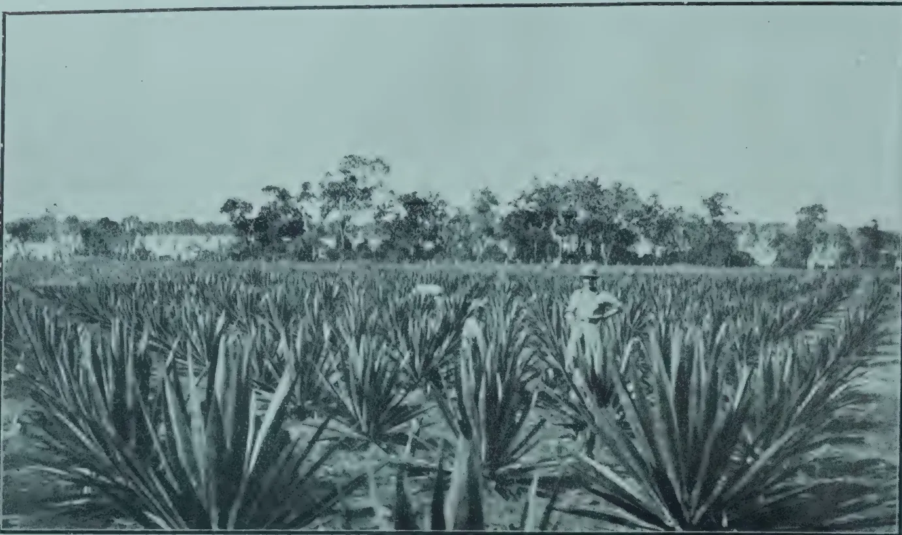
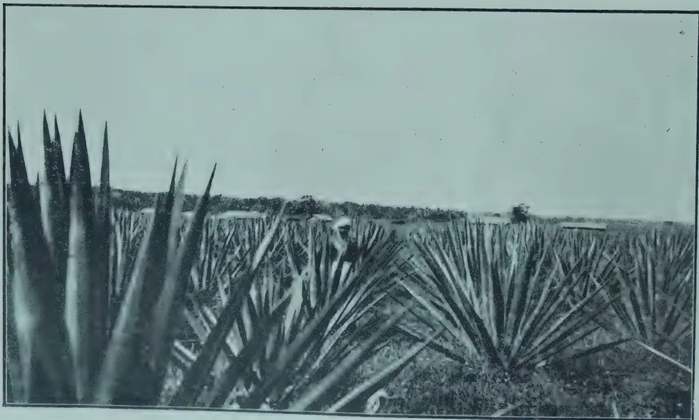
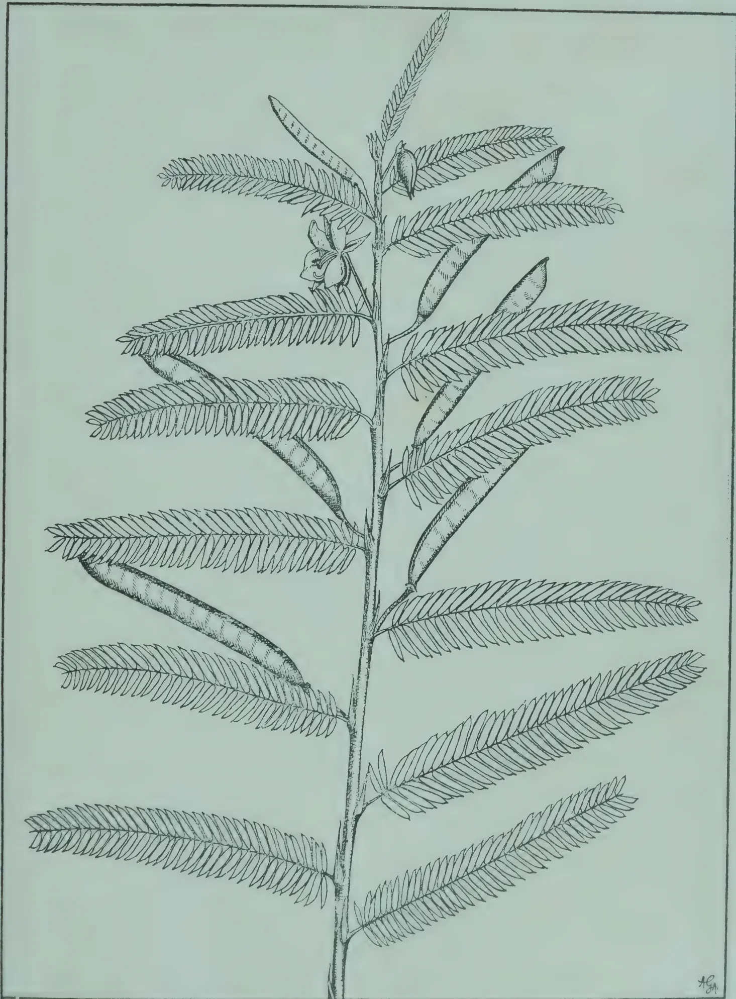
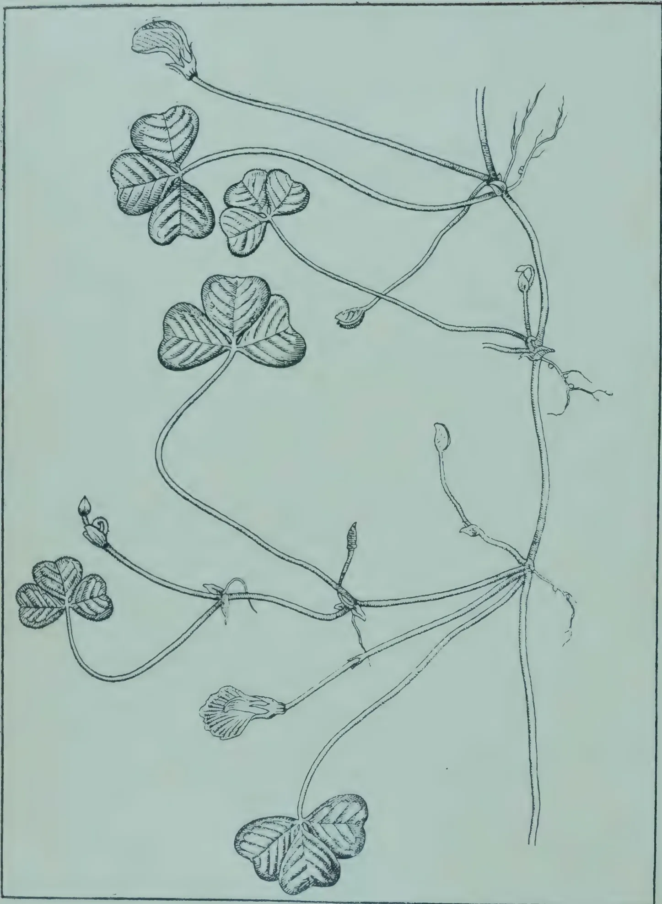
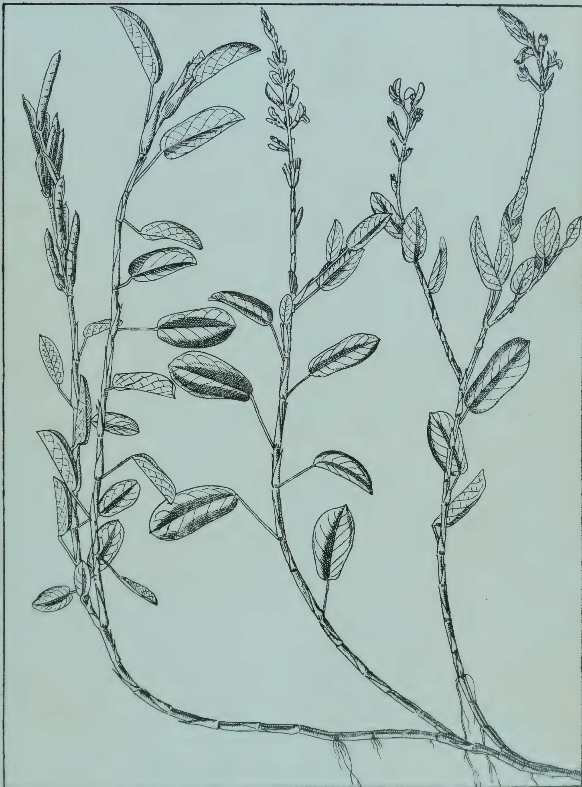
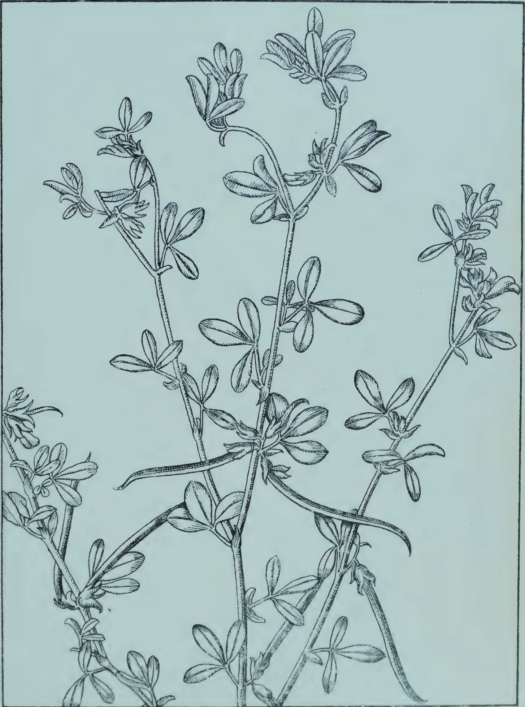
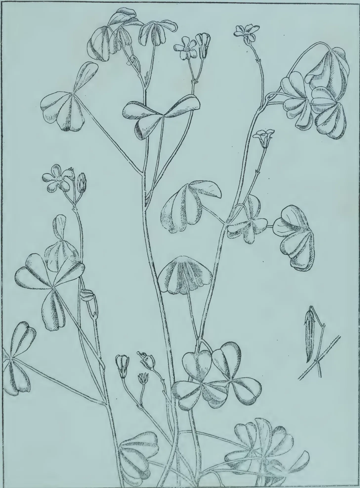

630.5
TAC
V. 63
The
— Tropical —
Agriculturist:
Journal of Agriculture,
Ceylon
Founded 1881.
Published by
The Department of Agriculture,
Peradeniya.
Vol. LXIII.
.....
Containing Numbers I to VI
July to December, 1924.
Printers:—Cave, Colombo.
| Page. | Page. | ||
|---|---|---|---|
| A | C.—Contd. | ||
| Absorption by Coconut Roots ... | 327 | Clovers for the Apiarist ... | 61 |
| Absorption of Atmospheric Nitrogen by Leguminous Plants ... |
272 | Club-root of Cabbage, To Control ... | 153 |
| Advertisement ... | 321 | Coconut Bud-rot in Porto Rico ... | 89 |
| Animal Disease Return for the Month ended 30th June, 1924 ... |
64 | Coconut Fibre and Yarn Industry ... | 13 |
| Animal Disease Return for the Month ended 31st July, 1924 ... |
128 | Coconut Palm, the ... | 122 |
| Animal Disease Return for the Month ended 31st August, 1924 ... |
192 | Coconut Roots, Absorption by ... | 327 |
| Animal Disease Return for the Month ended 30th September, 1924 ... |
256 | Coconuts, Hurricanes and ... | 224 |
| Animal Disease Return for the Month ended 31st October, 1924 ... |
320 | Coconuts, Influence of Manures on... | 328 |
| Animal Disease Return for the Month ended 30th November, 1924 ... |
384 | Coconuts, Nutfall of ... | 328 |
| Animals, Feeding of ... | 50 | Coffee Diseases of South India and their Control, Some ... |
353 |
| Apiarist, Clovers for the ... | 61 | Coffee, Spraying against Black Rot of Condition of Tea Seed-Bearer Fields ... |
55 67 |
| Artificial Farmyard Manure ... | 343 | Conference at Poona, Plant Breeders' Contribution of Dying Leaves to the Plant ... |
117 380 |
| Artificial Manures, Green Manure VERSUS ... |
285 | Control of Root-knot Nematodes (Eel- worms) on Florida Truck Farms ... |
52 |
| B | Co-operation in Japan ... | 248 | |
| Banana Bunchy Top Disease ... | 226 | Co-operation, Poultry-Farmers and Co-operative Societies ... |
250 1 |
| Banana Disease in Jamaica ... | 287 | Co-operative Societies, Suggested Efficiency-Factors for ... |
298 |
| Banana Weevil Borer ... | 290 | Co-operative Society, Ltd., Progress of an Urban Society—The Govern- ment Printing Office .. |
172 |
| Bananas, Bunchy Top in ... | 228 | Copra, the Drying of ... | 21 |
| Bee-farming, Importance of ... | 60 | Cost of Rubber Planting in Sumatra ... | 12 |
| Bee-keeping, Some Causes of Failure of Beginners in ... |
365 | Cotton, Insect Pests of...1 ... | 141 |
| Beetle, Fumigation Experiments for the Control of the Cigarette ... |
354 | Cotton Plant in the French Sudan, Cultivation of the .. |
134 |
| Betel Vine Cultivation ... | 107 | Cotton Seed with Various Pastes, Treatment of ... |
121 |
| Black Rot of Coffee, Spraying against ... | 55 | Cotton Stainer Control, Notes on ... | 349 |
| Board of Agriculture, Minutes of the Estate Products Committee of the ... |
94, 230 | Cottons and their Improvement, Mysore ... |
210 |
| Borers in Hevea ... | 11 | Cover Plants ... | 65, 76, 220, 339 |
| Breeding Ornamental Hibiscus : Arti- ficial and Natural Selection for Dwarf, Medium and Tall Seed- lings ... |
311 | Cows in Wiltshire, Systematic Feed- ing of ... |
216 |
| Broom Corn—A New Fodder Crop ... | 338 | Crop Production, Present Day Pro- blems in... |
369 |
| Bud-rot in Porto Rico, Coconut ... | 89 | Cultivation of the Cotton Plant in the French Sudan ... |
134 |
| Bug, Die-back of Hevea caused by a ... | 346 | D | |
| Bunchy Top Disease, Banana ... | 226 | Dairy Farm Buildings, Fittings and Equipment: Their Relation to Clean Milk Production ... |
160 |
| Bunchy Top in Bananas ... | 228 | Development of Inter-Imperial Trade ... | 118 |
| C | Die-back of Hevea caused by a Bug... | 346 | |
| Cabbage, to Control "Club-root" of ... | 153 | Disease of Hevea, Preliminary Note on a new Bark ... |
152 |
| Cacao desired by Manufacturers, Qualities in ... |
27 | Disease Return for the Month ended 30th June, 1924, Animal ... |
64 |
| Cacao, Fermentation of Ceylon ... | 329 | Disease Return for the Month ended 31st July, 1924, Animal ... |
128 |
| Cacao, Habit of Budded ... | 317 | Disease Return for the Month ended 31st August, 1924, Animal .. |
192 |
| Cacao Manurial Experiments ... | 207 | Disease Return for the Month ended 30th September, 1924, Animal ... |
256 |
| Cacao, New Use for ... | 318 | Disease Return for the Month ended 31st October, 1924, Animal ... |
320 |
| Cacao, Yield of Budded ... | 22 | Disease Return for the Month ended 30th November, 1924 ... |
384 |
| Cassava or Manioc in Ceylon and its Cultivation ... |
41 | Diseases in Jamaica, Banana ... | 287 |
| Ceylon Entomology ... | 91 | Drying of Copra ... | 21 |
| Charcoal, Value of ... | 171 | ||
| Chemical Analysis of Tea with regard to quality ... |
323 | ||
| Cherry at Nuwara Eliya ... | 214 | ||
| Chickens, Hatching and Rearing ... | 362 | ||
| Chickens, the Method of Feeding ... | 171 | ||
| Citrus Cultivation ... | 31 |
| Page. | Page. | ||
|---|---|---|---|
| E | I | ||
| Economics, Study and Teaching of Agricultural ... | 293 | Illipi Nuts ... | 314 |
| Education versus Research ... | 241 | Importance of Bee-farming ... | 60 |
| (Eelworms) on Florida Truck Farms, Control of Root-knot Nematodes ... | 52 | Improved Method of Lucerne Cultivation ... | 109 |
| Effect of Sunlight on the Germination of Papaya Seeds, Carica papaya ... | 251 | Improvement of Hevea ... | 193 |
| Effect of Weeds on Paddy ... | 229 | Improvement of Old Areas on Rubber Estates ... | 206 |
| Effect of Weight of Seed upon the Resulting Crop ... | 254 | Improvement of the Coconut Jaggery Industry on the West Coast ... | 301 |
| Entomology, Ceylon ... | 91 | In Memoriam ... | 257 |
| Erosion and Surface Run-off ... | 344 | Influence of Manures on Coconuts ... | 328 |
| Estate Products Committee of the Board of Agriculture, Minutes of the ... | 94, 230 | Insect Pests of Cotton ... | 141 |
| Experiment Stations in America ... | 103 | Insecticide for the Philippine Migratory Locust, Soap as an Effective Contact ... | 84 |
| Experiment Station, Peradeniya, Progress Report of the ... | 100, 239, 358 | Introduction of Hevea ... | 265 |
| Exploitation of the Tannin Mangroves and their Value, According to some Recent Work ... | 137 | J | |
| F | Jaggery Industry of the West Coast, Improvement of the Coconut ... | 301 | |
| Feeding Experiments with Ground-nut Oil Cake ... | 219 | K | |
| Feeding of Animals ... | 50 | Killing Stumps ... | 93 |
| Fermentation of Ceylon Cacao ... | 329 | Korai Grass Cultivation in Karur Taluk ... | 112 |
| Fertilisers from Soils, Leaching of.. | 277 | L | |
| Fibre from Ceylon, Report on Roselle | 135 | Leaching of Fertilisers from Soils ... | 277 |
| Fig, Sun-dried Poona ... | 187 | Leaves to the Plant, Contribution of Dying ... | 380 |
| Fodder Crop, A New-Broom Corn | 338 | Limes in Dominica, Wither-Tip of | 222 |
| Fodder Question in India, Some of the Wider Aspects of the ... | 336 | Live-stock, Research on ... | 48 |
| Food Products Committee of the Board of Agriculture, Minutes of the ... | 234 | Locust, Soap as an Effective Contact Insecticide for the Philippine Migratory ... | 84 |
| Fowls for Utility Purposes, Mating | 169 | Lucerne Cultivation, Improved Method of ... | 109 |
| Fruit Trees, When Manuring ... | 155 | M | |
| Fumigation Experiments for the Control of the Cigarette Beetle ... | 354 | Madagascar Sandal ... | 382 |
| Furfural .. | 379 | Mangroves and their Value according to some Recent Work, Exploitation of the Tannin ... | 137 |
| G | Manioc in Ceylon and its Cultivation, Cassava or ... | 41 | |
| Grape Fruit, Storage of ... | 335 | Manure and Soil Considerations ... | 154 |
| Grass Cultivation in Karur Taluk, Korai ... | 112 | Manure, Artificial Farmyard ... | 343 |
| Green Maize as Feed for Poultry ... | 364 | Manure, Mauritian Pen ... | 282 |
| Green Manures versus Artificial Manures... | 285 | Manure, Storing ... | 221 |
| H | Manures on Coconuts, The Influence of | 328 | |
| Habit of Budded Cacao ... | 317 | Manures, Hygroscopic ... | 340 |
| Hatching and Rearing Chickens ... | 362 | Manurial Experiments, Cacao ... | 207 |
| Hemp, Sisal .. | 129 | Manurial Experiments in Illupudichenai 1923-24, Paddy ... | 46 |
| Hemp Cultivation, Sisal ... | 131 | Manurial Experiments on Hevea ... | 259 |
| Hevea, Borers in ... | 11 | Manuring Fruit Trees, When ... | 155 |
| Hevea caused by a Bug, Die-back of | 346 | Mauritian Pen Manure ... | 282 |
| Hevea, Improvement of ... | 193 | Market Rates for Some Ceylon Products ... | 63, 127, 191, 255, 319, 383 |
| Hevea, Introduction of ... | 265 | Matale District Agricultural Committee, Minutes of the ... | 102, 356 |
| Hevea, Manurial Experiments on ... | 259 | Matara District Agricultural Committee, Minutes of the ... | 236 |
| Hevea, Preliminary Note on a new Bark Disease of ... | 152 | Mating Fowls for Utility Purposes ... | 169 |
| Hevea Selection ... | 195 | Mechanical Cultivation of Mint ... | 119 |
| Hibiscus : Artificial and Natural Selection for Dwarf, Medium and Tall Seedlings, Breeding Ornamental | 311 | Meteorological Return for June, 1924 | 64 |
| Hints on Onion Growing ... | 45 | " " " July, 1924 | 128 |
| Hurricanes and Coconuts ... | 224 | " " " Aug., 1924 | 192 |
| Hygroscopic Manures ... | 340 | Meteorological Return for Sept., 1924 | 256 |
| Meteorological Return for Oct., 1924 | 320 | ||
| Meteorological Return for Nov., 1924 | 384 | ||
2
| Page. | |
|---|---|
| M.—Contd. | |
| Meteorology (Agricultural Ecology) in Germany, Organization of Agricultural ... | 156 |
| Method for the Quantitative Estimation of Tannin in Plant Tissue ... | 140 |
| Method of Feeding Chickens ... | 171 |
| Milk Production, Dairy Farm Buildings, Fittings and Equipment: Their Relation to clean ... | 160 |
| Mint, Mechanical Cultivation of ... | 119 |
| Minutes of the Matale District Agricultural Committee ... | 102, 356 |
| Minutes of the Mataara District Agricultural Committee ... | 236 |
| Minutes of the Nuwara Eliya District Agricultural Committee ... | 168 |
| Minutes of the Estate Products Committee of the Board of Agriculture ... | 94, 230 |
| Minutes of the Food Products Committee of the Board of Agriculture ... | 234 |
| Mouldy Rot of Rubber ... | 149 |
| Mysore Cottons and their Improvement ... | 210 |
| N | |
| Nematodes (Eelworms) on Florida Truck Farms, Control of Root-knot ... | 52 |
| New Use for Cacao ... | 318 |
| Nitrogen by Leguminous Plants, Absorption of Atmospheric ... | 272 |
| Notes on Cotton Stainer Control ... | 349 |
| Nursery Methods that Affect Profits ... | 179 |
| Nutfall of Coconuts ... | 328 |
| Nutmeg as a Village Crop in Ceylon | 184 |
| Nuwara Eliya District Agricultural Committee, Minutes of the ... | 168 |
| Nux-Vomica in Madras ... | 190 |
| O | |
| Oil Cake, Feeding Experiments with Groundnut ... | 219 |
| Oil, Vetiver ... | 166 |
| Onion Growing, Hints on ... | 45 |
| Organization of Agricultural Meteorology (Agricultural Ecology) in Germany ... | 156 |
| P | |
| Paddy, Affected by Thickness of Seed-bed, Yield of ... | 47 |
| Paddy, Effect of Weeds on ... | 229 |
| Paddy Manurial Experiments in Illupudichenai 1923-24 ... | 46 |
| Paddy, Variations in the Yields of Small Plots of ... | 266 |
| Palm Oil Extraction—Experimental Work in Nigeria ... | 114 |
| Palms, Sugar-Producing ... | 306 |
| Papain ... | 175 |
| Papaya Seeds, Carica papaya, Effect of Sunlight on the Germination of ... | 251 |
| Pest of Sweet Potatoes ... | 229 |
| Pine-apples in the Straits Settlements ... | 333 |
| Plant Breeders' Conference at Poona ... | 117 |
| Plants, Cover ... | 65, 76, 220, 339 |
| Post-Graduate Training at the Pusa Institute ... | 118 |
| Page. | |
|---|---|
| P.—Contd. | |
| Poultry-Farmers and Co-operation ... | 250 |
| Poultry, Green Maize as Feed for ... | 364 |
| Preliminary Note on a New Bark Disease of Hevea ... | 152 |
| Preliminary Results with Budded Rubber ... | 204 |
| Present-day Problems in Crop Production .. | 369 |
| Present Status of Porto Rican Vanilla | 376 |
| Progress of an Urban Society—The Government Printing Office Co-operative Society, Ltd. ... | 172 |
| Progress Report of the Experiment Station, Peradeniya ... | 100, 239, 358 |
| Pusa Institute, Post-Graduate Training at the ... | 118 |
| Q | |
| Qualities in Cacao desired by Manufacturers ... | 27 |
| Queensland Nut, A Thin Shelled Variety of the ... | 120 |
| R | |
| Report on Roselle Fibre from Ceylon | 135 |
| Research, Education versus ... | 241 |
| Research Facilities for Students at Rothamsted ... | 58 |
| Research on Live-stock ... | 48 |
| Rice in Nigeria ... | 119 |
| Roselle Fibre from Ceylon, Report on | 135 |
| Rothamsted, Research Facilities for Students at ... | 58 |
| (Rubber) Borers in Hevea ... | 11 |
| Rubber Estates, The Improvement of Old Areas on ... | 206 |
| Rubber, Mouldy Rot of ... | 149 |
| Rubber Planting in Sumatra, Cost of Rubber, Preliminary Results with Budded ... | 204 |
| Rubber, "Rustiness" of Smoked Sheet ... | 3 |
| Rubber, Thinning Out ... | 8, 73 |
| "Rustiness" of Smoked Sheet Rubber | 3 |
| S | |
| Sandal, Madagascar ... | 382 |
| Schneider Challenge Cup for School Gardens ... | 253 |
| School Gardens Competitions, North Western Province ... | 254 |
| School Gardens, Schneider Challenge Cup for ... | 253 |
| Seed upon the Resulting Crop, Effect of Weight of ... | 254 |
| Sisal Hemp ... | 129 |
| Sisal Hemp Cultivation ... | 131 |
| Soap as an Effective Contact Insecticide for the Philippine Migratory Locust... .. | 84 |
| Soil Considerations, Manure and ... | 154 |
| Soils, Leaching of Fertilisers from ... | 277 |
| Some Causes of Failure of Beginners in Bee-keeping ... | 365 |
| Some Coffee Diseases of South India and their Control ... | 353 |
| Some of the Wider Aspects of the Fodder Questions in India ... | 336 |
3
| Page. | |
|---|---|
| S.—Contd. | |
| Spraying against Black Rot of Coffee | 55 |
| Storage of Grape Fruits | 335 |
| Storing Manure | 221 |
| Students at Rothamsted, Research facilities for | 58 |
| Study and Teaching of Agricultural Economics | 293 |
| Sugar-Producing Palms | 306 |
| Suggested Efficiency-Factors for Co-operative Societies | 298 |
| Sun-dried Poona Fig | 187 |
| Sweet Potatos, A Pest of | 229 |
| Systematic Feeding of Cows in Wiltshire | 216 |
| T | |
| Tannin in Plant Tissue, A Method for the Quantitative Estimation of | 140 |
| Tea Cultivation in the State of Sao Paolo, Brazil | 72 |
| Tea Seed-Bearer Fields, Condition of | 67 |
| Tea with regard to Quality, Chemical Analysis of | 323 |
| Thinning out Rubber | 8, 73 |
| Thin Shelled Variety of the Queensland Nut | 120 |
| Page. | |
|---|---|
| T.—Contd. | |
| To Control Club-root of Cabbage | 153 |
| To Destroy Weeds on Paths | 93 |
| Trade, Development of Inter-Imperial Treatment of Cotton Seed with Various Pastes | 118 121 |
| V | |
| Value of Charcoal | 171 |
| Vanilla, Present Status of Porto Rican | 376 |
| Variations in the Yields of Small Plots of Paddy | 266 |
| Vetiver Oil | 166 |
| W | |
| Watsonias in Jamaica | 115 |
| Weeds | 78 |
| Weeds on Paddy, Effect of | 229 |
| Weeds on Paths, To Destroy | 93 |
| Weevil Borer, Banana | 290 |
| When Manuring Fruit-Trees | 155 |
| Wither-Tip of Limes in Dominica | 222 |
| Y | |
| Yield of Budded Cacao | 22 |
| Yield of Paddy affected by Thickness of Seed-bed | 47 |
| Plate | I.—Desmodium triflorum | Plate V.—Cassia mimosoides |
| " | II.—Desmodium heterophyllum | " VI.—Parochetus communis |
| " | III.—Desmodium heterocarpum | " VII.—Alyssicarpus vaginalis |
| " | IV.—Sisal Hemp, Mahaillupalama | " VIII.—Rothia trifoliata |
| 76-77 | " IX.—Oxalis corniculata | |
| 129 | 338-339 |
[Faint page: no legible print of its own could be verified; text withheld (stage 4 review list)]
VOL. LXIII.
PERADENIYA, JULY, 1924.
No. 1.
The principles on which Co-operative Societies are based are not of recent discovery, nor are they peculiar to such Societies. Everyone who becomes a shareholder in a Company is, in a sense, a co-operator, no matter how large the Company. The special feature of what has come to be known as the co-operative movement is that it links together for the purposes of buying, or selling, or lending money, individuals whose separate capabilities in any of these respects are for all practical purposes negligible.
The earliest Co-operative Societies were formed for the supply of goods for ordinary household requirements. Collective buying cheapened the purchase. The movement was necessarily confined to the towns, as it was essential that a sufficient number of consumers should be found in a limited area. From small beginnings, there has arisen in England an organisation which owns, not only a network of shops but also various sources of production, and in the magnitude of its operations rivals any "capitalist" concern.
The idea of co-operation has now spread, until there are, especially on the Continent of Europe, very few phases of activity in agriculture which are not represented by a Co-operative Society, whether for collective selling or collective buying, or united effort in improvement of crops or stock.
The objects of the majority of these Societies may be classed as collective trading; and a member of such a society expects to get an immediate return either in the lower price of the goods he buys or the higher price of what he sells.
2[JULY, 1924.]Later came the idea of Co-operative Credit, which is the combination of "small men" to lend money for productive purposes. It is banking on a minor scale, with security which the professional banker cannot handle. It is unnecessary to detail here how its special difficulties are overcome. It is, however, now an accomplished fact. But it is obvious that its benefits cannot be immediate to every member (except where outside assistance is given), and it demands at first a certain amount of altruism on the part of some.
In Ceylon, the evolutionary sequence of the Co-operative movement has been reversed. It began with the formation of Co-operative Credit Societies, formed with the object of lending money for productive purposes. Subsequently there arose a demand for Co-operative Societies for the purchase of manure, or for the collective selling of produce, or for general supply, and the original Co-operative Credit Ordinance has been expanded into the Co-operative Societies Ordinance, which legalises other than Credit Societies.
It is, however, important that the difference between a Co-operative Credit Society and a Co-operative (trading) Society should be borne in mind.
A Co-operative Credit Society deals only with money. It lends money, with sureties as security. The borrower is presumed to use the money for some purpose which will enable him to repay the loan and yield a profit for himself. In the case of failure of crops, the loss falls on the borrower, not the society. The society has no stock to deteriorate. Its chief concern is to keep its capital intact.
A trading society, on the other hand, has to take some business risks. It may invest in goods which deteriorate or become unsaleable; or it may purchase too optimistically and be unable to sell at a profit. Experience has shown that, with the necessary precautions, a Co-operative (trading) Society can be managed without undue losses, yet nevertheless it has also shown that the two phases of Co-operation, Co-operative Credit and Co-operative Trading, should be kept distinct. One society cannot combine both objects.
We may recall that, prior to the passing of the Co-operative Credit Ordinance of 1911, a Credit Society was formed in a certain district in Ceylon and proved very successful. Unfortunately, it undertook tobacco growing, and, the crop that year happening to be a failure, the society lost all its capital and ceased to exist.
JULY, 1924.]3The defect of smoked sheet rubber, known as "Rustiness", may be defined as the reddish-brown powdery deposit on the surface of smoked sheet which generally becomes visible only when sheets possessing this defect are stretched and allowed to retract. Such sheets are said to "stretch rusty". This defect has been a source of trouble to rubber estates for many years, and while it is a moot point whether the presence of "rustiness" has any detrimental effect upon the intrinsic physical properties of the rubber after vulcanisation yet the rubber buyers take advantage of its appearance in a consignment of smoked sheet to assess the value of that rubber at a lower price than they would have, had the "defect" been absent. It therefore behoves rubber planters to take every care that this defect does not appear in their output.
It was first considered that "rust" was due to the deposition of substances contained in the serum, after the coagulation of the latex, on the surfaces of the sheets upon the evaporation of the water portion of the serum. MORGAN in the 1922 edition of his well-known book "THE PREPARATION OF PLANTATION RUBBER" states that: "It will now be clear that 'rust' is caused by a film of matter which is formed on the surface of the pressed coagulum, being there deposited by the exudations from within the rubber through the pores." Research work carried out in Java by HELLENDORN (ARCHIEF VOOR DE RUBBERCULTUUR. Vol. 3. Page 412), however, has shewn that "the film of serum substances, notably proteins, dried up on the surface of the sheet" explanation of the origin of "rust" was not due to the deposition of the residual substances from the serum on the surface of the sheet but to the decomposition of those substances, which decomposition was brought about by the activity of aerobic micro-organisms. He found that the presence of these protein substances on the surface of the sheet did not produce "rust" when the sheet was dried and smoked provided that he could prevent these surface deposits from being acted on by the micro-organisms. This he did by soaking the sheet in some disinfecting fluid such as dilute solutions of formalin, chinisol or sodium bisulphite prior to hanging the sheet out to dry.
Corroborative experimental work on the occurrence of "rust" on sheet rubber has been recently carried out in Ceylon and this fully substantiates the conclusions of HELLENDORN. Both HELLENDORN and the scientists of the Rubber Research Scheme of Ceylon carried out some most interesting experiments in connection with this matter and from the results of which points of great practical importance were obtained. The following are some of the main points brought out by the experiments.
4[JULY, 1924."Rust" on sheet rubber can be produced at will irrespective of the method of manufacture (e.g. scrubbing with hot water after the sheet has left the marking machine, soaking the sheet in water for a length of time). All that is necessary is to keep the freshly made sheet in a damp condition for some time and "rusts" will develop. Experiments in which freshly made sheets were hung in a damp chamber (a kerosene tin containing a little water at the bottom) for periods of one and two days never failed to produce "rust", the degree of "rustiness" increasing with the longer period. If, however, the water in the damp chamber was replaced by formalin solution (2%) and a freshly prepared sheet again hung in this atmosphere of formalin vapour no rustiness developed.
It was suggested that since the formalin vapour has a hardening effect upon the surface of the sheet this freedom from "rust" might be caused by this action and not by the disinfecting effect of the vapour. The Ceylon workers therefore replaced the formalin with a 5% solution of potassium cyanide so that the freshly made sheet was hung in the vapour of the disinfectant substance. Again no "rustiness" appeared on the rubber.
HELLENDORN found that the micro-organisms which caused the decomposition of the serum substances and thereby produced "rustiness" needed air for their existence (i.e. they are aerobic). He found that if a freshly prepared sheet was tightly rolled up and placed in a moist atmosphere then only those portions exposed to the air developed "rustiness". The workers in Ceylon investigated whether the extent of the dilution of the latex used in sheet making and also the amount of acid employed for coagulation purposes had any bearing upon the occurrence of "rust." They found that there was distinctly less rust upon the sheet prepared from undiluted latex but that the amount of acid employed did not appear to contribute to the question of "rust" formation. The former of these findings appears to be diametrically opposed to the suggestion given by MORGAN that the richer the latex the greater the percentage of protein retained in the coagulum and hence the greater the probability of the occurrence of "rust". Even abandoning the "deposition of serum substances" theory for the origin of "rust" and the adoption of the micro-organism idea it is difficult to suggest a reason for the finding that distinctly less "rust" was found on sheet made from undiluted latex, provided that all other factors (e.g. temperature and humidity) were equal.
Both HELLENDORN and the Ceylon scientists found that "rustiness" was increased by delay in rolling the sheet after coagulation. Where the coagulum was rolled two hours after coagulation was complete the resulting sheets produced less "rust" than in the case where the coagulum was rolled the next morning when both sheets were hung in similarly damp atmospheres.
In view of the fact that the washing of sheets as soon as they have been through the marking rollers either in warm or cold water has been advocated as a means of preventing "rustiness" on the grounds that much of the serum substances which would otherwise be left on the surface of the sheet are thereby washed away, the results of the experiments in which
JULY, 1924.]5sheets were soaked in water for some time are of interest. HELLENDORN'S experiments led him to state definitely that "soaking in water does not prevent rustiness, and that after soaking in water rustiness develops even to an increased degree". The workers in Ceylon found that sheets soaked in running water for four hours and then hung up in the damp chamber developed heavy rust though to a slightly less extent than in the case of the control which had not been washed. They did not find, like HELLENDORN that the soaking in water increased the tendency to "rust" formation.
The question of temperature is an important one in the formation of "rust" on sheet. HELLENDORN found that the optimum temperature for the growing of the micro-organisms was around 104°F. By, maintaining the damp chamber in which the piece of sheet rubber was hung at this temperature he succeeded in obtaining rustiness to the maximum degree. On raising the temperature to 120°F. he failed to produce the "rust" and he therefore considers that this temperature is too high for the growth of the micro-organisms.
A consideration of what has been written above will indicate to rubber planters what steps they should take to prevent the defect "rust" from affecting their sheet rubber. Since "rustiness" is the result of the action of micro-organisms upon the surface of the drying sheet rubber it is obvious that "rust" can be prevented by preventing these micro-organisms from working. This can be best attained by rendering the surface of the sheet rubber an uncongenial habitat for these organisms either by covering the surface of the sheet with some substance noxious to these organisms or by rendering the conditions existing on the surface of the sheet unsuitable for their existence.
HELLENDORN has shown that by soaking freshly made sheet in dilute solutions of formalin, chinosol or sodium bisulphite for some time and placing such treated sheet under conditions which would produce "rustiness" in untreated sheet, the treated sheets do not develop the defect. This method can be adopted by estates as a practical means of preventing "rust" but in view of the fact that it is not so efficient as the method next described, and further as it entails additional work and expense it is not recommended.
The alternative method, which is strongly recommended for adoption by all estate managements, irrespective as to whether they are or are not troubled with the defect "rust", utilises the other means suggested above for rendering the surface of the sheet uncongenial to the "rust" causing organisms, viz. by so adjusting the conditions that they are unfavourable to the development of the organisms. Moisture is essential to these organisms for their development, and if one can so hasten the surface drying of the sheet, when freshly made, that the organisms have no time to develop then "rustiness" will never occur. Quick surface drying is the secret for the prevention of rust on sheet rubber, and a careful watch should be kept for anything in the factory procedure which may prevent this from being obtained. The sheets after rolling and marking should be hung out in the open to drip and surface dry. They should not be hung up in a dark
6[JULY, 1924.corner of the factory to drip, as here the rate of surface drying is so slow that the organisms have plenty of time to establish themselves before the sheets have finished dripping. Ordinary sheet rubber (made from latices of to lb. rubber content per gallon and properly rolled) should be surface dry in about two to two and a half hours (in fine weather) if the place chosen for their hanging is a suitable one. Care should be taken to see that the wet freshly made sheets do not overlap when they are hung out to drip. If attention is not paid to this matter the places on the sheets which touch remain moist after the remainder of the sheet's surface is dry and "rust" may occur in these portions of the sheets. Not only must attention be paid to the matter of the sideways overlapping of the sheet but also to that of the vertical overlapping of the sheets of different rows. "Rusty" ends of sheets are caused often by neglect of this point. After the sheets have become surface dry they should be taken at once and hung in the smoke-house.
In most factories it would be generally very inconvenient, and would entail a considerable loss of time, were each individual sheet taken and hung out in the open as soon as it left the marking rollers. To prevent this loss of time the sheets after leaving the marker may be laid on edge against an upright piece of board firmly fixed on the table until a sufficient number of sheets have been collected to justify the coolie making the journey to the hanging racks outside. The placing of the sheets on edge (as opposed to stacking them up in piles when they leave the marking rollers) permits a more or less easy running off of the surface water from the sheets, which cannot take place when the sheets are piled up one on top of the other. On no account should wet sheet be allowed to remain piled up in the factory, at least for any length of time. It must be pointed out that the edge draining, suggested above, of the sheets cannot and should not be employed as a substitute for the hanging of the sheet in the open. On some estates it is the usual practice to leave the sheet lying about the factory until the whole crop has been marked and then to weigh the rubber. This practice offers every opportunity for "rust" to develop. As freedom from this defect is of more importance than a knowledge of the weight of the previous day's output it is suggested that the weighing of the rubber could be postponed until after the surface drying is completed and before the sheets are placed in the smoke-house.
The above described method of dealing with the sheet to prevent "rust" is easy to carry out where the crop is made up the next morning, for then with a properly equipped factory the sheet can all be surface dried and ready for the smoke-house by 11 a.m. The wet sheets can be hung to surface dry in the sun up till about 9 a.m., or 9.30 a.m., at the latest. By allowing the sheets to remain in the sun until a later hour one runs the risk of glossy "bar-marks" appearing across the sheets due to the heat causing a slight tackiness at those parts.
Where the sheets are made up the same afternoon, certain difficulties arise in bringing about the desired quick surface drying. If sheets are hung out in the open late in the afternoon the rate of drying will be usually
JULY, 1924.]7extremely slow and "rustiness" on the surface will be nearly unavoidable. Further, it would be fatal to leave the sheets in the factory until the next morning, either stacked up or laid on edge. Two solutions however offer themselves whereby the micro-organisms are prevented from establishing themselves upon the surface of the sheets. The first is to keep the freshly made sheets under water all night, and then to hang them out in the open first thing the next morning. As the micro-organisms need air for their existence they will not be able to infect sheets when under water. Further, this soaking of the sheets, caused thereby, decreases the chance of mould growths upon the sheet after smoking and also the occurrence of that greasiness of the sheet which sometimes is found.
The other solution to the problem is by having a small special "first night" smoke-house in which the wet sheet can be hung. Provided that a good supply of smoke and heat (but not too much heat) is available, no opportunity should be given to the micro-organisms to affect the sheets under these conditions. The question might be raised however, that if it is suggested that the sheet should be hung in a smoke-house, then why should one go to the trouble of erecting this special "first night" building and why should not the sheet be hung straightaway in the ordinary smoke-house. The answer to this question is that it is extremely inadvisable to bring dripping sheet (and that means water) into the ordinary smoke-house. Such water has to be evaporated, which means utilisation of heat, so that the temperature of the whole building is kept lower than it otherwise would be until all the water has been vaporised. Further, this water vapour goes into the atmosphere of the building and helps to bring about its saturation. As the drying sheets are now surrounded by a moisture laden air the general rate of drying is reduced. This result is accentuated if the building is insufficiently ventilated. Presuming that the fires are allowed to slow down during the night then the building will cool and some of the water vapour contained in the saturated atmosphere will condense out on the walls of the building and on the hanging sheets. This will assist greatly in the growth of mildews on the sheets and also contribute towards the creosote drippings from the roof and beams which are sometimes found disfiguring sheet rubber. A further point needs consideration in connection with the hanging of the dripping sheet in the ordinary smoke-house. The fires could not be lighted until the freshly made sheets were hung up and as it would take some time before the general temperature of the large building would be high enough to inhabit the growth of the micro-organisms () every opportunity would thus be given to the organisms to grow on the wet surfaces of the newly made sheet. Indeed, for some space of time, the length of which depends upon the style of smoke-house, the temperature under which the newly made sheets would exist would be the optimum for the development of the "rust" causing micro-organisms (). It will be therefore concluded from the above that the hanging of wet dripping sheet in the ordinary smoke-house is not advisable. Certain estates do put their freshly made wet sheets direct into the smoke-house and appear to suffer none of the consequences suggested above. Their immunity from these consequences may have been brought about by the fact that their smoke-houses are well ventilated and are of those types which are quickly heated up. (The Planter.)—PLANTERS' CHRONICLE, Vol. XIX. No. 21.
8[JULY, 1924.In thinning out rubber on a scientific basis, two methods are open, vis—thinning in accordance with yield, or thinning in accordance with the number of latex vessel rows. The first method is the more obvious one, but it requires the determination of the individual yields of the trees at intervals over a period of a year or more in order to avoid chance fluctuations. The second requires only one examination of each tree, and probably for that reason there was a tendency to regard it as the only practicable method when it was first proposed. But it has serious disadvantages. As was pointed out in Ceylon some years ago, in thinning out by yield, some trees are retained which are good yielders, but have few latex vessel rows, whereas in thinning out by latex vessel rows some trees are retained which have a large number of latex vessel rows, but are poor yielders. That is due to the fact that the yield and the number of latex vessel rows vary independently of one another, and it is readily seen to be an inevitable conclusion when a correlation table of the yields and numbers of latex vessel rows is constructed for any group of Hevea trees. It is indisputable.
It has been urged that it is preferable to retain the smaller yielders with a large number of latex vessel rows, in preference to the good yielders with few latex vessel rows, because the yield of the former may improve after the thinning out, and the latter may be the more liable to develop Brown Bast. These are still speculations; or rather, the evidence since obtained does not support either. The recorded examinations of trees affected by Brown Bast do not show any relation between the incidence of Brown Bast and the number of latex vessel rows.
Accounts of the results of thinning out by these two methods are now being published, the most recent contribution being a paper by DR. W. BALLY in the ARCHIEF VOOR DE RUBBERCULTUUR for June 1924, entitled "Over de waarde van bastonderzoek en van productie-opname voor het uitsnijden van rubbertuinen."
In 1920, ARENS determined the numbers of latex vessel rows of the trees in question, and thirty yield determinations were made during that year. Further yield determinations were made in 1921 and 1922: and in the latter year the plots were thinned out. After the thinning, yield determinations were made in 1922 and 1923, and bark examinations in the latter year, by DR. BALLY.
The trees were divided into six plots, three of which were thinned out according to yield, and three according to bark examination. The standard was not the same on all the plots. On G 1, the trees were reduced from 69 to 49, all yielding less than an average of 6 grams wet crepe per tapping (29 per cent. of the trees) being removed; on G 3, the trees were reduced from 139 to 101, (27.3 per cent.), the standard being 6.4 grams wet crepe; and on G 5, from 129 to 90 (30.2 per cent.), the standard being 4.5 grams wet crepe per tapping.
In the second series, the trees on G 2 were reduced from 97 to 74 (23.7 per cent.), all having 9 or fewer latex vessel rows being removed; on G 4, the trees were reduced from 131 to 103 (21.4 per cent.), all having 7 or fewer latex vessel rows being removed; and on G 6, from 149 to 106 (28.8 per cent.), all having 9 or fewer latex vessel rows being removed.
JULY, 1924.]9In an experiment of this nature, it must be impossible, except by some extraordinary combination of chances, to obtain uniformity of conditions. One cannot expect to have all the plots thinned out in the same proportion, and at the same time adopt a uniform standard of yield or latex vessel rows. Perhaps, if the object of the experiment is to compare yields before and after thinning, it would be preferable to thin out all plots in the same proportion; and it may be noted that more trees could have been spared in G 4, from the point both of percentage thinning and of standard of latex vessel rows.
There are, however, more serious objections to the experiment. As DR BALLY points out, it is an estate experiment, and it has been subject to the usual vicissitudes which attend such experiments. Before the thinning, the trees were tapped by a V cut daily; after the thinning they were tapped by a single cut on a half on alternate days. Some trees were tapped for a short time on one-third circumference. Further, before the thinning, the cuts on the trees were at different heights; it was only after the thinning that care was taken to have the cuts on all trees at approximately the same height.
It follows that no comparison can be made of the yields of the trees before and after thinning. The differences in yield due to inequalities in the heights of the cuts before thinning may have been averaged out by the large number of yield determinations made, so that comparisons of the trees inter se before thinning out are valid; and the comparisons similarly made after tapping are valid. But it is not possible, owing to the variation in the tapping system, to compare the yield before thinning with the yield after thinning.
It might be suggested that a comparison of the percentage increases of the yields after thinning would afford some measure of the relative value of the two methods. This, however, is not possible, as the trees were not thinned out equally in the two cases.
We have directed attention to this aspect of the experiment, because it is illustrative of a large proportion of the investigations which have been published during recent years. In very many cases, the investigation is based on routine estate work, and it is subject to the inevitable variations which occur when experimental work must give way to estate practice. In some instances, as in the present case, the imperfections are recorded by the investigator; in others, they are obvious to anyone who studies the account carefully. It is open to question whether it is worth while to publish accounts of such investigations. They have their value, in affording "pointers" for more accurate work, and hence would serve a useful purpose as laboratory records; but if published they are apt to be misleading. The author may record all the facts which make the results inconclusive, but it is usually found that all such qualifications are discarded on quotation.
DR. BALLY'S conclusions relate chiefly to facts determined from the examinations of the individual trees. He finds that there are some trees which are good yielders and have few latex vessel rows, and that these remain good yielders for a long time. This is in accordance with the view that a good yielder is always a good yielder, apart from the question of disease. If the plots had been thinned out in accordance with bark examinations only, these trees would have been cut out; hence yield determinations are indispensable.
10[JULY, 1924.]Again, he states that some of the trees which were poor yielders but have a large number of latex vessel rows, show an increased yield after thinning out. Consequently, if the selection had been made according to yield, the real qualities of these trees would not have been ascertained and they would have been cut out. Hence he concludes that bark examination, i.e., counting the number of latex vessel rows, is just as indispensable as yield determinations.
The latter conclusion does not appear to be warranted. The bark examination has, of course, to be made before thinning out; and it is impossible for anyone to predict which of the poor yielders with a large number of latex vessel rows are likely to become good yielders after the thinning. The only evident use of bark examination in this connection would be in a case in which it was desired to remove some of a number of trees which gave approximately the same yield. In such a case one would naturally retain those which showed the greatest number of latex vessel rows. But if poor yielders with a large number of latex vessel rows are to be retained (in preference to good yielders with few), in the expectation that they will become good yielders, it will be necessary to discover some criterion which will indicate not only those trees which are certain to show improvement, but also the extent of that improvement; for it is essential that their increased yield due to the amelioration of environmental conditions after thinning should exceed the yield of the good yielders under the same conditions. In the present state of our knowledge, it does not seem probable that any such criterion will be forthcoming.
However, Dr. BALLY'S conclusion does not appear to be supported by his facts. He cites as examples of the improvement in question the trees G II 16, G. IV 77, and G V 77. But he also gives a list of the good yielders which have few latex vessel rows, with a table of their average yields, and another list of the poor yielders which have many latex vessel rows, with a similar table. From these it is evident that the yield, before thinning, of G II 16, which is classed as a good yielder with many latex vessel rows was greater than (approximately equal to) that of G II 5, which is classed as a good yielder with few latex vessel rows. Similarly, the yield of G IV 77, another poor yielder with many latex vessel rows, was greater than that of either G IV 50, G IV 85, or G IV 126, all of which are classed as good yielders with few latex vessel rows. And again, G V 77, an alleged poor yielder with many latex vessel rows, yielded more before thinning than G V 43, an alleged good yielder with few latex vessel rows. Hence it would appear that the conclusion in question was based upon trees which had been placed in the wrong class.
DR. BALLY finds that there is no correlation between the diameters of the latex vessels and the yield. The larger yield of certain trees which have few latex vessel rows is not due to a greater size of the latex tubes.
As is well known, trees with the greatest number of latex vessel rows do not necessarily give the greatest yield. DR. BALLY finds that after thinning out, the discrepancy becomes more marked. Consequently any subsequent thinning must be based on yield.
DR. BALLY'S paper does not afford any evidence which conflicts with the advice hitherto given in Ceylon, that selection should be based on yield.
JULY, 1924.]11L. G. E. KALSHOVEN, of the Instituut voor Plantenziekten, Java, has begun an investigation into the attacks of boring beetles on standing Hevea trees. These attacks have been well known for many years, and a full investigation of the conditions under which they occur has been long overdue.
The preliminary account, in the ARCHIEF VOOR DE RUBBERCULTUUR, VIII, No. 6 (June 1924) deals chiefly with the species of beetles found in Hevea stems and branches. These are similar to the beetles found in the same situations in Ceylon. They belong to two families, the Scolytidae and the Platypodidae. KALSHOVEN calls them sapwood borers, because they bore into the wood while it is still wet; this scarcely agrees with the English usage of the term. Among them is the well-known Xyleborus perforans, so common in canker patches on Hevea and cacao, to which the cacao canker of Ceylon was attributed when it first appeared.
In dead and dry Hevea wood, beetles of other families may be found, but these are not of interest to the planter. It may be noted that the investigator does not appear to have met with Batocera rubus, the root and stem borer of Hevea.
KALSHOVEN states, as a result of his preliminary observations, that beetle attacks may occur
Under the first heading he includes trees which are dying as a result of an attack of root disease, or after having been struck by lightning; and under the second, trees attacked by canker or pink disease.
With regard to the third, which is the really important case, he remarks that in most cases in which beetles are reported to have attacked sound trees the insects are really secondary, following on a previous injury, and suggests that such a mistake can easily be made in cases of trees struck by lightning. He notes that it has been repeatedly observed that beetles which have been attracted to local injuries on the stem sometimes bore into healthy parts of the bark and are fixed by the issuing latex.
Nevertheless, he considers that, judging from what occurs in other trees, a primary attack by borers on a "practically quite sound" Hevea tree, is not out of the question. Such cases, he thinks, may occur when a large number of borers are bred in dead or felled rubber. On emergence, these borers may attack the healthy trees in the neighbourhood, usually unsuccessfully, because they are trapped by the flow of latex. This hypothesis was put forward in Ceylon several years ago.
It will be evident that the article under review does not carry us much beyond what has been known for the last ten years. One very striking feature which requires elucidation is that while beetles readily, and in large numbers, attack trees killed by lightning, die-back, or canker, they seldom attack tapping wounds, or wounds deliberately made by cutting out large pieces of healthy cortex. The explanation is probably simple, and may depend on the attractive colour of cortex which is decaying as a result of a
12[JULY, 1924.fungus attack, or which is undergoing a post mortem fermentation. Parallel to the above is the observation that if trees are lightly scorched by fire they are quickly attacked by beetles, but if the scorching is so severe that the bark is charred, they are not, or comparatively slightly, attacked.
Another unexplained case which occurred fairly frequently a few years ago is that of the attack of borers on renewing bark after the application of liquid fuel. The affected patches were, as a rule, very small, and usually contained a single borer hole. It is possible that the bark may have been killed by the liquid fuel, but even in that case its penetration by boring beetles would not have been expected.
Pink disease and canker frequently affect only the outer layers of the cortex at first, and a beetle which bores through the diseased tissue may penetrate into the underlying sound cortex, and be smothered by the out-flowing latex. But that does not explain all cases in which beetles are found fixed in their bore holes by rubber. It is possible that the hypothesis already referred to may afford the explanation, but it seems somewhat at variance with the known habits of these insects.
It may be worth while to recall one case, which has previously been recorded elsewhere. On a certain estate, where the trees had been thinned out and the felled trunks had probably induced an excessive multiplication of borers, large numbers of insects were found on the healthy standing trees, partly embedded in shallow bore holes, with the hinder half sticking out. In none of the instances examined had the insect bored into the cortex far enough to tap the latex tubes. It had penetrated as far as the stone cell layer and had then died, and the tree had subsequently blocked the inner end of the boring by a layer of cork. Why the beetles died remains unexplained.—T. P.
The following figures are taken from a carefully prepared estimate of the cost of planting and bringing into bearing of a rubber estate in Sumatra, but the estimate represents also, with fair accuracy, the expenditure necessary on a similar proposition in Malaya.
The minimum area taken for economical working is 2,000 acres. Company formation expenses are not included, but 5% interest on capital is allowed, up to and including the fifth year.
The cost includes the wages of 500 coolies, and the salaries and bungalows of the European Staff.
The cost per acre to the end of the fifth year works out at £83.16.8 but as the cost of production is high of young rubber just coming into bearing, it is suggested that a further allowance should be made for interest on capital until the seventh year, and £100 per acre is a fairly accurate estimate for planting and bringing into bearing of a rubber estate in Sumatra at the present day.—INTERNATIONAL REVIEW OF SCI. & PRAC. OF AGRICULTURE. Vol. II. No. 1.
JULY, 1924.]13BY DR. A. J. KLUYVER AND R. M. I. REKSOHADIPRODJO.
(Translated from the Dutch by H. L. Ludowyk, Librarian, Department of Agriculture, Ceylon.)
Although recent research has made it seem probable that the original home of the Coconut was South America† and that it reached Ceylon via Eastern Asia, it is a well-established fact that the cultivation of coconuts in Ceylon dates back at least as far as the beginning of the Christian era. FERGUSON in his important article "The Beginning, Rise and Progress of the Cultivation of the Coconut Palm in Ceylon"‡ points out that the Roman writer ÆLIANUS in the second century of the Christian era makes mention of the existence of regularly laid out coconut plantations along the southern coast in the neighbourhood of Galle. It is strange however, that in the MAHAWANSA, the ancient Sinhalese annals of Ceylon, there is but one reference to the coconut, whilst, on the other hand, references to the Palmyrah (Borassus flabellifer L.) are numerous.
There occurs a passage in this book which tells us that about the year 589 A.D. KING AGGRABODHI caused a coconut plantation to be laid out over an extent of land thirty English miles long, probably between Weligama and Dondra on the Southern Coast of the Island. Repeated references are to be found to support the fact that in the next century coconuts and arrack were export products of Ceylon, showing thereby that coconut cultivation was increasing in importance in that country. The statement of the MAHAWANSA which has been just referred to is strongly corroborated by the fact that about the year 1250 KING PRAKRAMA BAHU II. caused the coastal strip between Bentota and the Kaluganga to be planted with coconut palms. In the course of centuries the coconut palm kept on spreading further over the Island, chiefly, and at first, along the south and the west coasts. However, the spread of the cultivation must have taken place rather slowly, for already in the year 1740 the Dutch Governor VAN IMHOFF took the initiative for
* KLUYVER, A. J. en REKSOHADIPRODJO, R. M. I. Klappervezel—en Klappergarennijverheid: Verslag v. een opdracht v.h. Kolonial Inst. ingesteld onderzoek naar de Klappervezelindu streeën op Ceylon en an de Malabarkust met een beschouwing over de mogelijkheid deze industrieën in Nederlandsch Oost-Indie ingang te vinden. Kolonial Inst. Amsterdam Meded. No. XX, Afd. Handels museums No. 5.
† Vide: COOK, O. F. History of the Coconut Palm in America. Contrib. from the U.S. Nat. Herbarium Vol. XIV. Pt. 2. Washington, 1910. The foundation of COOK's theory has been rather shaken by the spontaneous appearance of the coconut on the Island of Krakatau after its entire vegetation had been destroyed in 1883. Compare with W. DOCTERS VAN LEEUWEN. Proc. of the First Ned. Ind. Natural Sci. Congress, Weltevreden, 1920, p. 44.
‡ Journ. Royal Asiatic Society Ceylon Branch, Vol. XIX, 1906. p. 22.
14[JULY, 1924.]attaining the aim he had in view of planting the south-western littoral from Colombo to Kalutara with the coconut palm. This part of the Island is now the most important centre of coconut cultivation.
About the year 1800 the south coast and the southern part of the west coast of Ceylon were characterised by the presence of complete stretch of almost forest-like plantations of coconut palms. These plantations, however, did not stretch very far inland from the coast.
Especially under the influence of the English colonists (sic), in the latter half of the nineteenth century, a great impetus was given to the spreading of the cultivation and many important areas were opened up. According to FERGUSON* the area planted with coconuts had, since the beginning of 1840, been increased by at least seven-fold. The first systematically planted coconut estates opened out by the English were all in the Jaffna and Batticaloa districts, but the most extensive areas were opened up later in the Negombo, Chilaw and Puttalam districts all of which lie North of Colombo. Further, thousands of acres of land occupying the valley of the Maha Oya were also planted with the coconut palm. Besides the ancient plantations of the Sinhalese people along the coasts of the Southern and Western Provinces, there also exists to-day a very important cultural district in the North-Western Province, particularly in the land lying around the mouth of the Maha Oya, the districts of Puttalam and Kurunegala. The smaller districts around Jaffna in the North, Trincomalie and Batticaloa on the east coast ought to be mentioned.
It should, however, be stated that although at first the lands referred to were opened up wholly under European guidance and also with the help of European capital (sic), at the present time the rather rich and influential Sinhalese have brought under cultivation very important tracts and established systematic coconut plantations. And these plantations have so spread and reached such an advanced state of cultivation that the coconut estates in the Western and the North-Western Provinces which belong to the Sinhalese owners very often surpass the English estates.†
Generally speaking coconut cultivation in Ceylon is restricted chiefly to the areas that receive annually a rainfall of 50 inches at least: the plantations in districts receiving 75-100 inches, however, flourish better. But in places where the land is regularly covered by inundations of rivers, or where a rich soil is to be found, the palm can be cultivated with success when the annual rainfall is even 40-50 inches.
It is very difficult to form a just estimate of the acreage under coconut cultivation in Ceylon, as a large number of trees that cannot be neglected in the computation grows in the small and widely scattered native gardens. On this point the authorities on the subject are nearly unanimous in fixing the extent of the surface of the Island planted with coconut, all included, at between 800,000 and 900,000 acres.
* Coconut Planters' Manual or All about the Coconut Palm, 4th Ed., Colombo, 1907, p. 3.
† The Sinhalese who have interest in coconut palm cultivation are united in the flourishing "Low-country Products Association" at Colombo. Besides the Sinhalese there are also "Burghers" (the descendants of the old Portuguese and Dutch colonists) who are members of the Association that does much to further the interests of coconut cultivation in Ceylon,
JULY, 1924.]15THE CEYLON HANDBOOK and DIRECTORY for 1919-1920 on pages 641-706 gives statistics of the different coconut estates and the acreage of each estate is given. By casting up the data therein given we have been able to arrive at the figures given in Table I, showing the number of acres of coconut plantations in each province. Close examination of this list shows that the area of the scattered but important (from point of view of total extent) native gardens has not been taken account of in the reckoning.
TABLE I.Area Planted with Coconuts in Ceylon.(Estates).
| Province. | Acreage. | ||
|---|---|---|---|
| North-Western | ... | ... | 112,400 |
| Western | ... | ... | 76,674 |
| Southern | ... | ... | 22,926 |
| Sabaragamuwa | ... | ... | 4,955 |
| Eastern | ... | ... | 17,926 |
| Northern | ... | ... | 19,645 |
| Central | ... | ... | 7,493 |
| North-Central | ... | ... | 600 |
| Total | 260,619 | ||
These figures show clearly how keenly modern coconut cultivation has been pursued in the Island especially in the North-Western and the Western Provinces. Nevertheless this table is not a sure guide for gauging the relative importance of the cultivation in the different provinces. When the acreages of the small and scattered gardens of the Southern Province are also computed we find that the total amounts up to about 100,000 acres while, on the other hand, in the Northern Province (Jaffna district) and in the Eastern Province (Trincomalie and Batticaloa districts) the number got by the addition of the acreage of the native gardens would but slightly alter the figures quoted in table I.
BELFORT and HOYER are of opinion that there is but very little land more in Ceylon that is suitable for the cultivation of coconuts, so that there is but little scope for the spread of the cultivation further in the Island.*
Nevertheless the possibility of opening up and cultivating the wide tracts of land in the "dry zone" towards the North and East of the Island under wide and efficient irrigation systems has not to be lost sight of.
Important experiments on these lines have already been carried out by the Government Agricultural Department.†
If we take the acreage in Ceylon planted with coconuts to be what authorities generally place it at, 800,000, then taking into consideration that there are on an average 80 trees per acre—a moderate estimate in view of the fact that the people generally plant their trees very close—the total number of coconut trees in the Island according to the results of calculation with these approximate data would be 64,000,000.
* BELFORT and HOYER. All about Coconuts, London, 1914. P. 35.
† See for example: G. HARBORD. Coconut Trials in the North-Central Province. Bul. No. 7, Dept. of Agric., Ceylon, 1913.
16[JULY, 1924.]Placing the annual produce per tree at 25 nuts we conclude that annually there is a harvest of 1,600,000,000 coconuts in the Island of Ceylon. But in reality the number of nuts harvested is considerably smaller since a considerably large percentage of the trees bear no fruit at all as they are utilised for the purpose of extracting toddy by the tapping of the flower spathe; and this toddy is used to manufacture arrack.* In view of the decrease in the crop due to tapping, the annual harvest may be estimated at a total of but 1,200,000,000 nuts. Of this crop at least 700,000,000 nuts are used up for home consumption annually, and 500,000,000 nuts, chiefly those harvested on large estates, are utilised for the purpose of manufacturing articles for export—copra, coconut oil and desiccated coconut.
The best lands available for coconut cultivation in Ceylon are those with alluvial deposits along the lower courses of the rivers. Next, the most important soil-types are the very sandy loams which are to be found especially along the coast low lands. More towards the inland are to be found mostly chocolate-coloured loamy soils interspersed with tracts having cabook, a product of disintegrated gneiss.
It might generally be stated that a soil with such physical consistency as would give it the best chance of increasing its property of porosity is the one that is best suited to the planting of coconuts; most of the soils are chemically poor and require intensive application of fertilisers and manures in order to make them produce a good harvest.
Since the cultural methods adopted are naturally largely governed by the type of land on which the plantation is laid out, a detailed description of the cultivation would entail careful accounts of such methods as are adopted on each and every one of these different types of land. Such a task would make us deviate too far and so we shall only make reference to literature already existing on the subject.† But we give here some notes of observations in this regard made during our stay in the coconut growing districts. This will enable the reader to form an idea of the stage of development that the coconut industry in Ceylon has reached.
One should bear in mind that there is a distinct difference between the mixed gardens and primitive plantations of small owners and the great coconut estates. We shall first say something regarding the cultivation of the former.
Generally very little care is given to these plantations. When the whole close cluster of coconut palms is considered too old for production the owner starts substituting them by degrees and at leisure. Two or three yards away from an already existing tree he plants the young plant that is to replace the old one; then, by degrees, in a few years, he cuts down the plants that are deemed unfit.
* The preparation of this alcoholic beverage has been carried on in Ceylon to such an extent that the Colony derives from licenses granted to distil it an annual revenue of Rs 9,000,000,
† Vide: FERGUSON, J. All about the Coconut Palm, Colombo, 1907, 4th ed. Notes of A. E. RAJAPAKSE in the Year Book 1919-20 of the Ceylon Agric Soc. The Chapter on Coconut Cultivation in Ceylon in Hamel Smith & Pape, Coconuts, the Consols of the East. London, 1912; Pratt, D.S. The Coconut and its Products, with special Reference to Ceylon. Philippine Journal of Science, Section A, Vol. IX, p. 197, (1914).
JULY, 1924.]17Not much attention is paid even to the nurseries. These are generally laid out in the shade engendered by a thickly planted part of the plantation. The surface of the ground is tilled up and the seed-nuts, mostly with the opening where the germinating sprout appears turned upwards, are buried in the loose sand to a certain depth allowing the top part of the husk to be visible. The nursery is fenced off in order to protect the young plants from the attacks of straying cattle. The young plants remain very long in the nurseries, often until the first leaves reach a length of from two to three yards. Then they are taken over to their permanent positions on the plantation and put into pits two or three feet deep. Again a railing is erected around these pits in order to prevent the leaves being eaten up by cattle that are kept on the land. A characteristic of such plantation is the want of sufficient spacing between the trees, and all along the sea coast, on account of this defect, they present rather an abnormal appearance. We clearly notice the slanting positions of most of the trees. This slanting growth towards the open is also a common characteristic of coastal plantations. It is not at all unusual to find on these plantations so many as 200 trees to the acre, which leaves but the small distance of 15 feet between the plants. It is quite certain that such close planting is certainly not conducive to the benefit of the total produce; but the Sinhalese planter owning a small piece of coconut land does not seem to have profited much from long adherence to this method of culture. It should not however be forgotten that close planting has this advantage: it protects the trees from being harmed by the strong winds that the plantations along the coast have to withstand during the stormy South-west Monsoon.
Typical of the native plantations is the binding of one or two dried coconut leaves round the trunk of the tree at a height of about three or four yards from the ground. The rustling which accompanies the removal of these leaves from the trunk for climbing is very helpful in overcoming coconut thefts at night.* Another curious thing that might be noticed is the custom of the people to depict with tar on the stems of the coconut tree figures of snakes. According to the belief held by some Sinhalese villagers those figures on the trees frighten away the rats.
Manuring on the plantations of these villagers is more often only the exception. On the other hand in the first few years intercalary crops of food-stuffs are regularly raised on the land which is thereby deprived of a good quantity of plant food which would otherwise go to nourish the coconut palms.
Mechanical cultivation too is less often the rule than the exception. In the latter years, owing to the presence of cattle on the plantation, no weeding is carried on, and close planting too does not generally cause a heavy crop of weeds to grow.
The tapping of the newly opened flower spathe for obtaining toddy from which arrack is distilled is commonly resorted to all through the Island by the villagers. A tree is tapped for a year or for two years in succession and then it is given a period of rest during which time the nuts are allowed to develop as usual. It has not been ascertained to any degree of certainty how far tapping is prejudicial to the capacity of the tree for
* The same custom is noticed in Java too, but there it is much less common.
18[JULY, 1924.bearing later. The people of the place nearly all agree that in the first year after the tapping has ceased a very plentiful crop is gathered, but the endosperms of the nuts of these crops are less developed than those of the nuts of untapped trees, and the amount of copra manufactured from such nuts is abnormally small.
Once every two months the owner or a special plucker climbs every tree and picks every matured nut on it. As a normal producing palm puts forth a new flower spathe every month it follows that at every bi-monthly plucking the nuts developed from two flowerings are plucked, and there is some difference in the stage of maturity between the nuts of the two blooms. The villager does not however show much anxiety to let his nuts reach a perfect stage of maturity before plucking them.
Although it cannot be laid down as certain, it is however very probable that the largest number of nuts is gathered during the period of between ten to twelve months after the time the flower from which they developed opened. The nuts are never allowed to remain on the tree to become so ripe as to fall of themselves. In plucking, the pluckers are never guided by such outward characteristics of the husk as its stage of desiccation or its shade of colour. On the other hand the outward colour of all the coconuts that we saw being plucked in these parts of the Island was green uniformly and the cross-section of the husk showed, in addition to the fibre, a white mass of compact pith. The stage of maturity of the fruit is then obviously of importance when the husk is to be utilised for the manufacture of fibre.
Agricultural authorities in Ceylon strongly deprecate the making of notches and incisions on the bark for the purposes of climbing the tree in the method employed in Java. All wounds on the bark of the trees give favourable opportunities to infection from the stem bleeding disease. It is to control this disease which is wide spread in Ceylon that the wounding of trees is so much guarded against. The interesting research of PETCH* shows that a fungus, Thielaviopsis elhaceticus WENT, must be considered the cause of this disease. The fungus was first discovered by WENT as being a parasite of the sugar-cane in Java, causing the 'Pine-apple disease.' In Java, however, in spite of the method generally adopted of cutting horizontal incisions on the bark of the tree in order to help the climber, the bleeding disease has not established itself in so pronounced a manner.
It is of course a well known fact that as a rule those in charge of the large coconut estates in Ceylon pay much more attention to proper cultivation than those who own or look after the gardens or plantations in the Southern and Western Provinces. But even on the estates proper the cultivation of coconuts is not intensively carried out. From the best method of cultivation adopted on the large estates proper there are to be found plantations and gardens in every imaginable stage of culture, deteriorating in transition till the mode of extensive culture adopted by the villagers is reached.
In the large estates that are under English supervision the affairs are carried on nearly as described below.
* T. PETCH. The Stem Bleeding Disease of the Coconut. Circulars and Agric. Journ. of the Royal Botanic Gardens, Ceylon, Vol. IV, No. 22, 1919.
JULY, 1924.]19In the first place much care is given to the selection of the seed-nuts. Generally a number of trees that are from 20 to 40 years old and bear well are selected. It is from these that the seed-nuts are taken; generally the nuts that are round-shaped are preferred as such nuts are regarded best suited for the production of copra. When the fruits selected are quite ripe they are plucked and, before they are brought and laid out on their nursery beds, they are allowed to dry on the ground for two or three weeks.
MR. A. E. RAJAPAKSE, the well-known authority on coconuts, is a great advocate of the method of planting coconuts in the nurseries in a vertical position, with the opening for germination upwards. This method was also strongly defended by VAN DER WOLK.* However there is very little agreement among the coconut planters in Ceylon on this point, and the method of laying the seed-nuts horizontally has as many supporters as the other.
The ground to be planted is cleared and the vegetation that was cut down is burnt on the land. On most soils the usual distance between the plants is 25 feet in every direction; on very fertile ground however the distance of 27 feet is preferred. This allows the raising of 70 and 60 trees respectively on an acre.
The plant-holes are made 3 feet by 3 feet and feet deep. Before placing the plants in the holes it is advisable to strew the bottom with a mixture of ash and top soil. Immediately before planting, this mixture should be moistened whilst on dry ground just before planting.
The beginning of the rains is the time preferably chosen for planting out, but it is not always necessary to wait for this time as the plant can live a long time drawing upon its reserve food in the nut. The stage at which a young plant is best suited to be transplanted from the nursery is when the fourth leaf begins to unfold. Sometimes in the first year a catch crop of cassava is obtained from the land, but, generally, after this, some kind of green manure, mostly the Crotalaria varieties, are sown. These green manures are at regular intervals cut up and ploughed into the ground. Clean weeding is very seldom resorted to but the ground around each tree within a circle of 6 feet radius is regularly cleared of all vegetation twice a year, generally after the rainy season has passed. Attached to the estate there are almost always in the older plantations a number of cows, and to provide for their sustenance the owners gladly allow the grass to grow. The ground is however ploughed once a year regularly, or in the case of ground consisting largely of cabook (disintegrated gneiss), the soil is turned up with a fork. Iron ploughs are used and these are drawn by oxen. Generally the plough is not brought closer than a distance of three yards from the tree, but in some cases the tree is approached very close. The aim of the latter mode of ploughing the land close to the trees is to force the tree to form new roots that would direct their courses deeper into the ground and make the tree better adapted to withstand unfavourable meteorological conditions.
The land is terraced when plantations are laid on sloping ground. Blind trenches are also dug for catching up the soil that is washed off.
* VAN DER WOLK. The Rise, and the Employment of new methods in, Coconut Cultivation, Cultura p. 165 (1919).
20[JULY, 1924.These trenches are emptied once a year and the collected silt is spread over the plantation. In recent years much importance has been attached to the returning of all vegetable matter of the plantation to the soil, not as ash after burning, but in its organic state. In this way the capacity of the ground for absorbing moisture is considerably augmented; and in view of the great supply of water the coconut tree demands of the soil, this is, in many cases, a consideration of great importance.
Having in view the same aim—that of preventing excessive loss of moisture—combined with the purpose of keeping away cattle, young coconut plants are surrounded by a ring of heaped coconut husks 4 meters in diameter and one metre high. On some plantations even the older trees are surrounded by a similar ring of single husks.
The need for manuring coconuts is generally felt in Ceylon especially in the plantations where the husks are used for making fibre. By this the soil regularly loses a great quantity of the organic material that would make good plant food.
On some estates however, the coconut waste that is left in great quantities when the fibre is threshed out is brought back and ploughed into the land. The cost of transport of this bulky material is a great obstacle in the way of this good practice. Therefore the practice of resorting to chemical fertilisers is generally adopted.* Next to these manures the use of cattle manure is profitable and this is seldom or never wanting. Generally the cattle tied two together are allowed to roam about the plantation; but for more intensive manuring of weak trees an animal is tethered for a week to the tree that is to be manured. Other articles used as manures are poonac, bone meal and ash, and sometimes slaked lime too. The methods in which these different substances are administered are very varied. The following is a suitable method: Trenches feet wide and 5 inches deep are dug around a full-grown tree and the manure is placed in them. The radius of these circular trenches is in the first year 3 feet, in the second 5 feet, in the third 7 feet, in the fourth 3 feet, and so on. Another method is to till up the ground with the radius of metres from the tree and work the manure in. The ground thus worked should be entirely free from weeds. In strong contrast to these methods, in some estates in the middle of an open patch of ground between four trees a hole 4 by 4 metres and 15 centimetres deep is dug and the manure is put in to it. The amounts of manure used also vary considerably.
For full-grown trees MR. A. E. RAJAPAKSE recommends 4 lb. steamed bone meal, 10 lb. ash and 14 lb. bean cake.
The harvesting takes place generally every two months. A climber can in one day pick but 400 nuts whilst an experienced plucker who uses a tall bamboo with a sharp knife at one edge can harvest on an average 3,000 nuts. The harvesting of coconuts in the latter way requires pluckers with some dexterity and it is not without danger to the pluckers.
*Particulars regarding the manuring of coconuts in Ceylon are found in the following: M. KELWAY BAMBER, Coconuts: Experiments at Peradeniya, 1912. M. KELWAY BAMBER, Coconuts: Experiments at Peradeniya, 1914. Buls. Nos. 2 and 10 respectively—Dept. of Agric., Ceylon; Manning Coconut Trial Ground, Rept. 1914-18 by A. E. RAJAPAKSE, Negombo.
JULY, 1924.]21The plucking is done mainly by Tamil coolies who belong to one special caste. All the work of plucking, gathering, carting and transport to the copra shed is done on contract, the cost for the whole year amounting to Rs. 2 per acre. Tamil women with a handy spear which they drive into the husk collect the picked nuts and heap them. The bi-monthly plucking of nuts has a disadvantage: the stage of the ripeness varies, as nearly half the nuts attain a higher maturity from being a month longer than the others on the trees. The disadvantage of the bi-monthly harvest is acknowledged, but the extra expense incurred in plucking every month will not be covered by the results of the advantage gained from it. In the estates the nuts picked are undoubtedly riper than those picked in the Southern and Western Provinces, but the nuts are never allowed to remain till they get that buff colour which is an indication of the drying of the husk. For this reason instead of (as is done in Java) utilising the nuts at once, they are heaped up and covered with a few coconut leaves. This seasoning process is a step that is never omitted in the case of nuts for the manufacture of good copra. This is done in order to ensure a fairly even state of ripeness in the fruits, and if it were not done the drying of the kernel presents more difficulty and the copra is not very firm. We shall not here dwell on copra preparation. The people prefer to prepare sun-dried copra, although a good quality of it is also dried on simple grills heated over a light fire kindled with dry coconut shells. If this operation is carefully carried out a very good quality of copra which traders do not differentiate from sun-dried copra is obtained. This is remarkable in view of the fact that Ceylon copra has so good a reputation in the World market.
The main cause of bad colour and acidity in copra is ascribed to the action of moulds, and it is therefore essential that copra should be well dried. In the case of large plantations the most economical method of drying is by means of steam, using modern machinery, but on small plantations this method is not profitable owing to the comparatively high initial cost and over-head expenses of steam-driers. The problem of copra drying on small plantations has engaged the attention of the Bureau of Science of the Philippine Islands, who have found that sun-drying after exposure to the fumes of burning sulphur gives satisfactory results. This process has been in operation for several years, and an article in a recent number of the PHILIPPINE JOURNAL OF SCIENCE (1922, 21, 49) records certain modifications that have been found advisable. Details are given of the construction of the chamber in which the copra is treated with the fumes of burning sulphur. This chamber is built to hold 3,000 nuts at one charge, and for this quantity one kilogram of sulphur is required and the process lasts about four hours. Although the nuts may be sulphured before the removal of the shells, it is recommended that they should be submitted to a preliminary drying in the sun whereby the kernels are loosened from the shells. The kernels are then separated from the shells by a knife and transferred to the sulphur chamber. After this treatment the product may be dried in a shed, should the weather be unfavourable for its being spread out in the sun. The final copra is generally lighter in colour than the whitish ordinary sun-dried product, and contains about 5 per cent. of moisture and 1 per cent. of free fatty acids.—INDIAN SCI. AGRIC., Vol. 4. No. 12.
22[JULY, 19 4.PROFESSOR S. C. HARLAND, D.Sc. (Lond.), F.I.S.
For the last thirty years or more it has been known that the cacao tree is capable of being reproduced vegetatively by means of budding or grafting, though up to the present the area of budded cacao under cultivation remains infinitesimal. The part played by vegetative propagation in the distribution of desirable types of fruit trees is perhaps shown to greatest advantage in temperate climates where apples, pears, cherries, &c., are always grown as "clonal"* varieties under separate and distinct names. Even in the tropics, however, vegetative propagation of good types of mango, avocado, citrus fruits, &c., is carried out to an enormous extent, and probably if cacao had been directly edible a considerable number of clonal types would have arisen, for few plants show more diversity in character of fruit and seed than cacao.
It should be borne in mind that direct breeding for yield plays little part in orchard fruits of the temperate zone, probably because wherever a desirable type of apple arose from a chance seed, say the Ribston Pippin, it was propagated vegetatively without undue regard for its bearing qualities. Thus some varieties of apples and pears are notoriously "shy bearers".
In cacao the main problem before us is to produce fields of uniformly high productivity, while maintaining or improving quality, and so far, in various parts of the world, two lines of approach have been opened up, which consist in propagating from high bearing trees (a) by budding or grafting, (b) by seeds. It is the object of this paper to discuss the significance of some results from budded and grafted cacao obtained by the Trinidad Department of Agriculture at River Estate.
The Experiments: Yield of the Parent Trees.—Since 1910, the yearly return of pods from a large number of trees has been recorded individually at River Estate and it was quickly noticed that certain trees were good-bearing—producing a hundred or more pods annually, while others were just as consistently poor in yield. It was felt that seedlings from superior trees were likely to give better progeny than seedlings from unselected trees, and it has been the practice of the Department for some years to offer for sale seedlings only from superior trees. It was considered likely also that budding from superior trees offered a means of producing uniformly high yielding areas, and many budded cacao trees have been distributed. Experiments were carried out in 1914 in which 28 superior trees were
* A "clone" is a family of vegetatively-produced progeny, the scions of which are derived from a single parent.
JULY, 1924.]23propagated both vegetatively and by seeds as indicated in the following table:—
| No. of Plot. | Mode of Propagation. | Total in trees | No. of trees from each parent | No. of parents. |
|---|---|---|---|---|
| A | Budded at stake, no shade | 280 | 10 | 28 |
| B | Budded in nursery, with shade | 280 | 10 | 28 |
| C | Seedlings with shade grafted | 280 | 10 | 28 |
| D | With shade | 280 | 10 | 28 |
| E | Budded at stake, no shade | 280 | 10 | 28 |
Each of the five plots is laid out similarly, the progeny of each parent (10 trees) either vegetative or seminal occupying a similar position in each plot. There are thus 40 budded and grafted trees in 4 plots, and 20 seedlings in 2 plots, from each of the selected parents. Fruiting began in 1917-18 in both budded and seedling trees and the number of pods produced by each of the 1,400 trees has been recorded for 6 years. Within the compass of this short preliminary paper it is impossible to set forth the full results.*
The following are the chief points of importance :
(1) The total number of pods borne by the different sets of 40 trees from 1917-23 varies from 261 (set 1229) to 2278 (1114).
(2) Tree 1229 which gave rise to the bad set of budded offspring, has yielded 2,307 pods since 1910 being 5th on the list of heavy bearers, while tree 1114, which has yielded only 1,380 pods since 1910, is 21st on the list of heavy bearers, but is decidedly the best mother tree of the 28.
(3) There is no correlation between the yield of the parent and the mean yield of its budded offspring, i.e., between a mean yield of 79 pods per annum and 220 pods per annum there is no tendency for the higher yielding trees to produce higher yielding progeny. This leads to the further conclusion :—The yield of a tree affords no criterion whatever of the sort of budded offspring it will produce and the value of a tree for budding purposes must be assessed in terms of the mean yield of its budded offspring.
(4) Certain trees are demonstrably good mother plants and are able to transmit yield to their vegetative offspring. Thus Nos. 1114, 1139, 1454, and 2359 may be picked out as worthy of propagation, while Nos. 1229, 2453, 1285, 407, 2314 and others whose clones have produced less than 1,000 pods per 40 trees in the 6 years are so bad that it would be unwise to propagate from them.
(5) Some slight variation in the order of merit of the clones may result from further records of yield during the next 10 years but this will probably not affect the recommendations in paragraph 4.
Significance of the results.—The comment may be made that variability of soil and growth conditions is so large in the plots as to render invalid for
* The full statistical data are available for reference at the Imperial College of Tropical Agriculture, and they will probably be incorporated later in a special memoir. The present writer is indebted to the Trinidad Department of Agriculture for permission to use the results of their experiments for interpretation.
24[JULY, 1924.the purpose of analysis any data on the yield of the various clones. Examination of the yield of the extremely bad clone 1229 in relation to the yield of the adjacent clones, however, shows that its low yield is not due to environment but is inherent. This is shown by the following method of analysis. A block of 9 clones is taken with the 10 trees of 1229 in the middle. The mean yield of the clones is taken and the yield of each clone is taken as a percentage of that mean yield. The following results are then obtained :—
| Parent. | 1114 | 1278 | 1386 |
| Yield as % of | 175 | 69 | 72 |
| mean | 204 | 136 | 34 |
| 208 | 127 | 127 | |
| 195 | 37 | 99 | |
| Parent. | 1097 | 1229 | 1333 |
| Yield as % of | 64 | 28 | 72 |
| mean | 78 | 10 | 70 |
| 85 | 24 | 60 | |
| 160 | 21 | 66 | |
| Parent. | 969 | 1158 | 1304 |
| Yield as % of | 155 | 101 | 161 |
| mean | 140 | 54 | 174 |
| 43 | 96 | 132 | |
| 135 | 110 | 77 |
It will be seen that the yield of 1229 varies from 10 to 28 per cent. of the mean of the block of 9 in which it occupies the middle, whereas the yield of 1114—the highest clone varies from 175 to 208 per cent. of the same mean. It could be shown statistically that 1229 is significantly lower than any of its neighbours in all of the 4 plots, but such an analysis would not be more convincing than that already made. Taking clone 1114 as the middle of another block of 9 we obtain the following results:—
The yield of the 4 groups of plants of clone of 1114 vary from 178-215 per cent. of the mean yield of the block of 9 of which they occupy the middle position, while the yield of clone 1229 similarly varies from 10 to 23 per cent.
The point may then be regarded as proved—that certain trees, high bearing in themselves, produce budded offspring of low yielding capacity which is inherent and not due to environmental conditions.
Discussion.—In undertaking an enquiry whether the yield of cacao will maintain itself in vegetative progeny from a high-bearing tree, it is necessary first to get some idea of how the yield of a cacao tree is built up. Fruits come from flowers, and flowers come from buds, so that if the number of buds on a tree were very small, the number of fruits could not exceed this number and the yield would be low. In actual fact, however, the yield of a cacao tree is never limited by the number of flowers produced : often indeed trees bear enormous number of flowers which fail to develop into fruits, but drop off one or two days after opening. The number of flowers,
JULY, 1924.]25therefore has very little to do with the actual crop produced by the tree, which is built up in the following stages. A certain number of flowers is produced by the tree, of which the vast majority, about 90 per cent. or more, fail to get pollen and drop off the tree unfertilised. Of those which get fertilised only a few per cent. actually form pods, and of those which succeed in setting pods only a certain number reach the mature stage. Some are attacked by pod rot (Phytophthora), while others dry up when partially mature for reasons which have not yet been worked out but are presumably connected with soil and weather conditions.
It is clear that the yield of a tree is the end point of a long and complicated series of reactions between the constitution of the tree, i.e., its hereditary make-up, and the environmental conditions in which it is placed. The critical stage in the building up of yield seems to be that of fertilization, and observations on the setting of fruit on productive and unproductive trees by R. PARGA and the writer at this College indicate that while a productive tree can be induced to set a great many young pods by artificially fertilising the flowers, it is impossible to make an unproductive tree set fruit, however great the number of flowers pollinated. The cause of high yield in cacao is thus primarily physiological; a tree is either a "good setter" or a "bad setter." If a tree is constitutionally a bad setter it does not matter what environment it is placed in, or how rich the soil, it will never produce a large crop, while if a tree be a good setter it will produce a bad crop under bad soil or climatic conditions but is, on the other hand, capable of bringing a large number of pods to maturity under good conditions. It is this type of tree which will respond to good cultural and manurial treatment.
Having thus preliminarily discussed the conditions which favour productivity in cacao, it is possible to analyse the possible effect of vegetative reproduction on each of the main stages of yield-building. This can only be done in a general kind of way, and often only from analogy with other plants. When a bud is removed from a high yielding tree and placed on another stock the environmental conditions are absolutely altered. Every stock is planted in a different kind of soil, and probably no two trees are alike in hereditary constitution, since it is an observed fact that in the progeny of a single tree no two trees are alike. For example in the third generation from a selected tree segregation in respect of at least five Mendelian factors has been observed, which means that there are 32 different possible pure types, besides the impure types which may differ in appearance from those which are pure.
Next must be considered the effect on the setting of fruit of putting a bud from a good setter on to another stock. It would be unwise to conclude that the stock will have no influence on the physiology of this process. Indeed it is most likely that the type of stock will prove a most important factor in this connection, and the ultimate yield of a budded tree may be pictured as a result of the interaction of the setting capacity of the stock, and that of the scion.
The writer is inclined to regard the physiological condition of the stock and the type of root system which it produces, as the predominating
26[JULY, 1924.influence in the setting of fruit, and it is just as possible that a good bearing tree can be produced by taking buds from a bad setter and placing them on good setting stocks as by taking buds from good setters and placing on stocks the setting capacity of which is not known.
Some experiments carried out by the writer on the yield of budded cotton plants are of interest in showing the effect of budding on the shedding of young fruits. Sea Island which is rather liable to shed its young fruits was budded on to a West Indian perennial stock. The tendency to shed was much reduced in the budded plants. When Sea Island was used as stock, and West Indian as scion, no fruits whatever were set, though the plant produced several hundred flowers. Though there is no close analogy between shedding in cotton, and shedding in cacao, it is significant that in one plant at least, change of stock may reduce the yield to zero.
Observations on the yield of budded rubber, and of grafted apples show also that the stock cannot be ignored as a factor in the yield of vegetatively propagated plants.
It has indeed been shown by SAX and GOWEN that the same tendency to wide and permanent variation in yield from tree to tree exist in grafted apple trees, and further can be explained by a combination of factors the most important of which are soil and type of root stock. They point out that "since root stocks grown from seed are often extremely variable and may often be weak and dwarfed, it is not surprising that clonal varieties grafted on such stock vary greatly in growth and productivity. The presence of many unproductive trees in our orchard may be attributed in part, at least, to the effect of weak or incompatible root stock."
The results obtained by bud-grafting rubber in the East are of a similar nature to those obtained with cacao in Trinidad. An investigation was made by PINCHING of the whole status of budding rubber and his views may be stated.
(1.) "No evidence could be found existing in the Dutch East Indies proving the unqualified success of bud-grafting as a certain means of raising high-yielding trees.
(2.) "A marked similarity in yield (as compared with seed-produced trees), of trees of one clone is indicated by the results of tapping bud-grafted trees. Further, some high-yielding mother trees appear always to give high and above average yielding vegetative off-spring. At the present time there appears to be no connection, however, between the yields of mother trees and their vegetative off-spring."
Further results from budding rubber in Java have recently been published by HEUSSER. He concludes that there are mother trees whose vegetative offspring are invariably unsatisfactory although they are themselves high-yielding, and states that "the quality of a mother tree for budding purposes can only be determined with security from the tapping results of its buddings". HEUSSER is of opinion that the vegetative propagation of rubber must be considered as a temporary measure until seed selection becomes sufficiently advanced to provide heavy bearing strains which come true, and possibly the same opinion may come to be held with regard to cacao.—TROPICAL AGRICULTURE, Vol. 1 No. 5.
JULY, 1924.]27Many growers of cacao would be glad to know what qualities in cacao are considered desirable by manufacturers of cocoa and chocolate. Unfortunately it is by no means possible to make a definite statement which is generally applicable, because the various manufacturers look for different qualities, and cacaos from certain districts are prized for special purposes. There is, further, some danger in describing a desirable appearance, for it is not the appearance that is wanted, but the qualities that are associated with it. In general, we believe that if the planter only allows ripe pods to be gathered, ferments for a reasonable period, cures with care, and keeps the beans dry, they will have the right appearance to satisfy the manufacturers, and he will be producing the best that the type of tree on his plantation will produce. In many places the individual who does better work than his fellow-planter does not directly reap his reward in higher prices. This is to be regretted. Indeed, we have been told by planters that it does not pay to take more than a certain amount of trouble in fermenting and curing their cacao, as they obtain the same price any way, but if all planters worked down to the minimum quality, the price obtained for beans from that district would fall, and all would suffer. At present, the planter who produces above the average is a benefactor to his fellow-planters and he who produces below the average quality lowers the price of the whole production of that district.
Any district or country which could establish and successfully maintain a standard which prohibited the presence of unfermented, diseased, germinated, or grubby beans, and which fixed a maximum percentage for rubbish and shrivelled beans, and could at the same time put on the market large consignments of such beans, suitably marked, would be sure of establishing a reputation in the London and Liverpool markets, and as a result obtain high prices.
Unripe Cacao.—In gathering the pods, the planter should take care that only the ripe ones are picked. The planting of a single variety on a plantation would greatly facilitate this.
If the pods are gathered before they are ripe, a poor yield is obtained and the cacao is of low quality—the beans being small, flat and tough, with a whitish break. And further, the shell is very difficult to remove. Unripe beans do not undergo the normal fermentation. In an experiment on MESSRS. CADBURY'S estate in Trinidad unripe pods were purposely picked. In fermenting, the temperature never rose above 95° F. (i.e. 15° F. below the temperature of a heap of the same size of ripe beans), and the beans appeared gummy and slimy. With ripe cacao the average yield of dry cured cacao is about 36 per cent. of the wet cacao put in the sweat-box. With this unripe cacao the yield was only half that usually obtained.
Over-ripe Cacao.—It must naturally happen on estates which have insufficient labour that the pods are often left on the tree after they have become ripe. As an experiment, pods were allowed to stay on the tree six weeks after they were ripe. When placed in the sweat-box the beans
28[JULY, 1924.rapidly started to ferment, and after 24 hours were at least 10° F. warmer than the normal. After this the temperature was normal. The beans produced were large and plump, but the shells were crisp and fragile. When roasted the product was inferior to ordinary cacao. The friability of the shell is also an objection to over-ripe cacao. The danger with over-ripe pods is that the beans may have commenced to germinate. One objectionable result of this is that when they are dried the germ frequently produces a hole in the shell, which opens a way for attack by mould and grubs.
Germinated Beans.—Beans which have germinated (whether by being left in the pods till very much over-ripe or scattered on the ground by squirrels that have attacked the pods) give on roasting an inferior product, with a slightly herbal odour and an astringent taste. The presence of even a small percentage of germinated beans exercises a deteriorating effect on the quality of any goods in which such cacao is used, and hence we regard the presence of germinated beans as objectionable.
Unfermented Cacao.—Unfermented cacao readily finds purchasers but fermented cacao always obtains a higher price (usually several shillings per cwt. more than the unfermented). The reason for this is that unfermented beans produce a cocoa inferior in colour, odour, and flavour. Partially fermented beans suffer from the same defects. On some plantations one day's picking is put on the top of the previous day's picking, and uneven fermentation is the result. In some cacaos one finds "cobs" (two or more beans stuck together); their presence is regarded as an indication of careless preparation, and certainly such beans cannot be properly fermented. We think there is usually little danger of over-fermentation, but where this occurs the shell may get so loose that it becomes broken in carriage and handling.
In particular we would point out that cacao can be spoiled by lack of attention to conditions of cleanliness during fermentation, or by exposing to bad odours. On curing these defects may be hidden only to be revealed again on roasting, when the objectionable "hammy" or other flavour is developed.
Fermentation.—New Methods.—Whilst at present we are very well satisfied with the standard methods of fermentation practised in the tropics, we look forward in the future to interesting developments. But as yet we are not prepared to recommend any radical changes. For example, the very interesting method of removing the pulp put forward by M. PÉRROT, which consists of treatment with alkali, does not appear very promising from the economical standpoint. It is clear that such methods would not decrease the cost of production in the country of origin, and the manufacturer would have the extra expense of treating such cacao before roasting. Further, considering that on the vast majority of plantations several botanical varieties of cacao grow up side by side and that these are never sorted according to their kind, there is very little prospect of a uniform product such as manufacturers desire—and M. PÉRROT promises.
Washing.—After fermenting it is usual in some countries to remove the pulp by washing. This process slightly reduces the weight and improves the appearance of the bean. It has the disadvantage, however, that it leaves
JULY, 1924.]29the shell thin and breakable, and renders the cacao more liable to attack by grubs ; it is also probable that when such cacao is placed along with other cargo having a strong smell, it more easily takes up such flavours than the unwashed cacao.
On the whole we recommend that (save in those countries where washing is considered essential to satisfactory sun-drying) the beans be not washed. The planter obtains a bigger yield, which fetches in England practically the same price per cwt., because the unwashed product is considered to have better keeping properties. The loss in washing amounted to 8 to 10 per cent. without adding to the price realized by the product.
Drying.—It is essential that beans should be thoroughly dry before being bagged. Care must be taken not to over-heat the cacao or to break the shells. In some countries the climate necessitates artificial drying. But in some places where the sun's heat can be used, it is always to be preferred, because there is a tendency with the use of artificial heat to speed up the drying process, and our opinion is that such rapidly-dried beans are not so well cured as those dried slowly in the sun.
Cleaning.—From a manufacturer's point of view, the freer the beans are from dried placenta, flat beans and rubbish, the better. In 1914 the planters on a certain West Indian Island sent so large a percentage of shrivelled beans and waste to New York that there seemed some risk of the American market being closed against them. Happily, they have mended their ways, and are now delivering cacao satisfying contracts in which the waste must not exceed per cent.
Claying.—Claying makes beans look pretty ; it is said to assist materially in the drying, and it is generally held that the film of clay protects the beans from attacks of mould, and also strengthens the shell for handling. Personally, we question the last two advantages, and would point out that from the manufacturer's point of view claying increases the cost of production, and that the buyer pays for cacao and obtains clay. However, we do not think that objection would have been raised to claying if the process had not been abused in recent years. One abuse is using above 1 per cent. of clay.
A more serious abuse is the taking of black cacao from diseased pods and claying this so as to give it the appearance of good estate cacao. This use of claying is sufficient to condemn the practice from the manufacturer's point of view, more particularly if merchants mix this diseased cacao of deceitful appearance with fine cacao.
Dancing and Polishing.—Where dancing is employed, not as a method of breaking apart those beans which are stuck together, but simply as a method of applying clay and producing a polish, it has little to recommend it. Dancing improves the appearance of the beans and gives them a very pleasant gloss, but from a manufacturer's point of view we have no evidence that this process is of any advantage. We consider that 2d. per cwt. spent on this is wasted.
There are mechanical polishers which give the beans a bright and uniform appearance. Such beans fetch a slightly higher price, but manufacturers will in future value beans more and more on their internal qualities alone.
30[JULY, 1924.]Size.—Large beans are preferred because they have a lower percentage of shell than small beans, and cacao carefully graded to size is more appreciated because it affords greater facility for uniform roasting.
Flat Beans.—Manufacturers object to flat beans because :—
(1) Flat beans shell less easily. In the rounder bean the shells are more free.
(2) Flat beans have a greater percentage of shell.
(3) Flat beans do not roast so evenly.
(4) Flat beans are generally evidence of unripeness, insufficient fermentation or careless drying. Good curing of ripe cacao produces a round bean, and, as is well known, Criollo give the roundest or boldest, and Calabacillo the flattest bean.
Grubby Beans.—Cacao sometimes arrives in England much eaten by grubs. The cacao moths should be kept away from the beans during drying as much as possible. They deposit their eggs on the beans, and the grubs which hatch out eat their way into the beans with broken shells. The trouble does not always end here, as the moths may migrate in the stores to other bags of cacao. Beans with the minimum of broken shells best withstand their attacks.
Aroma and Break.—The beans should have a clean, pleasant, faintly acid odour ; the presence of the slightest foreign odour is objectionable.
Beans should break readily into small crisp nibs. Any show of hardness or cheesiness lowers their value.
Constancy of Quality.—Probably the most highly appreciated character is constancy or reliability of quality. Cacao which varies from bag to bag or from time to time will get little appreciation. Under ideal conditions standard qualities would be put on the market—Criollo, Forastero and Calabacillo would be fermented separately and the beans graded according to size. Such a procedure would only be practicable where the cacao from several plantations was taken to a central fermentary. At the present time we are far from this : indeed, instead of a careful grading of good qualities there is in practice a mixing of good and bad. We have good reason to believe that some merchants buy cacao which they know to be diseased or unfermented or mouldy, and deliberately mix it with good cacao. Such an action may not seriously affect the price of that particular lot, but it affects detrimentally the reputation of the cacao from that district, and the manufacturer comes to regard it as less desirable.
It is sometimes stated that cacao is valued largely according to its geographical origin, but we would point out that this value is the resultant of the value of the type of bean grown in that district and the amount of care given to the curing—thus a reputation is established for that district. It is also sometimes contended that the value of cacao depends almost entirely on its botanical variety. It is the old problem of heredity and environment. Criollo obtains a higher price than Forastero and Calabacillo because it is the rarest. But the planter's problem in most parts of the world is how to produce the best cacao from the mixed breed which his plantation produces. This is done by providing a suitable environment, i.e., keeping the trees under healthy conditions and curing the cacao with the greatest care.
It should be pointed out that the manufacturer does not make final judgment of the bean in its raw state. It is only when it is roasted that he is able to determine its exact value for his purpose.—JOUR. OF THE JAMAICA AGRIC. SOC., Vol. XXVIII, Nos. 2 and 3.
JULY, 1924.]31C. C. GOWDEY, B. Sc., F. E.S., F. Z S.,
Government Entomologist, Jamaica.
Citrus fruits are first recorded as occurring in the Malay Archipelago and Southern Asia. Though undoubtedly of tropical origin, it is in the semi-tropics that their development has reached the highest point and where they have been the greatest success commercially.
As compared with such fruits as the olive, date and fig, Citrus are of modern origin. No mention is made of the sweet orange until its introduction into Southern Europe from South China by the Portuguese in the fifteenth century. The sour orange originated in India and it was introduced during the tenth century by the Arabs into Sicily and later it was taken to Spain and the New World. The citron, or apple of the Persians, was introduced by the Romans in the third century to Italy. The first reference to the lemon is by the Italians in the twelfth century.
Citrus belong to the family Rutaceae. No species of the genus is indigenous to the New World. The only relative occurring in the New World is the prickly ash, Xanthoxylum americanum, in the south-eastern United States.
The species grown in this island are—
Citrus sinensis—sweet orange, including the Washington Navel, Valencia, Mediterranean, etc.
Washington Navel.—Fruit rounded, longer than wide, slightly tapering towards apex; skin, smooth to pebbly, from to of an inch in thickness; very juicy, flavour, excellent; colour, orange; seedless, except in a few cases. Tree small, prolific, thornless, except on vigorous shoots. This variety originated in Brazil.
Valencia or "Tardiff," or "Hart's Late."—Fruit oblong, tapering towards the base; colour, pale orange; skin, usually smooth, thin; juicy, flavour, slightly acid; seeds, three to six, sometimes seedless. Tree large, prolific, thorns few. This variety originated in the Azores.
Parson Brown.—Fruit oblong; colour, pale orange; skin of a fine texture; juicy, sweet. Tree, medium sized, prolific. This is an early bearing variety and on this account is a great favourite in the colder citrus sections. It is grown successfully on sour stock.
Mediterranean.—Fruit rounded; slightly flattened; colour, deep orange; skin, smooth; juicy, very sweet; seeds, few. Tree small, leaves small; thornless. This variety originated on the islands of the Mediterranean.
32[JULY, 1924.Pine-apple.—Fruit, very variable in shape ; size, medium to large ; juicy, with a distinct pine-apple aroma ; seeds, numerous ; skin, glossy, thin. Tree, vigorous, prolific. This is a popular mid-season variety.
Citrus aurantium—Seville or sour orange.
„ nobilis—King orange.
„ „ var. delicosae—tangerine.
„ decumana—grapefruit.
„ medica—citron.
„ limonica—lemon.
„ aurantifolia—lime.
The growth of Citrus trees is not at a uniform rate throughout the year. They produce new foliage three times during the year with intervening periods of rest. The greatest growth is during the spring just before the flowers appear. A less vigorous growth is made in the summer and another in October or November.
The intensity of the growth depends on climatic and soil conditions, as on these factors depends the rate of flow of sap. And here it may be pointed out that there are two distinct sap currents—one current passes through the inner bark from the leaves to the roots conveying plant food to nourish the growing root tips, while the other current passes through the wood upwards from the roots to the leaves conveying dissolved mineral food taken from the water in the soil by the roots. It is in this reciprocity that the number and intensity of the seasonal growth depends.
Foliage.—The variation in the shape and size of the leaves is one means by which the different species of Citrus may be distinguished. For instance, the petiole (wing) of the leaf of the sweet orange is very narrow, of the grapefruit and sour oranges very broad, especially in the case of the leaves on vigorous shoots, and it is altogether absent in the citron. There are other differences in the leaves of the several species, such as, for instance, the character of the margins of leaves ; in the case of the lemon and lime the margins are indented, while those of the orange are entire.
The presence in the leaf of numerous glands containing a volatile, aromatic oil is characteristic of all species of Citrus, the odour of which varies with the species.
All of the species of Citrus grown in Jamaica are evergreen. The heaviest fall of leaves takes place after the season of heaviest growth, that is, late in the Spring.
Thorns.—With the exception of a few varieties, for instance, the Washington Navel, all Citrus trees bear thorns. The sweet orange bears the worse kind of thorns. Thorns are borne in the axils of leaves. They are objectionable not only from the point of view of the discomfort attending the picking of fruit and the pruning of trees having numerous thorns, but thorns damage the fruit if the trees are so situated as to be exposed to high winds.
JULY, 1924.]33Flowers.—The flowers are complete, that is, they possess both stamens and pistils. Colour, waxy-white, except in the lemon and citron the petals have a purplish tint; large and fragrant; calyx, green, three-to five-lobed; petals, thick; four to eight in number, covered with oil glands; stamens, numerous; stigma, large; pollen, golden-yellow, abundant.
Lemon trees bear both complete flowers and flowers having merely rudimentary pistils, but only the complete flowers result in fruit.
Fruit.—The fruit consists of a multitude of multicellular juice-containing vesicles enclosed in a more or less thickened skin or rind. The vesicles are attached to the outer wall of the carpel.
Juice.—The juice contains about 0.5% of cane sugar, about 1.5% of other fruit sugars, and from 1.02% of citric acid (Washington Navel orange) to 7.5% (lemon).
Wood.—Colour, light, no difference between that of the heart-wood and sapwood; strong, hard, of a very fine grain.
Roots.—The root system consists of a large main or tap-root and fibrous roots. The tap-root serves to anchor the tree to the ground and to convey food from the fibrous roots to the tree. The tap-root is usually cut off when the young seedlings are being transplanted from the nursery. When such root-pruning is practised on sweet oranges lateral roots are developed, and in the case of sour oranges two or even three lateral roots may be developed.
The fibrous roots are the feeding roots. They are large and very numerous. Unlike the roots of most plants, they do not possess root-hairs. In dry situations and if the soil is deep and well aerated by cultivation, the fibrous roots will penetrate far below the surface layer of soil.
The practice of growing Citrus from seed has been discarded in all countries in which the growing of these fruits is undertaken seriously. Citrus fruits are now budded on stock, which is grown from seed. The kinds of stock which are used on a large scale are in the order of their popularity—the sour or Seville orange, the sweet orange, and the pomelo.
Sour orange stock is favoured in Europe. The sweet orange stock is used to some extent in California. The sour stock has the advantage of being less susceptible to gum diseases and is better suitable for heavy soils. Oranges budded on sweet stock come into bearing somewhat earlier than when budded on sour stock. Pomelo stock is being used successfully in the gravelly soils of the valleys in California, but the seedlings are most susceptible to gum diseases.
The soil selected for the nursery should be a deep rich, well drained, sandy loam. It should be worked into beds having a fine tilth and levelled. The beds should be well soaked with water a day before the seedlings are planted. The seed-beds should be shaded, preferably by one-inch laths one inch apart running north and south and resting on eight-foot uprights. The seeds may be planted by broad-casting, or they may be planted about one inch deep about one inch apart, or pressed into the soil with a plank and covered to a depth of about half an inch with coarse alluvial soil or
34[JULY, 1924.sand. The last method is the most satisfactory, as the covering of sand reduces the risk of "damping off" fungi attacking the seedlings and to further reduce the risk of such an attack the minimum amount of water for the requirements of the seedlings should be applied during the first two months and no manure or humus should be used in the preparation of the seed-beds.
In order to reduce the percentage of crooked tap-roots caused by the difficulty of the root in piercing the seed-coat, the seeds should be soaked over-night in water before they are planted.
When the seedlings have passed the age, about two months, when they are susceptible to the "damping off" fungi, they become susceptible to gum diseases, which may be controlled by spraying with Bordeaux mixture. The seedlings may also be attacked by scale insects and the Citrus Black Fly, in the event of which they should be sprayed with a contact insecticide, such as whale oil soap, kerosene emulsion, etc.
The seedlings should become large enough to be used as stock in about a year after planting. Before the seedlings are removed from the seed-beds, the seed-beds should be thoroughly wetted and the soil loosened by means of a spading fork and then the plants may be pulled by hand. Those seedlings having crooked tap-roots should be destroyed. Those seedlings which are to be used for stock should be cut off about eight inches above the collar with a sharp knife or axe.
The soil selected for the stock bed should be a deep, rich loam. The stock should be planted in rows eighteen inches apart and four feet apart in the rows. They should be planted with a spade, care being exercised to ensure that they are not planted at too great a depth and that their roots are set straight. The soil around the roots should be pressed firmly. Since the roots of citrus dry quickly if exposed to the air, resulting in a heavy mortality, only a few plants should be handled at a time and they should be transferred to the stock-bed protected by moss and covered with sacking.
Stocks grown under optimum conditions should be ready for budding in from one to two years, that is, they should measure about three-eighths of an inch in diameter three inches above the collar.
Propagation by budding is the universal method now adopted since the seedling method has gone out of favour.
Buds should be cut from vigorous round wood, free from thorns, taken from one to two-year old fruiting branches and should be about one foot long and about the size of a pencil in diameter. All leaves should be removed from the bud-wood. Suitable budding-wood is more difficult to obtain in the case of oranges, especially in the navel orange, than in the case of lemons or grape-fruit. To surmount this difficulty in the case of oranges it has been found that pruning a year before the buds are required, orange trees will produce vigorous growth of budding-wood.
Stocks should be budded in October and November and failures rebudded in April or May. The usual method of budding is by making with a sharp budding knife a T-shaped incision for the insertion of the bud in the
JULY, 1924.]35bark of the stock about one-half of an inch long at a point about three inches above ground, preferably under a small branch. The bud is cut by inserting the blade of the knife one-half inch below the bud and pulling the blade beneath the bud to a point about one-half inch above the bud. The bud is then inserted in the incision in the stock with the bottom of the bud downwards and pushed down until the upper end of the bud is below the cross cut of the incision in the stock. The bud is kept in position by wrapping a strip of waxed cloth or tape around the stock several times. The wrapping should be removed after about ten days and the buds examined. If the buds have set they will show a border of greyish tissue around the edges. The wrapping should be replaced loosely on the set buds and removed finally in about a month's time.
As soon as the buds have started to grow the trees should be tied to stakes with raffia at points about three inches apart under a leaf in order to ensure the young trees having a perfectly straight trunk.
At the same time that the trees are being trained to stakes any side branches should be pruned off and any sprouts originating below the budded stem should be rubbed off. It will be necessary to repeat the latter operation about every three weeks.
The budded trees should be allowed to grow to about three feet tall and then cut back to about two and a half feet. About three to six branches should be allowed to grow out on all sides of the last foot of the stem.
Budded trees grown in a well cultivated and fertilized nursery should be ready for final planting out in the grove in one to two years, so, a period of from four to six years is necessary from the planting of the seeds in the seed-bed to planting out the budded trees in the grove.
In cases in which the budded trees are to be transported only from the stock-nursery to another part of the same farm, they may be cut back to the trunk and removed with naked roots. This is best done by placing a small length of ten inch pipe over the tree and driving it into the soil so that all the lateral roots are cut and the tap-root may then be severed by a spade. The tree is thus removed with the minimum damage to or interference with the root system.
When, however, it is necessary to transport the trees a longer distance the trees should be "balled," that is, a trench about one foot wide and fifteen inches deep should be dug between the rows of budded trees, the tap-root cut and the tree removed with a ball of soil around the roots, which should be wrapped in sacking.
Soil:—Citrus can be grown profitably on a wide range of soils—from a fine sandy soil to a heavy red loam. The ideal soil, however, is a deep rich, well drained, sandy loam.
The mistake must not be made of judging a soil by what can be seen on the surface, for it may be found on digging to a depth of a few inches that there is a "hard pan" through which the roots would be unable to penetrate, or, on the other hand, that the subsoil is so coarse that it is unable to retain water and is lacking in plant food.
36[JULY, 1924."Acid" soils should be avoided. Such a condition occurs in swampy land or in soils containing a high percentage of humus. This condition can be removed by the application of lime.
Situation:—Citrus trees grown in exposed situations are unfavourably affected by strong winds; the young foliage and flowers may be blown off, the fruit may be scarred by coming into contact with each other or with thorns, and the shape of the trees may be unsymmetrical. So, exposed situations should be avoided or if the soil is so suitable as to tempt one to establish a grove, wind-breaks should be established by planting rows of quickly growing trees. The silk oak (Grevillea robusta) or Eucalyptus makes good wind-breaks. But, they should not be allowed to grow too tall or too thick. An objection to trees as wind-breaks is that they tap the food supply of the adjacent fruit trees, but this objection may be overcome by trenching between the rows of wind-break trees and the fruit trees, thus severing the lateral roots of the former.
Sunlight:—A generous amount of sunlight is necessary for the growth of the trees, as it is essential for the process of nitrification which take place in the soil, but in dry situations an excess of sunlight may cause 'scalding' of the fruit and foliage.
Atmospheric Conditions:—Generally, scale insects and epiphytes prosper under humid conditions, the fruits are slower in ripening, but the trees bear more prolificly and the crop tends to be more or less continuous than under the reverse conditions. Low humidity causes the fruit to be a deep rich colour.
When planning a grove three considerations should be borne in mind—symmetry of the grove, economy of space and the convenience of operations in connection with the management of the grove.
There are three systems of lining out a grove which fulfil the three conditions stated above in different degrees—the square, triangular, and hexagonal systems.
In the square system of planting the trees are planted at right angles as distances varying from 18ft. 18ft. to 35ft. 35ft. This system permits of cultivation by machinery in two directions.
In the triangular system the trees are planted in rows, but in every alternate row the first tree is planted equidistant between the first and second trees of the preceding row. This system permits of cultivation by machinery in three directions, but reduces the number of trees per acre.
In the hexagonal system six trees are planted equidistant from each other in the form of a hexagon and a seventh in the centre of the hexagon. This system permits of the greatest number of trees per acre.
The usual distances for planting the several species of Citrus are—tangerine, 20ft. 20ft.; navel orange, 22ft. 22ft.; other oranges, lemon grape-fruit, 24ft. 24ft.
| Species | Square | Triangular | Hexagonal |
|---|---|---|---|
| Tangerine | 108 | 98 | 126 |
| Navel Orange | 90 | — | 103 |
| Other Oranges | — | — | — |
| Grape-fruit | 76 | — | 86 |
| Lemon | — | — | — |
The holes in which the trees are planted should be about two feet wide and about one and a half feet deep. If the sub-soil is stony or has a hard pan, it should be thoroughly loosened. To ensure that the trees will occupy the exact point that the stakes were placed a notched board should be used for guidance. The method of planting varies somewhat, depending on whether the trees have naked roots or are balled.
When naked root trees are being planted any broken roots should be carefully cut cleanly. Care should be taken to see that the fine soil is evenly distributed between the roots to obviate the chance of the roots dying owing to their not being in contact with the soil. The stems should be cut back and the cut surfaces waxed or tarred.
When balled trees are being planted the balls of soil and sacking around the roots should be allowed to remain, only cutting the string binding the sacking.
In both cases care must be taken to see that the trees are not planted too deep, that is, that the soil does not extend to the point at which they were budded. Deep planting, especially in the plains, has resulted disastrously. In such situations it is advisable to fill in the hole in such a manner that the tree is planted on the summit of a cone and the washing away of the soil in the course of time results in the exposure of a few inches of the larger lateral roots.
Care must also be taken that the trees are firmly set in the ground and that they are thoroughly watered.
One of the main objects of cultivation is to produce a fine soil mulch in order to prevent over-evaporation of moisture from the soil. Furthermore, by thorough cultivation soil aeration is increased, resulting in a large supply of plant food being rendered available. Cultivation breaks up the particles of the soil and the smaller the particles the larger the area exposed to the solvent action of the roots; moreover, the finer the soil the more easily is it penetrated by the root system, which becomes more extensive, and co-ordinate with the more extensive root system is the increased vigour of the plant and increased resistance to disease. Also, proper cultivation improves the conditions for the development of the bacterial organisms in the soil whereby more food is rendered available.
Where it is not possible to cultivate by machinery—by plough followed by disc harrow—it should be done by light spading fork, care being taken that the roots near the plants are not injured.
Two points should be borne in mind: that cultivation should be deeper on heavy than on light soils, and that it should not be done when the soil is either too wet or too dry.
Given that the soil has been properly cultivated and is as a consequence capable of absorbing and retaining moisture and is well aerated, our soils are usually rich enough to make it unnecessary to fertilize the grove until it is a few years old.
38[JULY, 1924.Citrus draw from the soil nitrogen, phosphoric acid and potash constituents. In California the system of fertilization is to apply per acre 6 to 8 lb. of bone meal in October by drills, 2 lb. of sodium nitrate in March by hand-spreading, 12 to 15 lb. of tankage in April by drills, and 5 to 10 cubic feet of stable manure in August. The Californian furrow-method of applying stable manure to old trees could be adopted here with advantage. This method consists in digging furrows, six to ten inches deep, near the drip of the branches, putting the manure in the furrows and covering the furrows with soil.
Mulching with any sort of vegetable matter, but preferably with leguminous, is highly desirable in heavy soils and especially in the tropics, for the decay of the material used for mulching adds humus to the soil and in hot countries humus is quickly burned out of the soil.
Humus in the soil increases the water-absorbing and retentive powers of a light soil; it makes a heavy soil more workable, thus increasing the aeration thereof, and it increases the nitrogen content of any soil.
Cover crops in the Citrus grove have many advantages and but few disadvantages. They have the advantages of increasing the fertility of the soil, of improving the physical condition of the soil, of increasing the soil bacteria, of adding atmospheric nitrogen when the cover crop is leguminous, and of preventing erosion of the soil on hillsides. On the other hand, they have the disadvantage of causing root-pruning incident to the cultivation of the cover crop, which is not advisable while the trees are blooming or bearing. In Jamaica cow peas and peanuts are probably the best cover crops.
The practice of intercropping, that is, of growing crops between Citrus so as to obtain some revenue while the grove is unproductive, is to be recommended only when the intercrops are such that they do not interfere with the well-being of the main crop. But, the practice of handing over parts of the grove to small settlers to get what they can out of the land in return for the upkeep of the grove is not to be recommended.
Vegetables, such as tomates, peas, beans and potatos, may safely be grown as intercrops.
Such epiphytes as "old man's beard," tree-pines and lichens, which tend to cause the tree to become "bark-bound" besides being unsightly, should be removed and the tree maintained in a clean condition.
On this subject there is a great diversity of opinion amongst growers and this is rather as it should be, for there is as much individuality amongst Citrus trees as there is amongst children.
The chief object of pruning is to develop trees of such size and condition as to make it possible for the trees to produce a large crop of A quality fruit.
JULY, 1924.]39The custom has been to prune Citrus trees only in so far as to remove dead branches and water-sprouts. The result of such a system of pruning is a tree of dense, impervious foliage growing close to the ground with the fruit distributed on the outer branches.
Old or decadent trees will usually respond to judicious pruning if the soil conditions have been improved by fertilization and thorough cultivation. In the case of young trees there is usually adequate sunshine and ventilation which are so essential to the process of nitrification which takes place in the soil, but when the trees become larger the overhanging branches restrict the amount of light and in addition prevent the cultivation of the ground beneath them and this portion of the ground becomes hard and provides a smaller amount of nourishment, so that at the time when the trees being larger require more nourishment, the available nourishment is actually lessened. So, such branches should be removed so as to permit of the access of sunlight to the soil and the cultivation of the ground beneath them. By heavy pruning almost the same amount of nourishment can be made available to the old trees as was available at the earlier stages, other conditions being equal.
All suckers, crossed, devitalized and dead branches should be removed and burned.
Pruning, however, must not be regarded as a substitute for cultivation, but as a supplementary measure to stimulate new growth and for the removal of undesirable growth and devitalized branches.
Pruning should be done in the early Spring. All the cut surfaces should be tarred.
It may become necessary to change the grove from one variety of Citrus to another and this may be done by top-working by one of two methods:
In either case 'safety' branches are left, in order to draw the sap and to prevent the buds from being 'drowned out.' Large buds should be used and the hard bark from the old branches and trunk near the incisions should be scraped thin. After the buds have begun to sprout care should be taken that they are not crowded out by sprouts arising from the stock.
Citrus fruits should be handled with great care, for even a slight abrasion of the skin of the fruit may permit of the ingress of organisms, especially in damp weather, resulting in the decay of the fruit. Abrasions frequently occur during the actual picking of the fruit owing to the carelessness in handling of clippers, or by the picker's finger nails, or by thorns.
Attention should be paid to seeing that the fruit stems are smoothly cut, to obviate the risk of puncturing other fruit, and that the calyx is not removed so as to prevent the ingress of decaying organisms at that point.
40[JULY, 1924.The fruit should be placed as soon as they are picked in boxes for transportation to the packing house, but these boxes should not be filled to the brim so as to avoid damaging the upper layer of fruit. On arriving at the packing house the fruit should be washed to remove dirt and sooty mould in water to which has been added permanganate of potash, 1 lb. to 1,000 gallons of water. This also serves to disinfect the fruit, killing any organisms which set up decay and which may be present. Washing may be done by passing the fruit through a machine consisting of revolving brushes on which a stream of water is directed, or by hand. The fruit is then conveyed by a system of belts to the drying racks and thence in the same manner to the graders where the fruit is graded in accordance with shape, colour and condition. The fruit is then graded in accordance with size, being passed through a sizing machine. The fruit is then taken from the sizing machine by the packers, wrapped in soft tissue paper and packed in boxes in accordance with their size. The size is determined by the number of fruit required to fill a box.
The Citrus grower will be confronted with the problem of the control of insect pests. It may be even as soon as his nursery has been established, but sooner or later he will have to tackle the problem.
The most important Citrus pests in Jamaica are scale insects and the Citrus Black Fly.
Of scale insects there are no less than sixteen species recorded as attacking Citrus in this Island. Of the most injurious are the Orange Snow Scale, Chionaspis citri, which attacks the larger branches; the Purple Scale (known locally as the Mussel Scale), Lepidosaphes beckii, which may be found thickly encrusted on the branches, young twigs, leaves and the fruit; and Selenaspidus articulatus, which attacks the foliage and the fruit.
The Citrus Black Fly, Aleurocanthus woglumi, is unfortunately only too well known to all Citrus growers in Jamaica.
The grubs and adults to the Fiddler beetle have by their girdling of the main roots been responsible for the deaths of a large number of Citrus in certain parts of Manchester. From the facts as stated to me it appears that the trees were being grown in very light soil, so friable that it was possible to push a stick into it to a considerable depth. In localities, therefore, subject to attacks by this insect light soils should not be selected, or, if selected, cultivation should only be carried out to the extent of maintaining the grove free from weeds.
For fuller information with regard to the insect pests of Citrus the reader should refer to pages 29-42 of Entomological Bulletin No. 2 of the Department of Agriculture of Jamaica — "The Principal Agricultural Pests of Jamaica".
COIT, J.E.—Citrus Fruits.
HUME. H.H.—Citrus Fruits and their Culture.
HUME. H.H.—Cultivation of Citrus Groves, Fla. Exp. Sta. Bul. 69 (1904.)
POWELL, G.—The American Lemon Industry, U. S. Dept. Agric. Year Book, 1907.
—ENTOMOLOGICAL CIR. No. 10, DEPT. OF AGRIC., JAMAICA.
JULY, 1924.]41W. MOLEGODE,
Agricultural Instructor.
Cassava or Manioc (Manihot utilisima) was, it is recorded, introduced to Ceylon in the year 1792 by the Dutch Governor VAN DE GRAAF, who "by disseminating information widely in the Sinhalese and Tamil languages as to the best mode of cultivating the plant, succeeded in making its merits known." But Cassava did not become a cultivated crop until much later. As far as can be ascertained it was fairly extensively cultivated in the Tamil districts in the middle of the last century. THE COLOMBO OBSERVER (now the CEYLON OBSERVER) of the 7th June, 1852 says "The Cassava plant will grow anywhere in Ceylon and it is cultivated in considerable patches by the natives of Jaffna for the sake of its yams." At the present time Cassava is more widely cultivated than any other tuberous crop. Its cultivation has spread far and wide in Ceylon owing to its growing popularity as an article of cheap food and throughout the country cassava plantations of various sizes from several acres to small patches are a prominent feature in village agriculture. During the food crisis in 1919 cassava or manioc contributed more largely than other crops to the food supply of the country. The people are getting more and more accustomed to the use of manioc as a food and there are indications that it will assume an important place in the dietary of the peasantry.
In many other countries where cassava or manioc is cultivated the manufacture of Starch or "Tapioca flour" is an important industry and the possibilities in Ceylon in this direction are worth enquiring into.
There are now a large number of varieties of manioc grown in the Island. In recent years several varieties have been introduced, chiefly from Mauritius. Locally the several varieties are classed under two heads—Sinnokka and Mannokka.
Soil and Climate.—This crop thrives under varying conditions of climate and types of soils, and can therefore be grown almost throughout the Colony. It is a very successful drought-resisting plant, and once provided with sufficient moisture to start the growth of the plant, it might be said that manioc is immune to drought. When the plants become well established, although an occasional shower of rain will help considerably, the crop will never be a total failure owing to want of rain, nor does excessive rain, unless grown on heavy undrained soils subject to water-logging, affect the crop. Except on swampy and low heavy soils, manioc will thrive and give good results in all other soils. It is this indifference to climatic and soil conditions that makes the cultivation of manioc possible throughout the Colony.
42[JULY, 1924.Culture.—The plant is propagated from stem cuttings which are taken from the middle portion of sound plant stalks. The basal woody parts and ends of branches should not be planted. The soil for manioc should be dug up fairly deep—at least 10 or 12 inches and cuttings planted in shallow pits or holes at distances varying from 3 to 5 feet according to the variety grown, soil and other conditions. If the soil is poor or the situation very dry, close planting should be adopted. There are various methods of planting the cuttings. Some growers plant two cuttings, which are 9 to 12 inches long, per hole, putting them cross ways like an burying about 2 or 3 inches of the cutting in the soil. Some plant three or four cuttings round the hole putting them in a slanting position. Others bury the cuttings horizontally about 2 inches deep in the soil. Another method is now becoming popular and is being widely adopted. That is to plant the whole length of the stalk of the plant. This manner of planting is by inserting the lower end of the stalk into the soil about 2 or 3 inches deep and in order to secure the growing plant against the force of wind the plants are tied to stalks provided for them. It is contended that by the adoption of this method of planting entire stalks a much quicker yield is obtained.
The time for planting depends entirely on existing conditions. As stated before, a certain amount of moisture in the soil is necessary to start growing. The best time to plant is when a short period of rain is expected.
Once the plants are established hardly any further cultural treatment is necessary.
Manioc is comparatively free from attacks of uncontrollable pests or diseases. Wild pig and the bandicoot are great pests on manioc but these are easily dealt with. Fresh cuttings before they take root are attacked by white ants. Application of a little lime or potash will keep off white ants.
The time of lifting the crop depends on the variety grown. There are early and late varieties. Some varieties are fit for lifting in three to four months. Others take six to nine months. By the adoption of the entire stalk method of planting the time of lifting the crop is greatly reduced in the late varieties. When plants begin to flower the tubers are mature enough for eating. The surest test is to lift a bush or two and see the stage of maturity.
The tubers do not keep well for any length of time when they are removed from the soil and those exposed to the air for three or four days should be used with care. The yield varies very considerably, depending largely upon the variety, soil, climate, and length of time tubers are allowed to develop in the soil.
A cultivator in Tumpane, near Kandy, lifted a crop of 60,000 lb. from acres in the eleventh month after planting. The method adopted by him was to plant 8-inch cuttings 4 feet apart, putting two cuttings per hole horizontally and covering them with 2 or 3 inches of soil.
The chief use of manioc in Ceylon is as a poor man's food. It is used very extensively both by the Sinhalese and Tamils as a principal diet during many days of the year. It is boiled and eaten as a vegetable. It is cooked
JULY, 1924.]43as a curry, and it is sliced, dried and pounded into flour, which is used in the same way as rice flour for baking bread and cakes. Here and there in the Island the manufacturing of manioc starch is becoming established as a home industry. A considerable amount of tubers are now turned into "Meal" or "Chips." It is probable that before long Ceylon will start the manufacture of Cassava Starch or Tapioca flour as a commercial industry.
The following analysis made at the Laboratory of the Colonial Museum at Haarlem has been published, giving the results of fresh and dry samples respectively:—Nitrogen 0.26 and 0.50%; Albuminoids 1.63 and 3.30%; Fat 0.94 and 1.90%; Carbohydrates (expressed as starch) 39.79 and 80.60%; Crude fibre 2.10 and 4.25%; Ash 0.24 and 0.48%.
The fresh sample contained 50.63% water.
The following tabulated results of an experiment in Jamaica will show the variation in the yields and the quantity of starch:—
| Variety | Yield of Roots in Tons Per Acre | Quantity of Starch in lb. | ||||
|---|---|---|---|---|---|---|
| At 12 Months | At 15 Months | At 21 Months | At 12 Months | At 15 Months | At 21 Months | |
| 1 | 8.25 | 14.2 | 21.9 | 5,636 | 9,733 | 15,818 |
| 2 | 6.5 | 6.5 | 18.0 | 4,878 | 5,197 | 15,433 |
| 3 | 7.5 | 11.5 | 19.3 | 5,494 | 8,553 | 13,883 |
| 4 | 5.75 | 11.1 | 18.0 | 4,160 | 8,180 | 13,277 |
| 5 | 9.0 | 15.4 | 15.4 | 6,552 | 12,857 | 13,187 |
| 6 | 10.5 | 11.0 | 11.6 | 7,902 | 7,638 | 8,753 |
| 7 | 6.75 | 8.1 | 9.0 | 5,322 | 6,540 | 7,102 |
| 8 | 7.5 | 9.7 | 10.3 | 5,337 | 6,931 | 6,547 |
The following is a simple method of preparing cassava flour. The roots are skinned, split and cut into pieces a few inches long and about an inch thick, or sliced into smaller chips. These are dried in the sun until very crisp. In this state the chips can be kept for a long period. When required the chips are pounded in a rice mortar and passed through a sieve to separate the flour from the fibre.
As stated earlier, the manufacture of starch or "Tapioca flour" of commerce is an important industry in other countries, where Cassava is extensively cultivated. Tapioca is not only a well-known food, but is largely employed in the dressing of cotton goods, paper, soap and paste industries, and in making starch, sugar or glucose. Before Cassava starch came into the market as a cheaper source of dextrine and glucose, the commercial world had to depend chiefly on corn and potato starch. Corn and potato being more important food crops any starch that could replace them was bound to become popular, and consequently what was not long ago an unimportant industry was soon established on a sound basis. The extent to which Cassava is cultivated now in Ceylon and considering what an enormous increase is possible, it is worth establishing a central starch manufacturing factory.
44[JULY, 1924.One thing essential for the manufacture of the starch, as will be seen later, is an abundant supply of pure water. The first important thing to do is to wash the tubers thoroughly, as even a little dirt will affect the purity of the starch. Elaborate machinery has taken the place of old crude form of extracting the starch, and the process of manufacture has been reduced to perfection. One method of extraction is as follows: The roots are washed, scraped and milled. The pulp is then driven upward by a stream of water against a wire gauze diaphragm through which the water and starch pass. Instead of allowing this mixture to settle in still tanks it is piped to near the bottom of a tank which has the form of a large inverted cone in which the water flows upwards. As the cone widens upwards the flow decreases until it becomes so slow that the starch settles against it, only the dirty water flows off at the top, and the starch is drawn off below. Another method is to run the pulp over long sieves placed on an inclined plane, where it is acted upon by streams of water. The sieves are subjected to interrupted lateral motions so that the wet pulp is shifted about, constantly subjected to the jets of water thrown upon it. The milky starch which passes through the sieves flows into tanks, where the starch is repeatedly washed to separate out the impurities.
A simpler process is described as follows:—First the roots are well washed. They are then milled on a rough cylinder. The pulp is now run through a trough with a sieve bottom, thus straining out the fibrous parts. The trough is constantly shaken and jets of water are made to play upon it. The washed material is allowed to settle in a tank and the water is run off. The starch is again and again washed in clear water and finally it is dried.
It is important to remember that the starch is contained in small cells, and consequently the milling or crushing of the roots must be very thorough, and the straining should be through fine sieves so as not to allow any particles of the fibre to get into the starch. Clean pure water only should be employed.
Fatal cases of poisoning by eating cassava or manioc yams have occurred in Ceylon. The tubers, more specially those injured, if kept exposed to the air after they are removed from the soil, may develop poisonous properties and therefore when used as a food it is not safe to keep the tubers longer than two or three days. In any case it is safer to boil or cook cassava yams thoroughly.
The poisonous properties develop largely in the internal layer of the inner part and it is therefore necessary that the rind should be carefully removed and the root well scraped.
If in boiling cassava the water is changed once or twice the fear of poisoning is reduced. After about 10 or 12 minutes' boiling, drain off the water and boil in fresh water.
Symptoms of Poisoning.—There would be great weakness. The limbs will be cold and a weak fluttering pulse.
What to do.—Place the patient in the open air near an open door or window; empty the stomach by inducing vomiting; apply cold water to the head and spine or remove the clothes from the body; and pour cold water
JULY, 1924.]45from a height on the back of the head, spine and chest. Afterwards dry and put on warm clothes; apply smelling salts to the nostril off and on. As soon as the stomach is emptied give a strong doze of whisky or brandy; rub the arms and legs briskly. If breathing is arrested, carry out artificial breathing.
A very simple treatment is to give the patient plenty of kilul treacle and lime juice.
[There are varieties of cassava which may be poisonous under certain conditions, and others which are harmless under all conditions. The varieties grown in Ceylon are generally harmless.—ED.]
The seed should be sown as soon as it is obtained because it quickly loses its power of germination. If it has to be kept for a time it should be put into a tin with a close-fitting cover or into a tightly corked bottle.
Sowing.—It is advisable to sow the seeds in boxes or in beds protected from the heavy rains which are fatal to the young seedlings. The seed-beds must be well drained and raised to a height of about one foot. Whether seed beds or boxes are used, the soil must be broken up fine and mixed with sand as the seeds are very small. The seed can be sown in rows 6 inches apart, or scattered broadcast, and then covered with about half-an-inch of soil.
Protection from Ants.—Ants are sometimes very troublesome and devour or carry away the seeds. The best and simplest way to prevent this is to first water the bed lightly with ordinary water and then with a mixture of kerosene oil and water in the proportion of one tea-spoonful of kerosene oil to one pint of water, which should be well shaken both before and during use.
Preparation of Beds.—Beds for growing onions require to be well-drained and thoroughly tilled and then liberally manured with well-rotted pen manure or leaf mould and wood-ashes, which must be well forked in. Afterwards the surface of the land must be made as smooth as possible.
Transplanting.—In about 5 to 8 days the seedlings will show above the soil and in about 8 weeks' time when the young plants are 4 or 5 inches long they will be ready for transplanting. This is most easily done when the ground is freshly prepared. It is recommended before transplanting that the tops of the plants and the ends of the roots should be cut off for convenience.
The rows should be marked out about 12 inches apart and the plants put in 3 or 4 inches apart in the rows. A small hole may be made with the finger or a sharpened piece of wood, the plant put in the hole with the base of the stem about one inch deep and the soil pressed down around it. It is advisable to choose wet weather for transplanting or the young plants will have to be watered for a few days until they are established. The beds must be kept carefully weeded and the surface soil should be kept loose by stirring it with a narrow hoe taking care not to disturb the plants.
Harvesting.—In three or four months' time, when the leaves wither the onions will be ready to harvest. If the onions are harvested before they are ripe they will not keep well. When gathered, they should be spread out in a well-ventilated room or shed until they are quite dry, which will be in about two or three weeks' time.—JOURN. OF BD. OF AGRIC, BRITISH GUIANA, Vol. XVII. No. 1.
46[JULY, 1924]The following are the results of Paddy Manurial Experiments carried out by Agricultural Instructor THAMBIAH at Illupudichenai during 1923-24.
From these results it will be seen that Plot No. 2 has given the best results. Plots 2, 4 and 6 were all manured with 37½ lb. of bone meal, but weeding was done only in the case of Plot No. 2 which gives the biggest yield both in paddy and straw. To get good yields therefore manuring and weeding should go hand in hand.
| Serial No. | Nature of Work | Plot No. 1 | Plot No. 2 | Plot No. 3 | Plot No. 4 | Plot No. 5 (Control Plot) |
Plot No. 6 |
|---|---|---|---|---|---|---|---|
| 1 | Area | ¼ of an acre | ¼ of an acre | ¼ of an acre | ¼ of an acre | ¼ of an acre | ¼ of an acre |
| 2 | Seed | Selected | Selected | Selected | Selected | Unselected | Unselected |
| 3 | Name of Paddy | Perilla nel | Perilla nel | Perilla nel | Perilla nel | Perilla nel | Perilla nel |
| 4 | Variety and age | 4 months | 4 months | 4 months | 4 months | 4 months | 4 months |
| 5 | Quantity Sown | 1 Marakkal | 1 marakkal | 1 marakkal | 1 marakkal | 2 marakkal | 2 marakkal |
| 6 | Date Sown | 5¼ measures | 5¼ measures | 5¼ measures | 5¼ measures | 5 measures | 5 measures |
| 7 | Ploughing | 29. 10. 23 | 30. 10. 23 | 30. 10. 23 | 30. 10. 23 | 31. 10. 23 | 31. 10. 23. |
| 8 | Manures | Early, i.e. first | First Ploughing | First Ploughing | First Ploughing | No ploughing | First ploughing |
| 9 | Name & Quantity | Ploughing in June | in June | in June | in June | in June | |
| 10 | Weeding | No manures | 37½ lb. Bone Meal | No manures | 37½ lb. Bone Meal | No manures | 37½ lb. bone Meal |
| 11 | Yield of Paddy per acre | Weeded | Weeded | No weeding | No weeding | No weeding | No weeding |
| 12 | Yield of Straw per acre | 32 bushels | 48 bushels | 27½ bushels | 29 bushels | 25 bushels | 28½ bushels |
| Expenditure per acre | 590 lb. | 912 lb. | 495 lb. | 512 lb. | 409 lb. | 457 lb. | |
| Order of Yield | Rs. 48.76 | Rs. 58.76 | Rs. 45.76 | Rs. 55.76 | Rs. 45.52 | Rs. 55.52 | |
| 2nd. | 1st. | 5th. | 3rd. | 6th. | 4th. |
F. R. PARNEIL,
Government Economic Botanist.
On a previous occasion, YEAR BOOK, 1920-21, page 114, figures were given showing that the degree of sturdiness of the seedling, in transplanted paddy, affects the yield of the resulting crop very considerably. The seedlings used in that experiment were selected types from an ordinary seed-bed. A somewhat similar experiment was conducted last season, 1921-22, but in this case the different classes of seedling were raised by sowing seed-beds at different rates.
The variety used was a pure strain of the local Tulukka Samba. Seed-beds were sown, all on the same day and after similar preparatory treatment, at four different rates, as follows:—
| (1) Normal | 1 M.M. | (2½ lb.) | in 1 cent, |
| (2) ,, | do | do | ,, 2 ,, |
| (3) ,, | do | do | ,, 4 ,, |
| (4) ,, | do | do | ,, 8 ,, |
The seedlings varied considerably in the different beds, the general sturdiness and tendency to tillering increasing as the seed-rate decreased. Each type was planted on eight strips 40 ft. by 40 ft., two repetitions in each of four plants, the seedlings being spaced 6 inches apart each way. The whole planting was finished in one day and the after-treatment was the same for all.
There were very marked differences in growth in the early stages the thinner sown seedlings becoming established more quickly and making better growth. Later growth evened up the differences to a great extent but the quarter and eighth normal types flowered five days earlier than the other two.
All strips were harvested and the grain weighed separately. The grain yields are given below but, for simplicity, the two similar strips in each plot are added together, the figures showing the yield from each plot only for the four types.
| Plot | Normal | Half Normal | One-fourth Normal | One-eighth Normal |
|---|---|---|---|---|
| 2 E | 124 | 131 | 135 | 145 |
| 3 E | 140 | 150 | 143 | 148 |
| 4 E | 117 | 132 | 139 | 135 |
| 5 E | 126 | 137 | 147 | 148 |
| Total | 507 | 550 | 564 | 576 |
| Relative | 100 | 108.6 | 111.4 | 113.8 |
These results confirm those of the previous year in showing that a substantial increase in crop results from decreasing the seed-rate. It is probable that the increased crop resulting from a reduction of the seed-rate to 1 m.m. in 2 cents would, in very many cases, more than cover the extra cost of preparing a greater area of seed-beds. A point to be considered is that the seed-bed area would not have to be doubled as the seedlings from 1 m.m. of seed would go further, in planting, if sown more thinly in the seed-bed.—MADRAS AGRIC. DEPT., YEAR BOOK, 1923.
48[JULY, 1924.]PROFESSOR J. SYDNEY DASH, B.S.A.
It is generally recognized that the quality and quantity of live-stock in a community is a good indication of the agricultural progress and development of that community. Unfortunately this important consideration in agricultural progress has hardly been given the attention it deserves in the tropics where everything is expected to flourish with little or no direction by man. To a northern agriculturist who has learnt to appreciate to the full the value of live-stock, the lack of care so frequently seen is little short of amazing, while a tropical visitor to Smithfield or Chicago might wonder how it could be possible to secure the quality and finish so much in evidence at those great live-stock shows. It is true the business side of animal production, like so many other branches of agricultural effort, has been seriously neglected in the tropics and scarcely any reliable figures exist as to feeds, feeding, gains, and costs. Rarely is an animal ever weighed, except when offered for sale. Little attention has been paid to the keeping of accurate animal records, and in the case of working stock, crediting them with work performed as is done in countries where systematic cost accounting is practised. The general appearance of an animal is taken as an indication of the suitability or otherwise of the food and care given.
Concerning the question of general care, attention might perhaps be drawn to certain remarks on rumination by MR. BEGG in a recent number of the "VETERINARY RECORD". "In properly conducted byres, the factors that are potent to excite the cattle and so disturb rumination are carefully eliminated, because it is well recognized that only under a regime of almost perfect quietude in the cowshed, gentleness in handling of the cow, and an almost entire absence of circumstances, that by sight or hearing, or sensation upset the natural complacency of the cows, can the maximum yield of milk be obtained. The exceeding value of suitable periods of rest and quietude, to permit of proper rumination, is well understood by those experienced in charge of yoke oxen. Although this interferes materially with the speed of the trek, it must be provided for, otherwise the animals soon fall off in health and condition, and are incapacitated for further work".
Failure to recognize the importance of rumination is no doubt one of the many causes of ill-conditioned working herds so frequently seen in tropical countries. Another consideration to which some attention might be given is that of regulating the hours of work. With efficient management, heavy work such as ploughing is not usually done in the heat of the day but confined where possible to the early and late hours of the morning and afternoon respectively. The care of pastures particularly in respect to shade, drainage, tick infestation and water supply often leaves much to be desired
JULY, 1924.]49Such a condition of affairs is perhaps surprising since animals are required in large numbers for labour, meat, and milk, apart from the value of the manure produced—the latter a most important consideration where exploitive agriculture is yearly taking a heavy toll of the fertility of tropical soils. The situation may indeed be regarded with some alarm even in countries specially favoured by nature and where intensive and deep tillage has been resorted to in order further to tap the potential resources of the soil. In any case, successful permanent agriculture depends on the extent to which soil losses are made good, and in this connection it is the humus supply, so easily depleted under tropical conditions, that above all must be maintained. The relationship between crops, stock, and humus has long been understood in settled agricultural countries.
As an example of a successful live-stock country with tropical conditions, we may take the case of India. In 1920 it was stated to lead the world in number, being credited with 318,000,000, including cattle, buffalos, sheep, goats, mules, horses and donkeys. In 1916-17, the value of skins, raw and tanned, exported from India amounted to £15,800,000. This perhaps should be taken as a tribute to the work of the various Departments of Agriculture in the suppression of pests, and to the care and patience of the native whose reputation as a stock man is well known in the West Indies. Other countries in the tropics do not seem to be favourably placed, on the other hand; figures at the moment are not available, except for Mauritius, which according to the statistics in 1919, showed a decrease of 8,000 head during the previous four years. In the West Indies, the large number of animals imported every year indicate that there is abundant scope for home production, and the raising of stock should be given greater consideration in the economy of many estates than it is at present. The price of a commodity such as pork so easily raised with home-grown foods should be an incentive to proprietors, both large and small, to keep pigs, if only on a small scale. Moreover, with the world's present overproduction of grains and cereals and the underproduction of animals and animal products, the prices of the latter will tend to keep high.
Being mainly occupied with crops, Agricultural Departments in the tropics have not, in the past, given sufficient attention to the live-stock question, at least in all its phases. It has become increasingly evident that animal studies must go hand in hand with plant studies if agricultural industry is to be fostered and maintained. As in England, private individuals have done much to introduce new breeds and strains and to encourage live-stock associations. Governments have emulated their example and in many cases extended considerably this line of activity to include the breeding of types suitable for special conditions and also the study and treatment of diseases and pests. Much remains to be done, however, on problems connected with animal nutrition. What is a ration? In the present state of our knowledge, is a satisfactory answer to this question possible in respect to tropical requirements for maintenance and production (including work)? Obviously not. It has been left to northern countries to show us the value of such tropical feeds as coconut and cotton seed meal, and we rely largely on their experiments as a guide in using these substances. Similarly, the true value of molasses as a stock food is but imperfectly
50[JULY, 1924.understood. These are only three of the many useful feeds that the tropics can produce abundantly ; as is well known, unlimited possibilities exist for the production of many others. At present, the tendency is to sell cheaply and buy dearly our principal stock feeds.
In conclusion, while much has been done in the selection and breeding of animals suitable to tropical requirements, the importance of using only male animals of superior character in the grading up of herds, whether for milk, meat or work, needs to be emphasized and brought home to all those engaged in agriculture in the tropics. Efforts to increase the number and quantity of all kinds of live-stock by better breeding, care and management, should be encouraged in every way. But above all, what is required is organized research to study problems relating to animal nutrition, to study feeds, feeding and costs and to disseminate this knowledge so that stock raising may become a stabilized business in the tropics, which can produce all the feeds required, instead of the uncertain, haphazard venture it now appears to be. Intimately associated with and almost unseparable from such problems are those of maintaining the fertility and humus content of tropical soils, which also offer a wide field for research. The investigations now in progress at Rothamsted should stimulate tropical workers as to the possibilities awaiting them in this direction. Given facilities, the Imperial College of Tropical Agriculture would be in a position to undertake research work along the various lines indicated and to combine it with that on tropical crops, the necessity for which was clearly put forward in the last number of this journal.—TROPICAL AGRICULTURE, Vol. I. No. 2.
PROFESSOR T. B. WOOD, C.B.E., M.A., F.R.S.
Drapers Professor of Agriculture, and Director of the Animal Nutrition Research Institute, University of Cambridge.
The feeding of animals is undertaken for the most part with the object of converting the coarser produce of the soil into animal products for human consumption. This is at once both wasteful and necessary : wasteful because on the average the food-producing live-stock of Great Britain consume about 40 lb. of the produce of the soil, weighed in the dry state, for every lb. (also weighed dry) of edible animal product they produce ; necessary because it is only through the agency of animals that the coarser and more bulky produce of the soil, such as hay, straw, grass and roots, can be converted into human food.
Granted the necessity for this wasteful form of food production, it is clearly most desirable that every effort should be made to reduce the wastefulness to its lowest possible limit. Hence the need for research in animal nutrition.
Broadly speaking, two kinds of research are required. In the first place we need scientific research into the fundamental aspects of nutrition, which to the man in the street may appear to be as far removed from agricultural application as were FARADAY'S experiments with a magnetised needle in the cellar of the Royal Institution from their present-day application—the electric motors which propel the underground trains and
JULY, 1924.]51the dynamos which provide them with the power they need. Secondly, we require practical research, which is, or should be, concerned with working out the practical application of the ideas originated by the fundamental investigators.
Both these types of work are in progress in Great Britain at the present time, the former being chiefly concentrated at Cambridge; at the National Dairy Research Institute at Reading; and at the Rowett Research Institute at Aberdeen. The more practical research into the application of fundamental principles to the practice of economic feeding is at present undertaken, not only by the three Research Institutes mentioned above, but by most of the agricultural colleges and by some of the farm institutes and country organisers connected with the country councils. In this branch of the work there is room for the organisation of team work. At present each investigator works on independent lines, which is excellent for really original research but is apt to fail in yielding reliable practical results of immediate general application. Notable exceptions are the excellent practical results which have been obtained in several areas by the rationing-for-milk schemes worked in connection with milk recording.
The Cambridge Animal Nutrition Institute has worked chiefly at the general relation between the quantity of fodder consumed and the quantity of meat produced, and its more important results have recently been published in a small volume entitled ANIMAL NUTRITION, written by the Director and published by the University Tutorial Press. This volume sets out a system of rationing all kinds of animals in accordance with the result which the feeder desires to produce. A second section of the Institute, under the direction of DR. F. H. A. MARSHALL, F.R.S., Reader in the University in Agricultural Physiology, has investigated the physiology of reproduction in farm animals. Perhaps its most important achievement is the demonstration that sterility in mares and cows is frequently caused by the persistence of the "yellow body" in the ovary. This has been given practical application in a simple operation by which the "yellow body" is squeezed out, when the animal again becomes capable of breeding. Other problems which have engaged the attention of the Cambridge staff are the separation and characterisation of the proteins of various fodder crops, the strength of wheat flour, the digestibility of various home-grown fodders, and the growth and development of various breeds of live-stock. A poultry section has recently been added to the Institute.
The Rowett Research Institute at Aberdeen, under the direction of DR. J. B. ORR, D.S.O., has only been completed since the war. It has, however, already developed a characteristic line of investigation, namely, the importance of the ash constituents of the diet on the growth and development, and especially on the health, of animals. This important subject has never received the attention it deserves, and in Great Britain has been scarcely touched. Already DR. ORR and his staff have clearly demonstrated that an inadequate supply of ash constituents produces an immediate and direct effect on the well-being of animals comparable with the effect of deficiency of vitamins, for which it is frequently mistaken.—
JOURN. OF MIN. OF AGRIC., Vol. XXXI. No. 2. 52[JULY, 1924.J. R. WATSON.
Perhaps some of the members may feel that a paper on nematodes is a bit out of place in a meeting of entomologists, but in our Southern States, at least, some one must tackle the problem, and generally the choice lies between the entomologist and the plant pathologist, and a nematode is certainly more closely related to an insect than to a fungus. Furthermore, the work of soil fumigation admits of wide application to injurious insects as well.
In our work in Florida we have approached the subject largely from the view point of the gardener and trucker. For the general farmer, and even for the farmer who combines considerable trucking with his staple crops, the cheapest and most desirable method of dealing with this pest is doubtless the time-honoured one of rotation of crops, growing for two or three years on the infested land crops more or less resistant to the nematodes, such as corn, grains, Brabham, Iron, or Victory cowpeas, velvet beans, etc. But the time involved is a serious objection to one practising more intensive trucking. He cannot afford to devote his high-priced land to the above-mentioned crops with their relatively low return per acre, and most truck crops are seriously affected by the root-knot organism. To meet the needs of the trucker an endeavour has been made to find a quicker method of controlling the pest. However, even for the intensive trucker, rotation of crops should not be abandoned. We have accumulated considerable evidence that there are among the nematodes strains which have become adapted to certain crops. We have repeatedly observed that when a crop of lettuce, for instance, heavily infested with root-knot, is harvested from the land, the land can at once be set out to celery with comparatively little damage, whereas a second crop of lettuce on the land is seriously affected. These observations are in direct contradiction to those obtained by BESSEY on this subject and will need careful verification by pot experiments before we can consider the question settled.
In all our work commercial control rather than complete eradication has been our aim. Florida soils, unless newly cleared, are so universally infested with nematodes that even if we should completely eradicate the pest from a piece of ground it would be very quickly reinfested from surrounding plots, as is newly cleared land. Our aim, therefore, has been rather to reduce the nematodes to such an extent that the farmer is able to grow a susceptible crop on the land during the next trucking season. This is much less expensive than would be complete eradication.
Our work has been largely along two lines, starvation and soil fumigation.
JULY, 1924.]53The Florida trucking industry has a favouring circumstance in the fight against nematodes in that it is limited to the fall, Winter, and Spring months, leaving the land unoccupied during the Summer, the most active season for nematodes. Formerly it was almost universal to abandon the fields after the last truck crop was harvested to grass and weeds. Among these would be enough hosts of the nematodes to carry the infestation through the Summer. Furthermore, the heavy rains of the Summer compact the soil to the exclusion of the optimum amount of air as shown by the general acid reaction of such ground. These conditions tend to keep the nematodes in the encysted state so that they are carried over until trucking operations are begun again in the fall.
One of our earliest attempts to control nematodes in infested land was by means of the summer fallow, the idea being to keep the soil constantly stirred and aerated so that the eggs would be forced to hatch, and at the same time to keep the land barren of all vegetation, in order to starve out the nematodes. The land was accordingly ploughed and harrowed at intervals of ten days and after every heavy rain that packed the soil. A crust was never allowed to remain on the land. This kept the soil well aerated, and this in connection with the abundant moisture and high temperature of the summer season forced the eggs to hatch. As far as nematode control is concerned this procedure has worked out very well, but as was to be expected the effect on soil fertility is very deleterious. The hot sun on the bare ground and the heavy rains cause the loss of a large part of the plant food and are very injurious to soil organisms. However, the method is still occasionally used by a number of truckers who regard their farms only as a site for growing crops, expecting to buy their soil from the fertilizer salesman.
In an endeavour to avoid the injurious effects of the summer fallow we modified it by growing on the land some practically immune plant but maintained the constant cultivation and freedom from weeds, the idea being to shade the ground and thus prevent the injurious effects on the soil fertility; at the same time preserving the beneficial effects of constant cultivation. For a cover crop we turned to velvet beans for two reasons. In the first place they are practically immune to root-knot, being much more resistant than Brabham, or any other variety of cowpeas, and in the second place they make a rank growth during the summer time and completely shade the ground. It is to be observed that this method differs from the old method of crop rotation in that the land is kept under constant cultivation and a crust is never allowed to remain on the soil; also in the more careful elimination of weeds and grass. To secure this result, one or two hoeings when the velvet beans are young are necessary, and very frequently a hard weeding in the row as well. The results have been very satisfactory. Generally we have secured as thorough a control of nematodes in one summer from June or July to October as we secured by the older and more careless method of crop rotation in two or three years. In every case where the method has been carefully applied it has reduced the nematodes to a point where it was possible to profitably grow highly susceptible plants such as okra throughout the succeeding trucking season.
54[JULY, 1924.Seed-beds present another problem calling for more complete eradication of nematodes, particularly in the case of crops like celery or lettuce, which are planted in the Summer when nematodes are most active. On the other hand, the limited area and the high value of the crops, justifies more expensive methods. Undoubtedly, steam or hot water is the most effective method of ridding the soil of nematodes, and where the trucker has steam handy it is undoubtedly the most satisfactory method of treating seed-beds, but unless the land is piped for steam we have found steaming a very expensive process. It was tried on the pine-apple lands of the East Coast but the cost was prohibitive. The same objection applies to hot water. The expense involved was largely that of transporting the boiler or other outfit from place to place.
We have tried carbon bisulphide and formalin and find them very good soil fumigants for nematodes, but on the whole we have had the best success, considering the cost, with a double treatment of sodium cyanide and ammonium sulphate. This was first tried, so far as the speaker knows, a number of years ago in California by PROFESSOR WOODWARD on a small scale. In practice, the soil is first saturated with a solution of sodium cyanide in water. We find that the dosage required will vary much with the type of soil. In general the lighter the soil the smaller the dosage required. On the sandy soils of the average trucking regions of Florida we have found that 600 pounds of sodium cyanide per acre is usually sufficient. This is applied in water and washed down with a liberal irrigation (most seed-beds in Florida are provided with overhead irrigation). Ammonium sulphate is then added at the rate 900 pounds to the acre. This is also washed down with a light irrigation. The ammonium sulphate acts on the sodium cyanide producing hydrocyanic acid gas. We find this method very effective, not only in killing out the root-knot organisms, but all animal life in the soil is killed. The seeds of most weeds are also killed, but those with large, heavy seeds will usually survive the treatment, as will also heavy Bermuda grass sod. Of course, covering the ground with some gas-tight material, such as tarred paper or a cloth treated with rubber (we have found the material from which the tents for fumigating citrus trees are made to be very satisfactory) will greatly increase the killing effects of the fumigation and reduce the dosage necessary.
The expense of this treatment is high. It costs nearly $1200 per acre, but as the acreage is usually small the above expense is not prohibitive for seed-beds. The residue, of ammonium sulphate, left in the soil increases the soil fertility and causes rapid growth of the plants.
We find that we can ordinarily safely plant the soil in ten days to two weeks after treatment. We have tried the sodium cyanide alone without the ammonium sulphate but the results were not nearly as satisfactory. The evolution of gas was not sufficiently rapid and the cyanide remained in the soil for a considerable time. It was difficult to get rid of it.
We are now experimenting with calcium cyanide, both in the form of dust and flakes. It would seem that we will be able to substitute this material for the sodium cyanide and ammonium sulphate at a greatly reduced cost. We have found the most satisfactory method of applying this material is to sprinkle it in the furrow when the land is ploughed.
JULY, 1924.]55It has long been observed that lands regularly kept under water for several months each Summer were never seriously affected by nematodes. The flooding of the Everglades last year offered us opportunity to secure some data on the length of time necessary for eradication of nematodes. We found that soils continually under water for as much as six weeks still had plenty of nematodes, but fields submerged for four or five months were in all cases free. It would seem as if the time necessary to drown out the nematodes is too long to make this method of much practical benefit.—
JOURNAL OF ECONOMIC ENTOMOLOGY, Vol. XVII. No. 2.
* REPORT ON EXPERIMENT BY T. NARASINGA RAO,
Coffee Planter, Chickmagalur.
Coffee is cultivated on a very large scale in Brazil which is the chief coffee producing country in the world. It is also cultivated in Jamaica, Java, Sumatra, South Africa, etc., the latter being only minor producers. It is also cultivated on an industrial scale in Southern India and forms one of the important industries of Mysore, being cultivated in the Districts of Hassan and Kadur and employing a very large amount of labour both local and imported. In Mysore, it is grown at an elevation ranging from 2,700 to 5,000 feet above the sea level. The coffee area in the State has an average rainfall of about 100 inches a year, most of it falling in the months of June, July, August and September. About 140,000 acres are under holding, of which a lakh of acres are held by Indians. The other 40,000 acres are held by Europeans. In all, about a lakh of acres are actually under cultivation. Almost the whole crop is exported and finds a ready market on the continent of Europe. The annual income from the industry ranges from 60 lakhs to a crore of rupees, depending on the price of coffee.
The chief diseases the plant is subject to are Borer, Leaf-disease (or Hemilcia vastatrix), Koleroga or Black-rot. Recently, Green-bug, Stump-rot and Die-back have made their appearance. The actual loss from the various diseases is not less than 50% of the crop.
Black-rot or Coffee Koleroga :—This disease is found to exist in almost all the coffee estates of the Kadur and Hassan Districts, in varying degrees. The disease is very severe, and the heaviest loss is suffered by some of the planters whose estates are situated in the Taluks of Chickmagalur, Mudigere, Koppa and Sakalespur. The disease as will be seen from the places severely affected is closely associated with a heavy rainfall. In the
* Report read at the Sixth Annual Meeting of the Mysore Agricultural and Experimental Union on 15-12-1923.
56[JULY, 1924.year 1918, when the South-West Monsoon was a total failure, the planters picked about 25 to 50 per cent. above their estimates. In Koppa Taluk where the estates are situated on a comparatively low elevation and where the annual average rainfall is about 150 inches, the disease is very severe and the greatest ravages are reported chiefly from this Taluk. In Mudigere Taluk also the estates with a heavy rainfall suffer most. Coming to Chickmagalur Taluk where the estates are situated at different elevations, the leaf-rot is found to be very severe on estates on the western slopes of the Bababudans, the estates on the eastern side suffering comparatively less.
The coffee Koleroga attacks the coffee plants during the rainy season. It begins to show itself about a month after the South-West Monsoon sets in. The disease is very severe in the months of July and August, and a part of September, and stops as soon as the monsoon is over. The younger plants in a new clearing are free from the disease for the first six or seven years and as they grow older, the disease begins to appear. First, a leaf here and there begins to turn black and gradually the whole plant turns black and all the leaves get affected. It attacks both the berries on the plant and the wood. The younger wood which is to bear the subsequent crop succumbs to the disease and the older wood resists the spread of the disease and often survives. On closer examination, we find a filmy cob-web-like layer of mycelium on the under-surface of the leaf. It is present on the whole of the under-surface completely covering all the portions of the leaf, from the leaf stalk to the apex. It can be peeled off easily and we find the mycelium has completely covered the petiole and the tender portion of the wood. The stalks of the berries turn black and also a portion of the berry itself turns completely black and falls off sometimes individually or in clusters if the disease is very severe.
At present the remedial measures adopted by the planters are that the rotten leaves are picked off, when the disease is spreading. Sometimes the operation is repeated several times during the monsoon months.
The first attempt by the Department to combat the disease was made about 7 or 8 years ago, when MR. (now DR.) M. K. VENKATA RAO was deputed to conduct spraying experiments on my estate. On account of there being no break in the monsoon though we waited for 2 or 3 days, we were not able to conduct the experiment at all, but we poured the mixture on some of the plants. It was observed that those plants did not suffer so heavily from rot.
Under the auspices of our Union, I undertook last year to conduct spraying experiments. Accordingly the Department was kind enough to spare me the services of MR. S. V. VENKATARAYAN, the Junior Mycologist. I think it will not be out of place here to mention something about the situation and the climatic condition of the estate. It is situated on the western slopes of the Bababudans at an elevation of 4,500 feet above the sea level. The average record of rainfall is about 80 inches, most of it falling in the months of June, July, August and September. The temperature in the monsoon ranges from to in shade.
JULY, 1924.]57In order that it may be under close observation, we selected, for our experiment, an acre of land adjacent to the estate bungalow. The experimental plot is planted 6 by 6 feet and it contains 1,200 plants to the acre. The plants are about 20 years old and they completely cover the ground, there being no vacancies. The shade trees are Silver-oaks and Nerale* which were also planted at the time of planting coffee. The field had been dug and the plants pruned in the months of March and April. The plants had put forth very good wood after the pruning and there was little or no crop on the plants on account of the rather heavy pruning. We took 20 rows of coffee of 60 plants each. This was divided into two big blocks of 600 plants each. Each of these was again divided into four blocks of 150 plants. So in all we had eight blocks of 150 plants each. The mixture was prepared as follows:—We took 48 measures of water and dissolved in it 5 lb. of copper sulphate. In another vessel we dissolved 5 lb. of lime in 48 measures of water. These two were mixed and tested to see if the copper sulphate was neutralized. To this resin boiled with soda was slowly added. The monsoon had already set in and we had to go on with the spraying slowly. Out of the eight blocks mentioned above, we sprayed every alternate block, the remaining four serving as checks.
To test how the spraying would act on unpruned plants, we sprayed about 50 plants in another portion of the estate. This block had not been pruned for the last 4 or 5 years and was nothing but a mass of wood. I am glad to inform you that the experiment was a complete success, though we had an unprecedented rainfall of about 120 inches. Not a leaf has been affected and the sprayed blocks are looking very healthy, whereas the unsprayed check blocks have lost most of their leaves, and they are at present making wood. In spraying we took particular care to see that the under-surface of all the leaves was sprayed and also the ground round about the plant.
The field we selected was suffering from Black-rot year after year and, to speak the truth, I myself was a bit diffident about its success. I am sorry I cannot give you the actual cost of spraying as we did not keep proper accounts this year, but I am told that it may come to Rs. 25 to Rs. 30 an acre. The strength of the mixture may safely be reduced by half. If this is done and the resin-soda adhesive replaced by casein the cost may come to only about Rs. 15 to 18 per acre.
The experimental field has not been picked yet, and as I told you before, it has very little crop. I intend continuing the experiment next monsoon and will be able to place the result of our experiments at the next Annual Meeting. I thank the Department for all the help given to me and MR. VENKATARAYAN under whose personal supervision the work was conducted.
I am also glad to bring to the notice of the Department that several Indian planters are convinced of the efficacy of spraying and are willing to take it up on their own estates.—JOURN. OF MYSORE AGRIC. AND EXPT. UNION, Vol. V. No. 4.
* Eugenia Jambolana 58[JULY, 1924]We have received the following from the Director of the Rothamsted Experiment Station :—
I wish to bring to your notice the facilities offered by the Rothamsted Experimental Station in respect of the research degrees of Cambridge and London Universities, and I would be much obliged if, in future, post-graduate workers, scholarship holders, etc., could have these facilities brought to their notice. We would like to reach not only those who have attended agricultural colleges, but also workers in pure science, as many investigations not directly connected with agriculture can be profitably pursued in an agricultural environment.
The Station comprises laboratories in which research work in the following subjects may be done :—Physics with physical-chemistry, chemistry, insecticides and fungicides, fermentation, botany, bacteriology, protozoology, mycology, algology, entomology, statistics, technique of field experiments.
The Station does not investigate problems outside the study of soil and the growing plant in health and disease; i.e., no work is done on plant breeding, animal nutrition, agricultural economics, etc. The laboratories have been completely rebuilt within the past 10 years, and the library containing books on agriculture and agricultural science is acknowledged to be one of the most complete in the world. The permanent scientific staff numbers about 40, and at the moment there are 7 post-graduate workers, scholarship holders, etc., conducting research work for the higher degrees mentioned in the enclosed circular.
No personal fees or charges are made to voluntary workers in respect of the use of facilities and the supervision of their work by the head of the department. Owing, however, to the high cost of apparatus and chemicals, the Station may ask in the case of workers sent here by Colonial Governments, Universities, Institutions, etc., for a contribution from these authorities in respect of these charges.
The University of Cambridge is prepared to give favourable consideration to each individual case of applicants who desire to carry out at Rothamsted a portion of their work for the following Degrees :—M. Sc., Ph. D.
JULY, 1924.]59The University of London has accepted the Rothamsted Experimental Station as a "Recognized Institution" from which research workers may submit work done at Rothamsted for the following degrees :— M.Sc., Ph.D., D.Sc.
A brief precis of the most important conditions that must be fulfilled by candidates is given below for general guidance.
Intending workers at Rothamsted are strongly advised in the first instance to send a full account of their academic qualifications and training to the Director, as the candidate will be allowed to enter his thesis only if these qualifications are acceptable to the University Senate.
The general conditions imposed by the University regulations are briefly :—
(1) Cambridge. These degrees are granted in full to men only ; under certain limitations the titles of degrees are open to women without the privileges which the degree confers in the University.
M.Sc. A minimum residence of five terms at Cambridge and one at Rothamsted. Thesis to be presented not earlier than sixth and not later than twelfth term from term of admission as a research student.
Ph.D. A minimum residence of six terms at Cambridge and three at Rothamsted. Thesis normally to be presented not earlier than ninth term and not later than twelfth term from term of admission as a research student. In special cases permission may be sought to present the thesis after the sixth term.
Note.—Three consecutive terms at Cambridge constitute a year.
(2) London. These degrees are open to men and women on equal terms.
M.Sc. and Ph.D. A minimum residence of two calendar years at Rothamsted before submission of the thesis.
D.Sc. Normally the candidate must first hold the M.Sc. degree of the University, but in special cases, on the ground of published work, this regulation may on application be waived. A residence of two years at Rothamsted is required.
A student must ordinarily have taken his first degree not less than four years before the date of his entry for the D.Sc. examination.
Note.—In the case of students registering in October the two-year period may be regarded as ending in the June of the second year. In the case of workers already holding a first degree of London University, they may enter as external students for higher degrees without any requirements as to residence.—AGRIC. JOURNAL OF INDIA, Vol. XIX. Pt. 3.
60[JULY, 1924.W. A. GOODACRE,
Senior Apiary Instructor.
Any advance made in the bee-farming industry does not result only in a greater production of honey. As the scientist CHESHIRE says, "Honey is but a fraction of the result of the bee's labour. They take to truly give, and flowers, seeds, and fruit follow in their train."
As the bee is the chief agent in fertilisation in plant life, the value of the industry from that point of view can hardly be over-estimated. With the days of closer settlement and with bush bees becoming scarce, more and more depends upon the hive bee for this fertilisation work, though that important aspect of the value of the industry is often overlooked. Where honey production may be valued at, say a quarter of a million pounds, the full value of the bee's work may be set down at several millions.
This was amply demonstrated some years ago in Great Britain. When so many hive bees were lost through ravages of the "Isle of Wight disease," the greatest loss occurred in other branches of agriculture through imperfect fertilisation in plant life. As it is in the interest of the bee-farmer to encourage other branches of agriculture, so it is to the interest of other agriculturists to encourage bee-farming. Some knowledge of the bee's work would benefit the agriculturist generally, and some knowledge of plant life as bearing on agriculture would as certainly benefit the bee-farmer.
We may take for an instance, what CHESHIRE has to say about the apple: "The apple, as its blossom indicates, is, strictly, a fusion of five fruits into one—hence called pseudosyncarpous—and demands, for its production in perfection, no less than five independent fertilisations. If none is effected, the calyx, which really forms the flesh of the fruit, instead of swelling, dries and soon drops. An apple often develops, though imperfectly, if four only of the stigmas have been pollen dusted, but it rarely hangs long enough to ripen, the first severe storm sending it to the pigs as a windfall. I had two hundred apples that had dropped during a gale, gathered promiscuously for a lecture illustration, and the cause of falling, in every case but eight, was traceable to imperfect fertilisation. These fruits may be generally known by a deformity; one part has failed to grow, because there has been no diversion of nutrition towards it. Cutting it across with a knife, we find its hollow cheek lies opposite the unfertilised dissepiment containing only shrivelled pips."
In other branches of agriculture somewhat similar items of interest could be quoted, showing how much depends on perfect pollination in the production of seed, &c. Even in plants which provide to a large extent for pollen dusting by wind, the bees greatly assist. In their eagerness to obtain supplies of honey they scatter the pollen to be picked up in the right quarter by the plant for fertilisation purposes.
GIRARD says that "money thrown out of the window in encouraging apiculture will return by the door with the heavy interest."
JULY, 1924.]61Where the general agriculturist can give the most encouragement to bee-farming is, at the present time, in the preservation of the honey flora. We often find that through lack of knowledge or thought, the trees, &c., reserved on a holding for shade, &c., are of very little use for bees, whereas with a little knowledge, trees that would have served the same purpose and also have been of importance in encouraging bee farming could have been retained. There are many opportunities too, for reserving good trees on a holding where their growth would not interfere with the interests on the land-holder, and before letting out contracts for ring-barking this point should be considered.
The contention is often raised by the agriculturist when mention is made regarding the preservation of flora that the bee-farmer pays no rent for supplies gathered on the holding, but when we come to consider that the apiarist only gets a fraction of the result of the bee's work in many cases, a different aspect is evident. In spite of this fact bee-farmers would be quite willing to pay if some status were given them in the reservation of flight areas where good flora had been preserved.
Bee-farming in the United States of America has, I understand, made greater progress than any other primary industry during the past twenty years. It is considered that if all the honey for one season's production was loaded in freight cars, it would make a solid train load 50 miles long. They have there a Department of Bee Culture. We have splendid opportunities here for the advance of bee-farming, and the industry, considering its general importance, is deserving of every encouragement.—AGRIC. GAZ., N.S.W., Vol. XXXV. Pt. 5.
J. N. WHITTET,
Agrostologist.
For some time past the question whether certain clovers do or do not provide large quantities of nectar for bees has been widely discussed, and in order to throw some light on the matter a trial was conducted last season at the above institution.
The plots were situated just below the College apiary, in order that a close watch might be kept on the trial, and the varieties which were most favoured by the bees noted.
An area of half an acre was planted on 10th April, 1923, using the following varieties:—
The seed was sown thinly in drills which were 3 feet apart; superphosphate was applied at the rate of 1 cwt. per acre.
62[JULY, 1924.The germination on all plots was fair, the rainfall during the period 10th April to 30th November being 15.47 inches. As the average annual rainfall at the College for many years is approximately 30 inches, the rainfall for the eight months was low.
Annual Bokhara and Hubam clovers are selections from the biennial form. They are rapid-growing annuals, attaining in good localities and in good seasons heights of 6 to 7 feet. The plants have white flowers, and evidently secrete large quantities of nectar, as they are frequently visited by bees. Our experience is that there is no difference between Annual Bokhara and Hubam as regards habit of growth and probable nectar content, and as the former gives results as good as the latter, there is no necessity to pay the higher price usually charged for Hubam.
Biennial Bokhara is somewhat similar in its habit of growth to the annual forms, but does not make much headway during its first season. In consequence of this fact a good deal of honey and time would be lost if the biennial form were used in preference to the annual ones, as the former does not flower as profusely as either of the annuals in either its first or second year.
Cow-grass clover is one of the perennial red strains. Like Perennial Red, it retains its vigour under cultivation for some years.
Crimson clover is an annual with a short period of growth. The colour of its flowers varies somewhat from crimson to cream, but the general colour is crimson.
Berseem or Egyptian clover is a fairly strong-growing annual. It is a rapid grower and has pale yellow cylindrical flowers.
MR. H. G. SMITH, Apiarist at the College, made the following observations on this trial:—
“Annual Bokhara.—The bees work on this variety from morning till evening. It secretes honey freely and flowers at a favourable season for gathering same.”
“Hubam.—Bees favour this variety in about the same measure as Annual Bokhara.”
“Biennial Bokhara was not visited by bees to the same extent as the annual forms. At the time this variety flowered, conditions were very favourable for nectar secretion, and it does not appear to be of the same value to the apiarist as Annual Bokhara or Hubam which, even as late as 11th February, 1924, were still in blossom and secreting nectar freely.”
“Cow-grass clover and Perennial Red.—No bees were observed working on these varieties.”
“Crimson clover and Berseem.—These are of little value as very few bees were seen at work on them.”
In order to promote rapid and effective germination, it is often found necessary to lightly scarify the seed-coat of the various forms of Bokhara clover. Good results in this direction may be obtained by lightly rubbing the seed between sheets of fine sandpaper. If this work is not carried out, the large amount of “hard” seed present may not germinate, and a patchy crop will result.
It is evident that the annual forms of Bokhara clover are the most suitable clovers to grow for honey production.—AGRIC. GAZ. N. S. W. Vol. XXXV, Pt. 5.
, 1924.]63(FROM THE CEYLON CHAMBER OF COMMERCE WEEKLY PRICE CURRENT, DATED 9th JUNE, 1924.)
| NAME OF PRODUCE | CURRENT PRICE | REMARKS | |||
|---|---|---|---|---|---|
| Rs. | cts. | at | Rs. | cts. | |
| ARDAMOMS | |||||
| Full round parcel well bleached | 3 | 25 | " | 3 | 50 |
| Do do medium | ... | ... | " | ... | ... |
| Special assortment O & I only | ... | ... | " | ... | ... |
| Needs | ... | ... | " | ... | ... |
| Green | 2 | 65 | " | 2 | 75 |
| CINNAMON QUILLS—[At Buyer's Stores] | |||||
| Ordinary assortment (in-bales of 100 lb. nett) | 0 | 59 | " | 0 | 66 |
| No. 1 | 0 | 63 | " | 0 | 69 |
| No. 2 | 0 | 61 | " | 0 | 66 |
| No. 3 | 0 | 58 | " | 0 | 64 |
| No. 4 | 0 | 55 | " | 0 | 61 |
| CINNAMON CHIPS—Maradana, (At Buyer's Stores in bags of 56 lb. nett) per candy of 560 lb. | 57 | 00 | " | 65 | 00 |
| STRONELLA OIL—(ex-Seller's Stores without packages) | 2 | 40 | " | 2 | 45 |
| CAO—(At Buyer's Stores) | |||||
| Estate—Finest | 53 | 00 | " | 60 | 00 |
| Do Medium | 30 | 00 | " | 52 | 00 |
| Do Common (Black) | 7 | 50 | " | 20 | 00 |
| COCONUT—(Desiccated) Granulated goods (Delivered at Wharf or Buyer's Stores) | |||||
| Assortment: Medium per cent. Fine 50 per cent. | 0 | 194 | " | 0 | 204 |
| COCONUT OIL— | |||||
| White Oil f.o.b. | 580 | 00 | " | 590 | 00 |
| Ordinary Oil do | 537 | 50 | " | 542 | 50 |
| OPRA— | |||||
| Calpentine No. 1 quality | 80 | 00 | " | 83 | 50 |
| Estate per candy of 560 lb. | |||||
| Ordinary quality (Maravila) | |||||
| Cart Do do | |||||
| RES—(At Buyer's Stores) | |||||
| Coconut Bristle No. 1 | 12 | 90 | " | 14 | 25 |
| Do No. 2 | |||||
| Coconut Mattress No. 1 | 2 | 75 | " | 3 | 25 |
| Do No. 2 | |||||
| Coir yarn Kogalla Nos. 4 to 9 | 12 | 50 | " | 25 | 00 |
| Do Colombo Nos. 3 to 7 | 12 | 50 | " | 25 | 00 |
| PLUMBAGO | X. B. | B | B. E. | |||
|---|---|---|---|---|---|---|
| Rs. | cts. | Rs. | cts. | Rs. | cts. | |
| Ordinary Lumps | 300 | 00 | 215 | 00 | 150 | 00 |
| Do | 175 | 00 | 150 | 00 | 100 | 00 |
| Do | 100 | 00 | 70 | 00 | 40 | 00 |
| Do Flying | 60 | 00 | 40 | 00 | 25 | 00 |
| at 350 | at 250 | at 180 | ||||
| at 250 | at 200 | at 150 | ||||
| at 175 | at 125 | at 75 | ||||
| at 145 | at 95 | at 60 | ||||
64
[JULY.
JUNE, 1924.
| Station | Temperature | Mean Humidity % | Mean amount of Cloud o=clear 10=overcast | Mean Wind Direction during Month | Daily Mean Velocity Miles. | Rainfall | Difference from Average Inches | ||
|---|---|---|---|---|---|---|---|---|---|
| Mean Daily Shade | Difference from Average | Amount Inches | No. of Rainy Days | ||||||
| Colombo | 81.0 | -0.6 | 82 | 8.8 | SW | 159 | 6.98 | 22 | -0.80 |
| Observatory | 81.5 | -0.7 | 78 | 5.4 | SW | 307 | 2.42 | 11 | +0.72 |
| Puttalam | 84.6 | -0.2 | 74 | 7.4 | SSW | 281 | 0.02 | 1 | -0.55 |
| Mannar | 83.0 | -0.8 | 77 | 6.6 | SW | 491 | 0.02 | 1 | -0.66 |
| Jaffna | 85.2 | -0.4 | 66 | 7.2 | WSW | 291 | 0.00 | 0 | -1.30 |
| Trincomalee | 84.7 | -0.5 | 66 | 5.8 | VAR. | 101 | 0.25 | 2 | -0.76 |
| Batticaloa | 81.6 | 0 | 80 | 5.0 | SSW | 396 | 0.66 | 7 | -1.76 |
| Hambantota | 80.8 | +0.2 | 82 | 5.8 | WNW | 290 | 5.49 | 20 | -2.79 |
| Galle | 80.4 | -0.2 | 86 | 7.6 | — | — | 12.93 | 21 | -7.03 |
| Ratnapura | 82.1 | -1.1 | 76 | 6.6 | — | — | 0.29 | 4 | -1.09 |
| Anu-pura | 79.9 | -1.1 | 81 | 8.7 | — | — | 6.57 | 20 | -1.62 |
| Kurunegala | 76.5 | -0.1 | 80 | 8.1 | — | — | 6.67 | 17 | -2.97 |
| Kandy | 74.5 | -0.9 | 77 | 7.3 | — | — | 1.46 | 7 | -0.83 |
| Badulla | 71.0 | +0.5 | 76 | 7.5 | — | — | 0.53 | 6 | -1.60 |
| Diyatalawa | 62.1 | +0.3 | 81 | 7.7 | — | — | 4.47 | 15 | -3.23 |
| Hakgala | 61.0 | +1.0 | 84 | 9.0 | — | — | 7.56 | 19 | -5.29 |
| N.' Eliya | |||||||||
The Weather experienced during the month was typical of a monsoon current deficient both in strength and humidity.
In direction the wind was normal, and as is to be expected with predominant south-westerly winds, the rainfall was heaviest on the slopes of the hills facing the wind. Extensive areas to the North and East were rainless.
Rainfall was below normal over the greater part of the Island and most in deficit to the West of the Hills where it is usually heaviest. It was slightly above normal from the Henaratgoda District northwards throughout the Western half of the North-Western Province.
A mark of the scanty nature of the rainfall on the windward slopes of the hills is that in this the Wettest Month of the year for that area not a return has been received that records a fall of five inches or over in the day.
The meteorological elements above normal were Air Pressure, and the amount of cloud while the Temperature in the shade, Humidity and Wind Force were below.
MONTH ENDED 30th JUNE, 1924.
| Province, &c. | Disease | No. of Cases up to date since Jan 1st, 1924 | Fresh Cases | Recoveries | Deaths | Bal- ance Ill | No. Shot |
|---|---|---|---|---|---|---|---|
| Western | Rinderpest | 478* | 61 | 186 | 278 | 6 | 8 |
| Foot-and-mouth disease | 417 | 400 | 149 | 1 | 267 | — | |
| Anthrax | 5 | 5 | — | 5 | — | — | |
| Haemorrhagic Septicæmia | 6 | — | 2 | 4 | — | — | |
| * 1 goat | |||||||
| Colombo Municipality | Rinderpest | 327 | 68 | (In May) | |||
| Foot-and-mouth disease | 1 | 1 | " | ||||
| Anthrax | — | — | Figures for June | ||||
| Rabies (Dogs) | — | — | Figures for June | ||||
| Cattle Quarantine Station | Rinderpest | 10 | 7 | (In May) | |||
| Foot-and-mouth disease | 27 | 4 | " | ||||
| Anthrax | 104* | 10 | " | ||||
| Pneumo-Pneumonia (in goats) | 78† | 4 | " | ||||
| * 2 cases amongst cattle, the rest amongst goats | |||||||
| Central | Rinderpest | 135* | 58 | 98 | 6 | 31 | — |
| Foot-and-mouth disease | 8 | 1 | — | 8 | — | — | |
| Anthrax | 4 | — | 4 | — | — | — | |
| Plasmosis | 4 | 3 | 1 | — | 3 | — | |
| Mange | 1 | 1 | — | 1 | — | — | |
| Haemorrhagic Septicæmia | 5 | — | — | 5 | — | — | |
| Rabies (Dogs) | |||||||
| * 39 cases mouth disease in goats | |||||||
| Southern | Rinderpest | 2 | — | 2 | — | — | — |
| Foot-and-mouth disease | — | — | — | — | — | — | |
| Anthrax | — | — | — | — | — | — | |
| Northern | Rinderpest | — | — | — | — | — | — |
| Foot-and-mouth disease | — | — | — | — | — | — | |
| Anthrax | — | — | — | — | — | — | |
| Haemorrhagic Septicæmia | 98* | — | 3 | 95 | — | — | |
| * 23 cases amongst goats | |||||||
| Eastern | Rinderpest | 1 | — | 1 | — | — | — |
| Foot-and-mouth disease | — | — | — | — | — | — | |
| Anthrax | — | — | — | — | — | — | |
| North-Western | Rinderpest | 243 | 92 | 146 | — | 5 | — |
| Foot-and-mouth disease | 171 | 12 | 159 | 1 | 11 | — | |
| Anthrax | 12* | 9 | 12 | — | — | — | |
| Rabies (Dogs) | 1 | — | — | — | 1 | — | |
| * 1 dog | |||||||
| North-Central | Rinderpest | 89 | — | 89 | — | — | — |
| Foot-and-mouth disease | — | — | — | — | — | — | |
| Anthrax | — | — | — | — | — | — | |
| Uva | Rinderpest | 36 | — | — | — | — | — |
| Foot-and-mouth disease | 3 | — | — | 3 | — | — | |
| Anthrax | 15 | — | — | 15 | — | — | |
| Black Quarter | — | — | — | — | — | — | |
| Sabaragamuwa | Rinderpest | 354 | 269 | 217 | 2 | 135 | — |
| Foot-and-mouth disease | 12 | — | — | 12 | — | — | |
| Anthrax | 3 | — | — | 3 | — | — | |
| Haemorrhagic Septicæmia | 2 | — | — | 2 | — | — | |
| Rabies (Dogs) | — | — | — | — | — | 1 |
Plate IV.


SISAL HEMP, MAHAILLÜPPALAMA.
(Ceylon Hemp & Produce Co.)
VOL. LXIII. PERADENIYA, SEPTEMBER, 1924. No. 3.
The achievement of the Ceylon Hemp and Produce Company, in bringing their undertaking at Mahailupalama in the dry zone of Ceylon to the producing stage, marks one of the most important advances that has yet been made in the history of planting enterprise in Ceylon. It is not always realised even in this country, though its prosperity is almost entirely dependent upon the plantation industry, what a comparatively small area is actually under cultivation. The greater part of the Island, the dry zone, remains uncultivated, because it is unsuited for the growth of our staple crops, and it has long been the aim of all our agricultural advisers to find some crop which would prove remunerative in that region. In developing Mahailupalama under Sisal, and thus paving the way towards the utilisation of the dry zone, the promoters of this undertaking have earned the gratitude of the community.
Sisal Hemp was introduced into Ceylon in 1890. As in the case of other plants, this was an introduction by the Botanic Gardens with the usual object of ascertaining whether the plant would grow here. It was known to be a valuable fibre plant, but in those days the market was well supplied by the Mexican product, and there was no sufficient inducement to plant it in Ceylon. Later, it was re-introduced and planted at Mahailupalama, then the Dry Zone Experiment Station, but its development on a scale sufficiently large to warrant the erection of the necessary machinery for extracting the fibre was beyond the resources of a Government establishment.
130[SEPTEMBER, 1924.At the present day, the commercial prospects are totally different from what they were thirty years ago. The demand for fibres of all kinds has increased enormously, and the supply has failed to keep pace with the demand. What was formerly unremerative is now a lucrative proposition. As regards Sisal Hemp, we are informed that more than nine-tenths of the annual export of this fibre from Mexico, the original home of the plant, is now taken by the United States, and consequently European buyers must look elsewhere for their supplies.
The cultivation of Sisal Hemp in Ceylon and the East has been retarded by the history of past failures with similar fibres, and these failures are still being cast up against present day attempts in the same field. But apart from the altered commercial conditions to which we have already referred, there are several adequate explanations of these early failures. One reason is that it was considered that, as any Agave will yield fibre, any Agave will pay to cultivate. That is not the case, even at the present day. A recent critic of the Ceylon undertaking points to the failure of Agave americana in South India. If he has got the name right there is no wonder the cultivation was unprofitable, for the fibre of Agave americana is of poor quality.
A further cause of failure was the old one of insufficiency of capital, both for the adequate extension of the area under cultivation and for the provision of the necessary machinery at the expiration of the long period of waiting for the plants to mature. It is not possible to begin fibre cultivation (other than by native methods) on a small scale and with makeshift apparatus, as in the early days of tea and rubber. There is an economic minimum as regards the size of the area under cultivation, and in the case of Sisal Hemp that minimum is a fairly large one.
The activities of the Ceylon Hemp and Produce Company will be watched with the greatest interest, and we have faith that the results will lead others to follow their example.
SEPTEMBER, 1924.]131The following extract is taken from a paper on "The Present Position of Sisal Hemp Cultivation, with Special Reference to the British Empire" presented at a Conference held in connection with the Sixth International Exhibition of Rubber, Other Tropical Products and Allied Industries, Brussels, April 1924, by Ernest Goulding, D.Sc. (Lond.), F.I.C., Superintendent of Investigations, Imperial Institute, and reproduced in the Bulletin of the Imperial Institute, Vol. XXII., No. 1
The well-known cordage fibre, Sisal hemp, is derived from the leaves of certain species of Agave. The name is now usually restricted to the product of Agave sisalana Perr. (A. rigida Miller, var. sisalana), although it was first applied to the fibre produced in Yucatan, Mexico, mainly from the leaves of A. fourcroydes Lem. (A. rigida Miller, var. elongata Jacobi). The latter fibre is commonly distinguished as "Henequen," or "Mexican Sisal."
The true Sisal hemp plant is a native of Central America, but has been introduced into most tropical countries, including Florida, the West Indies, South Africa, East Africa, West Africa, Madagascar, Mauritius, India, Indo-China, the Dutch East Indies, the Philippine Islands, the tropical parts of Australia, Papua, Fiji and Hawaii.
The earliest efforts to introduce the fibres into commerce were concerned with henequen and were made in Mexico in 1839. It was found, however, that the preparation of the fibre by the primitive methods then employed was so slow and tedious that even with the cheap labour available the cost of production was discouraging. Some years later a simple machine was invented, and its employment led to a gradual expansion of the industry.
It is estimated that the annual production of fibre in Mexico is now about 150,000 tons when the plantations are working at their full capacity. A large proportion of the product (probably over 90 per cent.) is exported to the United States, where it is employed for the manufacture of the binder twine used in harvesting the immense grain crops of the Western States. The present demand for binder twine for this purpose amounts to about 200 million lb. annually. The output of fibre from Mexico has not been seriously reduced by the political and military disturbances of recent years, but during the latter half of 1923, transport difficulties occurred owing to the revolution and the occupation of the country by the rebels, and exports temporarily ceased. As a result of the uncertainty of Mexican supplies, European manufacturers have turned their attention to African Sisal hemp and it is probable that they will continue to use this in preference to the Mexican product unless substantial advantages are offered. In any case, it is unlikely that in future there will be much Mexican fibre available for the European market after the needs of American consumers have been fully met.
132[SEPTEMBER, 1924.It is evident that in order to ensure a sufficient supply of Sisal hemp for the needs of European manufacturers, the production in countries other than Mexico should be greatly increased and the industry introduced if possible into new regions.
It has therefore been considered of interest to give a brief account of the efforts which have been made to establish Sisal hemp cultivation within the British Empire, together with an indication of the present position and prospects of the industry in each of the countries in which the growth of the crop has been attempted.
It will be seen that the only British countries at present producing the fibre on an extensive scale are East Africa (Kenya and Tanganyika) and the Bahamas, but that commercial supplies may be expected in the near future from Ceylon, Nyasaland, Gold Coast, Mauritius and Jamaica. Several other countries are well adapted to the crop and have extensive areas available for cultivation.
The results of the attempts to develop a Sisal hemp industry in these various countries have confirmed the view that the crop cannot be profitably produced unless the operations are carried out on a large scale and with the employment of modern machinery. As one extraction machine is capable of preparing from 500 to 600 tons of fibre per annum and the average production of the fibre is about 1 ton per acre, it is evident that an area of from 500 to 600 acres of mature plants must be annually available for each. As the plants take some years to come to maturity and are only available for cutting for a limited period, it is obvious that fresh areas must be planted in succession in order that the machines may be continuously supplied. This question need not be considered in fuller detail, as an excellent discussion of the subject has been published by Major L. A. Notcutt, M.C., A.R.S.M., in a supplement to the issue of Tropical Life of April, 1923. Major Notcutt, who has had considerable experience of Sisal hemp growing in Portuguese East Africa and has also studied the question in Kenya and Tanganyika, recommends the planting of a fresh section of 600 acres each year, and suggests a scheme which would involve the planting of total area of 7,200 acres and the installation of six extraction machines. This he considers should be regarded as the minimum scale of operations for the establishment of a profitable industry.
India:—The production of Sisal hemp in India has not assumed important dimensions although attempts to cultivate the crop on a commercial scale have been made in Assam, Bombay and Southern India, and fibre has been extracted from plants growing beside the railway in the Coimbatore District, Madras. In the Central Provinces, Agave Cantala, the source of the "maguey" fibre of the Philippines, a product resembling Sisal hemp, is grown to some extent as a hedge-plant, but comparatively little fibre is extracted. During recent years some attention has been given to Sisal hemp in Burma, but no large quantities of fibre have yet been produced.
In Mysore several species of Agave are planted as hedges, but these are not of much value as a source of fibre. The true Sisal hemp plant was introduced in 1892 and has been cultivated to some extent in the Lal Bagh
SEPTEMBER, 1924.]133Gardens in Bangalore. Efforts are being made to grow the crop on a commercial scale in Mysore, but no results of importance have yet been obtained. Just outside the borders of the State in Coorg, however, a small plantation of Sisal hemp has been worked successfully for several years.
Ceylon:—Sisal hemp was grown for several years by the Department of Agriculture of Ceylon at the Mahaillupalama Experiment Station in the North-Central Province and satisfactory results were obtained. In 1918 this Station was closed, but with a view to continuing the experiments and extending the cultivation a syndicate was formed which was granted a concession of 2,200 acres of Crown Lands on special terms. Work was started in 1919 and good progress has been made. Fibre of excellent quality has been produced, and it is considered that, with the introduction of efficient machinery, a product will be obtainable on a commercial scale which should compare favourably with that from any other source. From the results already obtained at Mahaillupalama it has been estimated that the cost of production of the fibre should not exceed £10 to £12 per ton. There are good grounds for anticipating that the enterprise will be fully successful and, if such should be the case, it is probable that the industry will undergo great expansion as there are vast areas available in the dry zone of the Colony which are at present uncultivated and would be quite suitable for Sisal hemp [Since the above was written, a factory with modern machinery has been installed by the Ceylon Hemp and Produce Company.—Ed.]
The Agricultural Department is convinced that Ceylon offers great possibilities for fibre production, and since 1918 has had areas of Sisal under cultivation at Anuradhapura, where a small mill has been established for extracting the fibre. The Department is also undertaking small experimental trials at Jaffna and Hambantota, in the extreme north and extreme south of the Island respectively. Large numbers of plants have been distributed, mainly to the Southern Province and the Kurunegala District of the North-Western Province.
Federated Malay States:—There is no doubt that Sisal hemp can be grown satisfactorily in the Malay Peninsula. The Department of Agriculture have grown the plant experimentally for some years and recently interest has been taken in the crop by planters, and it is now being cultivated on a small scale on three estates. The necessity of growing the crop on a sufficiently large scale to justify the introduction of modern extracting machinery has hitherto militated against the establishment of the industry on commercial lines.
North Borneo:—The climate and soil of North Borneo are admirably suited to Sisal hemp cultivation, and some of the comparatively dry areas in the interior near the terminus of the railway are particularly favourable for the crop. Hitherto the plant has been grown only on an experimental scale, but it is considered that the country offers excellent possibilities for the establishment of a successful fibre industry.
134[SEPTEMBER, 1924.J. VUILLET,
Director of Agriculture, French Sudan.
(Translated from Revue de Botanique Appliquée, Vol. IV., No. 33,
by H. L. Ludowyk, Librarian, Department of Agriculture, Ceylon.)
The French Cotton industry, on account of the difficulties experienced in obtaining American cotton, is seeking Sudan cotton, the production of which tends, in consequence of this fact, to develop rather rapidly. However, if the lack of uniformity and the shortness of the fibre, considered for a very long time as defects which prevented its sale, do not any longer present an obstacle to its use in the mother country, the indigenous cotton plants of the Sudan present certain characters of such nature as to render their cultivation of small advantage: these are specially the small size of the boll, the low yield of raw produce in fibre fit for ginning and the late fructification of the plant. This consideration has led the Governor-General of French West Africa to try systematically, in the valley of the Niger, the cultivation of certain Uplands improved by American selectors.
Among the different types introduced in 1922 with this object, the Acala, which, without irrigation, has frequently furnished yields exceeding 600 Kgs. of raw fibre per Hectare on the experimental fields of the Station of Nieneable (Segou Circle) gives the best prospects. As the results obtained are on the whole inferior to those given by the same variety in the United States, observations have been made with a view to verify whether the modifications undergone by the plant are of a permanent character, like those corresponding with the adaptation of a plant to certain exterior conditions, or whether it is only a case of the "new-place effects" of Cook.
As O. F. Cook, Biologist of the Department of Agriculture, has shown in the United States, changes of place can produce in the cotton plant certain modifications of a profound, but not permanent character (New-place effects).* These temporary alterations are impressed especially on the pods, the number and size of which diminish, as well as on the number of loculi.
The phenomenon has been closely followed for Kekchi, an upland, native to the Western part of Guatemala. Directly imported seed sown in Texas gave rise to stock transformed to such an extent by the change of place that unless one had been certain of the origin of the seed, it was not possible for one to conceive that it was the same plant. Subsequently in five or six generations, the cotton plant resumed its normal characters and regained its original productivity.
The observations made in the French Sudan on Acala during the course of the last season relate to four rows of two fields, sown, for the sake of comparison, part with seed coming direct from the selection field
* Cf. O. F. Cook, Heredity and Cotton Breeding, Washington, 1913.
SEPTEMBER, 1924.]135of the Government Date Garden of Indio, California, part with seed gathered in the preceding year on a plot of the Agricultural Station of Koulikora in the valley of the Niger. For these rows there have been determined : 1st, the total production up to the 30th November; 2nd, the average weight of raw cotton per boll; 3rd, the proportion of the bolls with 5, 4 and 3 loculi.
The results of this study are summarised in the following table:—
| Field | Nature of Seed | Yield of the row up to 30th November | Raw cotton per Boll | Percentage of Bolls with 5 loculi | Percentage of Bolls with 4 loculi | Percentage of Bolls with 3 loculi |
|---|---|---|---|---|---|---|
| 1 | Direct Importation- | 29.820 Kg. | 4.44 g. | 58.23 | 41.15 | 0.62 |
| Seed from Koulikora - | 41.475 Kg. | 4.85 g. | 61.14 | 38.70 | 0.16 | |
| 2 | Direct Importation- | 85.45 Kg. | 3.46 g. | 55.22 | 43.10 | 1.68 |
| Seed from Koulikora - | 80.10 Kg. | 3.82 g. | 66.60 | 33.20 | 0.20 |
Although the parallel rows have been chosen in such a manner as to enable them to be as comparable as possible, one is hardly able to estimate the difference in yield, this being of the degree frequently observed between rows of the same plot. On the other hand, the increase in the size of the bolls, and the increase in the number of bolls having five loculi, seem to signify a natural tendency of the plant to return to the original type, which tendency one may hope to see accentuated in succeeding years, especially if one proceeds with the selection of the best lines.
The practical importance of a recognition of such a phenomenon is easily seen. It has indeed up to now been the common belief that the improved cotton plants introduced into the Sudan degenerate, and that this degeneracy can be only accentuated with time. Observations made in a province of the lacustrine zone of the valley of the Niger, where cotton plants of the Egyptian type are cultivated under irrigation, corroborate those reported above : the plantations of Sakellarides raised from seed gathered on the spot are this year distinctly finer than those grown from seed recently imported.
The Roseile fibre (Hibiscus Sabdariffa var. altissima) which is the subject of this report was forwarded to the Imperial Institute by the Director of Agriculture.
The fibre was grown and retted on the Experiment Station, Peradeniya, and it was desired to ascertain its quality and value.
136[SEPTEMBER, 1924.The sample weighed 109 lb. and consisted of two large bundles of fibre, each composed of about 40 smaller bundles of an average weight of lb. The fibre had good lustre, and was mostly of a greyish-cream tint, though some portions were pale brown. Some of the fibre was coarse, discoloured and rather interlaced, especially towards the butt ends, where it was largely of a grey tint and rather hard and gummy. Some hard "runners" were present, together with fragments of adherent bark.
The material was on the whole of good strength, but some rather weak fibre was present. The length of staple was from 6 to 13 feet, with an average of about 10 feet.
The fibre was submitted to chemical examination and the results are given below in comparison with those furnished by a commercial sample of Bimlipatam jute (Hibiscus cannabinus) examined at the Imperial Institute:—
| Present Sample per cent. |
Bimlipatam Jute per cent. |
|||
|---|---|---|---|---|
| Moisture | ... | ... | 7.5 | 12.5 |
| Ash | ... | ... | 0.8 | 1.3 |
| a-Hydrolysis, loss | ... | ... | 11.5 | 11.8 |
| b-Hydrolysis, loss | ... | ... | 13.7 | 15.1 |
| Acid purification, loss | ... | ... | 1.7 | not determined |
| Water-washing, loss | ... | ... | 0.9 | not determined |
| Cellulose | ... | ... | 74.2 | 75.4 |
The ultimate fibres of the present sample measured from 1.5 to 4.5 with an average of 2.5 mm.
These results show that the fibre is satisfactory in composition and in its behaviour towards chemical reagents and that in these respects it resembles Bimlipatam jute.
The fibre was valued by merchants in London at £27 per ton, with "first marks" Calcutta jute at £26 per ton (May, 1924). In this connection it may be pointed out that the current values of jute are abnormally low.
As stated above, portions of the sample were rather gummy, interlaced and discoloured, but on the whole the fibre was fairly well cleaned and prepared. The merchants considered that consignments of similar quality should be readily saleable in London for use in admixture with jute and possibly with certain of the lower grades of hemp. The price would approximate to the current value of "first marks" Calcutta jute.
If commercial supplies of Roselle fibre become available in Ceylon, it would be advisable to cut off a few inches from the butt ends, as is done in the case of Calcutta jute. This would improve the value of the fibre, and the cuttings could be marketed separately as paper-making material.
SEPTEMBER, 1924.]137AUGUSTE CHEVALIER.
(Translated from the Revue de Botanique appliquée by H. L. Ludowyk, Librarian, Department of Agriculture, Ceylon.)
The Bulletin de l'Agence generale des Colonies, Year XVI, 1923, p. 712, publishes an interesting study of the tanning barks of Madagascar, made by Monsieur F. Heim with the collaboration of Dr. E. Schell, president of the French section of the Society of Chemists of the Leather Industries.
The Mangrove plants of the tropical seas are now conspicuously known. In Madagascar especially they have been studied with the greatest care by our collaborator, Perrier de la Bathie, who has summarised his observations in his admirable work on the Vegetation of Madagascar cited further on.
We have studied the same vegetation on the coasts of Indo-China and of Western and Equatorial Africa. It is a curious fact that, for the greater part, the same species exist on all the coasts of the Pacific, from the East Coast of Africa, and from Madagascar as far as Indo-Malaysia, Indo-China, the Philippines, the Indian Archipelago. On the coasts of the Atlantic there exist allied species, and even identical species, such as Bruguiera gymnorrhiza.
If these plants are well known from the botanical point of view and from the point of view of geographical distribution, yet from the chemical and industrial standpoint the authors who have been engaged on the utilisation of Mangrove barks are far from being in agreement.
It is now well admitted that the only barks that can be used are those of Rhizophora, Bruguiera, Ceriops, and Carapa (Xylocarpus). We have come to the same conclusion as regards the Mangroves of Indo-China.
Messieurs F. Heim and E. Schell give in the notes summarised below, the chemical and technological analyses of seven species of bark which had been sent to them by the Forest Service of Madagascar.
Only three species have proved of interest for the tanner and to be of value to the tanyard and the tanning extract industry; two others present only a slight interest; and finally, the last two are altogether valueless.
We enumerate these species below, adding to the summarised facts of Messieurs Heim and Schell some information regarding the plants and their tannin content according to the analyses made in other countries.
The species of Madagascar, according to Heim and Schell, are the following:
Honkolahy in the Madagascar Vernacular.
The analyses have given 35 to 37 per cent. tannin out of 46 per cent. soluble matter. The tannins are very soluble in the cold. The tanning value is satisfactory. Sheep skins were sufficiently swelled and entirely
138[SEPTEMBER, 1924.permeated; suppleness medium; surface sufficiently smooth. This species constitutes 40 per cent. of the Magadascar mangroves.
Its height is given as 18 metres, and the dimensions of the stock 9 metres long by 1.75 metres circumference. These dimensions, we believe, are rarely reached.
Vernet has found that the barks of Rhizophora in Cochin-China contain 58 per cent. tannin in the fresh material and 30 per cent. dry extract in the liquid expressed.
For the Rhizophora mucronata of Tonkin collected by us, M. Tardivot, Chemist of the Society of Tanners of Indo-China, found in the dry bark only 15.33 per cent. of matter fixable by hide. Bacon and Gana indicate a tannin content of 21.6 per cent. in the same species growing in the Philippines, and 20 per cent. in the Borneo product.
Tsitolona in the Madagascar Vernacular.
The analyses of the bark have given 27.23 per cent. tannin in 34.14 per cent. soluble matter. Fairly easy to reduce to powder; ease of extraction normal; tannins very soluble in the cold. Tanning value satisfactory. Hides sufficiently swelled and entirely permeated; suppleness medium; surface sufficiently smooth.
Height of the tree 15 metres, with a stock 9 metres x 1.50 metres. It represents 20 per cent. of the Madagascar mangroves.
The Vogia of Cochin-China, analysed by Vernet probably belongs to this species; the bark of this was found to contain only 10.76 per cent. tannin; the dry extract contained 38.36 per cent. tannin.
In the bark of Bruguiera mucronata which we collected in Tonkin, M. Tardivot found 16 to 20.24 per cent. tannin.
Bacon and Gana found about 27 to 28 per cent. in the bark of the same plant obtained from Borneo.
Honkovavy in the Madagascar Vernacular.
The analyses of the bark have given 23.40 per cent. tannin for 30.9 per cent. soluble matter. Fairly easy to reduce to a powder, but the ease of extraction is medium. Tannin value satisfactory. Hide sufficiently swelled and entirely permeated. Suppleness medium; surface sufficiently smooth.
Height of the tree 14 metres, with a stock 10 metres x 1.10 metres circumference; represents 30 per cent. of the Madagascar mangroves.
This species is peculiar to Madagascar, but Ceriops Tagal which grows in the Philippines contains 21 to 23 per cent. tannin in its bark, and the same species in Borneo contains 29.3 per cent. tannin (Bacon and Gana).
Foby in the Madagascar Vernacular,
The analyses of the bark have given 23.78 per cent. tannin out of 31.06 per cent. soluble matter. Easily reduced to powder; ease of extraction normal. Tanning value middling. Hide incompletely permeated; suppleness inconsiderable.
Height 10 metres, with a stock 4 metres x 0.60 metres circumference.
It amounts to 20 per cent. of the Madagascar mangroves.
The bark of the same plant growing in Tonkin (Bay of Along) gave M. Tardivot 28.78 per cent. tannin; and a plant akin to it, Xylocarpus granatum Koen. contains 24.7 per cent. tannin (Bacon and Gana).
SEPTEMBER, 1924.]139Moromona in the Madagascar Vernacular.
The analyses of the bark gave 11.6 per cent. tannin out of 18 per cent. soluble matter. Fairly easy to reduce to a powder; ease of extraction normal. Of negligible tanning value. Hide badly tanned, like pasteboard, thin and without suppleness. A plant to be rejected. It represents, moreover, only 2.50 per cent. of the Madagascar mangroves.
The other Mangrove barks analysed by Messieurs. Heim and Schell are of no value. This is the case, for example, with the Afafy, or Avicennia officinalis L., the bark of which contains only 0.94 per cent. tannin.
The conclusions of Messieurs. Heim and Schell are as follows :
It appears as a result of these researches that, of the Madagascar Mangroves, the only profitable trees for the exploitation of bark with a view to export would be Rhizophora Bruguiera, Ceriops, and Carapa, (Xylocarpus).
In Rhizophora and Bruguiera the content of substances absorbable by hide powder seems to fluctuate from 28 to 42 per cent. with an average of 36 per cent., the content of those of Carapa (Xylocarpus), from 27 to 33 per cent., average 30 per cent., and Ceriops from 24 to 32 per cent., average 26 per cent.
It should be noted that all these barks give a tannic purity (deduced from the ratio of tannin to non-tannin) of at least 70 per cent. and well beyond, a suitable condition for the manufacture of marketable extracts.
It does not now seem profitable to transport barks of an inferior content, but these may eventually find some local use.
If we glance at the actual state of the market for barks and tanning materials, it is evident that its demands appear to be based on barks of 38-42 per cent. tannin content, and according to the data given above, the Rhizophora barks alone will be selected as being capable of reaching up to the standard : 30 per cent. for the liquid extract and 58 to 60 per cent. for the dry extract.
"For obtaining such extracts it is necessary that the raw material which goes to make them should have a tannic purity of at least 70 per cent."
In addition, the actual cost of freight precludes the possibility of transporting all the barks that have too low a content of the useful constituents.
H. Perrier de la Bathie gave recently the following appreciation of the Mangrove vegetation of Madagascar :
"The Mangrove formation, which covers about 400,000 hectares of the island, is interesting from an economic point of view. It is, in the first place, an important reserve of fire-wood, which is precious in a country where wood is often scarce, and it is admirably placed for being exploited. Moreover, in recent years the bark of Rhizophora mucronata has been exported on a large commercial scale as tanning material. The stocks of this species have now been almost totally destroyed ; but the species has a rapid growth, its dissemination is prolific, and if care is taken to preserve at intervals some adult plants for the purpose of reproduction, their numbers will soon increase. Ceriops Boiviniana and Bruguiera gymnorhiza are equally rich in tannin."
I may add that these plants can be cultivated and subjected to intensive exploitation, as is already being done in certain countries.
140[SEPTEMBER, 1924]At the south of the China sea, the Chinese and the Annamites have for centuries known how to propagate and rationally exploit the Mangroves.
Before the War the Forest Service of the Philippines had already published very interesting information on this subject.
We ourselves have found that this cultivation is carried on also in Tonkin along the shores of the Bay of Along.
The natives gather the young Rhizophora and Bruguiera plants as they are detached, and they transplant them, burying them vertically with the root downwards, in the mud flats when the latter are left exposed by the tide. The Forest Service of Tonkin has taken in hand the replenishing of the natural stocks of Mangroves, to which subject we shall return another time.
Finally, it may be remarked that all the mangroves belonging to the same species do not have the same tannin content in their barks. There will then have to be some way of selecting the young plants that are to be propagated.
M. Vernet, among others, has shown that in the same species the tannin content in the bark is very variable according to the age and the part of the plant utilised. Thus in Vo Duoc, Rhizophora sp., the tannin content of the bark diminishes from the base to the summit of the tree, but the bark of the branches is, nevertheless, exploitable, being given a sufficiently high degree.
On the contrary, the wood of the trunk is poor in tannin although that of the twigs can be utilised.
In the case of Vo Gia, Bruguiera sp., on the contrary, all parts of the tree (wood and bark) can be used industrially.
When the tannin content of the barks of the Mangroves is estimated, it is of advantage to indicate the approximate age of the trees and the position of the barks on the different parts of the plant.
P. MENAULT
Research Chemist, Oklahoma Agricultural Experiment Station
The literature of this subject makes no mention of a process for the estimation of small quantities of tannin in plant tissues. The author made a study of the grain-sorghums and describes the method used for this purpose, in which a colour-reagent is employed. The colour reagent is made by boiling 100 gm. of pure sodium tungstate, 30 gm. pure arsenic acid () with 300 cc. water and 50 cc. conc. hydrochloric acid for two or three hours under a reflex condenser. The solution is then cooled and diluted to 1 litre.
Among other results quoted are included, darso, 0.4% tannin; white kafir, trace, African millet, 2.7; broom corn, 4% — International Review of the Science and Practice of Agriculture, Vol. II., No. 1.
SEPTEMBER, 1924.]141H. MAXWELL LEFROY, M.A.,
Professor of Entomology at the Imperial College,
and
OWEN B. LEAN, B.Sc.
The cotton plant, wherever it is grown, suffers from insect pests to an extent really greater than most staple crops. One reason is that it is one of the Malvaceæ, a family of plants which is widely spread both wild and in cultivation. Insects which have adapted themselves to any species of Gossypium, of Hibiscus, of Abelmoschus, seem to be able to adapt themselves readily to cotton, and this means that wherever cotton is brought into cultivation in new areas insect pests soon thrive upon it.
A second reason why insect pests are important is that we grow cotton for the sake of the fibre, which is formed round the seed in the boll: the boll is a very attractive breeding material for insects, with its content of soft, puffy, developing seeds, and the result is that the fibre, which is our main concern, suffers damage due to insects seeking to live on the seed.
To the cotton grower the insect pest is a real danger, and the whole industry which ultimately depends upon the produce of the cotton plant, has been very deeply affected by the attacks of pests such as the boll-weevil and boll-worm.
In the following pages are given a general account of the more important pests; perhaps those who deal in cotton, who use it in manufacture, will be interested in knowing of the pests which beset the grower. It is a far cry from the cotton grown in the fields of Queensland to the mill in Lancashire, but the influence of the insect in the fields is felt even in the mill, and will probably be felt even more in the future.
The cotton plant is an important source of food to the teeming insect fauna of the tropics. More species of insects appear to attack cotton than any other cultivated plant. Over five hundred species of insects—and with the insects are included a number of other deleterious invertebrates amongst which mites are the most important—have been mentioned at one time or another as feeding on cotton. It is attacked in all stages and in all its structures. The seedlings, as soon as they appear above ground, are devoured by grasshoppers, lepidopterous larvæ or cutworms, and herbivorous feeding beetles, to such an extent that acres have frequently to be resown. The older but still succulent plants suffer especially from attack to the developing leaf buds, to the flower buds, or squares, and to the tender growing points of the stem, by the sap-sucking bugs, a fly maggot, and the boring lepidopterous larvæ. When the leaves are fully developed they are fed on by more
142[SEPTEMBER, 1924.bugs, more lepidopterous larvæ, and a host of other insects such as mites, aphides, leaf-feeding beetle larvæ, leaf-boring fly grubs, thrips, and, in fact, by representatives of almost every insect order. Those flower buds that have escaped attack give rise to short-lived blooms which do not escape entirely, for they are attacked by flower beetles.
Meanwhile, the roots have not escaped attention; for the usual soil fauna or eelworms, millipedes, wireworms, and other beetle larvæ find in them abundant nourishment. But it is when the seeds begin to develop and the young green bolls form that the attacks become of real importance, for it is at this stage that most of the major insect pests of cotton become prevalent in the fields.
Up to the formation of the seeds all the boll-worms have to feed on the squares or on the inside of some green and tender shoot; but it is inside the bolls, actually feeding on the developing seed, and thus effectually decreasing the production of lint, that these pests become most numerous and important. It is, of course, at this stage also that the notorious Mexican boll-weevil becomes really serious and increases rapidly in numbers.
Whereas the boll-worms damage the cotton only as larvæ or caterpillars, the adults being harmless moths, the boll-weevil is important in both stages. The grubs feeding inside the boll prevent the formation of the seeds or reduce their vitality so that they do not produce good lint, while the adult beetles fly from plant to plant, feeding from the outside of the bolls and squares, and by means of a chiselling and boring movement reach the soft internal structures which are their main articles of diet.
Other important pests at this stage are the cotton stainers. These are true bugs, and like all bugs feed by sucking up the sap of the plants through their long proboscis, which is driven into the various plant tissues. The cotton stainers themselves feed on the bolls. Having pierced the surrounding bracts, the proboscis is forced into the developing seeds, from which the bugs extract the nutritious sap. The importance of these stainers is not, however, due so much to this direct damage, but more to the fact that they are the carriers of disease. In some way, as yet not fully understood, these insects transfer bacterial and fungoid disease from boll to boll as they feed. The infection, known as internal boll disease, causes a staining and rotting of the lint, depreciating its value and its quantity very considerably. This disease has been very prevalent in the West Indies, and recent investigation shows its presence in Tanganyika Territory and Nyasaland.
In this case the disease has been definitely found to be transferred by the stainers and a few other bugs. It is, however, more than probable that many other fungoid diseases are carried by insects that feed on the cotton and also that other diseases gain entrance into the tissues through the wounds caused by insect attack.
In another indirect way these stainers and a number of other insects are important. Thus, when the cotton is ginned the presence of large numbers of these insects produces a staining of the lint which can by no means be ignored.
SEPTEMBER, 1924.]143From this brief survey it is obvious that the cotton plant is never free from the attentions of the insect fauna; the plant tissues are being devoured by one insect or another from the time of sowing until the picking is complete. It is a wonder that any crop can be gathered at all, and as Mason has pointed out, the boll-worms alone damage 70 per cent. of the crop in Nyasaland, and even under these conditions the growers procure a reasonable return so that the potential producing capacity of such a country is enormous.
The cotton plant, Gossypium, belongs to the natural order Malvaceæ, which also contains many common wild and cultivated plants that occur throughout the tropics; and it is only to be expected that in many cases we should find the cotton-feeding insects, in some cases willingly, and in others only in emergency, turning their attention to the other closely related malvaceous plants and, vice versa, when cotton is introduced into a country, the indigenous malvaceous-feeding insect fauna migrating to the cotton-fields where food may be found in plenty. The cotton plant seems particularly attractive, probably because of the sweet exudation of the glandular structures that are present on many of the plant organs. The various Hibiscus, Bhindi, Okra, Hemp, etc., and Hollyhock are examples of common malvaceous plants which may not only account for the origin of certain cotton pests, but also serve as the source of food which supports the pests throughout the winter months when cotton is unobtainable. For the above reason it is easy to understand the appearance of cotton pests wherever cotton be grown, and in any large cotton area we may be sure that sooner or later at least one of the cotton feeders will find the conditions suitable enough to enable it to attain the role of a major pest.
Thus in the American cotton belt the pest of primary importance is, of course, the boll-weevil. The story of this insect is well known; but a few of the outstanding facts may be mentioned here. The weevil is confined at present to Mexico, Central America, parts of Cuba, and the United States, but the exercise of great care will be required to prevent its accidental introduction into the cotton areas of the British Empire. The weevil is probably a native of Central America, where it fed on the native cotton trees, and it was little known until 1892, when it crossed the Rio Grande at Gainesville, and thus gained a footing in the United States. Since that date there has been an annual spreading of the pest in a northerly direction, until to-day it is found in every cotton-growing State. This rapid dispersion is due to a natural migratory habit of the adult weevils in the Autumn, when they take protracted flights in search of fresh feeding grounds. In 1922 the weevil infested 13,000 fresh square miles of the cotton belt. The weevil is endangering the cotton-growing industry of America, and, pari passu, the Lancashire cotton industry, for the financial loss due to the lessened production caused by direct attack is enormous. Some figures recently published in America are illuminating. In the years 1909—13 the average annual percentage of potential production prevented by the weevil was estimated at 51 per cent. In the years 1919—21, which are the last years for which these figures are available, the estimates are 13.7, 20.5 and 33.5 per cent. respectively. In 1921 the actual value at farm
144[SEPTEMBER, 1924.prices of the picked product prevented by boll-weevil attack was estimated at 610,341,000 dollars; 90 per cent. of this represents loss in lint. It has been stated that the boll-weevil destroys more cotton than is used by all the cotton mills of this country.
The boll-weevil has fortunately a restricted distribution, but this cannot be said of the pink boll-worm (Platyedra gossypiella). This moth, for the worm is the caterpillar stage of a minute and insignificant moth, is found throughout the world, and is a serious menace to all cotton-growing countries. This insect's native home is probably in South-East Asia, though some authorities consider it as coming from the Sudan district. It was first recorded in India in 1843; it arrived in Egypt in either 1906 or 1907, probably by way of Palestine, and in Egypt it soon became dominant, and was recognized as an important pest in 1912. It had reached German East Africa in 1904, and since then the moth has spread to the Sudan, to East, West, and Central Africa, to Australia, across the Atlantic to both South and North America, and thence to the West Indies, arriving there as late as 1920. It is present in Hawaii, Fiji, and Mesopotamia. No reports of its presence have come from South Africa. The American outbreak is at present not serious, and the American entomologists expect to be able to exterminate it.
The life-history of the pink boll-worm is unfortunate. It is modified in such a way as to give the insect the very best chance of becoming dispersed to all the tropical regions of the world, where its food plants are grown.
Each female moth lays from 250 to 500 eggs on the cotton plant; in Egypt, for example, the first eggs are laid on cotton about June. After four to five days a very active little caterpillar emerges and immediately bores its way inside a boll or bud to feed on the inside of a seed or upon the ovules. The larva feeds for about twelve days, during which period it destroys two or three seeds, and then either within the boll or in the ground the larva turns into the pupal stage, which lasts on the average about ten days. The moth then emerges, and within a few days commences its egg-laying. In this way the complete life-cycle occupies only five weeks on the average, and much less in many cases. This is the usual procedure during the Summer months when food is abundant, but from September onwards an important change takes place. The larvæ, when they approach maturity, spin a cocoon within a seed, and in doing so are careful to spin up a second seed to cover up the entrance hole, forming what is known as the double seed. But instead of pupating these larvæ remain in a resting condition for a long period, tiding over the Winter months when food is scarce, and complete their development the following Spring. These resting-stage larvæ have been known to exist in this condition for as long as thirty months, and, of course, during this period the seed may be transported from one side of the world to another, the moths emerging in due course to infest fresh cotton areas. With reasonable care there is little likelihood of the boll-weevil spreading to the Old World, but with the pink boll-worm it is different, and unless all cotton seed that is transported away from any infected area is thoroughly disinfected by heat treatment, which ensures the death of all insect life, we may expect to hear of the gradual depreciation of the cotton production of those few remaining cotton fields that are free of the pink boll-worm.
SEPTEMBER, 1924.]145The estimates of the damage caused by this pest in different parts of the world are by no means complete, but are of extraordinary interest. In Egypt, where the pest is most important, the percentage of seeds damaged was estimated to be in 1912 3.9 per cent., in 1915 this had risen to 10.7 per cent., and in 1916 to 15.1 per cent. To-day the damage is estimated at about 20 per cent. of the crop. In India an examination of a large number of bolls in 1919 showed that during July the percentage of attacked bolls rose from 40 to 80 per cent., and in September stood as high as 91.6 per cent. One estimate from the West Indies gives the loss in 1921 at 5 to 25 per cent. of the crop, and in Brazil it was estimated at 30 to 66 per cent. in 1917.
The pink boll-worm is a typical boll-worm in its damage, but it is only one of the many such pests. Other important moths are those belonging to the genus Earias; the most important of these, E. insulana, commonly known as the spiny boll-worm, is another very widely distributed insect. It is found throughout the African continent, it is common throughout India and Burma, and it has gained a footing in Queensland and also in Brazil. Another species, E. fabia, is only really serious in India, and especially so along the eastern coast. These two species have at times been especially noticeable, as in the years 1905, 1909, 1910 and 1918, and of these the 1905 outbreak was outstanding. Such a sudden outbreak emphasizes the importance of the natural control of insect pests by their natural enemies and the effects of abnormal weather conditions. In this year an unusually cold Winter killed off the principal insect parasites and predators, but did not harm the Earias themselves, so that in the Summer the moths were free to multiply unchecked. To prevent a recurrence of this catastrophe, the most important parasite, a minute braconid known as Rhogas Lefroyis, Ashm., is bred at the agricultural stations in India and immediately despatched to any district where the Earias seem to be dominant or where the parasite is noticeably absent.
This is the effect of a cold Winter in India: in America, under boll-weevil conditions, we find just the opposite. Here the weevil hibernates through the cold months, sheltering in fallen leaves, moss, and rank undergrowth without feeding, and the number of beetles that emerges the following Spring to infest the new cotton crop varies according to the mean Winter temperature. During a mild Winter many beetles survive, but if there are long spells of frost only the hardiest or best protected beetles pull through and the cotton growers enjoy an unusually full crop.
There are two other boll-worms of major importance, the Sudan or red boll-worm (Diparopsis castanea, Hamp.), and the American boll-worm or corn earworm (Chloridea obsoleta, F.). The former is confined to the African continent, but is one of the most important pests to the British cotton grower. It is serious in the Sudan, Nigeria, Uganda, Nyasaland, and South Africa, but is noticeable for its absence from Egypt. From Nyasaland it is reported as a pest of great importance, and from South Africa as accounting for the destruction of 60 per cent. of the bolls. The American boll-worm, on the other hand, is another of the very widely distributed pests; it may be described as universally distributed, and occurs occasionally in this country; it feeds on many plants, and is a first-class pest on both maize and cotton.
146[SEPTEMBER, 1924.It is second in importance to the boll-weevil in the United States, and its damage there to cotton alone was figured at 8,500,000 dollars in 1917, and to all crops at 30,000,000 dollars. In Egypt, on the other hand, it has only once (1905) been recorded as doing any appreciable harm. In India its status is very variable; in 1917 it was reported as occurring "on cotton but rather as a curiosity than as a pest," while in 1920 it was doing more damage at Coimbatore than both the Earias species and the pink boll-worm together. In the Sudan it is more a pest of other crops than cotton, and in the West Indies it is not important. In Australia, however, serious damage is reported. The American boll-worm attacks cotton also in Hawaii, Nyasaland, South Russia, and Annam.
As has been described, the bolls are not only destroyed by the internal feeding of the boll-worms, but also by the external attacks of bugs, amongst which the cotton stainers (Dysdercus spp.) and the dusky bugs (Oxycarenus spp.) are prominent. The genus Dysdercus contains over seventy species, but of these, only twenty-two have been recorded as cotton feeders, though the remaining species should be watched as potential pests. The economic species are widely distributed, in fact, the only cotton areas of importance that are free are Egypt, South Russia, and Mesopotamia; however, the two species that occur in America (D. suturellus and D. albiventris) do not occur throughout the cotton belt, being found only in the south-east and south-west regions. Oxycarenus is another large genus, and the seven cotton-feeding species have a wide Old World distribution, being especially prominent in Africa; they are also found in Mesopotamia, India, Burma, and Australia.
The cotton leaves support a very large and mixed insect fauna which is very variable as to its economic importance. Some of the most prominent of the leaf feeders, and certainly those most noticed by the cultivators, are the larvae of a number of moths, and amongst these the cotton worm (Alabama argillacea, Hübner.) is remarkable for its varied status. It is found practically throughout South and North America and the West Indies, and is probably indigenous to Brazil. In the American cotton belt the severe outbreaks have occurred, either by chance or otherwise, in regular twenty-one-year cycles; such outbreaks were recorded in the years 1783, 1804, 1825, 1846, 1868, 1872,* 1890, and 1911. Before the coming of the boll-weevil this insect was considered one of the worst pests of cotton that claimed the attention of American entomologists, for in bad years it practically denuded the bushes of their leaves, and had generally the appearance of a pest of the deepest dye. The caterpillars were so abundant that they were regularly fed to the turkeys, they were used as food for pigs, and even cats and dogs were observed to feed upon them. But the boll-weevil has somewhat modified the status of this moth, and now the year 1923 will be welcomed by both entomologist and cotton grower, by the one to test a doubtful hypothesis, and by the other as heralding a cotton crop free from any serious boll-weevil attack. The cotton worm has become an indirect, but very real, enemy of the boll-weevil.
* This is the only year in which an outbreak occurred not in accordance with the twenty-one-year sequence.
SEPTEMBER, 1924.]147In the cotton fields, as the season advances, the number of fallen bolls and squares that lie beneath the plants increases, and it is in these fallen bolls that the boll-weevil breeds profusely. Under normal conditions these bolls are well protected from the blazing sun by the mosaic of leaves of the cotton plant above, but if these are removed by man or caterpillar—and the latter is by far the most efficient—then these bolls on the ground and also the lower bolls on the plants, which were also shaded, become heated to such a temperature as is fatal to any boll-weevil grub within. Moreover, without the leaves the crop will mature earlier, and the picking will be complete before the boll-weevil attack has attained its maximum. For in obtaining a good yield under weevil conditions it is chiefly a matter of obtaining an early crop by means of early sowing, by using early maturing varieties of cotton, by thorough cultivation, and by any other method, including the ravages of the cotton worm.
All the pests that have been dealt with are of such a size that the cotton cultivator may readily be aware of their presence in his fields, and he will understand that they are capable of causing grievous harm to the plants; but many of the very important pests are exceedingly small and inconspicuous, and as a rule the cultivator does not see in the swarm of "flies" that are constantly to be seen around the cotton plants, or in the less active and still less obtrusive organisms that remain on the stems and leaves, the real cause of his unhealthy and unproductive plants.
Of these smaller pests the cotton thrips (three spp. of Heliothrips) is one of the most important, especially to the grower in the Anglo-Egyptian Sudan, being also found in North and South America, the West Indies, South Europe, India, and Java. The adult insect is a little over 1 mm. in length, and possesses two pairs of beautifully feathered wings; they usually rest in depressions of the leaf, and move about by walking and by jumping, but if disturbed they do fly for small distances, usually circling around the plant. The adults feed by sucking the sap from the leaves, preferably on the upper surface, and beginning on the lower leaves of the cotton plant work upwards, giving the plant a characteristic white or silvery appearance; the leaves eventually wither and fall, and the younger plants are frequently killed. The eggs are laid in an incision made on the undersurface of the leaf; the larvae that hatch are similar to the adults, but do not possess wings, and they damage the plants in a similar way. After a few days the larvæ descend and become quiescent in some crack in the earth, and twelve days later the adult thrips emerges. These insects feed on a great variety of wild plants, and when the cotton is not growing they migrate to these plants and are able to subsist on them until the next cotton season. Thus it is obvious that clean cultivation is a very important check; hoeing exposes the quiescent stages to the fatal heat of the sun, and as moisture hinders their development, heavier watering may be advised. In this latter respect it is interesting to note that infestations are always more severe in those parts of the field that are exposed to any drying wind.
The cotton aphid (Aphis gossypii) is another of these small insects of importance. Widely distributed over the world and feeding on a large variety of plants, this aphid occurs in practically all the cotton fields of the world. Its feeding causes a curling and dwarfing of the leaf and malformation of the
148[SEPTEMBER, 1924.plant to a very serious extent. It is preyed on by many other insects, which check it to a far greater degree than any artificial control as yet devised. Both the black and white scale (Saissetia nigra and Hemichionaspis minor) are of first-class importance, and finally there are two mites which should be mentioned. The cotton woolly mite (Eriophyes gossypii), found in the West Indies, India, and the Gold Coast, forms blisters on all the plant structures, except the root, destroying the axillary buds and preventing the development of the all-important lateral shoots. Seeds in an infected area should be disinfected either by a solution of mercury perchloride or by fumigation with carbon bisulphide, so that the spread of the pest may be prevented. The most hopeful method of checking this pest is in the development of a mite-resisting strain of cotton plants, a method that is being investigated in the West Indies. The red spider (Tetranychus spp.), of world-wide distribution, is usually found on the underside of the leaf, where it spins a silken web under which it feeds protected from weather and insect enemies. The attacked leaves turn red, wither, and fall; in the south-east regions of the American cotton belt the annual damage is estimated at about 2,000,000 dollars, and in Russia it is suspected of carrying disease.
In this description of the major insect pests of the cotton plant, emphasis has been laid on the importance and efficiency of natural checks and indirect methods of control, which are as a rule more effective in the long run when dealing with large infestations than any carefully conceived mechanical or chemical process. As regards these latter, there are usually insurmountable difficulties in the form of expensive apparatus or supply of material; thus in the case of the boll-weevil it has been found that the best method of poisoning beetles is by a thorough application of a fine powder of pure calcium arsenate, but not only have expensive and, as a rule, inefficient machines to be used for the application, but the annual world's output of calcium arsenate is not sufficient to treat the entire American cotton belt during one season. Also, unless care is taken the cultivator spends more on the poison and its application than he gets from his increased output.
In order that these pests may be controlled it is absolutely essential to observe in every detail their life-history, to find out their natural enemies and their food plants; it is then often possible to find some weak spot in their annual cycle, where some small change may be effected and the cycle disrupted.
Many of the cotton pests, while feeding whenever possible on the cotton plant, have alternative food plants of which the Malvaceae are the most important, to which the insects migrate when the cotton crop is over, and in these cases the obvious and ideal method of dealing with the pest is the destruction of all the available food throughout the Winter. Not only must the cotton plants be ploughed up and burned as soon as the picking is over, but all the alternative food plants must similarly be dealt with. This principle has been widely recognized and has resulted in the formation of laws decreeing the destruction of the cotton crop before a certain date. The beneficial result of such a campaign has been well shown in certain of the West Indian islands, where the cotton stainers have been reduced practically to the point of extinction.
SEPTEMBER, 1924.]149The major pests of to-day may be overcome by science or, more probably, by natural means, but wherever cotton is grown we may safely say that some insect will rise from that vast horde of cotton feeders to the status of an important pest. The more man cultivates the world the more is the balance of nature upset. Fresh land is reclaimed, native plants destroyed, cotton is introduced, the insect life finds a new and wholesome food, certain species thrive and become dominant, and the entomologist is faced with a new problem. But there is no need for it to be a baffling problem so long as he studies not only the present major pests of cotton, but also the more numerous minor and potential pests.—Empire Cotton Growing Review, Vol. I., No. 3.
The following account of Mouldy Rot of Rubber is taken from a lecture by Mr. F. W. South, published in the Malayan Tin and Rubber Journal, Vol. XIII., No. 14 (July 31st, 1924), pp. 852-855 :—
1. Small black spots about the size of a pin's head appear on the renewing bark at a distance of to 1 inch above the tapping cut.
2. On these is formed a mould of a light grey colour, dense and well marked.
3. The spots coalesce as the disease progresses, merging into one another to form a band of blackish decayed bark covered by a bright-grey, thick mould consisting mostly of a mixture of two fungi, Sphaeronema fimbriatum, the cause of the disease, and Cephalosporium sp. mainly living on the dead or dying tissue.
4. The bark then dies right down to the wood and the fungus itself darkens in colour becoming nearly black. At this stage small black bristles may be seen rising through the dark mould. These are best observed by looking along the surface of the bark. They are the necks of small flask-shaped receptacles in which one kind of the spores of the fungus is formed. Wax-like masses of these spores may be seen attached to the protruding necks or bristles. The bristles and the attached mass of spores are visible to the naked eye, but are more easily seen through a hand lens.
5. Eventually the dead bark dries up and falls off exposing diseased and discoloured wood and forming wounds similar to tapping wounds.
The disease first shows to the naked eye from a week to ten days after the actual infection has taken place.
If tapping is continued on a diseased tree without treatment, all the bark of the infected panel may be so badly damaged as to prevent formation of any tappable renewal for many years, if not permanently.
The fungus forms two other kinds of spores in addition to those already referred to as expelled from the small flask-shaped receptacles. These arise from the hyphae forming the grey mould. One form is hyaline and thin walled serving to reproduce the fungus quickly, since it germinates at once in favourable conditions. The other, thick walled and dark coloured, resists drought and carries the fungus through long periods of dry weather, germinating and causing reinfection in wet weather.
150[SEPTEMBER, 1924.The fungus depends for vigorous growth on the presence of much moisture in the surrounding air. Thus it always appears in wet weather and tends to disappear or grow less vigorously in dry weather.
2. Places where night mists are common, e.g. Jelebu district and parts of the Muar river valley, are more subject to the disease than other places.
3. On low lying, ill-drained land, such as that around Bandar Maharani in the Muar district of Johore and in the mukims of Sebatu and Sungei Rambai in Malacca, the disease is present almost continuously.
4. The presence of lalang, blukar, numerous rubber seedlings and other forms of dense undergrowth on rubber land keeps the air moist, thus assisting the growth of the fungus.
5. Close planting favours the development of the fungus.
6. Deep tapping renders the bark more liable to the disease.
On small holdings during the worst period of the slump the disease became more prevalent because the trees were severely tapped to compensate in quantity of rubber for the low price obtainable; and also because the holdings through lack of money were allowed to become overgrown with weeds, bush and rubber seedlings. Restriction has resulted in many holdings remaining untapped for one month in three, thus checking the disease. Alternate-day tapping helps to control it.
It has often been noticed that in dry weather the fungus has disappeared entirely after treatment of the diseased trees and has been absent for several months. With the return of rainy weather, however, the disease has reappeared on some of the trees previously attacked. This appears to be due to the presence on the trees of the thick-walled, black spores which are able to survive the dry spell and germinate later if they reach the tapped bark. In the Laboratory these spores germinated after being dried for 3 weeks over calcium chloride.
The spread of the disease from one locality to another is certainly due mainly to human agency, the spores being carried on the clothes and tapping knives of tapping coolies, Chinese, Javanese, and Banjarese, who move about from kampong to kampong and district to district looking for work.
In the case of the outbreak on the Muar river one or more Javanese tappers in the small holdings there were recognised as having come from the infected area at Kuala Pilah : while at Bruas coolies from Padang Rengas were recognised. On several occasions too it has been found that a holding that has become infected, at some little distance from other infected holdings, is tapped by the same coolie who is working on another holding in the main infected area.
The comparatively rapid spread of the disease in the Seremban district in the earlier days of its occurrence, about 1917, was probably due to the very general employment of Chinese coolies tapping on contract in the District.
SEPTEMBER, 1924 ]151It is also noteworthy that in spite of the prevalence of the disease on small holdings both in Malacca and around Kuala Lumpur very few estates became infected. This is probably because the estates employed Tamil tappers who did not come in contact with the disease. Two other instances in support of this idea may be quoted. On an estate in Malacca trees on a certain field became infected. It was found that the tappers were Malays who tapped their own holdings, which were infected, in the afternoons. On an estate in Perak a few trees became infected beside a path along which passed every day tappers who worked on infected small holdings beyond the estate.
Insects may also serve to carry the spores from tree to tree on their bodies, while during rain storms the light hyaline spores may be carried by the wind and driving rain from infected to healthy trees, thus sometimes carrying the disease from an infected holding to the adjoining trees of an estate.
The methods of treatment are rather various but the following procedure can be recommended.
On one estate infected trees have been sprayed with the disinfectant from the top of the tapping area to the ground. This has given excellent results, as the disease has not reappeared on trees so treated, while not only is there a saving in the quantity of the solution used, but the solution itself penetrates more thoroughly into the cracks in the bark than when applied with a brush or a pounded piece of bamboo.
Suitable mixtures for treating this disease are 20 % Agrisol, plain or coloured; 20 % Brunolinum plantarium, in water; and 25 % tar, 25 % Brunolinum and 50 % water containing 1 lb. of soap in each 4 gallons of mixture. Other disinfectants that can be used are numerous; mention may be made of Salomia, Novolineum, Paterlineum, Carbolineum plantarium and Barkol.
Accounts of treatment will be found in the Malayan Agricultural Journal, Vol. VIII. No. 2, Vol. IX. Nos. 3 and 4 and Vol. XI. No. 2.
152[SEPTEMBER, 1924.]1. Be careful to take away the knives of new tappers engaged in infected areas, issuing new knives.
2. Where there are infected small holdings on the boundary, paint all the trees three rows deep along the boundary once in 10 days with one of the mixtures already mentioned, or leave the trees untapped.
3. Keep a careful watch for and treat promptly any case found.
4. Remember that even when the disease has completely disappeared in fine weather, it may very possibly return when the weather becomes wet.
5. Attend to drainage, thinning out, or clearing the land from undergrowth, if necessary.
The disease is easily and cheaply treated and controlled and, therefore, need cause no alarm. The Department has published much information concerning it of late and has given numerous demonstrations of its symptoms and treatment; this has been done, not in order to alarm planters, but to make known to all nationalities the appearance of the disease and the ease with which it can be prevented from doing serious damage. Its eradication appears to be outside the realm of practical politics, as is even the prevention of its ultimate spread to all areas containing poor rubber growing under bad conditions. There is no means of stopping the movements of tappers from one small holding to another, so that clearly there is every prospect of the disease finally becoming very general in its distribution. This need not, however, cause alarm, since it is so easily treated and even kept out of estates employing a settled labour force.
The renewing bark of rubber trees has been damaged recently by a fungus growth, similar to one which formerly was observed to grow superficially on young bark at the corner of a tapping panel, where it formed a patch of white mycelium from 1-3 inches in diameter. This fungus was never observed to have penetrated the bark and disappeared normally by scaling of the bark.
At the end of 1922 and the beginning of 1923 several specimens of bark attacked by this fungus were received from various parts of the country, and in a few instances it was noticed that slight penetration had occurred.
During the last quarter of 1923 the fungus again became active, and specimens of the attacked bark showed that damage was being done, as in the majority of cases the fungus had penetrated to the wood, and caused the bark to rot.
One of the first signs of the present attack is a small fan of mycelium - an inch above the tapping cut, later forming a small plate of white mycelium, with a mycelial fan at the edges. A number of these plates may be formed, some at the corners and others in the centre, of the tapping
SEPTEMBER, 1924.]153cut. Later on some of these plates fuse together into several patches which may be from 6-8 inches in diameter. The disease can be seen from a considerable distance as these patches are conspicuous, being white at the edges where the fan-like mycelium creeps over the bark, and whitish-grey in the centre where the bark is rotted.
Trees which were opened up for tapping on January 1st showed the disease after 3 weeks' daily tapping. The disease, therefore, can become evident three weeks after infection and possibly sooner.
Little is known as yet about the method of infection, as inoculations of the fungus into the bark of healthy trees have so far produced no result.
Up to the present the disease has proved amenable to treatment by putting the affected trees out of tapping and painting them with a 10-15 % solution of Agrisol or Brunolinum plantarium, for two applications with 7 days' interval between. All the trees in the affected area should be painted with a disinfectant, e.g., 5 % Izal, 10-15 % Agrisol, Brunolinum or Brunolinum plantarium. As a precautionary measure it would be advisable to sterilise the tapping knives of the coolies tapping the affected plots.
The disease is not as yet very serious, as only a few trees are attacked at the same time. The fungus appears to have been educated up to definite parasitism in a comparatively short space of time, and for fear of further developments it should be taken in hand at once.—Malayan Agricultural Journal, Vol. XII., Nos. 6 and 7.
C. P. DARNELL-SMITH,
Director of Botanic Gardens and Biologist.
Club-root of cabbage, cauliflower, turnip, radish, &c., is due to a "slime-mould" (Myxomycete) known as Plasmodiophora brassicae. Infection may take place in the seed-bed, and in such cases good control has been obtained by watering the seedlings with a solution made up of 1 ounce of corrosive sublimate to 2 gallons of water. Corrosive sublimate is extremely poisonous and must be handled with care and kept out of the reach of children.
Where infection takes place in the field the following measures are recommended :—
The Agricultural Gazette of New South Wales, Vol. XXXV., Part 7.
154[SEPTEMBER, 1924.Of all the aspects of the art of manuring, the consideration of the soil is probably the most important and least thought of. It should be fully realised that the results obtained with a particular manure, on a particular soil, and under particular conditions, will not necessarily be obtained under any other conditions in this or in any other country. It is certain that agricultural progression has been hindered by the apparent inability of some agricultural experimenters to grasp this fact.
From the chemical composition of the soil little information of value can be obtained except in so far as concerns lime deficiency. The physical nature of the soil is a much more valuable factor, from which certain fairly useful indications may be derived, but even these are not always reliable. It is usually considered that a clay soil, because of its composition, will contain sufficient potash for the use of plants. That this is not always so has been clearly demonstrated in many experiments, where it has been shown that on certain clays potash may even be the determining factor of fertility. Excellent results have been obtained by using high-grade basic slag on neglected grass land on heavy clay soils. Such soils contain sufficient moisture to assist in the solution of the insoluble phosphates of the slag. On soils containing a sufficiency of lime one may expect to obtain the best results from applications of superphosphate, which manure requires lime in the soil to precipitate its phosphate. As a source of phosphoric acid for general use a mixture of superphosphate and crushed bones or bone dust is recommended, but the cost of the last is now almost prohibitive. From such a combination one obtains the quick action of the superphosphate and the more lasting action of the crushed or ground bones.
On practically all light soils it is essential to supply potash and phosphates, and the most economic way to supply nitrogen on such soils is in organic forms, such as in green manure or in blood and bone.
There are some aspects of economic manuring which are never sufficiently taken into account. One of the most important of these is the comparison of costs of the various sources of the manures. With this should be coupled the questions of grade and condition. Other things being equal, the highest grade manure is more economic than its less concentrated competitor, because it entails less expense for labour and cartage. Especially with regard to the less soluble manures, the fineness of grinding is very important, and in mixing manures care has to be taken that no loss occurs in the process, and that the resulting mixture will be suitable for handling and sowing.
SEPTEMBER, 1924.]155A further point of interest is that one source of fertilising principle may produce better effects upon a particular crop than another. For example, sulphate of potash is a better source of potash for potatoes than either muriate of potash or kainit.
On the other hand, kainit will give better results on mangels and on old pasture because of its content of common salt. In some experiments bone manures as a source of phosphoric acid and nitrogen have been found to give crops of better quality than do other sources of these constituents.
In conclusion, a study of the subject of manuring leads to the belief that there are essential points which each and every agriculturist must consider very carefully. The immense practical value of leguminous crops as a cheap source of nitrogen should never be overlooked. By a carefully planned rotation of crops the use of expensive artificial manures may be reduced. While the agricultural advisor is of the greatest assistance by indicating the method of manuring which is likely to prove most useful, the best advice that can be given is to experiment for one's self. Such home trials are not difficult, and if properly organised, are not expensive, and their value is immeasurable.
In these experiments the co-operation of the agricultural advisor is invaluable.
It must be always advocated that the use of manures should be based on a definite system. Such a basal system would aim at maintaining the fertility of a good soil or at securing fertility in a neglected soil, whilst at the same time it would ensure that the soil as a medium of production always contains a sufficiency of the various fertilising elements in a form readily available for the crops of the rotation. Cases of emergency would be met by the judicious use of top-dressing or special applications according to requirements. Such a system, if adopted, would not only be more productive, but much more economic than the haphazard methods now commonly used.—The Malayan Tin and Rubber Journal, Vol. XIII., No. 13.
W. LE GAY BRERETON,
Assistant Fruit Expert.
"I am putting stable manure on my orchard this year instead of bone and blood. Should it be spread around the trees, say a foot from the trunks to the circumference of the branches, or would it be better to spread it in the ways between the rows of trees?"
In response to the foregoing, it was stated that the manure should be kept away from the trunks of the trees, as if it was allowed to come into close contact with them it might induce collar rot. It should be spread well out into the rows and dug or ploughed under.—Agricultural Gazette of New South Wales, Vol. XXXV., Part 4.
156[SEPTEMBER, 1924.Prof. Dr. P. HOLDEFLEISS.
University of Halle a/S.
The connection of meteorology and climatology with agriculture has been recognised from remotest antiquity; further, that the weather affects the results of farming, agriculture and stock-keeping is very well known and the need has always been felt of finding some explanation of the correlation not only in the interest on individual agriculturists, but also in order that this knowledge may be employed for the purpose of insuring to the world at large a more certain supply of the produce of the land. Whenever the opportunity presented itself, as for instance, in 1878 at Cassel, and in 1900 at Hamburg, where interested persons were asked to give their opinions, they insistently and unanimously expressed their desire to explain and turn to account the above-mentioned relations, but until recently, the path to be followed could not be agreed upon. The question could only be adequately handled by the professional meteorologists who, however, were engaged in establishing the first principles of their own science, while meteorology was an unknown field both to the practical and the scientific agriculturist. Lack of meteorological knowledge then, as until quite recently, obscured the view, even of the circle of persons most directly interested. A prominent position was occupied in all these discussions by weather forecasting, this being the only means by which meteorologists believed they could render useful service to agriculture just as they assisted the sailor by timely warnings of an imminent storm. The possibility of short-time weather forecasting had been discovered, but even when the prophecies were correct, they did not sufficiently prove the utility of meteorology to agriculture nor satisfy the continual need, to a certain extent an elementary one, of forecasts that prophesied the weather longer in advance, telling the agriculturist what to expect many days, or possibly, several months beforehand, or even during a considerable part of the agricultural year. The ordinary forecasts for one day are by no means useless to the farmer who, provided the information is reliable, can often avoid disappointment and injury by following the advice of the meteorologist. Such short notice can, however, only affect a few important questions and usually only applies to the work of the day on average-sized farms, whereas it is of no use in large undertakings which require decisions as to the operations of a whole year. For these, long term weather-forecasting, if feasible, would be of incalculable advantage. Owing to the importance of the matter, very large prizes have long been offered in the United States of North America, to anyone succeeding in prophesying the weather correctly for a whole year. Several unprofessional persons in Germany have turned their attention to this problem (Rud. Falb. Andreas Voss, in Berlin and Landgerichtsrat Hinselmann at Hildesheim) and have gained for themselves a by no means small following, which clearly proves how great is the need. Unfortunately, these amateur meteorologists deal with more or less correct
SEPTEMBER, 1924.]157ideas in an inaccurate and unscientific manner, so that new unavoidable errors necessarily arise. Further, the statements of the results obtained are often subjective and untrustworthy. To avoid such errors is the main issue and here it is necessary for agriculture in general, and agricultural meteorology in particular, to work together with pure meteorology. It is quite impossible for the former branches of science to be independent of the latter.
Agriculture must indicate the direction the work is to take and state the object to be attained; while pure meteorology, on its side, must use the means at its disposal and attack the difficult problem of long-term weather-forecasting. The co-operation of the pure meteorologist is necessary to agriculture in order to guarantee the correctness of the observations which render it possible to know the climate and form an opinion on crop conditions and growth.
The importance and the direct practical utility of regularly recording temperature, rainfall, overcast weather, the direction and force of winds, and possibly atmospheric moisture, have already been demonstrated and will be recognised by continually increasing circles of agriculturists.
There, however, still remain difficulties connected with the right installation and use of the apparatus, the correct estimation and interpretation of the results obtained, which need further scientific and technical research, while a revision of aim in accordance with the requirements of the agriculturists is often necessary.
In addition to forecasting the weather, agricultural meteorology has also the important task of making and working up observations explaining already existing phenomena. A knowledge of the climate makes it possible to foretell the weather to a certain extent. The averages that have been observed give a range of variation that affords useful assistance in deciding the direction of extensive agricultural operations. Whether sugar-beets, maize, lucerne, or more productive but less robust varieties of wheat should be cultivated can only be known by reference to the weather records. This work, however, belongs to the narrower field of agricultural meteorology which has already been touched upon, and even more or less exhaustively treated, in connection with agriculture, horticulture and stock-breeding, although its importance has never been sufficiently recognised and brought forward; indeed as compared with soil science, agricultural meteorology, although strictly speaking of paramount importance, has always been treated as a matter of secondary interest.
Many small and even large and far-reaching mistakes and disappointments have been due to inadequate knowledge of climatic conditions. In all agricultural and field experiments, in the agricultural researches which are recognised to be of ever increasing importance, knowledge of the climatic factors is of especial moment and may be regarded as indispensable. Here, as we have already stated, pure meteorology is required in order to insure the accuracy of the data recorded.
Phenological observation is a great help to knowledge of climate, especially from the agricultural standpoint, for by this means, a record is kept of the different phases and growth stages of plant development.
The course of vegetation registers faithfully the sum of the results produced by the weather factors and is a more trustworthy evidence than even meteorological observation. The connection between plant development and weather has not been rendered completely clear, but phenology has done signal service in establishing the characters of the average climate and the weather conditions of a single year. The founders of this science, in the first place, Hoffmann (Giessen) and later G. Drude (Dresden) and Ihne (Darmstadt) began by regarding the plants selected for observation from the botanical standpoint, but afterwards they added rye, fruit-trees
158[SEPTEMBER, 1924.and vines, etc., to their list, and studied these from the point of view of the agriculturist and the horticulturist. The "Biologische Reichanstalt fur Land und Forstwirtschaft" has lately started an extensive phenological service directed chiefly to the observation of agricultural and farm crops, garden plants and fruit-trees, special attention being given to plant-diseases whether caused by fungi or animals. It is not to be expected that all the observation Stations will send answers to the large number of questions submitted to them, but if they supply only a certain amount of information on the different heads, the data can be worked up with useful results at the Central Station. Therefore the observer must not be alarmed at the length of the questionnaire he receives. A few accurate, careful answers are of much more value than a number of unreliable statements. If the undertaking succeeds fairly well a great deal of material will be collected that will not only prove very useful for scientific and practical work, but will also afford results beneficial to the world at large.
The following is a list of the subjects falling within the scope of agricultural meteorology. They are not arranged in any special order.
In the first place come :—
1. Long-term weather-forecasting. Prophecies for term of agricultural operations.
How far weather conditions affect :—
The number of these items could well be enlarged.
The satisfactory answering of these questions would do much to increase and insure agricultural crop returns. If once the factors influencing plant growth were determined, it would be possible in most cases to strengthen the favourable influences and to prevent or mitigate the injury caused by untoward conditions. This is the real way in which meteorology can help agriculture, which is indebted to pure meteorology and phenology for the discovery of first principles and the collection of much valuable material.
SEPTEMBER, 1924.]159It is the work of agricultural science to give the impetus to important research and to collect and distribute the material obtained, as by no other agency could scientific and agricultural principles be sufficiently combined. Meteorology by itself could not deal with the agricultural side of the above-mentioned questions, neither could it cope with them from the botanical, zoological, biological or chemical standpoint. Agricultural Meteorology is a branch of agricultural science which, like the latter, is in need of several ancillary sciences. These forfeit nothing of their importance; on the contrary, their utility and field of work is enlarged, although the application of their discoveries to practical agriculture lies outside their province.
* * *
As a result of the resolutions passed by the International Institute of Agriculture in Rome, a Sub-Committee has been appointed by the Reichs Ministry of Food and Agriculture for the purpose of promoting the interests of Agricultural Meteorology. In this Sub-Committee, pure Meteorology, the "Biologische Reichsanstalt fur Land und Forstwirtschaft" (Reich's Biological Institute for Agriculture and Forestry), the "Landes Anstalten fur Gewasserkunde" and the "Landwirtschaftswissenschaft" (Institutes of Hydraulics and of Agricultural Science) are represented. The following points were discussed:
1. The creation of a Central Institute for work connected with Agricultural Meteorology is not advisable. In future, this work is to be decentralised and entrusted to the Institutes of Agriculture and Science connected with the Universities and High Schools, the "Biologische Reichsanstalt fur Land und Forstwirtschaft" (Reich's Biological Institute for Agriculture and Forestry), the Forestry Schools, the Gardening High Schools, the Meteorological Institutes and the Hydrological Institutes.
The assistance of the Statistical Departments is much desired.
2. The mapping of the territory from the standpoint of agricultural meteorology is to be extended.
3. The "Biologische Reichsanstalt fur Land und Forstwirtschaft" has undertaken to collect and work up data referring to agricultural phenology with the object of rendering statistics a more useful and reliable basis upon which to foretell crop yield.
4. It is always being more fully recognised that the most important contribution that pure meteorology can make to agricultural meteorology consists in predicting the weather for longer periods in advance. It is not so much a question of a detailed forecast as of giving the broad outlines of the kind of weather to be expected.
5. The "Landesanstalt fur Gewasserkunde" (Hydraulics Institute) is devoting its attention chiefly to the question of evaporation which, as is well known, is a matter of great importance to the life-functions of agricultural crops and domestic animals.
Respecting the wish expressed that suggestions should be made to the International Institute of Agriculture as to the most appropriate means of collecting data referring to the various growth stages of the different agricultural crop plants and the yields obtained, as well as information concerning the meteorological conditions prevailing during the period of development, we may state that all this work comes within the special sphere of the "Biologischen Reichsanstalt" assisted by the Stations for Reporting Plant Diseases. It is however advisable that this annual report should (after its discussion by the Commission of Agricultural Meteorology) be forwarded by the Reichs Minister for Food and Agriculture (Reichsminister fur Ernährung und Landwirtschaft) to the International Institute of Agriculture.—International Review of the Science and Practice of Agriculture, Vol. II., No. 2.
160[SEPTEMBER, 1924.A. T. R. MATTICK, B.Sc.,
National Institute for Research in Dairying, Reading.
The success which has attended the clean milk competitions promoted by county and other authorities and supported by the Ministry of Agriculture, has resulted in an increasing appreciation amongst dairy farmers of the necessity for more hygienic methods in the production and handling of milk at the farm.
It has been shown conclusively that success in clean milk production rests largely upon the quality of the labour employed and the method practised. These, however, are not the only considerations, since it is certain that good buildings and well-chosen equipment render material assistance in the production of milk of the highest purity. Dark, ill-ventilated and insanitary cowsheds, for instance, are largely responsible for the spread of respiratory and udder diseases amongst housed cattle, which are deprived of the known benefits of fresh air and sunlight in destroying disease-producing and other organisms. The proper housing of the animals is of particular importance in those districts where climatic conditions compel stall feeding for many months of the year. Further, the amount of time and labour which must be expended in keeping the buildings and cattle clean is very largely reduced in well-designed and equipped byres.
Not the least point of importance is the psychological effect upon the workers who, serving under insanitary conditions, can hardly be expected to give of their best.
The great majority of dairy farmers and landlords will be concerned not with the erection of entirely new buildings, but with the improvement of those which exist. This article is, therefore, designed to apply chiefly to the latter.
The Cowshed: Ventilation.—It becomes abundantly evident in making inspections of existing cowsheds that ventilation has not in the past been a prime consideration in their construction. There is still a widespread prejudice in favour of a system, or lack of system, of ventilation, which allows the farmer to keep his cows "warm." Although it is certainly very undesirable that cows shall be exposed to draughts, the prevalent idea that the milk yield of the animals is increased in proportion to increases in temperature has been shown to be a fallacy.
Elaborate systems of ventilation which depend for their efficiency upon constant adjustments of inlets and outlets are hardly likely to be successful.
Efficient ventilation can be secured by the correct disposal of windows of the right type, which also serve to admit the light which is so necessary
SEPTEMBER, 1924.]161and so often absent. Those windows which are hinged at the bottom and open inwards are desirable, since they supply abundant fresh air and do not allow draughts to reach the cows. The old system of air bricks under the eaves is excellent. The raising of the ridge tiles at intervals provides an effective outlet for foul air in the absence of an extraction cowl.
Although the American system of housing stock and all the fodder under one roof does not recommend itself to English practice, many cowsheds have a loft above. In these cases it is often necessary to provide an air shaft with an extraction cowl to the apex of the roof.
Air Space.—It is not possible to dismiss the question of ventilation without a reference to air space. In spite of the fact that an efficient ventilating system can be made to remedy defects of air space, it is desirable that in making alterations to cowsheds every endeavour should be made to approach the minimum of 600 cubic feet per cow for large animals and 500 cubic feet for small ones. In considering air space the question of floor area is important, since height 14 ft. is of little use. It is often wise when making internal alterations to sacrifice the use of an existing stall to considerations of air space.
Light.—Abundant light is essential and cannot be too freely provided. The position of windows should be so arranged that plenty of light falls on the hindquarters of the cows. The construction of the walls behind the cows sometimes restricts the amount of window space, and in these cases, when there is no loft above, existing tiles may be replaced by patches of Bridgwater glass tiles. Every effort should be made to provide at least three square feet of window space per cow.
Artificial Light.—The great majority of farms have not the advantage of a public lighting service, and the provision of good artificial light has been a matter of some difficulty. The old type of hurricane lamp is not adequate and requires constant attention. Incandescent petrol vapour lamps, which are economical and give ample light, are now specially made for use on farms.
Floors, Walls and Roofs.—In making interior alterations to the cowshed, the question of ease in cleaning must be kept in mind. Unnecessary angles and corners should be avoided and smooth, plain surfaces aimed at. The use of cement concrete has solved this difficulty on a large number of farms. It is relatively cheap, easily laid and durable. Practically any existing floor may be greatly improved by laying concrete to a depth of 6 to 7 in.
The practical farmer will probably question the wisdom of the use of concrete for cow stalls, on the ground that it is cold, and liable to cause udder chills. The objection is, however, not borne out in practice, since the amount of udder trouble on the large number of farms where concrete has been used and where clean milking is practised is undoubtedly less than under ordinary circumstances.
Walls—Rough stone or brick walls can also be covered with a thin layer of cement, which greatly facilitates cleaning and prevents the accumulation of dust. Even wooden walls can be faced on the inside with cement to a height of about 4 ft. 6 in. The remainder of the walls as well as
162[SEPTEMBER, 1924]the roof can be kept in a sanitary condition by the frequent use of the lime wash spray. This latter is a cheap and effective way of disinfecting and keeping the sheds clean, and its use should be encouraged to the fullest extent.
Standings.—The dimensions and fittings of the standings are amongst the things which have the most important and direct bearing on the quality of the milk produced, and much unnecessary expenditure has resulted from failure to grasp the fact that raised standings are provided solely for the purpose of keeping the cows clean. In order that this may be done, the length of the standing from the edge of the manger to the edge of the gutter must not be more than 5 ft. or 5 ft. 6 in. for large cows like Short-horns and Friesians, and 4 ft. 6 in. or 5 ft. 3 in. for smaller cows like Jerseys, depending in each case on the types of neck fastening adopted.
That the comfort of the animals may not be sacrificed in a space apparently so short, it is essential that the manger shall be of the right construction. The height in front must not be greater than 12 in., and the width neither less than 2 ft. 6 in. nor more than 3 ft. The former width is necessary in order that the cow may rest her head on the manger, but it must, obviously, not be so great as to allow the cow to step forward and so foul the standing. In sheds where there is a double row of cows, head to head, or where there is a feeding passage, it is often necessary and important to provide a rail behind the mangers to keep the cows back. Existing mangers may usually be made to conform to this plan by dropping them to the floor level. Glazed half-pipes make very good mangers when set in concrete.
When making new mangers it is important to provide drainage for flushing them at intervals with water. Mangers may be made in concrete for each cow separately, or one long manger may be provided with special galvanised iron partitions, which can be swung out of the way when cleaning.
Height of Standing.—Much of the usefulness of raised standings is lost unless they are sufficiently high, and 10 in. should be regarded as a minimum from the bottom of the dung channel to the level of the standing. Any less depth of gutter than this is very liable to prove inadequate for keeping the cows free from their excreta. There should always be a fall of about 1 in. from the manger to the gutter. The smooth surface of the standing should be provided with shallow herringbone grooves which encourage drainage and give a foothold for the cows.
Width of Gutter.—The depth of the gutter in front must be 10 in. and 4 in. at the back, so that splashes may be arrested. To carry off the liquid part of the excreta the writer considers that a groove should be provided at the shallow side to which there should be a slight fall from the deeper side.
No gutter should be less than 18 in. wide and 24 in. is preferable. This width allows of the free use of brush and shovel in cleaning and encourages cows to step into it instead of attempting to step over, at the risk of slipping on the edge of the standing.
Total Length of the Stall.—The total length of each stall works out at from 7 ft. 6 in. to 8 ft. from the back of the manger to the edge of the gutter. Any attempt to lengthen the standings to more than 5 ft. 6 in., must result in failure to keep the cows clean. Width of manger, on which the cow's comfort so largely depends, should not be sacrificed to the width of the passages behind or in front of the cow.
SEPTEMBER, 1924.]163Partitions.—Where space permits it is better that cows should stand separately rather than in pairs or in one unbroken row. In double stalls one animal is very liable to foul the bed of the other, and injuries to the udder are not infrequently caused by one cow treading on its neighbour. Wooden partitions are not desirable, and may be replaced economically by modern sanitary tubular fittings; these are durable and relatively inexpensive.
Methods of Tethering.—It is a matter of some difficulty so to tether the cows that they have sufficient freedom for comfort and yet are prevented from stepping forwards and fouling the standing, or backwards, and slipping into the gutter.
Perhaps the most effective method is the use of the galvanised iron stanchions lined with wood, which are supplied by English and Canadian firms. These give relative freedom of movement but do not allow the cows to step backwards or forwards. They have the additional advantage of being easily opened and closed, so that the time lost in securing the cows for milking is reduced to a minimum. Further, some types can be so adjusted that a stall of standard length can be made to accommodate cows of different lengths. This alignment device is very useful with a herd of cattle of different sizes.
Water supply, Drainage and Disposal of Manure.—An abundant supply of water laid on to the cowsheds is both an advantage and a necessity, since a considerable quantity of water is needed for washing the sheds and the cows.
A tank for liquid manure would be valuable addition to many dairy farms, and in order that this valuable fertiliser may not be unduly diluted with the water used for washing, an arrangement should be made to divert the highly diluted washings to the general drainage system. This may be effected by a two-way sluice which can be opened or closed as the occasion demands. The liquid manure tank and manure clamp should be at a reasonable distance from the cowshed.
Much time and labour can be saved in cleaning out and feeding by the fitting of carriers running on an overhead rail from the cowshed to the fodder store and manure clamp.
Cows' Drinking Water.—An abundant supply of drinking water, which is available at all times, is of material advantage. Cows in milk require large quantities of water, and it is obviously better that they should be able to drink when they want to do so rather than wait for a fixed hour of watering. A separate small trough for each cow is the ideal arrangement, as the danger of the spread of colds, etc., from cow to cow by water is eliminated. Such troughs are made as standard fittings by firms which specialise in cowshed fittings.
If this arrangement is not possible a concrete trough, running the length of the shed and immediately behind the mangers, may be installed. An outlet to permit of regular cleaning should be provided.
Washing of Hands.—Facilities for the washing of the milker's hands before the milking of each cow must be provided. All that is really necessary is a tap, a pail of water, soap and clean towel. A hand basin near the milk tip is an admirable arrangement as each milker can then wash his hands before returning to milk the next cow.
164[SEPTEMBER, 1924.Equipment Used for milking.—The washing of the cows is made very much easier if the hair on the flanks and udders is kept short. An ordinary pair of hand clippers should, therefore, form a part of the equipment of every dairy farm.
Milking Pails.—Because of the great reduction in the amount of visible dirt which is found in milk taken into covered or domed pails, these are coming into much more general use. There are many types of such pails on the market, but the essential feature is a small opening measuring about 7 in. by 5 in., which is set as nearly vertical as is practicable. Every part of the interior of the pail must be readily accessible for cleaning, and those pails which are free from seams and crevices should be chosen. In order to facilitate cleaning some types of pail have the domed top detachable. All covered pails may be tared to act as weighing pails by adding lumps of solder to the bottom; this procedure avoids the necessity of pouring milk from the milking to the weighing pail.
Milking Stools.—The usual type of wooden milking stool requires constant attention if it is to be kept clean, and is liable to split if sterilised by steam. These may now be replaced by an aluminium stool which is easily cleaned and may be safely sterilised by steam.
The Milk Room.—In view of the benefits of refrigeration in prolonging the keeping qualities of milk all modern dairy farms are now equipped with facilities for cooling the milk. This should be carried out in a small building reserved solely for the purpose. Unless it can be separated from the cowshed by a sound wall the milk room should not be under the same roof as the cowshed. Nevertheless, it should not be at such a distance from the cowshed or milking shed as to constitute a tax on time and labour in carrying the milk. Care should be taken to avoid any position which is exposed to such sources of dust as the stack yard or food cutting and mixing barns.
There is the same necessity for ample light and ventilation in the milk room as in the cowshed, and at least one window should give a good view of the cooler without the necessity for entering the room.
Floor and Walls:—The floors and walls must both be constructed of material such as cement, which can readily be washed. If the whole of the walls are not cemented, the part immediately behind the cooler should be cemented to the full height of the wall, and the remainder carried to a height of 4 ft. 6 in. The ceiling should be flat and easily cleaned. All drainage should be carried to the outside, and on no account should inside traps be fitted.
Outside Receiving Tank:—Traffic in and out of the dairy should be as little as possible. An outside receiving tank with a hinged cover and connected by a short length of movable piping to the strainer inside will avoid the necessity for entering the dairy with each pail of milk. The tank is approached by two or three brick or cement steps, and is protected at the sides and above by a small gable.
Dairy Equipment: The Cooler:—Since the cooler is one of the most difficult pieces of dairy farm equipment to keep really clean, care should be exercised in its selection.
Those coolers in which the corrugations are so close together as to render cleaning difficult should be avoided. Many coolers are now made with detachable metal covers, which prevent the contamination of the milk from the air. The movable metal strainer which fits into the top trough of the cooler is unnecessary and is difficult to clean.
The Strainer:—Straining of the milk is a necessity even on those farms on which great care is taken to exclude visible dirt. Nothing has yet been found which is better than good cotton wool discs. These have the merit
SEPTEMBER, 1924.]165of cheapness, and can be discarded after each milking. Filter cloths are also good, but there is always the danger that they may escape efficient washing and sterilisation.
Churns:—The type and construction of the railway churn are matters of great importance, since many hours are often occupied by the carriage of milk by rail. Ventilation holes have been shown to be not only unnecessary but undesirable, since they permit contamination of the milk by dust and rain.
The ten or twelve gallon churn is preferable to the seventeen gallon churn, as they are much more accessible for cleaning purposes and take up less space in transit, particularly when the handles are set vertically instead of horizontally. Churns with no seams are now upon the market, and still further reduce the labour of cleaning. Insulated churns, which keep the milk cool upon its journey, can also be obtained, and it may be that there is a future for this type of churn.
The Sterilising Room.—Unsterile dairy utensils of all kinds are probably as much responsible for the premature souring of milk as the contamination received during milking and subsequent handling. This has been realised by many farmers who are now installing sterilising equipment of various types. If possible the washing up and sterilising should be done in a small separate room which may be under the same roof, but ought to be separated from the dairy.
Simple Steam Steriliser.—For small herds, up to 15 cows, the simple steam steriliser is an economical and efficient means of sterilising the utensils. In this apparatus steam is generated by two Trimus oil stoves from a shallow pail of water which is provided with an insulated cover fitted with a short pipe acting as a steam duct, which is used for sterilising churns. This cover is replaced by a galvanised iron steaming box for sterilising the cooler and the rest of the utensils. Mr. Wilks, of Bewdley, Worcestershire, finds that with this apparatus he can sterilise the utensils necessary for a herd of from 20 to 25 cows at a cost of 3s. per week for fuel.
The Converted Farm Copper.—The ordinary farm copper may also be used successfully for sterilising purposes. A hole is bored in the existing lid and a short length of 2-in. piping inserted. This serves for steaming churns and pail. For sterilising the rest of the utensils the lid is replaced by a galvanised iron tank with a perforated bottom. The copper is filled about one-third full with water, which must be kept vigorously boiling throughout the steaming process.
A simple and effective steaming outfit at a small cost has recently been put on the market. It consists of a boiler, which yields 35 gallons of hot water for washing up, in addition to the necessary steam, and a large galvanised iron tank, fitted with a thermometer, for steaming churns, pails, cooler, etc.
Pressure Boilers.—Many firms make excellent small-pressure boilers, which are necessary for the larger farms. If possible the boiler should be in a small separate shed in order to avoid the dust of stoking. Accompanying these are steaming chests in galvanised iron on the floor of which there is a wooden rack which permits of drainage. A tank measuring 4 ft. 6 in. by 2 ft. 6 in. by 2 ft. 9 in. should provide the necessary accommodation for the utensils required for a herd of as many as sixty cows.
Whatever method of raising steam is chosen, it is necessary to see that the temperature is controlled by the use of a thermometer. For efficient sterilisation a temperature of 210 deg. F., maintained for fifteen minutes, should be aimed at. Hot and cold water troughs are necessary for washing purposes, and are preferably made in galvanised iron. Wooden tanks are not satisfactory, as they are difficult to clean and impossible to sterilise.—The Journal of the Ministry of Agriculture, Vol. XXXI., No. 4.
166[SEPTEMBER, 1924.C. D. V. GEORGI.
Vetiver oil, an essential oil, is obtained by the distillation of the roots of the vetiver plant. This plant is a perennial grass, belonging to the same Natural Order—Gramineae—as citronella grass and lemon grass, in which the leaves contain the essential oil. In the case of vetiver it is interesting to note that the leaves are odourless, the roots being the only part of this plant which yield an oil on distillation.
It is thought that the publication of the results of investigations carried out recently by the Department of Agriculture will be of interest in spite of the fact that there is only a very limited demand for this oil.
The supply of roots for the experiments was obtained from the Government Experimental Plantation, Serdang, where small areas of this crop are under cultivation.
The roots have been distilled to determine the yield of oil and samples of the oil have also been forwarded to the Malay States Information Agency, London, for valuation.
Vetiver grass is known botanically as Vetiveria zizanioides, Stapf.
This grass is but little known in this country; in India, where it is found widely distributed and where the dried roots are used for a variety of purposes, it is known as Cus-Cus or Khas-Khas. The dried roots are made into baskets and mats (chicks), the latter being hung on verandahs and moistened with water in hot weather, thus perfuming the atmosphere. Bundles of the roots are also placed between clothes stored in wardrobes or boxes, imparting to the clothes the odour of the essential oil, which in its diluted state resembles sandal wood.
In Java there is also a trade in the dried roots, which are known as akar wangi, signifying aromatic root.
Vetiver is also cultivated in Reunion; the root is distilled locally, and the oil exported to Europe.
The grass is propagated by root division and appears to flourish best in a light soil, which favours root development. In India, where this plant occurs wild, it is found principally along the banks of rivers and in rich marsh land.
The plant will not thrive under shade, while it is said that root development is stimulated by frequent cutting of the grass.
It has been found that the oil content increases up to the time of flowering, so that if the roots are required for distillation they should be harvested just before this time.
SEPTEMBER, 1924.]167The roots are dug up, separated from the stems and washed in running water to remove adhering stones and soil, and then steam-distilled. On account of the low volatility of this oil the distillation is lengthy, requiring several hours to complete. In the investigations carried out in the Department it was found that a period of about 10 hours was required to complete the distillation of a batch of roots.
The yields of oil obtained from fresh air-dried roots varied between 0.50 and 0.65 per cent. by weight, that is to say, 1 ton of roots will give 12 to 14 lb. of oil. The weight of roots obtained from the experimental areas was at the rate of about half a ton per acre, corresponding therefore to a yield of 6 to 7 lb. of oil per acre per crop. Under normal conditions two crops of roots can be obtained per annum, equivalent on the above figures to a yield of 12 to 14 lb. of oil per acre per annum.
The sample of oil despatched to the Malay States Information Agency for valuation was forwarded to the Imperial Institute for report. The following is an extract from their report :
"The sample consisted of a viscid, dark greenish-brown vetiver oil of good aroma. It was examined with the following results, which are shown in comparison with corresponding figures recorded for (a) oil distilled in Europe from dry imported roots and (b) oil distilled in Reunion.
| Present sample. | European Distilled oil. | Oil Distilled in Reunion | |
|---|---|---|---|
| Specific Gravity at 15/15° C. ... | 1.032 | 1.014 to 1.042 | 0.982 to 1.020 |
| Optical Rotation ... | Too dark to permit reading | + 25° to + 40° | + 20° to + 38° |
| Refractive Index 20° C. ... | 1.524 | 1.520 to 1.523 | 1.515 to 1.528 |
| Acid Value ... | 35.5 | 25 to 65 | 4 to 20 |
| Ester Value before acetylation ... | 11.8 | 10 to 25 | 5 to 20 |
| Ester Value after acetylation ... | 162.0 | 130 to 160 | 120 to 150 |
These results show that the present sample of oil is of normal character.
The chemically dried oil was regarded by experts of good aroma, resembling in this respect Reunion vetiver oil rather than Indian. They considered that it would be worth 30s. per lb. ex wharf London (January 1924) but were of opinion that the price of vetiver oil might fall in the near future."
Vetiver oil is used exclusively in the preparation of compound perfumes, in which the oil, on account of its low volatility, acts as a valuable "fixer" for more volatile essential oils.
As in the case of other essential oils the utilisation of which is restricted to similar purposes, it is unlikely that the demand for this oil will ever be extensive.—Malayan Agricultural Journal, Vol. XII., Nos. 6 & 7.
168[SEPTEMBER, 1924.Minutes of a meeting of the District Agricultural Committee, held at the Nuwara Eliya Kachcheri on the 12th July, 1924.
Present.—The Assistant Government Agent in the Chair and the following members:—Messrs. G. F. Dewhurst, N. K. Jardine, U. B. Unamboowe, Ratemahatmaya, Kotmale, T. B. Wettawe, Ratemahatmaya, Walapane, and the Hony. Secretary. Mr. G. Madugalle, Agricultural Instructor, was present on invitation.
Letters and telegrams regretting absence were received from the following: Messrs. Bennett Leigh, G. G. Auchinleck, C. C. Wilson, and Mr. P. B. Andarawawe.
Minutes of meeting held on 26th January were read and confirmed.
Divisional Agricultural Officer's letter No. 586 of 29-2-24 was read and the following resolutions were adopted:—
(a) "To ask the Hon. the Director of Agriculture for a vote of at least Rs. 300'00 on account of paddy cultivation competitions in Uda-Hewaheta and Walapane to be awarded at the rate of Rs. 30'00 for each of the Ten Korales.
(b) Not to have a paddy cultivation competition in Kotmale in the financial year 1924-25.
(c) To apply to the Director of Agriculture for a vote of at least Rs. 100'00 for the Walapane Show and
(d) for a vote of Rs. 100'00 on account of tea garden competitions in Kotmale."
Resolved to have a Village Show for Walapane, at Harasbedda, on the 25th April, 1925, and further resolved to ask the Divisional Agricultural Officer, to draw up prospectus for the Show on the lines of the Alawatu-goda Show.
Resolved with regard to tea garden competition in Kotmale, to ask the Divisional Agricultural Officer, to draw up conditions and to have leaflets distributed through the Agricultural Instructor.
Read Divisional Agricultural Officer's letters No. 1708 of 27-6-24 and No. 1820 of 3-7-24.
Proposed by the Hony. Secretary and seconded by the Ratemahatmaya, Walapane, that the 3 Agricultural Instructors be added to the Committee in place of the 2 Presidents of Village Tribunals who find it difficult to attend meetings.—Carried.
Mr. Madugalle read a paper on the progress made with regard to Cotton Cultivation in Walapane.
Mudaliyar E. F. Edirisinghe spoke in support of the motion in his name:—"That with the object of increasing the Colony's Food Supply and in order to obviate the delay in carrying out schemes and proposals for restoration and construction of Irrigation works that there should be more co-operation and co-ordination between the three departments most interested in agriculture, i.e., the Irrigation, the Agricultural and the Revenue Departments."
Resolved that this meeting approves Mudaliyar Edirisinghe bringing forward the motion at the Board of Agriculture meeting and that Mudaliyar Edirisinghe expresses the views of this Committee as regards the desirability of closer co-operation and co-ordination to ensure the speedier carrying out of irrigation proposals.
SEPTEMBER, 1924.]169A. R. OLIVER.
Well-bred birds are essential, if uniform results are to be obtained. Type, for instance, is the quality that carries the characteristics of the respective breeds. Each breed has its own definite type and this must be fully grasped before intelligent mating can be accomplished. Breeders for utility purposes will do well to pay more attention to the matter. Mating birds, merely because they lay so many eggs will not preserve the characteristics of the birds that lay them; under that system the breeders would be lost and the power to reproduce with them. Therefore, it is necessary to aim first at perpetuating the breed it is intended to keep, and then concentrate upon the improvement on the lines it is desired to perpetuate.
It is not sufficient to acquire birds of good strain, type, stamina, and prepotency, and imagine that nothing further is required. Careful selection is required in mating to preserve these qualities. Breeding from tested stock is looked upon by many poultry breeders as the only means of perpetuating desirable qualities, regardless of the fact that selection is important as well as blood, and breeding without selection is not likely to attain the desired end.
In mating for egg production, it is not sufficient to mate up the best layers to the best bred cock obtainable; first aim at the breed, and then at improving its capacity. The best layer does not necessarily produce the most prolific progeny—prepotency has to be reckoned with as a factor in the transmission of any character and fecundity is more likely to be transmitted through the male bird than the female; it is more important that the male bird should be bred from a good layer. Putting it another way; Prepotency being presumed, better results, generally speaking, will be obtained by mating males, bred from prolific females, with hens of good flock average than by mating exceptionally prolific hens with male birds of a good average laying parentage; stamina is also more likely to be maintained.
Stamina in the birds to be mated is most important if the foundation is to be well laid. Stamina is not always visible. There are some unmistakable signs that portray it, such as bodily development, symmetry, brightness of eye and alertness—these are indicative of vigour.
An impression exists amongst many poultry keepers that it is necessary to mate two-year-old hens—from experience I have found it not so. This prejudice of breeding from a pullet in its first year of laying is not well founded. If a pullet, of say, nine to eleven months is not fit to breed from, she never will be. The objection is largely the result of immatures or under-sized hens that should never have been bred from at all, having been used in the breeding pens and having produced weakly stock. There is no reason for not breeding from male or female of the age mentioned,
170[SEPTMBER, 1924.provided they have been well grown. These considerations point to the necessity of using young, vigorous stock, rather than aged birds, the results from which are doubtful. Heavy egg production requires a high expenditure of energy, and to maintain this production the bird must have stamina; the loss of vigour may not show in outward appearance but will do in lower production. Vigour is not so essential in breeding for show qualities but it is essential in breeding for egg production.
I do not wish to give the impression that all show birds are poor layers, but I will say it is possible for breeders to breed show birds, and at the same time maintain the vitality necessary for high egg-production: close in-breeding for either fancy points or utility points will not ensure layers.
When poultry keepers understand that a high layer is built entirely different from a low layer, he has acquired his first knowledge of selecting the good ones from the poor ones. No method of feeding, no assortment of food, will create a high layer out of a poor one—one may feed to increase weight and size, but one cannot feed a female chick to increase its capacity to manufacture eggs. One may select for capacity, and breed to perpetuate capacity in the offspring.
As important as feeding and environment are, both are relatively unimportant in comparison with breeding. Egg-production is an inherited character, and a good layer must be broad and deep in the posterior sections of the body. One must learn to differentiate between the relative depth and breadth of birds of various sizes—it is impossible to adopt an arbitrary standard of measurement. A four-pound Leghorn hen may be deeper and broader than her 3 or lb. sister and yet the latter may be much the better layer. One needs also to learn to correlate capacity with the weight and size of the various birds—capacity is determined by the distance between the pelvic bones and the breast bones. A hen with a contracted abdominal cavity cannot lay a large number of eggs. It is certainly true that the abdominal space does contract as soon as the birds stop laying, but a very high layer seldom contracts to the point where the boneless space narrows down to less than three fingers, and my advice is, do not breed from a hen that does not show at least two fingers' space when she is not laying and three fingers when she is laying.
There is much misunderstanding relative to the pelvic bones, and many who have heard of the pelvic bone measurements think they are able to pick out the best layers. Certainly, the textures of the pelvic bones are fairly good indication of the ability of the bird to lay eggs, but the position of the pelvic bones simply tells whether the bird is laying or is not laying.
The fact that a pullet at this time of the year has her pelvic bones open to permit of the insertion of two or three fingers is not, in itself, an indication that the bird is a great layer; the most it does indicate, is, the bird is laying. Now, should her pelvic bones be long and thin, sharp and flexible, the chances are she is a good layer, and if the texture of the pelvic bones as described above are in relation to the texture of the lateral process bones, one may be fairly certain that he has a splendid laying hen.
These are fine points, which should be looked for by the egg producer. I am sorry to see very little notice is taken of these points in the show pens (especially White Leghorns), so long as the width and breadth are there; even if she is over weight, the pelvic can also be thick and grizzly, coarse in texture, also laterals, which certainly does not make the hen a good layer, nor do I think it is the correct meaning of the S.A.U. Leghorn standard.—South African Poultry Magazine and Small-holder, Vol. XVII., No. 149.
SEPTEMBER, 1924.]171Very few small poultry keepers realise the value of charcoal in cleansing the fowls' system and keeping away disease. Many birds which appear out of condition owing to digestive troubles or other complaints can be brightened up and restored to health by having free access to a hopper of prepared charcoal, but, as with grit, it should not be mixed with the food, forcing the birds to eat more than they require.
Prepared charcoal is sold by most dealers in poultry foods. If the birds are provided with a dust bath of ashes it will be noticed that they will readily pick out small particles of charcoal or wood ash while dusting themselves. Green sticks make the best charcoal, and in preparing it at home, the best method is to enclose a few at a time in an old tin box and embed it in the middle of the kitchen fire overnight. By the time the fire is raked out in the morning the charcoal will be found ready for use. The charcoal should be supplied in a hopper in the same way as grit and shell.—South African Poultry Magazine and Small-holder, Vol. XVIII., No. 150.
After the chickens are fasted for 36 to 48 hours, the first feed should be coarse sand ; then feed for the first two days on coarse oatmeal or rolled oats. We often hear of breeders feeding their chickens for the first two days on hard-boiled eggs ; if this was discontinued the results would be far better. It should be remembered that the yolk of the egg is the last thing to be absorbed into the chicken's body before leaving the shell, and that combined with the feeding of a hard-boiled egg is enough to upset the chicken and bowel trouble results.
For the second day give a grain mixture, either prepared or you can prepare it yourself.
A good formula for the first four weeks is : Cracked wheat, 3 lb. ; cracked Kaffir corn, 2 lb. ; millet or inyati, 2 lb. ; cracked mealies, 1 lb. ; Canary seed, 2 lb.
After four weeks :—Wheat, 4 lb. ; cracked mealies, 3 lb. ; Kaffir corn, 2 lb. ; cracked peas, 2 lb. ; or Buckwheat, 2 lb. One pound of grit may be added to the mixture.
If possible, give the chicks plenty of milk to drink and have dry mash in hoppers always before them. A good dry mash for chickens for the first two months can be made up as follows : Pollard, 4 lb. ; bran, 6 lb. ; mealie meal, lb. ; pea or bean meal, 2 lb. ; ground oats, 3 lb. ; lucerne meal, 2 lb. ; one pound of bone meal. After the second month the same mixture can be continued deleting the bone meal and substituting lb. meat meal. We have given the smaller quantities in pounds to suit the smaller poultry keepers, for larger quantities it can easily be worked out in proportion.—South African Poultry Magazine and Small-Holder Vol. XVIII., No. 151.
172[SEPTEMBER, 1924.N. WICKRAMARATNE,
Secretary, Board of Control, Co-operative Societies.
It is well known that the Co-operative movement has made progress in rural areas. This has often led the residents of towns to think that the movement is one meant for the benefit of the villager to enable him to carry on his work in connection with agriculture. The attention paid by the residents of urban areas to the manifold uses of the Co-operative movement and to the benefits that it would impart to the town residents is very small. But no one can gainsay the fact that where Societies have been formed and well worked in urban areas they have met with great success, and, there is ample evidence of the benefits of the movement gained by the population of large towns and cities.
The Government Printing Office Co-operative Society, Ltd., was started and registered in September, 1917, for the benefit of the employees of the Government Printing Office, which is located in Colombo town. This is a Government Department and some two to three hundred persons are employed in it, most of whom reside in the town. Many of these employees are daily paid hands and their income is very small. A large number of them, as was subsequently found out, were in debt to usurious money lenders, who charged very high rate of interest. The objects of the Society as laid down in the bylaws are as follows :—
1 "The encouragement of thrift by affording a ready means of putting away a portion of one's income on which a return in the way of annual bonuses may be reckoned on.
2 The preventing of hopeless indebtedness by enabling members to obtain loans from the Society at a reasonable rate of interest."
The capital of the Society was fixed at Rs. 2,500/- divided into 500 shares of Rs. 5/- each, the value of shares allotted to members being payable in full or by monthly instalments of Re. 1/- for each share taken by a member.
As one of the objects of the Society as defined in the above bylaw was the lending of money at a low rate of interest it is of some importance to know that 18 per cent. per annum was voted by members as the lowest rate of interest that the members would approve. The Registrar with considerable difficulty reduced the rate to 12 per cent. per annum later. This will give an idea of what may have been the rate of interest the members were paying previously.
At the end of March, 1918, which was then the end of the co-operative financial year the first Annual General Meeting was held. The position
SEPTEMBER, 1924.]173of the Society at that time was as follows :—
Members, 200; Paid up capital, Rs. 2,027 ; Reserve fund, Rs. 183'57 ; 88 loans amounting to Rs. 3,190/- had been given. The bylaws require the purpose to be stated by the borrowers for which loans are taken and as a result of this bylaw it was found out during the first year's working that a number of borrowers borrowed either for the purpose of settling debts or for paying interest on loans contracted previously from outsiders. Enquiries were made regarding the extent of the members' indebtedness and it was found that the members were in debt to the amount of over Rs. 3,000/- to outsiders, and that the rate of interest sometimes rose to 120 per cent. per annum. With the very generous support of the President of the Society, who deposited with the Society a sum of Rs. 2,000/- without interest, the Society was able to redeem all the previous debts of its members. Hence in the second year's working of the Society, the members' indebtedness to outsiders happily ceased. At the second Annual General Meeting held in 1919, the position of the Society was as follows :—
Membership, 218; Paid up capital, Rs. 3,672/-; Loan, Rs. 2,000/ (deposit of the President taken as a loan). Rs. 10,875/- were lent during the second year. In the third year the Rs. 2,000/- given by the President was returned with the thanks of the Society, and the Society was by then quite a popular institution among the employees. The third years' balance sheet shows 218 members; Rs. 4,330'00 paid up capital; and Rs. 325'85 to the credit of reserve fund.
This year the Society has had no liability except the liability of the paid up share capital of the Society. It may be stated that at the end of the previous year the rate of interest was reduced to 12 per cent. by common consent. In the fourth year the membership rose to 220 and the paid up capital to Rs. 4,935/-, the Reserve Fund of the Society amounting to Rs. 464'09. By this time the Society had declared three annual dividends of 12, 8, and 8 per cent. respectively, aggregating 28 per cent. per share.
During the year the Society reached another stage of progress. The members agreed to launch a provident fund scheme which received the approval of the Registrar. Necessary bylaws were passed and the scheme became an accomplished fact on the 1st July, 1921. The object of the scheme is to ensure to its members the benefits of a donation, to be given to them or their nominees on their final retirement from the Government service and the Society, or on death to their nominees or heirs-at-law. The fund is to be raised in any or all of the following ways, viz :—By entrance fees, by deposits, by donations, and by any money received as interest on investment of the fund. This fund is not liable for the debts of the Society. Only members of the Society are eligible for membership of the fund, and on retirement from employment at the Printing Office a member ceases to be a member of the Society and of the fund. Each member is required to pay a monthly contribution of Re. 1'50, which amount is deposited to his credit. On the retirement, or death, of a member he or his nominee will be paid all his deposits together with a donation of Re. 1'50 from each member. This donation is collected as occasion arises by special calls from members. Monthly contributions are not confiscated for non-payment of such contributions. If a member fails to pay his monthly contributions for three consecutive months he will cease to be a member of the fund, and any money lying to his credit will be paid to him. Provision has also been made for the payment of a certain amount to the nominee of a member to meet funeral expenses in the case of death. This fund has received the whole-hearted support of the majority of members and is being worked with satisfactory results. At the end of the first year it had 194
174[SEPTEMBER, 1924.members and a sum of Rs. 2,267.30 to its credit. At the end of second year there were 214 members and an amount of Rs. 4,782.16 to its credit. Donations were paid to the two nominees of two deceased members. The finances of the Society as well as those of the Provident Fund have increased from year to year, and at the end of the last financial year ending in April 30, 1924, the funds stood as follows :—
| Rs. | cts. | Rs. | cts. | ||
|---|---|---|---|---|---|
| Balance in hand ... | 32 | 00 | Paid up capital ... | 14,250 | 00 |
| Balance in Bank ... | 896 | 02 | Declared bonus (dividends) lying to the credit of members... | 2,225 | 15 |
| Loans due by members | 17,079 | 00 | Bonus due to members (to be declared)... | 1,148 | 91 |
| Reserve Fund in Bank | 1,060 | 68 | Reserve Fund ... | 1,443 | 64 |
| Total Rs. | 19,067 | 70 | Total Rs. | 19,067 | 70 |
The number of members on 30th April, 1924, was 292.
| Rs. | cts. | Rs. | cts. | ||
|---|---|---|---|---|---|
| Balance in Bank ... | 4,800 | 39 | Contributions by members ... | 7,008 | 00 |
| Investments (on loans) | 1,715 | 00 | Profits (interest, etc.) ... | 369 | 39 |
| Due from members ... | 862 | 00 | Total Rs. | 7,377 | 39 |
| Total Rs. | 7,377 | 39 |
During the last year donations amounting to Rs. 3,387/- have been paid to 9 members.
These particulars will show the financial progress of an urban society where the members had nothing to their credit at the beginning; in fact, a number of members were then in the hands of the money lender. By the application of co-operative methods by members they were able to save a sum of over Rs. 26,000/- within seven years. To this the amount paid to outside creditors, viz. Rs. 3,000/- has to be added. The number of members of the Society being 292 this works out to an average of Rs. 90/- per member. The average yearly savings of the members is Rs. 3,777/-.
This is only one instance where co-operative movement has helped a group of an urban population. What is possible at the Government Printing Office is possible in any department of Government or any mercantile office where large numbers of persons are employed.
SEPTEMBER, 1924.]175B. J. EATON, O. B. E., F. I. C., F. C. S.,
Agricultural Chemist, Dept. of Agriculture, S. S. & F. M. S.
Articles on "Papain, its production and uses" and "The Preparation of Commercial Papain" were published by the writer in the Agricultural Bulletin, Vol. II., No. 7, February 1914, pp. 190-192 and Vol. V, Nos. 5 and 6, February-March, 1917, pp. 202-203.
The information contained in the present article embodies that previously published, together with additional information from other sources and replies received from various firms in England, Canada and America which are interested in this product.
Source of Raw Products.—Papain is a proteolytic or digestive enzyme contained in the juice of the fruit and other parts of the Papaya tree (Carica papaya).
The commercial product, which consists of a cream coloured or white powder is obtained from the fruit of the tree.
Cultivation.—The papaya tree, as is well known, grows extensively in Malaya and other eastern tropical countries and other parts of the tropics, including tropical Australia and is grown largely for its fruit.
There are three kinds of trees (a) hermaphrodite or perfect flower, (b) female or pistillate, (c) male or staminate. The trees are propagated from seed, which should be sown in a well prepared seed-bed about inch apart. The seeds should be covered lightly with soil and the seed-beds should be well watered. The beds should be shaded and, if the seeds are sown during rain, the beds should be sufficiently protected to prevent the washing away of the seeds.
The seeds germinate in about 2-4 weeks and may be transplanted when about 3 inches high. The plants should be watered before transplanting and three-fourths of the leaf blades should be removed to prevent wilting. The soil should be well pressed round the roots and the seedlings planted at about 10 feet apart. Cover crops may be grown on the land. Water should be supplied, if the plants tend to wilt. The plants however will not tolerate a water-logged soil. The trees begin to bear fruit after about one year and the fruit may be tapped to obtain the juice when they are three months old. Only mature, but not ripe, fruit should be tapped.
Cattle manure is applied largely in India in the cultivation of the tree. The following mixed fertiliser has also been found to be very successful in Hawaii—Superphosphate 800 lbs., sulphate of potash 315 lbs., nitrate of soda 250 lbs., sulphate of ammonia 190 lbs., volcanic ash 445 lbs. Ploughing and harrowing during the early stages of growth, are also recommended in India.
176[SEPTEMBER, 1924.If properly looked after, the plants may last for 5 to 10 years but the period of profitable production is said to be 3-4 years. Special fruits, varying in size and shape, can be produced by adopting suitable breeding methods.
Composition of Fruit.—Analysis of the fruit has given the following results:—
| Per cent. | ||||
|---|---|---|---|---|
| Water | ... | ... | ... | 90.75 |
| Protein | ... | ... | ... | 0.80 |
| Oil or Fat | ... | ... | ... | 0.10 |
| Nitrogen Free Extract | ... | ... | ... | 6.32 |
| Fibre | ... | ... | ... | 1.09 |
| Ash | ... | ... | ... | 0.94 |
The most important constituent is the digestive or proteolytic enzyme—papain.
Preparation of Crude Papain.—The juice, which contains the papain, is obtained by making shallow longitudinal incisions, about inch deep, in the unripe but well-grown fruits, by means of a non-metallic knife (a bone or ebonite knife). Rustless steel knives will be satisfactory if it is found that they do not discolour the juice.
Fruits in which only three to four incisions are made simultaneously, can be incised again after a day or two, but, if seven to eight incisions are made, subsequent tapping is said to yield very little juice or latex. The juice resembles a white thin sticky latex, which coagulates rapidly.
The fruits should be incised in the early morning and the juice strained through muslin and dried at about 35°C for two days, when it forms a cream coloured brittle mass with an unpleasant odour. The mass can be ground to a powder.
The juice should be collected in glazed earthenware or china cups. A trace of formalin added to the juice prevents decomposition. Small quantities of juice may be dried in the sun on sheets of glass. Large quantities however are prepared preferably by spreading the juice on linen trays made by stretching brown linen on wooden frames placed over a hot-air chamber of brick, avoiding excessive heat. This can be done by using an iron plate covered with 2-3 inches of sand between the fire and the hot air chamber, with the trays about one foot above the plate. Artificial drying in this way should be done below 100°C (below 40°C); on a large scale vacuum drying would be found to be very efficient. The juice contracts on drying and the contents of several trays can be placed subsequently in one to complete the drying. The juice should be dried till it is crisp and capable of being reduced to a powder. A cream coloured or white powder is obtained.
The yield of crude dried material amounts to about 16-18 per cent. of the weight of the juice.
The yield per tree will depend on locality and amount of fruit. A tree with thirty fruits may yield 1 lb. of crude papain. A dozen shallow cuts about - inch apart on a fruit of good size will yield oz. of papain.
One authority gives 0.4 lb. of fresh-latex per tree while 40 fruits have yielded the same amount. In Ceylon the yield is from to lb. of papain
SEPTEMBER, 1924.]177per tree. In India the trees are planted 400 to 500 per acre and the cost of cultivation, collection and preparation of papain is estimated at 200 to 250 rupees per acre.
Purification and Standardisation of Papain.—The commercial product is said to be often adulterated with starches. The “activity” number (i. e. the amount of protein digested in a fixed time at a definite temperature by unit weight of papain) varies considerably.
By Pratt’s method (digestibility of casein from milk) commercial samples from Ceylon gave “activity members” from 0.5 to 9.7. Mexican samples have given 12.9 and West Indian samples 40.0. Philippine samples, prepared in the laboratory, of fresh latex (on dry basis) gave 45.8, undried latex (on dry basis) 45.4, alcohol precipitated papain 72.2 and Indian samples 44.4 on egg albumin.
(Note:—Pratt uses a 40 per cent. solution of a sweetened condensed, skimmed Milk as substrate and a 0.5 per cent. aqueous solution of papain.)
25 ccs of milk, with 23 ccs of water and 2 ccs of a filtered papain solution containing 5. m. grams of papain per c.c mixed and at the end of the digestion period (30 minutes at 40°C) the undigested casein is precipitated by adding 0.5 ccs of copper sulphate solution (6 per cent.) followed by 0.5 ccs of glacial acetic, with vigorous stirring during the precipitation. The precipitated casein is broken up, washed on a filter, dried in an oven and weighed. A blank experiment is used as a control. This method has been adopted by subsequent experimenters in the Philippines, on account of its reliability and simplicity.
Brill and Brown of the Philippine Bureau of Science (The Philippine Journal of Science, Vol. XX., No. 2, Feb. 1922, p. 185) state that papain appears to lose its activity on keeping; a sample examined by Pratt in 1914 which digested 85 per cent. of the casein in milk in 30 minutes, had lost all its activity in 1921, although the dried material had been sealed up in small glass vials and protected from sunlight.
These experimenters found that alcohol-precipitated papain is more active than sun-dried papain. By dialysis of the milk (a 10 per cent. solution of a dried milk powder was used, instead of the sweetened condensed skimmed milk employed by Pratt) to remove mineral salts, greater activity was shown.
These experimenters conclude that autolysis of papain takes place at temperatures as low as 0°C when the enzyme is put in water with toluene as an antiseptic. Sodium chloride shows first a slightly activating effect followed by an inhibiting effect in more concentrated solutions; sodium carbonate and bicarbonate and calcium chloride, magnesium sulphate and boric acid have no marked effect; potassium chloride and sodium citrate showed marked activation while acetic and lactic acids showed strong inhibiting effects.
The following method of purification has been applied in India:—20 grammes of fresh latex are stirred with 100 ccs of 95 per cent. alcohol producing a white gummy coagulum. The alcohol is poured off and a further 50 ccs of alcohol added to the coagulum, which crumbles to a fine powder. The powder is filtered and washed with ether to remove a
178[SEPTEMBER, 1924.semi-solid yellow wax and to facilitate drying. The washed papain is dried in vacuo and gives a pure white powder, amounting to 3 grammes, equivalent to 15 per cent. on the fresh latex. The papain is tested by using 15 ccs of egg albumin made up to 25 ccs with a 1 per cent. solution of sodium chloride to which 1 cc of papain solution (0.01 papain) is added. The mixture is digested for 15 minutes at 80°C. The following results were obtained on different samples of papain :—
(a) Juice dried at 35°C, (Neutral). Protein digested 55.9 per cent.
(b) Dried juice extracted 10 times with water for 6 hours and filtered; extract precipitated with 2 volumes of 91 per cent. alcohol and dried in desiccator. (Neutral.) Protein digested 51.0 per cent.
(c) Fresh latex precipitated with volumes of 91 per cent. alcohol and dried in desiccator. (Neutral). Protein digested 56.8 per cent.
(d) Latex treated as in (c) and then washed with ether after drying for one day and then dried in desiccator. (Neutral). Protein digested 67.1 per cent.
(e) Fresh latex precipitated with 5 volumes of 94 per cent. alcohol and washed three times with ether, and dried in desiccator. (Neutral). Protein digested 57.7 per cent.
(f) As per (e) but solution acid. Protein digested 2.8 per cent.
(g) As per (e) but solution acid. Protein digested 2.8 per cent.
These results indicate that the papain prepared from the juice by precipitation with alcohol and subsequent washing with ether gives the most active product.
It will probably however be preferable to leave the purification to the manufacturers who purchase the raw product and to prepare a good dried juice on the estate.
The following points in the preparation should be noted :—
(1) The juice should be dried as soon as possible.
(2) The drying should be effected below 40°C, otherwise the activity of the papain will be reduced or destroyed.
(3) Final drying is effected preferably in a vacuum drier.
(4) The product should be ground to powder and packed at once in airtight stoppered bottles or lead-lined wooden boxes.
Further experiments indicated a remarkable activity when the digestion of the protein (Egg albumin) was carried out at temperatures as high as 90 to 95°C. in acid or neutral solutions, which seems remarkable.
(Note:—Details of the above experiments are contained in (The Philippine Journal of Science Vol. XX., No. 2, February, 1922, p. 185 and The Agricultural Journal of India, Vol. XVI., No. 5, Sept., 1921.)
Markets and Value:—The following information has been received in reply to a questionnaire addressed to various firms in England, Canada and America.
Firm A. (New York, U.S.A.) Imports into United States of America for year ending June 30th, 1914, Papain extract—39,419 lbs. valued at $74,866 gold. From Germany 94 per cent. From England 6 per cent. Papain "select"—6,181 lbs. valued at $26,613 gold.
SEPTEMBER, 1924.]179Germany—89 per cent, Holland—8 per cent, British West Indies—3 per cent.
The product described as "Select" is probably a dry crude papain. The crude papain, which is now imported, is packed in bags and fetches $1.50 to $1.75 per lb. C.I.F. New York (December 1922). It is usually sold on test. The amount imported at present is probably about 50,000 lbs. per annum.
Firm B. (England).—No information of any value.
Firm C. (Canada).—The dried juice should be packed in a tin, glass or jar container and sealed. The product should be bone-dry.
This firm imports juice from its own estate, packed in ordinary kerosene or gasoline tins.
Firm D. (England).—This firm quotes prices from four different wholesale lists as follows:—(A) 3/2 per oz. (B) 2/6 per oz. (C) 3/2 per oz. Merch's 22/2 per lb.
Firm E. (England).—No information of any value, except as to packing in air-tight containers. This firm states there is a very restricted market in London, as papain seems to have largely gone out of use in medicinal preparations.
Firm F. (England).—Market price (Sept. 1922) 7/3 per lb. The product should be packed in lead lined cases containing about 56 lbs. There is a fairly good demand for the product, which is sold on test. It should be free from sugar and starch.
Probably between 250 and 500 lbs. per month could be taken.
Firm G. (England)—branch of New York Firm A.—Market in London very limited and consignments sent to England appear to have been chiefly exported again. The United States of America is the chief consuming country.
The above replies appear to indicate that the chief consuming country is America.
The present price of this product is 3/2 per oz. in London and $2/15 to $2/25 gold per lb. in 10 lbs. bottle (U.S. Pharmacopæia) Powder or $1/85 to $1/90 per lb. Crude, in 150 lb. cases.
Conclusions.—The cultivation of the Papaya tree or the production of papain should be an economic proposition on a small scale. The plants could be grown with other crops; coffee, or kapok could be grown if the papaya trees are planted widely.—Malayan Agricultural Journal, Vol. XII., No. 5.
O. BROOKS,
Senior Fruit Inspector.
Every orchardist is familiar with the unprofitable, unthrifty tree, but not every orchardist connects the condition of such trees with careless treatment in some apparently trivial detail in the nursery. Yet it is not too much to say that it is often the man who handled the tree at some early stage in its life that is to blame and not the tree itself. In fact, better nursery methods would greatly reduce the number of unprofitable trees, and relieve the industry of a substantial burden.
180[SEPTEMBER, 1924.]When the amount of time that is entailed in connection with each tree in the orchard is considered, the additional time often given to poor trees in the hope of improving them, and the rental each should carry for the land occupied—when all these things are totalled, it will be found that the unprofitable tree is a very significant item indeed, and that if every such tree in the orchard were replaced by a vigorous cropper the grower's position would be appreciably better.
On the principle that prevention is better than cure, it may be profitable to go back to a few nursery errors and to indicate why and how they should be avoided. The straight path in nursery work may be said to have been indicated long since by Mr. W. J. Allen, but it may prove useful to point out a few of the pitfalls that strew the track, and to show the losses and misfortunes they occasion. We deal primarily with citrus stock, but some of the suggestions may be found applicable to other classes of trees.
A well-drained piece of land should be selected for the seed-bed, and the soil worked into a friable, fertile condition during the winter, a little sand and manure being used if necessary to open up the soil and increase fertility.
The usual practice in this State is to use seed from the common lemon for raising seedling stocks. It seems to do well on all classes of soil and is a greater forager than many other stocks. It has generally been thought that the common seedling orange stock is best under irrigation conditions, but it is more difficult to get the buds to "take," and is about one year in five slower in coming to maturity. Another stock now being extensively used in America is the "sour orange stock," and it might be tried with advantage on our sour coastal lands and also on our irrigation areas. One or two nurserymen in New South Wales have recently obtained seed and successfully raised stocks and budded them. It grows into a very big tree, and seems to do well on low-lying, wet ground, and therefore might be found useful on wet coastal lands and on irrigation areas. "Sour orange stock" must not be confused with the Seville or bitter orange, grown here commercially. The latter has given good results in some countries, but here it has proved a complete failure as a stock.
Seed should be only taken from ripe fruit, and seems to germinate much better if allowed to dry with its own juice unremoved.
The seed is broadcasted by hand over the bed in the spring, and then covered with soil to a depth of about 1 inch.
In five or six weeks the young seedlings are up, and it becomes necessary to provide shelter from the sun. This is usually done by erecting a frame 5 to 6 feet high, and lightly covering in the top with ti-tree shrub or similar material, but without closing in the sides.
Under these conditions the seedlings grow for twelve months or so, and in the spring following the sowing they are ready to be transferred to the nursery bed. The site for this, like that for the original seed-bed, should be well-drained, and the soil should be prepared by a light surface-working only. This is no doubt contrary to what might be expected, but
EPTEMBER, 1924.]181he point is of importance. If the soil is deeply worked the roots of the seedling trees strike downwards and form tap-roots, and tap-rooted plants, though growing rapidly in the nursery bed, do not do well after they have been worked in the nursery and planted out in the orchard. What is wanted—and what the experienced orchardist looks out for—is nursery stock with root systems that branch just below the surface and form vigorous fibrous roots that are capable of taking up plenty of moisture and plant-food. Tap-rooted trees are scantily supplied with the fibrous roots that are necessary to vigorous growth.
The method, then, of preventing tap-rooting is to work the surface soil only and thus by having firm soil beneath, to force the roots to spread out while they are still young and tender. It is consistent with this method of preparing the nursery bed that the cultivation of the soil while the young plants are growing shall also be quite shallow—but of that more later on.
From the seed-beds the seedlings are planted in the nursery in rows 3 feet apart, and 8 to 9 inches apart in the rows. It is essential to the best results that the roots shall be well spread out. Knots or twists in the tender roots check the flow of sap and prevent the free vigorous growth of the tree. It is not too much to say that 25 per cent. of seedlings are planted out anyway in the nursery, the roots being allowed to be kinked and crooked, with the result that they become misshapen and knotted. Many an orchardist has wondered what is the matter with a tree that does not thrive like the rest of the same planting, and it is certain that in large proportion of cases the cause is careless transplanting in this respect. No doubt many trees planted quite carelessly grow all right, but the proportion of failures in the nursery and of disappointments in the orchard is larger than it need be.
A good method is to open a shallow furrow or a double furrow (one thrown outward each way in the nursery bed), and then to plant the young stock along the furrow, carefully combing out the roots, if need be over a cone. No doubt there is work in it, but a tree is planted to last for many years, and can only be profitable if it is encouraged to form a good rooting system from the beginning.
The method adopted by many nurserymen is to throw out a trench with a spade, leaving a straight hard bank on one side. Against this bank the young seedlings are thrown and the soil is turned or raked in so as to cover the roots. The disadvantages of the system are obvious. In addition to the possibility of the roots becoming twisted and kinked in the process of covering, there is the firm soil on one side and the loose soil on the other, with the consequent tendency of the young trees to grow more freely on the side of the loose soil than of the firm soil, and therefore to become unshapely and less vigorous than they might be.
Many nurserymen give a light dressing of bonedust—say, about 2 cwt. per acre—just after the seedlings have been planted out in the nursery, and follow it up with other similar applications at intervals until the young trees are ready for planting out in the orchard. The object of this manurial treatment is not only to stimulate growth, but to keep the roots near the surface and to encourage the formation of a strong fibrous rooting system by supplying the surface soil with plenty of plant-food.
182[SEPTEMBER, 1924.]In the autumn or spring following the setting out in the nursery many of the young stock should be ready to bud.
Only well-matured wood should be used. For autumn budding the previous spring growth is generally used, and for spring budding well-matured wood of the previous summer's growth. A good deal depends upon the weather, of course, for in a dry summer the growth will not be strong, and the wood is therefore unsuitable for budding purposes.
Autumn budding is generally favoured because it is possible if some buds fail, to rework the stocks in the spring, and in a good season the later working will almost catch up to the previous autumn's.
It is the practice of some nurserymen to continue to bud into stocks even after two or three buds have failed, but it is most unprofitable to the orchardist and should be discouraged. No doubt there is a strong temptation to make use of young stocks that still appear quite healthy. A poor "take" may be obtained from an autumn budding, and in the spring a cold night or a spell of wet weather may follow the working, and again there is a disappointing result. What more natural than that a further attempt should be made to turn the stocks to account in the following autumn or spring? The trees obtained under such conditions, however, rarely mature into good commercial assets. To ensure maximum success in nursery work—and nothing less will do in these keen days—everything must be succulent and free growing, and anything not answering to that description should be absolutely discarded.
One method, which is only applicable to coastal districts, and which in favourable seasons is successfully adopted by a few nurserymen, is to plant seed about November, transplanting the seedlings the following spring and budding in December. If the weather conditions are suitable the buds "take" and start to shoot quickly, making very rapid growth. Light applications of bonedust and sulphate of ammonia are given to the trees, creating a strong fibrous root system, and sometimes resulting in the young trees being so far forward that they can be transplanted early in the autumn. If not ready quite so soon, they are available, of course, for transplanting in the spring. The method tends to produce a well-rooted little tree, which makes up very rapidly when transferred to the orchard.
Orchardists have begun to realise in recent years the value of selecting the budding wood from trees known to be good bearers—and not irregularly so; they should be known to be regular bearers over a number of years. Many of our best varieties of citrus fruit are beginning to show signs of deterioration and "running-out," apparently the result of continual inter-working on to lemon stocks. What is required is that for budding wood we should go back to trees true to type of the original varieties. Valencia Late and Washington Navel—both valuable varieties—exhibit tendencies to run out, and only resort to trees of good, vigorous bearing habit and true to type will save them for growers. The necessity appears to be the greater because of the continual use of the lemon stock. Were the seedling orange stock
SEPTEMBER, 1924.]183more extensively used there would perhaps be less trouble in this respect. Meantime it would be well worth orchardists' while to pay pounds per hundred more for trees known to be properly worked in this respect than for inferior sorts.
It is a good practice to insert the bud, say, 2 or 3 inches above the ground level. The union of scion and stock is the part of the tree most liable to diseases like collar rot, and if the bud is a bit high it is easier to ensure a good clearance when planting out. If the union is covered when planting out takes place, and is kept covered in the subsequent cultivations, the trees seems to smother and never makes the vigorous growth that produces a good bearer.
In coastal districts in particular, shallow planting is an advantage because cultivation tends to work the soil up to the tree and therefore to cover the union.
Whether a little bit of wood should be left in the bud in taking the bud from the stock is much discussed, but on the whole there seems to be some advantage in leaving a thin shaving. Among other things it seems to prevent the tendency for the bud to split on the inside when brought under pressure in inserting and tying in place on the stock.
Heading is always done in the spring as soon as it is apparent that the bud has taken and is starting to shoot. Some nurserymen when cutting the stock back after the bud has shot leave quite a stub above the bud, but in time this dies off and not only prevents the bark from spreading over and covering the whole surface, but tends to produce an unshapely tree. It is much better to make the cut fairly close to the bud, and not straight across, but at a slight angle, so that there is as little wood as possible to die off. A good sharp tool should be used, so that the bark shall not be bruised or injured in any way.
As soon as heading has been done, each stock should be staked with stakes half an inch square and, say, 3 feet long. As the shoot grows it must be tied to the stake to prevent it from being torn or blown out.
Throughout the growing period of the young tree disbudding must be carried on regularly. It is again essential that the implement be sharp, so that the wound may be a clean, smooth one that will heal well. If the buds are rubbed off, as many nurserymen do, a rough callous surface is formed and the vigour of the tree suffers the more. Orchards have been seen to grow into a very scraggy-looking lot of trees, and examination suggested strongly that this rubbing off was one of the material causes for unthriftiness.
When two shoots develop from one bud, as sometimes happens, only one should be left. The practice of some nurserymen of allowing the second shoot to grow in order that it may provide budding wood is a very bad one, and is probably one phase in the deterioration of certain useful varieties.
Finally, in connection with the transfer from the nursery bed to the orchard, as much as possible of the fibrous roots of the little tree should be lifted. Many failures are due to careless lifting, and many more to careless
184[SEPTEMBER, 1924.planting. The suggestions made above about the combing out of the roots so as to avoid knots and kinks are again applicable, and their adoption will contribute materially to the profit-earning capacity of the orchard. Where the roots run in layers, each layer should be carefully separated and covered with soil, one at a time.
To some growers a good deal of the foregoing no doubt appears to be unnecessary, but the successful establishment of an orchard—like the establishment of any other business that is to produce maximum returns—depends upon a proper appreciation of many details, each of which contributes in its measure to the efficiency of the whole, and each of which is therefore worth the careful attention of the proprietor.—The Agricultural Gazette of New South Wales, Vol. XXXV., Part 7.
W. MOLEGODE,
Agricultural Instructor.
The Nutmeg tree (Myristica fragrans) is often seen in village gardens, and is one of the principal trees in most gardens attached to Buddhist Temples in Kandy district, but nowhere is it grown on any large or commercial scale. For some years the writer has devoted some time to the study of nutmegs as a village crop, confining his observations to Kandy district, and the results lead him to believe that nutmeg growing, purely as a village crop, is worth encouraging. Just ten years ago a scheme was suggested with the view of encouraging and extending nutmeg cultivation among villagers who owned gardens. The suggestion was to supply plants and at a later stage award a number of prizes among the most successful growers. The scheme did not go through, but a number of plants were distributed amongst a few people, and to-day some of these plants are bearing fruits. There is plenty of scope for pushing forward the establishment of small groves of nutmegs in villages. The existing trees have given good results and the owners get fair returns of money every year. For instance, a tree at Gohagoda, in a garden called Nugegode Watte, has been leased out during the last ten years for sums varying from Rs. 10/- to Rs. 15/- per year. During the last three years—the writer can testify to this—26,800 nutmegs and 48 lbs. of mace were got from this tree. The tree measures 4 ft. 4 ins. in girth and spreads 17 feet each way. In an adjoining garden there are 5 trees from which the owner gets regularly Rs. 18/- to Rs. 20/- per year. A hundred yards from here are 11 trees realising Rs. 40/- to Rs. 50/- a year. In Deegala there are two trees and for the past five years the crop has averaged 8,000 nuts for the two trees. The writer has kept records of 80 trees within easy reach of his station, and of these 80 trees more than half have given 3,000 nuts per tree per year.
These notes are written in the hope that the question of nutmeg cultivation in the villages will interest some, at least, and that it will lead to the establishment of even a couple of trees in most village gardens. The writer has made a commencement in Harispattu and already sixty villagers have planted between them 360 seeds during this monsoon.
SEPTEMBER, 1924.]185The nutmeg trees are usually unisexual, bearing male or female flowers only, but frequently trees with flowers of both sexes on them are to be found. It has also been recorded that there have been cases where trees bearing male flowers after some years have produced female flowers and ultimately became entirely female trees. It is difficult to say, until the tree has flowered, whether it is a male or female or a hermaphrodite. The bell-shaped yellowish flowers are produced on foot stalks a little above a leaf. The female flowers are larger than the male flowers and are more fleshy and more oval-shaped. The female flowers develop into fruits, consisting of a fleshy covering or pericarp containing the nutmeg (seed) enclosed in a deep brown hard shell or seed coat over which lies the mace. Hardly any use is made of the fleshy husks. The seeds are the nutmegs of commerce. The chief uses of nutmeg and mace are as spice and for the preparation of perfumes and scented soap. The nutmeg yields an essential and a fixed oil. The fixed oil is known as "nutmeg-butter." The mace yields an essential oil. Locally both nutmeg and mace are employed as flavourings and condiments and to a fair extent in native medicines.
Nutmeg can be grown on a variety of soils. Some of the finest nutmegs are stated to be grown on the steep exposed slopes of granite hills in the Malay Peninsula, the soil of which is a yellow loamy clay. In Ceylon most suitable seems to be a rich, deep, friable soil with good drainage. Sandy soils, which soon dry, and soils on which water stagnates, are unsuitable for nutmegs. Even the slightest retention of water around the roots of a nutmeg tree has proved to be harmful. Some of the best-yielding trees in the Kandy district which the writer has seen are growing on undulating land with natural drainage.
There is a common saying that the nutmeg must be able to smell the sea. Here in Ceylon at any rate the nutmeg is growing very satisfactorily at Peradeniya, and in Kandy, Matale, and Badulla. Some of the oldest trees, giving extraordinarily large crops every year, are to be found near Halloluwa, Katugastota and in Tenne in Matale. Nutmegs can be successfully grown up to an elevation of 2,000 feet above sea level. The rainfall should be at least 60 to 70 inches.
The trees, both when young and old, must be protected from strong winds.
The tree can readily be raised from seed. Freshly gathered seed only should be used for raising plants. Seeds do not keep long in good condition for planting. Dry nuts, those that rattle when shaken, seldom germinate. It is advisable to plant the seed within a day or two of gathering.
Plants are preferably raised in joints of bamboos or supply baskets because that gives the advantage of easy and safe transplanting. If raised in nursery beds, seeds should be put about a foot apart and should be buried about an inch deep. Soil in which seeds are planted should not be allowed to get too dry nor should too much water be applied. Nurseries should be carefully shaded. Generally, if the seeds are sound, they should germinate in about a month to six weeks. Sometimes they take two months. It must be remembered that moderate watering and careful shading are essentials
186[SEPTEMBER, 1924.to successful raising of plants. If the soil is allowed to become dry, germination will not take place. The growth during the early stages of the plant is rather slow. As the plants grow, shade should be made lighter, but the plants should not be exposed to the full sun all at once. In about six months' time the plants should have grown sufficiently for transplanting but where plants are easy to remove from the nursery to the field they can be allowed to grow even up to three or four feet in the nursery. With little care even larger plants can be transplanted.
If only a few trees are to be planted as is done in village gardens, it would always be better to plant seeds straight away provided they can be protected from damage and watered and taken care of until about 3 or 4 feet high. When seeds are planted at stake it is advisable to plant two seeds in each hole and remove the weaker plant at a later stage.
Only the best nuts from well-known heavy-bearing trees should be selected for seed purposes. Seed nuts should be large and well-formed.
Nutmegs should be planted at distances varying from 25 to 30 feet apart in large holes filled up with good surface soil mixed with well decomposed cattle manure. These holes may be as large as possible—the minimum size should be feet and about the same in depth. In planting care should be taken to see that the tap root is not bent or placed in a crooked position. Unless the tap root has been placed straight the growth will be retarded. This is a most important point to remember in transplanting nutmegs. After properly placing the plants in the centre of the hole, press the soil firmly around the plant. In lifting plants from the nursery care should be taken not to damage the tap-root in any way. When transplanting from bamboo pots or baskets, see that the tap-root is straight. Planting out should be carried on at the commencement of the rainy season. If dry weather intervenes it will be necessary to shade the young plants and give sufficient water daily until they have struck root and begun to grow. Different conclusions have been arrived at as to the amount of shade necessary for nutmeg. In some countries nutmegs are planted in the open. In Ceylon the nutmeg has always done better under shade.
Grown under favourable conditions nutmeg trees will commence to bear from about the 7th year, but generally from about the 9th or 10th year. The writer, however, can point to cases where the tree yielded a small crop of fruits in the fifth year from the planting of the seed. About the 25th year, a tree attains a good producing state and would produce well for 40 or 50 years, or even longer. The tree at Gohagoda to which reference has already been made has been yielding the same heavy crops, according to the owner, for at least the last 40 years. Quite recently the writer was shown a tree at Deegala, said to have been planted in the early sixties, which gave from May 1923 to June 1924, a crop of 3,600 fruits, the average weight of the nuts being 90 to the pound. Another well-known tree on the Kandy-Galagedera road side, said to have been planted before the Katugastota bridge was opened, that is, in the fifties of the last century, is still producing extraordinarily good crops. The old trees at Peradeniya are now about 80 years of age and invariably yield heavy crops annually.
SEPTEMBER, 1924.]187Up to about the 20th year the crop would normally be from 400 to 600 nuts per tree. The yield increases until about 25 or 30 years old, when a crop of 3,000 to 4,000 nuts per tree per year is not extraordinary in the Kandy district. Of the 80 trees of which the writer has obtained facts and figures, only 12 trees above the age of 25 years have given less than 2,000 nuts per tree per year.
The nutmeg tree bears all the year round. In Kandy the main crops are gathered in June-July and December-January. The nuts take about 6 months from the flower to attain the ripe stage. When quite ripe the fruits open and show the nut with its network of brilliant red mace. In a day or two after opening the nuts fall to the ground. They are then picked up or the ripe fruits are gathered from the tree by means of a hook attached to a long stick. The mace is removed from the nuts, and both the mace and nutmegs are dried in the sun for a couple of weeks before they are ready for the market.
On an average, 500 good fruits will give a pound of mace. When fresh, the mace is of a scarlet colour. On drying it turns into a yellowish brown colour.
During 1923-1924 crop, the following were the rates paid by the local buyers, chiefly Moor traders :—
| Nuts, including the mace, if paid for on the tree | -/15 to -/20 cents a hundred |
| Nuts brought to the boutique | -/20 to -/25 cents a hundred |
| Mace, gathered freshly | -/50 cents per pound |
| Mace, dried | Re. 1/25 per pound |
One local trader, operating in a small area, made up a consignment of 14 cwt. of nutmegs (roughly 160,000 nuts) and 2½ cwt. of mace during the last crop.
G. S. CHEEMA, M. Sc.,
Horticulturist to the Government of Bombay;
and
S. R. GANDI B. Ag.,
Bombay Agricultural Department.
The growing of figs in Western India is almost a speciality of the Poona District. But, inasmuch as they will not carry far in good condition, the cultivation, for which the tract is very suitable, cannot expand beyond a very small area. At the same time, the Bombay Presidency alone imports nearly 5 lakhs of pounds of dried figs from abroad each year, chiefly from the Persian Gulf, Afghanistan and Greece. The best among these figs are sold at Re. 1/8 per lb. in the months of August and September in the Bombay market, but if the Poona figs can be dried satisfactorily and put on the market, they can be sold at ten annas a pound and still yield a handsome profit, and will be in great demand, especially from June to September, when there is a scarcity of foreign figs.
188[SEPTEMBER, 1924.In any case dried figs have a world market. The principal exporting centres before the war were Turkey (by far the largest), Italy, Greece and Algeria, while the large consuming countries were the United Kingdom, the United States of America, Austria-Hungary, France and Russia. To capture the foreign market is perhaps a far distant goal, but it is certainly well worth while to see whether good dried figs can be economically produced suitable for the Indian market. If this were found possible, the present area of figs in the Poona District (1,054 acres) would soon rapidly increase.
The Poona fig is a medium-sized, bell-shaped, light purple-coloured fig and is, in good samples, nearly six inches in circumference at the broadest end. The stalk is long and the apex flat. The skin is thin ridged, slightly downy, and is easily removable. The pulp is rosy red. The seeds are soft and without a kernel. The average weight of the fresh fruit is one and a half ounces. On analysis, in the chemical laboratories of the Bombay Agricultural Department, the fresh fruit gave the following figures :—
| Per cent. | |
|---|---|
| Moisture ... .. | 75.0 |
| Reducing sugars ... .. | 15.2 |
| Non-reducing sugars ... .. | 2.1 |
| Total sugar ... .. | 17.3 |
The completely dried fig gave the following additional data on analysis :—
| Per cent. | |
|---|---|
| Ash ... .. | 3.2 |
| Ether extract ... .. | 0.7 |
| Proteids ... .. | 4.7 |
| Digestible carbohydrates ... .. | 89.3 |
| Woody fibre ... .. | 2.1 |
The dried figs which we have been able to prepare from these fruits are not so sweet and aromatic as the first grade Smyrna fig, but their size, colour and the softness of the meat are very attractive. Their market quality is at least as good as that of any dried figs available in the local market, and is probably superior to all. On analysis they gave the following figures, compared with those of foreign figs available :—
| Moisture | Reducing sugars | |
|---|---|---|
| Per cent. | Per cent. | |
| Sun-dried Poona fig - - | 19.25 | 45.95 |
| Persian fig. Sample 1 - - | 19.45 | 46.30 |
| Persian fig. Sample 2 - - | 19.90 | 45.70 |
| Afghanistan fig - - | 19.04 | 46.64 |
| Grecian fig - - | 19.14 | 46.50 |
The process of drying and curing figs differs somewhat in different countries, largely on account of the differences in the cultivated figs themselves. They are extensively dried in Turkey in Asia, Greece, Italy, France, Spain, Portugal and Egypt and more recently in California. In Asia Minor and Greece, figs are only sun-dried on drying floors. In Italy, figs are split lengthwise, dried in the sun, dipped for a moment in boiling water, which is then drained off. In France they are exposed to the sun as in Turkey,
SEPTEMBER, 1924.]189and then after two or three days' exposure, they are sweated for forty-eight hours in boxes and again finally dried in the sun. In California fresh figs are treated with burning sulphur fumes. Salting of fresh or half dried figs is also regarded as an important operation in many centres, but its use with the Poona figs has not, in our experience, increased the market value.
A series of experiments with the drying of the Poona fig has led to the following process as suitable to them.
Well ripened figs are carefully picked. Careful picking is essential. The contents of figs subject to careless picking always ooze out while drying, and attract ants and flies during the drying process. Fresh fruits are then spread in single layers and exposed to moist sulphur fumes in a closed wooden box. The exposure to moist sulphur fumes bleaches the fruits and makes them semi-transparent. The fumigation, too, checks the growth of micro-organisms, which would otherwise spoil the fruits during the curing period. The simplest method of fumigating with sulphur fumes is to ignite flowers of sulphur below perforated trays, which are made to slide one above the other on cleats nailed to the sides of an ordinary closed wooden box. The lowest tray, which is at least eighteen inches above the bottom of the box, is moistened with water and does not contain any fig.
Numerous experiments with various modifications of the treatment lead to the conclusion that twenty to thirty minutes' exposure to sulphur fumes is essential to get tasteful produce. Longer exposure, however, encourages acidity which is undesirable. If the figs are not sulphured, the final colour is dark and unattractive, and a preliminary dipping in boiling water containing salt gave no advantage, for though the taste was good, yet the final colour was not very attractive and the figs took a little longer to dry.
Immediately after sulphuring in the manner described, the figs are exposed to the sun in open trays and turned over daily in order to get the fruit evenly dried and semi-transparent in appearance. If this operation is neglected, the bright appearance of the dried fruit is lost.
The months of April and May seem to be the best for drying figs in the sun, as there is then no fear of rain. Five days are needed for completing the drying properly, and the figs, if well dried, are pliable and semi-transparent, and are reduced to a little less than one-third the original weight. The moisture contents of the dried figs range between 17 and per cent.
Before drying is completed, figs are pulled flat as evenly and neatly as possible to economize packing space and to improve the market appearance. Neatly pulled figs take a circular shape with their eyes in the centre on one side and the stalk on the other. If these instructions are carefully observed, a product much superior to the commonly obtainable foreign figs can be put in the market. There is, in fact great scope for developing a fig drying industry in the Bombay Presidency.
As this industry does not require any capital outlay, at any rate when conducted by the small cultivators who now grow figs, it can be easily taken up by the villagers as a cottage industry, particularly when the price of fresh figs is very low, as is usually the case in the month of May and the first half of June each year.—Agricultural Journal of India, Vol. XIX., Pt. 3.
190[SEPTEMBER, 1924.Although Strychnos nux vomica L., the tree from which nux vomica in its commercial form is obtained, is widely distributed throughout the tropical regions, the world's supply of the drug is almost entirely derived from India; two-thirds being furnished by the Madras Presidency. The important districts in which the drug is gathered and prepared are the Travancore and Cochin hills, on the Malabar coast, and the Ganjam, Godavery, and Nellore districts on the Coromandel coast.
Considering the economic value of nux vomica as the source of the alkaloids strychnine and brucine, the exploitation of the resources of India, says the United States Vice-Consul at Madras, has been greatly neglected. The trees are not cultivated, but are found in a wild state, and in general are of medium size, though occasional specimens reach 100 feet in height. At the end of the cold season in March large tufts of dull-green and white flowers appear. The fruits mature during the rains as bright-looking, brownish-yellow berries as big as a small orange containing a gelatinous pulp in which are embedded from one to five button-shaped seeds.
The wood of the tree is hard, takes a good polish and is sometimes used for fine cabinet work. It is also reputed to have a certain value as a febrifuge. However, its economic value is not sufficient to have called forth any special protective measures, so that in places the tree has almost disappeared as the result of careless exploitation.
So far as possible the right to gather the fruits is sold by a system of licenses, put up to auction by the forest officers of the different districts. As a matter of fact, however, owing to the difficulty of adequately supervising the work of gathering, nearly half the commercial supply comes on the market through more or less illegal channels. On account of this and the fact of its wild growth no estimates of the amount of crop are available either before or after the season. Production is rendered still more subject to fluctuation by the price changes in foreign markets, as the domestic market is almost non-existent in an organised sense. Therefore in periods of low prices the people do not find the gathering of the crops worth while and let much of it rot in the forests.
The actual work of gathering the seeds is done by forest tribes—Gonds, Santals, Mahars—to whom this work is a secondary occupation. The pulp is washed or rotted off and the seeds are spread on mats in the sun to dry. They are then sold to small middlemen or licensees, who dispose of them to larger middlemen, and eventually the crops are consolidated in the hands of the large exporters at Madras, Cocanada, or Cochin. This method of collection is obviously more or less unsatisfactory.
The exporters wash and sort the seeds, picking out the floaters or underweight ones and broken pieces. They are then put up in bags of 164 or 182 pounds and sold as 'general average of the crop, Europe cleaning.' The culls and underweights bring, as a rule, less than half the prices of the cleaned seeds, and in years of low demands may remain unsold.
The crop usually begins to arrive on the market in good quantities in December, and the gathering season extends through the cold weather up to March or April. Although the seed can be kept for long periods, storing does not appear to be a common practice.
The most important countries of consignment are the United Kingdom and the United States. A considerable amount of the exports to Great Britain is said eventually to find its way to America.—Indian Scientific Agriculturist, Vol. V., No. 5.
SEPTEMBER, 1924.]
1
(FROM THE CEYLON CHAMBER OF COMMERCE WEEKLY PRICE CURRENT, DATED 11th AUGUST, 1924.)
| NAME OF PRODUCE | CURRENT PRICE | REMARKS | |||
|---|---|---|---|---|---|
| Rs. | cts. | at | Rs. | cts. | |
| CACAO—(At Buyer's Stores) | |||||
| Estate—Finest ... .. per cwt. | 58 | 00 | " | 66 | 00 |
| Do Medium ... .. do | 40 | 00 | " | 53 | 00 |
| Do Common (Black) ... .. do | 10 | 00 | " | 20 | 00 |
| CARDAMOMS | |||||
| All round parcel well bleached ... .. per lb. | ... | ... | " | ... | ... |
| Do do medium ... .. do | ... | ... | " | ... | ... |
| Special assortment 0 & 1 only ... .. do | ... | ... | " | ... | ... |
| Seeds ... .. do | ... | ... | " | ... | ... |
| Green ... .. do | 2 | 25 | " | 2 | 40 |
| CINNAMON QUILLS—(At Buyer's Stores) | |||||
| Ordinary assortment (in bales of 100 lb. nett) ... .. per lb. | 0 | 65 | " | 0 | 70 |
| No. 1 ... .. do | 0 | 69 | " | 0 | 73 |
| No. 2 ... .. do | 0 | 67 | " | 0 | 71 |
| No. 3 ... .. do | 0 | 62 | " | 0 | 67 |
| No. 4 ... .. do | 0 | 57 | " | 0 | 65 |
| CINNAMON CHIPS—Maradana, (At Buyer's Stores) (in bags of 56 lb. nett) per candy of 560 lb. | |||||
| ... | 60 | 00 | " | 65 | 00 |
| CITRONELLA OIL—(ex-Seller's Stores without packages) ... .. per lb. | |||||
| ... | 1 | 90 | " | 2 | 00 |
| COCONUT—(Desiccated) Granulated goods (Delivered at Wharf or Buyer's Stores) | |||||
| Assortment: Medium 50 per cent. Fine 50 per cent. ... .. per lb. | 0 | 21 | " | 0 | 22 |
| COCONUT OIL— | |||||
| White Oil f.o.b ... .. per ton | ... | ... | " | 625 | 00 |
| Ordinary Oil do ... .. do | 585 | 00 | " | 595 | 00 |
| COPRA— | |||||
| Calpentyn No. 1 quality per candy of 560 lb. ... .. | 82 | 00 | " | 87 | 00 |
| Estate ... .. | ... | ... | " | ... | ... |
| Ordinary quality (Maravila) ... .. | ... | ... | " | ... | ... |
| Cart Do do ... .. | ... | ... | " | ... | ... |
| FIBRES—(At Buyer's Stores) | |||||
| Coconut Bristle No. 1 ... .. per cwt. | 11 | 00 | " | 12 | 50 |
| Do No. 2 ... .. do | ... | ... | " | ... | ... |
| Coconut Mattress No. 1 ... .. do | 2 | 80 | " | 3 | 10 |
| Do No. 2 ... .. do | ... | ... | " | ... | ... |
| Coir yarn, Koggala Nos. 4 to 9 ... .. do | 12 | 00 | " | 25 | 00 |
| Do Colombo Nos. 3 to 7 ... .. do | 12 | 00 | " | 25 | 00 |
| PLUMBAGO | X. B. | B | B. E. | ||||||||||||
|---|---|---|---|---|---|---|---|---|---|---|---|---|---|---|---|
| Rs. | cts. | Rs. | cts. | Rs. | cts. | Rs. | cts. | Rs. | cts. | Rs. | cts. | ||||
| Ordinary Lumps ... .. per ton | 250 | 00 | at | 350 | 00 | 215 | 00 | at | 250 | 00 | 150 | 00 | at | 180 | 00 |
| Chips ... .. do | 160 | 00 | " | 250 | 00 | 150 | 00 | " | 200 | 00 | 100 | 00 | " | 140 | 00 |
| Dust ... .. do | 100 | 00 | " | 175 | 00 | 70 | 00 | " | 125 | 00 | 40 | 00 | " | 75 | 00 |
| Do Flying ... .. do | 60 | 00 | " | 145 | 00 | 40 | 00 | " | 95 | 00 | 25 | 00 | " | 60 | 00 |
[SEPTEMBER, 1924]
2
| Station | Temperature | Mean Humidity % | Mean amount of Cloud 0 = clear 10 = overcast |
Mean Wind Direction during Month | Daily Mean Velocity | Rainfall | Difference from Average | ||
|---|---|---|---|---|---|---|---|---|---|
| Mean Daily Shade | Difference from Average | Amount | No. of Rainy Days | Inches | |||||
| Colombo | 81.4 | 0 | 80 | 8.2 | SW | 165 | 4.53 | 13 | +1.59 |
| Observatory | 82.5 | +0.4 | 75 | 4.2 | SW | 291 | 0.15 | 2 | -0.58 |
| Puttalam | 84.8 | +0.9 | 74 | 7.5 | SW | 241 | 1.90 | 2 | +1.32 |
| Mannar | 83.3 | +1.6 | 77 | 7.6 | SW | 369 | 3.28 | 5 | +1.78 |
| Jaffna | 85.6 | +0.5 | 66 | 6.9 | WSW | 258 | 3.39 | 5 | -0.73 |
| Trincomalee | 84.6 | +0.8 | 67 | 5.7 | Var | 124 | 3.79 | 8 | +1.60 |
| Batticaloa | 81.8 | +0.6 | 78 | 4.7 | WSW | 384 | 0.51 | 8 | -0.72 |
| Hambantota | 80.2 | +0.4 | 82 | 6.3 | W | 329 | 4.09 | 19 | -1.33 |
| Galle | 80.4 | +0.2 | 81 | 7.5 | — | — | 23.98 | 22 | +12.05 |
| Ratnapura | 83.7 | +0.2 | 70 | 6.5 | — | — | 1.26 | 2 | -0.53 |
| Anu'pura | 80.4 | +0.1 | 79 | 7.4 | — | — | 5.57 | 14 | +2.09 |
| Kurunegala | 76.1 | -0.5 | 80 | 8.0 | — | — | 9.68 | 20 | +3.99 |
| Kandy | 75.3 | -0.1 | 76 | 7.0 | — | — | 5.63 | 9 | +2.41 |
| Badulla | 71.2 | +1.1 | 67 | 7.8 | — | — | 1.46 | 10 | -2.03 |
| Diyatalawa | 62.5 | +0.8 | 84 | 8.1 | — | — | 5.07 | 20 | +0.51 |
| Hakgala | 61.3 | +1.9 | 86 | 8.6 | — | — | 11.57 | 22 | +3.66 |
| N.'Eliya | |||||||||
During the month the rainfall was, generally, in excess over the greater part of the hill-country, more particularly on the western slopes, and in the country lying between the hills and the southern half of the western coast. Around the coast there was on the whole, as much deficit as excess, and the remainder of the island, including the eastern fringe of the hill country was nearly everywhere in deficit.
Heavy rains starting about August 6th and continuing, with occasional breaks, almost till the end of the month, caused floods up-country and in the Kelani Valley, and washaways on the railway and roads.
There were 23 falls of over 5 inches in the 24 hours, reported during the month, from 18 rain gauge stations. Of these, three falls were 10 inches or over, a fall of 11.75 inches at Kellie estate, on the 10th-11th; one of 10.20 at Ingoya estate, Kitalgala, on the 11th-12th; and one of 10.00 inches on the 11th-12th at Watawala.
The rains seem to have been most intense between the 7th and the 15th, and on the lower western slopes of the hills. One rain gauge, at Watawala, registered over an inch a day for 11 days, the 7th to the 17th inclusive, the total amount of rain falling in that period being 38.43 inches. Seven other rain gauges, Ingoya estate, Kenilworth estate, Maliboda estate, Blackwater estate, Carney estate, Watagoda and Padupola registered over an inch a day for 9 days, the total rainfall for the 9 days being, in most cases, well over 30 inches.
As a contrast, in a stretch of country to the east and north-east of Puttalam, there was no rain registered during the whole of August. The barometer was slightly below the average during the month, the gradient, however, being practically normal. Wind was rather above the average strength, the mean direction varying from west to south-west in different parts of the coast.
Temperature was nearly everywhere slightly above normal. The cloudiness, also was in excess, except at Puttalam. The mean humidity varied from about 80 per cent, in the south-west of the island to between 65 per cent, and 70 per cent, in the lee of the hills.
H JAMESON
| Province, &c. | Disease | No. of Cases up to date since Jan 1st, 1924 | Fresh Cases | Recoveries | Deaths | Bal- ance Ill | No. Shot |
|---|---|---|---|---|---|---|---|
| Western | Rinderpest | 935 | 306 | 345 | 519 | 57 | 14 |
| Foot-and-mouth disease | 1570 | 457 | 1330 | 13 | 227 | — | |
| Colombo Municipality | Anthrax | 7 | — | — | 7 | — | — |
| Haemorrhagic Septicæmia | 6 | — | 2 | 4 | — | — | |
| Rinderpest | 714 | 316 | * | — | — | — | |
| Cattle Quarantine Station | Foot-and-mouth disease | 120 | 75 | — | — | — | — |
| Anthrax | 2 | — | — | — | — | — | |
| Rabies | 10 | 2 | * | 2 | — | — | |
| Central | Rinderpest | 27 | — | — | — | — | — |
| Foot-and-mouth disease | 141 | 23 | — | — | — | — | |
| Anthrax | 93 | 8 | — | — | — | — | |
| Southern | Pleuro-Pneumonia (in goats) | 12 | — | — | — | — | — |
| Rabies (Dogs) | 716 | 261 | 490 | 10 | 216 | — | |
| Foot-and-mouth disease | 8 | — | — | 8 | — | — | |
| Northern | Anthrax | 1 | — | — | 1 | — | — |
| Haemorrhagic Septicæmia | 4 | — | 4 | — | — | — | |
| Piroplasmosis | 6 | 2 | 4 | — | 2 | — | |
| Eastern | Mange (in Buffaloes) | 84 | 68 | 27 | 49 | 8 | — |
| Rinderpest | 2 | — | 2 | — | — | — | |
| Foot-and-mouth disease | — | — | — | — | — | — | |
| North-Western | Anthrax | 98 | — | 3 | 95 | — | — |
| Rinderpest | 9 | 8 | 9 | — | — | — | |
| Foot-and-mouth disease | 279 | 36 | 95 | 165 | 8 | 11 | |
| North-Central | Anthrax | 1178 | 637 | 915 | 5 | 256 | 2 |
| Rabies (Dogs) | 12* | — | — | 12 | — | — | |
| * 1 dog | 1 | — | — | — | — | 1 | |
| Uva | Rinderpest | 109 | 1 | 109 | — | — | — |
| Foot-and-mouth disease | — | — | — | — | — | — | |
| Anthrax | — | — | — | — | — | — | |
| Sabaragamuwa | Rinderpest | — | — | — | — | — | — |
| Foot-and-mouth disease | 3 | — | — | 3 | — | — | |
| Anthrax | 26 | — | — | 26 | — | — | |
| Black Quarter | 7 | 7 | 1 | 6 | 103 | — | |
| Rinderpest | 1514 | 566 | 1406 | 5 | — | — | |
| Foot-and-mouth disease | 12 | — | — | 12 | — | — | |
| Anthrax | 3 | — | — | 3 | — | — | |
| Haemorrhagic Septicæmia | 2 | — | — | — | — | — | |
| Rabies (Dogs) | 3 | — | — | 1 | — | 1 |
* Up to end of July. Figures for August not yet to hand.
† 2 cases amongst cattle, the rest amongst goats. 93 amongst 97 goats imported by Mr. C. E. A. Dias on 5th March, the balance 4 animals were destroyed on 18th August.
‡ 37 cases mouth disease in goats. $ 23 cases amongst goats.
VOL. LXIII.
PERADENIYA, OCTOBER, 1924.
No. 4.
About the year 1905, when rubber seed was scarce, propagation of Hevea by cuttings was tried and proved a failure; and the subsequent abundance of seed diverted attention from other possible methods of vegetative reproduction. As the millions of trees came into tapping it became evident that they differed considerably in yield; and Parkin, we believe, was the first to suggest the advisability of improving the race by controlled breeding. That was scouted as impossible, with trees the size of Hevea. At the present day we know that only about twenty per cent. of our trees are good yielders, so that, on that count alone, when seed is taken from an average field, it is four to one against the resulting trees being good yielders. When, in addition, it is understood that almost all Hevea seed is the result of a cross, it will be realised that the odds against securing good trees from ordinary estate seed are very much longer. But practically all estates have been planted from such seed.
Vegetative propagation of rubber was shown to be possible in Java in 1916. The subject was taken up seriously by a number of estates, and, both on estates and experiment stations, great advances have been made in Java and Sumatra. Not only has it been possible to develop budded trees for tapping, but, what is probably more important, by means of budded trees cross fertilisation between selected clones can be controlled and pedigree seed obtained. We reproduce in this number some extracts from recent accounts of the work done in those countries.
In British rubber-growing countries, we believe without exception, the situation is totally different. During the last few years, the impression has been enforced that there is throughout an extraordinary eagerness to seize on every report adverse to budded rubber and consider it the final word on the subject. Difficulties are magnified and the slightest obstacle is considered insuperable. It is difficult to suggest an explanation of this attitude.
Quite naturally, in the haste to show results, accounts of experiments have been published which ought never to have attained the dignity of print. Many of these were estate experiments, subject to all the defects which inevitably accompany experiments under those conditions, and they have been
194[OCTOBER, 1924.published with all their imperfections thick upon them. In some instances an examination of the data would have shown that the origin of the experimental material was very much in doubt, or that the conclusions were not warranted. But these conclusions have been accepted, one might almost say welcomed, as illustrating the failure of budded rubber.
A short time ago it was stated that, because of the uncertainty of budded rubber, estates in the Dutch East Indies were being advised to plant with alternate lines of bud grafts and seedlings. It will be seen from Dr. Heusser's paper that the actual recommendation bears a rather different interpretation. It is—at the present time, plant bud grafts, together with seedlings either from seed gardens (controlled fertilisation) or from good yielders; but if neither kind of seed is available, plant bud grafts only.
It is urged that at the present day there is no money for work of this kind. But the first steps cost very little. How many estates have taken the preliminary step of ascertaining their best yielders, and keeping them under observation to determine whether their good qualities are constant, or whether they may not depend on environment? This is essential, before any work can be done.
Another objection is that all this is useless because rubber estates are already planted up. It is forgotten that there will be replacements, and quite probably re-planting. If budded rubber, or rubber from pedigree seed, fulfils its present promise, there will be no choice in the matter. The country which can produce twice the crop from half the number of trees will drive out the others. Every estate should have budded trees forming pedigree seed gardens. In a matter of this sort, one cannot come with a rush at the finish. In spite of the British talent for improvisation, one cannot improvise mature rubber trees.
The era when success could be attained by pluck and sheer physical energy in starting a new product, if indeed it has not passed for ever, is destined to experience a long eclipse. It is possible that there may some day be another new product to which these qualities may be applied, but it is not yet in sight. Let it be remembered that rubber was "in sight" for forty years before it became an established plantation product, and it had a long history prior to that. Success in the future will depend upon the improvement of our present products, and that is what our competitors are doing. The British planter has been a pioneer, and he has reaped the rewards of a pioneer. He is sometimes apt to grouse that others take advantage of his pioneering and come in where he has left off. Naturally they take advantage of all available information. But he has small reason to complain if they improve on it. It is open to him to do the same.
OCTOBER, 1924.]195DR. C. HEUSSER.
The following extracts are taken from a lecture on Hevea selection, delivered by Dr. Heusser at a meeting of the A.V.R.O.S. at Medan on March 3rd, 1924, and published in the Archief voor de Rubbercultuur, VIII, No. 7 (July 1924).
In general selection methods may be divided into
I. Mass selection is the method which consists of always obtaining seeds from good yielding plantations; thus, for Hevea, from plantations heavily thinned out on a selective basis. In cultivations where the fruit is the product, wholesale selection is generally unconsciously adopted. For instance, if a Malay harvests coconuts he throws them on a heap; if he takes coconuts from the heap for planting purposes he has a good chance of obtaining seed-nuts from high yielding coconut trees, as these are in the majority. The same happens with rice. The good plants produce more grains than the bad ones; therefore they are in the majority in the planting material. In the same way, coffee and many other plants which are cultivated for their fruits are unconsciously selected.
With Hevea, which is not cultivated for the sake of its fruit, unconscious selection will never occur. On the contrary, haphazard harvesting of seed will be retrograde selection. The fact that one half of the yield of our present day plantations is afforded by barely 20% of the trees shows that the majority of the trees produce below the average; therefore if the seeds are gathered at random we have a much greater chance of harvesting seed from poor yielders than from good yielders. In such a case we should be contra selecting. On the average, out of every five seeds we should find four seeds from poor yielders and one seed from a good yielder.
If mass selection is to be of benefit in Hevea, then at least 75% of the bad trees, or all the trees producing below the average, would have to be eliminated.
II. Mother tree selection is much more promising and is the correct selection method for permanent cultivations. The trees can be kept under observation for years; in the selection of the mother trees we can pick out
196[OCTOBER, 1924.]the hereditary good trees with some certainty by estimating the influence of environmental conditions, and with great certainty by tests of their bud-grafts; and by doing this, we can begin the selection work with the best of the best trees. Owing to the vastness of our plantations we have millions of trees at our disposal for selection. The hereditary good trees can then be vegetatively propagated, that is by marcottings or bud-grafts, or generatively, that is by seed.
The vegetative offspring of a tree is called a clone.
The hereditary composition of a mother tree does not change with vegetative multiplication. A hybrid segregation does not take place when making a cutting or bud-graft. Each cutting or bud-graft is an unchanged part of the mother tree. The hereditary tendency for rubber production is inherited unchanged, and can be influenced only by environmental conditions such as soil, climate, tapping system, tapper, and in the case of bud-grafts by the stock. This last, the influence of the stock, is the dark spot with vegetative Hevea selection. The bud-grafts on which we are at present dependent are artificial productions; we force two different living individuals, stock and bud-graft, to form a living relationship, and this may cause disturbances in nutrition. It is conceivable that the stock may take up substances, which either in quality or quantity are not suitable for the bud-graft, or that the bud-graft may form materials which cannot nourish the stock properly. The phenomenon that the bud-grafts of some mother trees "take" better than others is probably due to such factors. Mr. Schmole noticed that our pedigree tree No. 163 takes exceptionally badly; others, Nos. 49, 80, 36, can be bud-grafted very easily. It is possible that the disturbances may also be of an anatomical nature, if the vessels of the tissues of the two plants do not perfectly correspond.
[These suggested explanations are scarcely in harmony with present botanical knowledge.—Ed.]
If it were possible to multiply mother trees by cuttings or marcottings, and so escape the whole problem of stocks, then vegetative propagation would gain in certainty very much. Alas, we have not been able to give as much attention to this subject as it deserves. In 1920, we were able to marcot 93 per cent. of 1,600 one-year-old seedlings with success, of which 72 per cent. were made in the field. On marcotting bud-grafts of the same age the successes were practically nil, and even when they formed roots, these died after planting out. It was intended to bud-graft in nurseries and afterwards make marcottings on the one-year-old bud-grafts. A private institution on the East Coast which stands on a very high level in selection matters, has also had little success with the same problem. As there are many planters with horticultural training, who have had more practical experience than we botanists have, I call upon them here to give this problem their attention, and to work out a method which is applicable in estate practice.
In spite of the probable disadvantageous influence of the stock, we have obtained very gratifying results from the tapping of the bud-grafts. The average yield of the best offspring was more than double of that which is expected from seedlings of the same age.
Theoretically, selection by breeding is the best; economically however, it is perhaps not so yet. With a perennial cultivation, where the trees only
OCTOBER, 1924.]197come into tapping after four to five years, we have to count on a period of five to six years from generation to generation. As a result of hybrid segregation, we shall get many bad types in the first generation. In the second generation, a greater percentage will already be better trees, and if we are so fortunate as to find a uniform and practically pure high-yielding race, then we may plant large seed gardens of these trees and success will be achieved. A seedling from a high-yielding race, as a plant, deserves preference over a bud-graft. If we have no luck, then we shall have to propagate for four or five generations or more to get so far.
Theoretically, the quickest way of attaining our object is to employ self-pollination, provided this does not cause degeneration phenomena and the trees are not sterile.
With cross-pollination, the process will be longer, but it will lead to a good progeny much quicker than if we are dependent on propagation by illegitimate pollination.
Tapping experiments with offspring of selected mother trees are only known from illegitimate seedlings. We secured legitimate offspring by artificial pollination in 1919 and 1920, however, and are eagerly looking forward to the time when they can be tapped, to test the above-mentioned advantages of legitimate seed.
When an estate has chosen a set of selection trees according to the lines laid down in our Leaflet No. 22, we then advise the following:—
Of each mother tree, a row of 100 to 200 bud-grafts is planted. For control purposes it is advisable to plant alternately bud-grafts from the estate and from A.V.R.O.S. trees which have already been tested. After 4 or 5 years the bud-grafts are tapped experimentally. In the meantime observation of the estate's mother trees is continued. The latter should preferably be tapped daily on one-third the circumference by the same tapper to ascertain if they remain resistant to brown bast, yield constantly, and do not show any unfavourable characteristics. By means of this information, and by means of the experimental tapping of the bud-grafts, the final choice is made and the worst clones are eliminated.
A Company which owns other cultivations besides rubber, will do well to isolate this garden in the middle of other plantations such as tobacco, tea, oil-palms or coconut palms. (Gardens in the forest have not answered expectations; they are subject to considerable damage, control is difficult and they give much disappointment.) If, four or five years after planting the garden, success has been obtained in tracing and removing the bad clones, then we have not only a garden for budding wood, but also a good seed garden.
With an experimental field of 25 acres, 10,000 to 20,000 seeds and abundant budding-wood for extension, renovation or interplanting the old plantations may be counted on after five years.
Those who want to extend now, however, will be safest in planting a mixed bud-graft and seedling plantation; using for bud-grafts preferably tested A.V.R.O.S. trees, or if they have their own tested clones at their disposal, budding from these. For seedlings, if possible, use seeds from seed gardens, or at least seeds from good yielders. If neither of these are available, then a pure bud-grafted plantation should be made. It is at
198[OCTOBER, 1924]present unwise to plant with unselected planting material. Budding-wood from good trees is procurable in sufficient quantities; the experimental station has already distributed its good individuals over the whole district : they are present in Tamiang, Serdang, Siantar, Asahan, Kotta Pinang and Tapanieli. There will, however, be a shortage of selected seed for a few more years.
The selection plan of the experimental station is partly the same as that for the estates. We try to collect the very best trees in the district as bud-grafts in our experimental gardens; we examine them later on and cross the very best ones amongst each other. The offspring are planted in our experimental gardens and are tapped later on; the best yielders are again chosen, examined and crossed, and so on from generation to generation. The experimental station thus takes upon itself, in the first place, the selection of pure breeding races, of pure lines; but in the meanwhile, however, it will not forget to release to the estates for vegetative multiplication for the purpose of seed gardens or plantations, the new varieties, which must improve with each new generation.
Directly after the establishment of our experimental station in 1917, selection work was taken in hand by Dr. Rutgers with the assistance of Mr. Corporaal. A number of seeds from seven good trees were received from the well-known planter Hamaker of Kiara Pajong, and were planted in the planting season 1917 in our experimental field in the A.V.R.O.S. lane. In August, 1923 the trees, then six years old, were tapped for the first time and are now tapped regularly. The 200 tapped trees gave :—
| 1 tree | per cent. | ... | ... | 0— 1 gr. |
| 25 trees | " | ... | 1— 2 " | |
| 51 " | " | ... | 2— 3 " | |
| 42 " | 21 | " | ... | 3— 4 " |
| 37 " | " | ... | 4— 5 " | |
| 12 " | 6 | " | ... | 5— 6 " |
| 8 " | 4 | " | ... | 6— 7 " |
| 9 " | " | ... | 7— 8 " | |
| 4 " | 2 | " | ... | 8— 9 " |
| 4 " | 2 | " | ... | 9—10 " |
| 1 " | " | ... | 10—11 " | |
| 2 " | 1 | " | ... | 11—12 " |
| 1 " | " | ... | 12—13 " | |
| 1 " | " | ... | 13—14 " | |
| 2 " | 1 | " | ... | 14—15 " |
| The best tree gave | ... | ... | 14.69 grams | |
| The average production was | ... | ... | 4.02 " | |
| Mother tree No. 7 gave the best offspring with an average of | ... | ... | 5.41 " | |
| Mother tree No. 6 gave the worst offspring with an average of | ... | ... | 3.12 " | |
After the third experimental tapping, all the trees with the exception of 37, or 18 per cent., were thinned out. From these trees seed will be harvested next year.
4.02 grams may be considered good for the bad rubber soil, a stiff clay soil, in the A.V.R.O.S. lane, and surely means an improvement.
OCTOBER, 1924.]199At the same time that this seed was obtained, the first register was opened, and the collecting of data about high-yielding trees was started. This work, the "Selection of Mother trees," has continued unchanged in principle up to the present time. It is true that we become more critical from year to year; some of the old individuals have been eliminated and newly discovered ones have been well examined before they were entered in the register. Since we have come into possession of the experimental garden, Soengei Pantjoer, a set of bud-grafts has been made from all these elite trees, in order to get a collection of forms of the best trees on the East Coast. For breeders, this concentration of the propagation material is of great value; we can accomplish the technically difficult artificial crossing in one place which is accessible in a short time. Furthermore, we can compare the trees with each other. When choosing the trees we have always attempted to collect the best trees from the tuff soils, the clay soils, and from the tertiary sandy clay soils; consequently we have bud-grafts from trees from Tamiang, from Upper and Lower Langkat, from Serdang, Siantar, Batoe Bahra and from Kotta Pinang. The possibility of being able to choose in such an extensive manner is due to the fact that a great number of the estates are busy tracing their best producers; the number of mother trees which are under observation on the East Coast amounts to thousands.
Thus it need hardly be said that the beginning of selection work rests on the information and co-operation of practice. Later, when we are selecting our daughter generations, we hope to return the material received in a refined condition.
We received the first important help from Tjinta Radja estate. Mr. Ihmof had already begun to measure the production of a set of seed trees regularly in 1916. In 1917 we received a small quantity of seed from seven of these trees, which I was able to plant in the A.V.R.O.S. lane garden in 1918 as one year old stumps. Of each of the seven mother trees ten trees were planted. Of these 66 were successful; they were tapped at years of age, calculated from the time they were planted. Since September, these trees have been tapped each alternate month on half the circumference, beginning at a height of half a metre.
The average production from all the trees is 7.1 grams, which is very good and considerably better than from ordinary seedlings and also better than from the Kiara Pajong trees. The comparison of the groups of descendants with each other is interesting, and even more so is the comparison of the descendants from one mother tree.
Mother tree No. 36 is by far the best, mother trees Nos. 32 and 26 are only about half as good. The remaining three are about the same.
Concerning the variation of the yield in a descendant, tree No. 36 has yielded, besides the best yielders, also a fairly uniform offspring. Of the ten seedlings there are seven which are above the total average. The seedlings of mother tree No. 35 are medium or bad yielders, but one of them, No. 10, reaches 20 grams, the highest yield of all the 66 experimental trees. Chance must have brought two sexual cells with very good characters together at the origination of this plant. Mother tree No. 33 gave good and medium yielders, and only one of the ten an inferior one.
200[OCTOBER, 1924.It is not quite correct to judge the individual qualities of these seedlings by their yield only ; the size of the trees should also be taken into consideration to a certain extent. A small tree which yields as much as a large tree is theoretically more economical. To express this in figures, we can calculate the production per 10 cm. circumference at a height of 1 metre. We should not rely too closely on these figures, however, as by this means we should select with a bias towards slowly-growing trees (our trees were all planted on the same day and have grown up under the same conditions), and that is not desirable.
Before the stumps were planted out I examined them for the number of their latex vessel-rows. 26/1 showed a peculiar phenomenon : 4 layers of laticiferous vessels lay directly on one another without any tissue between. With buds from the upper part which was cut off from this seedling, I bud-grafted two one year old chance seedlings which stood near by. These two bud-grafts, which are as old as the mother tree and the neighbouring trees, were tapped at the same time, with the following result :
| Seedling 26/1 | ... | ... | 5.61 | grams |
| Bud-graft 1 from 26/1 | ... | ... | 7.49 | „ |
| „ 2 „ 26/1 | ... | ... | 6.26 | „ |
The bud-grafts yield more than the mother tree. The result of this small experiment contradicts the report of an unfavourable influence from the stock. It is a pity that I did not make a bud-graft of each tree.
The best trees, 35/10, 36/10, 36/4, 32/2, were again crossed successfully last year, and the seedlings were planted out on Sei. Pantjoer : (From 35/10 it was possible to get two trees from self-pollinated fruit).
Some time ago we got our first good legitimate budding-wood from Tjinta Radja estate. After this, Marihat estate placed the whole plantation with yield measurements at our disposal to choose from, and we brought wood from the best trees for vegetative propagation to Kampong Baroe. With the bud-grafts obtained, ten isolated seed gardens were planted in 1919 and 1920 on the estates of the Deli Maatschappij, situated around Medan, and on the estates of the Medan Tabak Maatschappij. The gardens were laid out according to the usual plan, whereby 4 bud-grafts from mother tree B were planted together with 21 bud-grafts from mother tree A
| 0 | 0 | 0 | 0 | 0 |
| 0 | * | 0 | * | 0 |
| 0 | 0 | 0 | 0 | 0 |
| 0 | * | 0 | * | 0 |
| 0 | 0 | 0 | 0 | 0 |
From these gardens we have already been able to harvest more than 10,000 seeds last year. More than half were sold to the Deli Mij. As far as we know, the young plantations from this seed have been mapped out, and we have arranged with the Deli Mij. that we may choose the best offspring from here also and use them to continue selection.
On Soengei Pantjoer we have also planted two and a half acres with seedlings from these seed gardens.
Larger seed gardens were planted in 1919 in the Massihi and Perda-gangan forest reserves. These consist of bud-grafts from a large number of mother trees, and during recent years have principally served as gardens for budding-wood.
OCTOBER, 1924.]201To test the mother trees, the bud-grafts standing in the seed gardens were tapped experimentally last year. The majority were, as a matter of fact, too young and too thin to be tapped, but for the purposes of selection we were primarily concerned with obtaining relative figures, with a view to eliminating eventual bad parents from the seed gardens, and replacing them by bud-grafts from better ones or providing opportunity for self-pollination. The following is a summary of the tapping results of the first tapping experiments which were lately published.
Up to the present time bud-grafts from 30 different mother trees have been tapped. As was to be expected, not all of them proved to be good; the productivity of the various clones was very different. We divided them into three groups, according to the results of the first tapping experiments.
I. Clones which are expected to yield more than double the yield obtained from unselected seedlings of the same age. These are A.V.R.O.S. mother trees Nos. 33, 36, 49, 50, 52, 80, 152.
II. Clones which are good, but from which for different reasons we await further data before we definitely pass them or not. To these the following numbers belong: 31, 35, 60, 65, 74, 93, 135, 139, 142, 144, 147, 151, 163, 174.
III. Clones which we have rejected and which have been eliminated. Of a few of these only, a small number of trees are being retained for scientific purposes. Those rejected were Nos. 8, 9, 23, 51, 71, 149, 150, 82.
In the tapping experiments it was remarked that, within one clone, a close relationship exists between the yield and the girth of the stem, a correlation which Vischer was able to ascertain with bud-grafts in Java. As the girth increases so does the production.
If this relation is shown graphically, the girths being plotted horizontally and the corresponding yields vertically, then the bud-grafts of one clone would lie on practically a straight line. The yield of a bud-graft or of a clone should be judged in relation to the circumference of the stem.
Clones which lie near the correlation line of the comparative clone No. 52 are just as good as this one; clones which lie far below this line are worse. It must now be emphatically stated that the increase of the yield with increase of girth does not occur in all the clones to the same degree as it does in clone No. 52. For instance, with clone No. 50 the correlation line is much steeper than that of No. 52; the yield of No. 50 increases in greater proportion, so that this clone is one of the best clones at present. Probably this difference in the behaviour of the clones is connected with the bark anatomy, the "ripening" of the bark. This possibility, that a clone may become better later on, must also be taken into consideration in the case of the clones which were found bad at the first tapping experiments. If this backwardness lasts for years, then it is a bad characteristic of the clone and it does not deserve to be used for selection purposes.
The existence of a good correlation between yield and girth permits the presumption that the influence of the stock on the yield is fairly uniform, and with good clones it is not very marked. With medium or bad clones, the influence of the stock on the yield may be of more importance. At a
202[OCTOBER, 1924.]private institution which has at its disposal the oldest bud-grafts on the East Coast of Sumatra, it has also been stated that the correlation in bad clones is less than in good ones.
To confirm the results of the first tapping experiments and to ascertain the increase of yield, the clones of the first group and also part of the second group were tapped regularly every alternate month from the beginning of this year. I want to demonstrate to you some of the latest results. Clone 50, seven trees, 5 years old, gave an average of 16.83 grams per tree per day in January (16--30 Jan.).
Our very best developed bud-graft, No. 16 of clone No. 80, yielded for 20 days in February an average of 24.4 grams per day.
Clone No. 33 (10 bud-grafts) gave an average of 12.4 grams in January. If we compare the yield of bud-grafts from No. 33 with the December yield of the illegitimate seedlings from No. 33, the comparison is by far in favour of the bud-grafts, in spite of the fact that they are a year younger.
Seedlings (December) 6.8 grams
Bud-grafts (January) 12.4 ,,
Of clone No. 35 only two bud-grafts were tappable as the garden is not very favourably situated. The tapping results are also not very favourable. But the seedlings show by their great variation that mother tree No. 35 is, as a matter of fact, not hereditarily the best one.
Seedlings, average, January ... 7.1 grams
Bud-grafts, ,, December ... 7.6 ,,
Here also the bud-grafts are more than a year younger.
From clone No. 36 we have as yet no figures comparable with the seedlings. Two five-year old bud-grafts which were frequently pruned have yielded 6 and 8 grams. The remaining bud-grafts in the seed garden are now barely four years old; their yield is already such, however, that it is certain that the bud-grafts will be better than the seedlings.
After obtaining the first tapping results of the bud-grafts, our agricultural department greatly extended our pedigree gardens with bud-grafts from tested clones, at the same time substituting good clones for bad ones. It is our intention to distribute budding-wood only from clones in group No. 1 in future. For planting estate pedigree gardens these clones have been used exclusively.
Besides this change in the pedigree gardens the greater certainty regarding the quality of our mother trees has justified us in planting two new isolated seed gardens of two and a half acres each in Deli Toewa in co-operation with the Deli Mij. We supply the planting material and the Deli Mij. will look after the upkeep, while we take charge of the technical supervision. The expected yield of seed and budding-wood will be equally divided. One garden will be exclusively planted with clone No. 36, because this one seems subject to self-pollination and has already given such remarkably good offspring with illegitimate pollination.
Artificial pollination between good trees was first adopted in 1919 on Tjinta Radja estate with success, but only on a small scale. The pollination method devised in 1918 seemed to be satisfactory. In 1920 pollination
OCTOBER, 1924.]203was carried out on a large scale on Bandar Klippa, Tjinta Radja, and Tandjong Morawa estates. To reach the tops of the branches of the trees, which were more than 75 feet high, the above-named estates built large scaffoldings around the selected trees.
In 1919, mother tree No. 36 was pollinated with 35, and 49 with 36. A small garden which was planted from this seed on Tjinta Radja estate will be taken into tapping shortly.
In 1920, twenty mother trees were crossed in 35 different combinations. From the seeds which were obtained, more than 2,000, we were able to transplant safely 1,667 stumps in our experimental garden. Before transplanting these stumps, the well-developed small trees were marcotted in the nurseries, and the marcots were planted out on Bangoen estate.
At the end of 1925, we hope to be able to take the garden on Sei. Pantjoer into tapping, and the experiment station will then have at its disposal tapping results from seedlings from legitimate seed. This will be the first great experiment in which the effect of selection by breeding will be ascertained with legitimate seed. This experiment will show whether our present opinion, that in estate practice it is preferable for the time being to multiply the mother trees by vegetative means (bud-grafts, marcots) can be maintained. The development of the small trees is normal. In a few of the offspring the habit of the parents can already be recognised. For instance, the offspring from No. 49 26 show an inclination to form beautiful round crowns, a characteristic which both parents (especially the mother, No. 49) possess. Among the offspring from the crossing 164/161 there are six trees which show branch fasciations, the well-known band shaped branch deformations, which characteristic is peculiar to No. 164.
This summarises the present position of Hevea selection in our experiments tation.
You can see that we have been able, with the co-operation of the estates, to begin selection work with a liberal supply of material, and that we have approached the problem from different sides; perhaps you may have got the impression that we have started studying too many problems at the same time. I can well imagine that, at first sight, it would seem better to take each question separately and to solve it by simple experiments with large control plots. With annual crops this would be the correct method, but with a perennial cultivation like Hevea, with which, furthermore, selection work is still in an elementary stage, we must take other steps. To be able to accomplish something in a life time, it is necessary to start with a large number of trees, and the experiments for the solution of the problem must be heaped together. It is possible that unnecessary work may be done by this method, yet time is saved. To begin with, the experiments should not be too extensive; each large selection experiment takes so much space and is so costly, that one must make certain that the plantation can be worked later on. A failure in a tobacco field can be cleared away in three months; a selection garden of Hevea must, however, become a tapping field, and at worst it must not become inferior to an ordinary plot. We started in the first place, with the aim of working out the problem as quickly as possible by small many-sided experiments, and we have now come to a point where practical application can with advantage be made of the results obtained. We possess mother trees whose bud-grafts will give a much higher yield than the present estate trees. Further, we know that selected seed also will repay the costs and trouble expended by giving a higher yield; and we have signs which appear to indicate that we shall soon be successful in isolating a high-yielding race. The time has now come for making fundamental experiments on a large scale.
204[OCTOBER, 1924.In the Archief voor de Rubbercultuur for July, 1924, Dr. P. J. S. Cramer has given the results obtained from budded rubber in the Cultuurtuin (Garden for Economic Products) at Buitenzorg during their first year of tapping, with other conclusions derived from a comparison of the budded trees with seedlings. As it is to strictly controlled work on Experiment Stations that we must look for valid information on this subject, the principal details have been included in the following account.
Dr. Cramer notes that the work has been carried out on a small number of trees, but he combats the suggestion that the results are thereby less reliable. As he points out, the small number of trees is counter-balanced by the fact that the material can be studied more intensively and thereby more information obtained from the data. "Just because our material consists of so few trees we can observe the peculiarities of each so much better." This view has been repeatedly urged in Ceylon. In a large scale experiment details which would afford explanations of the results obtained pass unobserved, or are obscured by an unwieldy mass of figures, and in consequence there are few large scale experiments in rubber which do not make large demands on our credulity.
Dr. Cramer discusses the possible mistakes which may be made in experiments on this problem, and gives an example of the occurrence of one source of error which has for some time cried for recognition. Three plots of buddings from three different mother trees were planted, 18 from mother tree No. 3, 18 from mother tree No. 88, and 12 from mother tree No. 9. The mother trees differed in the shape and markings of the seeds, and in other botanical characters. When the budded trees came into tapping, the yields of some differed widely from the majority of their group, and from a comparison of their seeds with those of the mother trees it was determined that the buddings had been mixed. The plot, for example, which was supposed to contain 18 budded trees from mother tree No. 88, included 5 from mother tree No. 9.
If mistakes of this sort can happen with small numbers of buddings on an experiment station, they are much more likely to occur in the case of large numbers of buddings in ordinary estate practice, and it is highly probable that such mistakes afford the explanation of many of the results which have been published. Not only so, but it is very questionable whether in such circumstances the identity of the mother tree is accurately known, five or six years after the buddings. There is also the possibility that in cases where the operator has to obtain five hundred or more buddings from one mother tree in a season, he may fill up with buds from other trees; or where the required number is secured in two seasons, the same mother tree may not be used each time. The published accounts of budding experiments strongly suggest that these errors have occurred in many cases, and it would require very close supervision to obviate them, when large numbers of buddings are being dealt with.
In one experiment which has provided the foundation of most of the current opinion on budding, large numbers of buddings were made from
OCTOBER, 1924.]205among others, three selected mother trees. The buddings from mother tree A proved to be good yielders, like the parent tree. The buddings from tree B gave variable results. Part of them were good yielders like the parent tree, and the others poor yielders; and this was explained on the supposition that, as in the instance quoted above, there had been a mixture of buddings from two trees, one tree B, a good yielder, and the other an unknown tree which was a bad yielder. In the third group, the alleged buddings from tree C, all the budded trees were poor yielders, unlike the parent tree, and hence it was concluded that the qualities of the parent tree are not necessarily transmitted to the budded trees. But obviously, if the conclusion regarding group B was correct, then the parallel conclusion regarding group C is that the buddings had not been obtained from the alleged mother tree, but from some unidentified poor yielder.
It is obvious to anyone who will carefully examine the published accounts that this uncertainty must exist in several of the recorded experiments. This is the more regrettable, as it prevents the acquisition of any valid data concerning possible bud variation in rubber.
Another source of error, pointed out by Dr. Cramer, lies in the fact that in budded rubber the scion may die back and a new shoot may arise from the stock. Only an inspection of the whole of the plants at frequent intervals during their early stages can detect that.
According to Cramer's results, buddings from one mother tree all show the same habit of growth, which, as far as has been observed, is identical with that of the mother tree. The growth of budded trees is slower than that of seedlings from the same tree, but this has been accurately determined only in the case of a mother tree which proved to be a slow grower. On the other hand, the growth of the budded trees is more uniform, and consequently, although fewer are tappable in the first possible year of tapping than in the case of seedlings the majority become tappable at the same time, so that the trees as a whole are tappable earlier than in the case of seedlings.
The stem of a Hevea tree grown from seed is conical, i.e., the circumference near the ground is much greater than that at a height of three feet. In budded trees the stems are more cylindrical, though it is expected that they will become conical as the tree grows older. This again postpones the age at which a budded tree can be tapped.
The yield of budded trees from selected mother trees is greater than that of trees from seed, and the yields of the individual trees are more uniform. The yields, in the case of budded trees, varied from 33 per cent. below to 49 per cent. above the average, but in the case of trees from seed from one mother tree, they varied from 86 per cent. below to 196 per cent. above the average.
As with all rubber trees, the yield of budded trees varies with the season, but the variation is not much more pronounced than in the case of trees grown from seed. The yield increases as the tapping cut descends the stem, but it decreases when the lower end of the cut is about an inch above the point of union of stock and scion.
206[OCTOBER, 1924.In the early buddings of rubber, the character of the stock was always neglected. Attention is now being given to this side of the question, and buddings are now being made on stocks of known parentage. By this means it will be possible to determine not only the influence of the stock on the scion, but also the influence of the scion on the stock. Dr. Cramer adduces evidence which indicates that when buddings are made from a fast growing tree the growth (increase in girth) of the stock is greater than that of seedlings from the same seed as the stocks. Thus it may be possible, by using buds from fast growing trees, to bring a field into bearing earlier with budded trees than with trees from seed.
The earlier buddings in the Cultuuruin were made on seedlings in an ordinary nursery laid out with mixed seed, and consequently the stocks may be expected to be a mixture of good, medium, and poor yielders. Tapping on the stock, i.e., on the lowest part of the budded trees, shows that there is a certain parallelism between the yield of the stock and that of the scion. In the case of the buddings from a single mother tree, when the stock proves to be a poor yielder, the yield of the scion is below the average of the group. On the other hand, unselected seedlings yield more as stocks budded from good yielders than they would have yielded at the same height if they had not been budded.
An Eastern correspondent writes to the India Rubber Journal, rather despondently regarding the results of the efforts that are being made to improve poor areas on old rubber estates, planted either at the time of the boom or shortly after when methods were largely influenced by the boom-time demand for rapid development. He refers particularly to old, over-tapped, late thinned-out areas and also to those areas where the soil conditions are uncongenial to the trees, and states his conviction that the money spent on efforts at improvement is in many cases lost. Any slight benefits which may accrue will, he thinks, never compensate for the money laid out. A great deal of the responsibility of the expense rests, he states, on the visiting agents, many of whom are very prone to suggest to boards in optimistic terms various methods for the improvement of old or poorly-grown areas where there are but very remote chances of the benefits from these endeavours being noticeable, not to say comparable with the expenditure thereby necessitated. If rubber was at a higher price and likely to be maintained there for some years so that the poorer yielding areas could be tapped at a fair profit, then it would be financially sound to risk a few dollars per acre in the hope of improving the yields of these poorer areas. At the present time, however, it seems to the correspondent that estates, cannot afford to take such risks and that any money which can be spared may be much better used to improve the good areas. These views come from a very high source, and deserve to be taken into careful consideration by the directorates of companies having blocks of poor rubber.—The Planters' Cronicle, Vol. XIX, No. 30.
OCTOBER, 1924.]207During a recent discussion on the manuring of cacao, the statement was made that, on the Experiment Station, Peradeniya, the best results from the use of artificial manures were obtained with nitrate of sodium when 800 lbs. per acre was applied, followed by 10 tons of cattle manure. The statement seemed so much at variance with the experiments on cacao manuring at Peradeniya, both as regards yield and method, that the source of information was sought, and that was kindly furnished by a reference to van Hall's book on Cacao.
In van Hall's Cacao, p. 400, there occurs the following passage.—
"Systematic experiments have only been carried on at Peradeniya in the Botanical Gardens (sic). From these experiments it may be concluded that good results were obtained from nitrogenous manures; it is a fact worth mentioning that the best results were obtained by green manuring with Crotalaria and an application of lime to the amount of two tons per acre; the second best results were obtained with nitrate of sodium (800 lbs per acre), followed by cattle manure (10 tons per acre). For further particulars reference may be made to the figures given in the Annual Reports of the Royal Botanic Gardens, Peradeniya."
This, of course, refers to three separate plots. Plot 3 received 2 tons of lime in 1903, and Crotalaria was sown and mulched in 1905; no further manures were applied, except the dadap loppings. Plot 95a received sodium nitrate at the rate of 800 lbs. per acre annually, in three applications, from 1903, the quantity being reduced to 400 lbs. from 1910. Plot 4 received 10 tons of cattle manure per acre annually from 1904. Thus the plots are readily identified. But the alleged results are widely different from anything recognised at Peradeniya.
The results of these cacao manurial experiments were published in Circulars of the Royal Botanic Gardens, Vol. VI, No. 4, October 1911, and they caused considerable discussion at the time. Some of the experiments were begun in 1903 and others were added in 1904. The account of the experiments deals with the results from 1905 to 1911. But these do not support van Hall's statement. His book was published in 1914, and does not include these 1911 results. Consequently, to find his figures we have to hunt back through the Annual Reports.
We find the source of his information in the Annual Report for 1906. That report contains a table, which gives the number of "ripe fruits per 300 trees" from 1903 to 1906. Even then it does not quite support van Hall's statement. The lime Crotalaria plot shows the greatest number of pods; the second best number is shown by the sodium nitrate plot; the third best by the Ammonium sulphate plot; and the fourth best by the cattle manure plot.
208[OCTOBER, 1924.But apart from the fact that this is only an intermediate set of results, the table in question is quite unreliable. That was pointed out when it was published in 1907, and the Report for 1907 indicates the opinion of the Experiment Station Committee regarding it. It was the subject of prolonged discussion by the Committee in that year, and as a result of that discussion other methods of tabulation were adopted.
In the first place, the table gives the crop returns from 1903, though some of the plots were not manured until the following year. In the second it deals with calendar years, not with crop years. More important still, however, is the fact that it tabulates, not the actual crop, but the "number of ripe fruits calculated to 300 trees per acre."
There is always a doubt how far calculations to a standard number of trees per acre are admissible. The crop is, in part, a consequence of the number of trees per acre. If an acre bears 200 trees, its crop is made to appear fifty per cent. greater by calculating it to 300 trees per acre. If on the other hand, an acre bears 400 trees, its crop is made to appear twenty-five per cent. less by the same calculation. But the crop per tree may be less in the second case owing to overcrowding. The method assumes that the yield per tree is independent of the spacing.
In the present instance the results of the application of this method are almost ludicrous. When the Experiment Station was purchased, it was a jungle of huge shade trees, and these had to be felled, with the result that vacant spaces were caused which were afterwards planted with cacao. A careful census was kept of all the trees in each plot, and the cacao supplies were counted when they were 3 feet high. Naturally they were not then in bearing. But they were reckoned with the bearing trees, and consequently the calculated yield per 300 trees was reduced, the unfortunate plot which had most supplies suffering most. For example, the sodium nitrate plot, 95a, had 207 trees in 1905 and 250 in 1906; the 42 extra trees were supplies, and these would reduce the calculated yield by 17 per cent. But the parallel plot, 95b, manured with ground nut cake, had 276 trees in 1905 and 398 in 1906; the extra 122 trees were supplies, and these would reduce the calculated yield by 31 per cent. It was shown in 1907, by means of graphs, that the variations in the calculated yields depended principally upon the number of supplies. Consequently the table of 1906 is quite misleading.
The table in question does not agree with later tables, because the calculations were made on the "number of ripe pods," i.e., not the number of good pods, but the number of good plus fungus plus squirrel pods. Subsequent statements omit the fungus and squirrel pods.
As already stated, the results of the experiments from 1905 to 1911 were discussed in Circular 4, Vol. VI. Several alternative methods of estimating the relative value of the different manurial treatments were suggested, but none of these methods yields conclusions which agree with those cited by van Hall.
Omitting the unmanured plots, table 5 of the Circular shows that if the plots are arranged in order of the average crop, plot 3, which received lime once is seventh, plot 95a, which received 800 lbs. sodium nitrate per acre annually, is tenth, and plot 4, which received 10 tons of cattle manure annually, is fourteenth.
OCTOBER, 1924.]209If the yields are calculated to 300 trees per acre (table 6), omitting the unmanured plots as before, plot 3 is seventh, plot 95a is fifth, and plot 4 is nineteenth.
Another calculation, table 7, gives the average yield from 1906 to 1911, expressed as a percentage of the crop of 1905, which was a very large one. This mode of calculation was considered to be most likely to show the effect of the continued application of the same manure. In this table, again omitting the unmanured plots, plot 3 is fourteenth, plot 4, cattle manure, is eighteenth, and plot 95a, sodium nitrate, is twenty-second, i.e. last. The average crop of the sodium nitrate plots for 1906—1911 was only 46 per cent. of its crop for 1905.
The conclusion drawn from these experiments was that the best results were obtained from fertilisers containing phosphoric acid, especially when that constituent was combined with nitrogen in such a form as bone dust or fish manure.
In connection with the experiments, another point may be noted. When the results were published they aroused considerable adverse comment because details were included relating to two unmanured plots, Nos. 1 and 2, which gave larger yields than the manured plots. These two plots were treated as control plots, and hence it was assumed that the manuring had not produced any beneficial effects.
With regard to these two plots, Lock wrote in 1911. "We have no exact record of the treatment of plots 1 and 2 prior to 1903. They are however, situated adjacent to the cattle sheds, and it is understood that the plots received large quantities of dung in the form of a mulch." That, of course, was a conjecture. The two plots were certainly much better than the remainder of the estate, and as they were nearest to the bungalow, it is conceivable that they were the former proprietor's special show plots. But that was noted in 1903, and in the Report of that year it is definitely stated that plot No. 1 had been excluded from the manuring experiments because it was evidently superior to all the others.
On examining the earlier records, it is found that no mention is made of either plot 1 or plot 2 in the manurial experiments. The control plot was the old No. 33, which is the present No. 93. That plot lies on the opposite side of the paddy field to the manured plots, and consequently, in 1907, after an exhaustive consideration of the experiments by the Committee, plot 10, which is situated with the manured plots, was substituted as the control.
A further summary of these experiments was published in 1913 as Bulletin No. 5, but for some reason it omits the year 1905, and includes 1912, when no manure was applied, in a general jumble with the rest. Its authors were unable to bear the idea that an unmanured plot should yield more than a manured plot, and consequently they discarded plots 1, 2, and with them, the control plot No. 10, and proceeded to mould the results nearer to their hearts' desire. When the Experiment Station was begun, part of the old cacao was left uncultivated, to be replaced by other crops. The "control plot" selected for comparison in 1913 was part of this abandoned cacao, and it is situated at the opposite end of the station as far as possible from the manured cacao area. Tropical Agriculture is not lacking in comic relief.
210[OCTOBER, 1924.V. N. RANGANATHA RAO, L. Ag.,
Of the Mysore Agricultural Department.
Amongst the non-food crops of Mysore, cotton occupies the foremost position. It will be seen from the following statistics that the area under cotton is gradually on the increase and in the last ten years it has actually trebled. Dr. Coleman in his written statement to the Indian Cotton Committee says as follows :—
“ I anticipate an increase in the average area under cotton for the decennium 1915—1925 of at least fifty per cent. of the average area for 1905—1915.”
| Decennium | Average area under cotton |
||
|---|---|---|---|
| 1885-1895 | ... | ... | 49,614 acres |
| 1895-1905 | ... | ... | 54,918 acres |
| 1905-1915 | ... | ... | 94,790 acres |
This increase is due, no doubt, to the rise in prices but incidentally it proves that Mysore is a very favourable area for cotton development.
Some years ago a farm was established near Hiriyyur in the heart of the cotton growing area of the Mysore State. Scientific breeding work on indigenous cottons was then started and some progress in improving these cottons has been made. It is proposed to discuss in this paper the work that is being done towards improving these cottons.
The improvement of any crop may be brought about by one of the two following methods :—(1) Introduction of superior variety from outside. (2) Improving the local existing varieties by means of selection or hybridization or by both.
The introduction of varieties from outside, especially with a reference to cotton has, on the whole, been a failure. Prof. Gammie, the late Imperial Cotton Specialist, has very well traced in his paper on “Work done towards the Improvement of Cotton in Bombay Presidency,”* the various attempts made to establish American and Egyptian cottons which ended in almost a complete failure. He concludes as follows :—“Throughout the whole of the history of the attempts made to improve the cottons of India it is sufficiently evident that no consideration was ever given to the chance of improving any indigenous variety by scientific methods, the sole aim seemed to be to compete with the American market by introducing the cultivation of its chief cotton varieties into India.”
* Vide Agricultural Journal of India, Vol. III, Part I.
OCTOBER, 1924.]211Although the area under cotton in Mysore is comparatively small (115,000 acres, 5% of the total area in India), still we find three distinct varieties growing under one popular name, "Sannahatti." In the northern part of the State bordering on the Dharwar district of the Bombay Presidency we have a cotton the seeds of which have a white fuzz growing on them. This fits into the description of Gossypium herbaceum Linn., and G. obtusifolium Roxb. var. Wightiana Watts. This occupies one-half of the Sannahatti area in the State. It gives a fairly high yield (between 8-10 maunds of 22 lb. per acre) with a ginning outturn ranging between 20 to 25%. The cotton is fairly strong with a length of in. to in. On the other hand, in the taluks of Molakalmuru, Pavagada and certain portions of Jagalur we find a cotton with naked seeds growing either as a pure crop or as a mixture with a fuzzy seeded variety. This corresponds to Prof. Gammie's Gossypium herbaceum var. melanospersna and to Watt's "Tellapatti." This is a heavy yielder and the lint has a good white colour, staple long and level and has also a fair strength. This gives a low ginning out-turn.
Lastly, we have a small area under cotton in the Mysore district. The variety that is generally grown there is the so-called "Nadam" a perennial variety introduced from the Coimbatore district. We find this occupying the best cotton soil in the district although this variety outside Mysore is generally grown on red soils. This has a low yield and ginning out-turn though a long and strong fibre. This answers to Gossypium obtusifolium Roxb. The one point in the above plant which seems to have been overlooked by other workers on cotton is the red colour in the filaments on the lower half of the non-delphous stamens which can be distinctly seen in a fresh flower. Recently, we have been able to isolate a clean seeded variety from amongst the "Nadam" plants. We have not been able to find any reference in the cotton literature to this type, though Mr. Hilson casually mentions it in his written statement to the Indian Cotton Committee.*
Although the varieties described above are grown in three distinct tracts, still in a field of Sannahatti we find a mixture in various proportions of all these varieties. For instance in a field of Jowari Sannahatti it is not uncommon to find Nadam and Tellapatti plants.
So the very first thing we did was to grow in pure cultures plants of all these varieties. When sufficient pure seed from all the varieties was obtained it was sown in plots of one-twentieth acre, each variety being repeated three times to get definite figures regarding their yield and ginning out-turn.
The following statement gives the yield and ginning out-turn of the three varieties of cotton:—
| Name of variety. | Average yield per acre. lb. oz. |
Average ginning out-turn |
|---|---|---|
| Chitaldrug Sannahatti (Fuzzy seeded) ... .. |
231 4 | 28% |
| Nadam ... .. | 186 4 | 21% |
| Chitaldrug Sannahatti (Clean seeded) ... .. |
230 10 | 24% |
Of the three varieties we find that the fuzzy seeded Sannahatti has very many advantages over the other two both from the ryots' as well as the spinners' point of view. Further the fact that it occupies half the cotton area warrants our devoting main attention towards its improvements.
* Minutes of evidence taken before the Indian Cotton Committee, Vol. II, Agricultural, Part 2, p. 133.
212[OCTOBER, 1924.]In this variety we have been able to isolate two types of plants based on the branching habit. As is well known the cotton plant possesses two kinds of branches, one generally called a vegetative branch which does not produce flowers but produces other secondary branches which bear flowers and fruits. These branches are long and spreading and hence require more space to develop. The other kind is short and bears one to three flowers. Such a branch is called a fruiting branch. The main stem of a cotton plant may be divided into two distinct zones, the lower portion of the stem produces mostly negative branches and this is called the vegetative zone, while the upper portion has fruiting branches and hence known as the fruiting zone.
The first type consists of plants which have very few vegetative branches but mostly fruiting branches. In other words we have a plant possessing a single main stalk bearing a large number of fruits. In the second type, on the other hand, the main stem supports a number of vegetative branches while the fruiting zone is to a great extent reduced. It has been ascertained that this branching habit is heritable in the two types. When seeds of these two types were sown separately in a pure condition and harvested the following figures were obtained :—
| Type. | Area. | 1st repe- tition. |
2nd repe- tition. |
3rd repe- tition. |
Total. |
|---|---|---|---|---|---|
| 1st type " C " | ... 1/20 ac. | 8- 4 | 7-1 | 7- 6 | ... 22-11 |
| Type | |||||
| 2nd type " E " | ... 1/20 ac. | 5-12½ | 6-8 | 6-12½ | ... 19- 1 |
| Type |
From the above it will be seen that the first type gives a higher yield than the second type. This is in accordance with the observation of other workers.*
A number of plants of this type was separately sown and plants harvested. It was found out that there was a wide range of variation in ginning out-turn. We had plants which gave as low as 18 per cent. and plants that gave as high as 28 per cent. Plants of the latter type were selected and two strains from these are being tried on a large scale with a view to see if we can profitably introduce this type of cotton.
This first type being a compact plant admits of closer planting while the second type being bushy requires more space for its development. In order to ascertain the amount of space required to get the higher yield the following experiments were tried :—
First experiment giving half-a-foot spacing for both the types.
Second experiment giving one foot spacing for both the types.
Third experiment giving half-a-foot spacing for 1st type and one foot spacing for the 2nd type.
The following results were obtained :—
| 1st Type. | 2nd Type. | ||||
|---|---|---|---|---|---|
| lb. | oz. | lb. | oz. | ||
| First experiment | ... | 132 | 4 | 125 | 0 |
| Second experiment | ... | 103 | 12 | 135 | 12 |
| Third experiment | ... | 150 | 0 | 128 | 0 |
* Report of the Imperial Cotton Specialist for the year 1916—17 O. F. Cook. Single stalk cotton culture, U.S. Dept. of Agriculture, Bureau of Plant Industry.
Thomas H. Kearney, Breeding new types of Egyptian Cotton, Bulletin 200,
OCTOBER, 1924.]213From this it will be seen that sowing the first type giving half-a-foot spacing gives the best result.
In the Report of the Imperial Cotton Specialist for the year 1916-17 we find the following remarks regarding this cotton (p. 3) :—“ Its chief defects are a rather low ginning percentage and the rosy colour of its cotton in bulk which detracts from its value in the eyes of the Bombay trade which prefers a quite white cotton.”
It has been ascertained that the rosy colour is due to a variety of cotton having a drab colour grown in the mixture. When this cotton is eliminated the colour of Chitaldrug Sannahatti has materially improved.
The following is the mill report on the local Sannahatti and of the two strains :—
(1) Local Sannahatti.—The staple of this sample is irregular both in length and strength. There is a great amount of short fibres in the sample and it is also discoloured.
Sannahatti Sel. 45.—The colour of this sample is good being very white. The staple is level and the strength moderate.
Sannahatti Sel. 69.—This sample has a good white colour. The staple is level and the strength good.
The selection work on Mysore Nadam consists in isolating a type which gives a high ginning out-turn and a better quality of lint. We have been able to secure about a dozen plants which have given a ginning out-turn of 27 per cent. and whose quality of lint is equal to the Bani of Central Provinces. We have not as yet, owing to unfavourable weather conditions, been able to find out the yield of these plants.
Now we come to the last variety amongst Sannahattis. This is the variety which possesses black seed. In the classification of cotton by Watt, this variety does not find a place, as he has not made a group for cotton with black seeds with united bracts. Besides he traces the origin of this cotton as a result of hybridization between Bourbon (a plant belonging to the New World group) and Uppam (a plant belonging to the Old World group). This statement requires further support. The writer tried to effect crosses between American cottons and Roseum in which he did not succeed. Mr. Hilson, some time back, tried to effect a cross between Cambodia cotton and Roseum but failed. Therefore it seems that it is not possible to effect a cross between Bourbon and Uppam. The origin of this naked cotton must be a sport. As already stated we have isolated another clean seeded variety from amongst the Nadam cotton. Not much work has been done on these black seeded varieties although one interesting point that has been observed is that one of them is a heavy yielder.
Mr. Leake (now Dr. Leake) was also under the impression that there was no naked seeded variety amongst the Indian cottons. For he says, “At present no Indian cottons are naked seeded.” He continues, “the cotton seed industry in India is in its infancy but will develop and Indian cotton seed is handicapped by the presence of the fuzzy adherent to the seed. This fuzz not only lessens the value of the cake derived but it diminishes the value of the seed as a direct fodder. The advantages of a naked seed are clear.”
We have been trying to isolate a bushy type from this variety which gives a high ginning out-turn.
Hybridization work in Mysore cottons has been started and some progress in this work has been made.—The Journal of the Mysore Agricultural and Experimental Union, Vol. VI, No. 1.
214[OCTOBER, 1924.T. PETCH.
Among the interesting botanical features of Nuwara Eliya are the comparatively large cherry trees which are scattered through the town. Several stand in a conspicuous position in the grounds of the Grand Hotel, and three of these, measured in October 1923, girthed 13 feet, 14 ft. 6 inches, and 16 feet, respectively, at a height of three feet from the ground.
The age of these trees is not known. Cherry trees were observed at Nuwara Eliya by Champion in 1843, and Gardner referred to them in 1849. As Nuwara Eliya began to be opened up as a Sanatorium in 1828, the date of introduction of this cherry lies between 1828 and 1843.
The Nuwara Eliya cherry is also of interest, in that it has furnished a standard example of the behaviour of European trees in the tropics. Champion, in 1843, stated that the cherry trees at Nuwara Eliya did not produce fruit, and Gardner, in an account of the vegetation of Ceylon, published in Jour. Hort. Soc., London, IV (1849) pp. 31-40, wrote "In place of losing their leaves for nearly six months of the year, the peach and the cherry are here evergreens, and hence are kept in such a continued state of excitement as to prevent their bearing. The peach does indeed give a poor crop of fruit of very inferior quality, but although the cherry blossoms annually, its fruit never comes to perfection."
These statements have found their way into classical botanical literature. De Candolle, in Geographie Botanique (1855), p. 391, recorded that when transferred to Ceylon the cherry does not lose its leaves. Pfeffer, Pflanzenphysiologie, II. p. 270, referred to the cherry in Ceylon as an evergreen, citing De Candolle. Askenasy, Ueber die jährliche Periode der Knospen, Bot. Zeitung, 1877, p. 841, stated that the cherry was evergreen in Ceylon, and did not produce fruit.
In 1898, the foregoing statements were brought to the notice of Mr. W. Nock, who had held the post of Curator of the Hakgala Botanic Gardens, six miles from Nuwara Eliya, since 1882. Mr. Nock wrote as follows in the Tropical Agriculturist, XVIII. p. 187.
"The cherry has not become an evergreen; it loses its leaves at the end of every year, and for a short time is bare. It flowers abundantly in the locality of Nuwara Eliya (6,200 ft. elev.; 57°7' av. temp.). It sets but little fruit, and that generally falls off before the stoning stage. Occasionally I have seen fruit colouring, but have never seen one ripe. It is never reproduced by seeds, but plentifully by cuttings and suckers."
Thus, the statement that the European cherry has become an evergreen in Ceylon was based on incomplete observations. It is also incorrect from another standpoint. In 1921, Mr. E. H. Wilson, of the Arnold Arboretum, so well known for his botanical investigations in China and the
OCTOBER, 1924.]215author of The Cherries of Japan, visited Ceylon, and the writer had the pleasure of accompanying him to Nuwara Eliya and Hakgala. On being shown the old cherry trees at Nuwara Eliya, Mr. Wilson immediately queried their identity, and, on flowering specimens being sent to the Arnold Arboretum later, he identified them as Prunus Puddum Roxb. Consequently the Nuwara Eliya cherry is not the cherry of European orchards.
Prunus Puddum is native to Nepal and the Himalayan region. It was discovered by Major-General Hardwicke between Hurdwar and Srinagar, and was introduced into the Botanic Gardens, Calcutta. Voigt, in 1841, recorded it in his Hortus Suburbanus Calcuttensis as growing in the Botanic Garden at Serampore, but stated that it had not flowered up to that date. Hardwicke recorded that "The wood is much esteemed among the travelling Fakeers for bludgeons and walking sticks, and known in common by the name of Puddum." Puddum is Hindustani. The tree is known as the wild cherry of the Himalaya.
According to Wallich, the tree yields an edible fruit at Dehra, but not, or sparingly, in Nepal. The Dictionary of the Economic Products of India states that the tree "produces an abundance of small oblong fruit, with a scanty yellow, orange, or reddish pulp, in spring. It is little, if at all, eaten by the natives, but is largely collected and sold to Europeans for making the well-known hill cherry brandy."
The heartwood is reddish and beautifully mottled; it has a weight of 44 lb. per cubic foot. It is used for making walking sticks and pipe stems, and occasionally for building and furniture. Gamble remarks, "It deserves to be better known and to be more extensively used, as, at any rate in Sikkim, it is common and reaches a large size."
At the beginning of the last century, many plants were introduced into Ceylon from the Calcutta Botanic Gardens, either by the Royal Botanic Gardens, Peradeniya, or by military officers. It is probable that this cherry was introduced from that source, and by one of the military officers, as Nuwara Eliya was then a Sanatorium for the troops.
As regards the interest taken in horticulture by military officers, Cordiner records that "By the friendly care and persevering attention of Dr. Roxburgh, Superintendent of the company's botanical garden at Calcutta, General Macdowall was enabled to make a valuable collection of exotics, which he left in his garden at Colombo in February, 1804, when he was removed from the command of the forces in Ceylon to that of the northern division of the army under the presidency of Fort St. George. During his residence in Colombo he was in the habit of receiving boxes of trees and shrubs by almost every ship; and one acre and a half of ground was completely filled with them, ranged at proper distances, among which were observed the following."
Cordiner's list mentions peaches, the fruits of which fell when about the size of a pea, and apple trees which thrived remarkably well but had not borne fruit. It does not include the Cherry.
216[OCTOBER, 1924.E. H. BRUCE DAVIS AND G. ERNEST HUGHES.
The following article is based on the writers' joint experiences of the feeding of dairy cows according to the system advocated by the County Agricultural Organiser for Wilts.
They were the first two farmers in the country to put into practice the advice given by the organiser in respect of feeding, and the purpose of the article is to give first hand their experience of the results.
The writers got into touch with the Agricultural Organiser owing to attending a course of lectures commenced at Warminster in November, 1922, and they were so impressed by the lecturer's remarks that he was asked to supervise personally the feeding and management of their milch cows.
Basis of the System.—The Organiser laid it down in his lectures that—
(10) Roots should be dispensed with where they have to be bought. In any case not more than 50 lb. per day should be fed, and 30 lb. for preference.
(11) Chaff should be replaced by long straw.
The writers' farms differ in character, Farm A being a mixed farm on the greensand, one-third arable and two-thirds grass, and Farm B a totally grass farm on clay, adjoining the chalk. In both cases the grass is of good average quality.
Before commencing on this system, both herds had been recorded and attempts had been made to feed in accordance with yield. Both herds are non-pedigree Shorthorns, with a few Friesian-Shorthorn Cross heifers on Farm B.
OCTOBER, 1924]217As the cows had previously gone up considerably on going out to grass, and the heavy milking cows had always lost flesh, it was felt that the system hitherto followed had not been correct. As far as cake and meal were concerned, the cost had, in the past, been somewhere in the neighbourhood of 5d. per gallon so that if the cost could be reduced to 3½d. there would be an immediate saving of 1½d. per gallon, even if no increased yield was obtained. In consideration of the above, the writers decided to give the system a trial.
Rationing System.—The system of feeding then adopted on the two farms was:—
| Farm A. | Hay 16 lb. | Farm B. | Hay 20 lb. | |
| Straw (long) 4 lb. | Roots 30 lb. |
and, in each case, a production ration per gallon. In the case of heavy milking cows, the bulk of the maintenance ration was cut down by replacing part of the hay by half its quantity of a mixture of bran and oats, and roots were cut down in the case of Farm A to 14 lb.
Farm B, prior to this, was purchasing roots at 25s. per ton and hauling 4 miles, feeding 25 lb. per day, but these were discontinued at once; also a certain amount of hay was chaffed, and this was discontinued.
Farm A had also been feeding chaffed straw mixed with the roots but discontinued the chaff and fed the straw long.
The production ration consisted of the following:—
| Farm A. | Decorticated cotton cake | 1 part | } feeding 3½ lb. per gallon |
| Rice meal and oats | 2 parts | ||
| Unextracted palm kernel cake | 2 parts | ||
| Farm B. | Decorticated cotton | ½ part | } feeding 3½ lb. per gallon |
| Decorticated ground nut | ½ part | ||
| Rice meal | 2 parts | ||
| Unextracted palm kernel cake | 6 parts |
also 3½ lb. soaked coconut cake in the form of thick porridge was fed for the first gallon in the case of Farm B.
The writers consider it preferable that half of the production ration should be in the form of cake and of large pieces for preference. The reason why these particular foods were used was that they were the cheapest at the time. Heavy milking cows for every gallon over 5 and heifers for every gallon over 4 were fed with 2 lb. linseed and ¾ lb. bran per gallon.
Results.—As an immediate result, all cows increased their yields and maintained them more evenly throughout the winter; all the cows kept evenly fleshed, and at the end of the winter, cows never went out to grass looking better. Probably one of the most important factors was the preparation of the cow for her lactation period. This was done by feeding a laxative production ration for 6 weeks before calving, commencing with a 1 gallon ration at the six weeks and increasing to a 2 gallon ration at the month. This resulted in the whole of the cows coming down at calving at least a gallon higher than at any other previous period, so much so, that if a cow comes in under 5 gallons, it is an exception.
For this ration when cattle are out to grass and also when the hay on the farm is laxative palm kernel cake is used. Indoors, when the hay is not particularly laxative, 2 parts linseed cake and 1 part rice meal are given.
218[OCTOBER, 1924.]Milk fever is not feared as precautions are taken before the animals are calved and on neither farm has there been a case of milk fever.
At the commencement of the system, daily recording was practised to see the effect of the rations on the individual cows and to increase the food to those increasing in yield. This also enabled the writers to keep a check on their milkers.
On going out to grass, Farm A had a slightly increased milk yield—about 7 per cent.—but Farm B had a decreased yield of about 6 per cent., part of which was later recovered. In both cases cows were turned out to plenty of grass about the beginning of May.
At the end of the year, Farm A had an increased average of 50 gallons per cow and Farm B of 120 gallons per cow; in the former case the herd had been recorded for many years, whereas the latter was newly formed and had only been recorded for three years. On Farm A it is estimated that the decrease on the cake and meal bill, after making an allowance for difference in prices, was over £150 during the year.
Modification and results in the Second year.—After the experience of 1922-1925, the writers were absolutely convinced of the effectiveness of the system, and preparations were made for the following winter by forward buying of feeding stuffs in collaboration with the organiser. During the last winter, more attention has been paid to dry matter by the cutting down of bulk of the maintenance ration, and in all cases the cows have been prepared for their lactations, this latter point being one that is most important. This preliminary feeding before calving is even more necessary for heifers than for cows, as is proved by the heifers in these two herds.
Also in the case of Farm A roots have been reduced to 14 lb. per day although there were sufficient on the farm to have fed 70 lb. per day.
With one winter's experience behind them and the men being more accustomed to the work and at last being converted, the results have been even better than the previous winter—to be precise, the daily average has been increased gallon per cow.
On Farm A, the average number of cows (including dry cows and 17 heifers) was 75, and the average daily yield during the winter was 200 gallons. On Farm B, the average number of cows (including dry cows and 19 heifers) was 60; the average daily yield during the winter, 170 gallons. The ration for the last winter, owing to forward buying, cost 3d. per gallon. At the present moment (at the end of 7 months) there are in herd B as many 1,000-gallon cows as there were in the preceding 12 months.
Experiments have been conducted on three times milking on part of the herds, the results being gallon increase per cow and 75 per cent. of cows responding. The effect was most marked on the heifers, some of which increased up to one gallon per day.
At the time of writing, Herd A has gone out to grass, and at the end of three weeks the yield is down 5 gallons per day. Herd B has only been out to grass three days, and the three times milked cows have shown a slight increase; these latter cows are kept in from 1 p.m. to 8.30 p.m., and have their cake ration for gallons over three during that period.
The system of summer feeding is:—a value is put to the grass (at present, 20th May, 3 gallons) and a balanced production ration fed for each gallon
OCTOBER, 1924.]219over three. The feeding value attached to the grass is altered as the season advances. A small quantity of cotton cake is fed to prevent cows being too laxative. In the fall of the year, the grass will be balanced up to three gallons by a concentrated cake.
From the writers' experience of this system of feeding, they are absolutely convinced of the efficiency of the system and are very grateful to the organiser for his advice. They are certain that every dairy farmer will be well repaid for any attempt he may make to follow the system.
The writers would like to emphasise the fact that from their experience it is not a question solely of feeding a balanced ration according to yield, but it is by attention to minor details of management that the best results are obtained. As far as their experience is concerned, they are convinced that the feeding of chaff is detrimental, the heavy feeding of roots is not economical or desirable, and the order of feeding the various fodders and concentrates is of material importance. The importance of the order of feeding is to prevent, as far as possible, the animal overfilling herself, as one of the essential factors in the organiser's instructions is that the cow must not be overfilled. To get over this, the cake and meal is always fed before the bulky food, as, if this is done in the opposite order, the cow, being hungry, will eat a large bulk of hay and then consume cake and meal afterwards because she likes it, resulting in overfilling and a grunting cow; also, for heavy milking cows, three times a day feeding of concentrates is practised. The order, then, is as follows:—
5.30 a.m., 1/3rd cake and meal.
7 a.m., hay.
1 o'clock, 1/3rd cake and meal, followed by hay.
6 p.m., 1/3rd cake and meal, followed by hay.
Watering three times a day, the last watering being at 8 o'clock at night.
The value of watering at 8 o'clock at night cannot be overestimated.
Although the writers were the first farmers in Wiltshire to commence this system, it is common knowledge that a large number of farmers are now doing the same with similar beneficial results, and in some cases with even better results than their own.—The Journal of the Ministry of Agriculture, Vol. XXXI, No. 5.
W. DAVISON AND B. NARASHIMHA IYENGAR.
A series of experiments was made at the Rayankere Dairy Farm, with calves divided into two lots, one fed on wheat bran and the other on bran and groundnut cake, coarse fodder such as straw, green grass or silage being the same for all the animals. Records of the weights of the various groups were kept.
Results indicate that a mixed ration of bran and cake is preferable to either pure bran or pure cake fed separately. It appears that in the early stages, the nature of the concentrated feed is not of such serious consequence as later.—International Review of the Science and Practice of Agriculture, Vol. II, No. 1.
220[OCTOBER, 1924.]T. PETCH.
The following notes are in continuation of those in this Journal for August, 1924.
Cassia mimosoides L. (Plate V. natural size).—Several forms have been included under this name in Ceylon. These differ notably in habit, some plants being erect or sub-erect and others prostrate, some having a few slender stems and others having stout woody stems and a shrubby growth. The last, which is the common form in the Kandy district, is now regarded as a distinct species, Cassia Leschenaultiana.—On the Uva patanas, a dwarf form is found, usually a single-stemmed or feebly branched plant, about six or eight inches high. The form which is suitable for cultivation as a cover plant is found in the Uda Pussellawa and the Knuckles districts; it grows over the surface of the soil in a flat mat, with a few sub-erect branches in the middle.
The stems are slender and up to 2 feet in length; they vary in colour from green to red-brown or reddish purple. Frequently only the upper side of the stem is coloured. The leaves are pinnate (feather-shaped), parallel-sided, up to 3 inches long, with very numerous, crowded, overlapping leaflets. There is a minute gland between the lowest pair of leaflets. The flowers are yellow. Although the plant belongs to the Leguminosæ in the old sense of the term, the flower is not pea-shaped, but cup-shaped, with five similar petals. The pod is comparatively long and slender. The whole plant is covered to a greater or less extent with short golden hairs. When these hairs are especially numerous, it becomes variety auricoma.
As already noted, Cassia mimosoides flourishes best, as far as is known at present, in the Uda Pussellawa district and the Knuckles. When grown at Peradeniya it dies out in two or three generations. The plant is an annual. Cassia Leschenaultiana which grows well at Peradeniya is too shrubby to prevent soil erosion and not shrubby enough for a green manure.
Some years ago, Cassia mimosoides was brought from India as a green manure. The plant introduced was an erect form. It did not flourish at Peradeniya, and died out in the third generation.
The Sinhalese name of Cassia mimosoides is Bin-siyambala, the ground tamarind, from the resemblance of the leaf to that of the tamarind (siyambala), but this name is also applied to other similar species.
Parochetus communis Hamilt. (Plate VI.). This plant has been recommended in South India as one of local plants which could be grown to prevent soil erosion. It occurs in Ceylon from an elevation of 4,000 feet upwards, and is fairly frequent on shady banks, or at the base of hedges, round Nuwara Eliya. It is a creeping herb, with a long prostrate stem which spreads for a considerable distance over the ground, rooting at intervals. The leaves are scattered, and are three-foliate, resembling clover leaves. The plant belongs to the Leguminosæ, and has pea-shaped blue flowers, which are borne singly on slender stalks.
Plate

A detailed black and white botanical line drawing of a plant, likely a species of Cassia. The illustration shows a central vertical stem with several pairs of bipinnate leaves. Each leaf is composed of many small, narrow leaflets arranged along a central rachis. The leaves are shown at various angles, some pointing upwards and others downwards. Near the top of the stem, there is a cluster of small, five-petaled flowers. Below the flowers, several long, slender, and slightly curved seed pods (legumes) are attached to the stem. The drawing is executed with fine lines and cross-hatching to provide texture and depth. In the bottom right corner, there is a small, stylized signature that appears to read 'A.C. 34'.CASSIA MIMOSOIDES
Plate VI.

A detailed botanical line drawing of the plant Parochetus communis. The illustration shows a single plant with a long, slender, slightly curved stem. The stem originates from a cluster of roots at the bottom right. Along the stem, there are several nodes where small, heart-shaped leaves emerge. The leaves are arranged in whorls of four, with each leaf being deeply lobed and having a distinct, pointed tip. The leaves are shown with fine, parallel venation. At the top of the stem, there is a single, small, tubular flower with a slightly flared corolla. The drawing is executed in a fine-line style, typical of botanical illustrations, with cross-hatching used to indicate shading and texture on the leaves and stem.PAROCHETUS COMMUNIS.
OCTOBER, 1924.]221The general appearance of Parochetus communis in Ceylon suggests that it is too tender to withstand the wear and tear of a tea estate. That, however, should not deter any one from experimenting with it, as the same would be said, a priori, of Oxalis. It certainly appears to tolerate shade.
As an addition to the notes on Desmodium published in the August number of this Journal, it may be noted that both Desmodium triflorum and Desmodium heterophyllum grow in Maskeliya.
The following extract is taken from the Journal of the Jamaica Agricultural Society, Vol. XXVIII, No. 4
Few people seem to appreciate the value of bush, leaves, chips of wood, brambles, etc., as a valuable manure for any soil. Anything that fire will burn, as a rule, makes good manure,
The hole need not be very deep, say 2 ft. and it can be as wide and as long as the space will allow, or according to the amount of bush that can be stored. The excavated earth may be banked round, and the hole will then be about 4 ft. deep. On the whole it is a better plan to have two such "compost" holes as they are called, of equal dimensions, one to be filled, and while that is rotting, the other can be used. Into these holes will go all the sweepings from the yard, all the trimmings of leaves, any waste water and even ashes from the kitchen if scattered about, not thrown in heaps. Cows, Horses, Goats, Pigs or any other animals, can be tied out right on the rubbish. It is only necessary to spread fresh bedding on the bush at nights. There will be no smell or anything objectionable. Tying out animals, especially the bigger animals on these heaps is useful in more ways than one. First, the droppings are all collected in the litter and the liquid part, which is the hardest to keep, does not waste. Second, these compost heaps, kept level and rammed tight, are less likely to lose the nitrogenous portion, which is the most important to us here. If the heap is closely compressed, the loss is largely checked, and possibly is reduced to the minimum. The heap can be filled right up above the level of the sides of the hole. Having gone down 2 ft. deep and thrown up the loose earth round the sides you have made a pit which as has been stated, is four feet deep and you will fill it up about five feet, for it is bound to subside. However, it is wise to go as high as you possibly can.
After that heap is filled, take up the next heap, and treat it in the same way. It is possible to start using heap No. 1 immediately, but it is better to allow it to rot for about 2 to 3 weeks.
It must be understood that there is a certain amount of loss after a few months of storage but this would hardly be noticeable.
These holes should have the bottom and sides well rammed so that they might hold water as the liquid portion of the manure which is the most valuable, is liable to be lost by seepage if this is not done. Furthermore, the manure heap should have a cover to preserve it from rain and sun. A few posts and rails and thatch roof provide this covering which should be high enough to use also as a shelter for beasts.
L. L. C.
224[OCTOBER, 1924.]The West Indian Lime, Citrus medica var. acida, forms the one kind of lime grown commercially in Dominica and in the Caribbean area generally. It has proved to be a most excellent crop for the greenlime trade and also for high citric acid yield, but is very susceptible to "wither-tip." There are a number of varieties of limes known to be immune to "wither-tip" in various parts of the tropics. Work is proceeding in Dominica to introduce and test several of these immune varieties and it is hoped that a variety or varieties will be found to equal or approximate in bearing qualities and acid contents to the present susceptible kind. This is a big task and will take several years to work out.
The general conclusions are that it should be possible to prosecute successfully the existing lime industry in certain sections of the Island providing careful and continuous cultivation is maintained; the substitution of immune varieties by experimental methods should be pursued; and alternative crops can be profitably introduced.—Proceedings of the Agricultural Society of Trinidad and Tobago, Vol. XXIV, Parts 4 and 5.
LEO. A. WATES,
Agricultural Instructor, E. Portland and E. St. Thomas.
Experience seems to show that the after-effect on coconut trees of a hurricane is a large loss of trees from a rotting of the bud or growing point. This in its last stages comes under the heading of Bud-rot, as dealt with under the Plant Diseases Law.
It would appear that this Bud-rot is of very slight danger to the coconut industry if kept under regular watch and control during the long periods that usually pass between hurricanes, and only becomes a menace if carelessly neglected after a storm.
The most rapid, and least easily recognized kind of Bud-rot that attacks the bud first and destroys the growing point whilst the rest of the tree remains upright in limb and green, is that kind chiefly referred to in these remarks, and most prevalent after hurricane.
Before the hurricane of 1903 very little was thought of or known about this trouble, with the exception of the attacks on trees down at Bluefields and in that direction, which in after years knowledge would appear to have been the other more slowly developing Bud-rot that starts at the base of the butts of the main limbs from the bottom and on the blossoms.
After 1903, however, there was a general outbreak of Bud-rot in the heart which owing to their being no Law to control it, became rather widespread and was causing serious losses, chiefly because planters did not know what the trouble was and were loath to destroy trees till they became actually dead, and were a standing threat to other trees around.
After the passing of the Law in 1915, and its being put into serious operation after 1917 hurricane, when there was a fresh outbreak, and the destruction under that law of something like 80,000 trees, the disease was checked, and practically eliminated, only a rare case being found here and there.
OCTOBER, 1924.]225Up to quite lately there has been a good deal of confusion and wrong diagnosis by planters, mixing up leaf-bite disease and Bud-rot. Many imagined-cases of Bud-rot which have recovered, have really been Leaf-bite, and if not that, are most probably caused by the boring beetles destroying the embryo bud. No case of recovery from actual Bud-rot is known.
The conclusion, therefore, must be that Bud-rot here is largely the after-effects of hurricane damage developing into the disease because of neglect and it certainly does appear that if all planters would take immediate steps to deal with their coconuts after a hurricane the percentage of loss would be very largely reduced.
Each year the hurricane that is brewing for the Island in the future comes nearer, and therefore a reminder of necessary operations will not be inopportune.
It was proved by Professor Ashby, the late Govt. Microbiologist, that Bud-rot was caused by attacks of fungi either at the bud or at base of limbs, or on blossoms, which later developed into a stinking bacterial and hopeless decay.
The effect of hurricane on the crown of coconut trees as observed in St. Thomas, Portland and Hanover, shows the following may happen :
The actual total destruction of the heart does not come under review here. The outstanding effect of these various occurrences after hurricane, to the heart, is to cause a number of wounds and open sores. This immediately lays the tree open to danger from 3 sources—(1) the danger of water soak of wounds, (2) the danger of beetle attack in wounds, (3) the most serious danger of attack from fungi in open sores. The astonishing attacks made by beetles or weevils on trees was very apparent in Hanover visited by writer some months after 1912 hurricane, when trees were found positively seeded with the cocoons of larvæ from beetle. These larvæ bore channels up the inside of limbs, and leave a splendid entry for fungi of different kinds.
If this conclusion, therefore, is recognized, then it follows that the wisdom of immediate action to protect the injured portion of tree goes without question. The following therefore should be carried out, if possible within the same week of the storm :—
(3) A quart of strong jeyes and water should be poured into each heart. This remedy has been laughed at by some scientists, nevertheless, practical experience has shown it is effective in destroying beetles and insects, and trees known to be attacked by beetles have recovered after this.
(4) Immediately after, a quart of a mixture of blue stone and white lime made of 5 lb. blue stone, 5 lb. lime and 20 gallons of water should be applied in each heart.
(5) Three weeks or a month later a second application should be made.
(6) All wounds on trunk should also receive a dressing of tar.
All this is very simple, the crux of the whole matter however is immediate, right away attention. If this is seen to, there will not be a serious outbreak of Bud-rot or the need for destruction of 80,000 odd trees again. —The Journal of the Jamaica Agricultural Society, Vol. XXVIII, No. 6.
The Minister for Agriculture and Stock (Hon. W. N. Gillies) has made available a report of investigations of the Bunchy Top disease of bananas made conjointly by Dr. Darnell Smith (Vegetable Pathologist of the New South Wales Department of Agriculture) and Mr. Henry Tryon (Vegetable Pathologist and Government Entomologist, Queensland). The disease has spread across the border into the south-eastern corner of this State and is causing much loss to growers and concern to departmental officers. Both officers visited the affected border areas and studied the malady from every angle and noted local remedial measures and experiments. Notwithstanding close observations and the knowledge of affecting facts no definite exclusive cause of the disease was discovered. Further, they concluded that the explanations with reference to its origination in the individual plant, put forward without—as far as could be ascertained—positive experimental evidence of a conclusive nature had not advanced their knowledge of the subject. However, the New South Wales investigations and especially its field experiments directed to definite phases of the question, would, as far as they had proceeded, appear to have narrowed the inquiry materially; suggesting, as they did, that certain theories put forward to explain the incidence and mode of action of banana bunchy top had now to be dismissed as untenable.—Editor, Queensland Agricultural Journal.
Theories relating to the following possible agencies in promoting plant sickness were investigated :—
1. Soil Depletion, by the Loss—to Some Extent Absence—of Essential Banana Plant Food Constituents in it.
Fertiliser field experiments have rendered it evident that the use of complete fertilisers of varying constitution, as well as fertilisers providing a single essential plant food requirement, do not prevent the occurrence of the disease, either in soils relatively rich or in ones relatively poor, as ordinarily understood,
OCTOBER, 1924.]227[Note.—These experiments, which have been conducted on proper lines, have, however, not so far related to humus-producing fertilisers nor covered the entire range of soil-types.]
Although the general habit of the plants in which the disease may manifest itself, including such plants as receive fertilisers as a field routine procedure, and although the high quality of the banana fruit that the district generally yields, would appear to be conclusive as to the "strain" of plants generally grown not having developed weakness, and so disease, this factor—hypothetical impairment of stamina—has not been lost sight of. It has now been shown experimentally to be non-operative by the manifestation of the Bunchy Top disease in plants introduced into the affected area from remote districts in which there has been no history of the occurrence of the malady, equally with those of local origin. One of these experiments, in which banana corms were obtained from north of Cairns, Queensland, covered no less than ten distinct field plots in the Tweed District.
The factor of soil acidity, which might be presumed to operate in promoting the occurrence of disease, has been the object of test experiments with so far negative results. Ant-acids applied to the soil, whether in the form of lime or basic phosphates, having failed to protect plants from the disease occurrence—even ones introduced from "clean areas."
Field experiments have again shown that the disinfection—by one or other fungicides—of suckers in planting, and simultaneously that of the soil with which they are brought in contact, does not prevent the occurrence of the disease in plants derived from such suckers.
Again, investigations have so far failed to reveal the presence of a fungus-organism or of fungus-organisms capable of originating Bunchy Top under experimental conditions, although certain ones, included in groups in which undoubted plant parasites occur, have been met with by one of us. (The inquiry, however, is still in progress.)
A nematode causing plant injury that we have commonly found in connection with the roots of Bunchy Top affected plants, not being invariably found to occur in this association, cannot be the exclusive cause of the malady. That any insect is inculpated has not been shown definitely to be the case.
[Note.—Some notoriety has attached to the pronouncement that a particular insect—the Banana Aphid (Pentalonia nervosa)—serves as the communicator of the disease between one plant and another, or even is its prime cause in healthy plants, and although general observations do not favour the explanation a remedy involving this insect theory is being tested in the New South Wales portion of the infected area.]
228[OCTOBER, 1924.The prejudicial effects of meteorological conditions unfavourable to the growth of the banana plant, those only gradually manifested in the course of years, cannot be settled by direct experiment. It appears, however, to be interdicted by what is known regarding the geographical range of the Cavendish and of other banana varieties, not only in the Tweed area but elsewhere. In regard to the former, there is evidence that in the past an abundant yield of good fruit has been raised from healthy plants for eight or ten successive years.
No evidence as to the nature of the change spontaneously produced in the soil under banana crops, since its adaptation from its original condition as a scrub or forest soil to this cultural use was obtained. This is a matter amongst others that it is proposed to be inquired into.
Both these are dependent on a knowledge of the cause of Bunchy Top disease or must have relation therewith. Not knowing the cause they cannot be predicted, and moreover we have not sought to discover them by empirical procedure conducted in this respect in the dark.
Further scientific inquiry on the cause, prevention, and cure of Bunchy Top disease is still called for. This inquiry should embrace both field and laboratory experiments and research. The bestowal of the fullest measure of scientific thought and endeavour in respect to the disease is urgently necessary.—Queensland Agricultural Journal, Vol. XIX., Part 1.
G. P. DARNELL-SMITH,
Biologist.
This disease has had a disastrous effect upon many plantations in the Tweed district, and some plantations on the Richmond River have become affected. By the importation of healthy corms from healthy districts, it has been demonstrated that the disease is not due to a “running out” of stock. Further analyses of soil from around healthy and unhealthy plants have been made, and further manurial trials have been carried out. From them it does not appear that the disease is due to the lack of any ordinary soil constituent. The suggestion that the disease is carried by aphides has been tested out, and while spraying plants with kerosene emulsion has kept these pests down, and has apparently to some extent minimised the amount of the disease, it has not yet brought it under control.
Timely action should be taken on the lines recommended by Mr. W. J. Allen, Fruit Expert of the Department, when infection is noted on a small scale, affected plants being completely cut out, and the holes limed and not replanted. The plants cut out should be taken well away from the plantation, and, if possible, completely destroyed by fire.—Agricultural Gazette of New South Wales, Vol. XXXIV., Part 12.
OCTOBER, 1924.]229In the Philippines, de Peralta and Estioko have investigated the effect of weeds on paddy by determining the yields of paddy which received drainage water from cultures of paddy, Diya-habarala (Monochoria hastae-folia), Pan (Cyperus spp.), and Layu (Leersia hexandra). The latter is a weed in muddy places in Ceylon, but is the most common fodder crop in the Philippines.
Their results indicate that Diya-habarala and Cyperus spp. excrete substances which are beneficial to the growth of paddy, while the excretions of Layu are detrimental, and, to a lesser extent, those of paddy itself. It is thought that if Diya-habarala or Cyperus spp. were grown in rotation with paddy, increased production of grain would be obtained. On the other hand, Layu should not be grown in rotation with paddy, though thorough ploughing and harrowing before planting the paddy would probably modify the injurious effect of its excretions.
"I have a boring pest which eats into my sweet potatoes. I am sending to you in a bottle some small beetles which I think are the adults of the grub that causes the trouble; they were always found sheltering under the potatoes that were left on the ground after digging. What is the best method of control?"
The writer of the foregoing was informed that the specimens forwarded were those of the sweet potato weevil (Cylas formicarius), the larvae of which tunnel almost exclusively in the sweet potato tubers and a few other closely allied plants. Although winged, its power of flight is limited, and the spread of the pest is largely caused by transportation of infested tubers or plants, which should therefore be obtained from localities known to be free from weevil.
Clean cultivation will help considerably in reducing the damage. Infested fields should be cleaned up promptly, and all stems, tubers, and other remnants burnt and the land kept free from "volunteer" potatoes. The potatoes should be harvested promptly and all infested tubers separated from the others, those that are too badly damaged being cooked for stock or burnt. Rotation of crops is also desirable; the same land should not be used year after year where weevils are present, and the new crop should always be planted well away from the neighbourhood of the seed-bed.—T. McCarthy, Assistant Entomologist, in Agricultural Gazette of N. S. W., Vol. XXX, Part 2.
230[OCTOBER, 1924.Minutes of the twenty-first meeting of the Estates Products Committee of the Board of Agriculture held at the School of Tropical Agriculture, Peradeniya, at 2.30 p.m. on Thursday, September 11th, 1924.
Present:—The Acting Director of Agriculture (Chairman), the Acting Government Botanist and Mycologist, the Government Entomologist, the Acting Government Agricultural Chemist, the Hon. the Government Agent, C. P., the Acting Government Veterinary Surgeon, the Divisional Agricultural Officer, C. D., Dr. W. P. Rodrigo, Messrs. H. D. Garrick, J. B. Coles, J. E. P. Rajapakse, A. S. Long Price, R. P. Gorton, H. L. De Mel, N. G. Campbell, J. W. Oldfield, E. W. Keith, D. S. Cameron, C. C. Durrant, N. D. Stephen Silva, J. Horsfall, A. Coombe, J. S. Patterson, A. T. Sydney Smith, E. M. Windus, R. F. Battams, H. W. Gavin, C. C. du Pre Moore, O. Balean, and H. A. Deutrom (Acting Secretary).
As Visitors:—Messrs. Chas. Gibbon, N. K. Jardine, R. O. Iliffe, A. W. R. Joachim, R. V. Routledge, Hew Kennedy, Huntley Wilkinson, G. Trevaldwyn, E. E. Megget, and J. A. E. Price.
Letters and telegrams regretting inability to attend were received from the Hon. the Controller of Revenue, the Hon. Mr. Felix Dias, Messrs. L. A. Wright, G. W. Hunter-Blair, James Peiris, J. W. Scott, T. Y. Wright, E. Maberly Byrde and A. F. B. Smeaton.
The minutes of the previous meeting having been circulated to members, were confirmed.
The Chairman explained that owing to the Secretary's enforced absence the progress report could not be circulated to members previous to the meeting.
Summarising the report the Chairman drew attention to the poor cacao crop and the large percentage of diseased pods due to continuous rain during August and into September. He said that Phytophthora was found at Peradeniya on rubber pods this year for the first time.
Hoof and mouth disease had broken out amongst the cattle on the station and in consequence the work had been interfered with.
Mr. H. L. De Mel asked what method was employed in planting the 24 coconut plants referred to in the report.
The Secretary said that the nuts were all planted vertically.
Mr. Oldfield, referring to the note on planting Indigofera endecaphylla, said that he obtained 90% successes by planting in the ordinary way. The Chairman said that might depend on the climate and the rainfall. The ordinary methods of planting cuttings did not seem to have answered at Peradeniya. Mr. Holland, the Manager, had tried a particular method with good results, which seemed to indicate that the best propagation was secured when the cuttings rooted at the nodes.
OCTOBER, 1924.]231Cuttings of Desmodium triflorum had been put out in that way but had not proved successful.
The Chairman read two letters he had received since the last meeting, one relating to the sale of Arghan plants in the F. M. S. and the other from Mr. S. V. S. M. Perez, Erode, India, regarding bone manure. Mr. H. D. Garrick enquired whether the Department was going to buy any of those valuable plants. The Chairman said that there were 100 plants at the Experiment Station, Peradeniya, and he thought that was sufficient.
Mr. Keith stated that at the last meeting, exception was taken to the general manure advised for the cacao manurial experiments. In particular, the inclusion of Sodium nitrate was criticised and it had been stated that it would be better to employ slow acting manures. Mr. Keith was of opinion that a certain amount of a soluble quick acting manure was necessary to assist the trees at the time the crop was being formed. The manure in question had been in use on Kondesale for fifteen years, and the average yield during that period had been 6 cwt. per acre. Mr. Neil G. Campbell supported Mr. Keith's statement regarding the crop on Kondesale.
Mr. Bruce reviewed the previous scheme of manuring on these plots, which were designed to ascertain the effect of lime with and without nitrogenous manures, and urged that the quantity of lime applied had been excessive. He considered that no further manuring with artificials should be done on these plots until the effect of the lime had been eliminated.
In reply to Mr. Keith, Mr. Bruce stated that in his opinion slow acting manures were preferable to quick acting manures for cacao, and that Ammonium sulphate was to be preferred to Sodium nitrate. He was unable to agree that cacao required a quick acting nitrogenous manure at the time of formation of the crop.
Mr. Gibbon directed attention to the previous history of Kondesale. After further discussion, it was decided to discontinue manuring these plots for a year.
Mr. Oldfield stated that Nitrate of soda was largely used in this country and had been frequently recommended by experienced planters. With reference to the sample of a manure mixture exhibited at the previous meeting, he enquired whether Nitrate of soda was more hygroscopic than Nitrate of potash. He understood from Mr. Bruce's remarks that he condemned the manuring of rubber because it was a slow-growing tree: he submitted that it was a quick-growing tree and there was general agreement among planters that manuring of rubber was advantageous on most Ceylon soils. He was convinced that nitrogen occupied the first place in the nutrition of the rubber tree.
Mr. Bruce dealt with the effect of nitrate of soda on tea, and showed by the results of an experiment given in graph form that the effect of sodium nitrate died out within a month of application. He remarked that the published results regarding sodium nitrate were obtained in countries where the rainfall was small when compared with that of Ceylon, and that they related to quick-growing annual crops. He then described the hygroscopic qualities of various manures.
232[OCTOBER, 1924.]Mr. Bruce stated that he had not condemned the manuring of rubber, but had recommended the use of slow-acting manures. He contended that excessive nitrogenous manuring rendered the trees more liable to disease.
The Chairman said that there was no doubt that excessive nitrogenous manuring increased the amount of leaf disease in tea and coconuts. The earliest manuring of tea in Ceylon was nitrogenous manuring,—manuring for leaf; and it was followed by bad attacks of leaf disease in the nineties. It was then that Grey Blight and Brown Blight were first recognised as diseases in Ceylon. A short time ago, a Japanese scientist connected with tea cultivation visited Ceylon; in course of conversation he said that Grey Blight was a very serious disease in Formosa and wanted to know how it should be treated. He was informed that in Ceylon, Grey Blight was not serious if the tea was manured and cultivated, whereupon he replied that in Formosa manuring made the disease worse, and on enquiry it was found that the manure applied was night-soil.
Naturally the effect of nitrogenous manures would be likely to vary with the disease. As regards Phytophthora in rubber, no data were available, but observations were being made by the officers of the Rubber Research Scheme. In 1922, manuring experiments were begun in India to determine the effect of manuring on pod disease and abnormal leaf fall. In 1923 it was stated that these had proved disappointing, but no details had been published. Nitrogenous manuring made the leaves a darker green and delayed the normal leaf fall, but its effect on the abnormal leaf fall was not yet known. The darker green produced by nitrogenous manuring was not necessarily a sign of health, and in the case of some diseases it denoted an increased susceptibility.
Manurial experiments on the effect of sodium nitrate on yield had been carried out in Java. These have shown a favourable result only on a peculiar white, cementing soil. On ordinary red soil, sodium nitrate had no effect. The Chairman stated that the results of these would be summarised in the Tropical Agriculturist.
In response to a query by Mr. Patterson, Mr. Bruce stated that Nitrolim was not hygroscopic; it was as "dry as a lime-kiln."
Mr. Patterson in introducing this subject said that Helopeltis in tea was very bad this year in Morawak-korale, especially prevalent on poor tea. He enquired whether the Department could recommend any special treatment.
Dr. Hutson said it was found sufficient to collect the insects in ordinary attacks. In more serious outbreaks the only possible method of control would be spraying but this obviously was impracticable over extensive areas. No very satisfactory methods have been tried over large areas. He thought that by improving the condition of tea it would be possible to bring it under control.
Mr. J. B. Coles said it was very bad in Morawak-korale but it had been kept under control by stripping the bush—two rounds,—though he understood from Dr. Hutson that the insects after a time got lower down into the bush on to the hard-wood.
OCTOBER, 1924.]233Dr. Hutson said they found it so in India. As a general rule improved methods of cultivation helped the bushes to resist attack. Nothing definite was known or proved as yet. In India they had it almost continuously through the year except in cold seasons. Heavy plucking seemed to have no effect in India. It was noticed that the insects attacked the bush lower down the stem and below the plucking level.
Item 5—How Often Should Deep Ploughing and Harrowing be Done on Coconut Plantations.
Mr. H. L. De Mel said that in the drier districts they were accustomed to ploughing and harrowing regularly. This had been done for 7 or 8 years. It was found that this practice was most satisfactory in the eradication of illuk. Some estates had used the plough rather freely with the result that the roots had been badly cut and the general condition of the estate tended to depreciate. There was no doubt that deep ploughing had its uses, but he questioned whether this practice if too frequently carried out would have disastrous results. He said he would, however, like to have that question answered in the light of the experience of other members.
Mr. J. E. P. Rajapakse enquired how deep Mr. De Mel ploughed his land. Mr. De Mel said about 3 or 4 inches.
Mr. De Mel said this was done in young plantations. He had employed elephants once for deep ploughing but abandoned that on the advice of Mr. Long Price.
Mr. Rajapakse thought that harrowing was necessary only after the monsoons to conserve moisture.
The Chairman remarked that harrowing must be done with reference to the depth of the roots.
Item 6.—Fodder Grass Trials at the Experiment Station, Peradeniya, for 1923–24
The Chairman briefly reviewed the return circulated to members. He said that there had been a decrease in yield from the first to the third year. It had been decided to give up Rhodes-grass at this elevation and continue with Paspalum and Guinea-grass.
Item 7—Relation of Tea Soils to quality.
With the permission of the Committee Item 7 was postponed to another meeting.
H. A. DEUTROM,
Acting Secretary,
Estates Products Committee.
Minutes of a meeting of the Food Products Committee of the Board of Agriculture held in the Legislative Council Chamber at 12 noon on Wednesday, August 27, 1924.
Present.—Mr. T. Petch, Acting Director of Agriculture (Chairman), the Hon. Sir H. M. Fernando, Kt., the Hon. Mr. J. H. Meedeniya, Adigar, the Hon. Mr. H. L. De Mel, Mr. C. Driberg, Gate Mudaliyars A. E. Rajapakse and M. S. Ramalingam, Mudaliyars G. Gunatilaka and W. A. Amarasekera, Mr. S. Muttutamby Adikar, the Divisional Agricultural Officer, Central Division and Mr. N. Wickramaratne (Secretary).
Before proceeding with the business of the meeting, the Chairman said that he regretted to have to record the death of the late Mr. A. Sabapathy, a member of this Committee, who took a great interest in agriculture in the North and promoted its interests admirably. He moved that the Committee do pass a vote of condolence. The vote was passed in silence, all the members standing.
The minutes of the meeting held on August 14, 1923, were confirmed.
The Chairman said that as agreed on at a previous meeting, reports on this weed had been obtained from the Agricultural Instructors who were asked to ascertain whether "Kudumetta" occurred in paddy fields in their districts, what steps were taken to eradicate or control it, and whether these had been successful. Their reports varied according to the different districts. Some stated that the flooding of the fields would check the weed, others said that the weed occurred where there was very little water. Jaffna reported there was no "Kudumetta" which meant they had no weed by that name. The Chairman said that the Agricultural Instructors had now been asked to send specimens of weeds from paddy fields in their respective districts so that these might be identified. Afterwards it might be possible to carry out experiments to ascertain whether any treatment could control or eradicate them.
Messrs. Meedeniya, Goonetilake, Ramalingam, Sir Marcus Fernando, and Mr. Auchinleck (the Divisional Agricultural Officer, Central) took part in the discussion that followed.
Mr. Meedeniya said that if fields were cultivated systematically and annually flooded there would be no Kudumetta.
Sir Marcus said that if fields are cultivated twice a year there would be no chance for weeds to grow.
Mudaliyar Goonetilake remarked that there were fields which could not be cultivated twice.
Mudaliyar Ramalingam said that fields in Jaffna were properly weeded and were kept clean, and no weeds are allowed to grow.
Mr. Auchinleck remarked that in certain districts the weed grew very tall and in certain other districts it was very small.
The Chairman said that all that could be done at the present time was to go further into the matter by ascertaining exactly what the name Kudumetta meant in each district.
OCTOBER, 1924.]235Mr. G. G. Auchinleck (Divisional Agricultural Officer, Central) tabled a statement showing results of Sunn Hemp trials in paddy fields at the Experiment Station at Nalanda for the Yala season 1923. Each plot selected for the trial was 1,000 square feet in extent. There were 21 plots, aggregating to 21,000 square feet, or half an acre in all. The trials were undertaken to find out the value of the plant as a green manure for paddy and the results were satisfactory. The yield varied from 94 to 564 pounds per plot, or, when calculated the relative yield per acre, from 4,095 pounds to 24,560 pounds. Where the plants were buried in trenches in the field the paddy grown was extremely healthy.
Several members took part in the discussion.
Sir Marcus Fernando said he had seen the plant grown in Chilaw and Kurunegala districts in low lying lands, and it was a valuable green manure.
Mr. Meedeniya enquired the average yield of fibre per acre, and Mr. Auchinleck stated that in India it was 500 pounds, but no definite figures were available for Ceylon.
Mr. De Mel said that he had tried it on high lands as a green manure with good results.
Mudaliyar Rajapakse thought that it was a plant which required good soil.
Mudaliyar Ramalingam said that the plant was grown in Jaffna and the fibre was made use of by fishermen.
The Chairman said that fibre was marketable and that brokers had made enquiries about it from time to time, but the difficulty was that not sufficient was grown to afford a commercial supply.
The Chairman in introducing the subject for discussion said that Prickly Pear was a nuisance in several parts of the Island especially in Delft, part of the Northern Province and Trincomalie. A certain insect (Dactylopius indicus) was introduced long ago, and that insect was found to destroy one species of Prickly Pear, viz. Opuntia monacantha which is now rare in Ceylon. But there is another species, Opuntia Dillenii, which flourishes as a pest in the said districts, and Government Agents and others have repeatedly asked for some means of eradicating it. A few years ago, the Ceylon Department of Agriculture sent to Australia living examples of Dactylopius indicus which destroys Opuntia monacantha. The Australian Prickly Pear Board has now discovered another insect, Dactylopius tomentosus, which feeds on Opuntia Dillenii, and specimens of this species have been sent to Ceylon. It is expected that in course of time it will be possible to distribute this insect to those parts of the Island where Prickly Pear is a pest. It has found that this insect will not attack any other plant. But there was a doubt, which should be cleared up, whether the Prickly Pear is wanted by the people.
Messrs. Auchinleck, Drieberg and Mudaliyar Ramalingam offered remarks and in the course of which it was stated that Prickly Pear was a cattle fodder. The Chairman said that it was not the common Ceylon species which had been used as cattle fodder, any Prickly Pear was not cattle
236[OCTOBER, 1924.fodder in an ordinary sense, but had to be mixed up with some other food. It was a "starvation" food, only used when there was a scarcity.
The Chairman said that a colony of insects was being reared at Peradeniya from which he hoped to make distributions to the different areas affected.
Agenda Item 5. Mudaliyar Edirisinhe's Motion.
The item 5 in the agenda was the following motion by Mudaliyar Edirisinhe, viz.: "That it is desirable in the interest of the Agriculturists that all available Crown land (for sale outright or for lease) should be carefully defined for each village, korale, or division and that lists of such available lands should be distributed among villagers and others likely to be interested in the development of such lands." As Mudaliyar Edirisinhe was prevented from attending the meeting, the discussion of the motion was postponed until the next meeting, as desired by him.
N. WICKRAMARATNE,
Secretary
Food Products Committee.
Proceedings of the first meeting of the District Agricultural Committee held
at the Kachcheri on 26th Augut at 10 a.m.
Present.—Mr G. S. Wodeman, Assistant Government Agent, in the Chair and the following members:—Messrs: F. Burnett, Divisional Agricultural Officer, A. T. Reeve, Plant Pest Inspector, C. B. Collison, J. E. Wijesinghe, E. J. Buultjens, R. C. Kanangara, G. Altendorff, D. Samaraweera, Mudaliyar W. A. Amerasekera, S. W. Ilangakoon, P. F. de Livera, H. E. Wickremaratne, W. A. Perera and W. A. Wijesinghe.
1. Read letter from the Director of Agriculture intimating that His Excellency the Governor has approved the formation of the Matara District Agricultural Committee in place of the Food Production Committee. The Chairman explained that the present Committee has wider scope and functions than its predecessor and that it would be an advisory Committee to the Revenue Officer and the Divisional Agricultural Officer.
2. Appointment of Secretary.—Resolved that Mudaliyar W. A. Amerasekera be appointed Honorary Secretary.
3. Quorum.—Resolved that 7 members should form a quorum.
4. Dates of Meetings.—Resolved that quarterly meetings should be held and that the Monday of the 2nd week of the 2nd month of each quarter be allotted for the purpose.
5. Notice of Meeting.—Resolved that three weeks' notice of meetings be given.
OCTOBER, 1924.]2376. Notice of Motion.—Resolved that at least 10 days' notice of a motion should be given to the Secretary who should circulate the agenda for the next meeting at least 5 days prior to such meeting.
7. Emergency Meetings.—In the event of any urgency a special meeting can be convened by the Chairman with 5 days' notice.
8. General Scope of Committee.—The Divisional Agricultural Officer next addressed the meeting and indicated the following points on which the Committee should concentrate its attention towards the furtherance of the objects for which the Committee is constituted.
(1) Localexperiments, (2) Competitions, (3) Manuring trials, (4) Bunchy top, (5) Vel Vidane system, (6) Appointment of Committees to report on fences, markets, Co-operative Societies for citronella and coir yarns, (7) School gardens, (8) Home gardens, (9) Bee-keeping, (10) Circulation of Govikam Sangarawa and vernacular leaflets, (11) Green manuring, (12) Fencing, (13) Registration of schools, (14) Tanks, (15) Reafforestation, (16) Village irrigation, (17) Arecanuts—curing and sale, (18) Introduction of paddy lands, (19) Analysis of paddy soils, (20) Seed selection, (21) All pests and diseases, (22) Irrigation facilities, (23) Estates problems, (24) Conversion of the Goiya to new methods.
The Divisional Agricultural Officer next tabled the statistics prepared by him of the results of different manuring experiments with various manures tried throughout the District. The importance of the selection of seed paddy was indicated and several questions on this point were answered.
The Inspector of Plant Pests next detailed the operations carried on by him and his staff in the Four Gravets and Wellaboda Pattu, and stated that he was presently working in Weligam Korale and Ahangama in Talpe Pattu. The pests in Wellaboda Pattu and Four Gravets had almost been eradicated, though he thought that regular and frequent inspections were necessary effectively to rid the District of them. The pests referred to were the Coconut Caterpillar and Weevil.
The Assistant Registrar of Co-operative Credit Societies, Southern Province, next stated that there were 18 Societies in the District and that he considered that most of them were now on a sound footing, and quoted figures in support of his statement, as shown in the annexed schedule.
The Chairman called upon Mr. Wijesinghe to speak on his motions in the order given in the agenda.
(1) Formation of Rural Agricultural Associations amongst the field owners and cultivators.
Mr. Wijesinghe briefly commented on his motion.
The Divisional Agricultural Officer thought that the proposal was not at all necessary in view of the fact that all agricultural matters can be discussed and effectively brought before Government through the numerous Co-operative Credit Societies in the District.
The motion was withdrawn.
(2) Eradication of Mimosa (sensitive plant) by bringing it under the Plant Pest Board.
Mr. Wijesinghe introduced his motion giving very briefly his reasons for bringing it forward. After discussion it was considered that Mimosa did not fall under the head of "Plant Pest". Mr. Wijesinghe withdrew his motion.
238[OCTOBER, 1924.(3) The replacement of the primitive measure "Kuruni" by a measure of equal capacity.
After some discussion it was elicited that the object of the motion was to make the "Kuruni" a standard measure.
Resolved that this Committee is of opinion that the "Kuruni", being widely used as a measure of capacity of grain, should be standardised by law as the equivalent of one-eighth bushel in view of the local variations in the capacity of the measure.
(4) Removal of branches of shade trees by the roadside inclining towards paddy fields.
After Mr. Wijesinghe had given his reasons for the motion put forward, it was pointed out that under Irrigation rule No. 36 it was possible for land owners to have over-shadowing branches of shade trees lopped with the permission of the District Engineer. In case of refusal the Board would take up the matter and obtain the required permission.
The motion was withdrawn.
(5) Formation of threshing floors over flood level at convenient centres in tracts liable to be submerged.
The motion was withdrawn as the meeting was of opinion that it was impracticable to give effect to the suggestion.
(6) Restriction of the conversion of paddy lands to highlands without the permission of the Village Committee.
On it being pointed out that the motion was ultra vires the mover withdrew his motion.
Resolved that as the appointment of a representative of this Committee to the Board of Agriculture was not on the Agenda the member selected by the Food Production Committee should represent this Committee till a nomination is made at the next quarterly meeting.
| No. | Name of Society | Membership | Paid up capital. | |
|---|---|---|---|---|
| Rs. | Cts. | |||
| 1 | Deniyaya | 350 | 2,462 | 50 |
| 2 | Morawaka | 380 | 694 | 80 |
| 3 | Urubokka | 81 | 292 | 00 |
| 4 | Mawarala | 131 | 293 | 00 |
| 5 | Akuressa | 45 | 354 | 00 |
| 6 | Telijawila | 87 | 621 | 00 |
| 7 | Kamburugamuwa | 100 | 867 | 00 |
| 8 | Weligam Korale | 421 | 5,000 | 00 |
| 9 | Kandaboda Pattu | 200 | 1,591 | 00 |
| 10 | Gangaboda Pattu | 410 | 3,316 | 00 |
| 11 | Wellaboda Pattu | 326 | 1,471 | 00 |
| 12 | Matara | 176 | 477 | 00 |
| 13 | Yatiyana | 185 | 1,786 | 00 |
| 14 | Vitiyala | 60 | 632 | 00 |
| 15 | Ranchagoda | 51 | 366 | 50 |
| 16 | Walasgala | 40 | 89 | 00 |
| 17 | Madihe Sri Dhamawardena | 86 | 889 | 00 |
| 18 | Matara Wesleyan Mission | 76 | 1,586 | 00 |
For the Months of July and August, 1924.
Crop shows an increase of 1,387 lb. of Green leaf over the previous two months. The eighteen-month old stumps grown from Kotiyagala seed which were planted in May are growing well. 1,020 vacancies were supplied in plots 163 and 164 with plants from Kanapediwatte Estate, Ulapane. The Dadaps in plots 144 and 149 were lopped in July yielding 7,482 lb. and 5,780 lb. of mulch per acre respectively. Half a maund of Dark Leaf Manipuri Indigenous tea seed received from Kanapediwatte Estate, Ulapane, has been planted in nursery beds for filling up existing vacancies. Selected seed received from Chapelton, Mousakande and Norwood estates have been put out in supply baskets to supply vacancies in the economic plots.
29 diseased tea bushes from 11 acres were uprooted and burnt. The highest losses occurred in the Assam Indigenous plots.
3,000 seeds from the Heneratgoda trees were sown in nurseries. Seed from selected trees of the offspring of the No. 2 Heneratgoda tree are being supplied.
The lower portion of the new Avenue rubber has been divided into blocks and interplanted with the following green manures :—Indigofera endecaphylla, Vigna oligosperma, Pueraria javanica, and Clitoria cajanifolia. The first three were propagated from cuttings about 15 in. long earthed up in the middle with the two ends sticking out. Indigofera endecaphylla is growing vigorously, Vigna oligosperma and Pueraria javanica have completely covered the ground. Clitoria cajanifolia seed has germinated well and the seedlings are making good growth.
The same green manures with the addition of Desmodium triflorum have been tried under old rubber in plot 87 with disappointing results.
One more tree which showed signs of root disease Fomes lignosus in plot 153 was uprooted and burnt and the affected area trenched. 47 trees were affected with abnormal leaf fall after the heavy rains.
The crop is extremely poor and the proportion of diseased pods is very large. 30 branches of each of the following types of cacao were layered by the gootee method for planting out in the Economic area:— Pentagona, Amelonado, Sambito and "Badulla pod."
Dadap and Leucaena glauca shade over the coffee has been lopped and the branches mulched round the trees. All the trees in plot 140 G. 140 L and 140 K were given a surface dressing of cattle manure at the rate of one basket per tree. Holing the upper portion of the 6 acre coffee field has been completed and the holes are now being filled.
24 plants grown from nuts received from specially selected trees from Jugra Land and Carey Ltd, F. M. S., have been planted out in plot 161 at Bandarattenne along the river side.
2 San Remo plants grown from nuts kindly presented by Mr. F. J. M. De Mel have been planted out in plot 161. These nuts are said to be of excellent quality.
240[OCTOBER, 1924.Couch and illuk have been uprooted in the Bandarattenne area.
A very favourable report was received on the sample of Roselle fibre sent to the Imperial Institute, London. The merchants considered that consignments of similar quality should be readily saleable in London for use in admixture with Jute and possibly with certain of the lower grades of hemp. The fibre was valued by merchants in London at £ 27 per ton with "first marks" Calcutta Jute at £ 26 per ton.
Further plots of this fibre planted on the station are making satisfactory growth.
The results of another year's trials, viz., August 5th, 1923. to July 31st, 1924, have been forwarded to members. The results have been summarised in the table under three headings (1) (Number of cuttings), (2) Yield, (3) Nutrient value.
Vigna oligosperma. Continues to make satisfactory growth under young rubber.
Clitoria cajanifolia. Seeds planted on a steep slope have germinated and the young plants are growing well. Various other green manure plants were tried on the same land without any success. Propagation by cuttings has so far not been a success, only 4% taking root. The plant has an erect habit, stands cutting and makes a dense cover in a short time.
Indigofera endecaphylla. The demand for seed and cuttings of this plant far exceeds the present supply. Orders for seed are being booked to be supplied next year and a limited number of cuttings has been supplied to applicants for trial and report.
Tephrosia candida. acre planted in poor soil was cut down for the first time yielding 2,108 lb. of green material.
Desmodium triflorum planted under old rubber has not proved a success in spite of planting in favourable weather. On the Show plots by the office it has completely covered the ground and formed a good turf.
Crotalaria usaramoensis (Crotalaria muijussi)— acre was cut down yielding 3,611 lb. of mulch, including roots.
The buildings on the station have received attention at the hands of the Public Works Department.
All available labour is at present employed in weeding and uprooting couch and illuk.
An outbreak of hoof and mouth disease has broken out amongst the cattle on the station. The animals affected have been segregated and treated and the road leading to the station closed. Two new pairs of estate bulls have been purchased for work on the station.
| Wet days | Inches. | |||
|---|---|---|---|---|
| July | ... | ... | 23 | 11.79 |
| August | ... | ... | 18 | 10.87 |
H. A. DEUTROM,
Acting Manager, Experiment Station,
Peradeniya.
The question has frequently been raised in the last few years whether the identity of the experiment stations is being maintained on a parity with that of previous years or with that of other branches of the colleges. It is realized that the stations are crippled in force and in the means for carrying on their work, that they have been overshadowed to some extent, and that they are not the prominent features in the agricultural colleges they once were. But how far has the effect of these things gone? Has it seriously affected their individuality, their autonomy, their existence as definite, organised agencies for providing the stock in trade of the other branches of college activities? It will be worth while to look into the matter in order to get a clearer view of present conditions, not to darken the picture but if need be to mend the situation.
The experiment station as organized under the Hatch Act is by law a department or branch of the agricultural college, designed to prosecute investigation and experimentation in agriculture. It is the organized research agency of the college, and is conducted under its direction, to supply the basis of teaching as well as to aid the business and practice of farming. As a part of the college, its destinies are largely in the care of the parent institution.
The Hatch Act sets forth certain objects and purposes and imposes certain duties and responsibilities on the station apart from those of the college as a teaching institution. These imply certain requirements, among them a force, funds, facilities, and administration to meet the desired ends. The station is so different in its requirements and relationships, and its obligations are of such a character, that it may properly stand within the institution and before the public as a quite definite and distinct agency. This was evidently the original conception. It is related to the other branches of the college in various ways, and to some extent may share with them in equipment, facilities, and working force. But research is so specialized and so different from the other lines of activity that in a large sense the station needs a force and facilities of its own, or which it can at least command for its use.
The experiment station is not designed as an aggregation of separate departments, each one working independently and to itself, but as an organized body of workers having many interests in common, needing policies to guide it and means of expressing itself and working out its destiny. It is not a body which any department may join at will, or participate in the privileges of without assuming obligations of service and of conformity to established requirements. It is an entity, and the Hatch Act had that in mind when it extended to it in the franking of its publications a privilege which was not applicable to other parts of the college.
242[OCTOBER, 1924.]Even in the early days when the stations were far smaller it was accepted that there was advantage in having this special branch properly organized and provision made for its administration. From the first this Office has advocated a strong, compact station organization, and experience the country over has afforded much proof of its desirability. The fact that it is within and a constituent part of a larger organization does not alter its organized character, or its need for special guidance and supervision. Rather is this need emphasized by affiliation of the members of its force with numerous subject matter departments in the college representing a variety of functions, which suggests the importance of means for securing the necessary degree of unity and cohesion in the station. Unification under a strong organization is further indicated by the character of problems it deals with, which are often wider in scope than single departments and call for a considerable measure of co-operation.
The purpose of the station is now viewed more broadly than it originally was, and the present view of the agricultural industry and what it implies gives a wider range to investigation helpful to it, all of which tends to increase rather than to minimize the importance of effective organization. The larger the enterprise and the more numerous its contacts, the greater the need for a directing influence. The station must preserve its relations to the public and to education, and in carrying out its special function it must keep within the limits of its field and make it possible for other agencies to prosecute their special work effectively.
There seems little doubt, however, that the station organization has weakened in the past few years, and become a less definite unit of the institutions. This is borne out by the existing provision for it and the trend of developments as indicated by the following conditions.
The station directorship was from the first a position of recognized importance. A director was considered essential, and the manner in which that office has been conducted has been a very vital factor in determining the growth of the stations and their development as institutions for research. In recent years, however, the office has lost much of its distinctive character, and its duties have been merged with other duties to an extent which has left far less opportunity for serious attention to the station.
Ten years ago the station directorship at twenty-nine institutions was a separate office, the incumbent giving his primary attention to station affairs, while in twenty-one States it was combined with that of dean or (in two cases) president. At the present time the condition is practically reversed; the directors in twenty-eight stations have other duties, usually those of dean, and in nine cases those of director of extension, as well. Nine other station directors are also directors of extension.
It will be recognized, moreover, that while this change has been taking place the agricultural colleges have made large growth, both in size and in the complexity of their work, and agricultural extension has had almost its entire development. Hence, the demands on the deans and other combination officers have greatly increased over what they were ten years ago, when a separate administrative officer for the station was more common. At present considerably less than half the stations have an
OCTOBER, 1924.]243administrative officer to themselves, while the remainder receive such attention as can be given from other engrossing duties. Although five stations have appointed an assistant or vice-director to whom more or less of the details of administration are assigned, it will be obvious that on the whole the provision for administration has quite materially declined, and the management has been merged with other duties which have grown greatly in scope and complexity. It has become in large measure incidental.
Such an enterprise as an experiment station calls for hard study to develop the basis of constructive growth and increasing efficiency. It is easy to get into a rut. There needs to be constant forward looking and critical self-examination. A round of routine is not necessarily progress.
Another factor in this connection is the attention given to special qualifications in filling the position of director. The directorship of practically half the stations has changed during the past six years, in five cases twice. Of these twenty-eight administrative changes it may be noted that in all but three cases the vacancies were filled by persons who had not had previous experience in directing a station; but what is more significant, half of them were likewise new to station work, only a small part having been previously engaged in investigation. This is a rather surprising change in the system for administering the stations. Obviously, it does not mark an advance in the provision for experienced leadership in the research field, and the inference is that in the selection the college was actuated by other reasons than those specially related to investigation.
The working force of an experiment station is the primary measure of its strength and its greatest resource in prosecuting its work. In the differentiation of function in the colleges, it might naturally be expected that since research calls for concentration and freedom from interruption, there would be an increasing segregation of a special station force with duties primarily connected with investigation, leaving to others the teaching and other branches of effort. This would seem natural also from the growth in other branches of the college which make larger demands on time, if not from consideration of the station welfare. But instead of this, the reverse has taken place. Here also the station has been spread out thinner, not only to cover its own field but that of the college.
As stated in a previous issue, the practice of requiring dual service from station employees has considerably increased, so that there are many less persons engaged exclusively in the service of the station to-day than there were ten years ago. In 1911 a little less than 43 per cent. of those on the station staffs had teaching or other duties in the college, while at the present time the proportion is fully 60 per cent. Beyond this, the relative amount of college work required of these dual-service employees has grown materially, owing to the pressure on the colleges and the difficulty of finding suitable instructors.
Moreover, the station staff is less definitely constituted at present than it was a decade ago. There is a growing tendency to list on the station staff practically everyone on the agricultural faculty who might carry on investigation. Indeed, several of the colleges make no attempt to constitute a station staff apart from the faculty as a whole; and often no very definite
244[OCTOBER 1924distinction is maintained between the work of graduate students in degree courses and the systematic investigation carried forward under definitely constituted station projects.
Such mixed administration and the mixed or indefinite composition of the station staff tends inevitably to detract from the unity and individuality of the experiment station. There is little to bind the staff members together or familiarize them with its work as a whole. At many institutions they are rarely called together as a station body, but only as the faculty of the college of agriculture. This naturally goes a considerable way toward eliminating the station as an organization except in purely financial matters.
There is some confusion, also, between the graduate instruction and that of the station proper. Frequently such instruction is conducted by staff members wholly in the pay of the station, and the theses are published in the station series. Such work may promote research, even of the highest fundamental character, and on occasion it may have a very important relation to the station work in the advancement of knowledge; but, obviously, it ought not to be confused with the systematic work of the station. The latter is not designed as a graduate school, and a body of graduate students headed by the professors in charge does not constitute an experiment station. The tendency to blend these two agencies has the effect of further minimizing the station and detracting from its special character. This sometimes goes to the point where there is doubt on the part of department heads whether given pieces of work are station work or not, indicating that no real distinction is attempted. In such cases there is naturally little remaining of a station organization or recognition of such an agency in the State. The condition is in sharp contrast to that of extension.
It is perhaps natural that with a sharper definition of function in other lines, the field of the station should show a tendency to expand increasingly outside the domain of agricultural investigation. It has always provided for considerable regulatory work, and this has steadily grown in kind and amount to include, besides the regular inspections or analyses of feeds, fertilizers, seeds, nursery stock, etc., such things as stallion registration, advanced registry tests, egg-laying contests, forestry promotion and administration, certificates of ability in milk testing, and various other things.
In addition, other extraneous duties have been assigned to the station, such as the management of the college farm and other lands, and the carrying on of memorial farms or properties given to the college for such use as it might make. In several instances it is responsible for the only available facilities for instruction in animal husbandry, dairy farming, dairy manufactures, and the like. The head of one of the older stations said recently that the station administrative officers were no longer directors of research, since the stations had become so complicated and had had joined to them so many things only remotely related to their activity.
The effect of such a variety of duties is to confuse the public as to the real work and function of the station, and there are some evidences, moreover, that it serves to confuse local authorities. Not only does it deprive the station of its distinctive character, but it fails to discriminate between the research activities of the station and those of a general service bureau for the college and the State.
OCTOBER, 1924.]245Moreover, it does not clarify the public view when a report designated as the annual report of the experiment station contains the record for the year of the whole college of agriculture, with much prominence to agricultural extension and other teaching and publicity activities. If such confusion exists, it is quite likely to extend to the particular needs of the station and finance at its disposal.
As a matter of fact, much difficulty has been experienced in securing more than a quite approximate statement of the funds available to the station, or those employed in connection with experiment and investigation. This is due to the failure of the college to segregate the station appropriations. For example, in several universities the State appropriation reported for the station comprises approximately the whole amount allotted to certain departments of the agricultural college, without respect to the amount devoted to the station activities. In other cases the station's share is a rough percentage approximation. Again, the State appropriations or allotments for the stations have carried the whole or part of the State fund for extension, and other appropriations made in the name of station have, under their provisions, been shared with the extension division. In other cases the appropriation, while charged up to the station, is so drawn as to be applicable to various other uses.
Such practice is a distinct disadvantage to the stations. It gives a quite wrong impression both within and without the institution of the support accorded investigation, and makes the station responsible for funds which contribute but sparingly to its welfare. Naturally it increases the difficulty in securing added financial support. As far as the institutions are concerned it may properly be taken as an indication or a result of an absence of clear identity.
How large this error may be and how far it may mislead both the public and the authorities themselves is indicated by the fact that the total revenue of the stations, amounting to more than $7,400,000 as reported by the institutions, shrinks on critical examination to something like $4,500,000 for investigation and experiment, including the Federal funds.
Many of the stations have no budget of their own and are not specifically mentioned in the budget of the institution. Allotments are frequently made to departments of the college out of the general appropriations, without designating the amounts assigned to the station work; and the funds which may be used for that purpose are such as can be found through economy in the general administration of the departments. The size of the assignments is often dependent on the needs of the institution in other lines, and fluctuates from year to year.
In numerous instances the needs of the station are not set forth in separate estimates but are combined with those of the larger organization, and in presenting these estimates to the legislature no special reference is made to the station. In such cases the public does not have the requirements of the station placed before it, and the station does not have its day in court. It is therefore cut off from a contact which is important to it, and its chance weakened of receiving the support it must have to grow. The extension work is not subjected to such a large element of chance.
246[OCTOBER, 1924.A recent writer has charged the public with having abandoned interest in agricultural investigation—of almost total neglect, “even a reversal of the policy of the Nation as a whole and every State in it.” He adds that “after having established the best (station) system in the world, the country has turned its back on its best piece of work.” Leaving aside the question of whether the stations’ cause has been adequately presented to the public, it is a fact that, even with the appropriations made by some of the stations last year, the total for 1920 stands at practically the same figure as for 1914, six years previous. Six States report decreases in appropriation during that period, aggregating nearly $178,000. Only twenty States show an increase in those six years amounting to as much as $10,000 or over. For twenty-eight States the increased State appropriation ranged from nothing up to $10,000, aggregating $87,000 for this group of considerably more than half the total number. This gives an average for those States of a little more than $3,000 in six years, or $500 a year in this period of unprecedented cost.
But more money was appropriated to the colleges in that period than ever before. These same twenty-eight States increased their extension funds through direct State appropriation by a total of approximately a million and a half dollars, equivalent to an average of over $50,000 per State. When this average State appropriation for extension is compared with the average of $3,000 by the same States for the experiment stations, the neglect of the stations stands out in its naked reality. Perhaps the accounting system and the financial statement has misled both the public and the local authorities. If so, this may be due to less serious attention to its affairs.
Fortunately, the past winter has seen considerable effort in behalf of larger support for research. While it has resulted in gratifying increase in a number of States, the relief has by no means been general or such as to reinstate the stations in their former position.
It is manifest, therefore, that as a group the stations are not the prominent features in the colleges that they once were, and that they have lost much of their former unity and individuality. There are exceptions, of course, but in the main they have grown neither in resources, man power, nor prestige, while other branches have grown enormously. To an extent their condition represents a symptom, one which money alone will not remove.
Research has so long been one of the recognized functions of the colleges that it should need little argument for its support or the development of a progressive attitude toward it. It is necessary to all the other educational functions of the college: it is the ladder by which they have reached their present efficiency and popularity. It is proper, therefore, that it should be fostered in a manner not only of sympathetic understanding but of absolute concern—that it should take the form of a well defined, progressive policy for the experiment stations. The fate of the stations very largely depends upon it.
The dean of one of the large agricultural colleges has said in his last report: “It may fairly be maintained that the experiment station is the most vivid feature in the system of agricultural education. It is not merely a continuing source of new truth, but also an effective agency in keeping
OCTOBER, 1924.]247alive in an institution the spirit of research—that attitude of mind which patiently examines the evidence before reaching a conclusion and is as essential to the honest presentation of truth as to its discovery." It is right to expect that a realization of this will be expressed in the attitude of the college—an attitude which is not only appreciative but aggressive in its behalf. It calls for more pronounced action than in the case of certain other branches which in a large measure now carry themselves. As has been said, because research does not have within itself the elements of publicity, it needs to be guarded by organisations and persons who understand its fundamental importance.
The changes of the past few years have brought the experiment stations into a different environment. Unaided they are not able to cope with the conditions of this new environment and make their way forward in competition with other branches of the institution. Even less successfully can they do so when they lack organization and when they have become so merged with other organizations and functions of the colleges that they no longer stand as the same definite, united branch of effort that they formerly did.
It does not necessarily require oversight or affirmative action to result adversely to the station. Inconsiderate action which does not take account of the possible effect on the station may be quite as serious. This is true also of diminished provision for attention to planning for the station, asserting its place in the institutional scheme of advancement, or protection of what it already has. Such reflex action is often one of the large factors in the situation, and it is not so much to be wondered at when the growth of the colleges has been so rapid and accompanied by such an expansion of interests and responsibility.
Interest in the smaller things has been on the wane. There is a tendency to stress things that are done on a large scale, which offer opportunity for rapid expansion, bring credit and popularity, and aid in helping to get funds for the whole institution. It is the appeal of larger opportunity for service, but unless guarded it is in danger of engulfing the most fundamental feature in a type of organization that is disadvantageous to it, in placing it in the hands of those with whom its interests are not primary, and of dissipating the efforts of its personnel, the life blood of research.
In what has been said there is no reflection upon the agricultural extensive service. The magnificent growth it has made and the success it has so rapidly achieved is a matter of common pride. It has become a forceful ally of the stations. It recognizes research as an essential foundation of its work, and it is giving intelligent and hearty support to the stations. It has built a strong organization, and its strength is in no small measure due to that organization. It has established an identity which has given it a recognized place, and defined its scope and function. It is just as important that the experiment station should have such an individuality and an organization suited to its special needs.
How far the present depressed condition of the experiment stations is the outgrowth of an attitude, a diminished identity, a merging of organization, it is not necessary to determine. But whether the condition is a symptom or a product, it is clear that the provisions made for the stations have not enabled them to assert themselves or served to check the drift of circumstances. A well-defined and aggressive policy has become one of the obvious requirements, not only for the progress of the stations themselves, but for the future welfare of the work of the college as a whole.—Editorial, Experiment Station Record, Vol. XLIV, No. 7.
248[OCTOBER, 1924.]The 18th Congress of Co-operative Societies, held in April, 1922, passed a resolution declaring that the establishment of a central credit institution was absolutely necessary for the development of co-operative Societies in Japan, and decided that the Government should be asked to bring in a bill during the course of the next Session of Parliament for the establishment of such an institution.
On 10th February, 1923, the Seiyu Kai, the strongest of the political parties in Japan, introduced in the House of Representatives a bill to establish a central credit institute for co-operative Societies. This bill was passed, with certain amendments, by both Houses of Parliament and was promulgated as an Act in the Official Gazette of 6th April, 1923.
The main provisions of the Act are as follows :—
The number of co-operative societies is at present about 14,000, with a membership of about 3,500,000. The majority (12,000) of these are solely or partly credit societies. The sums held by these credit societies as deposits amount to about 250 million yen, and the amount of money advanced by them to 200 million yen. These figures indicate the urgent need for a central financial organization.
The actual institution of the Central Credit Institute is now being considered, and it is expected that it will come into existence during the present month.
The Central Union of Co-operative Societies has finally succeeded in its efforts to establish a national union of purchased societies, the inaugural meeting of a national union being held at Tokyo on 19th April.
The principal office of the Union will be at Tokyo and branch offices will be established at Osaka and other places. Membership will be open to co-operative purchasing societies or unions of such societies. The union will purchase or produce for the member societies the goods required by them.
At present, there are about ten thousand co-operative societies which are solely or partly purchase societies and over a hundred unions of such societies. It is obviously not to the interest of these societies to be obliged to purchase the goods required by their members from the ordinary merchants or manufacturers, as has been done up to the present. The need for the establishment of a national union of these purchase societies which will undertake the manufacture or the wholesale purchase of such goods has been increasingly felt.
The creation of the Central Credit Institute and the establishment of the National Union of Purchase Societies is regarded as opening up a new phase in the activities of co-operative societies.
As already stated there are a considerable number of co-operative societies and societies which are solely or partly purchase societies, but these purchase societies mainly deal with the purchase and sale of agricultural implements and materials for the agricultural population. Thus according to investigations made by the Department of Agriculture and Commerce, at the end of the year 1921 there were only 90 co-operative societies, with a membership of 42,668, which could be strictly regarded as ordinary consumers' co-operative societies, and the more developed examples of these societies were only to be found in large cities such as Tokyo and Osaka. Investigations made by the same Department also show that in the year 1920 there were, in and near the city of Tokyo, 33 consumers' co-operative societies with 26,881 members and contributions to the amount of 476,332 yen paid up, and in and near the city of Osaka 18 societies with a membership of 13,000 and 182,000 yen paid up.
Since the time of these investigations, however, a certain development has been noticed in the consumers' co-operative movement, both at Tokyo and at Osaka. At Tokyo, by the end of the year 1922, a scheme had been carried out to establish a Union of Consumers' Co-operative Societies i
250[OCTOBER, 1924.the Tokyo prefecture. Thirty-six societies with 31,200 members were affiliated to this Union at its start. In Osaka, by the end of September, 1922, there were 17 consumers' co-operative societies—10 in the city and 7 in the neighbourhood—and of these 17 societies, 4 were maintained chiefly by the working classes. On 11th February, 1923, a new consumers' purchase society for the working classes was established in Osaka, with a membership of 12,000.
It has long been regretted that the development of urban consumers' co-operative societies in Japan has made so little progress and the Department of Agriculture and Commerce recently called a meeting of the representatives of consumers' co-operative Societies of various cities to enquire into the causes which hindered their development. The main causes were considered to be: (a) insufficient funds; (b) lack of support from the members of co-operative societies, who often bought from ordinary retailers articles which they could obtain from their co-operatives; (c) absence of a fixed subscription. Members are asked to contribute according to what they can afford and accordingly those who have contributed a large sum are liable to obtain a greater influence in the management of the society and to misuse the society for their own private interest.
It is reported that since this meeting the Department of Agriculture and Commerce has decided to set up a commission to investigate the causes of the inactivity of the co-operative societies, and to consider measures to be taken to encourage the movement. The commission will be composed of representatives of co-operative societies, representatives of the Government departments concerned, and well-known business men.
This year's congress of co-operative societies was held on 25th and 26th April in the city of Sendai under the chairmanship of Mr. Shimura, the President of the Central Union of Co-operative Societies. A resolution was passed declaring it to be "lamentable that at such a critical time, when the economic competition between nations is becoming keener as it has been doing since the great war, the productive efficiency of the Japanese Empire should be decreasing year by year." The co-operative societies, the resolution stated, should take up the difficult task of restoring the economic activity of the Empire.—The Mysore Economic Journal, Vol. X. No. 7.
JAMES HADLINGTON.
It is encouraging to note the efforts put forward by branches of the Agricultural Bureau and poultry societies for co-operation in purchasing poultry food and supplies. Miranda, Carlingford, Wentworthville, Blacktown, and recently Eastwood are notable instances of the benefit to poultry-farmers arising out of such organisation. This is one way by which a reduction in cost to the consumer and greater profit to the producer can be brought about. By making wheat available direct to poultry farmers in 1918 the Department showed the way to collective purchase of poultry foods. The Department is doing much to encourage this class of organisation among poultry-farmers.—The Agricultural Gazette of N. S. W., Vol. XXXIV, Part 3.
OCTOBER, 1924.]251EMILIO K. MORADA.
Assistant in Horticulture.
It is a well-known fact that sunlight plays an important rôle in the germination of seeds. How much sunlight is required to give a satisfactory result for an individual variety of seeds is the chief aim of this experiment. The absence of sunlight will either hinder or destroy more or less the germinative power of the seed, because it deprives the seed of the stimulant which hastens its germination. The quantity of light necessary for the germination of seeds depends on the intensity of the sunlight the size and the characteristics of the covering of the seeds in question. The smaller the seeds the less light is needed. The harder and the thicker the covering is, the more light is required.
To germinate the papaya seeds successfully a proper amount of light is required. Many people fail to germinate papaya seeds because they do not provide the necessary amount of light required for the best germination. They often place them either under total shade or sunlight and as a result the seeds will give a low germination or none at all. In the first case, the seeds will be dormant for a long time; while in the second case the germinating power is lost due to the excessive amount of sunlight. Therefore, in order to avoid the many failures in germinating papaya seeds, this experiment on the relation of sunlight on its germination was conducted at the Lamo Experiment Station, Lamo, Bataan.
A good sized ripe fruit of Hawaiian papaya was obtained. The seeds were taken and washed thoroughly by removing the outer covering and the watery substance adhering to the seeds. Then they were dried at room temperature for a day. The seeds were then divided equally into five portions of 300 seeds each. The seeds in each portion were planted in separate earthen pots of about 22.5 cms. in diameter, filled with soil, leaving only about 3 cms. unfilled. The seeds were broadcasted on the surface and covered with a thin layer of soil. Each pot was subjected to the following conditions:
The pots under all the conditions received the same treatment as to watering, mixture of soils, drainage, etc.
252[OCTOBER, 1924.The dates and per cent. of germination were recorded.
After a month the pots under the first and second conditions were placed under the third condition to determine whether the seeds which did not germinate would still grow.
A second set of similar experiment has been undertaken to verify the first results.
Tables I and II indicate the results of the experiment.
TABLE I.
| Conditions | Date | Number of seeds germinated | Percentage of germination | Remarks | |
|---|---|---|---|---|---|
| Planted | Germinated | ||||
| 1. | April 5 | 0 | 0 | Subjected to condition 3 on May 17. Fifteen seeds germinated on May 23, -5 per cent. | |
| 2. | April 5 | April 19 | 44 | 14.66 | |
| 3. | April 5 | April 15 | 107 | 35.66 | |
| 4. | April 5 | April 15 | 63 | 21.0 | |
| 5. | April 5 | — | 0 | 0 | |
TABLE II.
| Conditions | Date | Number of seeds germinated | Percentage of germination | Remarks. | |
|---|---|---|---|---|---|
| Planted | Germinated | ||||
| 1. | May 17 | June 28 | 3 | 1.00 | Subjected to condition 3 on July 2. Twenty-five seeds germinated on July 10, —8.33 per cent. Subjected to condition 3 on July 2. Thirty-two seeds germinated on July 8, —10.66 per cent. |
| 2. | May 17 | June 28 | 8 | 2.66 | |
| 3. | May 17 | May 28 | 80 | 26.66 | |
| 4. | May 17 | May 28 | 41 | 13.66 | |
| 5. | May 17 | — | 0 | 0 | |
It will be noticed in Table 1 that the seeds germinated under conditions 2, 3, and 4, while the seeds did not germinate under conditions 1 and 5. Under condition 3 the highest percentage of germination was obtained, which is 35.66 per cent.; under condition 4, is 31.0 per cent.; and under condition 2, 14.66 per cent. The seeds under condition 5 did not germinate because of the excessive sunlight which destroyed the vitality of the seeds. No germination was obtained under condition No. 1 but in subjecting the seeds to condition 3, 5 per cent. germination was obtained. This shows that the seeds are dormant in a shady place, and no germination could be obtained unless a certain amount of sunlight was given them. It takes also longer time for the seeds under condition 2 to germinate than those under conditions 3 and 4.
In the Experiment shown in Table II, the same results have been obtained, comparatively speaking. Under condition 3, 26.66 per cent.
OCTOBER, 1924.]253germination was obtained, the highest percentage of germination; under condition 4, 13.66 per cent.; under condition 2, 2.66 per cent.; and under condition 1, 1.0 per cent. The seeds under condition 5 did not germinate. In subjecting those under conditions 1 and 2 to condition 3 they gave a germination of 8.33 per cent. and 10.66 per cent. respectively. The seeds under conditions 3 and 4 germinated in 11 days while those under conditions 1 and 2 previous to other treatments germinated in 42 days. On putting under condition 3, the seeds under condition 2 germinated in 6 days while those under condition 1 germinated in 8 days. In all cases, there was a low percentage of germination.
From the above results, it is therefore self-evident that a certain amount of sunlight is necessary in the germination of papaya seeds and that its absence retards the germination of the seeds, and may destroy the germinative power of same also. Too much sunlight as under condition 5 destroys the vitality of the seeds while too little sunlight retards the germination. One-half day sunshine from 7 a. m. to 11.30 a. m. and one-half sunshine under partial shade is the amount of sunlight necessary for the germination of papaya seeds.
The Cup, which is open for competition by registered school gardens attached to Government and Grant-in-aid schools in the Chilaw and Puttalam districts, was competed for by seven schools :
The schools were visited twice during the period October, 1923, to July, 1924, for purposes of judging, though some schools, which were considered as requiring particular help and advice, were given the benefit of several visits.
2. In judging, marks were allotted for general arrangement of the garden, cleanness, ornamental work (including hedges, etc.), fruit and vegetable sections (showing varieties grown, methods, etc.), manuring practised, tilth of the soil and evidence of marked originality.
No consideration was given to Wekade B. V. S. as hardly any work was done, and the low standard reached by Etiwela B. V. S. is due to the smallness of the garden and the cabooky nature of the soil. Medagama B. V. S. was at a great disadvantage by the extra work necessitated for
254[OCTOBER, 1924]bringing the new area under cultivation for the competition. The winner of the Cup, viz. Kelegama V. M. S. which is situated in a dry and neglected part of the district has done remarkably well in obtaining 70 points out of a maximum of 100, and the children have put in real hard work. At the final judging the garden had no less than 54 varieties of vegetables and yams; the beds had been well weeded, and the garden on the whole was neat and clean.
The other three schools in order of merit had reached a high standard, which made judging a matter of some difficulty. Nathandiya B. V. S. in particular had put in hard work, and its ornamental section was the best among competing schools. The fruit section was on the whole disappointing, and there is much room for improvement in this branch.
The results of the above Competition, which was inaugurated in 1921 for prizes offered by the Hon'ble. Lt.-Col. T. Y. Wright are now available for 1924. The judging was done by a member of the Department of Agriculture who visited each competing school between October, 1923 and July 1924. The competition was open to schools in the North-Western Province. Twenty-six school gardens in Kurunegala district and six in the Puttalam-Chilaw districts entered the competition, and the results are as follows:—
| 1st price Rs. 50/- | Nakkawatte Boys' School Garden | 499 marks |
| 2nd ,, ,, 25/- | Ehetuwewa Do do | 430 ,, |
| 1st prize Rs. 25/- | Maiyawa Mixed School Garden | 76% marks. |
As a result of this competition considerable improvement in the school gardens of the North-Western Province has been effected, and the cultivation of vegetables and curry stuffs such as cummin, garlic, etc., is becoming more popular.
W. E. BRENCHELY.
Experiments with barley and peas, in which the competitive factors were eliminated as far as possible, showed that a steady and considerable rise occurs in the dry weight of the plants as the initial weight of the seed increases. This takes place with both limited and abundant food supply. The efficiency index (rate percentage of increase per day) falls gradually as the weight of the seed rises. With prolonged periods of growth this tends ultimately to counterbalance the initial advantage gained by plants from the heavier seeds, but, with such annual crops as cereals, roots, and peas, harvesting occurs before this equilibrium is reached, leaving the advantage with the heavier seeds. The relative development of shoot and root is influenced to some extent by the initial weight of the seed but may vary with the species and with the amount of available food. The results are thought to lend support to the practice of advocating the use of large heavy seed, especially with annual crops.—Experiment Station Record, Vol. V, No. 7.
OCTOBER, 1924.]255(FROM THE CEYLON CHAMBER OF COMMERCE WEEKLY PRICE CURRENT, DATED 15th SEPTEMBER, 1924.)
| NAME OF PRODUCE | CURRENT PRICE | REMARKS | |||
|---|---|---|---|---|---|
| Rs. | cts. | at | Rs. | cts. | |
| CACAO—(At Buyer's Stores) | |||||
| Estate—Finest | ... | ... | ... | ... | ... |
| Do Medium | ... | ... | do | ... | ... |
| Do Common (Black) | ... | ... | do | 10 00 | 15 00 |
| CARDAMOMS | |||||
| All round parcel well bleached | ... | ... | per lb. | ... | ... |
| Do do medium | ... | ... | do | ... | ... |
| Special assortment 0 & 1 only | ... | ... | do | ... | ... |
| Seeds | ... | ... | do | ... | ... |
| Green | ... | ... | do | 2 80 | 3 12 |
| CINNAMON QUILLS—(At Buyer's Stores) | |||||
| Ordinary assortment (in bales of 100 lb. nett) | ... | ... | per lb. | 0 74 | 0 82 |
| No. 1 | ... | ... | do | 0 77 | 0 85 |
| No. 2 | ... | ... | do | 0 75 | 0 83 |
| No. 3 | ... | ... | do | 0 72 | 0 80 |
| No. 4 | ... | ... | do | 0 68 | 0 76 |
| CINNAMON CHIPS—Maradana, (At Buyer's Stores) (in bags of 56 lb. nett) per candy of 560 lb. | |||||
| ... | ... | ... | 70 00 | 75 00 | |
| CITRONELLA OIL—(ex-Seller's Stores without packages) | |||||
| ... | ... | per lb. | 1 80 | 1 90 | |
| COCONUT—(Desiccated) Granulated goods (Delivered at Wharf or Buyer's Stores) | |||||
| Assortment: Medium 50 per cent. Fine 50 per cent. | ... | ... | per lb. | 0 20½ | 0 22½ |
| COCONUT OIL— | |||||
| White Oil f.o.b | ... | ... | per ton | 590 00 | 605 00 |
| Ordinary Oil do | ... | ... | do | 560 00 | 562 50 |
| COPRA— | |||||
| Calpentyn No. 1 quality | ... | ... | per candy of 560 lb. | 80 00 | 86 50 |
| Estate | ... | ... | do | ... | ... |
| Ordinary quality (Maravila) | ... | ... | do | ... | ... |
| Cart Do do | ... | ... | do | ... | ... |
| FIBRES—(At Buyer's Stores) | |||||
| Coconut Bristle No. 1 | ... | ... | per cwt. | 8 50 | 10 00 |
| Do No. 2 | ... | ... | do | ... | ... |
| Coconut Mattress No. 1 | ... | ... | do | 2 90 | 3 25 |
| Do No. 2 | ... | ... | do | ... | ... |
| Coir yarn, Kogalla Nos. 4 to 9 | ... | ... | do | 12 00 | 25 00 |
| Do Colombo Nos. 3 to 7 | ... | ... | do | 12 00 | 25 00 |
| PLUMBAGO | |||||
| ... | X. B. | B | B. E. | ||
| Ordinary Lumps | ... | Rs. cts. | Rs. cts. | Rs. cts. | Rs. cts. |
| Chips | ... | 250 00 at 300 00 | ... | 250 00 at 175 00 | 180 00 |
| Dust | ... | 160 00 do 250 00 | 190 00 do 200 00 | 100 00 do 125 00 | 125 00 |
| Do Flying | ... | 140 00 do 175 00 | 100 00 do 125 00 | 50 00 do 75 00 | 75 00 |
| ... | 100 00 do 145 00 | ... | 95 00 do 30 00 | 60 00 | |
256
[OCTOBER, 1924.
METEOROLOGICAL
SEPTEMBER, 1924.
| Station | Temperature | Mean Humidity % | Mean amount of Cloud 10 = overcast 0 = clear |
Mean Wind Direction during Month | Daily Mean Velocity Miles | Rainfall | Difference from Average Inches | ||
|---|---|---|---|---|---|---|---|---|---|
| Mean Daily Shade | Difference from Average | Amount Inches | No. of Rainy Days | ||||||
| Colombo | 80.8 | -0.2 | 83 | 8.8 | SW | 144 | 15.01 | 21 | 9.72 |
| Observatory | 81.9 | +0.1 | 78 | 4.1 | SW | 247 | 3.14 | 12 | + 2.15 |
| Puttalam | 83.9 | +0.6 | 75 | 7.6 | SW | 226 | 3.47 | 7 | + 2.41 |
| Mannar | 82.6 | +0.1 | 78 | 7.2 | SW | 317 | 5.65 | 8 | + 2.77 |
| Jaffna | 83.5 | -1.1 | 72 | 6.4 | SW | 216 | 5.93 | 9 | + 1.46 |
| Trincomalee- | 82.7 | -0.9 | 74 | 5.2 | E | 124 | 5.06 | 8 | + 2.41 |
| Batticaloa | 80.0 | -1.1 | 82 | 5.2 | WSW | 347 | 6.58 | 16 | + 4.25 |
| Hambantota | 79.7 | -0.3 | 85 | 6.8 | W | 261 | 17.64 | 24 | + 9.63 |
| Galle | 79.7 | -0.3 | 84 | 7.8 | — | — | 25.97 | 26 | + 11.01 |
| Ratnapura | 82.6 | -0.8 | 72 | 6.7 | — | — | 10.47 | 13 | + 7.64 |
| Anu'pura | 80.0 | -0.9 | 82 | 8.0 | — | — | 12.05 | 19 | + 7.04 |
| Kurunegala | 74.2 | -1.6 | 84 | 8.2 | — | — | 12.64 | 26 | + 6.71 |
| Kandy | 74.6 | -0.5 | 80 | 6.4 | — | — | 11.39 | 19 | + 8.02 |
| Badulla | 69.2 | -0.3 | 74 | 7.6 | — | — | 13.04 | 20 | + 9.45 |
| Divatalawa | 62.1 | +0.5 | 85 | 8.0 | — | — | 9.81 | 26 | + 3.70 |
| Hakgala | 60.8 | +1.4 | 87 | 8.7 | — | — | 15.88 | 29 | + 7.59 |
| N' Eliya | |||||||||
The rainfall during the month was above normal practically everywhere, but especially in the south-west of the island. The excess was greatest in the low-country districts lying between Colombo and the hills. Carney with a rainfall of 51.98 inches, and Maliboda, with 48.57, were over 26 inches in excess. Watawala, with 51.71, was over 23 inches in excess, Digalla and Labugama, with 38.95 and 35.53 respectively, were over 22 inches in excess, and Keragala, with 37.88, was over 20 inches in excess.
67 daily rainfall totals of over 5 inches have, up to the present, been reported for September. Of these, seven, all on the 29th-30th were over 10 inches. These are, Maliboda, 12.00; Carney, 11.94; Kitulgala, 11.22; Kenilworth 10.74; Padupola 10.22; and Blackwater and Ingoya, 10.10 inches each. Sun'erland estate reported falls of over 5 inches on four separate days during the month.
Floods were reported at many places, both after the heavy rains of the 18th to 25th, and after the deluge of the 29th-30th. To the latter was due the heavy floods experienced in Colombo, which reached their maximum the following week-end.
The temperature for the month was slightly in deficit, except in the north-east of the island and at Nuwara Eliya, where it was slightly in excess. The direction of the wind was generally South West, and its strength slightly above normal. The humidity was between 70% and 80% in the lee of the hills, and over 80% on the windward side of the island. Cloudiness was nearly everywhere in excess, and barometric pressure, on the whole about normal.
H. JAMESON,
Acting Supdt., Observatory.
ANIMAL DISEASE RETURN FOR THE
MONTH ENDED 30th SEPTEMBER, 1924.
| Province, &c. | Disease | No. of Cases up to date since Jan 1st, 1924 | Fresh Cases | Recoveries | Deaths | Balance Ill | Bal- ance | No. Shot |
|---|---|---|---|---|---|---|---|---|
| Western | Rinderpest | 1128 | 193 | 411 | 653 | 48 | 16 | |
| Foot-and-mouth disease | 1858 | 288 | 1790 | 17 | 51 | — | ||
| Anthrax | 7 | — | — | 7 | — | — | ||
| Haemorrhagic Septicæmia | 6 | — | 2 | 4 | — | — | ||
| Colombo Municipality | Rabies | 1 | 1 | — | — | — | 1 | |
| Rinderpest | 1071 | 357 | * | — | — | — | ||
| Foot-and-mouth disease | 151 | 31 | — | — | — | — | ||
| Cattle Quarantine Station | Anthrax | 2 | — | — | 2 | — | — | |
| Rabies | — | — | — | — | — | — | ||
| Kinderpest | 10 | — | * | — | — | — | ||
| Central | Foot-and-mouth disease | 27 | — | — | — | — | — | |
| Anthrax | 161† | 20 | — | — | — | — | ||
| Pleuro-Pneumonia (in goats) | 115 | 22 | — | — | — | — | ||
| Southern | Rabies (Dogs) | 13 | 1 | — | 13 | 77 | — | |
| Foot-and-mouth disease | 808* | 86 | 711 | 14 | — | — | ||
| Anthrax | 8 | — | — | 8 | — | — | ||
| Haemorrhagic Septicæmia | 1 | — | 4 | 1 | — | — | ||
| Northern | Piroplasmosis | 4 | — | — | — | — | — | |
| Mange (in Buffalos) | 6 | — | 6 | — | — | — | ||
| Rinderpest | 130 | 46 | 35 | 96 | 9 | — | ||
| Eastern | Foot-and-mouth disease | 2 | — | 2 | — | — | — | |
| Anthrax | — | — | — | — | — | — | ||
| Kinderpest | — | — | — | — | — | — | ||
| North-Western | Foot-and-mouth disease | 98‡ | — | 3 | 95 | — | — | |
| Anthrax | — | — | — | — | — | — | ||
| Rabies (Dogs) | 9 | — | 9 | — | — | — | ||
| North-Central | Foot-and-mouth disease | 318 | 39 | 113 | 185 | 7 | 13 | |
| Anthrax | 1266 | 88 | 1235 | 5 | 24 | 2 | ||
| * 1 dog | 1½* | — | — | 12 | — | — | ||
| Uva | Rabies (Dogs) | 2 | 1 | — | — | — | 2 | |
| Rinderpest | — | — | — | — | — | — | ||
| Foot-and-mouth disease | 130 | 21 | 130 | — | — | — | ||
| Sabaragamuwa | Anthrax | — | — | — | — | — | — | |
| Rinderpest | — | — | — | — | — | — | ||
| Foot-and-mouth disease | 3 | — | — | 3 | — | — | ||
| Anthrax | 26 | — | — | 26 | — | — | ||
| Rinderpest | 32 | 25 | 2 | 23 | 1 | 6 | ||
| Foot-and-mouth disease | 194‡ | 435 | 1670 | 5 | 274 | — | ||
| Anthrax | 12 | — | — | 12 | — | — | ||
| Haemorrhagic Septicæmia | 17 | — | — | 17 | — | — | ||
| Rabies (Dogs) | 2 | — | — | 1 | — | 1 |
* Up to end of August.
† 2 cases amongst cattle, the rest amongst goats.
‡ 39 cases mouth disease in goats.
§ 23 cases amongst goats.
M. CRAWFORD,
Acting Government Veterinary Surgeon.
Colombo, 6th, October, 1924.
VOL. LXIII.
PERADENIYA, NOVEMBER, 1924.
No. 5.
Not only in Ceylon, but throughout the planting countries of the Eastern Tropics, the news of the death of Montague Kelway Bamber, as the result of a motor accident, stunned all with an overwhelming feeling of immediate personal loss. It seemed beyond belief that such an outstanding personality had so abruptly ended.
After a distinguished studentship at the Royal Agricultural College, Cirencester, Bamber came East to a Government Research Institute in Northern India, and subsequently, in 1891, took up the post of Chemist to the Indian Tea Association. While working in that capacity he published, in 1893, a book, The Chemistry and Agriculture of Tea, one of the first textbooks relating to the tea industry. About 1898, he came to Ceylon, and in that year was engaged by the Ceylon Planters' Association to investigate the growth and manufacture of tea in this country, particularly with regard to the possible connection between soil and quality. His interest in this subject was never lost, and the last enquiry which he undertook for the Department of Agriculture dealt with this elusive problem. The results of his earlier work on this were published in 1900 as a Report on Ceylon Tea Soils.
On the termination of his engagement with the Ceylon Planters' Association, Bamber established a laboratory in Colombo, and took up the work of an analytical chemist, being at the same time retained by Government as Consulting Agricultural Chemist. Here he was joined shortly afterwards by Mr. A. Bruce, and, apart from the private work of the firm, there has issued from that laboratory an extraordinarily large amount of valuable information, both chemical and agricultural, relating to the products of this country.
In 1904, Bamber was selected, together with the late Mr. A. C. Kingsford, by the Planters' Association, to visit Java, Formosa, and Japan, in order to investigate the conditions of tea cultivation and manufacture in these countries, a report on which was published in book-form in 1907.
258[NOVEMBER, 1924.On the formation of the Ceylon Agricultural Society, Bamber took a leading part in its activities, and his information and services were always at its disposal. On several occasions he acted as Secretary, and he had the somewhat amusing experience, considering his position at the time, of being offered the post of permanent secretary. In his connection with the Agricultural Society, he investigated numerous minor products, and was especially interested in the possible utilisation of jungle products as a means of finding employment for the inhabitants of the more remote districts of the country.
Though Bamber originally came to Ceylon as an expert on tea, his interests soon broadened to cover all the major tropical crops. The gradual development of the rubber industry presented an opportunity which was not neglected, and his pioneer investigations on this head placed him in the foremost rank of rubber specialists. His advice was widely sought in other countries, and his sphere of labour was extended to South India, Malaya, Java, and Sumatra, where he became almost as well-known as in Ceylon, while no Exhibition or Congress dealing with tropical products was complete without him.
To those who knew Bamber in his busiest time, say from 1907 to 1912, his most remarkable characteristic was his astonishing vitality. His work as Agricultural Chemist to Government and the Agricultural Society was combined with that of visiting scientific adviser to a large number of estates in Ceylon, Malaya, India, etc., and even the mere physical exertion entailed in travelling would have exhausted most people. Yet there seemed no limit to the amount of work he could undertake.
Mr. Bamber was held in high esteem by successive Governors, notably by Sir Henry Blake and Sir Henry McCallum. It is an open secret that he was offered the post of first Director of Agriculture in Ceylon, but that he was compelled to decline it owing to the financial sacrifices which the acceptance of an official position would have entailed.
Bamber's activities were so varied that it is difficult to select from among them those by which he will be best remembered. Perhaps his influence on the manuring and cultivation of tea, and especially the introduction of the system of green manuring, will rank among his most notable achievements.
But we have so far omitted all reference to the characteristic for which he will be chiefly remembered. Even if we forget all the scientific work which Bamber has done for the planting industry, it is impossible for any one who was acquainted with him to forget his charming courtesy, his unfailing good humour, and his willing assistance at all times. The feeling of all is that we have lost, not only a fellow worker, but a friend.
NOVEMBER, 1924.]259Extensive manurial experiments on Hevea have been carried out in Sumatra by the Hollandsch-Amerikaansche Plantage Maatschappij, and an account of these has recently been published by Mr. J. Grantham in the Archief voor de Rubbercultuur, VIII, No. 8 (August, 1924). The following summary has been compiled from that account.
In the district where the estates on which the experiments were conducted are situated, there are two sharply contrasted types of soil, a red soil and a whitish soil. The red soil is relatively uniform and of an open loose texture.
The whitish soil area has three main types of soil, viz., a somewhat brownish loam of good texture, a white sandy loam, and a white clay which in some places is very hard and of a cementing nature, i.e., after being broken up by cultivation and then exposed to rains it forms a hard, impermeable, cement-like mass on subsequent drying. The subsoil of this area is a white or bluish grey, hard, impermeable soil of the cementing type.
Rubber grows well on the red soil. On the white soils, growth is excellent up to about five or six years, after which deterioration is liable to begin.
This experiment was begun with the idea of testing whether an application of sodium nitrate during the wintering period would diminish the fall in yield which takes place normally at that time.
Twelve fields of five acres each were selected on white loam soil. The trees were six years old. Fields 2, 6 and 10, were given 5 cwt. of sodium nitrate per acre, and fields 4, 8 and 12 were taken as controls. The manure was applied once, in February, 1918, the surface soil being lightly hoed over. The intervening fields 1, 3, 5, 7, 9 and 11 were regarded as neutral plots, as their edges might be influenced by the manuring of 2, 6, and 10.
The results, from February, 1918 to April, 1921, are given in weight of latex. The manured plots gave a total of 19 per cent. over the control plots, while the yield of the neutral plots was intermediate. "The percentage difference necessary for significance probably exceeded 15 per cent."
Six weeks after the application of the manure, the foliage of the manured plots became a very dark green as compared with the light yellow green of the controls. This difference persisted until the next wintering period, and during that period the treated plots appeared to winter later than the others. The maximum increased yield of the manured plots over the controls occurred at that time.
260[NOVEMBER, 1924.]No appreciable increase in yield occurred until about eight months after the application of the manure, and the hope of a specific stimulation of yield during wintering was not realised.
Taking the lowest control as 100, the three controls gave 100, 110, and 117, while the three manured plots gave 127, 131, and 132. It is remarkable that in the first year the manured plots were only about 12 per cent. better than the controls; in the second year they were 22 per cent. better; in the third year 20 per cent. better; and in the four months of the fourth year, 22 per cent.
The average yield per tree on the best manured plot was lb. of latex in 3 years 2 months. Supposing the rubber content was 3 lb. to the gallon, that gives an average of a little more than lb. of rubber per tree per year. The worst control gave 20 lb. of latex. On the same supposition, that is nearly 2 lb. of rubber per tree per year.
The previous results led to the initiation of another experiment on white loam soil in February, 1919. These were planned so that a difference exceeding 9.5 per cent. could be regarded as significant.
30 acres of rubber, eight years old, was divided into 40 three-quarter acre blocks, each containing 90 trees. These blocks were divided into five series, each receiving a different treatment, there being thus eight plots subject to each treatment, scattered chess-board fashion. The original treatments were as follows:—
The plots were separated by drains two feet deep. The trees were tapped daily on one-third circumference, originally consuming inches per month with a four years' renewal, but in 1920, this was changed to inches per month with a six years' renewal. Presuming that three inches was left at the base, the tapping cut started at a height of 27 inches at first, and was subsequently moved up to 45 inches.
The original manuring scheme was subsequently modified, and the actual treatment of the plots is summarised below.
Series E. Nothing in 1919.
5 cwt. ammonium sulphate per acre in March, 1920.
Nothing in 1921.
5 cwt. ammonium sulphate per acre in March, 1922.
Nothing in 1923.
The actual yields per acre from March, 1919, to February, 1924, were as follows:—
| 1919-20 | 1920-21 | 1921-22 | 1922-23 | 1923-24 | Average per acre. |
|
|---|---|---|---|---|---|---|
| A. | 279 | 310 | 180 | 298 | 171 | 248 |
| B. | 340 | 398 | 281 | 401 | 257 | 355 |
| C. | 321 | 393 | 354 | 533 | 422 | 404 |
| D. | 302 | 325 | 237 | 382 | 251 | 300 |
| E. | 292 | 353 | 283 | 465 | 352 | 349 |
The variations in yield from year to year are in part due to the differences in the height of the tapping cut; for example, in the third year the diminution is due to a high tapping cut, and similarly in the fifth year.
The percentage ratios, taking the control plots as 100, are:—
| 1919-20 | 1920-21 | 1921-22 | 1922-23 | 1923-24 | Total | |
|---|---|---|---|---|---|---|
| A. | 100 | 100 | 100 | 100 | 100 | 100 |
| B. | 121.7 | 128.1 | 155.7 | 134.6 | 149.9 | 135 |
| C. | 115.0 | 126.5 | 196.1 | 179.0 | 246.4 | 163 |
| D. | 108.2 | 104.8 | 134.4 | 128.1 | 146.8 | 121 |
| E. | 104.7 | 113.8 | 156.9 | 155.9 | 205.9 | 141 |
Thus each series of plots responded to nitrogenous manuring. Series B, manured once with sodium nitrate, gave 35 per cent. more than the control series. Series C, manured annually with sodium nitrate, gave 63 per cent. more than the controls. Series D gave no result with superphosphate, but an increase with calcium nitrate. Series E, manured in alternate years with ammonium sulphate gave 41 per cent. more than the controls.
The explanation of these results would appear to be found in the controls. The trees were eight years old at the beginning of the experiment, and the average yield of the unmanured trees was 248 lb. per acre; that is, trees 8.13 years old, tapped daily on one-third circumference, yielded 2 lb. per tree per annum. Obviously there was something abnormal about the control plots, and that, as recorded already, is that rubber on this soil begins to deteriorate after six or eight years.
Other manurial experiments were begun in 1918 to test the response of the various soils to lime, nitrogen, phosphate, and potash. The manures employed were those available at the time, viz., potassium chloride, basic
262[NOVEMBER, 1924.slag (Thomas phosphate), and sodium nitrate. Four sets of experiments were carried out on different estates, in each case with either five or six plots under each treatment. The unit plot was 100 trees, or in one instance 96 trees. The trees were tapped on one-third circumference daily. The age of the trees is not stated.
The treatment of the different series was as follows:—
Series A. Nitrate of soda, 300 lb. ; potassium chloride, 150 lb. ; basic slag, 300 lb.
Series B. Nitrate of soda, 300 lb. ; potassium chloride, 150 lb.
Series C. Controls
Series D. Nitrate of soda, 300 lb. ; basic slag, 300 lb.
Series E. Basic slag, 300 lb. ; potassium chloride, 150 lb.
Series F. No manure in 1918 ; Mimosa planted, January, 1919.
Series G. Lime, 2,000 lb.
Series H. Lime, 2,000 lb. ; nitrate of soda, 300 lb. ; potassium chloride, 150 lb ; basic slag, 300 lb,
Series K. Controls.
Plots A to F were in each case in a different group from plots G to K. Consequently the results of the two groups are given separately. In the following summary, N stands for sodium nitrate, P for basic slag, and K for potassium chloride. The significant difference is 11 per cent.
The manures were applied in October, 1918. Mimosa was sown on the F plots in January, 1919, and was allowed to stand. The results for the first 15 months are given as dry rubber per 5 acres (600 trees) and for the next 14 months as weight of latex per 5 acres.
| Dry rubber lb. Oct. 1918-Dec. 1919 |
Per- centage ratio |
Latex lb. Jan. 1920-Feb. 1921 |
Per- centage ratio |
||
|---|---|---|---|---|---|
| C. | Control | 1,960 | 100 | 5,506 | 100 |
| A. | N.P.K. | 1,962 | 100.3 | 5,779 | 104.8 |
| B. | N.K. | 1,988 | 101.6 | 5,924 | 107.5 |
| D. | N.P. | 1,895 | 96.8 | 5,544 | 100.6 |
| E. | P.K. | 1,796 | 91.5 | 5,164 | 93.8 |
| F. | Mimosa | 1,826 | 90.2 | 5,498 | 99.8 |
| K. | Control | 1,735 | 100 | 4,822 | 100 |
| G. | Lime | 1,627 | 93.8 | 4,465 | 92.6 |
| H. | Lime. N.P.K. | 1,829 | 105.3 | 4,862 | 100.7 |
In this experiment no significant difference was obtained by manuring, and no effect on the appearance of the trees was noticed.
NOVEMBER, 1924.]263The manures were applied in September, 1918, and the experiment was continued to the end of December, 1919. Series F., Mimosa, was not included. The yields are given as weight of rubber per 5 acres for the sixteen months.
| Yield in lb. | Percentage ratio | ||
|---|---|---|---|
| C. | Control | 2,869 | 100 |
| A. | N.P.K. | 2,849 | 99.3 |
| B. | N.K. | 2,630 | 91.7 |
| D. | N.P. | 2,842 | 99.1 |
| E. | P.K. | 2,851 | 99.4 |
| K. | Control | 2,858 | 100 |
| G. | Lime | 2,735 | 95.7 |
| H. | Lime. N.P.K. | 2,609 | 91.3 |
In this experiment also, no significant difference was obtained by manuring, and there was no effect on the appearance of the trees.
The manures were applied in August, 1918. The F series of plots were planted in January, 1919, with Mimosa, which was allowed to stand. The experiments were continued to the end of December, 1919. The yields for the 16 months, September, 1918, to December, 1919, are given as weight of rubber per 5 acres.
| Yield in lb. | Percentage ratio | ||
|---|---|---|---|
| C. | Control | 1,964 | 100 |
| A. | N. P. K. | 2,008 | 102.3 |
| B. | N. K. | 2,093 | 106.5 |
| D. | N. P. | 2,150 | 109.6 |
| E. | P. K. | 2,050 | 104.4 |
| F. | Mimosa | 2,076 | 105.7 |
| K. | Control | 2,305 | 100 |
| G. | Lime | 2,204 | 95.6 |
| H. | Lime. N. P. K. | 2,327 | 101 |
Here again there is no significant difference in yield, and no appreciable difference in appearance of the trees was noted.
The manures were applied in September, 1918. On plot F, Mimosa was sown in January, 1919, and was chankolled in after a year and then
264[NOVEMBER, 1924]allowed to regenerate. The experiment was continued until June, 1921. As before, the yields are given as weight of rubber per 5 acres for the whole period, 2 years 10 months.
| Yield in lb. | Percentage ratio | ||
|---|---|---|---|
| C. | Control. | 3,101 | 100 |
| A. | N. P. K. | 3,597 | 115.9 |
| B. | N. K. | 3,605 | 116.2 |
| D. | N. P. | 3,204 | 103.3 |
| E. | P. K. | 3,205 | 97.5 |
| F. | Mimosa | 3,907 | 99.6 |
| K. | Control | 2,345 | 100 |
| G. | Lime | 2,436 | 103.8 |
| H. | Lime. N.P.K. | 2,470 | 105.3 |
In this experiment, which was on the poorest soil, a decided effect was noted on the density and colour of the foliage in 1919, i.e., after the first wintering subsequent to the application of the manures, on all plots which had received sodium nitrate. There is also a significant increase in yield in the A plots, which received sodium nitrate, potassium chloride and basic slag, and the B plots, which received sodium nitrate and potassium chloride. It is, however, difficult to give any interpretation of these results. From the results of the A and B plots, it would be deduced that the basic slag had no effect. But the combination of nitrate of soda and basic slag on the D plot does not give any increased yield, nor does the combination of potassium chloride and basic slag on the E plots. An increased yield is only obtained when nitrate of soda and potassium chloride are used together. The increased yields in this experiment are much inferior to those in the second nitrate manuring experiment.
It is to be noted that favourable results have been obtained only by the use of sodium nitrate, ammonium sulphate and calcium nitrate on a particular and exceptional type of soil, on which the trees suffer from nitrogen starvation. On ordinary red soils, sodium nitrate had no effect. With the exception stated, the results of the experiments agree with all others which have been recorded, viz., that no increase in yield is obtained by manuring.
The following summary is quoted from the original paper.
(1) Experiments were carried out on the use of artificial manure on the soils of the H.A.P.M., viz., the red liparite tuff sedentary soil and the various types of white alluvial soil.
(2) The white soils responded remarkably to the application of sodium nitrate, calcium nitrate and ammonium sulphate, and the typical deterioration characteristic of the older rubber on these soils was arrested. By repeated applications, the trees were improved until they equalled the trees on the good red soil in yield and appearance. The effect on the bark
NOVEMBER, 1924.]265renewal was also pronounced and to this is probably to be attributed the fact that a single application produces a more prolonged effect on yield than on appearance.
Sodium nitrate gave no effect on the red soil.
(3) The use of basic slag (Thomas phosphate), potassium chloride and lime was without effect on the white soil or on the red soil. Superphosphate was actually harmful, probably owing to its acidity.
(4) Green manuring with Mimosa was also without appreciable result on the white soils.
(5) Attention must be directed to the fact that the results described above have been obtained on the special soil types peculiar to a part of the East Coast of Sumatra, and it by no means necessarily follows that similar results will be obtained on other soil types. It is necessary to carry out field experiments on each characteristic soil type, before proceeding to practical manuring.
In the course of an appreciation of the work of English scientists and explorers in connection with the development of the plantation industry, the editor of the India-Rubber World (70, No. 1, 429) says that while there is no question as to the fact that the British were the original successful producers of plantation Hevea, there may be some doubt as to which of the many distinguished botanists, collectors and agricultural experts first advocated Hevea planting. We, in this country, have, I think, long since come to the conclusion that the primary credit in this respect is due to Sir Clements Markham, and my friend, Mr. Pearson, after examining the evidence, arrives at the same conclusion. The following is the fine tribute paid by him to the man who well and truly laid the foundations of the plantation industry. "Explorer, scientist, essayist, and above all conscientious and wise administrator, Sir Clements Markham conceived and cultivated the native plants and trees in India as has never been done in any other country. He sent collectors all over the tropical world for seeds and plants. His collaborators and collectors, Cross, Collins and Wickham should have due credit, for the work they did was priceless. But it should be fully granted that it was Markham who first visioned the Hevea opportunity and then with quiet persistence worked until success was attained. His major triumphs were the introduction of Cinchona, and the bringing of the Hevea brasiliensis to the Far East."—Dr. Philip Schidrowitz in the India-Rubber Journal, Vol. LXVIII, No. 7.
[The facts relating to the introduction of Hevea into the East were summarised in the Annals of the Royal Botanic Gardens, Peradeniya, Vol. V, Pt. VII, in 1914. To make the foregoing note quite accurate, it should be stated that Cross was Markham's collector; Collins was not a collector, and up to the time he wrote his Report on Caoutchouc had not been out of England; Wickham was resident on the Amazon and was commissioned by Kew to collect seeds of Hevea brasiliensis.—Ed.]
266[NOVEMBER, 1924.G. G. AUCHINLECK, M.Sc., F.I.C.,
Divisional Agricultural Officer, Central,
and
J. C. DRIEBERG,
Diploma in Agriculture (Poona), Farm School Officer, Peradeniya.
(These trials were carried out by the students of the Farm School, Peradeniya, Ceylon, under the guidance of the Farm School Officer and his staff.)
It is practically impossible to find two areas of land which will give identical yields of crop, however similar they may be in appearance, and for that reason it is difficult to carry out satisfactory comparisons of yield of two or more types of a particular crop, or of the results of two or more systems of field treatment, unless the precaution has been taken to determine the initial differences existing between the plots which are being employed for the trials.
In Ceylon, the small quantities of manure which are customarily employed for paddy, and in general the small differences of yield which exist between many types of paddy, make it probable that in most comparative trials of manures or of varieties in the field we shall have to deal with only very small differences of yield which can rightly be attributed to variations in treatment or in type. It seems probable that, excepting in rare instances, the initial differences in quality of the plots are likely to be greater than those caused by the manures or arising from the change in variety of the paddy used.
The methods of measurement of land, of sowing the seed, of reaping the crops, of threshing the grain, and of measuring the paddy are extremely crude as practised by the villager, and from observed cases it seems certain that the error accompanying any one of these operations is often larger than any differences due to manure or to difference between varieties. In addition to these sources of error, it is probable that the methods of irrigation often are irregular and partial and in consequence introduce another complicating factor.
The trials described here were carried out primarily to ascertain the degree of variation existing between small plots of paddy on fields of apparent uniformity. At the same time it was hoped that reliable information would be obtained concerning other points of interest on which exact knowledge is lacking in Ceylon. The use of small plots enabled the measurements of areas and crop and the general supervision of operations to be carried out with a higher degree of accuracy than is possible on a larger scale.
Details of the trials were given in the May, 1923, number of the Tropical Agriculturist and need not be repeated at length. The area selected was situated within one bund and could be irrigated as a single unit. The field seemed very uniform, and in yield was comparable to neighbouring village fields. The area chosen was rectangular, 80 feet by 70, and was divided into eight rows of seven plots each, each plot being 10 feet square. A selected strain of local Hatiel paddy was used, and the seed was sown in nurseries and the seedlings transplanted singly in the field.
NOVEMBER, 1924.]267Count was made of the number of seedlings set out in each plot and of the number of mature plants at the time of reaping. In order to diminish losses, the grain and straw were separated by hand and weighed on laboratory balances. In general, therefore, operations were carried out with much greater exactness than is usual in large field-trials, the only one which could not be scrupulously carefully controlled being the measurement of irrigation water. The absence of cross-bunds and the small area of the block made it unlikely that irregularities in the distribution of water were very considerable.
The trials were carried out during the two Maha seasons October to April, 1922-23 and 1923-24. In the first season the plants were set out at one foot square apart, this distance being reduced in the second season to six inches, so that in 1923-24 there were roughly four times as many plants set out to the plot.
Results for the two seasons are given below in order of merit of grain-yield. :—
| Plot. No. |
Ozs. p. plot. |
Grain. p. plant. |
Ozs. Straw. |
Mature Plants. |
Plot. No. |
Ozs. p. plot. |
Grain. p. plant. |
Ozs. Straw. |
Mature. Plants. |
|---|---|---|---|---|---|---|---|---|---|
| A5. | 118 | 1.25 | 224 | 94 | F1. | 102 | .38 | 50 | 265 |
| C7. | 102 | .95 | 160 | 107 | E5. | 100 | .42 | 236 | 240 |
| F3. | 99 | 1.08 | 176 | 92 | F3 | 96 | .33 | 212 | 292 |
| F2. | 99 | 1.03 | 112 | 96 | B1 | 93 | .31 | 168 | 298 |
| E3. | 94 | .80 | 160 | 117 | C1 | 93 | .34 | 193 | 275 |
| D5. | 89 | .95 | 208 | 94 | G1 | 89 | .33 | 88 | 272 |
| G2. | 88 | .97 | 176 | 91 | E1 | 88 | .30 | 188 | 292 |
| A3 | 86 | 1.00 | 168 | 86 | F6 | 87 | .28 | 260 | 306 |
| C6. | 84 | .78 | 160 | 107 | C5 | 86 | .29 | 228 | 296 |
| F4. | 82 | 1.17 | 144 | 70 | C4 | 85 | .26 | 225 | 325 |
| G3. | 81 | .91 | 192 | 89 | A3 | 82 | .27 | 193 | 305 |
| A2. | 80 | .78 | 176 | 102 | E3 | 81 | .20 | 168 | 312 |
| A1. | 80 | 1.25 | 160 | 64 | F5 | 79 | .24 | 232 | 324 |
| B1 | 78 | 1.08 | 96 | 72 | G3 | 78 | .24 | 244 | 331 |
| A4 | 77 | 1.00 | 144 | 77 | A2 | 78 | .29 | 168 | 270 |
| H6 | 77 | .81 | 112 | 94 | D1 | 76 | .29 | 208 | 258 |
| A6 | 76 | .80 | 128 | 95 | D4 | 76 | .25 | 176 | 305 |
| F1. | 75 | .82 | 96 | 91 | D7 | 76 | .28 | 56 | 274 |
| B2 | 73 | .75 | 128 | 97 | D5 | 75 | .23 | 200 | 320 |
| D6. | 73 | 1.47 | 160 | 70 | E4 | 75 | .21 | 200 | 351 |
| C5 | 72 | .84 | 208 | 86 | H1 | 75 | .25 | 98 | 303 |
| F5 | 70 | .74 | 176 | 94 | B4 | 74 | .25 | 140 | 294 |
| C1 | 70 | .93 | 64 | 75 | B5 | 73 | .25 | 96 | 293 |
| F7 | 69 | .72 | 144 | 96 | C6 | 72 | .36 | 192 | 202 |
| H5 | 69 | .73 | 144 | 94 | F4 | 71 | .22 | 220 | 325 |
| E1 | 69 | .80 | 128 | 86 | B2 | 70 | .24 | 140 | 290 |
| E4. | 68 | .73 | 144 | 93 | F6 | 70 | .25 | 200 | 274 |
| C4 | 67 | .82 | 112 | 82 | E2 | 69 | .44 | 164 | 158 |
| D1 | 66 | .79 | 192 | 83 | A5 | 68 | .24 | 166 | 285 |
| G4 | 66 | .79 | 176 | 83 | G6 | 68 | .24 | 184 | 278 |
| B3 | 65 | .72 | 144 | 90 | C3 | 68 | .24 | 152 | 284 |
| B5 | 65 | .75 | 128 | 87 | A4 | 67 | .22 | 114 | 308 |
| G1 | 64 | .81 | 96 | 79 | G2 | 66 | .26 | 200 | 248 |
| D4 | 62 | .75 | 176 | 83 | A1 | 66 | .20 | 148 | 331 |
| D3 | 62 | .54 | 144 | 114 | C7 | 65 | .23 | 144 | 283 |
| D2 | 61 | .77 | 160 | 79 | B3 | 65 | .28 | 92 | 232 |
| F6 | 61 | .71 | 96 | 86 | D3 | 65 | .23 | 140 | 277 |
| G5 | 60 | .67 | 128 | 90 | D2 | 64 | .23 | 136 | 282 |
| A7 | 59 | .59 | 112 | 99 | F2 | 62 | .23 | 112 | 270 |
| C3 | 59 | .64 | 128 | 92 | H5 | 62 | .21 | 184 | 291 |
| G6 | 59 | .70 | 80 | 84 | G5 | 60 | .18 | 44 | 340 |
| H2 | 58 | .73 | 128 | 79 | D6 | 58 | .19 | 176 | 312 |
| D7 | 58 | .72 | 128 | 80 | B6 | 57 | .24 | 72 | 240 |
| E7 | 56 | .60 | 128 | 93 | A6 | 56 | .24 | 148 | 220 |
| G7 | 55 | .59 | 112 | 93 | G4 | 56 | .17 | 212 | 330 |
1922—23.
1923—24.
| Plot. No. |
Ozs. p. plot. |
Grain. p. plant. |
Ozs. Straw. |
Mature. Plants. |
Plot. No. |
Ozs. p. plot. |
Grain. p. plant. |
Ozs. Straw. |
Mature. Plants. |
|---|---|---|---|---|---|---|---|---|---|
| B6 | 55 | .57 | 144 | 96 | H6 | 55 | .19 | 156 | 281 |
| E6 | 53 | .71 | 144 | 75 | C2 | 54 | .20 | 146 | 274 |
| C2 | 53 | .61 | 96 | 87 | G7 | 49 | .19 | 148 | 260 |
| E2 | 52 | .51 | 144 | 101 | H4 | 49 | .17 | 164 | 293 |
| H3 | 48 | .61 | 128 | 78 | H3 | 46 | .16 | 178 | 287 |
| H7 | 48 | .56 | 80 | 86 | H2 | 44 | .15 | 188 | 296 |
| H4 | 46 | .65 | 128 | 71 | A7 | 43 | .16 | 114 | 268 |
| B4 | 44 | .54 | 96 | 81 | H7 | 42 | .17 | 96 | 251 |
| B7 | 43 | .47 | 64 | 91 | B7 | 40 | .15 | 84 | 258 |
| E5 | 40 | .44 | 144 | 90 | F7 | 35 | .13 | 104 | 275 |
| H1 | 31 | .48 | 64 | 64 | E7 | 30 | .11 | 120 | 271 |
| Means. | 68 | .78 | 137 | 88 | 68 | .24 | 158 | 287 | |
| Standard deviations. |
} | } | |||||||
| Probable errors. |
} | } | |||||||
| Coefficient of variability. |
} 24.34 26.92 26.49 12.09 | } 24.23 29.17 32.51 11.53 | |||||||
There are several points of interest in this table, among which may be mentioned the following :—
(a) The orders of merit of the 56 plots in yields of grain are not closely similar for the two seasons.
(b) The average yield of grain per plot chances to be practically identical for the two seasons. (68 ounces).
(c) The orders of merit for grain and for straw are not closely similar.
(d) Increase in the number of plants per plot has resulted in a decrease of grain per plant.
(e) The coefficients of variability for the two seasons are practically identical whether determined on grain or straw per plot or grain per plant.
These points are dealt with in greater detail in subsequent paragraphs.
The yields of the plots vary very considerably, in spite of the facts that the field appeared unusually uniform and that all operations were carefully supervised. In the first season yields varied from 31 to 118 ounces of grain per plot, and in the second season from 30 to 102 ounces. In the previous article in the May, 1923, Tropical Agriculturist, it was shewn that some of this variation appeared to be attributable to progressive shallowing of the soil in two directions across the area.
The mean of the coefficients of variability calculated on grain per plot, grain per plant and straw per plot for the two seasons was 27.28. That the variation in yield is not entirely attributable to loss of plants is proved by the fact that the coefficient of variability for number of plants is only 11.81.
The yields of the plots in ounces are correlated for the two years in
NOVEMBER, 1924.]269the following frequency-table. :—
| Grain per plot 1922-23. | |||||||||||
|---|---|---|---|---|---|---|---|---|---|---|---|
| 30 | 40 | 50 | 60 | 70 | 80 | 90 | 100 | 110 | |||
| Grain per plot 1923/24 | 30 | · | · | 1 | 1 | · | · | · | · | · | 2 |
| 40 | · | 4 | 3 | · | · | · | · | · | · | 7 | |
| 50 | · | · | 2 | 1 | 3 | · | · | · | · | 6 | |
| 60 | · | · | 3 | 5 | 1 | 2 | 1 | 1 | · | 13 | |
| 70 | 1 | 1 | 1 | 5 | 2 | 5 | · | · | 1 | 16 | |
| 80 | · | · | 1 | 3 | 1 | 1 | 1 | · | · | 7 | |
| 90 | · | · | · | · | 2 | · | 1 | · | · | 3 | |
| 100 | · | 1 | · | · | 1 | · | · | · | · | 2 | |
| 1 | 6 | 11 | 15 | 10 | 8 | 3 | 1 | 1 | 56 | ||
The correlation coefficient is , which is low and indicates that the order of merit for these two seasons are not closely similar.
In general, one would expect that the ratio between weight of grain and weight of straw would be fairly constant for the same type of paddy in the same season. One obvious error which must affect the ratio is the fact that the "straw" is only that part of the vegetative body of the plant which is above the ground : to get the true ratio it would be necessary to weigh the whole plant.
That there is a general relationship is shown by the following figures for 1923-24:—
| GRAIN. | STRAW. | |||
|---|---|---|---|---|
| Weight | % Total | Weight | % Total | |
| First 14 plots in order of merit. ... | 1,239 | 32 | 2,685 | 30 |
| Second 14 plots in order of merit. ... | 1,030 | 27 | 2,258 | 29 |
| Third 14 plots in order of merit. ... | 904 | 23 | 1,992 | 22 |
| Fourth 14 plots in order of merit. ... | 656 | 18 | 1,920 | 19 |
| 100 | 100 | |||
The percentage of the total weight of grain which occurred in each group of 14 plots is practically identical with the percentages of straws.
The actual degree of correlation between grain and straw is shown by the following ratios:—
| Correlation coefficient. | ||
|---|---|---|
| 1922-23 | ... | |
| 1923-24 | ... |
It is realised that the number of plants per plot which were present and mature at the time of harvesting cannot be accepted as exactly indicative of the space available per plant throughout the trial. Nor can the results be regarded as strictly similar to results obtained by careful experiments in regular spacing at different intervals. Nevertheless, if we find that there is a significant correlation between the number of plants and the weight of grain per plot, we must accept the increased weight as being due to closer spacing. The difficulty of conducting trials in which the number of plants per area is constant throughout the period of the trial is very great, and up to the present no satisfactory trial along these lines has been made in Ceylon. The results obtained are therefore given in some detail as being suggestive and of value.
In the correlation-tables given below the average space per plant in each plot in 1922-23 varied from 1.67 square feet to .87 square feet, and in 1923-24 from .67 square feet to .29 square feet. The range of areas considered is thus considerable. Results are given in the following table.
| Grain per plot in ounces 1922-23 | |||||||||||||
|---|---|---|---|---|---|---|---|---|---|---|---|---|---|
| 30 | 40 | 50 | 60 | 70 | 80 | 90 | 100 | 110 | |||||
| Square feet per plant | 1.67 | Mature plants per plot | 60 | 1 | . | . | . | . | 1 | . | . | . | 2 |
| 1.53 | 65 | . | . | . | . | . | . | . | . | . | 0 | ||
| 1.43 | 70 | . | 1 | . | . | 2 | 1 | . | . | . | 4 | ||
| 1.33 | 75 | . | 1 | 2 | 2 | 2 | . | . | . | . | 7 | ||
| 1.25 | 80 | . | 1 | 2 | 4 | . | . | . | . | . | 7 | ||
| 1.18 | 85 | . | 1 | 1 | 3 | 1 | 2 | . | . | . | 8 | ||
| 1.11 | 90 | . | 2 | 3 | 4 | 3 | 2 | 1 | . | 1 | 16 | ||
| 1.05 | 95 | . | . | 2 | 1 | 2 | . | 1 | . | . | 6 | ||
| 1.00 | 100 | . | . | 1 | . | . | 1 | . | . | . | 2 | ||
| .95 | 105 | . | . | . | . | . | 1 | . | 1 | . | 2 | ||
| .91 | 110 | . | . | . | 1 | . | . | . | . | . | 1 | ||
| .87 | 115 | . | . | . | . | . | . | 1 | . | . | 1 | ||
| 1 | 6 | 11 | 15 | 10 | 8 | 3 | 1 | 1 | 56 | ||||
The correlation coefficient is . While this is not large, it points to a definite parallel increase in plot yield as the number of plants increases, within the range of spacing-distance covered by the table.
When we consider the figures obtained in the second season, in which the number of plants per plot is much greater, we find a much smaller degree of correlation :—
Correlation coefficient .
This ratio is negligible, and therefore it seems clear that, somewhere within the range 1.67 square feet to .29 square feet per plant, the point lies at which no increase of yield follows an increase in the number of plants per area. The ratios for 1922-23 and 1923-24 being each calculated for the
NOVEMBER, 1924.]
271
year's results as a whole, it is not possible to determine the point at which profitable increase of plants ceases.
SPACING AND YIELD PER PLANT.
The correlation between number of plants per plot and the grain per plant is as follows :—
| Grain per plant in ounces 1922-23. | ||||||||||||
|---|---|---|---|---|---|---|---|---|---|---|---|---|
| '40 | '50 | '60 | '70 | 80 | '90 | 1'00 | 1'10 | 1'20 | 1'30 | 1'40 | ||
| Square feet per plant | 1'67 | 60 | 1 | . | . | . | . | . | . | 1 | . | 2 |
| 1'53 | 65 | . | . | . | . | . | . | . | . | . | 0 | |
| 1'43 | 70 | . | . | 1 | . | . | 1 | 1 | . | . | 4 | |
| 1'33 | 75 | . | . | 1 | 3 | 1 | 1 | 1 | . | . | 7 | |
| 1'25 | 80 | . | 1 | . | 5 | 1 | . | . | . | . | 7 | |
| 1'18 | 85 | . | 1 | 1 | 2 | 2 | 1 | 1 | . | . | 8 | |
| 1'11 | 90 | 2 | 1 | 3 | 4 | 2 | 2 | 1 | . | 1 | 16 | |
| 1'05 | 95 | . | 2 | . | 2 | 1 | . | 1 | . | . | 6 | |
| 1'00 | 100 | . | 1 | . | 1 | . | . | . | . | . | 2 | |
| '95 | 105 | . | . | . | 1 | . | 1 | . | . | . | 2 | |
| '91 | 110 | . | 1 | . | . | . | . | . | . | . | 1 | |
| '87 | 115 | . | . | . | . | 1 | . | . | . | . | 1 | |
| 3 | 7 | 6 | 18 | 8 | 5 | 5 | 1 | 2 | 0 | 1 | ||
| 56 | ||||||||||||
The correlation coefficient here is—, showing that there is a slight decrease in the yield of grain per plant as the number of plants increases. In 1923-24 the number of plants per plot was greatly increased, and in consequence there is a much more marked decrease in the plant-yield as the number of plants increases; the correlation-ratio for 1923-24 is—.
This indicates that, somewhere in the range of spacing which was employed in the two seasons, a point lies after which any increase in the number of plants is followed by a marked increase in the yield of grain per plant. In this connection it is of interest to note that the mean plant-yield in 1923-24 is diminished exactly in inverse ratio to the increase in plants as compared with 1922-23; thus :—
| Mean No. of plants. | Mean plant yield. | |
|---|---|---|
| 1922-23 | 88 | '78 |
| 1923-24 | 287 | '24 |
the calculated value for mean plant-yield 1923-24 being as compared with the actual figure '.24 found.
272[NOVEMBER, 1924.]The use of leguminous plants for the improvement of soils is a practice of long standing, and it is now established that this improvement is effected by the absorption of nitrogen from the air by the agency of bacteria in the nodules on their roots. The general facts of the process are agreed upon, but there has been much discussion concerning its details, and several points are not completely decided. There have, however, been many experiments and investigations on the problem, and a considerable amount of information is available. As several correspondents have expressed a desire to know more about the subject than the mere fact that leguminous plants do take in nitrogen from the air, the following summary has been compiled.
The bacteria obtain entrance into the roots of the plant through a root-hair. Their presence within the plant causes a rapid cell division, so that a swelling or nodule is formed. This is analogous to the formation of galls as a result of an insect puncture or the attack of a fungus. The central portion of the nodule consists of parenchyma, while the outer layers are the same as the cortex of the root. The central tissue contains the bacteria. With the bacteria there occur other bodies which are known as bacteroids. The bacteria are rod-shaped, but the bacteroids are irregularly swollen and sometimes forked or Y-shaped. The latter are regarded as degenerated or involution forms of the bacteria; they are frequent in the nodules, but in artificial cultures they do not occur until the culture is old.
The nodules are most abundant and largest when the plants are growing in well-aerated soil. In saturated soils they occur at the surface. They will form on the roots of plants grown in water culture, but are not then as large or as active as in aerated soil. In dry soil they are much less numerous than in moist soil, but excessive quantities of water are injurious. One might summarise this by the statement,—the more root-hairs, the greater the chance of nodules.
It is believed that nitrates inhibit nodule formation. It is thought by some that the addition of soluble nitrates to the soil decreases the formation of nodules, and the same has been claimed for sulphates and ammonium salts. Legumes growing on a soil rich in nitrates may be immune to the nodule bacteria, and prevent their entrance into the roots, but small quantities of nitrates act as a stimulant.
When the plant produces seeds, the interior of the nodule decomposes, leaving the tougher outer cortex as a mere shell, which subsequently decays. This process, however, has only been determined in the case of plants which die after producing seeds, and it is not known to what extent it is applicable to tree forms, such as the Dadap and Albizzia.
NOVEMBER, 1924.]273As the formation of a nodule is the result of an infection by a particular bacterium, nodules can only be produced in soils in which these bacteria are present. Most soils do contain them, though in varying quantity. It sometimes happens that the first crop of a leguminous plant on a given soil may be poor owing to the comparative scarcity of the bacteria, while succeeding crops of the same plant improve owing to the increase in the number of bacteria through the growth of the host plant. The bacteria may be carried on the seed, or may be disseminated by wind or water.
The question now arises whether the nodules on all leguminous plants are caused by the same bacterium, or whether different species or groups of plants require different bacteria. This is a much-disputed question, and complete agreement has not yet been reached. It has been found that, in some districts, some leguminous plants could not be grown successfully when first introduced, until soil in which the plant had grown was imported for inoculation. That has happened in the case of lucerne and of soy bean. Again, where clover would not grow, success has been obtained by scattering clover chaff or straw over the land. Such examples point to the existence of different bacteria for different plants.
Numerous experiments have, however, shown that one species of bacterium can undoubtedly cause the production of nodules on many species of plants. Some claim that there is only one species which causes nodules on leguminous plants, but that it includes strains or races, each of which is accustomed to a particular group of plants. A recent classification divides these strains or species into eleven groups, those of each group being interchangeable with one another. Thus the bacteria found in the nodules of the various species of Clover (Trifolium) are interchangeable; those of Sweet Clover (Melilotus) will infect Lucerne and other species of Medicago; the Cow-pea bacteria will infect the ground-nut, Desmodiums and Acacias; those of the garden Pea (Pisum) infect the Sweet Pea (Lathyrus) and the Broad Bean (Vicia), but not the French Bean (Phaseolus); the Soy bean bacteria have for a long time been supposed incapable of producing nodules on other plants, but one experimenter claims to have successfully inoculated soy bean with bacteria from lucerne.
Leguminous plants are common in the Tropics, and it is most probable that all strains or species of their nodule-forming bacteria are represented there. Ceylon experience would favour that view, as no difficulty has been met with in establishing the numerous green manure plants which have been introduced.
It has long been known that, where the ground is poor in these bacteria, they can be introduced by scattering soil in which the desired plant has previously grown. The suggestion is immediately obvious, that more certain results would be secured by cultivating the bacteria by the usual methods in the laboratory and distributing the bacteria, preferably by inoculating the seeds, i.e. by immersing the seeds in water containing the bacteria. That was first tried in Germany by Nobbe and Hiltner, who distributed cultures on gelatine under the name of Nitragin, but on the whole these attempts were unsuccessful. Similar attempts were subsequently made by Moore in America, with a like result. More recently, Bottomley, in England, issued preparations of the bacteria, under the name Nitrobacterine.
274[NOVEMBER, 1924.and Stead's boom of this will no doubt be within the recollection of our readers. Marvellous results were claimed from the use of Nitrobacterine, but it was conclusively shown that the bacteria did not survive distribution. At the present day these methods of distribution are discredited.
Two methods of soil inoculation are, however, in use and are recognised as superior to the use of commercial cultures. Both these are based on the transfer of infected soil. One is simply the scattering of the infected soil over the new ground. The other is known as the glue method, and consists of first moistening the seeds with a ten per cent. solution of glue, and then sprinkling infected soil over them sufficient to absorb all the moisture.
The fact that the bacteria do absorb nitrogen from the air having been established, the problems arose, how they did it, and how the nitrogen was conveyed into the plant. And parallel with these are the questions,—Is all the nitrogen which is absorbed from the air taken up by the plant? Is any excreted by the nodules into the surrounding soil? If taken up by the plant, where is it stored? Are the leaves, etc. of a leguminous plant richer in nitrogen than a non-leguminous plant? It is evident that these questions touch on points which are of the greatest importance to the practical man, especially in the Tropics, where permanent tree forms are grown as green manures.
Several hypotheses have been propounded regarding the method by which the bacteria take up nitrogen from the air, but none of these has been established. As regards the absorption of the nitrogen by the plant, there are two hypotheses. One supposes that the bacteroids are absorbed by the plant fluids; the other, that the bacteroids, by some change, produce a nitrogenous substance which is absorbed by the plant. Neither of these has been proved. Consequently both the problems stated are still unsolved.
As regards the distribution of the nitrogen in the plant, several points are regarded as settled. Stocklasa, in 1895, found that, in the case of Lupins, the nodules were richest in nitrogen at the time of blooming (5.22 per cent.), and that their nitrogen content diminished as the fruits matured (to 1.73 per cent.). His results indicate that the nitrogen in the nodules is either taken up by the plant for seed production or is diffused into the soil.
Knisely analysed the different parts of lupin plants at three distinct periods of development. His results showed the following amounts of nitrogen, expressed as percentages of the dry weight :—
| Period | Leaves | Pods | Stems | Roots | Nodules |
|---|---|---|---|---|---|
| Full bloom | 4.02 | 3.07 | 1.15 | .92 | 5.17 |
| Pods well formed | 3.70 | 3.38 | .88 | .83 | 4.29 |
| Pods very large | 3.41 | 3.68 | .90 | .66 | 3.70 |
It will be seen that as the pods mature, the percentage of nitrogen in the other parts of the plant decreases.
NOVEMBER, 1924.]275Exhaustive experiments on the fixation of nitrogen by Cow-peas and Soy beans have been made by Whiting. His results were published in Bull. 179, University of Illinois, Agricultural Experiment Station, from which most of the foregoing details have been taken. Whiting found that at the time of harvest about 74 per cent. of the nitrogen was in the tops, the remainder being distributed through the roots and nodules. In the earlier periods, the roots contain more than the nodules, but later this is reversed.
It has been shown by several investigators that if the plants are harvested at different stages there is an increase in the total nitrogen with each older stage, until the seeds are formed, when there is a substantial decrease. Whether this represents an actual loss has not yet been determined.
Hopkins analysed Cow-peas grown with and without bacteria. The following table gives one set of his results, the dry weight and amount of nitrogen being in centigrams.
| Parts | Dry Weight | Nitrogen percentage | Nitrogen amount | |
|---|---|---|---|---|
| 10 plants with bacteria | Tops | 3,580 | 4.09 | 146 |
| Roots | 620 | 1.45 | 9 | |
| Nodules | 190 | 5.97 | 11 | |
| Total | 4,390 | — | 166 | |
| 10 plants without bacteria | Tops | 1,560 | 2.42 | 38 |
| Roots | 300 | .88 | 3 | |
| Total | 1,860 | — | 41 |
"The infected plants contained nearly four times as much nitrogen as the uninfected plants, and about three-fourths of the total nitrogen in the infected plants was obtained from the air."
We can now answer some of our questions. According to the foregoing results, leguminous plants which are furnished with nodule bacteria contain a greater percentage of nitrogen than those which lack bacteria. This nitrogen is stored principally in the tops, i.e., leaves and green stems. When the plant fruits, the percentage of nitrogen in all other parts decreases.
After the plant fruits the nodules decay, and some nitrogen will then be added to the soil, but it has not been determined whether any nitrogen is excreted into the soil at other times. The practice of growing together a leguminous and a non-leguminous plant dates at least from the days of ancient Rome, and it is claimed that the non-legume benefits by the presence of the legume by obtaining nitrogen from the latter. That this occurs during the second year of its growth might be expected, but a benefit in the first season is not sufficiently established.
The amount of nitrogen added to the soil by a leguminous crop has been estimated on several occasions in temperate countries. A gain of 200 pounds per acre has been reported by the New Jersey Experiment Station with crimson clover. In Canada, ten years' results with clover on a light sandy loam gave a yearly gain of 50 pounds of nitrogen per acre. In
276[NOVEMBER, 1924.the latter instance, the clover was cut and left to decay on the land. It was found that the crop contained from 100 to 150 pounds of nitrogen per acre, but that all except 50 pounds was dissipated by bacterial activities and in other natural ways.
It will have been noted that the facts which have been established concerning leguminous plants as green manures relate to herbaceous plants, and principally to annuals. Many of them will no doubt be applicable to the similar plants, e. g. Crotalaria, grown as green manures in the Tropics, but it is doubtful how far they can be applied to our permanent tree forms. Practically no investigation has been carried out on this subject under tropical conditions, and it is quite possible that such investigation might lead to a considerable modification of current practices.
It is especially of interest to note that, in the Canadian experiment referred to above, from one half to one-third of the nitrogen contained in the plant was lost in the process of decay. This illustrates one point which is in particular need of investigation in the Tropics. The amount of nitrogen added in the green manure has been estimated on many occasions, but how much of that goes to enrich the soil is another story. Under tropical conditions, the amount lost in decay is likely to be larger than in temperate climates, and it will no doubt vary with the practice followed, i. e., whether the green material is dug in or whether it is left to decay on the surface. But all this awaits investigation.
Reference may be made to a few points, relating to green manures in Ceylon, which have been raised by correspondents. Some have pointed out rather indignantly that the nitrogen content of, say, dadap, stated in Bulletin X differs from that given in Bulletin Z. There are two explanations of that.
In the first place, in dealing with tree forms, the nitrogen content of the loppings will vary with the stage of growth of the loppings. Leaves contain a higher percentage of nitrogen than stems, and the soft green tissues contain a higher percentage than the wood. Consequently the younger the loppings the higher the percentage of nitrogen they will show on analysis. Old woody loppings will show a smaller percentage of nitrogen, because of the quantity of wood they contain. The only way to avoid this difficulty when comparing the nitrogen content of different plants is to have separate analyses of the leaves, green stems, and woody stems. It is to be noted that these statements refer to percentage of nitrogen, not to total quantity. The greater weight of the older loppings may involve a greater total weight of nitrogen, in spite of the smaller percentage.
A second source of discrepancies lies in the fact that, in order to give the planter some idea of the quantity of nitrogen which he is adding to the soil, the percentages of nitrogen have been based on varying standards, i. e., the green weight of the plant, the sun-dried weight or the air-dried weight. All these are variables. About four-fifths of the green parts of a plant consist of water, and the green weight will vary with the weather and the time of day when cut. Similarly the sun-dried and air-dried weights will vary with the humidity and temperature of the air. To avoid these difficulties it is usual to express the weights of the various constituents of a plant as percentages of dry weight when dried at 100°C. Without that standard, the percentages are not strictly comparable.
NOVEMBER, 1924.]277Numerous analyses of green manure plants in Ceylon are scattered through various publications, but for the reasons given above these are not usually comparable with the analyses of plants in temperate countries. Nor can they be correlated with one another, in the absence of information concerning the relative amounts of leaf and stem, and the stage attained by the plant at the time the samples were taken.
One point revealed by these Ceylon analyses may, however, be referred to. Indigofera anil is said to contain 1.86 per cent. of nitrogen reckoned on the air-dried weight, and Cajanus indicus 1.88 per cent. on the same basis. These compare very unfavourably with the figures for Soy beans, but they are plants with somewhat woody stems and small leaves. The point, however, which is worthy of notice, is that Passiflora foetida contains 2.16 per cent. of nitrogen in the whole plant, and 3.81 per cent. in the leaves and fruits, reckoned on the same basis. Again, tea twigs, fresh, are said to contain 1.16 per cent. of nitrogen, while dadap loppings, fresh, contain 0.85 per cent., and Crotalaria striata, fresh, 0.86. These results again raise the question whether, in the tropics, the leguminous plants, in general, contain a greater percentage of nitrogen than non-legumes, and whether, apart from a possible excretion of nitrogen from the roots of the legume, manuring with any green stuff, as is practised in paddy cultivation, does not add as much nitrogen to the soil as manuring with a leguminous plant. If, however, the green stuff is grown in situ, it has to be borne in mind that the legume obtains up to three-quarters of its nitrogen from the air, while the non-legume obtains its nitrogen from the soil.
A. W. R. JOACHIM, B.Sc. (Lond.) A.I.C. Dip. Agri. (Cantab).
Office Assistant, Department of Agriculture, Ceylon.
The subject of the leaching of fertilisers from cultivated and uncultivated soils stands out as one on which but little is known by practical agriculturists. This short article is therefore written with the purpose of supplying some information on the subject to those readers of this Journal, the great majority of whom are practical men, who perhaps have not had the opportunity of acquainting themselves with the results of scientific investigations on this important practical problem. Very little systematic work of this nature has been done in the Tropics, but at the Experimental Station at Rothamsted, Harpenden, England, experiments have been carried out continuously since 1870 to ascertain the loss of soluble fertilisers through drainage waters. The results of these bear out the fact that the losses from the soil of some of the most extensively used fertilisers is a factor that must undoubtedly be reckoned with. It is true the climatic conditions of the temperate regions differ from those of the Tropics, but if one considers rainfall only, the difference is merely one of degree, the rainfall of tropical regions being far more excessive. The liability of fertilisers to be lost from tropical soils through rainfall, drainage, and percolation is therefore greater than from soils of the temperate zone.
278[NOVEMBER, 1924.The experiments carried out at Rothamsted on the subject of the leaching of fertilisers from soils have been so systematic and the results obtained so conclusive, that one could do no better than embody in this article a summary of these experiments and of their results. Experiments were carried out to ascertain the leaching of fertilisers both from uncropped and unmanured soils, and from continuously cultivated soils. In the latter case, e.g., the wheat plots on Broadbalk field, each plot was drained at a depth of from 2 feet to 2 feet 6 inches below the surface, and the drainage waters from these collected and analysed. For experiments with unmanured and uncropped land 'drain-gauges' or 'lysimeters' were constructed by building cement walls round blocks of earth in situ, and then gradually introducing a perforated iron plate below to carry the soil. These lysimeters were constructed to two depths. viz., 20 inches and 60 inches. The water draining from these lysimeters was collected every day and analysed.
Let us now consider what happens when each of the more important soluble fertilisers is applied to the soil, so far as their retention by or leaching from the soil is concerned. Of the nitrogenous fertilisers the nitrates of soda and of lime, the salts of ammonia and urea are freely soluble in water: Superphosphate alone of the compounds of phosphoric acid is soluble. The potassium fertilisers are all soluble.
Soil contains among other constituents clay and organic matter (humus). Now these two constituents of soil give to it certain properties which are peculiar to a class of substances called "colloids." Among other properties colloids have the characteristic power of "adsorbing" from certain solutions the substances dissolved in them. Besides this purely physical process, there may also be a chemical interaction between the salts in solution and certain chemical constituents of soils—the double silicates known as zeolites, and calcium humate. Experiments carried out by Way and Thompson, and later by Voelcker, have shown that all organic compounds of nitrogen, ammonium salts, phosphoric acid and potash were removed almost wholly from solution by ordinary soil, but that nitrates, sulphates and chlorides, chiefly of sodium and calcium, were not retained.
These experiments are confirmed by the analyses of water from the land drains. Ammonia, phosphoric acid and potash are found to occur only in very minute quantities, but nitrates, sulphates and chlorides of calcium and sodium occur in large amounts.
The Application of Sulphate of Ammonia to the Soil.—When sulphate of ammonia is added as a fertiliser to the soil, the soil water dissolves the particles of the fertiliser, and eventually the whole of the fertiliser goes into solution. There is no downward drainage or leaching of this solution, for part of it is adsorbed by the soil colloids, and part interacts chemically with the zeolites and humus and thereby becomes "fixed." Between the "zeolites" or double silicates of aluminium, calcium, etc., and the sulphate of ammonia in solution, there is an interchange; the ammonia replaces the calcium of the zeolite and this combines with the sulphuric acid of the fertiliser to form calcium sulphate which is washed out of the soil in the drainage water. Salts of calcium are therefore usually found in considerable quantities in the soil water. The action of these physical and chemical
NOVEMBER, 1924.]279factors results in the sulphate of ammonia being confined to the upper layers of soil. In the course of time sulphate of ammonia is converted by nitrifying bacteria to nitrate in which form only can it be taken up by most plants. As a result of this, any losses that the sulphate of ammonia will undergo, will be in the form of nitrate. Mention must be made here of the effect of the continuous application of sulphate of ammonia to a soil. This results in the depletion of its stores of calcium carbonate, which is brought about by the double decomposition it effects with the chalk or calcium carbonate in the soil, ammonium carbonate and calcium sulphate being formed. As the ammonium carbonate is nitrified, more calcium carbonate is utilised, and more calcium washed out into the drainage waters.
An examination of the results obtained at Rothamsted by the study of the composition of drainage waters from Broadbalk Field, shows that the amounts of ammonia found in the drains is very minute. When 400 lb. of ammonium salts per acre were applied to the plots, the amount of nitrogen as ammonia found in the drainage waters was not more than 20 parts per million of solution. The effect however of adding ammonium salts or organic compounds of nitrogen to soils, is to increase the proportion of nitrate in the drainage water. Thus where minerals only are applied and no nitrogenous fertilisers, the amount of nitrogen as nitric acid found in the drainage water was 5.10 parts per million; with 200 pounds ammonium salts, 8.50 parts per million and with 400 pounds 14.0 parts per million of nitrate were respectively found. The amount of lime found dissolved in the drainage water, as was to be expected, increased with an increase in the amount of ammonium salts. Thus, whereas the quantity of lime in the drainage water from unmanured plots was found to be 98.1 parts per million, with the addition of 200 pounds ammonium salts + minerals the quantity increased to 143.9 parts per million; 400 pounds of ammonium salt increased it further still to 181.4 parts per million. Nitrate of soda has not the same effect on the leaching of the calcium salts from the soil as sulphate of ammonia, and the experiments at Rothamsted demonstrate that the addition of minerals + 550 pounds nitrate of soda per acre to the unmanured plot gave only 118.1 parts per million of calcium in the drainage water.
As regards urea, little need be said, for on application to the soil it is converted into the carbonate of ammonia in which form it is fixed by the soil; the nitrogen it contains is thus not easily lost through leaching.
The Application of Nitrate of Soda to Soils.—Nitrate of soda is one of the most widely used nitrogenous fertilisers, and at the same time one that is most easily lost to the soil through drainage and percolation. Unlike sulphate of ammonia, there is no chemical interaction between it and other constituents of the soil, nor is there any "adsorption" of the fertiliser from solution by the soil. Moreover, nitrate of soda suffers from the disadvantage, from the point of view of leaching from the soil, that it is taken up by the plant almost immediately, whereas sulphate of ammonia has first to be converted into the nitrate before it can be utilised by the plant.
An application of nitrate of soda to the soil followed by rain, will result in great loss of the fertiliser through percolation into the drainage waters. That this is so is exemplified by the experiments at Rothamsted. Here where the rainfall does not amount to much more than 30 inches per annum, the amount of nitric nitrogen lost to the drainage waters on the addition of 550 pounds nitrate of soda per acre is no less than 18.4 parts
280[NOVEMBER, 1924.per million, as compared with 5.10 on the unmanured plot. The amount of nitrate found in drainage water will naturally depend on the season. Nitrates, in the temperate regions, should be applied as fertilisers in early spring, as then the crops need them for purposes of growth : but in the Tropics, the application must be considered chiefly from the point of view of rainfall.
What applies to nitrate of soda, holds equally good for nitrate of lime, and nitrate of ammonia. The former is deliquescent even when exposed to the atmosphere and hence is easily lost to the drainage water.
A word on Calcium Cyanamide will not be out of place. Calcium Cyanamide though not soluble in water, is transformed in the soil into urea and ammonium carbonate and hence is comparable in this respect to sulphate of ammonia.
In connection with the leaching of nitrates from uncropped soils, Russell and Richards summarise the results of experiments that have been carried out at Rothamsted without interruption since the year 1870. The drainage waters from the 20 inch and 60 inch gauge lysimeters, in both of which no crops were grown, were collected and analysed. As far as could be ascertained from the analyses, the nitrogen lost from the soil was found to be wholly in the form of nitrate. The amount of nitric nitrogen lost to the drainage water per acre per annum was 40 pounds. At the beginning of the experiment the percentage of Nitrogen in the top nine inches of soil was 1.46, equivalent to 3,500 pounds per acre. At the end of fifty years, the percentage of Nitrogen was .099, equivalent to 2,380 pounds per acre. The rate at which the nitrate was lost was comparatively slow. To account for this slow rate of loss of nitrogen from the soil, Russell has put forward the theory that soil organisms—algae, fungi and bacteria—accumulate the nitrate or the ammonia present in the soil, and on their death, decompose, giving rise ultimately to nitrate. These experiments also demonstrated that the amount of nitrate washed out from the soil was closely related to the rainfall.
The Application of Potassic Fertilisers to Soils.—Results of experiments at Rothamsted show that, like ammonia, potash is adsorbed by the soil, and the greater portion of it retained near the surface. Caustic potash is adsorbed directly, but in the case of the sulphate, nitrate and chloride of potash, the base is adsorbed, and the acids set free combine with the calcium or other bases of the soil, forming soluble neutral salts which are lost in the drainage waters. Thus calcium sulphate, nitrate and chloride are found in comparatively large quantities in the drainage water, whilst the amounts of potash are very small. At Rothamsted, analyses of drainage water from the wheat plot to which potassic minerals only were applied, showed that whilst the amounts of chlorine and sulphuric acid found were 11.1 and 66.3 parts per million respectively, the quantity of potash was only 5.4. Minerals + 200 pounds ammonium salts showed 20.7 parts of chlorine and 73.3 parts of sulphuric acid, but only 4.4 parts of potash in the drainage waters. Minerals + 400 pounds sulphate of ammonia gave only 2.9 parts per million of potash, but increased the chlorine and sulphuric acid to 26.1 and 90.1 parts per million respectively. The use of nitrate of soda was found to increase the amount of potash in the drainage water. Thus with Minerals + 550 pounds nitrate of soda, the amount of potash found in the drainage water was 4.1 parts per million. In the case of Kainit, the chloride it contains is usually lost in the drainage waters.
NOVEMBER, 1924.]281The Application of Phosphoric Acid to the Soil.—The usual phosphates applied as fertilisers to soils are superphosphate, basic slag and mineral phosphates. The two latter are, generally speaking, insoluble in water and hence are not lost to any appreciable extent in the drainage water. Superphosphate on the other hand is very soluble in water, and might therefore be regarded by practical agriculturists as a fertiliser that could easily be lost to the soil. This however is not the case, for superphosphate, on being added to the soil, reacts chemically with the calcium carbonate, hydrated ferric and aluminium oxides of the soil to form compounds insoluble in water. Thus, on the addition of superphosphate to soils, insoluble calcium, aluminium and ferric phosphates are immediately formed. Wherever calcium carbonate is present in soils, the soluble superphosphate interacts with it and precipitates the di-calcium or “reverted” phosphate. This is insoluble in water, but soluble in water containing carbon dioxide. On soils poor in calcium carbonate, and where iron and aluminium oxides are consequently abundant, phosphates of iron and aluminium are chiefly precipitated. These are insoluble in water containing carbonic acid, and are practically lost to the plant. To the latter class of soils lime must therefore be applied before the addition of the superphosphate. Besides the chemical changes it undergoes in the soil, phosphoric acid also undergoes the phenomenon of adsorption by the soil. Thus, there is no fear of excessive loss of phosphoric acid in the drainage water. In fact analyses of drainage waters show that the amounts of phosphoric acid present in them are hardly appreciable.
Another fact following on what has been stated in the foregoing, is that the phosphoric acid of soils is usually found to a very considerable extent in the top nine inches of soil. Dyer found that no less than 83 per cent. of the acid was found in the surface soil, and 27 per cent. in the subsoil, i.e. from 9 to 18 inches. An examination of the analyses of drainage waters at Rothamsted shows that the amount of phosphoric acid was never more than 1.66 parts per million. That was where superphosphate and 400 pounds of ammonium sulphate per acre were applied to the plot. The further addition of sulphate of soda or potash to this mixture resulted in a lowering of the amount of soluble phosphoric acid to 1.09 parts per million.
What has been stated in the foregoing refers chiefly to the results obtained at Rothamsted from an examination of the drainage waters of the wheat plots on Broadbalk field. They confirm in general the conclusions which were arrived at from a consideration of the question from chemical and physical grounds alone. The quantities of different fertilisers lost to the drainage water will, however, vary with the type of soil, the slope of the land, the crops cultivated, and the rainfall. Other experiments at Rothamsted have shown that more leaching takes place from light soils than from the heavier marls, loams and clays; but irrespective of the type of soil, the same general results regarding the loss of fertilisers from soil were obtained. With regard to the crop grown, it is well known that different crops respond differently to different manures. The loss through leaching of a particular manure when applied to a particular
282[NOVEMBER, 1924.crop for which it is most suitable, will be less than when applied to another crop for which it is not so suitable. Thus nitrate of soda is more advantageously applied to the wheat crop than to barley, and there will be certainly less loss of the nitrate of soda through drainage from the wheat plot than from the barley. That the loss of fertilisers from the soil is dependent on the rainfall and slope of the land is evident to every one and needs no further reference.
As is well known, all nitrogenous compounds when applied to soil are converted into nitrates, and so are liable to be washed out into the drainage water. Nitrate of soda and nitrate of lime are, of all soluble nitrogenous fertilisers, the most easily lost from the soil, unless applied at a time when they could be very quickly assimilated by the growing plant, and when the rainfall is low. Excessive rain will leach out a large percentage of these fertilisers from the soil. The reason for this is that nitrate of soda is not "fixed" by the soil. Sulphate of ammonia on the other hand is "fixed" by it and hence not easily lost to the drainage waters. In fact, but little nitrogen is found in the drainage water in the form of ammonia, though a certain amount is lost as nitrate. Urea and calcium cyanamide are not lost from the soil as such, but as in the case of sulphate of ammonia a small proportion is lost as nitrate. With potash there will be but little loss, as it is largely adsorbed by the soil; but where kainit is used, the hydrochloric acid it contains will be washed into the drains. When sulphates are applied to the soil, e.g. sulphate of potassium, the potash is adsorbed by the soil, but the sulphuric acid is washed out. No fear of loss of phosphoric acid applied in the form of superphosphate need be entertained, as the latter is fixed in the soil almost as soon as it is applied to it. Of all the soluble chemical fertilisers, this is the one that is least affected so far as leaching from the soil is concerned.
PROFESSOR F. HARDY, M.A.
There is no need to extol the many virtues of pen manure, or reiterate the need of its greater employment in tropical agricultural practice. The main problem that confronts the planter in these days of mechanical tillage is how to manufacture larger quantities of pen manure with diminishing numbers of farm animals.
Bacterial Transformations in the Making of Pen Manure.—It is well known that pen manure consists of two main components, animal excretions and litter. Of the former, urine is by far the more important. It not only contains compounds of immediate fertilizing value, but also furnishes nitrogen to the organisms that bring about the decomposition of the cellulose of the litter into brown humus-like substances. Much of our knowledge of the cellulose-decomposing organisms is due to the researches of Dr. Hutchinson and his co-workers at Rothamsted. These investigators have demonstrated
NOVEMBER, 1924.]283that four main factors control the rapid multiplication of the more effective bacteria capable of decomposing cellulose. These factors are (1) an adequate supply of air, (2) an adequate supply of moisture, (3) a sufficiency of inorganic, or simple organic, nitrogen compounds, and (4) the absence of certain specific toxins, such as reducing sugars and higher organic nitrogen compounds. In the absence of an adequate nitrogen supply, however, it is interesting to note that deficiencies may be made up by the activity of certain nitrogen-fixing bacteria which can thrive on the first-formed decomposition products of cellulose, provided these products include readily oxidizable substances. Thus the nitrogen-fixing bacteria may work in conjunction with the cellulose-decomposing organisms, and thereby augment the initial supply of suitable nitrogenous material in the medium.
Artificial and Mauritian Pen Manure.—A natural outcome of the investigations of the Rothamsted workers was the formulation of a method for making artificial farmyard manure by treating straw with water, ammonium sulphate and finely ground limestone. This process has recently been patented, and its application will probably greatly aid in solving the problem of maintaining the humus supply of cultivated soils. In quite another connection, yet closely related to this subject, the Rothamsted researches have fully confirmed the soundness of a practice advocated many years ago by certain planters in Mauritius, whereby the output of pen manure on sugar-cane estates may largely be increased. Briefly, the practice consists in spreading machine-cut cane trash, herbage, or bush to a depth of 2 feet on the floor of a covered pen. Cattle are turned into the pen daily for a fortnight. At the end of this period, the urine-soaked litter is transferred to a pit whose floor and sides are composed of concrete or stone. In the pit, the moist material must not be stacked too loosely, else excessive decomposition, leading to "fire fang," may occur. Nor must it be packed too tightly, for exclusion of air may result in the formation of a sort of silage, owing to the development of an undesirable type of bacterial activity. The pen is afterwards again spread with cut litter, and the cycle repeated. When the contents of the pit have broken down properly, the manure is carted to the fields for spreading or suitably stored until needed. The changes that go on in pen and pit are probably somewhat as follows. The simpler nitrogenous compounds present in urine, chiefly urea, are either immediately utilized by cellulose-decomposing organisms naturally present in small numbers on the litter, or are quickly rendered available by conversion into ammonium compounds by fermentation. The organisms break down some of the cellulose of the litter, and thereby produce a suitable medium for the growth of nitrogen-fixing bacteria. These furnish simple nitrogenous compounds which quickly augment the nitrogen supply of the original medium, and allow of the further multiplication of the cellulose-destroying organisms. The process is therefore cumulative, and eventually the greater part of the litter is changed into humus. The end product is not only in a very suitable form for application to the land, but it also contains much greater amounts of nitrogen than can be accounted for by the relatively small quantity of urine originally present in it, because the nitrogen-fixing bacteria have also added their share of acquired nitrogen to it.
284[NOVEMBER, 1924.Advantages and Disadvantages of the Mauritius Method.—The chief obvious advantage of the Mauritius method for making pen manure is that much larger quantities of cellulosic material can be converted into manure by the penning of a limited number of animals, than is possible when the customary process of preparing pen manure is practised. Moreover, the Mauritius method may be adapted to the conversion into manure of widely diverse kinds of cellulosic material, such as straw, trash, grass, roughage, bush, and possibly even megass. Strictly aerobic and properly moist conditions must be maintained, however, for the method to prove successful. Its most serious disadvantages are the high initial cost of the trash cutter, pen and pit, and the expense of handling the manure during its preparation. On small estates, or under systems of very intensive cultivation, the Mauritius method may not, of course, be practicable, because it may not be worth while to use valuable land for producing the requisite material for litter.
A Mauritius Pen in Trinidad.—Through the courtesy of the Manager of the Ste. Madeleine Sugar Company, the writer is able to present the following data relating to a large-scale experiment carried out at Cedar Hill Estate, Trinidad. The plan of adopting the Mauritius system for increasing the supply of pen manure to the sugar-cane lands of the Company was suggested in 1923 by Mr. G. A. Jones, Agronomist in charge of Field Experiments. The pen is 100 feet long by 30 feet wide. It is divided into two equal compartments. Alongside the pen, and running its whole length, is a pit, 20 feet wide and 6 feet deep. A low wall surrounds both pen and pit. The floor and wall are made of concrete, and the whole is sheltered by a galvanized iron roof. A trash cutter and blower-elevator, driven by an oil engine, are suitably housed in a small shed adjacent to the pit. In operation, one of the compartments of the pen is initially filled to a depth of 3 feet with finely chopped litter. It is generally not necessary to add water to the litter, but provision is made for a water supply to be used when megass is mixed with the litter, and during dry months when vegetation is parched. Cattle (20 head) are turned into this compartment daily for 14 days, litter being added each day. The second compartment of the pen is then put into commission, and the stock turned into it, whilst the contents of the first are transferred to the pit. By this plan, 2,000 tons of manure can be made per annum by 20 head of stock, or 100 tons per annum per head. By the ordinary method of preparing pen manure, only 20 tons can be made per annum per head, so that the Mauritius method is five times the more productive, under the conditions of this particular experiment. It is not necessary here to record the cost of cutting and carting trash and grass for litter, and of emptying the pen. The manager of Cedar Hill Estate Mr. E. E. Fabien, is convinced that, if a sufficient quantity of grass or other vegetation suitable for conversion into manure, can be grown on waste lands bordering railway lines, the Mauritius system will provide him with enough pen manure to apply to ratoons, as well as to plant canes. Formerly it was difficult to get sufficient material even for manuring plant canes alone. Furthermore, the new method will permit substantial reductions in the necessary quantity of stock, and it is expected that it will largely reduce the cost per ton of sugar-cane produced.
NOVEMBER, 1924.]285As regards the comparative fertilizer value of pen manure made by the Mauritius method, the results of analyses performed by the writer and recorded in the accompanying table, furnish sufficient evidence to prove
| Sample | Moisture | Ash | Organic matter | Soluble humus† | Total Nitrogen | Nitrogen as Ammonia |
|---|---|---|---|---|---|---|
| % | % | % | % | % | % | |
| A | 74.2 | 7.9* | 17.9 | 12.0 | 0.184 | 0.005 |
| B | 78.0 | 3.8 | 18.2 | 12.3 | 0.216 | 0.002 |
| C | 77.0 | 4.3 | 18.7 | 14.0 | 0.220 | 0.0025 |
| Average English farmyard manure } | 76.0 | 6.0 | 18.0 | — | 0.620 | 0.020 |
that it may differ but little from, and may be even superior to, pen manure prepared in the usual manner. The material analysed was obtained by the method of sub sampling from three 60 lb. samples of manure obtained from (A) an ordinary covered pen, in which fodder and bedding had been trampled by stock for three months, (B) one of the compartments of the Mauritius pen after three weeks trampling, and (C) the pit, where manure similar to (B) had been allowed to decompose for an additional ten days.
It should be noted that sample A differed from the others in being coarse and long in texture. One of the main factors for success in the Mauritius method is a comparatively fine texture in the pen litter. This enables it to take up and to distribute the urine of the animals that trample it, and thus to induce uniform decomposition throughout the mass. In conclusion it may be stated that one week's storing in the pit usually suffices for the production of a satisfactory manure. The material should then be spread at once, or piled in heaps until needed. To prevent "fire fang" and to minimise wasteful decomposition, the manure store-heap should be compacted during its formation by passing the carts across it. The heap may further be protected by covering it with a layer of soil, and by erecting over it a rough shed to shelter it from rain.
The writer's thanks are due to Mr. G. A. Jones of the Ste. Madeleine Sugar Company, and also to his colleagues, Messrs. S. F. Ashby and J. S. Dash for corrections and additions to the original draft of this article.—Tropical Agriculture, Vol. I, No. 8.
In the Journal of Agricultural Science, XI, pp. 323-336, Lipman and Blair recorded the results of experiments which had been carried on for 13 years, to compare the value of nitrogen in nitrate of soda, green manure crops, and farm manure, on various types of soil occurring in New Jersey, U.S.A.
* Determined by Piettre's method of extracting humus with boiling pyridine.
† Containing extraneous clay, 2.7%.
286[NOVEMBER, 1924.]The experiments were conducted in cylinders, inches in diameter and 4 feet long, open at both ends. These were sunk into the soil until only 3 inches projected. They were filled with the local subsoil to about 10 inches of the top, and on this was placed 200 lb. of the particular soil to be tested. The surface area of the "plot" was 3 square feet.
Eight different types of soil were used, and four different crops were grown on each type each year. As the cylinders were run in duplicate this required 64 cylinders. But as five different manurial treatments were given to each combination of crop and soil, the total number of cylinders was 320.
The manurial treatments were as follows:—
Series 1. No manure
Series 2. 640 lb. acid phosphate and 320 lb. potassium chloride per acre
Series 3. As in No. 2, together with 160 lb. nitrate of soda per acre
Series 4. As in No. 2, with leguminous green manure crops
Series 5. As in No. 2, with 15 tons stable manure
The manures in 2, 3, 4 were applied annually, the stable manure every other year.
The crops were rye, maize, potatos, and oats grown in a four-year rotation. The maize was planted thick, and harvested as forage. The rye was harvested at maturity. The oats were harvested at or near maturity. In the case of the potatos, the yield of both tubers and tops was included in the total yield.
The green manure was secured by sowing seeds of a legume immediately after harvesting the main crop. Vetches and clover were sown in the maize before the latter was harvested. These were allowed to grow until near the time for planting the next crop, when they were dug in. Soy beans made a fair growth before frost, while vetches and clovers were left through the winter. In some years, there was a partial failure of the green manure crops due to disease. It will be noted that this only allows a few weeks for the active growth of the green manures.
All the cylinders were limed once in five years.
Of the five different treatments, the green manure series gave the highest average returns on all the soils, though in a few cases scattered through the 13 years, and for the majority of the soil types during the first two years, the nitrate of soda series gave the largest yield. In a very few cases the yield of the stable manure series exceeded that of the green manure series.
The average yield of the nitrate series stands between the green manure and the stable manure series, the ratios being 100 : 83 : 72.
For a period of 13 years, leguminous green manures, grown in the period between the annual crops, have been more effective in crop production than 15 tons of stable manure every two years, or 160 lb. of nitrate of soda annually.
The nitrogen content of the soil has been maintained at a higher level with leguminous green manures than with nitrate of soda.
NOVEMBER, 1924.]287The following extracts are taken from the Annual Report of the Director of Agriculture, Jamaica, for the year ended 31st December, 1923 :—
Panama Disease was kept under very active control during the year and our staff of nine Inspectors was kept continually engaged throughout the year in carrying out quarantine measures under the "Order." It is satisfactory to note that the disease was thus so effectively controlled that the increase amounted to less than 6 per cent. over that for the previous year. With a disease of the nature of Panama Disease whose spread may readily gather momentum so as to cause a complete ruin of the industry in a short time when left to carry on its natural spread, such a result as has been recorded in Jamaica must be regarded as satisfactory and encouraging.
The original system of quarantine was devised by the writer when the disease was first discovered in Portland, in January, 1912. At that time the true cause of Panama Disease was unknown, there was no Mycologist on our staff, and preventive measures had to be drawn up in the absence of scientific knowledge of the causative organism of the disease. Although many experiments have since been tried the original procedure as laid down in the "Order" of 1912 still appears to be the most successful means of controlling Panama Disease and attempts to reduce the area of quarantine or to simplify the treatment have, so far, resulted in greater losses from disease in the end.
The secret of success in dealing with Panama Disease is prompt action on the first appearance of the disease. Any neglect inevitably results in a rapid spread of the trouble. The Department has had great difficulties to face in securing prompt measures on the lands of small cultivators who have been very apt to hide or ignore the disease, thereby causing a number of foci to be established in a district.
A trial is now being made of a new banana which was brought from Guatemala by Mr. R. White of South Manchester in 1914. This has been proved to be immune to Panama Disease by a crucial test on a diseased area on the Junction Road in St. Mary. The fruit is being accepted readily by the Fruit Companies and is very similar to the "Jamaica" Banana in appearance. It remains to be found, however, whether the American market will accept this "Robusta" banana when shipped in quantity.
Two nurseries each of an acre in area have been established at Buff Bay and Hope. Some seedling bananas grown from seed sent by Mr. Dewar from Nigeria are now growing at the Hope Experiment Station. Arrangements have also been made to raise seedling bananas by crossing some seed-bearing species on the Jamaica and Chinese Bananas. This work was started at Hope by Mr. W. Fawcett when Director of Public Gardens in 1902 but the seeds failed to grow. The results recently obtained at the
288[NOVEMBER, 1924.]Imperial College of Agriculture at Trinidad show that it is possible to obtain seedling bananas by crossing seed-producing, inedible species with the "Gros Michel" of commerce. Now that the "Gros Michel" is failing as a commercial fruit due to Panama Disease, the question of raising an immune banana from seed has become a question of prime importance to all banana-producing countries. The position of Jamaica is peculiar in that the advent of an immune commercial banana that could be grown on immense areas in Central America at a very low cost would destroy its position as the leading banana country of the world. Planters in Jamaica are, therefore, viewing the outcome of this campaign in breeding new bananas with somewhat mixed feelings and are anxious that any new variety of value may be kept for the exclusive advantage of the Colony.
*
*
*
Panama Disease.—The figures of cases treated by the Inspectors of Plant Diseases or under their supervision, during the past year show that the number of actual cases treated represent a 40% increase on the previous year, while the number of diseased plants in these cases has increased by only 6%, showing that the inspection has been more thorough than in previous years. Most of the cases occurred in the parish of Portland, in districts where the disease has already been present for some years. During the year the disease appeared in two districts hitherto free from it—St. Catherine, and the Manchioneal district of East Portland. The large irrigated districts of the plains of St. Catherine still remain free from the disease.
Although this disease has been present in the island for a number of years, and in spite of the efforts of the staff of the Department of Agriculture, aided by that of the Jamaica Agricultural Society, to bring to the notice of the banana cultivators, and especially the small settlers, a number of elementary precautionary measures to be adopted with a view to the exclusion of the disease as far as possible from their cultivations, it is still evident that many small banana growers do not attempt to observe them. Large numbers of leaflets and posters were distributed throughout the banana growing areas of the island during the year, setting forth these measures. A more detailed account of the disease, together with the legislation and orders dealing with it, has been compiled and is now in the press. This will be distributed as soon as published.
A detailed account of the experimental work carried out at the laboratory and elsewhere was submitted during the year. Other experiments carried out since have confirmed the results obtained from the first series, which can be briefly summarised as follows:—
2. Although such has been found to be the case in the laboratory, it has also been found that none of the numerous strains of Fusarium isolated from sources other than bananas suffering from Panama Disease, was capable of causing any symptom of this disease when inoculated into healthy banana plants. On the other hand, those strains isolated from vascular bundles of diseased bananas in the early stages of Panama Disease, have reproduced the disease when inoculated into healthy banana plants.
3. This indicated that there exists a difference between the two classes of cultures, one isolated from diseased bananas, and the other isolated from other sources, though no morphological difference can be noticed when they are grown side by side in culture.
4. The most successful method of inoculation has proved to be that used by Brandes (Phytopathology, 1919), by inoculation of the plant through the medium of the soil. This method has the disadvantage that it is very slow to show results, some months elapsing before any sign of the disease is visible externally.
A number of experiments were carried out in the field with a view to determining whether the present methods of treatment could be improved upon. Various methods were tried of destroying the diseased banana plant without disturbing the soil. The only successful results were obtained by using large quantities of Arsenite of Soda, applied to the "bulb" and the soil around it after the upper portions of the plants had been cut down and burnt. Under certain weather conditions this method gave good results, but when repeated some months later in very wet weather it would not work. It was considered that the present method used by the Inspectors of Plant Diseases, namely, digging out of the entire "bulb" and burning it, was the most reliable, even though attended by the disadvantage of necessitating considerable disturbance of the soil containing the fungus of the disease.
A large series of further experiments is now in progress at the laboratory, but results have not yet been obtained.
Black Spot Disease (Cercospora musarum, Ashby).—This disease, though quite common in Jamaica, is rarely of any serious importance to the banana grower. Under some conditions, however, it appears to become a more serious menace to successful cultivation. In consequence of correspondence from the Jamaica Agricultural Society on the subject of this disease, two visits were paid to the district of James Hill, Clarendon. Here the effects of the disease are much aggravated by adverse soil conditions, which weaken the plant considerably. A detailed examination and analysis of the soils of this district is being made at present, to determine whether by the application of suitable manures the effects of the disease upon the cultivations can be modified to any appreciable extent.
Heart Leaf Rot.—A number of specimens of this trouble were received during the year, and various organisms were isolated from the rotting portions. These included several strains of Fusarium, Verticillium, and four or five different Bacteria. Inoculations were carried out with the bacteria, by injecting them into the inner tissues of the "trunk" of healthy banana suckers. Up to the present no positive results have been obtained in this way, and the primary cause of the disease still remains undiscovered. The bacteria isolated from the rotting tissues appear to be purely saprophytic in habit.
Bonnygate Disease (Sphaerostilbe musarum, Ashby).—This disease is still present in several districts of the island, where it has been known to occur for a number of years. Owing to pressure of other work little
290[NOVEMBER, 1924.]attention has been paid to this disease. Clean cultivation and the prompt treatment of affected plants are the best means of controlling this trouble.
Black Head Disease.—A few samples were sent in showing signs of this disease, caused by Thielaviopsis paradoxa (de Sey.) v. Hoeh., but this trouble is not serious from the point of view of the industry, and is usually limited to a single plant. It is comparatively of rare occurrence.
Marasmus Disease (M. semiustus).—This disease has been noted in several parts of the island, always appearing to be associated with other adverse conditions affecting the bananas. In some cases, bananas growing in dense grass have succumbed to the disease in a wholesale manner, probably due to the very moist conditions prevailing around the base of such plants growing under these conditions. In other cases the attack of the disease has been aided largely by moist climatic conditions, coupled with cold weather, as was seen during the early part of the year in the John Crow Mountains. Excessive nitrogenous manure applied around the base of the plants is also liable to result in an attack of Marasmus Disease.
JOHN L. FROGGATT, B.Sc.,
Entomologist.
In consequence of numerous inquiries having been made on certain aspects of the Banana Weevil Borer problem, it is deemed advisable to make a brief summary of previously recorded observations, together with certain recommendations in order that a considerable amount of information may be gathered into a readily accessible form.
The egg is laid in a small burrow in the plant, generally about ground level, and lies just beneath the surface. The opening made for the deposition of the egg is practically closed by the shrinking of the tissue immediately surrounding the orifice, thus forming what is virtually a sealed chamber. The grub emerges in about eight days, and begins to burrow into the plant, closing the tunnel behind itself with waste fibre and excreta. For a portion of its life it works through the outer portion of the bulb, not only devouring tissue but also damaging many root origins, causing them to decay. It also tunnels through the heart of the corm, where through its voracious appetite it reduces the food storage capacity of the plant. When full fed it works towards the surface of the corm, and comes to rest in the end of the tunnel, with a very thin partition separating it from the soil. The grub takes, on the average, about 45 days to mature. In about two days it changes to the chrysalis. This stage in the life cycle is a resting one, during which a complete change in the structure takes place to form the beetle. This occupies a period of seven to eight days. The full-grown weevil on emerging is light in colour and very soft, and remains quiescent for several days, during which time it becomes darker and hard, black being the colour of the mature insect.
Once the beetle leaves the plant it lives in the soil or any old decaying banana material on the ground or in the stools.
The beetles live for a very long time when food is obtainable continuously. From laboratory observations the period extends over sixteen to twenty-one months, during the greater part of which oviposition, though more active in the spring and autumn, is continuous. Without food in dry soil they die in less than one week, but when the soil is damp they may live for several months.
NOVEMBER, 1924.]291The vitality of the adult weevils is well illustrated by the fact that they will survive as much as twelve days' complete immersion in water.
They will be generally found in old rotting stems and butts that are supersaturated with the fluids from the decomposition of the tissues. As many as thirty-nine live beetles have been taken from one old butt in a stool, and more than 100 from an old rotting stem on the ground.
The study of the effect of poisons on the adults has received a considerable amount of close attention. Although much work yet remains to be done on this line of investigation, it may be here stated that the two most satisfactory poisons used to date are Paris green and powdered arsenite of soda, both used dry and mixed with flour as a diluent, the former in the proportions of 1 to 6, and the latter 1 to 3. The mixture is sprinkled over the freshly-cut surface of a piece of banana corm, which is laid in or just outside any stool in which infestation has been found to occur. Very favourable reports have been received from banana-growers who have used this poison mixture, stating that they have found it kills numbers of the beetles.
This method renders the system of "baiting" a practicable proposition, for the labour and time spent in examining non-poisoned baits and destroying the beetles found was in many cases prohibitive.
This work has been dealt with in greater detail in the article on Banana Weevil Borer in the Queensland Agricultural Journal, May, 1924.
The very long life of the adults and the consequently lengthened period over which eggs may be laid render imperative the destruction of the beetles at as early an age as possible.
The dispersion of this pest may be brought about in one of three ways—
1. By transportation of suckers from an infested plantation. This is by far the greatest means of distribution. It is therefore to be most strongly recommended that care should be taken to plant suckers that come from a source free from the pest.
Where borer is present in a plantation suckers may be dug perfectly free from the pest; being left lying on the ground they act as baits for the beetles, and as a result some have eggs laid in them before they are carted away. Eggs may, of course, have been deposited in the plants while standing in the stool.
Should suckers be obtained from an infested source, the greatest care should be paid to the following precautions in order to minimise to the fullest extent possible the danger of removing infested plants:—
(a) No plant should be dug in any area that has been allowed to go out of cultivation, for the pest is always worse in such localities, as no measures have been taken to check it breeding.
(b) When dug the plant should have all trash, &c., removed, and the corm well pared, in order to cut away as far as practicable the portion in which eggs may be lying.
(c) As soon as this is done they should be put in a cart or slide (or, as a last resort in a bag) to prevent their lying on the ground and acting as baits. When a load is ready it should be taken right out of the plantation. Under no consideration should be-suckers be allowed to lie in the plantation overnight, as the beetles are essentially night prowlers.
(d) Whenever possible it is most strongly recommended that each load of suckers be taken to the new site for planting, but where storage is necessary this should be done at a distance from the plantation, and they should be then kept off the ground.
292[NOVEMBER, 1924.2. There is no doubt but that the beetles may, and will, crawl from an old area into a newer one as the supply of plant material dwindles. Therefore, a new plantation should not be laid out close along-side an old abandoned one in which the pest is present.
3. By flying. There is no doubt now but that under certain as yet undefined conditions the adult weevils do fly. The information received to date on this matter is extremely scanty, the authenticated cases of normal flight all occurring between December and March. As this is an extremely difficult matter to experiment on, any information on observations made by growers will be welcomed—time of year, time of day, climatic conditions, wind, and the lie of the country are all important considerations in this connection.
As has been emphasised on previous occasions, areas which have been abandoned or allowed to go out of cultivation constitute a decided menace not only to the plantations in the neighbourhood, forming centres in which the pest may breed unchecked, and from which it may spread, but also to the district generally, as constituting a site from which suckers may be obtained for the taking.
Not only do crawling and flight always constitute means of dispersion, but also the wash after rain down gullies or steep slopes may carry beetles or portions of infested plant material for a considerable distance.
Once again attention is, therefore, drawn to this matter, which, if an effective control of the pest is to be aimed at, must be taken in hand. The plants in these old areas must be wiped out, and those in any area, as it goes out of cultivation, must be rendered unsuitable as a breeding-ground or site for shelter for the pest.
Control methods must, therefore, aim at preventing the pest breeding as far as possible. With this object, all old butts and corms should be so chopped up and stems split in half that they will dry as quickly as possible; in that condition the fibre can be chipped in, and so retain the humus in the soil, or burnt. Such beetles as are present will then be forced to congregate in the vicinity of the stools.
To destroy the beetles in the soil, poison baits can be utilised, or untreated baits with subsequent hand collection and destruction of the weevils found. So far no effective treatment is known by which the plant can be protected from infestation, or by which the pest inside the plant can be destroyed.
It is hoped that facilities will be available in the near future to study both these aspects of the problems, so that data may be obtained from which conclusions may be drawn.
For the information of those to whom the Banana Weevil Borer is still stranger, a note on how to keep a watch for it may prove useful. Old corms, stems, &c., being a favoured breeding site, and easy to cut into, take a grubber or other tool and chop into them. If present, the grub tunnels will be seen, and on these being followed up a fleshy, white, legless grub, about half an inch long, with a red head, should be found. The holes in cross section will be circular in outline. The adult may also be met with, and is slightly less than half an inch in length, hard, black in colour, with a slightly curved trunk in front of the head.
The liberation of the Histerid beetle, Plaesus javanus, from Java, a known predator on the Banana Weevil Borer in its country of origin, is being continued in a small area adjacent to Brisbane. Although it is as yet too early to decide whether it has become established, several imagoes of this beetle have been found alive two to three months after liberation.—Queensland Agricultural Journal, Vol. XXII, Part 3.
NOVEMBER, 1924.]293A. W. ASHBY,
Agricultural Economics Institute, Oxford.
In some countries it has long been recognised that in the general study of economic phenomena insufficient attention has been paid to the economics of agriculture, and that the results of the general studies of economic organisation cannot be applied to agricultural conditions. Amongst the countries which have recognised this fact may be mentioned the United States of America, Switzerland and Denmark, for in all these countries a highly developed organisation for research in agricultural economics now exists; and in the United States the teaching of agricultural economics has reached an advanced stage. In most of the universities facilities are provided for taking subjects in agricultural economics in degree courses leading to agricultural or to social science degrees, and in several of the most important of the universities post-graduate degrees are awarded for work in either agricultural economics or rural sociology, or in a combination of these subjects. Amongst these may be mentioned Cornell and Wisconsin Universities. Moreover, the study and teaching of agricultural economics and of rural social science has had a profound effect on the teaching of both agriculture and social science in the whole of the United States, and is now exercising a considerable influence on public policy in regard to problems of land, agriculture, and rural social organisation.
Institutions Teaching Agricultural Economics.—In England the first facilities for study of agricultural economics were provided in 1913 when the Institute for Research in Agricultural Economics was established at Oxford by the University and the Ministry of Agriculture supported by the Development Commissioners. During the war, special developments of study, particularly the study of the costs of production of farm produce, occurred, but these disappeared in 1920. During the last year provisions for the study of the business management of farms were made by the Ministry of Agriculture in connection with colleges and universities. Economics Advisory Officers, who will study the systems of farm management in their respective areas and take part in teaching principles of economic farm management in their institutions, were appointed at Oxford University, Cambridge University; Leeds University; University College, Reading; and Wye College, Kent. Minor provisions for the study of special problems of farm management have also been made at other institutions.
Before these later provisions for the study of agricultural economics were made several colleges or universities had made a practice of providing some teaching in economics for students in agricultural degree courses. This teaching was chiefly limited to economic history and general economic
294[NOVEMBER, 1924.theory, for organised knowledge was too scarce to admit of the teaching of agricultural economics per se. Amongst institutions providing teaching of this character may be mentioned the University College of Wales, Aberystwyth; Leeds University Agricultural Department; School of Rural Economy, Oxford; School of Agriculture, Cambridge; and Wye College, Kent. The School of Rural Economy, Oxford, included in subjects required for the Pass Degree those of Economic History of Agriculture, Economic Theory, Costs of Production and Marketing of Farm Products, Estate Management, Local Government and Administration. Amongst some of these subjects the students could choose, but they were required to take some economic subjects. Henceforth, it appears certain, students for degrees in agriculture in all universities will be required to take certain economic or social subjects of study, and the tendency will be to develop these departments of research and teaching.
Although progress is being made in teaching agricultural economics or rural social science subjects to students of agriculture, no advance in the opposite direction—of teaching agricultural economics or rural social science subjects to students of general economics or the social sciences—has anywhere been made. Yet there is sufficient divergence between economic and social phenomena in agriculture and rural life, and such phenomena in other industries and in urban environments, to justify their special study and also a special branch of teaching. Indeed, the time has now arrived when one or more universities could safely make provision for special study and teaching of agricultural or rural economics and of rural social science leading to an Honours or to a Post-Graduate Degree. Such a course should be open, and would have appeal, to students who have taken a Pass Degree in Agriculture, for which the course had included a preliminary study of economics, or to students having taken a general agricultural course and who wished to specialise; also to students who had taken a general course in economics and social science and wished to specialise in the rural aspects of these sciences.
Two Fields of Study.—The general scope of the study and teaching of agricultural economics covers two more or less distinct fields, viz., (a) the factors in the internal management of the farm which determine the productivity of the enterprise and the remuneration of those who are engaged in it, whether workers, farmers or land-owners; and (b) the external factors which determine the course of production which is possible or desirable, and those which determine the prices of farm products. In other words, the two fields are those of the Economics of Farm Management and the Social Economics of Agriculture. Conditions of organisation, remuneration and life on English farms are determined not only by the conditions on the farms themselves, but also by forces which arise in other industries or within the agricultural industry of other countries. Therefore, it is not sufficient to study the economic phenomena of farming organisation apart from general economic and social phenomena connected with the industry over a wide geographical area.
Indeed, the scope and methods of study which past study and teaching of agricultural economics have shown to be necessary may be stated in
NOVEMBER, 1924.]295this way :—
| (1) Economics of Farm Management | { | (a) | Accounting method |
| (b) | Statistical method | ||
| (c) | Survey method | ||
| (d) | Experiment | ||
| (2) Social Economics of Agriculture | { | (a) | Geographical method |
| (b) | Historical method | ||
| (c) | Statistical method | ||
| (d) | Survey method |
Farm Management.— The study of farm management includes amongst other things the study of costs of production of crops and live-stock, and the factors which lead to high or low costs, whether technical or social. It also includes the results in profits and/or wages of organising types of cultivation or animal husbandry on a large or small scale ; the results in gross and net production of large and small-scale organisation ; and the social results, such as the effect on the family of different forms of organisation.
The most important results which the study of farm management, especially by accounting and statistical methods, has yielded, and is still yielding, are those showing the requirements in labour, food or materials for various processes. In such matters as the labour requirements per crop-acre, or dairy cow, in man-days and horse-days per acre or year, the study has yielded such results as will soon make it possible to state extreme variations and their causes, together with the average or standard requirements. The establishment of standards of this character will be of immense value to farmers, especially such as are developing experience, in that they provide criterias for the results of their own management.
Again, when results have been collected under sufficiently varying economic conditions and over sufficient geographical area, it will be possible to do some reliable cost estimating for guidance in making contracts which apply to goods to be produced in the future, as in the case of milk. Studies have shown remarkable constancy in certain proportions of costs due to various items, and when the price of items in cost, e.g., labour or food, can be forecast, fairly reliable estimates of total costs can be made. It is, however, in the establishment of standards of requirements that accounting in particular holds out great hopes of practical assistance in internal farm management.
In its human aspects the study of farm management itself verges on the study of the social economics of agriculture and rural life. But the study of internal management also verges on the study of geographical or social phenomena in other countries, especially in relation to the systems and costs of marketing farm products, and the prices of such products in the home market. The social economics of the industry include all subjects which would be included in a general study of the social economics of all industries. But it may be said that the study of the social influences affecting the organisation of farming is of practical, and financial, as well as of cultural, value. In a study of British farming, knowledge of the recent history of
296[NOVEMBER, 1924.agricultural development in other countries, notably in the United States, the self-governing Dominions and in the countries of Northern Europe is of both cultural and practical value. Similarly, in the study of development of types and methods of English farming, knowledge of geographical influences in other countries as well as in this country is of cultural and practical value.
Methods of Study of the Economics of Farm Management.—As regards the economics of farm management the accountancy method has been used to discover principles and details of economical production of crops and stock. It can also be used to discover principles and details of division of income within the industry.
The Statistical method is used for the same purposes when less accurate detail is required, or when information is required over a greater area or a greater period of time than can be covered by accountancy.
The survey method is also used when complex influences have to be studied in relation to internal conditions on farms, and when large areas have to be covered. It is particularly useful when geographical or social influences have to be correlated with farming conditions.
By experiment is meant trial of methods under controlled conditions, and although this has scarcely yet been used in this country it has been used in other countries, and may be used here when sufficient knowledge has been obtained to make possible isolation of factors and definite trial of limited methods.
Methods of Study of the Social Economics of Agriculture —As regards the social economics of agriculture, the methods of geography are important in the study of distribution of types of crop or animal husbandry in relation to soils, climate, contours, transport and markets.
The historical method applied to any period is useful for cultural purposes, but for practical purposes its application is chiefly to the last 170 years of agricultural development in Europe and the European settlements in other continents. In relation to the development of the science and practice of agriculture, it yields valuable results for the guidance of the farmer and the executive or administrative official.
The statistical method is applied in the study of the social economics of agriculture as in other social sciences, but there is still a vast field for the practical application of statistical methods to the study of economic phenomena in agriculture, especially in the relationship of the agricultural systems of exporting countries to those of countries like our own.
The survey method is being applied with a large measure of success to obtaining information partly geographical, partly technical and partly social in character. It is yielding information at once valuable to the farmer and to the constructive social engineer.
Economic Farm Management.—The branch of the general study which is most advanced in this country is that of economic farm management. Even in this sphere the study of systems and costs of marketing has made little advance. In this subject persons primarily interested in transport and commerce have large interest, and in many cases would welcome development of facilities for study and teaching. For the study of the social economics of the industry no university or institution has yet made adequate provision. The Ministry of Agriculture has stimulated, and will continue to stimulate, the study of internal economic management of farms, but it is necessary that an academic institution should stimulate the study of the wider aspects of the subjects. One aspect which would immediately repay study is that of marketing, or agricultural commerce.
NOVEMBER, 1924.]297Openings for Students.—As interest in the general subject of the economics of agriculture is rapidly developing, and the value of knowledge of economic phenomena is becoming recognised, it is practically certain that students of these subjects will find openings for careers. Indeed, in the United States of America, where the study and teaching of agricultural economics has had a great influence on farming policies and on agricultural social policies, the demand for men trained in this sphere has been equal, if not more than equal to the supply. In this country it is becoming recognised that men required for administrative posts connected with agriculture and rural life should receive an economic and social training definitely related to their sphere of activities rather than a purely technical training in agriculture.
Rural Sociology.—A subject closely related to agricultural economics is that of rural sociology, or the study of social phenomena in the rural environment. No attention has yet been paid to this study by any academic institution in this country, although, again, the study has advanced to a definite position in several American Universities. Such work as has been done in this country has been personally and privately undertaken. Many persons may doubt whether the development of special facilities for study or teaching in rural social science is either necessary or desirable, but there can be no doubt that in this predominantly industrial and urban country the study of social phenomena tends to be limited to the study of such in an urban environment. Nor could it be doubted that the study of rural social phenomena now needs a special stimulus.
A university which now has no very close agricultural connections but which has close connections with industry and commerce, could make for itself a special sphere in the development of the study and teaching of the social sciences related to agriculture and rural life. The welfare of persons in other industries and commerce is closely connected with conditions of agriculture, not only in this country, but in those countries with which they trade. Some studies of agricultural economics would be of practical value to them, in addition to adding to their knowledge and appreciation of general economic and social phenomena. The study of the economics of the industry, moreover, cannot be carried on without technical knowledge of processes in the production of crops and live-stock, but approach from the economic and social side enables the non-agriculturists more quickly to appreciate the importance of ruling conditions in the industry. In addition, the teaching of agriculture itself in this country is taking a decidedly economic trend. The present practice tends more and more to inductive studies of farm management, and of varying practices of crop and animal husbandry as a basis for agricultural teaching. Agricultural economics now provides a practical link between the study of social and other sciences. It also provides a link between the farming and the industrial or commercial communities. It is a subject which can be linked up with existing studies in universities in which social studies are carried on, but in which there is no special study of agriculture. The methods used in the study of agricultural economics are such as provide a wide training and discipline in general scientific methods, and the scope of the subject is sufficient to include matter of both practical and cultural values.—The Journal of the Ministry of Agriculture, Vol. XXXI, No. 3.
298[NOVEMBER, 1924.G. G. AUCHINLECK, M.Sc., F.I.C.,
Assistant Registrar,
and
S. B. YATAWARA,
Inspector, Central Division, Ceylon.
In attempting to compare the work of one Co-operative Society with that of another, the need is often felt for some factor which would serve as a basis of comparison. To be of value, such a factor would have to give concise expression to, or an actual numerical measure of, the amount of work performed by the societies and the degree of efficiency with which their affairs had been conducted. For the sake of convenience, it would have to be easy to calculate and simple to employ, and should be of such a kind that by its use an order of merit of efficiency could be drawn up for a group of societies.
The figure for paid-up capital naturally suggests itself as a possible basis of comparison, but, while this may measure the degree of activity shown in the matter of collecting share-capital, it affords little indication as to the efficiency with which money-lending, or other function of the societies, has been handled. The figures of membership, too, do not afford an entirely satisfactory basis, since it is possible for a society to be small and yet its work to be thoroughly efficient. In ordinary business enterprises, the annual profits, calculated as a percentage of the paid-up capital, are accepted as a satisfactory measure of the efficiency with which affairs have been conducted, but in the case of a small village co-operative society a high percentage of profit may be a sign of a poor spirit of co-operation.
These three figures would have to be taken into account when attempting to devise an efficiency-factor, but none is entirely satisfactory if used alone. In general, the work of co-operative societies in the Central Division is limited to the issuing of loans to their members, but in some cases their functions are extended so as to include trading-operations. From the point of view of any society, it seems clear that the collection of capital, the issue and recovery of loans in cash or in kind, the attraction to the society of deposits or Government loans, and the increase within safe limits of its membership, are all desirable and must be reckoned as "work;" these should therefore affect the factor which is being sought.
During the past two or three years, the writers have tried the following factors:—
The first of these factors gives the amount of work, taken as money-lending and measured in cents, done by every rupee of paid-up capital per member. It has the disadvantages of being applicable only to those societies which confine themselves to money-lending, and of not giving due consideration to the promptitude with which members pay back their loans. In this factor, all capital excepting paid-up shares is deliberately omitted: other capital is also used for making loans to members, but such other capital is attracted by reason of the efficiency of the society's work: it may therefore be claimed that such other capital should appear in the numerator but not in the denominator of the fraction, in other words should increase and not decrease the resultant factor.
In the second factor all receipts and payments are included, for example profits, additions to share-capital, deposits, loans to the society, loans issued to and recovered from members, purchase and sale of stores for trading, &c. All working capital is included, but the membership is not taken into consideration. The exclusion of the figures of membership appears to be a defect, since in principle every member of a society is expected to help, and therefore the existence of sleeping members should penalize the society by lowering its efficiency-factor. This factor gives the total work, measured in rupees, performed by each rupee of total working capital.
The third factor differs from the second only by taking the membership into account, and by increasing the magnitude of the factor by expressing it in cents instead of rupees. It seems to be, on the whole, a better expression of the efficiency of a society's work than are the other two.
As an example of the kind of results obtained by use of these factors, the orders of merit of the societies of the Central Division are given below, using only the first and third factors:—
| Name and Age in years of Society. |
Factor (a) | Name and Age in years of Society. |
Factor (c) |
|---|---|---|---|
| 1 K/Rickshawmen's (3) | 13.01 | 1 K/Kandukara (1) | 12.65 |
| 2 K/Kandukara (1) | 4.63 | 2 K/Rickshawmen's (3) | 9.84 |
| 3 K/S. Y. M. A. (5) | 3.52 | 3 K/Dept. of Agriculture (3) | 7.07 |
| 4 K/Eriyagama (1) | 3.16 | 4 K/Eriyagama (1) | 6.39 |
| 5 K/Kengalle (3) | 2.18 | 5 K/Katugastota (2) | 4.75 |
| 6 K/Atabage (2) | 2.00 | 6 K/Atabage (2) | 4.62 |
| 7 K/Medapalata (1) | 1.98 | 7 K/Kengalle (3) | 4.40 |
| 8 K/Mahanuwara (5) | 1.87 | 8 K/Medapalata (1) | 3.93 |
| 9 K/Royal Botanic Gardens (2) | 1.74 | 9 K/Royal Botanic Gardens (2) | 3.28 |
| 10 NE/Oyapalata (1) | 1.64 | 10 K/S. Y. M. A. (5) | 3.24 |
| 11 K/Dept. of Agriculture (3) | 1.36 | 11 NE/Oyapalata (1) | 2.96 |
| 12 M/Udugoda Pallesiya (3) | 1.25 | 12 K/Mahanuwara (5) | 2.48 |
| 13 K/Ganga Ihala (5) | 1.19 | 13 KG/Gandolaha (4) | 2.46 |
| 14 KG/Gandolaha (4) | 1.09 | 14 K/Ganga Pahala (2) | 2.34 |
| 15 K/Ganga Pahala (2) | .84 | 15 NE/Kotmale (1) | 2.24 |
| 16 K/Harispattu (5) | .80 | 16 K/Uda Bulatgama (7) | 1.70 |
| 17 NE/Udahewaheta (11) | .75 | 17 K/Kandyan Association (8) | 1.43 |
| Name and Age in years of Society. |
Factor (a) | Name and Age in years of Society. |
Factor (c) |
|---|---|---|---|
| 18 KG/Mawata pattu (6) | ·61 | 18 NE/Udahewaheta (11) | 1·42 |
| 19 K/Galagedera (11) | ·38 | 19 K/Ganga Ihala (5) | 1·09 |
| 20 K/Udunuwara (4) | ·38 | 20 K/Harispattu (5) | ·92 |
| 21 M/Matale East (5) | ·29 | 21 KG/Three Korales (11) | ·91 |
| 22 KG/Three Korales (11) | ·24 | 22 M/Udugoda Pallesiya (3) | ·89 |
| 23 K/Katugastota (2) | ·21 | 23 M/Nagolle (10) | ·88 |
| 24 K/Kandyan Association (8) | ·14 | 24 M/Matale East (5) | ·84 |
| 25 M/Nagolle (10) | ·09 | 25 KG/Mawata pattu (6) | ·81 |
| 26 NE/Kotmale (1) | ·05 | 26 K/Udunuwara (4) | ·70 |
| 27 K/Wattegama (2) | ·05 | 27 K/Wattegama (2) | ·38 |
| 28 M/Matale South (5) | — | 28 K/Galagedera (11) | ·33 |
| 29 K/Uda Dumbara (10) | ·03 | 29 KG/Kitulgala (2) | ·24 |
| 30 K/Uda Gampaha (10) | ·00 | 30 M/Matale South (5) | ·22 |
| 31 K/Hataraliyadda (10) | ·00 | 31 K/Udagampaha (10) | ·15 |
| 32 K/Uda Bulathgama (7) | ·00 | 32 K/Hataraliyadda (10) | ·13 |
| 33 KG/Kitulgala (2) | ·00 | 33 KG/Kanduata (6) | ·00 |
| 34 KG/Kanduata (6) | ·00 | 34 K/Uda Dumbara (10) | ·00 |
In general, the two orders of merit agree closely. There are nine societies whose positions differ considerably in the two tables, namely K/S.Y.M.A., K/Department of Agriculture, M/Udugoda Pallesiya, KG/Mawata pattu, K/Galagedera, K/Katugastota, K/Kandyan Association, NE/Kotmale and K/Uda Bulathgama.
Two points may be noted, in connection with the table of orders of merit, which go to prove that the factors can be accepted as a real index to the efficiency with which the societies were worked. In the first place, those societies which have had to be, or will have to be, closed down all occur in the lower half of the table; for example KG/Beligal Korale and NE/Walapane had factors '00 and '01 and have been closed down; KG/Galboda with a factor '00 was temporarily suspended until its affairs improved, and M/Nagolle, K/Uda Dumbara and K/Kandyan Association ('88, '00, and 1·43) are being closed down.
The second point is that all the older societies occur in the lower half of the tables. No society older than 5 years is found among the first fifteen, while among the last nineteen in the table there are three of eleven years, four of ten years, one of eight years and one of seven years old. The explanation of this appears to be that, in the early years of the movement, societies were founded with too large areas of operation and also that they were under far less supervision and guidance than they are now. Among the last nineteen there are eight each of which extends over a whole Ratemahatmaya's Division, while among the first fifteen there is only one; in general the newer societies are limited to small areas or are confined to special groups of individuals, and the rise in efficiency is very marked.
These factors have been put forward frankly as suggestions and without intention of claiming any extreme merit or virtue in their use. At present it is difficult to compare the efficiency of various societies, and the need for some means of comparison arises frequently. In the case of the societies of the Central Division the order of merit given by either of the two factors reflects correctly the general impression, gained during 3 years of audit, of the relative soundness of the various societies.
NOVEMBER, 1924.]301B. VISWANATH, F. I. C.,
Offg. Government Agricultural Chemist, Coimbatore;
and
K. GOVINDAN NAYAR, B. A.,
Assistant to the Government Agricultural Chemist, Coimbatore.
In a previous communication on this subject, published in the Agricultural Journal of India (Vol. XVII, Part IV.), it was pointed out that the coconut Jaggery (unrefined, raw sugar) industry on the West Coast afforded ample scope for improvement, and that, by the adoption of a simple sand filter and the use of alum for deliming the juice, it has been possible to obtain a better type of jaggery in point of cleanliness, colour and keeping quality than is to be found anywhere on the West Coast.
Analyses of a large number of samples show that jaggery prepared by us at the Kasaragod farm was by far superior to anything of the kind sold in the market. The table below gives typical analyses of the two kinds of jaggeries :—
Comparative analyses of Coconut Jaggeries.
| Country Jaggery | Kasaragod Jaggery | |||
|---|---|---|---|---|
| Sucrose % |
Sucrose % |
|||
| Glucose % |
||||
| (Elimalai) | 78.22 | 5.38 | 77.1 | 3.6 |
| (Ponnani) | 68.81 | 0.07 | 73.5 | 2.0 |
| 75.36 | 4.00 | 83.5 | 3.2 | |
| 62.80 | 0.06 | 77.7 | 3.2 | |
| 61.18 | 11.37 | 77.8 | 3.8 | |
| (Podanur) | 73.45 | 1.11 | 87.5 | 2.6 |
| (Perur) | 73.23 | 1.96 | 85.4 | 2.2 |
| 73.58 | 2.18 | 83.3 | 5.2 | |
| (Kalmandapan) | 71.57 | 2.24 | 86.5 | 4.2 |
| (Perundurai) | 71.29 | 0.83 | 85.4 | 4.2 |
| 72.32 | 2.33 | 86.5 | 3.8 | |
| 69.58 | 4.15 | 85.4 | 6.6 | |
| 81.6 | 2.6 | |||
| 80.3 | 3.6 | |||
| 82.2 | 1.8 | |||
| 81.0 | 2.2 | |||
| 79.0 | 4.4 | |||
| 80.6 | 3.6 | |||
| 79.0 | 4.8 | |||
| 81.9 | 3.0 | |||
| 78.0 | 3.6 | |||
| 81.0 | 3.4 | |||
| 78.7 | 4.4 | |||
| 80.3 | 3.2 | |||
| 77.4 | 5.8 | |||
* Paper read at the Agricultural Section of the Indian Science Congress, Bangalore, 1924
302[NOVEMBER, 1924.The improved kind of jaggery is well appreciated and commands a good demand. At the time our experiments were running, while the price of outside jaggery was annas a pound and easily available, the jaggery made on the Kasaragod farm was in great demand even at the enhanced rate of 2 annas a pound.
How the improved product is appreciated by the public may be seen from the following extract from an article in the Madras Bulletin of Co-operation (Vol. XIII, No. 8, p. 294) entitled "The Co-operative Manufacture of Palm jaggery" by Mr. M. Shiva Rao of Puttur, South Kanara :— "It may no doubt look as if an increased output of jaggery may not help to keep down prices at a reasonable level, since certain orthodox classes will never take to it however cheap it might be, and they would always be using cane jaggery. There is some force in this view but a change in the present method of manufacture of jaggery will, in all probability, take the citadel of orthodoxy by storm, and the sentiment against palm jaggery will be considerably weakened and disappear altogether in course of time. The fact has first to be published that what is called 'Palghat' jaggery and also the 'Ghati' jaggery coming from up-country and imported into this district is no more than palm jaggery prepared out of the sweet toddy of the 'Ichalu' (date palm). Secondly, palm jaggery should not be manufactured into flat thin round cakes as it is done now but made into cubicles of the same shape and size as the Palghat and Ghati variety. If it is thus put into the market, I believe, it will mend or end the existing sentiment against it. I do not put this forth as a mere theory but as a certain consequence, since it has been experimentally tried and found to succeed. Through the kindness of the Kasaragod Co-operative Inspector in South Kanara I had recently got samples of jaggery prepared out of coconut sweet toddy in the Government Coconut Station at Kasaragod, and some of my orthodox Brahmin friends gladly took samples from me after tasting them in my presence. They were immensely pleased that such fine jaggery could be made in our district and they seemed almost anxious to start the industry themselves on a sufficiently big scale".
This paper deals with some of the difficulties which are likely to occur in the collecting of juice and making of jaggery and experiments on the production of brown sugar from coconut sweet juice. It will be some time before a full detailed report on the subject of coconut sugar production, from the tapping of the juice to the marketing of the finished product, will be available. It is, therefore, considered desirable that the results of further experiments on jaggery and brown sugar production should be published as a second notice.
The making of jaggery by the improved alum method on the Kasaragod farm was continued for the major portion of the year 1922, and invariably hard light-coloured jaggery was obtained. Suddenly, about the end of March of the same year, it was found that when the juice was concentrated as usual it would not set to jaggery either by the improved alum method or the usual village method. All sorts of modifications in the technique of boiling were tried to no avail. The juice as brought down from the tree was tested for any fermentation, but no signs of it could be discovered,
NOVEMBER, 1924.]303Eventually the trouble was traced to the improper cleaning of the pots. Experiments 1-3 detailed in the Appendix clearly show that the trouble arose on account of imperfect cleaning of the pots in which juice was collected. It appears to us that as a consequence of inefficient cleaning of the pots incipient fermentation set in, with the result that the usual setting of jaggery was seriously interfered with.
Our experiments distinctly show that proper washing and liming of the pots and putting them mouth downwards when not in use is ordinarily enough; but where for any cause this is found insufficient, rinsing the pots with water in which a small quantity of copper sulphate is dissolved, and subsequent washing and application of good lime will improve matters. This method of cleaning can be easily adopted by the tapper as the amount of copper sulphate required is so small that it would not cost him more than a quarter to half an anna, and this quantity can be used for a number of pots successively. If after use this is stored in a small pot the same copper sulphate can be used a number of times.
The idea of preparing brown sugar direct from the coconut juice appeared feasible in view of the fact that jaggery prepared from unfermented juice was markedly crystalline in structure, and showed very little glucose on analysis. A small centrifugal butter drier was kindly placed at our disposal by the Superintendent, Central Farm. Fitted with a cylinder of brass wire netting with very small meshes, this proved quite suitable for our experiments. To prepare the sugar, boiling was stopped a little short of the jaggery moulding stage, and the syrup left to cool and crystallize in a shallow vessel. The time taken for complete crystallization and the size of the crystals depended of course on the concentration at which the syrup was removed off the furnace. With a little experience one could easily judge the stage at which the maximum amount of crystallization would take place. Percentage of sugar obtained this way ranged from 75 to 90 on the weight of juice or 55 to 65 on the weight of jaggery. Details of a few typical experiments are given in the Appendix. Nothing like thoroughness is claimed for these trials which were only slightly larger than laboratory scale experiments. Our object in describing them is merely to show that a good crystalline sugar of fair purity could be easily obtained from the juice of the coconut. One reason why it is worth while to prepare brown sugar, at least in the rainy season, in the place of jaggery is that the sugar has much better keeping qualities than the jaggery. It sold at 3 annas a pound when jaggery was selling at half the rate, so that taking the yield at 50 per cent. on the jaggery, there would be no loss at all. If the molasses could be utilized, it would even be a distinct source of profit.
In view of the proposed publication of a detailed report on the subject in all its aspects, we do not propose to deal at length with the economics of the industry. But, as our object is to stimulate jaggery production, we wish to emphasize the fact that jaggery-making is more profitable than either selling the juice as toddy or leaving the tree to bear nuts. As the coconut
304[NOVEMBER, 1924.juice is drawn from the inflorescence, the use of a tree for jaggery manufacture would mean the entire stoppage of the supply of nuts and the consequent loss of revenue under that head. The juice itself may either be boiled into jaggery or collected without any preservative and sold as fermented toddy. For the latter the tapper has to obtain a license on payment of Rs. 7-8 a tree per year. When working out the economics of the jaggery industry, therefore, a comparison has to be made between these three sources of income from the tree. The average daily yield of juice from a fairly good tree may be taken at two bottles or roughly lb. This quantity would boil down to pound of jaggery fetching 9 pice a day or Rs. 17 a year. Of this, a sum of about Rs. 2 has to be paid to the owner of the tree. Deducting Rs. 4-8 for fuel purchased—granting that fuel has to be purchased throughout the year, and that the expenditure under this head would amount to about a fourth of the sale proceeds of jaggery—the net profit would be Rs. 10 a year from a tree. If, on the other hand, fermented juice is drawn and sold to the shop renter at the usual rate of 4 pice a bottle, the income under this head would amount to Rs. 15 a year. After payment of Rs. 7-8 as tax and Rs. 2-8 to the owner, the tapper gets only a profit of Rs. 5. Now such a tree may be supposed to yield about a hundred nuts a year. At the normal rate of Rs. 50 a thousand, the amount realized by the sale of nuts would come to Rs. 5 only. The amount due to the owner may be considered balanced by the saving on tapping accessories, etc. Of the three, therefore, the tapper finds jaggery-making the most profitable, besides being a source of daily income to him.
In conclusion, our thanks are due to the Deputy Director of Agriculture, VII Circle, and the farm staff at Kasaragod for facilities afforded for our work.
Experiment 1.—14 pots were well washed, smoked, rinsed with dilute copper sulphate solution, and washed again with boiling water. 20 c.c. of formalin were put in each of four of these and the remaining ten were limed. All were then kept on spathes that yielded well. The contents of the formalined and limed pots were collected separately the next morning and analysed with the following results:—
| Formalin | Lime | ||
|---|---|---|---|
| Brix | Sucrose % |
Brix | Sucrose % |
| 16.64 | 14.40 | 16.33 | 13.34 |
Liming was normal, juice clear and distinctly alkaline.
The juice collected with formalin was made just alkaline with KOH, and the limed juice simply filtered clear. The two were boiled down separately. Jaggery from formalined juice was very hard and light-coloured and kept colour; that from the limed juice set well and kept colour, though it was not as hard as the other. Jaggery from the usual boiling set also, but was not as hard as either of these.
NOVEMBER, 1924.]305Experiment 2.—Pots were subjected to the same treatment as above. Trees selected for formalined and limed juices were the same as before. Analysis of juice showed :—
| Formalin | Lime | ||
|---|---|---|---|
| Brix | Sucrose % |
Brix | Sucrose % |
| 16.48 | 14.65 | 16.14 | 13.12 |
Liming slightly above normal. Formalined juice was strained through cloth only, while the limed one was filtered through sand. The former gave the same hard, good-coloured jaggery as on the previous day, but the jaggery from the limed juice was soft and darkened soon. The product of the usual boiling did not set.
Experiment 3.—Pots treated as above, but all were limed only. Juice from the four spathes from which formalined juice was drawn on the previous days was collected separately. Analysis :—
| Limed (Four pots used for Formalin previously) |
Limed (The ten remaining pots) |
||
|---|---|---|---|
| Brix | Sucrose % |
Brix | Sucrose % |
| 16.44 | 13.85 | 16.68 | 13.98 |
Liming slightly above normal. Juice from all the pots was mixed and strained through sand. Half was boiled down straight away and the other half treated with alum, allowed to settle, decanted and boiled. The untreated juice gave the usual soft jaggery, whereas the one treated with alum gave a very hard, light-coloured product.
Experiment 4.—Amount of juice available for boiling was 134 lb. When concentrated sufficiently (temperature 116°C.), it was allowed to crystallize in shallow pans and centrifuged after eight days. Crystals were large and well defined.
Yield : 10 lb. brown sugar and 14 lb. molasses.
Yield of brown sugar = 7.5 per cent. on juice or 53.2 per cent. on jaggery.
Experiment 5. Weight of juice 120 lb. Juice arrived at the shed by about 11.30 a.m. Preliminary sand filtration was over by about 12 noon. Alum was added and the juice boiled, and allowed to settle for 2 hours. Sample taken just before leaving to settle showed : Brix 17.34, sucrose 13.24, glucose 0.91.
After 2 hours the juice was decanted. It was clean and bright. Just before beginning to boil at 4 p.m. another bulk sample was drawn and
306[NOVEMBER, 1924.analysed to see if any inversion or fermentation occurred. Analysis : Brix 17.47, sucrose 13.40, glucose 0.91. The syrup was taken out to crystallize at a slightly later stage than before and while hot a spoonful of white sugar was stirred in. Crystallization was complete by next morning. Centrifuged at once. Crystals were finer and better coloured than on the previous day.
Yield : 11 lb. sugar and lb. molasses. Percentage of sugar on juice=9.17; on jaggery=65.5 (assuming the yield of jaggery to be 14 per cent. on weight of juice).
Crystals being very fine, the molasses contained a good deal of sugar that passed through. It was, therefore, slightly further concentrated and left over. No crystallization occurred on the next day. A few crystals of white sugar were stirred in. No further crystallization was observed even after four or five days.
Experiment 6. Weight of juice collected was 149 lb. Juice arrived at 12 noon and was filtered and alummed by 1 p.m. and allowed to settle till 3 p.m. It was then boiled down till temperature showed 116°C. Juice analysed before settling showed : Brix 16.51, sucrose 13.34, glucose 0.77. Clear juice drawn off at 3 p.m. before concentration gave : Brix 17.69, sucrose 13.35, glucose 0.83.
By next morning a plentiful crop of crystals appeared. Syrup was centrifuged after 3 days.
Yield : lb. sugar and 12 lb. molasses
Percentage of sugar : 7.7 on juice or 54.8 on jaggery.
Analysis of a sample of molasses showed 50 per cent. of sucrose. With more efficient arrangements for the separation of crystals, the amount of sucrose could probably have been kept down further still.—Agricultural Journal of India, Vol. XIX, Part V.
NELLIE E. FEALY,
Office of Sugar Plant Investigations, Bureau of Plant Industry, United States
Department of Agriculture.
The following extract is taken from an article on Sugar-producing palms in Facts about Sugar, July 21—September 15, 1923.
"Nuts of a similar plant", says Seemann, "abound in the tertiary formations at the mouth of the Thames, where they once floated about in as great profusion as those of the Nipa fruticans do at the present time in the rivers of the Indian Ocean, until they became buried in the silt and mud which now form the Island of Sheppey."
Seemann says of the Nipa that it partakes so much of the habit of the palm that it is generally considered as such and may be near enough for popular purposes, and further that scientists have found it a close
NOVEMBER, 1924.]307ally of the palm. It is a stemless plant, with a stout, branching root-stalk about feet in diameter, from which the leaves and inflorescence rise. The leaves are pinnate and from about 9 to 30 feet long. At the end of the second year the plant has about 7 or 8 leaves and this number it maintains through life. The fruit is a one-sided drupe, nodding, globose, and about as large as a man's head. It requires about four months to ripen. The plant flowers at the age of four years. The flowers are monoecious, axillary, and enclosed in a spathe. The plant is reproduced both by seed and the branching rhizome. It is said that to keep a Nipa swamp in good condition it must be thinned until the trees are from 1.5 to 1.7 meters apart. The Nipa is one of the most beautiful plants in the Philippine Islands.
The Nipa grows in tidal areas throughout all the Eastern Tropics. It seems to thrive only in brackish swamps, or low, wet land, subject to overflow of brackish water, and will not thrive in localities where either fresh or sea water alone is available. Thousands of acres of the salt marshes of the Islands and coasts of the Indian Ocean are covered with Nipa. Hemsley reported it as exceedingly common on the seashore of Tropical Asia from the North of the Ganges and the Philippines to New Guinea and North-Eastern Australia, and also reported it on the Solomon Islands. As stated in the Gardeners' Chronicle, Sir Joseph Hooker observed large nuts of this palm floating about in the delta of the Ganges in such numbers as to obstruct the paddle wheels of steamboats. The tree is found in the river estuaries and tidal forests of the Sunderbans, Chittagong, Burma, and the Andaman Islands, and is distributed from the Malay Peninsula and Ceylon through the Malay Archipelago to Australia. It is one of the few tropical plants that occur in pure stands over extensive areas in Borneo. The British North Borneo government estimated that in 1920 at least 300,000 acres existed at very accessible points throughout its territory.
The plant grows wild in the Philippines and in great profusion on land largely useless for other purposes. It appears as the commonest and characteristic growth near the upper limits of high tide and on strips along the tidal portions of fresh-water streams, and is often found in nearly pure stands. Nipa swamps of considerable size and importance occur in a number of provinces, the Nipa district bordering on Manila bay ranking first in these respects. According to J. F. Boomer, "There are over 100,000 acres of Nipa swamp now available in the Archipelago," of which "about ninety per cent. has never been touched," and a large portion of this area "is still at the disposal of the government and at the same time can be leased for 10 per cent of the raw material produced each season."
Merrill believes that "the species will grow in Southern Florida, and will certainly grow in most parts of the West Indies and Central America if planted in its proper habitat." Piper believes it probably adapted to the coastal conditions in extreme South Florida, and Merritt and Whitford claim that "Evidently the Nipa would grow and do well on the land occupied by the mangrove vegetation, but it is probably shaded out by it."
308[NOVEMBER, 1924.The determination of the Philippine government to place the manufacture of native drinks on a revenue basis, which determination found expression in an Act approved March 10th, 1917, especially led to investigations of the palms of the islands from an industrial standpoint, including sugar-producing possibilities, by the Philippine Bureau of Science. As a result of these investigations and experiments the bureau has called the attention of the business world to the probability that sugar can be made more economically in the Philippines from the Nipa than from sugar-cane. The sap in its composition so nearly resembles cane juice that no special changes are necessary in the process of refining, and moreover no expense for grinding is necessary, as in the case of cane. The palm juice also has an advantage over the cane juice in that it is free from acids, wax, etc., is colourless, with no debris, and with no invert sugar when fresh. "While the chemical side of the question has been fairly settled," says Perkins, "the labour problem and that of the yield obtainable from any given swamp can be settled only by trial."
The Nipa offers many distinct advantages as a sugar producer over other palms in the Philippines, as for instance, the swamps exist and are ready to be brought into actual production merely by thinning; the tree is extensively grown in localities that would otherwise remain waste land; the numerous water-ways offer cheap transportation for the juice to the mill; and owing to the nature of the plant, the flower stalk being close to the ground, the sap can be easily and quickly collected, and moreover the plants reproduce themselves.
"Since the cost of refining will probably be less than that for cane, and since sugar is an expensive raw material for the manufacture of alcohol," says Gibbs, "I am strongly of the opinion that more profit is to be made from Nipa lands through the establishment of sugar refineries than distilleries." The methods and plants in use for handling cane juice, with slight modifications, are adapted to the handling of Nipa sap.
Methods of Obtaining the Sap.—The tree is tapped the fourth or fifth year after planting the seed. Some time after the fruit has formed the stalk is cut across near the top, usually just below the fruit, and each day a thin slice is removed. In case the plant bears two fruit stalks the usual practice is to draw sap from one only, the other being removed and the stem allowed to dry up. According to a native superstition in the Philippines, the stalk must be kicked in passing once a week for five weeks before it is cut and before the sap will flow freely. In some localities this is done three times a week for five weeks. In reality this is a means of bending down the flower stalk so that the sap may be collected easily. The general practice is to shake the stem gently for fourteen mornings, after which the sap begins to trickle out.
The sap is collected in bamboo joints hung upon the stem. Before these receptacles are used they are usually coated on the inside with milk of lime by dipping them into a rather thick mixture of lime and water. This coating keeps the sap in an unchanged condition for more than ten hours. "Since this preservative enables the sap to be collected and transported to the central refinery in an unchanged condition," says Gibbs, "the principal difficulties connected with such an industry are met, for
NOVEMBER, 1924.]309the sap in its composition so nearly resembles cane juice that no special changes are necessary in the process of refining." "The chief difficulty in utilizing Nipa as a source of sugar," according to Brown and Merrill "lies in the fact that normally fermentation commences with the flow of sap from the cut peduncle; that enzymes are present in the sap which will in time cause complete inversion of the sucrose; and that it is difficult to prevent this inversion. With the use of a modified type of container for gathering the sap, freshly lined with lime cream and sulphite, fermentation and inversion can be prevented or inhibited for at least twelve hours, thus allowing sufficient time to collect and deliver the sap without undue loss of sucrose."
Method of Manufacture.—The following is a description of a sugar-making experiment conducted by the Philippine Bureau of Science commencing December 14, 1910.
At six o'clock in the evening twenty new bamboo joints were coated on the inside with a thick mixture of lime and water and immediately placed in position to catch the sap from as many Nipa palms. The lime employed was manufactured at the distillery by burning oyster and other shells. At six o'clock the next morning the sap which flowed during the twelve hours was collected in a glass demijohn and transported to the laboratory in Manila. It was filtered twenty-eight hours after collection and the clear filtrate measured 15 liters. Four liters of this liquid was heated to boiling in a large porcelain evaporating dish and carbon dioxide run in until the alkalinity was reduced to 0.10 gram calcium oxide for 100 cubic centimeters of solution. The solution was then filtered and analysed. The process of evaporation was then continued and the alkalinity further reduced with sulphur dioxide to 0.011 gram calcium for 100 cc. of liquid. The solution was again filtered and analyzed. This solution contained, according to analysis, 236 grams of sucrose. On boiling down to a masseuite and cooling, crystals of good grain were obtained. These, on drying in a hand centrifuge and finally in an air bath at about 90 degrees, weighed 157 grams, were pure white, and polarized at 96.8 per cent. The molasses and washings were boiled down to a second masseuite and treated in the same way. A yield of 79 grams of very light-yellow sugar, polarizing at 93.8, was obtained. The second molasses was light yellow, measured 20 cc., and polarized at 58.6. A third sugar could easily have been crystallized from it if the volume had been sufficient. The losses were entirely due to the numerous samples taken for analysis and to the handling of small quantities of material in the centrifugal machine.
Yield.—The Nipa begins to yield sap when four or five years old and continues to produce on an average of about fifty years or more. The sap flows about to 3 months, but the fruit does not all ripen at once, so that the sap-gathering period extends over about six months. According to results of experiments by the Philippine Bureau of Science, the Nipa produces about 40 liters of sap per tree during an average season, and with 750 bearing trees per hectare, which is a conservative estimate, the yield would be about 30,000 liters of juice. About 9,000 liters of the sap is required to produce one metric ton of 96 degree sugar, so that a ten-ton mill running at full capacity would require 90,000 liters of sap daily, and it is estimated that about 450 hectares of good producing swamp would supply such a mill, operating at full capacity, during the height of the season.
310[NOVEMBER, 1924."During mill experiments with large quantities of low-grade juice," say investigators of the Philippine Bureau of Science, "we have extracted sugar until the final molasses had an apparent purity of only 50. Since this extraction is at least 10 per cent. greater than the beet-sugar practice it represents a further source of profit. . . . Approximately 115 kilograms of commercial white sugar, polarizing at from 99 to 99.5, can be recovered from 1,000 liters of sap possessing average composition."
The average Nipa sap as it flows from the palm has approximately the following composition:—
| Density 15°/15° | ... | ... | ... | 1.067 |
| Brix | ... | ... | ... | 17.01 |
| Apparent purity | ... | ... | ... | 90.0 |
| Invert sugar | ... | ... | ... | Trace |
| Sucrose | ... | ... | ... | 15.0% |
| Nitrogen | ... | ... | ... | 0.049% |
| Ash | ... | ... | ... | 0.60% |
| Sodium chloride | ... | ... | ... | 0.45% |
Fruit.—The inside of the fruit when young is edible and is used for food. A good preserve is made from the mature seeds boiled in sugar.
Leaves.—Except in regions remote from the sea the leaves are more commonly used than any other material for thatching the light-construction houses of the Filipinos, and are said to last five to six years on a roof of -inch pitch. In Guam they are used for thatching the houses of the better class. They are also used as siding and as such last many years. In addition they are used for making hats, matting, sails, raincoats, coarse baskets, buckets, and bags. The midribs are used in making coarse brooms, for tying bundles of rice, and for sewing Nipa shingles. When burned the foliage yields salt, which is used for various purposes. The pounded leaves are mentioned as a remedy for bites of centipedes and a cure for ulcers. The stalk serves for fuel, while the splints prepared from the cortex are sometimes used for making baskets.
Sap.—According to a tradition of the Filipinos, the properties of the Nipa sap were discovered by an old man while cutting wood for kindling. Accidentally he severed the peduncle of Nipa plant and noticed a clear liquid exuding. Being thirsty he applied his lips to the cut and found the sap to be sweet.
It is probable that the natives of the Philippines fermented beverages from the Nipa sap before the arrival of Europeans in the islands. According to Gibbs, Oliver van Nordt reported that all these islands produced an abundance of wine from Nipa sap, and that nearly three hundred years ago Luischaten mentioned in his Account of a Voyage to the East Indies that toddy obtained from the spathes of the Nipa palm yielded an excellent wine.
The great commercial value of the Nipa in the Philippines is its production of alcohol. The extensive investigations and experiments of the Philippine Bureau of Science with palms demonstrated, according to J. F. Boomer, that the Nipa furnishes "the cheapest raw material in the world for the manufacture of alcohol," and that denatured alcohol made from the sap is cheaper than gasoline and fully as effective as fuel for gasoline motors, and that with a motor built for the use of alcohol this fuel would be 20 to 30 per cent. better than gasoline.
NOVEMBER, 1924.]311The total production of alcohol in the Philippines was estimated in 1915 at approximately 2,500,000 gallons per season. About nine-tenths of this was made from the Nipa palm and in 1913 about seventy-five modern distilleries were engaged in the industry, it being the practice of the distillers to purchase the sap from the natives. Most of it came from one Nipa swamp of about 45,000 acres, only about one-third of which was being worked. It is estimated that the untapped area of the Philippines would yield about 50,000,000 gallons of alcohol for fuel each season. The sap is self-fermenting and ready for the still within a few hours after coming from the plant. The yield of alcohol from the sap is given at from about 4.1 to 7.5 per cent. The alcohol is capable of rectification as high as any alcohol known. It was awarded first prize for chemical purity at the Paris Exposition.
A fermented drink made from the sap and known as tuba was highly esteemed by the natives. If allowed to stand six to ten hours the sap becomes vinegar of good quality. Yeast is also made from the sap.
NEMESIO B. MENDIOLA AND JUAN O. UNITE.
of the Department of Agronomy.
A preliminary report was published in 1923 on the ornamental Hibiscus seedlings that were raised in this College about three years ago. These were seedlings of different varieties of Hibiscus rosasinensis. No mention was made in that report about dwarf, medium, and tall seedlings, except that these could be grouped as such, and that the dwarfs were believed to be well adapted for pot ornamentals; something new in the Philippines in ornamental hibiscus growing. In the present paper, the authors attempt to bring out the adaptability of the dwarf and medium seedlings for pot cultures and the practical relation of the tall and dwarf types to natural and artificial selection.
By dwarf seedlings, in this article, is meant those seedlings which grew in height so slowly that when at the age of about nine months they began to flower, they were hardly two decimeters (8 inches) tall, while the other types ranged from about a half to one meter in height. In general, the branches in the dwarf forms are produced very close to the ground, the attachment to the stem being scarcely two centimeters above. In the taller varieties the branches are attached to the stem at about one-half meter or more above the ground. Moreover, the leaves of the dwarf varieties are smaller than on the taller seedlings. In size of flowers there is no difference, that is, the size of the flower does not appear to be correlated with the height of the variety. At the age of three years, the dwarf seedlings were about one-half meter or less in height, while the "tall" ones were four times as high and sometimes more. The medium seedlings ranged in height between the dwarf and the tall.
Even very early in the life of the seedlings, when they are five centimeters or less in height, it is possible to distinguish some of the dwarf forms from the taller groups.
312[NOVEMBER, 1924.When the three types of seedlings were grown together in a plot, the tall individuals, as would be expected, were observed to have the best chance of surviving, while the dwarfs had the least. At the end of three years, most of the dwarf and some of the medium individuals had died, a natural elimination. It should be mentioned here that this observation was made on plants grown 35 centimeters apart each way. The death of the plants was apparently not due to any disease or pest attack on either the roots or the stems and leaves. Those that died just showed lack of vigour at the beginning, then gradual decrease in number of leaves, until finally no life was left. The medium plants which died showed the same symptoms. Not one of the tall seedlings died. The authors are inclined to believe that natural elimination in this case was a matter of lack of adaptation, the dwarf seedlings not being adapted to conditions in which the taller plants thrived to a fair degree. When some of the dwarf hibiscus which appeared almost dead were removed from the plot and placed in 9-inch pots, they subsequently showed even more than their original vigour and flowered constantly, whereas in the plot, they would flower only very occasionally in the period of their decline. The tall hibiscus flowered continuously without being removed from the field of the struggle for existence and such varieties as were adapted to natural seed production produced pods and seed.
Under proper conditions of moisture and temperature the seeds which drop from the ripened pods to the ground germinate and produce new seedlings. This fact indicates that even if some of the dwarf individuals survive in the first generation, in a possible second sexual generation, and in subsequent generations, they will probably be finally eliminated. In the first paper, it was suggested that dwarfness is recessive to tallness. The small number of dwarf hibiscus which are produced compared with the tall and the fact that the dwarfs are naturally eliminated in competition with the tall individuals might account in part for the rareness of the dwarf type. The chance of this type surviving would depend upon its being removed from competition and therefore on its having some ornamental qualities to recommend it for artificial selection.
A number of the dwarf plants in the College cultures were able to reach their flowering age. It so happened that their flowers were attractive in a number of respects, in shape and colour for example, and as the authors desired to save them for this reason, they were potted and taken where they could be given particular attention. This better care consisted only in watering the plants often enough to keep the soil in the pot moist. They were not even specially fertilized although the soil used to fill the space in the pots came from a place supposedly rich in organic matter. During the dry season, it was necessary to water the plants once a day. Had the plants which died flowered, producing desirable flowers, before they perished, this production of beauty might have led to their being saved by potting and subsequent care.
NOVEMBER, 1924.]313The results obtained by potting suggest that in a commercial culture of hibiscus seedlings, it would be advisable to separate the dwarf and otherwise weak plants from the taller and more vigorous ones and to grow them under more favourable conditions. Even at the risk of potting plants whose flowers are not especially beautiful, one should not wait for these dwarf plants to flower, as most of them might die before reaching the age of reproduction. No matter if they will produce flowers similar to those of their tall or medium companions, they are worth saving for pot culture purposes. The tall type is very undesirable for growing in pots.
In the third year of life of the seedlings the authors cultured some twenty of the dwarfs in pots for a year; so far, none of the plants has died. On the contrary, they appear healthy, healthier than the plants not potted and some of them have produced from one to four flowers most of the time since they began to bloom in the pot. In this year of life in the pot they have grown hardly any taller. All these observations tend to show the adaptability of dwarf hibiscus seedlings for pot cultures.
As potted hibiscus seedlings are almost unknown in the Philippines, especially the dwarf variety, the potted seedlings under report have attracted no little attention from plant lovers. It should be mentioned that floriculturists in Manila occasionally offer potted hibiscus for sale, but these are of the tall, native variety, and their tall lanky appearance do not make them attractive pot ornaments. On the other hand, the dwarf varieties, such as those grown in this study, have the short stature and compact growth which one is apt to look for in a potted plant. The tall varieties in the pot do not produce as many branches as the dwarf and therefore they do not produce flowers as frequently and in such abundance. An interesting characteristic of some of these dwarf plants is their occasional production of miniature flowers which are not distorted like those attacked by insects at their bud stage but which are perfectly normal except as to size. Another interesting habit shown by some hibiscus plants of not only the dwarf, but also of the medium and tall types, is that the shade of colour in the flower changes slightly as the plants become older. One change was from light yellow to deeper yellow. It would be interesting and of commercial importance to determine how much of the dwarfness exhibited by first generation seedlings is transmissible to first and subsequent generations of plants raised by cuttings or by other vegetative means. It is only to be suspected that this dwarfing is hereditary. However, it may also be possible that this dwarfing came about partly as a result of stunting influences exerted by the environment on the plants when they were very small, much smaller than any young plant that generally can be grown from cuttings.
The seedlings which are intermediate in height between the dwarf and the tall types may be grown in pots also, although they thrive under less care than the dwarf varieties. If these larger types are potted, pots larger than 9-inch pots should be used. Grown alone, these medium seedlings do not present as beautiful and as attractive an appearance as the dwarf kinds, not that they produce fewer flowers, but they seem fewer
314[NOVEMBER, 1924.because of the larger size of the plant. However, potted medium tall plants properly placed among potted dwarf plants, produce a very attractive combination, being less monotonous than a group composed wholly of dwarf varieties.
A word or two may be added in favour of ornamental hibiscus plants as compared with other flowering plants. As hibiscus blooms only for a day (varieties which bloom for two or more days are known but are rare) and new flowers are produced constantly, there is in the hibiscus a daily freshness which is not found in flowers which last for several days : as for example, roses. Then also, if one has ten, twenty, or more hibiscus plants of different flower colours, he is likely to get a different combination of colours every day. One day, he may have white-yellow-rose combination, another day he may have the pink-near-blue orange colour grouping. One shortcoming of the hibiscus flowers is their lack of fragrance. But there are fragrant varieties. In fact, in the authors' cultures, there is a variety with a fair amount of sweet odour in the flower, and it may be that as a result of natural selection or artificial efforts a variety as fragrant as the rose may yet be evolved.—The Philippine Agriculturist, Vol. XIII, No. 1.
E. M. HOLMES, F. L. S.
Some kernels have recently appeared in the London market under the above name, which the drug brokers evidently did not take the trouble to have examined, for they are not the kernels properly so named. The word illipi, illupeí or illupai is correctly applied to various species of Bassia, those of Bassia longifolia, L., being called illipi, those of B. latifolia Roxb., illupeí or illupai, and those of B. malabarica, Bedd., att-illupeí, in the different provinces of India where they occur. These have been largely imported for the expression of fat for soap and candle manufacture, and as much as £64,922 worth was imported into this country in 1907-1908. In 1907 Belgium imported into Antwerp illipi nuts to the value of £140,661. In this country these seeds are imported chiefly into Liverpool, and are so little known in the London market that when ten tons were offered by Lewis & Peat on February 9, 1911, at the drug auction in London, no bid was made, no one appearing to know their use or value.
The Bassia longifolia grows not only in Southern India but in the Malay States, but as other fatty seeds are also exported from Singapore the others are sometimes confused with the true illipi "nuts" or seeds. An illustrated article dealing with the true illipi seeds was given in the Chemist and Druggist, March 4, 1911, pp. 89-90. The whole seed is there represented. The description given of it is not quite accurate when it is stated that the shell is smooth and bright, but it may be much wrinkled, and that frequently "the outer portion of the shell has been rubbed off, thus exposing the dull inner portion". As a matter of fact, it is a characteristic feature of seeds of the natural order Sapotaceae to have about two-thirds of the surface polished and smooth and the other one-third rough. The roughness is natural, not brought about by rubbing.
NOVEMBER, 1924.]315Most of the trees of the Sapotaceæ, to which natural order Bassia belongs, have a substance like gutta-percha present in the fat they contain, which unfits the fat for many economic purposes, and they soon become rancid as a rule, but are a cheap material for soap and candle manufacture. But the so-called illipi nuts in the London market at the present time differ distinctly from the true illipi nuts. The kernels of the latter split into two smooth often concave halves, like an almond, but the so-called "illipi" nuts split into four parts, having a projection and a meeting in the vertical furrow in the centre of each. This is characteristic of the family of Dipterocarpaceæ, to which family the so-called illipi nuts in London in 1924 obviously belong. They are the broken seeds of various species of Hopea, Shorea, Isoptera and other genera of Dipterocarpaceous trees native in Borneo, from which the fat is extracted and used by the natives, and exported to a certain extent to Singapore. It is known as Minjak Tangkawang in Borneo, and as Borneo tallow in Ceylon, and vegetable tallow from Singapore when it comes to London.
This fat is mentioned as long ago as 1882 in Spon's Encyclopaedia Vol. II, p. 1413, and is said to be obtained from probably about ten different trees belonging to the genus Hopea. In 1883 Mr. H. Jamie, then residing at Singapore, presented to the museum of the Pharmaceutical Society in London several of the different qualities of this vegetable tallow, and remarked concerning them that the fat never turns rancid, and when the white kind is got, which is seldom, it makes very good ointment simply with the addition of olive-oil. At the ordinary temperature this tallow is a white friable solid, softening when rubbed between the fingers and ultimately melting sufficiently to be rubbed in without leaving the hand very greasy. This fat in 1883, at my request, was made the subject of a few preliminary experiments by Mr. Edward Fielding (Y.B. Pharm., 1884 p. 248), who found that at 65°F. it remains a little solid, between 82° and 104°F. it has the consistence of flour paste, at 108°F. it fuses, but remains transparent and liquid at 112°F. Very soluble in acetone when heated, but is mostly precipitated on cooling, and in cold benzene in about 1 in 4: in hot benzene or petroleum spirit (hexane or heptane) in all proportions, but the solution gelatinises when cold, also in cold turpentine and when heated, in all proportions.
My attention has recently been called by the Editor of the Chemist and Druggist to a statement made by the West India Committee and published in the Ceylon Observer that upwards of 1,000 tons of a substitute for cacao butter were being imported annually into England and used in the manufacture of chocolate, with the result that no less than nine million pounds of cacao beans are thereby displaced which would otherwise be used for their manufacture. The chief of the adulterants used are coconut-butter and what is called Borneo tallow. More than twenty years ago, not long after the introduction of the "vegetable tallow from Singapore," which is really a product imported there from Borneo, I was asked by a firm in the City of London if I knew of any fat that melted about the temperature of cacao-butter, and which could replace it in making the chocolate creams, the price of cacao butter having risen so as to make its use impracticable, while coconut-fat was too soft and soon became rancid.
316[NOVEMBER, 1924.I suggested a trial of the Minjak Tangkawang, which had very slight flavour, melted slowly in the mouth, did not readily become rancid, and approached more nearly in consistence to cacao-butter. The late Dr. B. H. Paul kindly examined a museum specimen and reported to me that it would answer admirably as a substitute for a cacao-butter if it could be entirely deprived of a faint flavour, which he did not succeed in doing. But that was before the days when it was discovered how to entirely free cod-liver oil, castor-oil, and coconut-oil, etc., from all flavour. Presumably this had since been done, and this is the Borneo tallow to which the writer in the Ceylon Observer refers.
But it is a product that would well deserve the attention of colonists in tropical countries where there is suitable hilly ground near rivers, especially the large fruited tree which yields the variety known as Tangkawang toengkoel, which is derived from Shorea stenoptera according to Dr. Burck, and from Hopea splendida according to Dr. Vries. This is the only species cultivated by the natives, although the fat is derived from several other species growing wild in the forests. The Shorea stenoptera is described by Dr. Burck as yielding the largest fruit of any of the Tangkawang trees, being six centimetres long by four broad. The tree flowers in September and October and the fruit ripens in February and March. It differs from the allied species in the wings of the calyx being hardly longer than the fruit and not more than cm. broad. It grows in the province of Sintang in N.W. Borneo. It is a large tree, the trunk sometimes attaining a metre in diameter.
An excellent account of the cultivation of the tree and of the native method of extracting the fat is given by Mr. H. B. Bakker, of Sangan (Ph. Jour. (3), xv pp. 407-428). Most of the Tangkawang trees prefer the banks of rivers and rivulets, especially where loam is mixed with sand and the soil humid. They can bear up against a short inundation, but one of long standing is fatal to them. The seeds germinate, when ripe, in about fourteen days. They are grown as follows: a piece of bamboo, 0.2 to 0.3 metres in length, is filled with earth, and the fruit put upon this very soon begins to shoot, and in three or four months the stem has already attained a height of about half a metre and has formed three or four leaves. Then the remains of the fruit pulp are removed and the bamboo with the plant in it is planted in the ground at intervals of about 6 ft. to 12 ft. which however, is insufficient, but the grower removes the less vigorous plants. The fruit crop is usually fully four years after planting, but it may be eight or even twelve years. The yield of one tree is estimated at a value of 1.5 to 4 dollars, and in exceptionally favourable cases even 11 dollars.
The broken seeds or paddy as they appear in the London market are evidently, from their shape and size, the mixed product of different trees, and it is evident that the percentage of fat obtainable will depend upon the proportions of the different kinds in the paddy. For edible purposes, or the manufacture of margarine or confectionery, it is evident that a pure paddy of the Tangkawang Toengkoel should be used to extract the fat. This is probably the kind mentioned by Mr. R. Jamie as the white fat which is presumably kept for home consumption as much as possible, and therefore the cultivation of this kind, Shorea stenoptera, Burck, or Hopea splendida, De Vries, is the one that should receive attention. The fruits of Shorea stenoptera are stated to yield about 50 per cent. of fat.—The Chemist and Druggist, Vol. CI, No. 2327.
NOVEMBER, 1924.]317PROFESSOR S. C. HARLAND, D.Sc. (LOND.)
and
R. G. PARGA, B. A. (OXON.).
One of the most striking features of the plots of budded cacao at the River Estate of the Trinidad Department of Agriculture, is the low, spreading habit of the trees, and the absence of the chupon or water-sucker type of branch. As is well known, the cacao tree grown from seed has two kinds of branches, which differ in the arrangement of their leaves: these are respectively the main axis type or chupon, and the fan or palm type. A young cacao seedling produces first a vigorous main axis, which sooner or later divides into five branches, known in Trinidad as the "jorquette."
The main axis can be carried on by a bud which arises on the main stem just below the jorquette. This grows upward and after a time divides into about five branches as before.
This method of growth can be repeated until a three or even "four storied" tree is formed. A tree with more than one "story" is much favoured by some planters, while others prevent the tree from making more than one jorquette. The five branches into which the main axis terminated are of the fan or palm type.
The cacao tree is thus dimorphic in its branching system, and the two kinds of branches, chupon and fan respectively, possess a different arrangement of the leaves. The chupon has leaves arranged round it according to the formula , that is if one looks at two leaves, one immediately above the other, a spiral round the stem can be traced, the spiral going three times round the stem, and passing seven leaves in its course. The fan branches have apparently the formula , that is the leaves are arranged alternately on different sides of the branch.
In the adult tree chupon branches often arise from below the jorquette, and may also arise upon the side branches, or secondary side branches, but this latter case is somewhat rare.
Fans have no definite termination, but at the end of each season's growth the terminal bud becomes dormant, again growing out the next season. Chupons, however, invariably terminate in the usual five branches, all of which behave as fans.
Returning to the habit of budded cacao, it will be noted that the branching habit is not dimorphic, but monomorphic, the only kind of branch produced being the fan. The two-storied tree favoured by some planters is thus impossible with ordinary budded cacao, and equally impossible is the main axis jorquette type. The writer has examined large numbers of budded trees and only on one occasion has the presence of a chupon branch been noted.
The above series of facts led us to consider whether the prevailing habit of budded cacao is due to the type of bud used for budding, and on enquiry it was found that buds are invariably taken from fans, and not from chupons. Without going any further then, the conclusion is obvious that monomorphic (fan) trees result from the use of buds from fans. Since
318[NOVEMBER, 1924.a bud in the dormant state is already fully differentiated, a simple way of finding out what it will develop into is to make it sprout by cutting off the whole of the branch immediately above it, and an extensive series of pruning experiments have been carried out on both fans and chupons. The object of the experiments was to determine under what conditions, if any, a dimorphic type of budded cacao could be produced, i.e., a budded cacao with the same habit as seedling cacao.
Summary of the Experiments.—(1) Fans when pruned back generally produce fans from the topmost bud and any others which develop, (2) In certain circumstances fans can produce chupons. Out of 59 pruned fans, 57 gave fans, and 2, both from the same tree, gave chupons. (3) Chupons generally give chupons after being pruned back. Out of 40 prunings, 24 gave rise to chupons, and 9 to fans; the rest remained dormant. There is some doubt as to whether the chupons which produce fans were really chupons, for some branches when young may appear to have a chupon leaf arrangement and afterwards turn out to be fans. On close examination of the chupons which gave fans it was concluded that there was no clear case of a chupon which had already forked producing a fan after being pruned below the fork. Further experiments on this point, however, are in progress, and it must be strongly emphasized that any one who desires to find out whether chupons can form fans, should make use only of chupons which have already forked.
Discussion.—From the results of pruning experiments it is clear that if buds for budding are taken from chupons instead of fans, an entirely different sort of tree will result, resembling the seedling in habit. This should be termed dimorphic budded cacao, to distinguish it from the ordinary type. Which of the two types is agriculturally the better should now be the subject of experiment, but even in the present state of knowledge it is possible for a planter to grow budded trees of the habit which he prefers.—Tropical Agriculture, Vol. I, No. 9.
In times of over-production of an agricultural product or of low prices and sluggish market, the development of new ways of using up material has often proved of great help to the industry. The investigations along this line by the rubber industries since 1913, have been fruitful of results. For several years now the cacao market has been depressed and it would appear that a possible new use for cacao, which may in the future considerably increase its consumption, has been found in the development of cacao bread. The United States Department of Agriculture carried out experiments which resulted in a bread being prepared in which from 8 to 10 per cent. of the flour used was substituted by cacao powder, and the shortening usually supplied was omitted, as this is supplied by the cacao, presumably by the fat which it contains. This bread has now been manufactured in Trinidad according to the United States' recipe and has been pronounced by many who have tried it to be very palatable and likely to meet with some demand. If such a demand became general the consumption of cacao might be increased.—Tropical Agriculture, Vol. I, No. 10.
NOVEMBER, 1924.]
319
(FROM THE CEYLON CHAMBER OF COMMERCE WEEKLY PRICE CURRENT, DATED 13th OCTOBER, 1924.)
| NAME OF PRODUCE | CURRENT PRICE | REMARKS | |||||
|---|---|---|---|---|---|---|---|
| Rs. | cts. | at | Rs. | cts. | |||
| CACAO—(At Buyer's Stores) | |||||||
| Estate—Finest | 50 | 00 | " | 55 | 00 | ||
| Do Medium | 38 | 00 | " | 40 | 00 | ||
| Do Common (Black) | 10 | 00 | " | 15 | 00 | ||
| CARDAMOMS | |||||||
| All round parcel well bleached | ... | ... | " | ... | ... | ||
| Do do medium | ... | ... | " | ... | ... | ||
| Special assortment 0 & 1 only | ... | ... | " | ... | ... | ||
| Seeds | ... | ... | " | ... | ... | ||
| Green | 2 | 75 | " | 3 | 11 | ||
| CINNAMON QUILLS—(At Buyer's Stores) | |||||||
| Ordinary assortment (in bales of 100 lb. nett) | 0 | 82 | " | 0 | 92 | ||
| No. 1 | 0 | 85 | " | 0 | 94 | ||
| No. 2 | 0 | 83 | " | 0 | 92 | ||
| No. 3 | 0 | 79 | " | 0 | 90 | ||
| No. 4 | 0 | 74 | " | 0 | 86 | ||
| CINNAMON CHIPS—Maradana, (At Buyer's Stores) (in bags of 56 lb. nett) per candy of 560 lb. | |||||||
| 75 | 00 | " | 90 | 00 | |||
| CITRONELLA OIL—(ex-Seller's Stores without packages) | |||||||
| 1 | 67 | " | 1 | 80 | |||
| COCONUT—(Desiccated) Granulated goods (Delivered at Wharf or Buyer's Stores) | |||||||
| Assortment: Medium 50 per cent. Fine 50 per cent. | 0 | 20½ | " | 0 | 21½ | ||
| COCONUT OIL— | |||||||
| White Oil f.o.b | ... | ... | " | ... | ... | ||
| Ordinary Oil do | ... | ... | " | 555 | 00 | ||
| COPRA— | |||||||
| Calpentyn No. 1 quality per candy of 560 lb. | 81 | 00 | " | 85 | 50 | ||
| Estate | " | " | " | " | " | ||
| Ordinary quality (Maravila) | " | " | " | " | " | ||
| Cart Do do | " | " | " | " | " | ||
| FIBRES—(At Buyer's Stores) | |||||||
| Coconut Bristle No. 1 | ... | ... | " | 10 | 00 | ||
| Do No. 2 | ... | ... | " | 3 | 35 | ||
| Coconut Mattress No. 1 | ... | ... | " | 25 | 00 | ||
| Do No. 2 | ... | ... | " | ... | ... | ||
| Coir yarn, Kogalla Nos. 4 to 9 | 12 | 00 | " | ... | ... | ||
| Do Colombo Nos. 3 to 7 | ... | ... | " | ... | ... | ||
| PLUMBAGO | |||||||
| X. B. | B | B. E. | |||||
| Rs. | cts. | Rs. | cts. | Rs. | cts. | ||
| Ordinary Lumps | 300 | 00 | at | 325 | 00 | 250 | ... |
| Chips | 250 | 00 | " | 275 | 00 | 275 | 00 |
| Dust | 175 | 00 | " | 200 | 00 | 200 | 00 |
| Do Flying | 80 | 00 | " | 125 | 00 | 140 | 00 |
| ... | ... | " | 75 | 00 | 75 | 00 | |
| ... | ... | " | 80 | 00 | 80 | 00 | |
| ... | ... | " | ... | ... | 30 | 00 | |
| ... | ... | " | ... | ... | 60 | 00 | |
320
[NOVEMBER, 1924.
METEOROLOGICAL
OCTOBER, 1924.
| Station | Temperature | Mean amount of Cloud 0 = clear 10 = overcast |
Mean Wind Direction during Month |
Daily Mean Velocity |
Rainfall | Difference from Average |
||
|---|---|---|---|---|---|---|---|---|
| Mean Daily Shade |
Dif- ference from Average |
Amount Inches |
No. of Rainy Days |
|||||
| Colombo | 80.6 | 0 | 7.0 | SW | 112 | 14.50 | 18 | + 1.50 |
| Observatory | 80.8 | +0.4 | 4.7 | SW | 201 | 7.42 | 11 | - 1.56 |
| Puttalam | 83.0 | 0 | 6.2 | SW | 194 | 4.48 | 9 | - 3.47 |
| Mannar | 82.0 | +0.6 | 5.4 | SW | 229 | 9.74 | 9 | + 0.28 |
| Jaffna | 83.0 | +0.5 | 5.0 | WSW | 201 | 4.50 | 9 | - 3.78 |
| Trincomalee | 81.8 | +0.2 | 4.0 | Var: | 134 | 6.51 | 8 | + 0.07 |
| Batticaloa | 80.2 | -0.2 | 4.2 | SW | 295 | 6.73 | 11 | + 1.92 |
| Hambantota | 79.4 | -0.2 | 5.8 | W | 216 | 10.27 | 17 | - 3.02 |
| Galle | 80.6 | +0.6 | 6.0 | — | — | 8.10 | 21 | - 10.75 |
| Ratnapura | 81.2 | -0.2 | 5.5 | — | — | 8.45 | 11 | - 1.42 |
| Anu pura | 80.3 | +0.1 | 7.0 | — | — | 11.80 | 17 | - 3.88 |
| Kurunegala | 76.1 | +0.3 | 7.3 | — | — | 9.50 | 18 | - 2.30 |
| Kandy | 73.6 | -0.7 | 5.2 | — | — | 9.46 | 14 | - 0.42 |
| Badulla | 68.2 | -0.2 | 6.4 | — | — | 6.70 | 17 | - 3.92 |
| Diyalawa | 60.8 | 0 | 7.5 | — | — | 13.71 | 17 | + 1.41 |
| Hakgala | 59.9 | +0.3 | 7.6 | — | — | 9.30 | 18 | - 1.83 |
| N. Eliya | ||||||||
For the first half of October, south-west monsoon conditions prevailed over Ceylon. Till the 3rd there was fairly heavy rain, probably due to the effect on the monsoon of a depression in the Bay of Bengal. After that, however, the monsoon seemed to reach stability, and there was but little rain till after the middle of the month, when the monsoon disappeared. It was succeeded by a short spell of inter-monsoon conditions, the mornings at Colombo being clear, and the clouds gradually spreading outwards from the hills during the afternoon, frequently bringing local rains and thunderstorms. Towards the end of the month, the weather became unsettled, and suggestive of the neighbourhood of a cyclonic depression. The barometer, however, showed no signs of any depression near us. Dull, overcast skies were the rule, and heavy rains were experienced at all hours of the day.
Rainfall this month was nearly everywhere in deficit. Temperature was nowhere far removed from normal. The height of the barometer too, was generally about the average. The strength of the wind was above normal, the prevailing direction for the first half of the month being SW, while after that, as might be expected with the passing of the monsoon wind directions were variable. Cloud was, on the whole, about normal, and the humidity varied from about 70 per cent. in the north-east to over 80 per cent. in the south-west of the island.
H. JAMESON,
Acting Supdt., Observatory
ANIMAL DISEASE RETURN FOR THE
MONTH ENDED 31st OCTOBER, 1924.
| Province, &c. | Disease | No. of Cases up to date since Jan 1st, 1924 |
Fresh Cases |
Reco- veries |
Deaths | Bal- ance Ill |
No. Shot |
|---|---|---|---|---|---|---|---|
| Western | Rinderpest | 1198 | 70 | 455 | 721 | 5 | 17 |
| Foot-and-mouth disease | 1931 | 73 | 1897 | 19 | 15 | — | |
| Haemorrhagic Septicæmia | 7 | — | 2 | 7 | — | — | |
| Rabies | 6 | — | — | 4 | — | 1 | |
| Colombo Municipality |
Rinderpest | 1214 | 143 | — | — | — | — |
| Foot-and-mouth disease | 154 | 3 | — | — | — | — | |
| Rabies | 2 | — | — | — | — | — | |
| Cattle Quarantine Station |
Rinderpest | 10 | — | — | — | — | — |
| Foot-and-mouth disease | 27 | — | — | — | — | — | |
| Anthrax | 1814 | 20 | — | — | — | — | |
| Central | Pleuro-Pneumonia (in goats) | 115 | — | — | — | — | — |
| Rabies (Dogs) | 13 | 129 | — | 13 | 81 | — | |
| Foot-and-mouth disease | 931† | — | 834 | 16 | — | — | |
| Anthrax | 8 | — | — | 8 | — | — | |
| Southern | Haemorrhagic Septicæmia | 1 | — | — | 1 | — | — |
| Piroplasmosis | 4 | — | 4 | — | — | — | |
| Mange (in Bunaloes) | 6 | — | 6 | — | — | — | |
| Northern | Rinderpest | 153 | 23 | 44 | 100 | 3 | — |
| Foot-and-mouth disease | 2 | — | 2 | — | — | — | |
| Anthrax | — | — | — | — | — | — | |
| Eastern | Rinderpest | 988 | — | 3 | 65 | — | — |
| Foot-and-mouth disease | — | — | — | — | — | — | |
| Anthrax | — | — | — | — | — | — | |
| North-Western | Rinderpest | 9 | — | 9 | — | — | — |
| Foot-and-mouth disease | — | — | — | — | — | — | |
| Anthrax | — | — | — | — | — | — | |
| North-Central | Rinderpest | 338 | 20 | 126 | 198 | — | 14 |
| Foot-and-mouth disease | 1302 | 36 | 1293 | 5 | 3 | 1 | |
| Rabies (Dogs) | 12‡ | — | — | 12 | — | — | |
| Uva | Rinderpest | 2 | — | — | — | — | 2 |
| Foot-and-mouth disease | 157 | 27 | 145 | — | 12 | — | |
| Anthrax | — | — | — | — | — | — | |
| Sabaragamuwa | Rinderpest | 9 | 9 | 1 | — | 8 | — |
| Foot-and-mouth disease | 3 | — | — | 3 | — | — | |
| Anthrax | 26 | — | — | 26 | — | — | |
| Rinderpest | 35 | 3 | 4 | 25 | — | 6 | |
| Foot-and-mouth disease | 2295 | 346 | 2216 | 5 | 74 | — | |
| Haemorrhagic Septicæmia | 12 | — | — | 12 | — | — | |
| Rabies (Dogs) | 17 | — | — | 17 | — | — | |
| 2 | — | — | 1 | — | 1 |
* Up to end of September.
† 2 cases amongst cattle, the rest amongst goats.
‡ 39 cases mouth disease in goats.
§ 23 cases amongst goats. || 1 dog
M. CRAWFORD,
Acting Government Veterinary Surgeon.
Colombo, 4th November, 1924.
VOL. LXIII.
PERADENIYA, DECEMBER, 1924.
No. 6.
One notable feature of modern civilisation is the development of the advertisement. It is no longer sufficient simply to post the name of an article on the hoardings. Advertising has become an art, and the advertising agent one of the most important persons in business. Apart from pictorial aids, the advertiser frequently endeavours to make his advertisement as much unlike an advertisement as possible, and hence appear articles on general topics, in which the thing advertised is mentioned merely incidentally.
Many of these interesting articles stray into the news columns of the daily press, though some unsympathetic editors insist on placing the abbreviation "advt." at the end, which rather detracts from their efficacy. Hence there has arisen a more subtle form of advertisement,—the issue of a journal which provides general information without any disfigurement by advertising matter. Such a journal will be purely educational, and written in a bright and lively style so as to interest its readers. This is a favourite device in regard to anything scientific, and the excuse for its existence is that it translates the abstruse and technical language of the scientist into something which can be comprehended by the consumer with the minimum of mental effort.
But it is scarcely to be expected that the philanthropist who bears the expense of such a journal is out to boom other people's goods. Consequently the good points of other products are liable to be slurred over, and any defects emphasised. Moreover, scientific facts sometimes get entangled in a context which gives them quite a different meaning from that which the scientist allows them. On the other hand, the facts in favour of the article for sale are naturally presented in the most favourable light. The propagandist is apt to impart a polish to his facts, and to paint the fair face of truth.
322[DECEMBER, 1924.Ceylon has always been the happy hunting ground of the advertiser and the stunt merchant. We are informed that, relatively to the number of the educated population, the consumption of patent medicines in this country is enormous. But, being an agricultural country agriculture has had to suffer most in this respect, from the days of Capability Bennett onwards.
Numerous examples, sometimes honest but mistaken, will readily occur to our readers, though the law of libel prevents their enumeration here. All find a ready welcome in Ceylon. There does not appear to be in this country a sufficiently large body of informed opinion to influence the public mind, while the only people who are considered by universal consent to know nothing whatever about such matters, are those who have been engaged by Government ostensibly for their knowledge of them.
The question arises, what is the duty of a Department of Agriculture in such cases? Is it to point out elementary fallacies, or obvious distortions of fact, and to track down misrepresentations, or is it to ignore them, knowing that time will bring the remedy? The medical profession does not bother about the consumers of patent medicines; perhaps it knows that it will get them in the end.
It is urged that we should adopt the principle of "live and let live." That, however, argues that we are playing the same game. One would rather call it the principle of least resistance. The only argument in its favour is that time spent in meeting fallacies and misrepresentations is time wasted.
One thing at least the agriculturist can be certain of, namely, that the advice given by officers of a Department of Agriculture is not influenced by commercial considerations. Moreover, as regards both general scientific principles and their practical applications, it is as up-to-date as a continuous study of the latest scientific and technical journals can make it. In these circumstances the planter must not be surprised if we refuse to be taught elementary science from propagandist leaflets, or to spend time in demonstrating misrepresentations.
DECEMBER, 1924.]323J. J. B. DEUSS,
Chemist at the Experiment Station for Tea, Buitenzorg (Java).
The quality of tea is determined by its appearance, its aroma, the infusion obtained by placing 3 grammes of tea in 150 cubic centimetres of boiling water for five minutes, and the colour of the leaf after infusion.
Chemical analysis has not yet given valid data. It is important to know the moisture-content of tea before packing it, and especially for retail, this moisture-content should not exceed 6 per cent. The percentages of caffeine, tannin and other substances are only of slight value as regards quality and do not permit of the classification of teas, as has often been tried.
In an article which appeared in l'Agronomie Coloniale,* the author seems to be convinced that a good tea contains little tannin and caffeine. If this were true, most of the teas of the first quality would be placed in an inferior group.
Experiments have shown that the caffeine-content of the fresh tea-leaf does not change during the manufacture of black teas according to the European process, i.e. by machinery.† The tannin-content may diminish by oxidation and by being rendered insoluble as a result of too high temperatures during the withering and drying.
An excessive prolongation of fermentation diminishes the tannin-content and causes weak teas (China and Indo-China teas).
The portion soluble in hot water likewise diminishes by desiccation during withering, by a too prolonged fermentation, and by too severe drying.
It follows from all this that teas cannot be judged for quality by chemical analyses.
On the other hand, analytical methods ought to be clearly described, because they are not always comparable.
I give below a summary of the analytical methods followed by me in my researches on the quality of tea. For a more detailed description I must refer my readers to the original article.‡
For determining the caffeine-content, I have treated 10 grammes of tea containing 20-25 per cent.§ of water with chloroform in a Soxhlet apparatus.
* (March-April, 1919). The Future of Indo-China Tea, C. Chalot.
† P. A. Keiller, Chemist of the Commercial Company, Colombo, has published in the Tropical Agriculturist for June, 1923, a study of the loss of caffeine which tea leaves undergo during drying.
‡ Mededeelingen van het Proefstation voor Thee, Buitenzorg, Jan. No. 42. Chemical Wechblad, 1915, p. 938; 1916, p. 66 and 692.
§ Caffeine cannot be extracted quantitatively from dry tea.
324[DECEMBER, 1924.This extraction takes about two hours. The chloroform is distilled off, and the residue is taken up with boiling water; a few drops of a solution of lead acetate are added, and the solution is made up to 125 cubic centimetres in a measuring flask. It is filtered through a dry filter; 100 cubic centimetres of the almost colourless solution are taken and treated in a separating funnel with 60-70 cubic centimetres of chloroform three times. All the caffeine is dissolved in the chloroform; the latter is distilled from a small light flask, in which the caffeine is weighed after drying at 100-102°C.
The caffeine-content thus obtained for different teas is as follows:—
| Java teas from different estates and of different grades ... .. |
2·7 to | 4 % | |||
|---|---|---|---|---|---|
| Japan Green teas of different grades | ... | ... | ... | 2 to | 3·3,, |
| China tea from Amoy (black tea) | ... | ... | ... | 2 ,, | |
| Tea of Tai Pin (black tea) | ... | ... | ... | 3 to | 3·7,, |
| Tonkin Green tea pressed in cubes | ... | ... | ... | 1·5,, | |
| Flower tea from Indo-China | ... | ... | ... | 1·5,, | |
| Man-Hao tea | ... | ... | ... | 3 ,, | |
| Tonkin tea intended for export | ... | ... | ... | 3·1,, | |
| Several Indo-Chinese teas without other specifica- tion .. .. |
.. | .. | .. | 3·2 to | 4·1,, |
| Formosa-Oolong tea | ... | ... | ... | 3·1 to | 3·7,, |
| Burma tea, buried and prepared in Burma fashion | traces | ||||
| Guatamala tea | ... | ... | ... | 3·5,, | |
These figures show that there is no relation between the caffeine-content and the quality of tea. The Green teas of Japan, the Oolongs of Formosa and the Indo-Chinese teas, still prepared by primitive methods, cannot be compared with Java teas. Burma tea contains only traces of caffeine; it is prepared by boiling the fresh leaves, which are then rolled up in cylindrical form in old newspapers, and these bundles are buried in the ground, to be eaten, as a vegetable, after some months. The boiling water has evidently extracted almost the whole of the caffeine.
For determining the ash-content, a small quantity of tea is incinerated in a porcelain crucible. The ash is highly hygroscopic.
The ash-content is almost constant for all the teas examined, and varies from 4 to 6·5 per cent. There are some exceptions, especially the green teas of Japan which have a higher ash-content, rising to 9 per cent. Burma tea, too, gives an ash-content of 9 per cent. These high figures may be due to the presence of impurities, as will certainly be the case in a tea which has been buried.
Flower teas have given a figure of 4 per cent. This too is a tea that cannot be compared with others, for it is prepared from the flower buds, while the other teas are manufactured from the leaves of the tea-plant.
The determination of the ash-content does not indicate anything as regards quality. The ash-content and the alkalinity of the ash can only be of use in investigating adulterations of teas.
A more important factor is the quantity of matter soluble in hot water and giving an infusion, as I described at the beginning of this article. Three grammes of tea are taken and this is placed in 150 cubic centimetres of boiling water for five minutes; then it is filtered into a measuring flask
DECEMBER, 1924.]325of 250 cubic centimetres through cotton-wool, because paper retains too much tannin and soon gets clogged. It is washed with very little water (50 cc.), and the flask is filled up to the mark. 100 cubic centimetres of this extract are evaporated, dried at 105°C. and weighed.
The figures obtained in this way are often very different for teas from the same country.
| Java teas from different estates and of different | ||||||
|---|---|---|---|---|---|---|
| grades | ... | ... | ... | 16 | to 26 | % |
| Japan Green teas of different grades | ... | ... | ... | 16 | to 26 | „ |
| Black China teas | .. | .. | ... | 16 | to 22 | „ |
| Flower tea | .. | .. | ... | 2.7 | „ | |
| Tonkin Green tea, pressed in cubes | ... | ... | ... | 14.2 | „ | |
| Man-Hao tea | ... | ... | ... | 13.2 | „ | |
| Tonkin tea intended for export | ... | ... | ... | 14.7 | „ | |
| Black teas of Indo-China (without other specification) | .. | ... | ... | 16 | to 23 | „ |
| Formosa Oolong teas | .. | ... | ... | 23 | to 25 | „ |
| Black Guatamala tea | ... | ... | ... | 17.4 | „ | |
| Burma tea | ... | ... | ... | 19.2 | „ | |
Again, there is no relation between these figures and the quality of the different teas. The Black teas of China give nearly the same figures as those of Java and the Green teas of Japan. The black teas of Indo-China, bearing no indication of origin, resemble China teas. These two classes rarely present high figures, probably because of too prolonged fermentation.
The 'Oolongs' yield a large amount of soluble substances because their fermentation is incomplete.
The low figure for flower tea is accounted for by the fact that drying has destroyed, to a great extent, the solubility of the small quantity of soluble matter.
I am unable to account for the low figures of Man-Hao tea and of Green tea pressed into cubes. It may be that the process of manufacture is solely the cause. The Black tea of Tonkin, intended for export, presents a low figure as a result of too prolonged fermentation or too severe drying.
The ash-content of the infusion has been determined and varies (calculated on dry tea) from 12.8% to 13.9%; this figure is not of any interest.
For determining the tannin-content I have treated the tea with boiling water in a Soxhlet apparatus. This extract was treated with 25 cc. of formalin (40 per cent.) then with 25 cc. of concentrated hydrochloric acid. It is again moderately heated for a quarter of an hour. The rose-brown precipitate is filtered, washed, and weighed. The product obtained is a tannin compound of the tea tannin. A gramme of tannin from pure tea gives 1.24 grammes of the tannin compound.
It is necessary to avoid using paper in extraction apparatus, but to use apparatus having an internal extraction tube of glass, separate from the rest of the apparatus. It is stuffed with cotton-wool.
Filtering is best done with porous crucibles which do not require paper.
326[DECEMBER, 1924.The figures obtained again do not show any relation to the different qualities. In a series of analyses of Java teas carried out some years ago, I believed I had found a certain relation. The best teas contained more tannin than the others. This relation is not constant, and, even on the first occasion, the differences were so slight that it was not possible to base on this result a rule as regards tannin-content and quality.
I obtained the following figures :—
Java teas from different estates and of different
| grades | ... | ... | ... | ... | 6 | to 20 | % |
|---|---|---|---|---|---|---|---|
| Japan Green teas of different grades | ... | ... | ... | ... | 4 | to 12 | „ |
| Black China teas | ... | ... | ... | ... | 5 | to 10 | „ |
| Flower tea | ... | ... | ... | ... | 1.7 | „ | |
| Different Indo-China teas | ... | ... | ... | ... | 5 | to 8 | „ |
| Formosa-Oolong teas | ... | ... | ... | ... | 12 | to 23 | „ |
| Guatamala tea | ... | ... | ... | ... | 5 | „ | |
| Burma tea | ... | ... | ... | ... | 9.5 | „ |
From these figures no conclusion can be drawn as regards the comparison of teas from different sources. Flower teas contain hardly any tannin. In the other teas the tannin has been rendered insoluble to a varying extent by the methods of preparation.
It is very important, for the determination of the tannin-content, to have fresh teas ; in old or mouldy tea much less tannin is found. Mouldy teas especially show a strong diminution in tannin-content. It is thus possible that certain rather low figures for teas other than those from Java are due to that cause. For certain Java teas the low tannin-content is due to defective manufacture.
The final conclusion of this survey is, in my opinion, that it is impossible to establish a connection between the percentages of the different substances shown above and the quality of the teas.
The good grades, prepared in British India, Ceylon and Java originate from rational cultivation and manufacture. In the same way as there are different vintages of wines there are different vintages of tea. In the same country, at the same elevation, one can have teas of very different qualities made by the same processes of manufacture. The volcanic regions of recent formation in Java yield a very fine and very special quality ; but this does not imply that all plantations situated on these soils yield a good tea.
No one has ever tried to diminish the caffeine and tannin-content in order to produce better teas. Caffeine is not considered in the process of manufacture, while tannin and its decomposition products form the essentials of what is drunk in a cup of tea.
The aim of this article is not to enter into more detail, which will lead us too far. I wish to conclude by recommending to the future tea-growers of Indo-China, Neuville's book, The Technology of Tea, a new edition of which will appear soon.—L'Agronomie Coloniale, No. 80, 1924.
DECEMBER, 1924.]327In the Philippine Journal of Science, Vol. XXV, pp. 51-72, Espino and Juliano have recorded the results of experiments carried out on coconut palms five years old for more than a year, to ascertain the rate of absorption of complete nutrient solutions by the roots of the coconut palm. It is considered that these experiments may be of value in indicating the amount of water and the kind of manure which the plant requires.
Copeland carried out similar experiments in the Philippines, but worked with single salts. As it is known that other plants grow better in complete and balanced culture solutions than in solutions of single salts, these experiments were performed with culture solutions containing three and four salts respectively, in different proportions. The salts employed were monopotassium phosphate, calcium nitrate, and magnesium sulphate in the three-salt solutions, and the same with ammonium sulphate in the four-salt solutions.
The solution which was absorbed most rapidly was a four-salt solution containing one part of ammonium sulphate, one part of potassium phosphate, one part of calcium nitrate, and five parts of magnesium sulphate. A similar solution, but in weaker concentration, had previously been found good for young rice-plants. A similar proportion of the last three salts, however, in the three-salt series did not prove the best of that series, and consequently the result cannot be ascribed to the comparatively large amount of magnesium sulphate. The authors suggest that the greater absorption of the four-salt solution than any of the three-salt solutions was due to the addition of ammonium sulphate, and point out that it had previously been found by Bacomo that ammonium sulphate induced rapid growth in young coconut palms.
The rate of absorption of the best solution gradually increased from early morning to between one and two o'clock in the afternoon, and then gradually decreased, with slight fluctuations, until early next morning. That corresponds with Copeland's measurements of the transpiration of the leaflets of the coconut palm, and hence it is suggested that transpiration may serve as an index of absorption, or vice versa. The coconut palm, apparently, does not store up water.
The apparent width of the leaflet may also serve as a rough index of the rate of absorption. As is well known, the two halves of the leaflet tend to fold together downwards when the leaf is losing water too rapidly. But under normal conditions, rapid absorption takes place when the leaflet is somewhat closed, as there is then an apparent deficiency of water in the leaf.
The absorption is proportional to the evaporating power of the air. From this the authors suggest that coconuts may be cultivated successfully in a dry region where the evaporating power of the air is great, provided
328[DECEMBER, 1924.that soil moisture is liberally supplied. In Ceylon, it is well known that coconuts will grow in the dry zone near a tank, where they can obtain the seepage water from the tank. But if coconuts are grown under irrigation, it is quite easy to over-irrigate them. The difference, however, probably depends on the mechanical condition of the soil in the two cases.
The rate of absorption by the roots during a period of sunny days was, on the average, about 233 per cent. more rapid than during a rainy period.
Copeland estimated that a full-grown coconut palm absorbed twenty-four litres (about gallons) per day. The maximum observed by Espino and Juliano was sixteen litres per day.
In an article on the Manuring and Cultivation of Coconuts, in a recent number of this Journal, there occurs the following explanation of nutfall.
"The premature fall of nuts is brought about by the weakness of the slender stalk which connects the nut to the flowering spike. On neglected estates these stalks are feeble and brittle, the consequence being that many of them snap when the palm is shaken by the wind, or when the growing nut is pushed aside by a more robust neighbour. On those estates which are cultivated and manured these stalks are much more strongly developed and they are also far more supple, with the result that they merely bend instead of breaking when they are subjected to extra strain."
We apologise to our readers for the evident failure of the editorial blue pencil. The explanation might be plausible, but for the fact that there is no such stalk. As any coconut planter can readily observe, nutfall is not brought about by the breakage of a stalk or of the branch of the inflorescence to which the nut is attached. We would recommend the author of this explanation to examine a coconut inflorescence, the next time he travels "from Pedro Point to Dondra Head, from Colombo to Trincomalee." At the same time, we willingly grant that his "position to write authoritatively on the subject of coconut cultivation," as evidenced by the foregoing quotation, is certainly "unique." Most people would take the trouble to ascertain the structure of a coconut inflorescence before venturing to theorise on nutfall.
It is a known fact in horticulture that application of too much nitrogenous manures causes the plants to vegetate at the expense of flowers and fruits, while lime and phosphates tend to divert this energy in the opposite direction, namely to the production of flowers and fruits. Does the same thing occur in coconuts? What manures exert beneficial influence on the flower production in coconuts and what others act detrimentally? Unfortunately coconuts have received very little attention in this line from the investigators and hence our knowledge is at present very limited.—C. X. Furtado, in Gardens' Bulletin, Straits Settlements, Vol. III., Nos. 7-8.
DECEMBER, 1924.]329A. W. KNAPP.
Below I give a report on the 6 bags of Ceylon Cacao that you submitted to me. They reached me about 12th August, 1924. The gross weight of the 6 bags on arrival was 704 lb. and each cwt. was in a double bag.
The following is the description of the preparation of these samples as given by the Manager at the Experiment Station, Peradeniya :—
“All lots fermented in cement tanks lined with Skene’s wax, a local preparation which gives a hard smooth surface. False floors of wood slats covered with coconut matting were inserted permitting an air space of 4 inches between the slats and the cement floor. Each lot consisted of 300 lb. of wet cacao. The cacao was taken from the ordinary mixed crop of the station. No picking over or grading was done. The weather throughout the experiments was rainless, dry and sunny, except for one cloudy day. All the cacao was sun dried on coconut matting for 4 hours daily during the drying period. When not on the drying floor the cacao was bagged in gunny bags and heaped together. All lots received one thorough washing after final removal from the fermenting tanks and before sun-curing commenced.
“Series 1.—All lots were put into the tanks about 4 p.m. and the cacao covered with gunny bags.
“Lot No. 1, was changed into the next tank at 8-30 a.m. on the following day and removed for washing and sun drying at 8-30 a.m. on the next day.
“Total fermenting period hours.
“Lot No. 2, was fermented for hours being changed into the next tank daily between 8-30 a.m. and 9-30 a.m. (two changes only).
“Lot No. 3, was fermented for hours being changed into the next tank daily as lot 2 (three changes in all).
“Series 2.—Same procedure as Series 1, but the cacao was left uncovered in the tanks.
“The total period of sun drying was 4 hours daily for 7 or 8 days in each case.”
My first thought on reading the above was that if I had understood the matter correctly, and the total quantity in each fermenting tank was only 300 lb., it was unlikely that any Forastero cacao present would be fully fermented, as with small quantities like these the heat produced generally escapes too rapidly to allow the proper rise in temperature. It would have added to the value of the experiment if the temperatures of the cacao had been recorded at intervals of, say, 12 hours.
In an ideal experiment one would only test one variety of cacao, but in practice a mixture has generally to be dealt with. On examining the cacao, I found that the various samples had differed in quality before fermentation
330[DECEMBER, 1924]and hence it was more difficult to judge the effect of the different treatments. In experiments of this kind it would be well to give the whole of the wet cacao a thorough mix before the various portions were put on for a test. The interference which occurs in valuing, due to the different percentages of Criollo cacao present, would then disappear and the value of the different treatments be more evident. According to our cuttings of 100 beans the Criollo and Forastero present were as follows :—
Percentage of Criollo and Forastero.
| Series 1, (Covered.) | Series 2, (Uncovered.) | |||||
|---|---|---|---|---|---|---|
| Lot 1. | Lot 2. | Lot 3. | Lot 1. | Lot 2. | Lot 3. | |
| Criollo | ... 50 | 44 | 28 | 35 | 31 | 31 |
| Forastero | ... 50 | 56 | 72 | 65 | 69 | 69 |
It will be noted that in these cocoas the Forastero is predominant.
(2) External Appearance of the Finished Cacao.
The beans had not been sorted or graded, but the general appearance was fairly bold.
Weight and Size of Beans.
| Series 1. | Series 2. | |||||
|---|---|---|---|---|---|---|
| Lot 1. | Lot 2. | Lot 3. | Lot 1. | Lot 2. | Lot 3. | |
| Weight of 100 beans | ||||||
| in grams | ... 110 | 110 | 97 | 109 | 110 | 104 |
| Shrivelled beans | ... 10 % | 8 % | 8 % | 6 % | 6 % | 6 % |
As far as colour was concerned there was no doubt that No. 1 (40½ hours' fermentation) in each series was the prettiest; they were a pleasing brick-red in colour, and were very clean. Nos. 2 and 3 (64½ and 88½ hours fermentation) were not so bright a red and showed grey stains (probably due to the pulp being imperfectly washed away). Curiously enough those fermented the least time (No. 1) were the most plump. I would suggest that the beans never reached such a temperature that they became full of juice. In Nos. 2 and 3 the shells were brittle and frail, and some were broken. The various lots in the two series were very similar in appearance, but those prepared in a covered tank were slightly brighter.
(3) Internal Appearance.
It is worthy of record that not one mouldy, grubby or germinated bean was found in any of the samples.
With regard to fermentation, no sample was entirely unfermented, and no sample completely or properly fermented. The two series were very similar.
Percentage of Unfermented Beans.
| Covered Tanks. | Uncovered Tanks. | |||||
|---|---|---|---|---|---|---|
| Lot 1. | Lot 2. | Lot 3. | Lot 1. | Lot 2. | Lot 3. | |
| Period of fermentation in hours | ... 40½ | 64½ | 88½ | 40½ | 64½ | 88½ |
| Imperfectly fermented | ... 50 % | 30 % | 20 % | 50 % | 30 % | 20 % |
| Entirely Unfermented :— | ||||||
| Criollo | ... 6 % | 11 % | 4 % | 8 | 10 % | 8 % |
| Forastero | ... 14 % | — | — | 25 % | — | — |
The beans that had been in the tanks only hours were obviously unfermented; the shells clung tightly to the cotyledons, and in sections of the Forastero beans the pigment cells present in the fresh beans could be plainly seen. There was not much difference between the and hours' samples; they were slightly, but imperfectly fermented; and the colour of the section was darker, but duller than the hours' sample.
I was surprised to find that every sample contained incompletely fermented Criollo beans, as I was under the impression that these were easily fermented in short periods; only the hours' samples showed Forastero beans in the condition in which they come from the pod, that is with undistributed patches of purple pigment.
All the samples had a strong acetic acid odour. They had a brittle break and were well dried.
One's opinion on this was confused by the varying amount of Criollo cacao present, but, in my opinion, there was no doubt that the hours' sample had an inferior aroma characteristic of unfermented cacao. There was little to choose between the and hours' samples, but they were obviously superior to the hours' sample.
Taking all these results together, and attempting to take into account the differences due to the varying percentage of Criollo beans, I place the and hours' treatment as equally good, and both superior to the hours' treatment.
It is unsatisfactory to attempt to ferment Criollo and Forastero together, as it is not possible for one set of conditions to be ideal for both; they should, where possible, be separated. However, on many plantations this will not be a practical proposition. As the Forastero strain in Ceylon cacao has been getting stronger for some years (a change which I think is much to be regretted), it might be well for some plantation where Forastero predominates to attempt to produce a typical Forastero fermentation. Fermentation would be continued for at least five days, and an attempt made to get the temperature to rise somewhat as follows:—
| After | 24 hours | ... | |
| " | 48 " | ... | |
| " | 72 " | ... | |
| " | 96 " | ... | |
| " | 120 " | ... |
It would probably be unwise to wash this cacao as it might make the shells too thin to stand ordinary rough handling. In this case one is up against the practical difficulty that this cacao would not be recognised as Ceylon, and hence until its properties became well known, would suffer in price.
It is evident from the above that if I attempt to ignore all difference not due to treatment I should value the cacao which was only fermented hours as worth less than the others. Our own buyer, taking the samples
332[DECEMBER, 1924]as they stood, valued them on the 18th August, 1924, as follows :—
| Series 1. (Covered) | Lot 1 | (40½ hours) | 82/- per cwt. |
| ,, 2 | (64½ hours) | 85/- per cwt. | |
| ,, 3 | (88½ hours) | 80/- per cwt. | |
| Series 2. (Uncovered) | Lot 1 | (40½ hours) | 85/- per cwt. |
| ,, 2 | (64½ hours) | 85/- per cwt. | |
| ,, 3 | (88½ hours) | 80/- per cwt. |
It may be mentioned that when purchasing Ceylon Cacao we would always prefer to buy a pure Criollo rather than a mixed breed.
About the same date the above cacaos were described and valued by our Brokers in London as follows :—
| Series 1. Lot 1. | Fine bright red, rather smaller, fine brown break ... |
95/- | 96/- |
| ,, 1. ,, 2. | Fine dull red, ungarbled, bolder, mixed break ... |
86/- | 87/- |
| ,, 1. ,, 3. | Fine dull red, ungarbled, mixed break ... |
85/- | 86/- |
| Series 2. Lot 1. | Fine bright red, good pale break, a few purple ... |
97/- | 98/- |
| ,, 2. ,, 2. | Fine bright red, ungarbled, mixed break ... |
87/- | 88/- |
| ,, 2. ,, 3. | Fine dull red, ungarbled, dull break, slightly defective ... |
85/- | 86/- |
The average price of Ceylon Cacao at that time may be taken as about 90/- per cwt.
It will be noted that these valuations were somewhat higher than those of our Buyer, but the most striking disagreement is with regard to the pretty unfermented cacao, for which evidently there is a particular market, where presumably external appearance is highly valued. In arriving at the valuations our Buyer ignored the outside appearance and considered only the fermentation and the break of the cacao with regard to the suitability for our particular purpose. The Brokers, however, would consider the outside appearance of the cacao, knowing that there is a demand for this in certain markets.
We then asked the Brokers to dispose of the cacao on "duty paid" terms; they replied that they thought they would be able to get about the prices they had given, but when selling on "duty paid" terms it was not always possible to get the full value. We requested them to sell about 1st September, and obtained 85/- per cwt. Cheque for £26 1s. 3d. was sent as requested, to the Crown Agents for the Colonies.
[Note.—The cacao on the Experiment Station, Gangaruwa, where these experiments were conducted, is almost entirely Forastero. Lock in 1904, found that in this Forastero 63 per cent. of the seeds were purple, and 37 per cent. white. The figures given above as the percentages of "Forastero" and "Criollo" in these samples total to 381 of the former and 219 of the latter, or a percentage of 63.5 of "Forastero" and 36.5 of "Criollo." There is consequently little doubt that the samples were not mixed, but were ordinary Ceylon estate Forastero, which contains purple beans and white beans in the same pods.—Ed.]
DECEMBER, 1924.]333The following extract is taken from the Malayan Agriculture Handbook 1924:—
In the Malay Peninsula the pine-apple is grown both for dessert and canning purposes; the largest planted areas are to be found in the Island of Singapore, where there are several large canneries engaged in the preserving of the fruit. The local industry is very large, as will be seen from the following figures, which show the exports from Singapore during the past three years.
| Quantities. | Value. | |
|---|---|---|
| Cases. | $ | |
| Exports, 1919 | 255,873 | 3,286,001 |
| „ 1920 | 446,890 | 7,177,976 |
| „ 1921 | 662,360 | 6,210,383 |
The rise in the value of exports in 1920 was due partly to the revival of trade, immediately after the war, and partly to the fact that supplies of tin plate, practically unobtainable during the war, were more available. The principal country for exports is the United Kingdom, but Canada, British India and the United States of America absorb fairly large stocks.
Cultivation for Canning.—The variety most commonly grown for canning is a “Queen” type of pine, which is very similar to the “Red Jamaican Pine” of the West Indies. The fruit is very small, weighing from 3 to 5 lb. and has an excellent flavour when tinned. The “Mauritius” and the “Smooth Cayenne” or “Kew Pine” are chiefly grown for dessert purposes.
Although the pine-apple will grow on most soils, provided they are well-drained, it usually thrives best on the stiff clay types of soil. A rich soil appears to be unsuitable as it tends to develop the size of the fruit at the expense of the flavour. Pines grown on some of the poorest Singapore soils have the best flavour when canned.
Planting.—The pines are propagated usually from the suckers which are obtained from the base of the fruit, the suckers being allowed to dry slightly in the sun before planting. They can be propagated also by means of the off-shoots or suckers from among the lower leaves of the plants. A common method of planting is in rows 5 feet apart, the plants being spaced feet apart in the rows, with a 6 foot path at every 100 feet. About 3,000 suckers are required to plant up an acre.
After planting, the fields require careful weeding, but are not generally manured. Fortunately the pine-apple has few insect enemies and is not subject to many diseases.
334[DECEMBER, 1924]Yield of Fruit.—The pines begin to fruit at from 12 to 18 months, and during the first year of fruiting will produce one fruit per plant ; but, with good cultivation, they should produce an average of about two fruits to each plant every year after the first year of fruiting. Under ordinary conditions the average yield of pines is about 4,000 to 5,000 per acre per annum.
There are usually two main crops during the year, the first in May and June and the second in November and December, but the crops depend very much on rainfall. When there is a spell of dry weather of long duration the pines do not fruit.
A properly cared-for estate, as cultivated in the Straits Settlements, will produce good fruits for 5 to 6 years, after which the pines gradually become smaller, and it is usually found necessary to remove the old plants and replant strong fresh suckers.
Canning.—The pine-apple canning or tinning industry is in the hands of Chinese merchants. In the Straits Settlements, the pines are always peeled and cut by hand, as hand labour is found to be more economical. The peeler wears a rubber glove on the left hand as a protection from the juice of the fruit. After peeling, the pines either whole, in slices or in cubes are placed in tins, which are filled either with water or syrup. In the case of whole pines, the cores are removed previously, if required, by a tin tube which is pressed through the centre, but most pines are tinned without coring. The syrup consists of about 3 parts of sugar to 100 parts of water, but is varied with the ripeness of the fruit. After the pine is put into the tin, the tin is soldered up and a number of tins are placed on a wooden rack slung on wires and plunged into a rectangular tank of water heated by means of steam-coils. The tins are boiled in this tank for ten to fifteen minutes in the case of the smallest tins, and up to an hour for large tins, the biggest tins weighing 5 pounds when full. After removal from the boiling water a puncture is made in the top of the tin with a hammer and punch ; in large tins two punctures are made. This is done to allow the steam to escape ; the holes are resoldered and the tins plunged again into boiling water for about nine minutes. They are then labelled and packed in boxes for export.
The forms manufactured for export are (1) whole pines, (2) sliced pines, and (3) chunks or cubes. The most popular size is the lb. tin, which is shipped in wooden cases containing 4 dozen tins.
Machinery.—The greater part of the machinery employed in the canning factories is necessary for the manufacture of tins, and consists of tin plate cutting machines, cover and bottom presses, and rolling machines for making the tins. The tin plate is imported from the United Kingdom and the tins made completely in the canning factories in Singapore.
General.—Owing to the main crop maturing in two comparatively short seasons during the year, the working of the factories is very irregular and it is necessary to employ much additional labour during the height of the fruiting seasons. The prices paid for pines are somewhat high at the beginning and end of the seasons, but they are, as a rule, so low during the height of the May-June crop that the grower gets practically no profit,
DECEMBER, 1924.]335There is usually a small supply of fruit available between the main cropping seasons, and the canner has to rely on this to keep his factory running during these periods. The supplies are usually supplemented by purchasing fruit from outside sources where the fruiting season does not coincide with that in Singapore, and fairly large quantities are shipped to Singapore from Port Swettenham : when it has to be transported such long distances, the fruit is cut just a little under-ripe. Towards the end of 1921 there existed about six canning factories in Singapore, two near Johore Bharu on the mainland, and one in Selangor.
The following extract is taken from the Report of the Porto Rico Agricultural Experiment Station, 1923.
For the last three years the entomologist has been trying to determine the best method of storing grape-fruit for home use. The fruit has been found to keep for a short time, say two or three months, in dry sand, sawdust, or coconut fibre, and for a longer period in moist sea sand or clear river sand, moist sawdust, or moist coconut fibre. The fruit should be thoroughly cleansed of scale before storing, otherwise it will break down as the scale increases. Two weeks after the fruit has been placed in storage it should be looked over carefully and the decayed specimens removed. In many instances, few decayed fruits were found in lots of grape-fruit that had been stored three and four months. The longest period of storage was 14 months, but losses began to occur after the fifth month. The varieties showed little difference in keeping qualities when the matured fruit was stored. Of the lots tried, Pernambuco had the best keeping qualities, with Marsh Seedless ranking second and Duncan third.
In order that the best results may be obtained, the fruit should be picked when it has reached its prime. This is true specially concerning the Marsh Seedless, the seeds of which will sprout soon after the mature fruit is placed in storage. The Duncan variety, when fully mature, seems to hold up better than does the Marsh Seedless, the flesh retaining its normal colour and fine eating qualities, and seeds not sprouting so quickly. Fine-skinned fruits were found to remain in good condition longer than those with coarse skin. Sprouting seeds are often found in fruit which remains too long on the tree, say from 14 to 16 months, and the seed of mature fruit sometimes sprouts after a rain follows a long drought.
Clean, moist sand or sawdust is probably the best material in which to store grape-fruit for home use. Dry sand may be used, but fruit shrinks when stored in it a short time. Storing grape-fruit for short periods in dark, moist chambers gave satisfactory results, the fruit not shrinking for two or three months. Shrinking occurred when the fruit was stored for six months in the open in moist chambers, but not when it was stored for the same length of time in moist coconut fibre in moist chambers. Heavy losses, due to sun and rain, occurred in about 500 grape-fruits which were stored in coconut fibre in the open, and at the end of three weeks a lot of 30 cases of loose oranges showed a decay of 66 per cent. when stored in coconut fibre in the open.
Cockroaches, which considerably damage stored fruit, may be held in check by the use of roach pastes. Grape-fruit when stored should be well protected from rats.
336[DECEMBER, 1924.S. MILLIGAN, M.A., B.Sc.,
Agricultural Adviser to the Government of India.
The fodder question, like the cattle breeding question, is seldom properly understood in its wider aspects. In spite of the obvious fact that it is largely one of economics, there are many who consider that it can be solved by propaganda work. Such cries as "Encourage fodder production," "the people must put larger areas into fodder crops" assume that the cultivators wilfully neglect their cattle or that there exist large areas in India where crops can be grown purely for cattle fodder. The fact of the matter is that where holdings are large enough special areas are put under fodder, and the cattle are well fed and well kept. The great masses of the population in India, however, exist on small holdings. The cultivable area is devoted to and in most cases is just sufficient to meet the food requirements of the people, to pay rent or land revenue, and purchase the necessities of life, and it is the crop residues which form the main diet of the cattle of the country. This is to a certain extent true of other and more prosperous countries, but the extent to which crop residues form the diet of Indian animals is far greater than in most.
The reason, of course, is not far to seek. Animal industry, that is to say, the production of animal as distinguished from vegetable products, is less important in India than in most countries. There is no beef eating, and dairying has yet to be developed in the arable districts, where it is practically non-existent except in favoured tracts such as Gujarat, the Punjab Canal Colonies, etc.
The crop residues referred to consist for the most part of the leaves and stems of the grain crops, the "cakes" produced in the oil pressing industry, and lastly, but by no means unimportant, the cotton seed after the lint has been extracted.
It will thus be readily realized that the cattle of the country are materially affected by improvements or the reverse in the staple crops of the country. It may be said at once, that, other things being equally an improvement in the yield of these crops will be felt by the cattle just as much as by the human population. The growing of more efficient varieties of the staple crops, the improvement of yield by manuring or by improvements in cultivation, will effect a corresponding increase in the food of the cattle.
Conversely, the cattle may be adversely affected by a deterioration in the yield of the principal food crops, the growing of new varieties for grain purposes with no corresponding increase of straw, the growing of high lint percentage of cotton without an increase in total outturn of kapas (seed cotton) or the growing of crops yielding straw inferior as regards either food-content or digestibility.
DECEMBER, 1924.]337The importance of this point of view may be seen from the crop statistics of the country. Taking the average straw to grain ratios in the case of rice and wheat we find that the combined yield of straw from these two food crops amounts to not less than 90 million tons per annum. The straw outturn from the 50 million acres of jowar (Andropogon Sorghum), bajra (Pennisetum typhoideum), and gram for food for human consumption runs into enormous figures.
Compared with such figures, the amount of fodder grown specially for cattle feeding is relatively small. At the same time the importance of supplying green fodder as a mixing ration to straw is well understood and, wherever possible, grass, weeds, etc., are cut for this purpose. To some extent, especially in North-west India, cold weather leguminous crops such as melilotus, lucerne, etc., are grown as catch-crops when the cover-crop ripens too late to permit the growing of a rabi crop.
It is, however, the rice growing areas which are badly off for green catch-crops, and it may be here noted that the smallest and worst-conditioned cattle are found in these tracts. There the animals subsist almost entirely on paddy straw supplemented by the scanty stubble grazing available in the dry weather, and, in the rains, by what grass can be obtained from the field bunds, etc. The rice straw offers a bare subsistence ration for cattle at rest. As a working ration it is below par, and if it were not for the fact that the cattle in the tracts referred to have not more than a month's hard work in the year, i.e., in the puddling season, the situation would be quite impossible.
The improvement of the cattle in the rice areas is admittedly one of the most important of problems, which at one time appeared to be insoluble without cold weather irrigation. Recent work has, however, demonstrated the existence and importance of vitamins in the diet, and it now appears possible that the addition of quite a small quantity of the right class of green fodder to the rice straw ration might appreciably leaven the whole. The study of the value of different green crops for mixing purposes might thus yield valuable results applicable to the rice tracts. So long as the amount of green fodder required is small enough to permit of its being grown under well or tank irrigation, there need be no great difficulty for most cultivators to keep a very small patch of, say, lucerne, or some such fodder going all the year round for the sake of the cattle. If, on the other hand, any considerable area is required, then the question can, as far as one can see, be solved only through increased irrigation facilities.
Apart from the general point of view of the maintenance of the working cattle of the country, there remains the important subject of dairying. This is the only form of animal husbandry, in its true sense, possible in an "agricultural" country with a vegetarian population. Commercial dairying is, however, only possible where plenty of green fodder is available during the greater part of the year. The rice tracts, therefore, are ruled out for this industry, but there remain very extensive high land irrigated areas where dairying is not only possible but ought to be profitable at the present rate for dairy produce. In these tracts the work cattle are on the whole good, but in many places a buffalo population for ghee-making has sprung up and is now competing for the fodder—a state of affairs which can only be overcome by careful breeding of cattle for dual purposes of milk and
338[DECEMBER, 1924.draught. There is, however, a wide field for profitable investigation as regards the yielding power of different fodder crops in these areas, both for their relative feeding values and the economics of manuring. There is no more promising field so far as yield is concerned for manuring than in its application to the fodder crops.
Summarizing, I should therefore recommend to the Conference the special importance, from the point of view of the cattle of the country, of—
(1) The straw produced by the improvement in grain yields either through the new varieties, improved cultivation, or manuring, both as regards quantity and feeding value.
(2) The production of green fodder for mixing purposes.
(3) The production of fodder for dairy cattle.
—Agricultural Research Institute, Pusa Bulletin, No. 150, 1923.
S. K. MITRA, M. S., Ph. D.,
Economic Botanist to the Government of Assam.
Three varieties of Broom corn (Standard, Acme and Dwarf) received from the United States have been tried at Karimganj, Shillong, Jorhat and the demonstration Farm at Haflong Hill. The results obtained may be summarized as follows:—
1. Karimganj. All the varieties grew fairly well. Both the Acme and Dwarf showed a good growth, suitable for silage or for feeding green to cattle. The yield of fodder was roughly about 250 maunds per acre.
2. Haflong. All the varieties grew very well, far better than on the Karimganj Farm. As the fodder problem does not arise at Haflong, the crop could be grown for grain like jowar.
3. Shillong. The Broom corn was planted in the same field with maize, but the plants showed a very poor growth and were very late in maturing.
4. Jorhat. All the varieties grew as vigorously as in the southern parts of the United States of America. The standard attained a height of about thirteen feet, while both the Acme and Dwarf showed a luxuriant growth. The yield of fodder was roughly about 200 maunds per acre.
Further trials will be made next year. As broom corn, especially the Acme and Dwarf varieties matures for fodder in two months, it may prove useful as an early fodder crop in the Assam Valley. The straw can be used for brooms and brushes for which there is always a demand.—Agricultural Research Institute, Pusa, Bulletin No. 150, 1923.
Plate VII.

A detailed black and white botanical line drawing of Alyssicarpus vaginalis. The illustration depicts a woody stem with several branches. The leaves are ovate, with pointed tips and entire margins, arranged in opposite pairs along the stem. The stem itself is slightly woody and shows some branching. At the tips of the branches, there are clusters of small, tubular flowers. The drawing is executed with fine lines and cross-hatching to provide texture and depth.Block by Survey Dept. Ceylon.
ALYSSICARPUS VAGINALIS.
This image is a scan of a blank page. The paper has a light beige or cream-colored tint. There are several small, dark specks scattered across the surface, which appear to be scanning artifacts or dust particles. No text, lines, or other markings are present on the page.Plate VIII.

A detailed black and white botanical line drawing of the plant Rothia trifoliata. The illustration depicts several stems of the plant, which are shown as climbing or trailing. The leaves are trifoliate, with each leaflet being small, ovate, and pointed. The stems are slender and have small, rounded nodes. Long, thin, and slightly curved seed pods (legumes) are shown emerging from the leaf axils. The drawing is executed in a fine-lined, stippled style typical of scientific botanical illustrations.Block by Survey Dept. Ceylon.
ROTHIA TRIFOLIATA.
This image is a scan of a blank page. The background is a uniform light beige or off-white color. There are several small, dark specks scattered across the surface, which appear to be dust or scanning artifacts. No text, lines, or other graphical elements are present.Plate IX.

A detailed botanical line drawing of a plant, likely a species of Trifolium. The illustration shows several upright, slender stems. The leaves are trifoliate, with each leaflet being ovate and deeply lobed, giving them a heart-like or kidney-like shape. Small, five-petaled flowers are arranged in small, branched clusters (racemes) at the tips of the stems. A small, elongated seed pod (legume) is also depicted, attached to a short stem. The drawing uses fine lines and cross-hatching to provide texture and depth to the plant's structure.Block by Survey Dept. Ceylon
This image is a scan of a blank page. The background is a uniform light beige or off-white color. There are several small, dark specks scattered across the surface, which appear to be dust or scanning artifacts. No text, lines, or other graphical elements are present. DECEMBER, 1924.]339T. PETCH
Alyssicarpus vaginalis DC.; Sinhalese Aswenna (Plate VII).—This plant has been sent in on several occasions from coconut estates where it sometimes grows in quantity, especially in the drier districts. It is more or less erect, dividing into numerous stems from the base, and attaining a height of two to four feet. The leaves are simple, oval or narrow, whitish and hairy underneath. The plant flowers in December and January, the flowers being pinkish violet. It belongs to the Leguminosæ, and has the usual pea-shaped flower.
This plant would scarcely afford sufficient material to be used as a green manure, if any larger species could be grown. It might, however, be useful in the drier coconut districts, if difficulty was experienced in establishing the better-known leguminous species.
Rothia trifoliata Pers. (Plate VIII).—This is another species which is commonest in the drier districts in sandy places. It is much branched and spreads over the surface of the ground, and consequently would serve as a cover-plant. The leaves consist of three rather small leaflets, about half an inch long, hairy on both sides. The flowers are small, but pea-shaped, pale pink in colour. The plant is an annual, and belongs to the Leguminosæ.
Oxalis corniculata L., Sinhalese Hin-embul-embiliya (Plate IX). This plant has been recommended in South India for the prevention of soil erosion, or rather, it is one of the plants which, it is advised, should be allowed to remain when weeding selectively. It is very common in Ceylon, especially on cultivated ground, and often invades flower pots on the bungalow verandah. It is one of the plants to which the name of Shamrock is applied in this country. It grows over the surface of the soil with long creeping stems, which root at intervals and give off sub-erect branches. The leaves consist of three leaflets, like clover leaves. One variety has deep brown leaves, and this form is sold as a pot plant in temperate climates. The flowers are yellow, regular, funnel-shaped, with five petals and ten stamens. The seed pod is long and has five ridges; when ripe it explodes if touched.
This species of Oxalis does not form bulbils, and consequently it is not difficult to eradicate, like the rose-purple flowered species, Oxalis corymbosa and Oxalis latifolia. Its roots are sometimes thickened, but this is immaterial as it does not propagate by its roots. It is spread by seeds, which are produced freely. The leaves are much smaller than those of the introduced species which have hitherto been regarded as harmful weeds.
340[DECEMBER, 1924.As is well known, many substances absorb moisture from the air. A familiar example is the "common salt" of our tables, and there are many other salts, in the chemical sense, which have the same property. Such substances are said to be hygroscopic. This property is not confined to what are generally known as chemicals. Crude rubber is hygroscopic, and so are horn and hair. The ordinary hygrometers, instruments which measure the humidity of the air, are usually worked by a bundle of hairs.
Hygroscopic substances will take up moisture, not only from the air but from anything damp with which they may happen to be in contact. Thus when a hygroscopic manure is broadcasted over a field, and disappears in a night in the absence of rain or dew, it may safely be assumed that it has obtained the moisture in which it dissolved chiefly from the soil. Quite a different result would be obtained if it were exposed on a plate. It is known that when a hygroscopic manure is drilled in with seeds, the germination of the seeds may be delayed because the manure abstracts the moisture from the surrounding soil.
Some hygroscopic substances continue to absorb moisture until they become liquid. These are said to be deliquescent. Obviously the two terms are not synonymous. It is not the case that every hygroscopic substance is deliquescent. Hair does not deliquesce. Sulphuric acid, which is very hygroscopic, cannot deliquesce because it is already liquid. Lime is hygroscopic, but not deliquescent. Calcium chloride, on the other hand, which is commonly used as a drying agent, is not only hygroscopic but strongly deliquescent.
In some instances, this quality limits the usefulness of a chemical, and causes notable differences in the utilisation of two substances, which, for some purposes, are considered more or less equivalent to one another. For example, potassium nitrate, common saltpetre, is used in the manufacture of gunpowder, but sodium nitrate, Chili saltpetre, cannot be used in gunpowder, because it is hygroscopic.
In considering this subject from the practical point of view, we have also to take another factor into consideration, namely, that many substances which are not hygroscopic in a pure state, are hygroscopic in the state in which they are generally handled by the consumer. For example, the useful ingredient of common salt is sodium chloride. But sodium chloride is not hygroscopic, while common salt is. The explanation is that ordinary table salt is not pure sodium chloride, but contains other substances as well, and it is these impurities which are hygroscopic. Common salt is a mixture, though pure enough for human consumption. Consequently, the individual who seeks to be facetious and requests his neighbour to "pass the sodium chloride" is merely indicating his lack of knowledge.
This brings us to another point which is seldom understood except by those whose business compels them to become acquainted with chemicals. Pure chemicals, if not rarities, are decidedly expensive articles. The chemicals used in manures are impure, and consequently they are purchased with a guarantee that they contain a certain percentage of the substance
DECEMBER, 1924.]341whose name they bear. They are good enough for the purpose, and further purification would add to their cost. Leaving those as outside the pale, the ordinary catalogue of chemicals begins by offering what is called a "commercial" grade, e.g. one corresponding to the ordinary grocer's grade of washing soda, at a fairly low price. Such a grade has only a limited use in a laboratory. But by paying four or five times the price, one can obtain a pure grade, which however, is not necessarily pure, but, like common salt, only pure enough for certain purposes. A pure chemical may be quite pure enough to be used in medicine, but useless for analytical purposes. At a higher price still, however, one obtains a grade styled "puriss," which we take it means purissimus. But even that is not the limit; for critical work in the cultivation of fungi or bacteria, one has to buy "guaranteed" chemicals, which are purer than the purissimus. And one can go further still in some cases, and purchase a grade prepared by a special method which gives a greater purity than any other. The classification of chemicals is only paralleled by the classification of eggs,—eggs, cooking eggs, fresh eggs, new laid eggs, dated eggs.
The point to be borne in mind is that all chemicals which are sold in bulk at a comparatively low price are necessarily impure, and their properties may be modified by the impurities they contain. It may be quite correct to state that a given substance is not hygroscopic, but yet the commercial product which passes under that name may be, because of its impurities. Again, it may be true that two pure chemicals can be mixed without any change occurring, but still it may not be possible to mix commercial grades of those chemicals. Thus, a knowledge of pure chemistry may prove misleading when commercial grades are being dealt with.
It is well known that certain chemicals used in manures cannot be mixed without a loss of nitrogen, and that others cannot be mixed because the mixture becomes hygroscopic or deliquescent. In Ceylon, it is customary for those responsible for the management of estates to prescribe the manures which are to be applied and to forward the prescription to the manure merchant. It will be evident from what has been written above that there is considerable opportunity for mistakes; and the question arises whether in such cases the manure merchant should point out the defects of the prescription as regards the hygroscopicity of the mixture. From his experience with manures, he should know what will happen when the mixture is made up. Moreover, as manures of the same name may be obtained from different sources, their impurities may differ, and only the manure merchant knows what the impurities are. Consequently, he is in the best position to know whether the mixture can be made as ordered, from his stock.
An exact parallel frequently occurs in medicine. There are many drugs which cannot be prescribed in the same mixture. Technically they are known as incompatibles. But it often happens that in the hurry of the moment a doctor will prescribe incompatibles. The druggist who is asked to make up the prescription naturally detects this, and it is the invariable practice in such cases to communicate with the doctor and have the error corrected.
342[DECEMBER, 1924.Experience shows that, in Ceylon, some, at least, of the manure merchants will make up any mixture asked for, regardless of the compatibility of the ingredients. We would suggest that this is not good business even from their standpoint, and the medical custom might well be copied.
To avoid the mistakes referred to, it is often recommended that use should be made of a diagram which has recently been published in Ceylon under the name of Dr. Geehen's Chart. This diagram has the shape of a polygon, the names of the manures at the corners, with cross lines indicating which manures can, or can not, be mixed. The first of these diagrams was originally published in Germany, and it was devised, we believe, with the object of showing which manures could, or could not, be mixed without loss of nitrogen. There are now numerous versions, and, in endeavours to make it correct, it has in some cases been modified to such an extent that its inventor would not recognise it.
But if one consults standard works on soils and manures, he will find that, although it has been known for some twenty years, there is no mention of Geehen's Chart. And the probable reason of the omission is that it does not work. As regards its original purpose, i. e. to indicate loss of nitrogen, it is, we believe, correct, but it has been proved to be wrong as regards other chemical actions, and it is quite wrong as regards hygroscopicity. One has only to make a few trial mixtures of the manures which the chart indicates as miscible, to find out that, in the matter of hygroscopicity, the chart does not work in Ceylon.
While dealing with this subject, reference must be made to an extraordinary piece of pseudoscience which has gained currency in Ceylon, viz., that if a hygroscopic manure is applied in dry weather it will absorb moisture from the air and thus help the plant through a drought. It has already been pointed out that when a hygroscopic manure is in contact with the soil, it will take moisture from the soil. Apart from that, however, the quantity of moisture absorbed by the manure is quite insufficient to make any difference to the plants. Suppose, for the sake of illustration, that the manure absorbs from the air an amount of moisture equal to its own weight. Then 1 cwt. of the manure per acre would absorb one hundredweight of water per acre. Now 1 inch of rain is roughly 100 tons to the acre, so that 1 cwt. of water per acre is equivalent to a rainfall of .0005 inches.
As stated by Hall, "The extra amount of moisture that could be held in the soil by a few hundredweights of nitrate of soda would be wholly imperceptible when distributed through the hundred tons or more which the top inch of soil weighs per acre."
Moreover, the solution formed by deliquescence is a concentrated solution. If the roots of a plant are placed in a dilute solution, the plant absorbs the solution, but as the concentration of the solution is increased, a point is reached at which the solution takes water from the plant. Consequently, if a highly concentrated solution comes in contact with the roots of a plant, the roots may be injured.
DECEMBER, 1924.]343PROFESSOR F. HARDY, M.A.
In the last issue of this Journal, a description of the preparation of pen-manure by the Mauritius method was given. In this process of making manure, the urine of farm animals is employed as a bacterial starter. Its addition to cellulosic litter, such as straw or cane-trash, enables certain organisms that are capable of decomposing cellulose to get to work and to multiply. Mention was made in the article cited of another method of making pen-manure in which even a urine starter is omitted. This method is the Rothamsted artificial manure process, now known as the Adco process. The starter employed is ammonium sulphate. This is added in solution to cellulosic material which has previously been soaked with water. In order to neutralize acidity that develops as the ammonium sulphate is utilized by the cellulose-decomposing organisms, calcium carbonate (ground limestone) is previously mixed with the material. Recent information indicates that the Adco process has more than realized anticipations in England. It is of interest to tropical agriculturists to note that successful attempts have now been made to apply the process to the manufacture of artificial pen-manure from sugar-cane trash. The following information on this point is taken mainly from the Australian Sugar Journal, for April 4th, 1924.
As a result of correspondence, the Scientific Staff of the Agricultural Developments Company of Harpenden, Herts, agreed to experiment with cane-trash as raw material for making artificial pen-manure. The experiments successfully demonstrated that a satisfactory product could readily be prepared from trash. This product compared favourably with ordinary English farmyard manure when tested in pot cultures. Furthermore, its analysis showed that it was even superior to Adco manure made from straw, in nitrogen and potash-content, and in content of organic matter, though somewhat inferior in phosphate. In 1923, the Adco Company shipped to Queensland, 10 tons of their standard Adco mixture*, which is sufficient to produce 400 tons of artificial manure from 150 tons of dry cane-trash. This mixture costs £21 per ton c. i. f., delivered in drums at Brisbane. The Adco Company is prepared to grant licences to work their process, as protected by their Australian patent. Large scale trials are being carried out in Queensland, in order to determine whether or no the process is practically advantageous when applied to actual sugar-cane growing. The results of these trials, and of others that are doubtless being attempted in other parts of the tropics, will be awaited with great interest.
A brief history of the Adco Company is not out of place at this juncture. The Rothamsted researches on cellulose-decomposing organisms were commenced by Dr. H. B. Hutchinson in 1917. They were briefly mentioned by the Director of the Rothamsted Station, Sir E. J. Russell, in the August
* The composition of this mixture is not divulged. Presumably it consists mainly of ammonium sulphate and calcium carbonate, since it is stated that all that is required in addition is a supply of water that can be suitably sprayed over the trash heap. The information explains that it is necessary in the process to supply "certain chemical stimulants" for "bacterial growth" in order to obtain the best conditions for rapid cellulose decomposition.
344[DECEMBER, 1924.Number of the Journal of the British Ministry of Agriculture for 1919, and again in the August Number of the same Journal for 1920. A more detailed account of the work was given by Dr. Hutchinson and Mr. E. H. Richards in the August Number of the Ministry's Journal for 1921. Field trials at Harpenden and Woking with artificial farmyard manure prepared under the direction of the Rothamsted workers had given satisfactory results for three consecutive seasons. Consequently, in 1921, in order to foster the employment of the process in practical agriculture, and to tide it over the difficult stage between the laboratory and the farm, Lord Elvenden generously provided the funds for the formation of a company, whose primary object as stated, is not to make profits for the benefit of its shareholders, but to try to develop as a business the manufacture of artificial farmyard manure from waste straw and similar material. The company was organized under the name of The Agricultural Developments Company (Pryford) Ltd., of 12, Spencer Road, Harpenden, Herts, England. The Managing Director is Mr. E. H. Richards, B. Sc., F. I. C.
To quote Lord Elvenden, "It has always been my ambition to see whether it is not possible to make certain branches of scientific research self-supporting; and since any progress to this end requires the employment of a qualified staff, and the purchase of mechanical plant, persons participating in the advantages of the process may quite fairly be expected to contribute to the cost of development by a reasonable payment, either in the nature of a royalty, or otherwise. The royalties will be available after payment of expenses to form a fund for further scientific research along practical lines in agriculture."—Tropical Agriculture, Vol. I, No. 9.
In the Missouri Station Research Bulletin, No. (1923). Messrs. F. L. Duley and M. F. Miller have recorded the results of an investigation into the problem of erosion and surface run-off under different soil conditions. The following summary of their work is taken from Experiment Station Record, Vol. LI, No. 3.
Experiments covering a 6-year period are described, in which the amount of run-off and soil eroded were measured after each rain from seven plats having different cropping systems or tillage treatments. The plats, which were each 1.80 acre in area, were elongated in form and ran up and down a slope averaging 3.68 ft. to 100 ft. Concrete tanks at the lower ends served to collect the run-off and eroded soil from each plat. Each plat was given a different treatment, which included (1) no cultivation with all weeds pulled, (2) 4-in. spading in the spring and cultivation after rains, (3) 8-in. spading in the spring and cultivation after rains, (4) blue-grass sod, (5) wheat annually, (6) a rotation of corn, wheat, and clover, and (7) corn annually.
DECEMBER, 1924.]345The average run-off varied from 48.92 per cent, of the rainfall on the uncultivated plat to 11.55 per cent. on the blue-grass sod plat. The land spaded 8 in. deep in the spring absorbed only 2.9 per cent more rainfall than that spaded 4 in. This is taken to indicate that deep ploughing of farm lands can be expected to have only a slight advantage over shallow ploughing with reference to the absorption of rainfall. Uncropped land, whether cultivated or uncultivated, absorbed much less water than grass or clover land. Land in rotation of corn, wheat, and clover lost only 14.14 per cent. of the rainfall as run-off. The surface inches of rainfall absorbed by uncropped land or by land growing a cultivated crop like corn was practically constant from year to year for a given soil condition, regardless of the wide variation in the annual precipitation. The absorption of sod, wheat and rotated land was more variable.
The average annual rainfall for the six years of the experiments was 35.87 in. or 1.73 in. below normal. The seasonal distribution of rainfall was also somewhat below normal during the winter and summer months and above normal during the spring and fall months. The times of maximum run-off and erosion were during March, April, August, and September. On plats 2, 3, 4, and 6 more than 50 per cent. of the erosion took place during August and September. The annual erosion from spaded land where no crop was grown was greater than from soil which was not stirred.
Deep spading reduced the loss from erosion only 13.4. per cent. as compared with the shallow spading. This is taken to indicate that deep ploughing is less effective in controlling erosion than is usually supposed. In addition, the total loss from the deep-spaded land without a crop was very high as compared with cropped land. The presence of a corn crop reduced the erosion of deep-spaded land by 50 per cent. as compared with the uncropped land, wheat reduced it 81 per cent, and rotation 93 per cent. Sod land lost only 0.68 per cent. as much soil as the uncropped soil spaded 4 in. deep.
A direct correlation of the amount of soil eroded with the number of heavy rains occurring during the year showed that the soil eroded during 16 of the most destructive rains in the six years under consideration was more than 50 per cent. of the total erosion on five of the seven plats.
Chemical analyses showed that the amounts of nitrogen, phosphorus, calcium, and sulphur in the eroded material from corn or wheat land may equal or exceed the amounts taken off in the crops. Only small amounts of nitrogen were lost as nitrates in the run-off water. Mechanical analyses showed that the material eroded from the bare and the cultivated plats contained a higher percentage of sand and a lower percentage of fine material than the soil lost from the other plats.
The results as a whole are taken to indicate that much can be done in the Corn Belt toward reducing run-off and the disastrous effects of erosion by planning crop rotation in such a way that the land will be covered with a growing crop a very large portion of the time.
346[DECEMBER, 1924.DR. W. BALLY.
(Translated from the Dutch by H. L. Ludowyk, Librarian, Department of Agriculture, Peradeniya.)
In a short article Leefmans has lately shown that indigenous insects may suddenly attack cultivated plants, introduced from elsewhere, which they did not know before as food-plants. We may add to this list a new example of an insect pest of Hevea which, up to now, has not been described. Since, perhaps, of no single cultivated plant have the diseases and pests been so closely observed and described as of Hevea, it seems very improbable that this pest has hitherto appeared elsewhere in serious proportions. The estate on which we observed the damage two years ago lies rather isolated in the Zuidergeberte and adjoins secondary forests from which, probably, the infection took place.
The administrator of the estate referred to, which we shall call A, repeatedly reported the occurrence of Dieback. We considered at first that it might be one of the doubtful Dieback diseases caused by Gloeosporium or Diplodia, but the exterior of the withered branches showed very little agreement with the known illustrations of such diseases.
The withered branches bear brown, oblong, sunken patches, 1 to 2 centimetres long and to 1 centimetre broad. The brown discolouration on the green branches is caused by a formation of cork; the same phenomenon occurs also on the scars of the fallen leaves, but these are clearly differentiated by their regular shape from the brown wound-spots. The earliest stages are simple small blackish depressions, the majority of which occur on places where the tissues are particularly sappy, especially in the axils of the leaves where the young resting buds are found, or on the swelling at the base of the leaf-stalk, and at the junction of the leaflets. With the growth of the young branches these spots naturally undergo changes in appearance. In an older stage, the main branch is quite dead, its functions being carried on by side branches which grow up vertically.
A shoot on which many brown spots occur generally dies from above downwards, the terminal bud being withered and often split, and the leaves becoming brown and finally falling. The Dieback may then extend downwards; and it has happened that a small young tree has died completely. Generally, however, lateral branches arise and replace the dead main shoot.
On the only estate where this pest has so far appeared, a small plot of budded trees in particular, that, for the purposes of bud-wood production, was very closely planted, suffered severely. But other trees up to five years old were found, scattered over the whole estate, on which the same phenomena occurred.
DECEMBER, 1924.]347If we cut through a heavily infected branch, we can, even with the naked eye, distinguish both on the cross and on the longitudinal section, brown stripes, which traverse the bark in all directions, and in some cases penetrate the wood ring and run through the pith both horizontally and vertically. Where the attack is very old, holes and galleries have been formed, by a rotting process, in the pith, and these, at first sight, resemble insect borings.
A microscopical examination, however, soon brings us to another opinion. The thin brown stripes which are found exclusively in the early stages are caused by the deposition of a particular substance between the cell walls. The initial stage is characterised by the appearance of yellow grains and stripes in the middle lamella. The cell walls then become light yellow, and subsequently dark brown. The death of the cell contents occurs much later and is restricted to a few cells.
As Busgen and, after him, Zweigelt, have shown, the substance which is deposited in the punctures made on plants by sucking insects is coloured red with Millon's reagent. Busgen and later workers who have investigated this consider that this substance is the salivary fluid secreted by the insect. Zweigelt has further shown that this substance is coloured red by safranin, and that it absorbs the blue colour from a very dilute solution of Methylene Blue.
He has further shown that saliva is injected during the penetration of the proboscis. Since on further penetration the proboscis is immersed in this secretion, a sheath is formed which can always be recognised later, by the reactions above described, as originating from the puncture of a sucking insect.
The galleries and stripes already described were coloured red by safranin, and the coloration with Methylene Blue was also very distinct after 24 hours. The reaction with Millon's reagent was not always equally evident; sometimes it was difficult to say whether the change in colour of the original yellowish-brown stripes should be called dark red or dark brown. We should not forget, however, that the cases investigated were, for the most part, old, and that thus changes had come into play, in which the cell walls of the host plant were also involved.
The brown and yellow stripes, which thus occur in consequence of the secretion of saliva, and the changes in the cell walls caused thereby, which, however tortuous their course may be, can always be traced back to their starting point, i.e. the brown spots on the surface of the branch, made us suspect that we had to deal with an injury caused by a puncturing insect.
In the budded gardens that showed the greatest number of attacks, we found a well-known bug, Dindymus rubiginosus. This is a polyphagous species which made its appearance as an enemy of the coffee-berry boring beetle. Some time ago, Wurth gave the following description of this insect.
The wings when at rest lie horizontally on the hinder part of the body. The front wings have, as is the rule with bugs, a leathery part at the base,
348[DECEMBER, 1924.while the tip is membranous and transparent. Behind the scutellum is a black triangular spot. The base of the wings, the thoracic segment, and the head are of a bright orange colour or the colour of red lead. At the hinder edge of the thoracic segment there runs a white band. The antennæ, the proboscis, and the legs are black. The antennæ and the proboscis are four-jointed. The proboscis when at rest lies pressed against the under side of the body. The body is black underneath, with the exception of the brownish-yellow hinder part and three snow-white longitudinal stripes. The female may be about 15 millimetres long; the male is somewhat smaller.
In order to make certain that the symptoms already described are really attributable to the puncture of Dindymus, experiments were undertaken. The tops of some young trees were enveloped in net cages, in which one or more specimens of Dindymus were liberated. Most of the experiments unfortunately failed owing to the death of the bugs; in some cases we were able to find numerous fresh punctures, but the later course of the attack was different from that on estate A. We never found the dark brown spots on the epidermis, nor the brownish-yellow stripes in the tissues, of our experimental trees.
These experiments should therefore be repeated most preferably on estate A. It is quite possible that in our experimental garden, the conditions under which the trees grow are of such a nature that the punctures heal sooner and do not develop to such an extent as on estate A. Though the result of our experiments is not satisfactory, numerous observations of sucking Dindymi, both in the gardens of A as well as in the laboratory, and the fact that these insects are to be found especially on the spots from which the internal phenomena of the disease spread, namely at the joints of the leaves and at the dormant buds, convinced us that Dindymus or a related kind of bug must be held responsible for the disease phenomena which have been described.
The puncture is always effected on the sappy and growing parts of the plant. It is evident that if we investigate very old injuries, which we have most opportunity of seeing, we must take into consideration the fact that the punctures undergo changes through growth. Thus, as a result of increase in length, the original puncture, which could not be much longer than the proboscis of Dindymus (6 to 9 millimetres) or of some other bug, is drawn out considerably, so that we often meet with canals several centimetres in length. As a result of growth in thickness, the original very small intercellular passages enlarge in a tangential direction.
But these changes caused by growth are certainly not sufficient to explain the occurrence of a network of brownish-yellow galleries which traverse the bark, cambium, wood and pith in all directions.
The supposition of Zweigelt, which is probably correct in this case too, that the saliva which is injected goes beyond the extremity of the proboscis, may also serve as an explanation. But we must then yet further suppose that from these places a slow and gradual infiltration of the poisonous components of the saliva takes place between the walls of the surrounding tissue. The question whether the progress of the infection should be ascribed only to the slow penetration of the poison that is exuded from the
DECEMBER, 1924.]349mouth-parts of the bug, or whether bacteria play a part in it, we must leave unanswered provisionally. Phytopathologists who are concerned with Hevea know of a similar progressive change of cell walls in Brown Bast, where the pathological changes of the cell wall and the yellow granular secretion between the walls may spread from a definite place of original infection to great distances.
As already stated, up to the present time this pest has been observed on Estate A only. Here, however, it occurred in nearly all the gardens, sometimes few, sometimes many cases. The conditions for the growth of Hevea on the estate in question cannot be called exceptionally favourable. It is possible that on other estates where Hevea is under better conditions, the healing power of the tissues is greater and therefore the wounds close up quicker.
On A the damage sometimes appeared very serious. When we returned to the same fields after some weeks the replacing shoots had developed without damage, and the trees again appeared quite healthy, being in fuller leaf than trees which were never attacked.
However, this pest appears serious enough not to be overlooked. When we consider the economic loss that Helopeltis causes to Tea, Cinchona and Cacao, then we must certainly not regard the fact that another bug can attack Hevea as unimportant.
There is as yet little to say regarding the eventual combating of the pest, since we still know scarcely anything of Dindymus except the fact that we have to deal with a polyphagous insect which takes both animal and plant-food, and since we have no certainty that Dindymus rubiginosus is the only bug which causes the damage described. It was noticed by the Administrator that in the budded gardens the attacks were fewer when the Kapok trees that stood just next to them were cut down. The Administrator further believed that the pest occurred less heavily during the rainy season than during the East Monsoon.
As long as the pest occurs only in nursery beds or in young plantations, some success can be achieved by systematic trapping and searching. In older plantations this is naturally impossible, but here, owing to the nature of things, the attack will probably not assume such alarming proportions. Only young shoots are killed, and, in place of these, numerous side shoots always arise.—Mededeelingen van het Proefstation Malang, No. 49.
C. L. WITHYCOMBE, Ph.D., D.I.C.
Before embarking upon the introduction and cultivation of any crop in a new country one has to consider, as far as is possible, not only the suitability or otherwise of the climate, soil, labour, &c., but also the prevalence and likely influence of indigenous pests and diseases upon the production of such a crop. One has always to bear in mind the fact that in clearing land and planting a new crop the natural balance may be upset to a considerable degree and it is very difficult to foresee the consequences of such action.
350[DECEMBER, 1924.It is in somewhat this position of uncertainty that we now find ourselves placed with regard to cotton. New lands for cotton cultivation must be found, largely owing to the ravages of various insect pests in the present cotton-growing countries, for example especially the Mexican boll-weevil in the United States and the pink boll-worm elsewhere. There remain, however, other pests which are almost equally important.
In all parts of the tropics and sub-tropics are found certain plant-bugs belonging to the genus Dysdercus and known commonly as cotton stainers. These bugs, in their natural state, live upon various wild Malvaceous plants but will readily leave this food in preference for cotton, which also belongs to the same plant group Malvaceæ. They have therefore always been associated with cotton and the popular name of stainer has been bestowed upon them from the fact that the lint of cotton bolls after puncture by these bugs is often found to be stained and rendered useless for commercial purposes. Nowell has shown that the staining is caused by several internal boll fungi and bacterial rots the spores of which are transmitted by the bugs when puncturing the cotton bolls for food.
The actual damage caused by the bug sucking nutriment from the cotton boll is without doubt important and experiments prove that the presence of cotton stainers is associated with a much higher percentage of shedding of the young bolls than is normal in non-infected plants. This direct damage is, however, totally eclipsed by the wholesale destruction wrought by internal boll rots, and it is for this last reason that the cotton stainer assumes such importance.
For the past year the writer has directed his attention to the study of cotton stainers in Trinidad, with a view to finding some effective control measures. The present note is merely preliminary outline of certain more general results. In Trinidad, cotton is grown only upon an experimental scale, but it is probable that results obtained under conditions here will be in many respects similar to those which would be obtained in other parts of the world, owing to the uniformity of life cycle and habits of these bugs.
As has already been mentioned, stainers can continue feeding and breeding upon various wild Malvaceous plants when cotton itself is not available and therefore one obvious method of control is to destroy wild food plants as far as possible in order that, in the close season for cotton, no food shall be accessible to the bugs, which should then die of starvation. This method is already in practice in several places and it is found to meet with a fair degree of success, but it is not always very practicable.
Observations in Trinidad, referring especially to Dysdercus howardi, show that stainers usually appear upon cotton when the bolls are ripening and not before. This observation itself is by no means a new one and many previous investigators have recorded similar occurrences in other parts of the world, but its full significance seems to have been somewhat overlooked. Thus it is suggested by some that the absence of stainers prior to the development of the bolls shows that the bugs cannot derive sufficient nourishment from the cotton sap alone but that they must have access to the seeds to breed successfully. While not denying that there is some truth in this suggestion yet the main point to which attention should be directed seems to be that stainers are not attracted in any numbers to cotton until the bolls are opening.
DECEMBER, 1924.]351The writer's observations show that individual cotton plots or fields remain practically, and often completely, free of stainers until the bolls commence to open. Directly this happens an influx of stainers follows which is composed entirely of adults and of which a certain percentage are peculiar, as will be mentioned later. The insects have migrated to the cotton in response to a definite attraction which the cotton now exerts. Further enquiry shows that this attraction is due to an odoriferous substance which is given off from inside the boll and which is most effective when newly exposed, viz., when the boll first opens. Attempts to isolate this attractive substance have met with some degree of success but it has not been possible as yet to determine its exact nature. It is quite probable that the whole cotton plant contains small quantities of the same substance distributed throughout but it is certainly concentrated in the boll and as a result the opening bolls are most attractive. Apparently the same thing holds for other Malvaceous plants, opening ochra pods having also been found to be highly attractive.
We now therefore know the reason for the sudden appearance of the stainers; they have been attracted from elsewhere and are to be regarded as migrants which have apparently flown from localities near by where conditions were presumably less favourable. The latter part of this statement is made tentatively. In support of it may be stated, firstly, that stainers have been observed to fly frequently, although not more than twenty or thirty yards at a stretch in the daytime in Trinidad. But it is more probable that the insects generally migrate after sundown. In other West Indian Islands longer flights have been observed, and in the daytime. Young stainers, which are wingless, have not been observed among the migrants on cotton and undoubtedly do not migrate.
As regards the second point above-mentioned, that migration occurs from less favourable localities, it is known that stainers will leave localities where climatic or food conditions have ceased to be favourable, and unfavourable conditions seem to induce a migrating disposition in Dysdercus. If the migrants to cotton are examined they will be found often to consist largely of small, or dark-coloured, or otherwise non-typical forms. The production of these varieties does not seem to be subject to the ordinary Mendelian laws, but all breeding experiments point to their being produced by environmental conditions. On this point work is still in progress and it is in consequence not possible to give positive data, but as yet no peculiar "migratory" forms have been obtained when stainers have been bred upon cotton bolls under presumably good conditions, while on the other hand, the writer has succeeded in producing "migratory" forms by breeding from typical, pale, large Dysdercus howardi under what were calculated to be unfavourable conditions. Further evidence in support of the above assertions will be published later elsewhere; such is hardly within the scope of the present note.
352[DECEMBER, 1924.Peculiar varietal forms which seem also likely to be correlated with environmental conditions have been noted in other parts of the world. Thus Dysdercus discolor (=delauneyi) of St. Vincent has a light-coloured form which may be of this nature. Several Nigerian species, melanoderes, nigrofasciatus and intermedius, seem likely, in the writer's opinion, to be merely forms of D. supersticiosus. Uvarov has shown similar varietal forms to be associated with locust migrations.
Summarising then the results of these preliminary investigations, it is seen that a newly planted cotton field, if sufficiently separated from sources of infection, will remain free of stainers until the ripe bolls commence to open. As soon as this occurs an influx of stainers will follow and henceforth these pests will continue to breed on the cotton until conditions cease to favour. The result on the cotton crop can easily be anticipated. The first pickings of bolls will yield a fair proportion of good and unstained lint, but subsequent pickings of bolls which have developed under stainer conditions, will be of progressively less value.
In cultural counter measures, then, one obvious aim would seem to be to select and grow a heavy cropping cotton which will produce a large first crop of bolls, the return from which shall be sufficient to clear a good profit. Later pickings may be expected to be of little value and the plants should be destroyed as soon as possible. A different crop must be grown next on the same ground so that no further breeding of stainers can occur. Young stainers, which are wingless, cannot migrate far.
Each new cotton field should be situated at some distance from any source of infection. The cotton has been shown to be not very attractive to stainers until the bolls commence to open and it may be mentioned that at a distance of two hundred yards from an infected plot of perennial cotton at the local Government Experiment Station a good and unstained first crop of bolls from Sea Island cotton was obtained. Not a single stainer was observed on this field until the bolls ripened. This distance of two hundred yards may prove to be sufficient elsewhere, but the point must be decided by actual experiment. It would be well to plant at too great, rather than at too small, an interval.
Perennial cottons do not seem to be advisable under conditions such as have been described, although they might possibly be utilised if cut down and thoroughly cleaned up after each crop. Generally, however, they serve as breeding grounds for the stainers at a time when few bolls are being produced and no real crop can be obtained.
Whether these suggestions are practicable or not on a large scale, must await actual trial, but under the climatic conditions of Trinidad, at least such would seem to be the only solution for cultural control if cotton is to be grown at a profit. It may appear drastic to destroy a cotton crop immediately after the first picking and to reap all profits from this, but in the opinion of the writer this should prove to be a sound economic proposition, troublesome though it may be. Mr. L. H. Bird tells me that in the St. Vincent Experiment Station all plants are destroyed after the first picking and as a probable result higher yields and greater freedom from stainers are obtained here than elsewhere in the island.—Tropical Agriculture, Vol. I, No. 10.
DECEMBER, 1924.]353The following extract is taken from a paper, on the above subject, read at the Conference of the Madras Agricultural Students' Union, Coimbatore, by K. M. Thomas, Assistant in Mycology, and reproduced in the Planters' Chronicle, Vol. XIX, No. 41.
Kolê-Roga or Black Rot.—Next to "Rust" in importance comes "Black-rot" or "Kolê-roga" (Pellicularia Kolêroga). The Kanarese name "Kolêroga" which means "rot disease" is a happy choice in that affected bushes are easily recognized by the hanging masses of rotting blackened leaves often involving the clusters of fruits. In Southern India, this disease occupies only a secondary place to "Rust." While in its virulent form it is capable of greater and quicker damage than Rust, it is not capable of development except under very extraordinary weather conditions. The disease is prevalent in excessively wet and humid weather when the atmosphere is saturated with moisture. It is then most in evidence in the hollows of estates where the mist hangs for a great portion of the day and in other situations where there are no facilities for the free entry of sunlight and air. The damage caused is difficult to estimate but I have it on the authority of expert planters that the sporadic outbreak of the disease in the unusually heavy monsoon of 1923, caused a loss of about 20 per cent. of the crop in some localities in Coorg.
Control measures.—The spraying tests conducted by the department in recent years have positively proved the value of fungicides in preventing the disease. But spraying with its special limitations is not always a feasible weapon to deal with a widely spread outbreak, particularly as it happens in very rainy weather. A vigilant look-out for the centres of the outbreak, a ready stock of the materials and above all expeditious action, are essential factors for successfully combating the spread of the disease. A more rational and in practice a more successful remedy which is within the experience of practical planters consists in the regulation of shade, with a view to reduce the humidity in stagnant situations, by allowing the free entry of sunlight and currents of air.
Leaf-Spot and Die-Back.—Two other diseases commonly met with in the coffee plantation, which by the similarity of their appearance and effects are often mistaken for each other are "Brown eye spot" (Cercospora coffiella) and "Anthracnose" (Colletotrichum coffeanum). In old coffee their damage is negligible as compared with "Rust" and "Koleroga." They are reported from other coffee growing countries to cause considerable damage, but in South India their damage is not serious. They are responsible to a certain degree for the production of immaturely ripe and stained beans, but reports in the past regarding their damage were often exaggerated because a new disease now known as the "Black bean" was till recently attributed to these fungi. Of these Cercospora plays considerable havoc by attacking the nursery stock in all stages of growth either by killing them outright or reducing them to weakly defoliated seedlings. Experiments carried out in Coorg during the last two years have shown the marvellous effect which spraying can bring about in keeping the nursery diseases in complete check. The cost of such an operation works out to the paltry amount of 1 anna per 200 seedlings.
354[DECEMBER, 1924.Root Diseases.—The root diseases of coffee have not been sufficiently studied in India. Every planter knows that he can check the spread of root diseases by common-sense methods. The ordinary procedure adopted consists in isolating the infected or suspected trees by a trench dug around them, pulling out the diseased ones and burning them in situ. Invariably the source of a root-disease could be traced to the jungle stumps left to decay on the plantations and the best method of preventing root-diseases lies in dealing with these decaying stumps before they begin to harbour root parasites.
A New Disease: "Black bean" or "jollu."—Before completing my catalogue of the important diseases of coffee met with in South India I think I shall not be doing sufficient justice to my theme unless I make at least a passing mention of another serious disease which has cropped into great importance in recent years. Apart from the light and immaturely ripe beans caused by defoliation or "die-back" of branches, several berries which though sound to all external appearances are spotted or stained within, are borne on perfectly healthy branches. In its simplest form there is merely a black spot on the silver skin (tegmen) of the seed. In a more advanced stage the tegmen is so completely stained that it affects the market value of the produce. In its worst form the meat is stained and shrivels up on drying or the whole contents of the berry become rotten with the formation of a brown liquid. The exact cause of this disease is still shrouded in mystery. All efforts to detect a pathogenic organism in it have so far failed. As far as our present knowledge goes it is prevalent in all coffee districts, but it occurs with varying degrees of intensity in different localities and in different seasons. During a bad season the loss through this disease has been estimated at 25% of the crop.
The following extract is taken from the Report of the Porto Rico Agricultural Experiment Station, 1923.
The entomologist spent three months of the year in fumigating the warehouses and factories of the largest tobacco company in Porto Rico. Cigars and stored tobacco had become so generally infested with the cigarette beetle (Lasioderma serricorne) that all buildings in which tobacco is handled in the process of manufacture, including all workrooms, had to be fumigated. Fully 4,750,000 cubic feet of space was fumigated. The warehouses were treated with 40 ounces of sodium cyanid per 1,000 cubic feet for 48 hours.
DECEMBER, 1924.]355The entomologist also assisted a continental concern in demonstrating the use of liquid hydrocyanic acid as a fumigant in two warehouses, both piped with one-fourth inch black iron pipes. In one of the warehouses which is 200 by 60 by 16 feet, the following plan was carried out: Pipes were run lengthwise through the centre of the building to the outer walls where they were connected with solution tanks. The pipe lines were raised about 9 feet from the floor and carried 6 or 7 spray nozzles that were directed toward the floor. When all was ready, the liquid was pumped under pressure into the pipes and evenly distributed through the building, being expelled through the spray nozzles in a mist which immediately turned to gas.
The operator must be as careful when handling tanks of liquid hydrocyanic acid as when fumigating by the pot or barrel method. Liquid hydrocyanic acid is twice as powerful as solid cyanid or cyanid solution, and will certainly cause trouble if the pipes leak. Considerable time is required to charge the machine in the liquid hydrocyanic-acid methods; but reckoning, weighing, handling of the material, and having to dispose of the residue, are dispensed with. The operator should not only wear gloves to protect his hands from painful burns, but he should also be provided with a gas mask in case of emergency. Commercial concerns should permit fumigation to be done only by a thoroughly efficient operator, such as a chemist, entomologist, or other person who is acquainted with the nature of poisons.
The method used for fumigating baled tobacco can also be used for Porto Rican cigars which have been packed for shipment. The gas penetrates the cigars and kills any insects present, regardless of their stage of development. Owing to the relatively humid air of Porto Rico, fresh cigars should be aired for three or four weeks, and others longer after being fumigated.
Fumigation was started about the middle of February, and although the work was not completed until about the first of June, losses due to returned cigars began to decrease in April. In April, statement from the New York receiving house to the San Juan office showed a saving of 40 per cent. over previous losses occurring in May and June (75 per cent. each). At the receiving house it was thought that a great proportion of the remaining 25 per cent. loss was on old stock which had not been fumigated. It is also possible that the cigars became reinfested in the New York storage terminal.
The New York house was not alone in reporting a decrease in loss. Selecting and inspecting room managers formerly had to discard as many as 10,000 wormy cigars in some months, and to employ a large force to examine every box, cigar by cigar, in which a wormy cigar was found. By fumigating their houses, tobacco companies have been enabled to cut expenses appreciably. Very few wormy cigars are now found in the factories.
356[DECEMBER, 1924.Minutes of a meeting of the District Agricultural Committee, Matale, held on 6th October, 1924, at 2.30 p.m.
Present.—Mr. T. A. Hodson, Assistant Government Agent (Chairman), Mr. G. G. Auchinleck, Divisional Agricultural Officer, Central; Mr. R. Senior White, Mr. N. K. Jardine, Plant Pest Inspector, Mr. W. A. Udugama, Ratemahatmaya, Matale South, Mr. D. B. Uduwawela, Ratemahatmaya, Matale East, and Mr. G. F. Abeykoon, Kachcheri Mudaliyar (Hony. Secretary).
2. Minutes of Previous Meeting.—The Chairman said the minutes of the previous meeting were not ready but that he hoped they would be submitted at the next meeting of the Committee.
3. Register of Village Agricultural Requirements.—Speaking on the resolution in his name, seconded by Mr. H. D. Garrick, Mr. Auchinleck, D.A.O., said, if it were possible for notes to be taken of agricultural needs of this district and submitted to this Committee periodically, it would help in keeping in close touch with the requirements of the villages of the district and also to help to get money spent more quickly in a useful way. If this record were kept at the Kachcheri he could send in notes for it and anything that came within the knowledge of a member could also be included. Such a record could be gone over at the meeting of a Committee and the results should prove beneficial to the district. He cited a case in Kegalle district where 400 to 500 acres of paddy were washed away and the people were unaware from where seed paddy could be got. All matters of interest could be recorded, such as irrigation, plant pests, etc. and allied agricultural needs and should ultimately prove useful to the Committee. The Chairman said that at present notes were recorded in the Kachcheri of the needs of the villagers of the district but in 10 cases out of 11 the suggestions were not practicable. In regard to irrigation schemes the Chairman said there were at present a fair number of minor irrigation schemes but that the Irrigation Sub-Inspector—the only one in the district—was engaged with special work and that if any more schemes had to be taken in hand it would mean a question of getting more men to work them. The resolution, slightly amended, was unanimously carried, reading :—
“That this District Agricultural Committee is of opinion that, in order to keep in close touch with the agricultural needs of the villages of the District, some form of Register of Village Agricultural Requirements be kept by the D. A. O., such register to be submitted regularly for consideration by the Committee.”
DECEMBER, 1924.]3574. Appointment of a Sub-Committee to Report on the Present Situation, etc.
—Speaking on the second resolution in the name of Mr. Auchinleck, D.A.O., seconded by Mr. Garrick, he said this Committee was really a private body with no executive power. The Committee as at present constituted merely sat year in year out making suggestions and only doing a little work of practical value. He thought the various District Committees should have more power so that they might be able to induce Government to undertake works of utmost importance. It happened at times that one Assistant Government Agent favoured a scheme put forward by him, while another, having no interest in it, allowed it to die out. The Agricultural Department by itself could do little to advance its cause in the district except with the assistance and support of the District Committee. The force of a Committee was much greater in effect than that of one individual. Mr. Jardine, P.P.I., said that he was of the same opinion and as a case in point would refer to prosecutions in regard to removal of tea from infected areas. The penalty was so meagre that a culprit could break the law with impunity. The Committee should have power to press for heavier punishment, which was the only remedy in his opinion to stop the evil. The police generally prosecuted for theft rather than for the real crime. If a Sub-Committee were formed to draft a definite constitution with the possibility of it being authorized by Government it would be a distinct forward step. The Chairman said he thought heavier punishment could be asked for and would be obtained if the prosecuting officer explained the circumstances to the Magistrate. He said this from personal experience. The resolution was carried with the amendments suggested, and reads :—
“That this District Agricultural Committee appoint from its members a Sub-Committee empowered to examine the following questions and to report thereon to the Committee :—
“(a) The present constitution, composition, scope and powers of the District Agricultural Committee of the Matale District.
“(b) The need for widening the composition, scope and powers of all these Committees so as to bring them into close touch with all aspects of agriculture in the district.
“(c) The advisability of drafting a definite constitution for these Committees, and the possibility of having such constitution duly authorised by Government”.
The following gentlemen were appointed to serve on the Sub-Committee:—Mr. G. G. Auchinleck, D. A. O. (Chairman), Mr. Senior White, Mr. W. A. Udugama, Ratemahatmaya, South; and Mr. F. A. Van Rooyen. It was decided to hold the meetings in Matale either at the Kachcheri or the Urban District Council Office, the Sub-Committee to forward their report in four months.
5. Results of paddy cultivation competitions and vegetable garden competitions 1923-24 were circulated for the information of Committee members.
6. Considered letter No. 2505 of 18th September, 1924, from Divisional Agricultural Officer submitting list of requirements, other than implements for School gardens in Matale, and asking that an annual vote be given for work of this kind in future.
358[DECEMBER, 1924.(a) The Chairman said that there was no suggestion to build a girls' school at Pussela, but it was intended to acquire a piece of land to erect quarters for the teachers and then to make the school a mixed school, and that there was already a pipe to convey water to the school garden. The Divisional Agricultural Officer said he would go into the question of the pipe and report later.
(b) Kuriwela.—A wire fence was considered desirable.
(c) Naula Well.—It was thought that this was not absolutely necessary.
(d) Pannampitiya Well.—That this well would cost a large sum of money, and that there was no certainty of finding water.
(e) Kaikawela.—It was explained that the District School Committee proposed to carry out the suggestion of sinking a well. The following motion was unanimously carried, on the proposition of Mr. Auchinleck, D. A. O., seconded by Mr. Senior White:—
"That this Committee is of opinion that the Department of Agriculture should be given an annual vote for the provision of improvements to school gardens."
7. Co-operative Societies.—Considered letter No. 1624 of 1st October, 1924, from the Divisional Agricultural Officer showing position of Co-operative Societies in the Matale District on 30th April, 1924. The D. A. O. gave a brief account of the activities of the Societies, supporting it by figures indicating the interest aroused in the different divisions. He said that nine new societies were started since May, which was in itself encouraging, but he did not understand the apathy displayed by some of the Societies. The Societies in Matale South with all members of one caste seemed to work well while the same cannot be said of a division with members of different castes. He understood Ratemahatmaya, North, was starting two or three Societies shortly. The Nagolla Society was started 13 years ago and it was impossible to recover funds due to it. The Ratemahatmaya, South, said that the trouble in his division was that no high caste man would join a Society where people of a low caste were allowed as office-bearers.
For the Months of September and October, 1924.
The returns of green leaf were 4,102 lb. for the month of September and 4,497 lb. for the month of October, an increase of 1,102 lb. over the previous two months. The dadaps in plots 144 and 149 have been cut and mulched after an interval of three months, yielding 7,310 lb. and 1,530 lb. green mulch respectively. The Gliricidia maculata in
DECEMBER, 1924.]359the acre plot was lopped and yielded 7,140 lb. of mulch per acre equal to 42 lb. per tree. The dadaps in the acre plot were lopped and yielded 3,570 lb. of mulch per acre equal to 21 lb. per tree. The Dark Leaf Manipuri Indigenous tea seed planted in nurseries in August have germinated well and the seedlings are making good growth. Couch and Cora grass which had become very troublesome in plots 147-149 and 155 have been dug out and destroyed. All drains and boundaries have been cleaned in readiness for the monsoon.
Of the fifty plants of the large-seeded variety of rubber received from the Heneratgoda Gardens and planted in June, only 21 plants are alive.
The planting of Centrosema pubescens from cuttings in the New Avenue rubber has been continued. The portion planted previously from seed has grown well and the ground is completely covered. The plants have begun to flower and seed. Several orders for seed from the offspring of the Heneratgoda No. 2 tree have been supplied. The 3,000 seed from the Heneratgoda trees sown in nurseries have germinated well. The smoke-house has been improved; a controlled opening has been made for ventilation at the ridge of the roof and the rest of the building made smoke-tight.
Two rounds of picking have taken place and a fair crop of good pods collected. Owing to the continued damp weather in August and September pod-disease is prevalent. Picking will be carried out every two weeks to check the spread of the fungus.
The third series of cacao fermenting experiments have been completed. The report on Series 1 and 2 has been received from Messrs. Cadbury Bros. Ltd., Birmingham, and will be tabled at the Meeting of the Estates Products Committee to be held on the 13th instant.
The Hybrid bushes round the Show plots have been pruned.
In September all the plots were given a surface dressing of one basket of cattle manure per tree. Yields of coffees are recorded from October 1st to September 30th. The yields for the year ending 30th September, 1924, which are given below, include young trees that have come into bearing for the first time. Kalutara snails have been observed eating coffee blossoms and berries.
| Variety. | Yield of berries per bush in lb. | ||
|---|---|---|---|
| 1921-22 | 1922-23 | 1923-24 | |
| Robusta ... | 1'83 | 3'99 | 2'37 |
| Uganda ... | 2'05 | 5'47 | 3'43 |
| Quillou ... | 2'31 | 4'98 | 6'91 |
| Canephora ... | 1'95 | 4'88 | 3'01 |
| Hybrid ... | 5'41 | 10'73 | 8'38 |
| Arabian ... | — | 1'00 | 2'39 |
The yields of the three Liberian varieties which are given below show a large increase over the previous year.
| Variety. | Yield of berries per bush in lb. | |
|---|---|---|
| 1922-23 | 1923-24 | |
| Excelsa. ... | 10.09 | 5.65 |
| Abeocuta ... | 3.78 | 9.16 |
| Liberian Pasir Pgor | 4.53 | 6.68 |
The growth of the Robusta and Liberian varieties is vigorous and healthy. The bushes are bearing a remarkably heavy crop.
Couch and Illuk have been pulled up again in the Bandarattenne area.
The palms were weeded round and coconut husk mulched round some of the palms to a distance of 5 ft. from the stem.
All drains have been cleared and cleaned.
Sisal bulbils are being planted out in nurseries for supplying orders.
The acre plot of Roselle fibre (Hibiscus sabdariffa var. altissima) planted in the Annual Economic area in June is being cut down for extracting fibre. Accurate costs are being kept and a full statement of the cost of production will appear in the next report. Green caterpillars in large numbers were found destroying the leaves. Specimens have been sent to the Entomologist for identification and report. A trial plot of this fibre has been reserved for seed.
The portion of land near the culvert at Bandarattenne under wild sun flower and Illuk was prepared and planted with Efwatakala-grass (Melinis minutiflora) which has grown luxuriantly in the Fruit plots.
Seed of the following new fodder-grasses have been received from the Department of Agriculture, Southern Rhodesia and sown in the Fruit plots :—
Buffel grass (Purple Top)
Rhodesian Tussock grass
Native Paspalum
Buffalo-grass
Coarse Guinea-grass
Half the area below the Economic Botanist's plots at Panchikawatte has been sown broadcast with Hatiel paddy at the rate of bushels per acre, and the other half transplanted 4, 6 and 9 inches apart with 1, 2 and 3 seedlings per hole respectively.
Every other row in the Sisal and Mauritius Hemp plots has been up-rooted as they were found to be too closely planted.
DECEMBER, 1924.]361A plot of Camphor has been established. Plots 121-126 has been planted with Croton to serve as wind belts.
A plot of Stenophylla coffee has been added to the coffee section. Seed was obtained from the Director of Agriculture, Trinidad.
The following varieties, received from the Superintendent, Hope Gardens, Kingston, Jamaica, and the Chief of the Plant Breeding Station for Annual crops, Buitenzorg, Java, have been sown in the Show plots and in the vacant plots in the Annual Economic area.
Chlorophoro tinctoria
Desmodium gyroides
Crotalaria anagyroides.
Tephrosia Vogelii
Indigofera sumatrana
The green-manures and cover-plants planted under young rubber continue to make satisfactory growth.
The experiment inaugurated in November last to test the treatment proposed by a plantain grower in Queensland who claimed success in the prevention of this disease showed 24 per cent. of plants affected with Bun-chy Top in April, 1924. Since then no further cases have appeared. Suckers from the healthy plants will shortly be planted in the spaces between the present rows and the manurial treatment repeated.
A plot of Hubam clover has been sown.
A new set of cooly lines (10 rooms) has been built by the Public Works Department. A further length of road opposite the Head Kangany's lines has been metalled and completed.
The station is still under quarantine, several fresh cases of hoof and mouth disease having broken out. One death has occurred amongst the cattle belonging to the staff.
The Revenue of the Experiment Station for the financial year ending 30th September, 1924, was Rs. 19,513'20 against Rs. 25,171'14 in the previous year. The decrease in revenue is largely due to the tea having been pruned during the year and the cacao crop being held up owing to the low prices ruling in the market.
| Inches | Wet days. | |
|---|---|---|
| September | 16.71 | 21 |
| October | 10.39 | 12. |
H. A. DEUTROM,
Acting Manager,
Experiment Station, Peradeniya.
362[DECEMBER, 1924](BY "POULTRY-KEEPER.")
The average poultry-keeper is always in too great a hurry about the raising of chickens, and is always in a fuss with the sitting hen. Once you decide upon the sort of poultry you mean to have, whether for egg production or the table, get your eggs from a recognised breeder, who not only has the class of birds that the poultry-keeper wants, but who also has a reputation for straight dealing.
And here it may be said that in buying, the purchaser should buy well up to his financial ability, for from the alleged "cheap" egg no satisfactory result can be obtained, and failing that satisfaction a whole season will be lost while waiting for the development of the chickens.
The class of birds to select from when seeking for higher egg production or better table quality, are generally found amongst the white Leghorns for eggs, Buff Orpington and Rocks for table, also the English Game. In choosing eggs for sitting discard the abnormal egg. Good quality eggs for hatching will be found in the one of normal size, of a smooth shell, free from corrugations and of a good oval shape, one not too long or slim or the reverse. As has been said, the egg should be "set" promptly for the earlier life of the egg contains the stronger germs, which will speedily respond to the quicker temperature. If a hen is to be employed for the incubating function, let there be no mistake about her ability and intention. For there is nothing under the sun more annoying, from a poultry-man's point of view, than for him to find himself landed with a setting of eggs, which has possibly cost a guinea or two, and in possession of a hen that has changed her mind.
A hen most suitable for patient sitting with eggs or for looking after the chickens when hatched, should be selected from such breeds as have in their veins a fair medium of Asiatic blood. For instance, the above-named hens carry out their duties well from first to last, viz.: The Buff Orpington, Wyandottes or, in fact, any breed of Orpingtons, Dorking Rock, etc., and also the English Game.
As there is a black sheep more or less in every flock, it will be as well when selecting a hen even from the breeds named, to test her with two or three china eggs, so as to see if she means to settle down. A hen of that breed, having taken to her nest, may be relied upon to fulfil her duty. The hen, besides being a good sitter, should be free from vermin, from scaly leg, and in robust health. These are the main features of a good sitter.
As a matter of health, this must be beyond doubt. So should the other essentials. I am for the back yarder; a strong upholder of the use of kerosene in keeping the insect pest in check.
This may be done by occasionally brushing kerosene over the roosts etc. It is also of service if the hen is suffering from scaly leg. In such a
DECEMBER, 1924.]363case as a broody hen being troubled with scaly leg use the kerosene or other remedies before the eggs intended for hatching are given to her. This is advisable for the sake of the eggs, which otherwise may be soiled, to their detriment. Moreover, it is important to clear the hen of the trouble before she takes to her proper nest.
A "scaly-legged" hen will invariably infect her chickens with this complaint. Prior to setting a hen a nest in a suitable place must be provided. Of all the places in a poultry establishment the poultry house is the worst place to carry on even the simplest form of incubation. In nature the hen will choose the most private place and one difficult of access. She demands quietness and freedom from any intrusion-features that are quite absent in a poultry house. Apart, too, from the desire, the nest and its contents are endangered by the presence, intrusions, and possible attacks from fowls, the result in such cases being broken eggs and the nest turned over. Having, therefore, been warned of the dangers of the proximity of poultry to the sitting hen the poultry-keeper will do his best to find a suitable place to fix up the nest. That having been done, the nest may now be arranged. Much will depend upon the season as to the suitable structure of a nest. Should the weather be wet and the ground damp and cold, the nest should be in a box or other receptacle with a dry floor. On the other hand, with the soil dry and warm, the nest may be on the ground, which should be well covered with straw or some other suitable material.
Whether the nest be on the ground or in a box, let the floor space be ample. It is a mistake to have a small, poky nest, restricting the movements of the hen. Therefore, let the nest place be large to give freedom. So that space may not in any way lead to the eggs rolling away from the hen and being neglected, see that the centre of the nest is to the west part of it, and the outlying part sloping inwards. Having the nest ready, and the hen in a proper frame of mind, let the hen have her liberty from the dummy eggs already in the nest. See that the hen has a supply of food and water. Let the water be supplied fresh every day. The hen, being now accustomed to her nest, and the eggs ready for hatching being marked, they will now take the place of the dummies.
The procedure should be well towards evening, so that the hen, eager for her nest and quietness, will enter without ado, and presently cover and shuffle the eggs to her satisfaction. It is advisable, when the hen is settled for the night, for the box or receptacle to be covered, and the hen kept in a darkened apartment for the first few days. With the hen well settled she may, after a while, be left free to go and come as she pleases, precaution being taken that she is supplied with proper food and water and a dust heap for her to roll herself in. As insect life breeds fast under the condition required for the incubation of chickens it may be taken for granted that the pests will not neglect their opportunity with the broody hen as their host.
Their presence is very objectionable to the hen, for they are making constant inroad into her flesh, extracting her blood and sapping her vitality. The dust heap is a capital means of reducing the insect pest, but it is not sufficient to entirely rid the hen of their presence and consequent annoyance. It is, therefore, necessary, absolutely necessary, both for the well-being of the hen and for the safety of the eggs that the nest is thoroughly renovated at least once a week.
364[DECEMBER, 1924.This overhaul should be done when the hen is off her eggs for her food. The eggs then may be quickly removed to a secure place and the nest removed to a safe spot and the straw burnt. The box may then be well "smoked" or well treated with kerosene or other suitable insect destroyer. When finished and fairly well dried, replace the box; if the day is hot a wet box will be objectionable. Sufficient soft straw or other material should then be used for the nest and the eggs carefully returned. While the eggs are out of the nest, should the day be cold, they should be kept well covered to keep their temperature right. The hen during the operation of the overhauling of the nest, may be impatient to resume her duties. A little extra food may help to keep her employed, but in no case allow her to return to the nest before the eggs have been properly placed in it. This insect pest question, in connection with the hen sitting on her eggs is important, and a great source of trouble. Should the pest get the upper-hand the hen will not only be likely to fail in her duty, but she will, in nine cases out of ten, leave the eggs, and that within a day or two of hatching. Now I have gone very fully over the ground of a "broody hen" and hatching chickens, so that all the poultry-keeper has to do is to carry out my instructions and have patience and the chickens will come out all right.—The South African Poultry Magazine and Small-Holder, VOL. XVIII, No. 153.
The risk of prussic acid poisoning, which is sometimes alleged to attend the use of green maize as feed for poultry, was a subject upon which a recent inquiry elicited the following statement from the Chemist, Mr. A. A. Ramsay :—
"So far as I am aware, the presence of a cyanogenetic glucoside in maize was not suspected prior to 1902. Investigations made since that date indicate that such a glucoside is present in small amounts, which increase up to the flowering stage, and decrease rapidly as soon as the cob begins to form, but the actual quantity does not become dangerous in ordinary circumstances.
"With regard to the feeding of green maize to poultry, I am of opinion that the likelihood of injury from hydrocyanic-acid poisoning is very small indeed, and is probably negligible. More especially will this be so if fed as part of a balanced ration, and in moderation, for the cyanogenetic glucosides are easily decomposed, and the action of hydrocyanic acid is inhibited by the presence of quite a number of substances—for example, sugar, cellulose meal, and even dry fibre. In this connection it should be noted that the Poultry Expert recommends in his book, Poultry Farming in South Wales, that green feed should be used merely as an adjunct, to be taken in small amounts and not in bulky quantities, as nature has not equipped poultry with the capacity for dealing with green feed in sufficient quantity to sustain life and to produce large numbers of such a concentrated product as an egg."
"I am of opinion," said Mr. J. Hadlington, Poultry Expert, "that the only trouble likely to arise from feeding green maize is from the fibre content in samples of advanced growth."—The Agricultural Gazette of New South Wales, Vol. XXXV, Part 10.
DECEMBER, 1924.]365Dr. ROCHA D'AMORIM, PORTUGAL*
The reasons that beginners in bee-keeping by the best modern methods become discouraged are many.
In face of observations gathered during the long time in which I have been a bee-keeper, of all others I consider the two most important points of failure to be the following : Insufficient knowledge or absolute ignorance of locality as the chief factor of all remunerative bee-keeping ; and inability to recognise robber bees.
The first brings discouragement because of the failure of a good harvest, which is the end to which all aspire, and the second by an abundant harvest of stings which is the plague which all fear.
On both subjects I here propose to say a few words; not with the intention of presenting any novelty, for I have discovered nothing new; but to call the especial attention of those interested to two most important practical topics to which, I incline to think, too little attention has been paid, and which result in grave loss to the industry, and to many of those who propose to take it up. Disappointments and vexations that many times force them to renounce their ambition.
All old bee-keepers agree that novices who enter the ranks have their heads well stuffed with theoretical knowledge. They know perfectly all that refers to the natural history of the bee, all her usual acts, and the moving episodes of her laborious and dramatic life, her customs, her bad inclinations and her instincts. They are not ignorant of any clever inventions of human intelligence, employed in getting the greatest benefit for themselves of the admirable qualities of work and economy of these wonderful insects. The best methods of guiding their bad instinctive tendencies are familiar to them, turning them as much as possible from their natural ways to make them our servants. They possess the most up-to-date hives and appliances, which permit them to practise rapidly and perfectly those modern methods which have been evolved during long years of observation and experiment. All this they know, and it seems that nothing is wanting; nevertheless in a short time they find they have to abandon the ranks of bee-keepers and put aside the undertaking which they began so hopefully, and which has but brought them disillusion and disappointment.
That which seemed to them the most promising prospect terminates rapidly in the most complete disaster. Why this failure, which was scarcely to be expected from their hot enthusiasm, from their erudition, and apparently technical proficiency ?
* Translated from the original MSS. in Portuguese by Mrs. G.B. Mitchell of Cintra, Portugal.
366[DECEMBER, 1924.Because the science which is preached is not in reality so complete and so perfect as at first sight it seems to be. If we admit that it may be solid and profound, in respect to the life of the bees, it is not enough to ensure success in their culture, because it is one-sided and therefore incomplete.
They study minutely, and with the greatest care, all that refers to the agents which gather the harvest, and lamentably forget those which produce it.
First, everyone knows that to have honey, not only bees are wanted, but also flowers, which furnish the materials from which it is prepared; but, in practice, many never understand the fundamental importance which in the problem of production the native flora plays.
On this account they do not attempt to discover all the secrets of the flora, nor study them with the enthusiasm which they devote to the insects.
On this side the paucity of knowledge is pitiful and is the origin of many disasters, and of a great number of failures. This defect of leaving in the shade one of the sides of the problem is more pernicious and frequent than is generally believed.
Even the classic treatises on apiculture do not, for the most part, treat this question with the detail and emphasis which its importance demands.
It would be very convenient, if not only in them, but also in everything written for the furtherance of bee-keeping that the beginner should find this point explained in an explicit and impressive manner.
In the programme of teaching modern bee-keeping, the study of the flora and that of the bees should be as intimately joined as later they will be found to be when keeping bees.
Separate them, or relegate either of them to a secondary place, and the result will always be a defective preparation, from which nothing more is to be expected than a limited success, or even a miserable failure.
Striking examples of this assertion rise up on all sides and at every step which the badly prepared novice takes in practice.
He may know perfectly well how to transfer bees, either directly or by placing the hive to be emptied on the top of the new one, and either way he will get the worst results, if he does not do it at the beginning of the principal honey-flow. Not being acquainted, then, with the plants which produce honey, and the particularities of their growth, the times in which they flower, the rapidity or slowness with which they come into flower, and the duration of the flowering season, how then can the operation of transferring succeed? Sometimes this operation takes place long before the principal harvest, other times after it is terminated, so that at the very beginning of their practice of modern bee-keeping, the population of the hive, they come up against serious difficulties, which are hard to overcome, and when they are it is by recourse to artificial feeding, expensive, inconvenient and risky for the beginner. And as he continues, so difficulties continue until they reach the point where with the best will in the world the preparation of colonies for the good work of the harvest fails.
DECEMBER, 1924.]367This will be totally or partially lost if at the beginning of the harvest the hives are not filled to over flowing with bees, but how can the beginner have his armies ready for the battle if he does not know beforehand when it will take place?
Unhappily he, very often, does not even dream that the date of this memorable event, decisive in the life and prosperity of the colonies, and therefore also his allied interest, varies infinitely in different localities, from year to year, from season to season, as he also is ignorant that this disconcerting variability is in direct dependence on the conditions of the local flora, and not on the will or the activity of the bees.
The period of flowering of the plants from which the great secretion of nectar is to be expected may be continuous, short and early, continuous, short and late; intermittent and long, or continuous, long and weak.
As between the phases of the development of the colonies and the phases of the growth of the plants, there is a perfect accord, it is evident that each one of the floral moods pointed out ought to correspond with a special system in this management of the hives. And it is not alone the treatment to be given to the colonies which is dependent on this diversity of the local circumstances, but also the choice of the type of hive, and even the race of bees.
Thus in a locality where the harvest may be continuous, short and early, it may be necessary to stimulate to the utmost the laying of the queen, from the very first days when the bees are able to fly to their work.
In this case the reunion of colonies, and their strengthening "a la Alexander" is indicated, stimulative feeding hives with a brood nest not too large, and a very early-breeding race of bees, such for example, as the Carniolans.
Those who may have to count on a harvest, continuous, short and late, do not need to stimulate breeding, because the bees will have more than enough time for development before the nectar in its abundance appears in the supers. In this case it is not a question of doubling but of dividing colonies; it will not be necessary to strengthen them by the before-mentioned processes; but on the contrary, to check, in order to avoid swarming, the excessive vitality of the strongest robbing from them frames of brood which should be distributed amongst the weakest, and finally the best bees in this case would be those which begin to breed a little later, for example, Italians,* and hives of great capacity.
If the harvest is intermittent and prolonged with two culminating points, one at the beginning of Spring, the other at the beginning of Summer, separated by a long space of decadence, in which the activity of the bees
* Translator's Note.—Here, in this district of Cintra, I find the Italians breed earlier and later than the native bees, that is, they continue to breed much later in autumn, and thus build up a better wintering condition.—G. B. M.
368[DECEMBER, 1924.either is very little or is suspended; the methods indicated to be employed are those which permit of maintaining without weakening throughout the period of scarcity the high degree of efficiency to which the colonies attained during the spring flowering. The interregnum of forced rest will be an ideal opportunity for the breeding and substitution of queens. It is true that it may be necessary to resort to artificial feeding, but the stimulus which will be provided by this and the impatience of the young queens to lay will avoid the relaxation which would be fatal to the taking advantage of the nectar secretion of summer.
In this case the opportune providing of brood and the substitution of queens will stop by the temporary suspension of the queen's laying, the useless waste of the honey already stored in the spring, and assure to the colonies the vivacity and ardour of work at the necessary moment.
In the regions where the harvest is continuous, long and weak, the difficulty to be overcome is the exaggerated tendency to swarm.
This annoyance, which under other conditions might be almost unperceived, now assumes a capital importance. The solution of this difficulty, surrounded with difficulties and surprises, will put to the proof the competence and courage of the cleverest bee-man.
By the choice of a very large hive, of a race of bees less prolific, but more resistant or of longer life he may get some results.
But this is not enough, and he will have to resort to the constant and utmost vigilance to help in time with the manoeuvres and manipulations of the most varied description which to that end are counselled.
Certainly the production of honey in regions where this regime is the rule is laborious, and not always of a compensating abundance. On the other hand, the queen breeder will there find his paradise.
In face of all that has been set out and of much more that might be said, no one can deny the truth of this thesis which I set out to demonstrate.
Truly the want of knowledge of locality is an obstacle among the most difficult that the beginner can meet with during his career, and it is even one to many who consider themselves notable bee-keepers.
This curious race of theoretical bee-keepers may be pre-eminently able to keep bees by book, perhaps to treat bees in the moon, but they will completely fail within the limited ambit of their apiary, because the knowledge of realities is wanting, without which it is impossible for them to select among the diversity of methods in their arbitrary science that which best may be adjusted to the special circumstances of the part in which they have to work.
Perfect knowledge of locality is absolutely indispensable, and without it no one can make progress in bee culture.—The Bee World, Vol. V. No. 4.
DECEMBER, 1924.]369SIR E. JOHN BUSSELL, F.R.S.
The agricultural investigator is confronted with three closely interlocking agencies—the plant, the climate, and the soil—each of which is variable within certain limits, and each playing a large part in the crop production which it is his business to study.
Confronted with a problem of this degree of complexity there are two methods of procedure: the empirical method of field observations and experiments, in which there is no pretence of great refinement and no expectation that the same result will ever be obtained twice, it being sufficient if over an average of numerous trials a result is obtained more often than would be expected from the laws of chance; and the scientific method, in which the factors are carefully analysed and their effects studied quantitatively; a synthesis is then attempted, and efforts are made to reconstruct the whole chain of processes and results. The scientific method is, of course, the one to which we are naturally attracted. But common truthfulness compels one to admit that up to the present the greatest advances in the actual production of crops have been effected by the empirical method, and not infrequently by men who are really artist rather than men of science, in that they are guided by some intuitive process which they cannot explain, and that they have the vision of the result before they obtain it, which the scientific man commonly has not.
The best hope for the future lies in the combination of the empirical and the scientific methods. This is steadily being accomplished by the recent strong infusion of science into the art of field experimentation, which has much enhanced the value of the field work and the trustworthiness of its results. Modern methods of replication such as have been worked out at Rothamsted, and in the United States by Harris of the Carnegie Trust (Cold Spring Harbor), Kiesselbach in Nebraska, Myers and Love of Cornell, and others, constitute a marked improvement in plot technique. The figures themselves, besides being more accurate, can be made to yield more information than was formerly the case.
Great advances have been made in the methods of analysing the results. The figures are never the same in any two seasons, since the climatic conditions profoundly affect the yields. A few men, like J. H. Gilbert, have the faculty of extracting a great deal of information from a vast table of figures, but in the main even the trained scientific worker can make very little of them. The reason is that he has been brought up to deal with
* From the presidential address delivered to Section M. (Agriculture) of the British Association, Toronto, August 11.
370[DECEMBER, 1924.cases where only one factor is varying, while the growth of plants involves the interaction of three variable factors: the plant, the soil, and the climate. It is impossible to apply in the field the ordinary methods of the scientific investigator where single factors alone are studied; very different methods are needed, adapted to the case where several factors vary simultaneously.
Fortunately for agricultural science, statisticians have in recent years worked out methods of this kind, and these are being modified and developed by R. A. Fisher and Miss Mackenzie for application to the Rothamsted field data. It so happens that this material is very suitable for the purpose, since a large number of the field experiments have been repeated every year for seventy or eighty years on the same crop and on the same piece of land, using the same methods; the field workers also remain the same for many years, the changes being rare and without break in continuity. Although the statistical investigation is only recently begun, mathematical expression has already been given to the relationship between rainfall and yield of wheat and barley under different fertiliser treatments, and precision has been given to some of the ideas that have hitherto been only general impressions. If on an average of years a farmer is liable to a certain distribution of rainfall, it is becoming possible to advise as to fertiliser treatment which enables the plant to make the best of this rainfall.
It is a commonplace among farmers that certain soil conditions influence not only the yield but also the quality of crops. The leaf and root are more easily affected than the seed. The case of mangolds has been investigated at Rothamsted; the sugar-content of the root, an important factor in determining feeding value, was increased by increasing the supply of potassium to the crop. Middleton at Cockle Park showed that grass increased in feeding value—quite apart from any increase in quantity—when treated with phosphates. Potatoes are considerably influenced by manuring; increasing the supply of potassium influences the composition of the tubers and also that much more impalpable quality—the cook's estimate of the value of the potato; while we have found at Rothamsted that a high-class cook discriminated between potatoes fertilised with sulphate of potash and those fertilised with muriate of potash, giving preference to the former.
Grain is more difficult to alter by changes in environmental conditions; indeed, it appears that the plant tends to produce seed of substantially the same composition whatever its treatment—with the important exception of variation in moisture supply. Mr. Shutt has explored the possibilities of altering the character of the wheat grain by varying the soil conditions, and finds that increases in soil moisture decrease the nitrogen in the grain. Similar results have been obtained in the United States.
On the other hand, in England the reverse seems to hold, at any rate for barley. This crop is being fully investigated at the present time under the research scheme of the Institute of Brewing, because of its importance in the preparation of what is still Britain's national beverage. Increased moisture supply increases the percentage of nitrogen in the grain, and so also does increased nitrogen supply, though to a much less extent; on the other hand, both potassic and phosphatic fertilisers may decrease the percentage of nitrogen, though they do not always do so; the laws regulating their action are unknown to us.
DECEMBER, 1924.]371The practical importance of these problems of regulating the composition of the plant lies in the fact that the farmer can control his fertiliser supply, and also to some extent his moisture supply, so that it lies within his power to effect some change should he wish to do so.
In agricultural science one sometimes thinks only of the crop and the factors that affect its growth. But in agricultural practice there is often another partner in the concern: a pest or parasite-causing disease. The amount of damage done by pests and diseases to agricultural crops is astounding; in Britain it is probably at least 10 per cent. of the total value of the crops and the loss is probably some 12,000,000l. sterling per annum; in some countries it is considerably more. Indeed, the number of insect pests and of harmful fungi and bacteria that skilled entomologists and mycologists have found in our fields might almost lead us to despair of ever raising a single crop, but fortunately the young plant, like the human child grows up in spite of the vast number of possible deaths. The saving fact seems to be that the pest does harm only when three sets of conditions happen to occur together; the pest must be present in the attacking state the plant must be in a sufficiently receptive state: and the conditions must be favourable to the development of the pest. It is because this favourable conjunction of conditions comes but rarely that crops manage to survive; and this gives us the key to control if only we knew how to use it. Complete control of any of these three conditions would end all plant diseases. Unfortunately, control is never complete even in glass-house culture, still less out of doors. But even partial control would be very helpful. All these pests go through life cycles, which are being studied in great detail all over the world, and especially in the United States. Somewhere there occurs a stage which is weaker or more easily controlled than others, and the pest would become harmless if the chain could be broken here or if the cycle could be sufficiently retarded to give the plant a chance of passing the susceptible stage before it is attacked.
The plants themselves, as we have just seen, are in some degree under control, and if they could be pushed through the susceptible stages before the pest was ready, they would escape attack. Barley in England is sometimes considerably injured by the gout fly (Chlorops taeniopus). The larvæ emerge in spring from the eggs laid on the leaves and invariably crawl downwards, entering the young ear if, as usually happens, it still remains ensheathed in leaves. J.G.H. Frew, at Rothamsted, has shown that early sowing and suitable manuring cause the ear to grow quickly above the track of the larvæ, and thus to escape injury. E.A. Andrews, in India, has found that tea-bushes well supplied with potassic fertiliser escape attack from the mosquito bug (Helopeltis) for the rest of the season, apparently because bushes so treated become unsuitable as food to the pest. Further, the conditions are alterable. H.H. King, in the Sudan, has effected some degree of control of the cotton thrips (Heliothrips indicus) by giving the plant protection against the drying north wind and so maintaining a rather more humid atmosphere—a condition in which the plant flourishes more than the pest. Tomatoes in England suffered greatly from Verticillium wilt until it was found that a small alteration of temperature threw the attack out of joint. They are also much affected by stripe disease
372[DECEMBER, 1924.](B. Lathyri), but they become more resistant when the supply of potash is increased relative to the nitrogen. It has recently been maintained, though the proof is not yet sufficient, that an altered method of cultivating wheat in England will afford a good protection against bunt. These cultural methods of dealing with plant diseases and pests offer great possibilities, and a close study jointly by plant physiologists and pathologists of the responses of the plant to its surroundings, and the relationship between the physiological conditions of the plant and the attack of its various parasites, would undoubtedly yield results of great value for the control of plant diseases. Again, however, the plant breeder can save a world of trouble by producing a variety resistant to the disease; or there may fortunately be found an immune plant from which stocks can be had, as in the case of the potatos found by Mr. Gough to be immune to the terrible wart disease.
It thus appears that, if only plant breeders and plant physiologists could learn to alter existing plants or to build up new plants in such a way that they should be well adapted to existing soil and climatic conditions, and not adapted to receive disease organisms at the time the organisms are ready to come – if only they could do this, all agricultural land would become fertile and plant diseases and pests would become ineffective: at any rate until the pests adapted themselves to the new plants. Although no one can set limits to the possibilities of plant breeding and plant physiology, we cannot assume that we are anywhere near this desirable achievement or that we are likely to be in our time.
There will always remain the necessity for altering the environmental conditions to bring them closer to the optimum conditions for the growth of the plant. No attempt is yet made in the field to control two of the most important of the factors: the light and the temperature, though it is being tried experimentally. There is a great field for future workers here; at present plants utilise only a fraction of the radiant energy they receive. At Rothamsted attempts have been made by F. G. Gregory to measure this fraction; the difficulties are considerable, but the evidence shows that our most efficient plants lag far behind our worst motor-cars when regarded as energy transformers for human purposes. One hundred years ago the efficiency of an engine as a transformer of energy was about 2 per cent.; now, as a result of scientific developments, it is more than 30 per cent. To-day the efficiency of the best field crops in England as transformers of the sun's energy is about 1 per cent.: * can we hope for a similar development in the next hundred years? If such an increase could be obtained an ordinary crop of wheat would be about 400 bushels per acre and farmers would feel sorry for themselves if they obtained only 200 bushels. But we are only at the beginning of the subject. Increases in plant growth amounting to some 20 or 25 per cent. have been obtained by V. H. Blackman in England under the influence of the high-tension electric discharge, which presumably acts by increasing in some way the
* The remaining energy being largely used-up in transpiration, this figure refers to the total radiation received by the leaf, and not to the fraction received by the chloroplast surface. For this latter the value is much higher.
DECEMBER, 1924.]373efficiency of the plant as an energy transformer. Possibly other ways could be found. It needs only a small change in efficiency to produce a large increase in yield. Much could be learned from a study of the mass of data which could be accumulated if agricultural investigators would express their results in energy units as well as in crop yields as at present.
Interesting results may be expected from the attempts now being made in glass-house culture both in Germany and at Chestnut to increase the rate of plant growth by increasing the concentration of the carbon dioxide in the atmosphere.
The soil factors lend themselves more readily to control and much has been already achieved. Water supply was one of the first to be dealt with. Civilisation arose in the dry regions of the earth, and so far back as 5,000 years ago, irrigation was so advanced as a practical method that it came into the ordinances drawn up by the great Babylonian king Hammurabi. The chief problems at the present time are to discover effective means of economising water and to ascertain, and if possible control, the relationships between the soil, the water, and the dissolved substances in the water.
Inseparably bound up with water supply are the questions of cultivation and of drainage, which affect not only the water but the air supply to the roots. The former subject is now attracting considerable attention: the great need is to discover means for expressing cultivation in exact physical and engineering units. The measurements of Keen and Haines at Rothamsted, and the chemical work of A. F. Joseph, N. Comber, and others on clay, and of Oden, Page, and others on humus, indicate the possibility of finding exact expressions and of effecting co-operation with the workers in the new fields of agricultural engineering.
Another soil factor which readily lends itself to some degree of control is the amount of plant nutrients present. The possibility of increasing this by means of manure has been so frequently explored in field trials that it has sometimes been regarded as almost a completed story; indeed, Rothamsted tradition affirms that Lawes himself once gave orders to have the Broadbalk field experiments discontinued because they had nothing further to tell; it was only the earnest persuasion of Gilbert that caused him to countermand the order. So far from the subject being exhausted it still bristles with problems. The new nitrogenous fertilisers, resulting from War-time activities in nitrogen fixation; the need for reducing the cost of superphosphate; the change in character of basic slag; and the Alsatian development in potash production, are producing changes in the fertiliser industry the full effects of which are not easy to foresee. Economic pressure is driving the farmer to derive the maximum benefit from his expenditure on fertilisers, lime, farmyard manure, and other ameliorating agents, and is compelling a more careful study of possibilities hitherto disregarded, such as the use of magnesium salts, silicates, and sulphur as fertilisers, and, above all, a much more precise diagnosis of soil deficiencies than was thought necessary in pre-War days.
374[DECEMBER, 1924.There are, however, more fundamental problems awaiting solution. It is by no means certain that we know even yet all the plant nutrients. The list compiled by Sachs many years ago includes all needed in relatively large amounts, but Gabriel Bertrand has shown that it is not complete and that certain substances—he studied especially managnese—are essential, although only in very small amounts. Miss Katherine Warington working with Dr. Brenchley at Rothamsted, has shown that leguminous plants fail to develop in the so-called complete culture solution unless a trace of boric acid is added. Mazë has indicated other elements needed in small amounts.
Another problem needing elucidation is the relationship between the quantity of nutrients supplied and the amount of dry matter produced. Is dry matter production simply proportional to nutrient supply as Liebig argued, with the tailing off beyond a certain point, as demonstrated by Lawes and Gilbert, or is it always less than this as indicated by Mitscherlich's logarithmic curve; or is the relationship expressed by one of the more complex sigmoid curves as there is some reason to suppose? We do not know: and the problem is by no means simple, yet it governs the "diminishing returns" about which farmers now hear so much.
Again, very little is known of the relationship between nutrition and the period of growth of a plant. One and the same quantity of a nitrogenous fertiliser, for example, may have very different effects on the plant according as it is given early or late in life; not only is there a difference in quantity of growth, but also in the character of the growth. Late dressings cause the characteristic dark-green colour to appear late in the season, and thus affect the liability to fungoid diseases; they increase the percentage of nitrogen in the grain and they may give larger increases of crop than early dressings.
Investigations are needed to find the best methods of increasing the supply of organic matter in the soil and its value for the different crops in the rotation.
All these problems will sooner or later find some solution. But there remains a greater problem of more importance than any of them: the linking-up of plant nutrition studies with those of the soil solution. As our cousins in the United States were the first to emphasise, the fundamental agent in the nutrition of the plant is the soil solution, and they have made a remarkable series of investigations into what appeared at one time a hopeless proposition—the physico-chemical interactions between the soil and the soil water. A great advance in crop production may be expected when the soil chemists have discovered the laws governing the solution, when the plant physiologists can give definite expression to the plant's response to nutrients, and when some one is able to put these results together and show how to alter the soil solution so that it may produce the maximum effect on the plant at the particular time. The new soil chemistry will yet have its triumphs.
It is now more than forty years since the discovery of the great importance of micro-organisms in determining soil fertility. Practical applications necessarily lag far behind; but already three have been made each of which opens out great possibilities for the future. The long-standing problem of inoculation of leguminous crops with their appropriate
DECEMBER, 1924.]375organisms has already been solved in one or two of its simple cases, chiefly lucerne on new land, and the new process has helped in the remarkable extension of the lucerne crop in the United States and in Denmark. We believe at Rothamsted that the more difficult English problem is now solved also. Interesting possibilities are opened up by the observation that a preliminary crop of Bokhara clover seems to facilitate the growth of the lucerne.
The organisms effecting decomposition are now coming under control and are being made to convert straw into farmyard manure (or a material very much like it) without the use of a single farm animal. The process was worked out at Rothamsted, and is being developed by the Adco Syndicate, which is now operating it on a large scale and is already converting some thousands of tons of straw annually into good manure.
The third direction in which control of the soil organisms is being attempted is by partial sterilisation. This process is much used in the glass-house industry in England, and it has led to considerable increases in crop yields. The older method was to use heat as the partial sterilising agent, and this still remains the most effective, but owing to its costliness efforts have been made to replace it by chemicals. Considerable success has been attained; we have now found a number of substances which seem promising. Some of these are by-products of coal industries; others, such as chlor- and nitro-derivatives of benzene or cresol, are producible as crude intermediates in the dye industry.
Looking back over the list of problems it will be seen that they are all too complex to be completely solved by any single worker. Problems of crop production need the co-operation of agriculturists, plant physiologists, soil investigators, and statisticians. Even plant breeding necessitates the help of a physiologist who can specify just what the breeder should aim at producing. This gives the keynote to the period of agricultural science on which we have now entered—it is becoming more and more a period of co-operation between men viewing the problem from different points of view. Good individual work will of course always continue to be done, but the future will undoubtedly see a great expansion of team work such as we know from our experience at Rothamsted is capable of giving admirable results in agricultural science.
With fuller co-operation both of men and of institutions we could do much to overcome the present difficulty in regard to utilising the information we already possess. In the last thirty years an immense stock of knowledge has been obtained as to soils and crops. It is stored in great numbers of volumes which line the shelves of our libraries, and there much of it rests undisturbed in dignified oblivion. In the main it consists of single threads followed out more or less carefully; only rarely does some more gifted worker show something of the great pattern which the threads compose. But even the most gifted can see but little of the design; the best hope of seeing more is to induce people to work in groups of two or three, each trained in a different school and therefore looking at the problem from a different point; each seeing something hidden from the rest. Unlike art, science lends itself to this kind of team work; art is purely an
376[DECEMBER, 1924.individual interpretation of Nature while science aims at a faithful description of Nature, all humanistic interpretation being eliminated. There is certainly sufficient goodwill among the leaders of agricultural science to justify the hope of co-operation; there are probably in existence foundations which would furnish the financial aid.
This leads to my last point. What is the purpose of it all? Team work, co-operation, the great expenditure of time and money now being incurred in agricultural science and experiment—these are justified only if the end is worthy of the effort. The nineteenth century took the view that agricultural science was justified only in so far as it was useful. That view we now believe to be too narrow. The practical purpose is of course essential; the station must help the farmer in his daily difficulties—which again necessitates co-operation, this time between the practical grower and the scientific worker. But history has shown that institutions and investigators that tie themselves down to purely practical problems do not get very far; all experience proves that the safest way of making advances, even for purely practical purposes, is to leave the investigator unfettered. Our declared aim at Rothamsted is “to discover the principles underlying the great facts of agriculture and to put the knowledge thus gained into a form in which it can be used by teachers, experts, and farmers for the upraising of country life and the improvement of the standard of farming.”
This wider purpose gives the investigator full latitude, and it justifies an investigation whether the results will be immediately useful or not—so long as they are trustworthy. For the upraising of country life necessitates a higher standard of education for the countryman; and education based on the wonderful book of Nature which lies open for all to read if they but could. How many farmers know anything about the remarkable structure of the soil they till, of its fascinating history, of the teeming population of living organisms that dwell in its dark recess; of the wonderful wheel of life in which the plant takes up simple substances and in some mysterious way fashions them into foods for men and animals and packs them with energy drawn out of the sunlight—energy which enables us to move and work, to drive engines, motorcars, and all the other complex agencies of modern civilisation? No-one knows much of these things; but if we knew more, and could tell it as it deserves to be told, we should have a story that would make the wildest romance of human imagination seem dull by comparison and would dispel for ever the illusion that the country is a dull place to live in. Agricultural science must be judged not only by its material achievements, but also by its success in revealing to the countryman something of the wonder and the mystery of the great open spaces in which he dwells.—Nature, Vol. 114, No. 2864.
T. B. McCLELLAND.
Some years ago vanilla cuttings were imported by this Station from the Subtropical Garden at Miami, Florida, where a large collection of varieties had been assembled. In this collection were a few cuttings of Vanilla planifolia of Mexican stock, the kind from which the finest beans are obtained. This very small beginning was carefully tended and gradually the supply of vanilla vines was increased, a slow process since propagation must be made by planting sections of vine.
DECEMBER, 1924.]377At perhaps an earlier date than the station importation, cuttings were imported from Mexico also by some relative of Don Miguel Morell of Utuado and these were propagated in a small non-commercial way for many years by that family. So far as is known by the writer these two importations represent the source of the Vanilla planifolia as found in Porto to-day.
In the course of a few years a proportionally large production of beans was had from station plantings and the prospects for the commercial production of vanilla beans in Porto Rico looked very bright. Recommendation was made to the planters that vanilla growing be tried and many planters were supplied with cuttings, usually in a small way for the stock was limited.
In most instances these cuttings were tended for a while and then abandoned through lack of further interest, the vines being left either to clamber at will as plants returned to the wild, or left to be uprooted by pigs and chickens. In many places scattered here and there over the island there are to be found the remnants of these distributions.
Only two or three planters out of the numbers who were supplied with cuttings continued to the point of producing a marketable crop.
One of these planters, Mr. S. W. Marvin, sold this year 1,375 pounds of cured beans at $10 a pound. Mr. Marvin estimated this production to be from the equivalent of approximately six acres. It was actually from scattered plants in two acres set in 1918 and now much depleted in number through disease, and from five additional acres set in 1920. Mr. Marvin is extending his plantings and has at present 22 acres set to vanilla and expects to plant 10 acres annually for the next few years. His success as pioneer vanilla planter has been noteworthy.
While Mr. Marvin's plantation is the largest on the island, there are several others much less extensive. Mari Hermanos of San Germàn have sold some beans from their plantings which are on two widely separated plantations, and the writer has been informed that Mr. Serra of Ponce has recently set a number of acres to vanilla.
The present high price of vanilla has greatly stimulated interest in planting it. When the station first recommended planting this crop beans from Porto Rico had sold at $2.50 and $3.00 a pound. Now that this figure is trebled or quadrupled interest has increased proportionally. The present price is due to the shortage in the crop and increased consumption. It will no doubt stimulate new plantings in all vanilla growing regions and by the time these new plantings come into production the price will probably be much lower than at present owing to the increased supply. Those who plant at present should not figure on getting $10 a pound for their vanilla beans.
The history of plantings in Porto Rico has shown that after several crops have been obtained the vines succumb to a root disease which we are at present unable to combat successfully. The vine may not even reach maturity or on the other hand it may produce as many as seven crops before it succumbs.
Whoever plants vanilla must consider it a temporary crop because of this root disease, and the planter should consider what is to be done with his land after the vanilla has been killed off.
378[DECEMBER, 1924.Coffee and vanilla appear admirably adapted as a crop rotation. There are many coffee plantations with areas of good soil only sparsely set with old coffee trees. These areas might well be cleared of their large old shade trees and set to small leguminous shade trees, such as the dwarf bucare (Erythrina corallodendron), suitable for supporting the vanilla vines, and easily propagated by cuttings. It is a matter of common experience that the removal of shade from coffee is usually followed by a temporary increase in crop. The old coffee trees may be left for a while to produce what they will. As soon as the bucare cuttings have developed sufficiently to carry the vanilla vines, the vanilla cuttings may be placed on them. Certainly by the time the vanilla comes into blossom the rows should be interplanted with young coffee trees. Eight feet apart each way or 6 or 7 feet by 9 feet should prove satisfactory spacing distances for both the vanilla vines and the coffee. By the time the vanilla would probably succumb to disease the coffee should be in production. At only a limited additional expense over and above the cost of caring for the vanilla, the land would be with a productive crop rather than merely shaded by a tree little esteemed for the quality of its wood.
This rotation should leave the coffee plantation in better condition after the vanilla planting than before, since instead of old scattered coffee trees under old high shade the field would be uniformly set with young trees and young low shade. If forest sweepings or humus forming materials have been applied to the vanilla vines, a procedure to be recommended, the land would be benefitted and in better condition for the coffee which is to follow the vanilla.
Almost any agricultural proposition is a gamble and vanilla is no exception. It is particularly liable to disease but under favourable conditions and with a reasonable amount of attention the chances are good for the planter to make a handsome return on his investment before the vines succumb.
The first crop of any importance should be ready for market in the fourth year and normally an annual increase may be expected for several years provided disease does not get too early and too great a start.
The pollination must be effected by hand. This comes in the spring. It is easy work and may be done by women and children as well as men. The harvest of the beans extends through several months but is heaviest after the main coffee crop has been collected so that the handling of the two crops does not greatly overlap.
The curing process is simple but requires much time and attention. The beans are alternately sunned and sweated until the proper stage of softness has been attained. They are then placed on open shelves and left exposed to the air until the original weight has been reduced in a ratio of 4 or to 1. This means going over the crop bean by bean at frequent intervals during the curing process. On completion of the curing the beans are packed into tin containers lined with oiled or waxed paper and shipped to buyers of vanilla on the continent, of whom there are a number.
If the curing has been properly done and the containers are air-tight the beans may be held for long periods if desirable without deterioration.
Owing to the ravages of the root disease this Station is unable to distribute vanilla cuttings at present.
If any who have cuttings for sale will notify this Station their names will be kept on file and will be furnished to any who may inquire where cuttings are to be purchased.—Agricultural Notes, Published by Porto Rico Agricultural Experiment Station.
DECEMBER, 1924.]379PROFESSOR F. HARDY, M.A.
[Furfural is a plant product of coming importance and its local manufacture may prove to be the means of more profitably utilising waste material in many branches of tropical agriculture.]
The onward march of biochemical technology adds almost monthly to our list of commercially useful substances. One of the most promising of recent additions to this list is furfural, which, as the name implies, was first prepared from bran. Furfural is a colourless liquid, boiling at . It finds its chief employment as a solvent and germicide. Chemically, furfural is an aldehyde, resembling in this respect formaldehyde, whose aqueous solution (formalin), is one of the chief industrial antiseptics at present in use. Furfural, however, bids fair to rival formaldehyde, since recently it has been found possible to manufacture it on a large scale and at low cost from waste vegetable matter. Whereas in 1920, the price quoted for furfural was 30 dollars per lb., the substance is now being sold at 25 cents per lb. This remarkable drop in price is due entirely to the co-operation between research workers and manufacturers of plant products.
The story of furfural is clearly told in a series of publications. The main contribution to the development of the commercial manufacture of furfural has come from the United States Bureau of Chemistry. Earlier workers in the field of cellulose chemistry had demonstrated that corn cobs, when treated with hot water under pressure, yield a valuable adhesive, together with varying amounts of furfural. Further experiments, planned with the definite idea of increasing the yield of furfural, indicated that the process might be developed into a paying commercial industry. This conclusion was amply confirmed by large scale trials by which it was shown that a plant capable of handling 50 tons of corn cobs per day could produce therefrom 9,000 lb. of furfural, at an estimated cost of 6.15 cents per lb. The success of such a venture depends, of course, on a regular supply of raw material of low price. This is realised in the great corn belt of the United States, and in certain other corn growing regions, such as the valleys of the Mississippi River Basin, where waste corn cobs can be obtained at 2 to 3 dollars per ton.
Corn cobs are not the only fruitful source of furfural. Indeed, almost any vegetable matter that contains the gummy substances known as pentosans, on treatment with boiling water or steam, especially at high pressure and in the presence of a trace of acid, gives furfural. The chemical change that proceeds is known as hydrolysis; pentose sugars are formed as intermediate products. Among the many waste vegetable materials that contain pentosans, may be mentioned the following tropical examples:—corn stalks, banana stalks, cotton seed hulls, sugar-cane megass, kapok waste, and saw dust. These contain different amounts of pentosan, however, and are not equally valuable as sources of furfural. Thus, Farnell found that sugar-cane megass may contain as much as 25 to 31 per cent. of pentosan, which agrees with the earlier results of C. A. Browne and of Geerligs. Pervier and Gortner found 15 per cent. of pentosan in a sample of pine sawdust, and Ritter and Fleck found percentages varying
380[DECEMBER, 1924.from 6 to 23 in the wood of various North American trees. These figures should be compared with the pentosan content of corn cob, which is usually about 35 per cent. The investigation of the pentosan contents of other vegetable wastes awaits further attention.
The industrial uses of furfural are numerous and varied. Recently, there has been an active interest taken in the preparation of tarry resins from furfural by treatment with alkali, and of hard resins by combination with phenols. These latter derivatives find great use in the manufacture of gramophone records, which formerly were made almost exclusively from phenol-formaldehyde compounds. As a fungicide and insect repellent, furfural can be used in place of formaldehyde. As a solvent of varnishes and cellulose esters, it has great possibilities. At least two valuable dye-stuffs can be obtained from it, and a new anæsthetic derived from furfural is being carefully tested. In the rubber factory, furfural may be used as an accelerator in vulcanization, and on the rubber estate as a bactericide for preserving latex. Finally, furfural burns slowly with a luminous flame, and finds use as a fuel for certain purposes. According to La Forge, a market for several million pounds of furfural per year is doubtless forthcoming in the near future.
In addition to furfural, the simultaneous production of pentosan adhesive and of valuable cellulosic material which finds use in paper manufacture, as well as of certain organic acids renders the preparation of furfural from vegetable waste a highly practical and economical process. It is to be hoped that tropical chemical technologists will take note of the possibilities of this promising new industry.—Tropical Agriculture, Vol. I No. 10.
Whoever studies the processes which go on in plants is impressed with the economy which the parts exercise in the interests of the whole. As is well known, the leaves of green plants are the factories in which are manufactured the food-materials which serve to nourish all living plants. Day by day in sunshine the leaves produce from the raw materials which they receive from soil and air the sugars and nitrogenous substances which supply to the cells of plants, no less than the cells of animals, the materials for growth, multiplication, activity and repair. Each morning the task of distribution of sugars carried on incessantly throughout the night finds itself as near as may be completed. And hence it is that a leaf gathered in the early hours of the morning contains less dry matter than one of equal size contains at evening time after the day's manufacturing work is done.
What is true of the relatively simple sugars is also true of the more complex nitrogen-containing food materials. They are manufactured from elementary substances during the day and distributed to all the young parts of the plant continuously. And so the work of the plant never ceases throughout day and night. Then there comes a time when in this
DECEMBER, 1924.]381climate of alternating seasons the leaves begin to lose activity, wither, turn yellow or brown, and presently fall. As they lose their summer vigour the manufacturing activity of the leaf, which is bound up with the presence of green colouring matters in its cells, declines and before the leaf falls it is a dried and dead thing no longer making daily contribution to the sustenance of the plant.
Yet, as recent investigations* have demonstrated, before a tree parts with a leaf it yields to the plant which bears it much of the residual food material which it made and stored before autumnal old age brought the leaf's activities to a standstill. Of the sugar-like materials contained in the leaf just beginning to turn yellow only about a quarter migrates into the stems and roots; half of the total carbohydrate contents of the just withering leaf remain in it and go to enrich the soil with humus when the leaf falls and decays; the remaining quarter is consumed—burned up to supply the declining energies of the dying leaf. Sugars and similar carbohydrates are lightly come by in the green plant, and "lightly come, lightly go." The loss of the small quantity which falls with the dying leaf is of small moment to the plant.
It is otherwise, however, with the nitrogenous food-materials manufactured by the leaf. Nitrogen in a form which the green plant can use is scarce in nature and the green plant is as niggardly, in its use of nitrogen as it is extravagant in its use of sugars and carbohydrates. Mr. Combes has shown, for example, that in the case of Sycamore and Chestnut no less than half of the total quantity of nitrogenous materials contained in the leaf is handed back by it as a dying legacy to the stem and root. In the Beech, Horse Chestnut, and Spanish Chestnut the removal of residual nitrogenous materials from the leaf about to fall is even more complete, and often no more than one-third of the quantity present when the leaf-began to assume its autumnal state remains in the withered and fallen leaf.
So little do we know of the essential details of plant life that it cannot yet be said why the leaf of any of our deciduous trees is made to die with the onset of winter. Its richness in carbohydrate shows that it does not die of starvation. The final act in the recurrent drama of the fall of the leaf may be ushered in by the formation of a "cutting-off" layer of cork which arises in the petiole and checks the ascent of water to it. But the first act is unknown. What causes the leaf, erstwhile in full vigour and activity, to begin with the year to wane and what leads to its self amputation still escape the knowledge of plant physiologists. The phenomena is so common that it does not excite wonder, yet every falling leaf carries with it to its grave on the ground, a mystery which those who delight in discovering nature's ways would give much to penetrate.
Needless to say the material contained in the fallen leaves is not wholly lost to the plant. As the leaves decay much of their substance is converted again into the simple compounds from which that substance was manufactured; but some leaves decay only partially and give rise to humus from which fungi and non-green plants derive sustenance and from which also the tree from which the leaves fell does not disdain to draw
* Migration des substances azotées pendant le jaunissement des feuilles des arbres. By R. Combes. Bulletin de la Société Botanique de France. Vol. 71 (4th Series, Vol. 24), 1924
382[DECEMBER, 1924.upon for its further nutriment. Knowing this the gardener takes care to collect all available fallen leaves and to compost them, for in these days of shortage of stable manure, leaf-mould—always precious to the cultivator—has become of very great value in the garden. It is a mistaken practice to burn the waste vegetable debris of the garden. All of it, if properly composted, helps to maintain the fertility of the soil; entering once again into the bodies of new generations of plants it continues the endless migration from the inorganic to the organic world and back again to the inorganic world.—Gardeners' Chronicle, Vol. LXXVI. No. 1966.
H. PERRIER DE LA BATHIE.
(Translated from the French by H. L. Ludowyk, Librarian, Department of Agriculture, Peradeniya.)
Madagascar exports every year, almost solely to British India, a quantity of sandal (286 tons in 1921, 100 in 1922) which the Hindoos use, it wood seem, especially in religious observances. This sandal has the peculiarity that it is not furnished, as are other fragrant woods of this name, by species of the genus Santalum, but by a Rubiaceous plant confined to the island of Madagascar, Santalina madagascariensis Baillon.
The exported product is obtained from the roots or old stems of this plant, which is a shrub of 3 to 4 metres high with evergreen leaves and the aspect of the Myrtle or the Olive tree. It grows especially in rocky and dry places, on banks of torrents, and, sometimes, also on bare sand, in all the western region, from the North to the extreme South. It never forms large forests and, like the large majority of the plants of Madagascar, occurs rather as isolated examples, often very distant from one another. The young wood has scarcely any odour, and it is the oldest stems that are chiefly sought out and utilised for export.
As in the case of all the other forest products of Madagascar, the export of this sandal cannot be said to be developing, but rather to be diminishing rapidly, and will soon disappear. This species, which grows in a region ravaged by bush fires, is, indeed, threatened with total extinction not only owing to its exploitation, but also as a result of the general destruction of all the woods on this part of the island. Besides, the Colony has no interest in restraining this exploitation for it is better that the existing sandal should be exported rather than burnt wastefully on the spot. In order to preserve the sandal, like the ebony and the other valuable species of this region, it is necessary to establish, forthwith, reserves where this species might be preserved and multiplied. Without the establishment of such reserves, all other protective measures are illusory.
Madagascar sandal is exported chiefly from the ports of Morondava and Majunga. The natives call the wood Masinjana or Masanjana. They use it for different purposes. Mixed with Temo—tamo (root of Curcuma) and applied as a face powder, Masinjana is largely used as a medicine or for religious ends (tromba). This same powder mixed with physic-nut oil and Raraha (Bochoneura) resin or with Ramy (Canarium) is the favourite perfume of the fashionable ladies of the East and the South.—Revue de Botanique appliquée, IV., pp. 531—532.
DECEMBER, 1924.]
383
(FROM THE CEYLON CHAMBER OF COMMERCE WEEKLY PRICE CURRENT, DATED 10th NOVEMBER, 1924.)
| NAME OF PRODUCE | CURRENT PRICE | REMARKS | |||
|---|---|---|---|---|---|
| Rs. | cts. | at | Rs. | cts. | |
| CACAO—(At Buyer's Stores) | |||||
| Estate—Finest ... per cwt. | 60 | 00 | " | 64 | 00 |
| Do Medium ... do | 35 | 00 | " | 48 | 00 |
| Do Common (Black) ... do | 10 | 00 | " | 20 | 00 |
| CARDAMOM | |||||
| All round parcel well bleached ... per lb. | ... | ... | " | ... | ... |
| Do do medium ... do | 2 | 70 | " | 3 | 25 |
| Special assortment 0 & 1 only ... do | ... | ... | " | ... | ... |
| Seeds ... do | ... | ... | " | ... | ... |
| Green ... do | 3 | 15 | " | 3 | 25 |
| CINNAMON QUILLS—(At Buyer's Stores) | |||||
| Ordinary assortment (in bales of 100 lb. nett) ... per lb. | 0 | 90 | " | 0 | 95 |
| No. 1 ... do | 0 | 92 | " | 0 | 97 |
| No. 2 ... do | 0 | 90 | " | 0 | 95 |
| No. 3 ... do | 0 | 86 | " | 0 | 91 |
| No. 4 ... do | 0 | 83 | " | 0 | 88 |
| CINNAMON CHIPS—Maradana, (At Buyer's Stores) (in bags of 56 lb. nett) per candy of 560 lb. | |||||
| ... | 85 | 00 | " | 95 | 00 |
| CITRONELLA OIL—(ex-Seller's Stores without packages) ... per lb. | |||||
| ... | 1 | 85 | " | 1 | 9 |
| COCONUT—(Desiccated) Granulated goods (Delivered at Wharf or Buyer's Stores) | |||||
| Assortment: Medium 50 per cent. Fine 50 per cent. ... per lb. | 0 | 20½ | " | 0 | 21 |
| COCONUT OIL— | |||||
| White Oil f.o.b ... per ton | ... | ... | " | 630 | 00 |
| Ordinary Oil do ... do | ... | ... | " | 600 | 00 |
| COPRA— | |||||
| Calpentyn No. 1 quality per candy of 560 lb. } Estate " " } Ordinary quality (Maravila) " " } Cart Do do " " |
81 | 50 | " | 87 | 50 |
| FIBRES—(At Buyer's Stores) | |||||
| Coconut Bristle No. 1 ... per cwt. | 9 | 75 | " | 11 | 00 |
| Do No. 2 ... do | ... | ... | " | ... | ... |
| Coconut Mattress No. 1 ... do | 3 | 00 | " | 3 | 25 |
| Do No. 2 ... do | ... | ... | " | ... | ... |
| Coir yarn, Kogalla Nos. 4 to 9 ... do | 12 | 00 | " | 25 | 00 |
| Do Colombo Nos. 3 to 7 ... do | ... | ... | " | ... | ... |
| PLUMBAGO | |||||
| Ordinary Lumps ... per ton | 275 | 00 | at | 325 | 00 |
| Chips ... do | 180 | 00 | " | 275 | 00 |
| Dust ... do | 140 | 00 | " | 200 | 00 |
| Do Flying ... do | 100 | 00 | " | 145 | 00 |
| X. B. | |||||
| Ordinary Lumps ... per ton | 200 | 00 | at | 275 | 00 |
| Chips ... do | 150 | 00 | " | 200 | 00 |
| Dust ... do | 75 | 00 | " | 125 | 00 |
| Do Flying ... do | 60 | 00 | " | 95 | 00 |
| B. | |||||
| Ordinary Lumps ... per ton | 175 | 00 | at | 200 | 00 |
| Chips ... do | 140 | 00 | " | 160 | 00 |
| Dust ... do | 75 | 00 | " | 90 | 00 |
| Do Flying ... do | 40 | 00 | " | 60 | 00 |
| B. E. | |||||
384
[DECEMBER, 1924]
METEOROLOGICAL
NOVEMBER, 1924.
| Station | Temperature | Mean Humidity % | Mean amount of Cloud 0 = clear 10 = overcast |
Mean Wind Direction during Month | Daily Mean Velocity Miles | Rainfall | |||
|---|---|---|---|---|---|---|---|---|---|
| Mean Daily Shade | Difference from Average | Amount Inches | No. of Rainy Days | Difference from Average Inches | |||||
| Colombo | 79.8 | +0.2 | 81 | 7.1 | W | 80 | 9.61 | 16 | 1.48 |
| Observatory | 79.2 | 0 | 80 | 4.2 | Var. | 102 | 5.68 | 15 | 4.57 |
| Puttalam | 80.4 | 0 | 80 | 7.7 | Var. | 139 | 5.32 | 14 | 4.99 |
| Mannar | 79.8 | +0.4 | 78 | 7.7 | Var. | 107 | 10.01 | 16 | 4.53 |
| Jaffna | 80.3 | +0.3 | 78 | 6.7 | W | 139 | 9.91 | 14 | 4.11 |
| Trincomalee | 80.0 | +0.4 | 78 | 5.2 | W | 134 | 8.21 | 14 | 4.98 |
| Batticaloa | 80.0 | -0.4 | 81 | 5.3 | WSW | 203 | 5.84 | 12 | 0.94 |
| Hambantota | 79.2 | 0 | 82 | 6.4 | W | 171 | 11.09 | 17 | 0.37 |
| Galle | 80.4 | +0.5 | 72 | 6.2 | — | — | 14.52 | 14 | +0.18 |
| Ratnapura | 79.3 | +0.5 | 80 | 6.4 | — | — | 8.42 | 14 | 2.24 |
| Anupura | 79.2 | -0.2 | 80 | 6.8 | — | — | 9.40 | 17 | 2.09 |
| Kurunegala | 75.1 | -0.3 | 82 | 7.4 | — | — | 4.88 | 19 | 5.69 |
| Kandy | 72.6 | +0.1 | 83 | 7.4 | — | — | 9.33 | 15 | 3.21 |
| Badulla | 67.7 | +0.7 | 78 | 7.4 | — | — | 6.32 | 19 | 3.21 |
| Diyatalawa | 60.6 | +1.0 | 86 | 7.8 | — | — | 11.03 | 18 | +0.21 |
| Hakgala | 60.7 | +1.5 | 80 | 7.8 | — | — | 6.25 | 17 | 2.75 |
| N. Eliya | |||||||||
The rainfall in November was appreciably below average and in about a third of the island the deficit amounted to more than five inches. Up to the middle of the month there was a fair amount of rain and the deficit is chiefly due to the dryness of the period from the 15th to the 24th. There was appreciable rain, chiefly in the south, on the 24th and 25th and rather more on the next few days but in most cases not enough to bring the totals up to the average.
The stations at which the average value for the month was reached were chiefly in the low country south and west of the main hills.
The highest records of a day's rainfall occurred for the most part on the 7th-8th and include Rayigam 11.11 inches while other stations to record over ten inches in the day were Geekianakanda, Kanana, Hindum, Sirikandura—all of which will be found to come within the area referred to above, in which the month's average was reached.
In the first half of the month day temperatures tended to be below, and night temperatures above, their respective averages, while in the second half these conditions were reversed. The resultant mean temperature for the month works out in most cases to a trifle above the mean value for previous November. Humidity was consistently below average. Amount of cloud was, in most cases, above.
The general pressure gradient differed from the ordinary one in November chiefly in the northern part of the island, where it was less northerly than usual. As a result the wind directions at the northern stations were too variable to admit of being summarised by a single
ANIMAL DISEASE RETURN FOR THE
MONTH ENDED 30th NOVEMBER, 1924.
| Province, &c. | Disease | No. of Cases up to date since Jan. 1st, 1924 | Fresh Cases | Recoveries | Deaths | Bal- ance Ill | No. Shot |
|---|---|---|---|---|---|---|---|
| Western | Rinderpest | 1215 | 17 | 465 | 732 | 1 | 17 |
| Foot-and-mouth disease | 1944 | 13 | 1925 | 19 | — | — | |
| Hemorrhagic Septicæmia | 7 | — | — | 7 | — | — | |
| Rabies | 6 | — | 2 | 4 | — | 1 | |
| Colombo Municipality | Rinderpest | 1235 | 21 | — | — | — | — |
| Foot-and-mouth disease | 154 | — | — | — | — | — | |
| Cattle Quarantine Station | Rabies | 2 | — | — | — | — | — |
| Rinderpest | 10 | — | — | — | — | — | |
| Foot-and-mouth disease | 27 | 6 | — | — | — | — | |
| Central | Anthrax | 187 | — | — | — | — | — |
| Pleuro-Pneumonia (in goats) | 115 | — | — | — | — | — | |
| Rabies (Dogs) | 13 | — | — | 13 | — | — | |
| Foot-and-mouth disease | 96 | 34 | 894 | 17 | 54 | — | |
| Southern | Anthrax | 8 | — | — | 8 | — | — |
| Hemorrhagic Septicæmia | 1 | — | — | 1 | — | — | |
| Piroplasmosis | 4 | — | 4 | — | — | — | |
| Mange (in Bufaloes) | 6 | — | 6 | — | — | — | |
| Northern | Rinderpest | 192 | 39 | 54 | 136 | 2 | — |
| Foot-and-mouth disease | 2 | — | 2 | — | — | — | |
| Anthrax | — | — | — | — | — | — | |
| Eastern | Rinderpest | 98 | — | 3 | 95 | — | — |
| Foot-and-mouth disease | — | — | — | — | — | — | |
| Anthrax | — | — | — | — | — | — | |
| North-Western | Rinderpest | 29 | 20 | 9 | — | 20 | — |
| Foot-and-mouth disease | — | — | — | — | — | — | |
| Anthrax | — | — | — | — | — | — | |
| North-Central | Rinderpest | 338 | — | 126 | 198 | — | 14 |
| Foot-and-mouth disease | 1319 | 17 | 1304 | 5 | 9 | 1 | |
| Anthrax | 12 | — | — | 12 | — | — | |
| Uva | Rabies (Dogs) | 2 | — | — | — | — | 2 |
| Rinderpest | 205 | 48 | 204 | — | 1 | — | |
| Foot-and-mouth disease | — | — | — | — | — | — | |
| Sabaragamuwa | Anthrax | — | — | — | — | — | — |
| Rinderpest | 11 | 2 | 9 | 3 | 2 | — | |
| Foot-and-mouth disease | 3 | — | — | — | — | — | |
| Uva | Anthrax | 26 | — | — | 26 | — | — |
| Rinderpest | 35 | — | 4 | 25 | — | 6 | |
| Foot-and-mouth disease | 2343 | 48 | 2336 | 5 | 2 | — | |
| Sabaragamuwa | Anthrax | 12 | — | — | 12 | — | — |
| Hemorrhagic Septicæmia | 17 | — | — | 17 | — | — | |
| Rabies (Dogs) | 2 | — | — | 1 | — | 1 |
* Up to end of October.
† 2 cases amongst cattle, the rest amongst goats.
‡ 39 cases mouth disease in goats.
§ 23 cases amongst goats. || 1 dog
M D S A WITANANAYARA